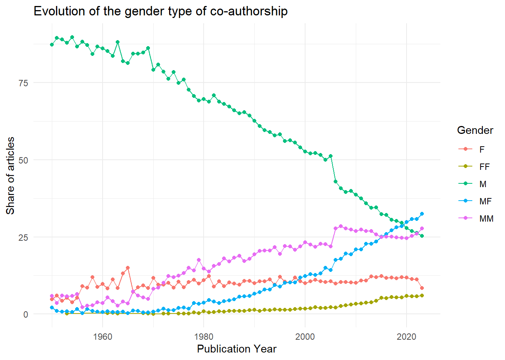
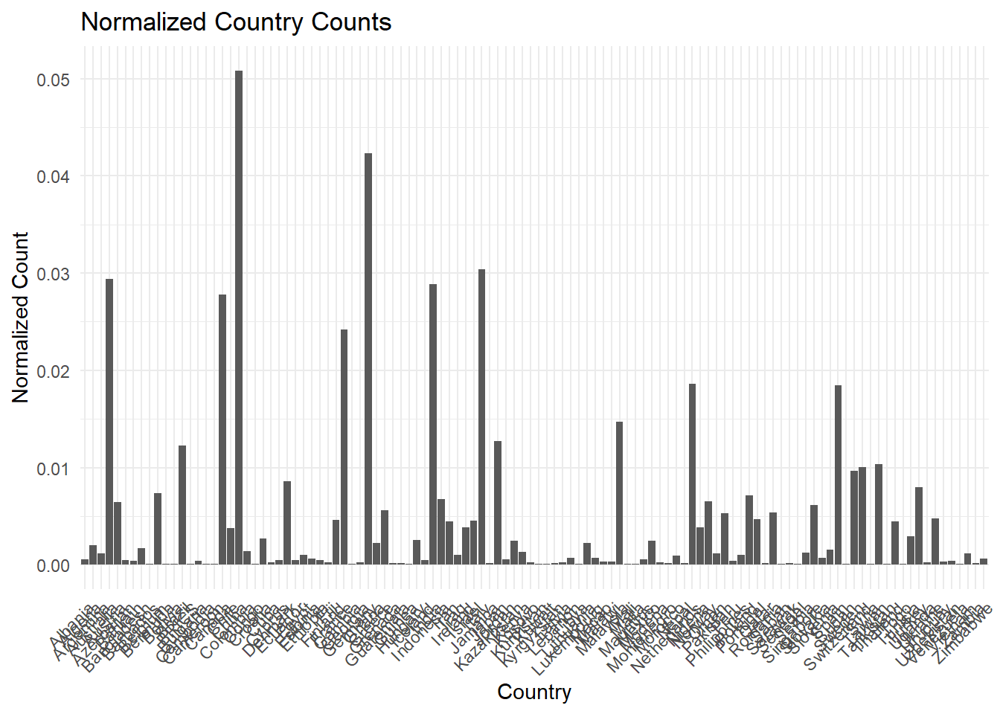

[1] 95589Quantifying interactions between economics of climate change, the rest of economics and other disciplines
Introduction
Gender disparities in scientific research remain a pressing issue, with significant impacts on the balanced development of the field. In particular, gender role positioning and educational restrictions continue to hinder equitable progress in scientific research. This study aims to provide a quantitative analysis of these gender disparities in economics, with a specific focus on climate change economics. The analysis aims at illustrating the gender gap in authorship in economics, by documenting its evolution through years and between journals.
Previous research has shown a dominance of male authors in quantity of articles and influence. Junwan Liu, Yinglu Song, and Sai Yang (2019), in their paper “Gender Disparities in the Field of Economics,” brings evidence of gender disparities in economics, while studying their disparities across countries, institutions, and journal levels. Their findings indicate geographical variations, and also revealed that the number of articles of both male and female authors decreases logarithmically with career age, while the influence of female authors tends to increase with longer careers due to higher qualifications.
Evidence also suggest that the publication process in economics is not gender neutral. For instance, David Card, Stefano Della Vigna, Patricia Funk, and Nagore Iriberri (2019), in their paper “Are Referees and Editors in Economics Gender Neutral?”, examined the role of gender in the evaluation of economic articles by referees and editors. They don’t find any effect of gender on the referee assessment. However, they highlight that female-authored papers get more citations than male-authored papers when considering differences in paper quality and field. Their main explanation is that referees impose higher standards to women authored articles.
Our research complements this literature using a larger bibliographic dataset, drawing from Web of Science and Scopus bibliographic databases, which includes information on more than 1.1 million articles published between 1950 and 2022 in peer-reviewed economic journals. Our analysis then distinguish articles focusing on climate-related issues and the rest of articles in economics. We aim at uncovering whether gender disparities between climate change economics and the rest of the economic literature is substantial. We also account for differences across journal levels and collaboration types. Our objective is to validate and extend previous findings within the niche of climate economics, thereby contributing to the understanding of gender inequalities in this crucial area of research.
Data cleaning and gender assignment algorithm
To accurately assess gender disparities in scientific research, we start by documenting our data preparation process to
Data Preparation
From our corpus of articles from Web of Science and Scopus published in peer-reviewed journals in English (about 1.1 million articles), we restrict our sample to articles with at maximum 15 authors, which constitute 99.95% of the data set. For each article, our database gives us all authors’ full names, names and first names. The first stage of the cleaning process aimed to homogeneize the character encoding. This step ensures that author full names and first name has the same character encoding as the list of authors full names, and the list of first name, that we use to identify gender. The homogeneization of the character encoding means that for instance we removed accentuated character. While homogeneizing character encoding, we also removed other information in the authors variable provided by Scopus and Web of Science, such as their ORCID or Scopus ID. This requires to remove text in brackets, extraneous spaces, in particular those at the beginning and end of names and any letters followed by a period. Also, when creating our first name variable for authors, we removed isolated/single letters (i.e., we removed the the middle names of authors), and we only kept the first name when authors had compound names, as our list of first names used for gender identification does not contain any compound name. This list is provided by the gender package in R. Altogether, these steps ensure that authors’ full names and first names are in a suitable format for gender identification.
Assessing the quality of our gender identification algorithm
Having cleaned up the data and created our algorithm for assigning a gender to each existing first name, we here propose a quality assessment of the algorithm. How well are we assigning gender to our authors in the corpus?
Comparison between total number of first names and first names with assigned gender before the use of an assignation gender algorithm
First and before constructing our algorithm, we can compare the total number of unique first names in our database with the total number of first names that can be assigned to a gender using the “ssa” and “napp” method of the gender package. This gives us an idea on the number of first names for which we can assign a gender proportion.
We have 95,589 unique first names in our database. The total number of first names that can be assigned to a gender thanks to the “ssa” and “napp” method is 24 142. Therefore, we have about 75% of first names whose gender which could not be determined only using the SSA and NAPP methods, and which will not be recognized by these methods. This can seem an important proportion of first name for which we cannot assign gender. But remember that for some of the authors, the gender identification is made using the list of top 10% of economists, and that it is likely that some of the unique first names for which there is no equivalent in the gender package, it is likely that it is relative rare first name (that does not concern many of our 1.1 million articles).
Having a deeper look on those first names not referenced in the gender package, they appear to come from non-Western cultures. These first names are fairly rare and do not recur regularly in the articles, so they have little effect on matching [It would be good to check how many articles have these first names]. However, this is an important limitation in that we are not able to assign a gender probability to a significant part of the worldwide population of economists. Our gender identification is thus not performant regarding non-Western authors and therefore introduces a significant selection bias.
Analysis of gender identification at the article level
summary(Corpus.CleanedNames.2$ratio_identified_gender) Min. 1st Qu. Median Mean 3rd Qu. Max.
0.0000 0.0000 0.7500 0.5987 1.0000 1.0000 In average, an article has 59% of its author with an identified gender. The median tells us that at least 50% of the articles have 75% of their authors with an identified gender.
Analysis of gender identification at article level
It is also possible to study our gender identification at the article level. Our articles can have from 1 to 15 authors. We can count the number of authors for whom the algorithm identify gender for each article. We can then measure the ratio of authors with an identified gender at the article level. The following table documents some quantiles of this variable:
| Nb_articles | 1136055.000 |
| Mean_IdentifiedGender | 0.599 |
| Median_identifiedGender | 0.750 |
| NoGender | 0.299 |
| AllGender | 0.484 |
| Gender_Larger0.5 | 0.652 |
| Gender_Larger0.9 | 0.484 |
| Gender_Larger0.25 | 0.695 |
Around 30% of articles have zero author with an identified gender. This measures the limits of our method to identify author’s gender. On the other hand, for 48% of articles, the gender of all authors is identified. Therefore, there is half of our corpus for which all authors have a gender. For around 65% of articles, we are able to identify gender to at least half of their authors. This shows that most articles have at least partial gender identification among their authors. In addition, for about 69% of our articles, we identify the gender of at least 25% of their authors. Finally, for less than half of the articles, we identify the gender of 90% of their authors. Finally, This figure indicates that, even in the most difficult cases, it is still possible to determine the gender of a proportion of authors, which may be sufficient for certain statistical analyses.
Descriptive statistics and data analysis
library(ggplot2)OneGender_by_Articles <- Corpus.CleanedNames.2 %>%
summarize(Nb_articles = length(ratio_identified_gender), # Nb total d'article
NoGender = length(ratio_identified_gender[is.na(ratio_identified_gender) | ratio_identified_gender == 0]) / Nb_articles)
OneGender_by_Articles Nb_articles NoGender
1 1136055 0.2991554First, we can remind that the absolute number of articles with at least 1 author identified in terms of gender is 1 136 055. Thus, there is at least 70% of our articles whose gender has been assigned to at least one author.
Proportion of male and female authors at an aggregate level
Statistic Proportion_Female_All Proportion_Female_Id Sum_Gender_Female
Min. Min 0.0000000000 0.0000000 0.0000000
1st Qu. 1st Qu. 0.0004333333 0.0005000 0.0009000
Median Median 0.0047000000 0.0051000 0.0083000
Mean Mean 0.2165370610 0.2561972 0.5070374
3rd Qu. 3rd Qu. 0.3985550000 0.5000000 1.0000000
Max. Max 1.0000000000 1.0000000 11.9845000
Sum_Gender_Male Proportion_Male_All Proportion_Male_Id
Min. 0.000000 0.0000000 0.0000000
1st Qu. 0.995100 0.3342333 0.5000000
Median 1.000000 0.6654333 0.9949000
Mean 1.326995 0.6376968 0.7438148
3rd Qu. 1.993400 0.9963000 0.9995000
Max. 14.987500 1.0000000 1.4621500This analysis presents descriptive statistics of gender proportions among authors of academic articles. Variables analyzed include the proportion of female and male authors, both among all authors and among those whose gender was successfully assigned, as well as the sum of male and female gender probabilities for each article.
The results indicate a wide variation in gender proportions among authors. The proportion of female authors among all authors ranges from 0 to 1, with an average of 0.2165, meaning that on average, around 21.65% of authors are female. The proportion of female authors among gender-assigned authors has a slightly higher average of 25.62%, suggesting that women may be better identified among authors. In comparison, the proportion of male authors among all authors is also highly variable, with an average of 63.77%. The proportion of male authors among gender-assigned authors is 74.38% on average, which is higher than for women.
The results therefore reveal a notable under-representation of women among authors of academic articles in terms of proportion. These results highlight the need for continued efforts to encourage and support women’s participation in the academic field.


The graphs below illustrate the distributions of male and female gender proportions among authors whose gender has been assigned. The analysis focuses on two separate histograms, one representing the proportion of male authors and the other the proportion of female authors.
The histogram of the proportion of male authors shows a broadly spread distribution, with a high frequency of values close to 1. This indicates that a large number of articles have a majority proportion of male authors. The distribution also shows a marked asymmetry to the right, reflecting the fact that few articles have a low proportion of male authors.
The histogram of the proportion of female authors reveals a different distribution. Most values lie between 0 and 0.5, with a notable peak at the lower values. This distribution shows that there are relatively few articles with a high proportion of female authors, and many articles have lower proportions of women. In contrast to the distribution for men, this distribution is asymmetrical towards the left, indicating that the predominance of women among authors is less common.
A comparison of these two distributions reveals a significant under-representation of women among authors of academic articles. While the proportion of men tends to be high in many articles, that of women remains low in the majority of cases. These observations are consistent with previous statistical findings, underlining the need for ongoing efforts to balance gender representation in academia. The disparity observed in the distributions calls for reflection on the factors contributing to this inequality, and the development of strategies to promote greater inclusion of women in scientific research.
Proportion of female and male authors according to different type of collaboration
# A tibble: 6 × 5
category_gender Mean_Proportion_Female_Id Median_Proportion_Female_Id
<chr> <dbl> <dbl>
1 F 0.995 0.999
2 FF 0.996 0.998
3 M 0.00486 0.0019
4 MF 0.464 0.500
5 MM 0.00457 0.0026
6 <NA> NaN NA
# ℹ 2 more variables: Mean_Proportion_Male_Id <dbl>,
# Median_Proportion_Male_Id <dbl>Warning: Removed 2 rows containing missing values or values outside the scale range
(`geom_bar()`).
This section presents an analysis of collaboration categories within academic research according to author gender. Descriptive statistics include the mean and median proportion of female and male authors assigned per category.
Let’s focus on the “MF” category, which represents articles written by authors of both genders. The average proportion of female authors in this category is around 46.36%, while the average proportion of male authors is slightly higher, at around 53.64%. This near-equality of proportions indicates a remarkable gender parity in mixed collaborations. Unlike the “F” and “FF” categories, where women are almost exclusively the sole authors, or the “M” and “MM” categories, where men strongly dominate, the “MF” category shows a more balanced distribution.
This is a significant result, as it underlines the importance of mixed collaborations in achieving a more balanced gender representation in academic research. The almost equal presence of men and women in mixed collaborations may reflect a more inclusive and diversified work dynamic. This parity in proportions could foster a research environment where the ideas and perspectives of both genders are better represented and integrated. Promoting this type of collaboration could be an effective way of reducing gender inequalities in academia. Policies and initiatives to encourage mixed-gender collaborations could thus play a crucial role in advancing gender equity in science and research.
Overall Temporal evolution
# A tibble: 75 × 3
PY Mean_Proportion_Female_Id Mean_Proportion_Male_Id
<dbl> <dbl> <dbl>
1 1950 0.0614 0.939
2 1951 0.0697 0.930
3 1952 0.0523 0.948
4 1953 0.0642 0.936
5 1954 0.0454 0.955
6 1955 0.0656 0.934
7 1956 0.100 0.900
8 1957 0.100 0.900
9 1958 0.128 0.872
10 1959 0.0971 0.903
# ℹ 65 more rowsWarning: Removed 2 rows containing missing values or values outside the scale range
(`geom_line()`).This section presents the evolution of the average proportion of female and male authors in academic publications, from 1950 to 2023. It reveals significant trends over several decades, highlighting gender dynamics in academic research.
From 1950 to 1970, the average proportion of female authors remained remarkably low, hovering around 0.06. During this period, male authors largely dominated publications, with proportions approaching 0.94. This disparity underlines the predominance of men in the academic field at the time.
Between 1970 and 1990, a slight increase in the proportion of female authors was observed, rising from around 0.12 to 0.15. This period marks the beginning of a gradual change, although men continue to represent a substantial majority.The increase remains modest, but indicates a trend towards gender diversification among academic authors.
From the 1990s onwards, the average proportion of female authors began to rise more significantly. By 1995, this proportion had risen to around 0.18, indicating greater inclusion of women in academic publications. This trend has continued steadily, with the proportion reaching around 0.30 in 2017. At the same time, the average proportion of male authors is gradually decreasing, but remains dominant.
Since 2017, the average proportion of female authors has exceeded 0.30, reaching 0.32 in 2020. This growth indicates increasing gender parity, although men continue to constitute a relative majority with an average proportion around 0.68. Recent years have seen a stabilization of these proportions, with slight fluctuations.
In conclusion, this section illustrates a positive trend towards greater inclusion of women in academic research over the decades. Although men are still in the majority, the continuing growth in the proportion of female authors bears witness to a gradual shift towards more balanced gender representation in scientific publications.
Temporal evolution according to categorical variables
# A tibble: 435 × 4
PY category_gender Mean_Proportion_Female_Id Mean_Proportion_Male_Id
<dbl> <chr> <dbl> <dbl>
1 1950 F 0.997 0.00276
2 1950 M 0.00617 0.994
3 1950 MF 0.366 0.634
4 1950 MM 0.00694 0.993
5 1950 <NA> NaN NaN
6 1951 F 0.992 0.00819
7 1951 M 0.00611 0.994
8 1951 MF 0.479 0.521
9 1951 MM 0.00610 0.994
10 1951 <NA> NaN NaN
# ℹ 425 more rowsWarning: Using `size` aesthetic for lines was deprecated in ggplot2 3.4.0.
ℹ Please use `linewidth` instead.Warning: Removed 152 rows containing missing values or values outside the scale range
(`geom_line()`).
This section provides an analysis of the evolution of average author proportions by gender from 1950 to 2023, and highlights significant dynamics in academic collaborations.
Analysis of gender proportions in mixed collaborations (MF) from 1950 to 2023 reveals that in 1950, female authors represented an average of 37% of mixed teams, compared with 63% for male authors. This male dominance persisted until the 1960s. In the 1970s, the average proportion of female authors reached 48%, marking progress towards greater integration of women. From the 2000s onwards, the proportion of women authors continued to rise, although at just under 46%, reflecting a positive trend towards greater parity.
The data thus show a gradual integration of women into mixed collaborations, indicating steady progress towards gender parity in academic research, despite the persistence of a slight male majority.
Temporal evolution according to categorical variables, by number of articles
`summarise()` has grouped output by 'PY'. You can override using the `.groups`
argument.# A tibble: 435 × 3
# Groups: PY [75]
PY category_gender nb_articles
<dbl> <chr> <int>
1 1950 F 27
2 1950 M 491
3 1950 MF 12
4 1950 MM 33
5 1950 <NA> 368
6 1951 F 35
7 1951 M 525
8 1951 MF 6
9 1951 MM 21
10 1951 <NA> 365
# ℹ 425 more rowsWarning: Removed 6 rows containing missing values or values outside the scale range
(`geom_line()`).Warning: Removed 6 rows containing missing values or values outside the scale range
(`geom_point()`).
Analysis of data on the number of articles by gender category from 1950 to 2021 reveals some interesting, albeit nuanced, trends. In 1950, the “M” category (exclusively male) dominated, with 491 articles. The “F” (all-female) and “MF” (mixed) categories accounted for 27 and 12 items respectively.
In subsequent years, trends changed significantly. For example, in 1960, although the “M” category remained dominant with 381 items, the “F” and “MM” categories showed an increase compared to 1950. However, missing data also began to appear more pronounced.
The 1970s mark a notable change, with a significant increase in the number of articles in all categories, including a notable rise in missing data. The “F” category began to show gradual growth, reaching 130 articles in 1970.
From the 2000s onwards, all categories see a marked increase in the number of articles, reflecting a global expansion of academic research. The “MF” (mixed collaboration) category grows particularly rapidly, peaking in 2021 with 16,267 articles, but missing data also increases drastically.
In conclusion, these data illustrate not only the quantitative expansion of scientific research over the decades, but also changes in the gendered composition of research teams, with a significant increase in mixed collaboration. However, it is crucial to take into account the impact of missing data, which can influence the interpretation of these upward trends.
Analysis of articles on climate change at an aggregate level
# A tibble: 2 × 5
CC Mean_Proportion_Female_Id Median_Proportion_Fem…¹ Mean_Proportion_Male…²
<dbl> <dbl> <dbl> <dbl>
1 0 0.255 0.00505 0.745
2 1 0.283 0.016 0.717
# ℹ abbreviated names: ¹Median_Proportion_Female_Id, ²Mean_Proportion_Male_Id
# ℹ 1 more variable: Median_Proportion_Male_Id <dbl>
Analysis of the data on articles relating to climate change, grouped according to the binary variable “CC” (climate change), reveals notable differences in the gendered composition of authors.
Looking at the descriptive statistics, we see that in the category where the theme of climate change is central (“CC = 1”), the average proportion of female authors is slightly higher than in the “CC = 0” category. In detail, the average proportion of female authors is 28.29% in the “CC = 1” category, compared with 25.53% in the “CC = 0” category. On the other hand, the “CC = 0” category shows a greater predominance of male authors, with an average of 74.47%, compared to the “CC = 1” category where the average is 71.71%.
These results highlight a distinct gendered distribution in climate change-related publications, with a predominance of male authors in both categories but more female authors in articles that focus on climate change, thus indicating varied dynamics in gender participation depending on the specific research theme.
Climate change, category gender and number of articles
# A tibble: 12 × 3
CC category_gender nb_articles
<dbl> <chr> <int>
1 0 F 86249
2 0 FF 30631
3 0 M 296893
4 0 MF 167934
5 0 MM 188404
6 0 <NA> 334413
7 1 F 2503
8 1 FF 1131
9 1 M 6994
10 1 MF 8310
11 1 MM 7149
12 1 <NA> 5444
Analysis of the data on the number of articles relating to climate change, represented by the binary variable “CC” (climate change) and the gender category, reveals some interesting trends in the distribution of publications.
Looking at the descriptive statistics, we observe a marked disparity in the number of articles published according to gender category and type of scientific research. In the “CC = 0” category (not focused on climate change), the distribution of articles by gender is significantly different from that observed in the “CC = 1” category (focused on climate change).
For the “CC = 0” category, which does not deal specifically with climate change, the data show a significant predominance of articles attributed to the masculine (296,893 articles) and feminine (86,249 articles) genders, followed by mixed gender combinations (167,934 articles for MF, 188,404 articles for MM). In contrast, the “CC = 1” category shows lower overall articles numbers, with a similar trend of male predominance, but with a slightly higher proportion of items attributed to mixed gender combinations (8,310 articles for MF, 7,149 articles for MM). Analysis of the number of articles by genre category therefore reveals that, despite the lower overall quantity of articles in the “CC = 1” category, mixed-genre combinations account for a significant share compared with the other categories, underlining an increased diversity in scientific collaborations focused on climate change.
Temporal evolution of the proportion of female authors by CC
# A tibble: 124 × 3
PY CC Mean_Proportion_Female_Id
<dbl> <dbl> <dbl>
1 1950 0 0.0614
2 1951 0 0.0697
3 1952 0 0.0523
4 1953 0 0.0642
5 1954 0 0.0454
6 1955 0 0.0656
7 1956 0 0.100
8 1957 0 0.100
9 1958 0 0.128
10 1959 0 0.0971
# ℹ 114 more rowsWarning: Removed 6 rows containing missing values or values outside the scale range
(`geom_line()`).
This section provides descriptive statistics and an analysis of the time trend in the proportion of authors identified as “women”, for articles dealing with climate change (“CC” = 1) compared with articles not dealing with climate change (CC = 0). Analysis of the results shows an upward trend in the proportion of women in both categories. For example, in 1983, the proportion of women authors was 13.5%, whereas it was 30.1% in 2017. For articles on climate change, the proportion was 0.4% in 1989, compared with 23% in 2023. The increase in the proportion of women is therefore more marked in climate economics research than in other types of economic research.
###.Focus on Top5 and Top30 journals and on climte change
`summarise()` has grouped output by 'TopFive'. You can override using the
`.groups` argument.# A tibble: 4 × 6
# Groups: TopFive [2]
TopFive CC Mean_Proportion_Female_Id Median_Proportion_Female_Id
<dbl> <dbl> <dbl> <dbl>
1 0 0 0.257 0.0051
2 0 1 0.283 0.0163
3 1 0 0.143 0.00205
4 1 1 0.124 0.00375
# ℹ 2 more variables: Median_Proportion_Male_Id <dbl>,
# Mean_Proportion_Male_Id <dbl>`summarise()` has grouped output by 'Top30'. You can override using the
`.groups` argument.# A tibble: 4 × 6
# Groups: Top30 [2]
Top30 CC Mean_Proportion_Female_Id Median_Proportion_Female_Id
<dbl> <dbl> <dbl> <dbl>
1 0 0 0.260 0.00525
2 0 1 0.285 0.0171
3 1 0 0.172 0.0034
4 1 1 0.138 0.0032
# ℹ 2 more variables: Median_Proportion_Male_Id <dbl>,
# Mean_Proportion_Male_Id <dbl>This section provides descriptive statistics on the proportion of women and men by journal type and research theme. For articles not related to climate change (CC = 0), the average proportion of female authors is higher in Top 30 journals (26.05%) than in Top 5 journals (14.26%). This suggests a more significant representation of female authors in the lower-quality newspapers for this type of article.
On the other hand, for articles on climate change (CC = 1), although the trend is similar, with a higher average proportion of female authors in Top 30 (13.80%) compared to Top 5 (12.41%), the gap is less marked than for articles not related to climate change.
Warning: Removed 339857 rows containing non-finite outside the scale range
(`stat_boxplot()`).
Warning: Removed 339857 rows containing non-finite outside the scale range
(`stat_boxplot()`).
Modèle économétrique de citations
Construire un modèle qui permet de déterminer s’il existe un effet de l’autorat féminin sur les citations des articles de recherches. Il est également possible de saisir le rôle du changement climatique (est-ce que les articles associés au changement climatiques sont plus cités que le reste des articles en économie?).
- explorer les données de citations: plusieurs variables existent (regarder le dictionnaire de variables, je crois qu’il y en a au moins 3). Regarder le degré de corrélation entre toutes ces mesures de citation, regarder également les valeurs manquantes afin de choisir laquelle des variables de citation choisir.
CR (Cited References) et NR (Cited References Count): ne son plus dans la base de données, pourtant il s’agit je pense de variables importantes
TC : Web of Sciences Core Collection Times Cited Count.
na_TC <- sum(is.na(Corpus.CleanedNames.2$TC))
print(na_TC)[1] 80208020 valeurs manquantes sur 1 136 055 soit seulement 0.7%.
- Z9 : Total Times Cited Count
na_Z9 <- sum(is.na(Corpus.CleanedNames.2$Z9))
print(na_Z9)[1] 460866460 866 valeurs manquantes sur 1 136 055 soit 40.5%
- U1 et U2 peuvent être des variables intéressantes mais je ne comprends pas vraiment à quoi elles font référence.U2 citations entre 2013 et 2023
na_U1 <- sum(is.na(Corpus.CleanedNames.2$U1))
print(na_U1)[1] 460865460 865 valeurs manquantes sur 1 136 055 soit 40.5%
na_U2 <- sum(is.na(Corpus.CleanedNames.2$U2))
print(na_U2)[1] 460866460866 valeurs manquantes sur 1 136 055 soit 40.5%
Mêmes chiffres pour U1,U2 et Z9 donc il s’agit peut-être des mêmes articles à chaque fois dont les valeurs sont manquantes pour ces 3 variables. TC semble être la meilleure variable à utiliser étant donné son faible nombre de donnnées manquantes.
- Lire les deux articles déposés sur la dropbox (cliquer ici pour le lien). L’article de Nature est très descriptif et possiblement en décalage (la question des premiers auteurs ne se posent pas en économie, car l’ordre des auteurs est quasi systématiquement l’ordre alphabétique). L’article dans la revue de sciences sociale est vraiment pas mal pour situer la question, et voir une approche (l’article fait aussi une bonne revue de litté qui peut être utile si tu cherches d’autres méthodes/références pour t’inspirer).
Global gender disparities in science (R. Sugimoto) = global and cross-disciplinary analysis of gender inequalties in research output
Constats:
- Differences in productivity: men publish more papers than women, especially in areas in which research is expensive.
- Citations: Women are more cited especially in fields with greater career risks such as ecology.
Methodology:
Analysis of the relationship between gender and research output (proxy = authorship on published papers);
Analysis of the extent of collaboration (proxy = co-authorships);
Analysis of scientific impact of articles published between 2008 and 2012 indexed in Web of Science databases (proxy = citations).
Observations: 5,483,841 research papers and review articles with 27,329,915 authorships.
Gender assignment: using data from the US Social Security database
Proportion of each gender’s output by comparing the proportion of identified authorships for each gender on any given paper.These gendered fractions were then aggregated at the levels of countries and disciplines.
Results:
Women account for fewer than 30% of fractionalized authorships.
Geographical disparities: research output is dominated by male authors in nearly every country. Communists states have greater gender parity. Countries with lower research output concentrate female dominance. South American and Eastern European countries demonstrate greater gender parity.
In the most productive countries, all articles with women in dominant author positions receive fewer citations than those with men in the same positions
Women profit less from the extra citations that international collaborations accrue.
Women publish more in fields related to “care” whereas men publish more in fields related to economics or high-energy physics.
Collaboration: Women are less likely to participate in collaborations that lead to publication as well as international collaborations: female collaborations are more domestically oriented than are the collaborations of males from the same country.
Limits
Age which could play a crucial role in explaining gender differences in scientific output
The analysis of first authors insofar as authors are listed alphabetically.
A rare case of Gender Parity in Academia (B.Lynn, C.Noonan, M.Sauder)
Context: The study explores the gender gap in academic citations, focusing on the reasons behind the absence of a significant gender gap in this specific context and controlling for citations predictors.
Citation information has played an increasingly explicit role in the way that scholars and administrative bodies measure “research achievement” + the fact of attracting their peers.
Analysis: Estimate the effect of author gender on citations.Questions:
To what extent do female- and male-led publications exhibit similar characteristics in terms of citation predictors?
Do comparable male- and female-led publications attract a comparable number of citations?
How important is author gender overall relative to other citation predictors?
Reasons of this analysis:
Gender could be significantly correlated with one of the abovementioned citation predictors, such as producer expertize, authority, or visibility.
Audience could discriminate directly on the basis on author gender when allocating citations, in which case author gender would predict citation counts even if publications were otherwise comparable
Other interesting bibliography
Aksnes et al. (2011) - Research area = Biology and environmental sciences. Results = Female penalty
Methodology
Data Sample: Analysis of approximately 10,000 publications across economics, political science, sociology and regional journals.
Citation counts = number of citations accruing to each focal article (as indexed by WoS) from the publication date through December 2013. Citation trajectories thus range from 10 to 30 years, depending on when the article was published.
Sales-Pardo, and Amaral (2010) argue that for the vast majority of journals, publications generally accumulate the bulk of their citations within roughly ten years of publication. They thus recommend that citation studies focus on publication cohorts that are at least a decade old.
Citation predictors
The number of citations can be shaped by characteristics = citation predictors : the product (the article, the journal), the producers (the popularity of authors, marketing), market size and the audience (scholarly peers, the field / discrimination)
Market size proxies:
First proxy = subfields = they classify each referenced journal by its field according to Journal Citation Reports (JCR).
Second proxy = the “uniqueness” of the work cited in the focal article regarding the sources cited. They expect that this variable is negatively correlated with total citation counts, as too many unconventional sources could indicate that the article (a) focuses on a non-conventional topic (and thus has a smaller audience) or (b) is perceived by the audience as unpersuasive.
Producer Expertize, Authority and Visibility
Median publication year of all references: negatively correlated with citations receivedProportion of References to Unpublished Sources in the Focal Article divided by the total number of references: positively correlated with citations received
Focal Author(s) Institutional Prestige: author’s institutional affiliation at the time of publication matched with the 1990 National Research Council’s departmental prestige rankings: positively correlated with citations received.
Focal Author(s) Flagship Journal Appearances: the number of times a researcher publishes in his/her discipline’s top journals is used as a proxy for scholarly visibility and expertize: positively correlated with citations received.
Presence of Self-Citation: proxy for self-promotion. Self-citation is measured as the presence of at least one self-citation in the focal article.
Control Variables: article type, articles are either single or multipled authors, number of pages and number of references
Results:
OLS results = no significant gender gap in terms of the number of logged citations. When male and female authors publish articles that are comparably positioned to receive citations, their publications accrue citations at the same rate.
Results of predictors: the estimated effects of the other citation predictors are generally in the expected direction
It highlights two mechanisms: commitment bias and self-selection, which are often activated in other professional outcomes but seem irrelevant or muted in the case of citations.
- Il va falloir ensuite faire des modèles économétriques et diagnostiquer les résultats. Il ya plusieurs points qui vont être problématique: beaucoup d’articles avec 0 citation, beaucoup de journaux avec peu d’articles. Une solution possible est de ne garder qu’un sous échantillon de journaux stable sur tout l’échantillon. Il y aura alors des allers retours récurrents entre une spécification économétrique, une interprétation de résultat, puis une modification de l’échantillon ou du modèle pour aboutir à quelques choses qui semble satisfaisant.
L’idée est de viser un modèle de ce type:
$C_{i,j,t} = _0 + _j + _t + F_i + *1* NAUTH{i} + *k X_k +* $
- \(C_{i,j,t}\) sont les citations reçues par l’article i publié dans le journal \(j\) à l’année \(t\) = TC
-alpha_0 = constante
- \(\delta_j\) un effet fixe journal = TI
- \(\mu_t\) un effet fixe année (sinon, possible d’estimer sans effet fixe année, mais en mesurant les citations divisés par l’âge de l’article = une mesure du nombre moyen de citations reçues par l’article chaque année depuis sa publication) = PY
- \(F_i\) la variable mesurant la part d’autorat féminin (ou bien à combiner avec n’importe quel autre variable d’intérêt, les articles qui traitent du changement climatique, les différentes combinaisons de genre de collaborations) = proportion_gender_female_id / CC
- puis intégrer des variables de contrôle = nombre de journaux = PG / nombre auteurs = nb_authors
-> ne pas s’inquiéter si les résultats ne sont pas significatifs. D’après un rapide regard, cela semble normal d’après la littérature de ne pas remarquer une différence moyenne de citation selon le genre. L’idée est surtout de tester différents modèles et de les comparer.
Une ressource possiblement utile: Le cours d’économétrie de Sciences Po en ligne(cliquer ici)[https://scpoecon.github.io/ScPoEconometrics/panel-data.html]. Avec pas mal de commandes de base sur R, il est plutot bien fait pour s’introduire à l’économétrie. JE pense que c’est une bonne première base. Si tu veux aller plus loin, dis moi et je peux te filer d’autres manuels ou supports. Tu peux essayer d’appliquer leur exercice d’analyse du crime dans les comtés américains par année. Ici nous c’est l’analyse du genre dans les journaux d’économie et par année. Je pense qu’il faut voir le journal/la revue comme l’équivalent du comté, et ensuite chaque article est comme un crime (avec dans notre cas des caractéristiques dont on cherche à évaluer le rôle: dont notamment le genre des auteurs.) Les modèles que l’on cherche à faire sont ceux de la “dummy variable regression” ou aussi de la “within transformation” (sur le site web). Qui sont deux approches parfaitement équivalentes (eles donnent les mêmes coefficient pour le \(\beta\) associé à la variable F).
library(dplyr)
library(lmtest)Le chargement a nécessité le package : zoo
Attachement du package : 'zoo'Les objets suivants sont masqués depuis 'package:data.table':
yearmon, yearqtrLes objets suivants sont masqués depuis 'package:base':
as.Date, as.Date.numeric# Prendre les 6000 premières lignes des données
sample_data <- Corpus.CleanedNames.2 %>%
slice_sample(n = 6000) %>%
filter(!is.na(PY))Effet fixe en facteurs
sample_data <- sample_data %>%
mutate(PY = as.factor(PY), # Effet fixe année
SO = as.factor(SO)) # Effet fixe journalCorpus.CleanedNames.2 <- Corpus.CleanedNames.2 %>%
mutate(PY = as.factor(PY), # Effet fixe année=PY
SO = as.factor(SO)) # Effet fixe journal=SOlevels_count1 <- sample_data %>%
summarise(PY_levels = n_distinct(TI),
SO_levels = n_distinct(SO))
print(levels_count1) PY_levels SO_levels
1 5965 1671levels_count <- Corpus.CleanedNames.2 %>%
summarise(PY_levels = n_distinct(PY),
SO_levels = n_distinct(SO))
print(levels_count) PY_levels SO_levels
1 75 1012775 années différentes et 10 127 journaux différents.
Citations et nombre de pages en numérique
sample_data$PG <- as.numeric(sample_data$PG)
sample_data$TC <- as.numeric(sample_data$TC)Corpus.CleanedNames.2$PG <- as.numeric(Corpus.CleanedNames.2$PG)
Corpus.CleanedNames.2$TC <- as.numeric(Corpus.CleanedNames.2$TC)Warning: NAs introduits lors de la conversion automatiqueRégression des citations sur l’effet fixe année, l’effet fixe journal, la proportion d’auteurs identifiées comme femme, avec comme variables de contrôle le nombre d’auteurs et de page par article
model_1 <- lm(TC ~ SO + PY + proportion_gender_female_id + PG + nb_authors, data = sample_data)
names(model_1$coefficients) [1] "(Intercept)"
[2] "SOAcademic Journal of Interdisciplinary Studies"
[3] "SOAcademy of Accounting and Financial Studies Journal"
[4] "SOAcademy of Entrepreneurship Journal"
[5] "SOAccounting and Finance"
[6] "SOAccounting Forum"
[7] "SOAccounting Perspectives"
[8] "SOAccounting Research Journal"
[9] "SOAccounting Review"
[10] "SOAccounting, Auditing and Accountability Journal"
[11] "SOACTA OECONOMICA"
[12] "SOActual Problems of Economics"
[13] "SOAdministration"
[14] "SOADMINISTRATIVE BURDEN: POLICYMAKING BY OTHER MEANS"
[15] "SOAdvances in Accounting"
[16] "SOAdvances in Applied Microeconomics"
[17] "SOADVANCES IN ECONOMETRICS, VOL 13 1998"
[18] "SOADVANCES IN MATHEMATICAL ECONOMICS, VOL 21"
[19] "SOAdvances in Strategic Management"
[20] "SOAdvances in Taxation"
[21] "SOAdvances in the Study of Entrepreneurship, Innovation, and Economic Growth"
[22] "SOAdvances in Theoretical Economics"
[23] "SOAFRICA YEARBOOK: POLITICS, ECONOMY AND SOCIETY SOUTH OF THE SAHARA IN 2015, VOL 12"
[24] "SOAFRICAN JOURNAL OF AGRICULTURAL AND RESOURCE ECONOMICS-AFJARE"
[25] "SOAfrican Journal of Business and Economic Research"
[26] "SOAFRICAN REVIEW OF ECONOMICS AND FINANCE-AREF"
[27] "SOAfro-Asian Journal of Finance and Accounting"
[28] "SOAFTER THE BERLIN WALL, VOL. 1: A History of the EBRD"
[29] "SOAgBioForum"
[30] "SOAGREKON"
[31] "SOAGRI-FOOD SUPPLY CHAIN MANAGEMENT: BREAKTHROUGHS IN RESEARCH AND PRACTICE"
[32] "SOAgribusiness"
[33] "SOAGRIBUSINESS"
[34] "SOAGRICULTURA SOCIEDAD Y DESARROLLO"
[35] "SOAGRICULTURAL AND RESOURCE ECONOMICS REVIEW"
[36] "SOAGRICULTURAL ECONOMICS"
[37] "SOAGRICULTURAL ECONOMICS-ZEMEDELSKA EKONOMIKA"
[38] "SOAGRICULTURAL ECONOMICS RESEARCH"
[39] "SOAgricultural Finance Review"
[40] "SOAGRICULTURAL FINANCE REVIEW"
[41] "SOAgricultural History Review"
[42] "SOAGRICULTURAL TRANSFORMATION IN NEPAL: TRENDS, PROSPECTS, AND POLICY OPTIONS"
[43] "SOAgris On-line Papers in Economics and Informatics"
[44] "SOAgroalimentaria"
[45] "SOAID THAT WORKS: SUCCESSFUL DEVELOPMENT IN FRAGILE STATES"
[46] "SOAIRLINE EFFICIENCY"
[47] "SOAlgorithmic Finance"
[48] "SOAlternative Lifestyles"
[49] "SOAMERICAN ECONOMIC JOURNAL-APPLIED ECONOMICS"
[50] "SOAMERICAN ECONOMIC JOURNAL-ECONOMIC POLICY"
[51] "SOAMERICAN ECONOMIC JOURNAL-MACROECONOMICS"
[52] "SOAMERICAN ECONOMIC JOURNAL-MICROECONOMICS"
[53] "SOAMERICAN ECONOMIC REVIEW"
[54] "SOAMERICAN ECONOMIC REVIEW-INSIGHTS"
[55] "SOAmerican Economist"
[56] "SOAMERICAN EMPIRE AND THE POLITICAL ECONOMY OF GLOBAL FINANCE"
[57] "SOAmerican Journal of Agricultural Economics"
[58] "SOAMERICAN JOURNAL OF AGRICULTURAL ECONOMICS"
[59] "SOAmerican Journal of Economics and Sociology"
[60] "SOAMERICAN JOURNAL OF ECONOMICS AND SOCIOLOGY"
[61] "SOAMERICAN JOURNAL OF HEALTH ECONOMICS"
[62] "SOAmerican Law and Economics Review"
[63] "SOAMERICAN LAW AND ECONOMICS REVIEW"
[64] "SOAmfiteatru Economic"
[65] "SOAMFITEATRU ECONOMIC"
[66] "SOANARCHY, STATE AND PUBLIC CHOICE"
[67] "SOANNALS OF ECONOMIC AND SOCIAL MEASUREMENT"
[68] "SOAnnals of Finance"
[69] "SOAnnals of Public and Cooperative Economics"
[70] "SOANNALS OF PUBLIC AND COOPERATIVE ECONOMICS"
[71] "SOANNALS OF REGIONAL SCIENCE"
[72] "SOANNUAL REVIEW OF ECONOMICS, VOL 6"
[73] "SOANNUAL REVIEW OF FINANCIAL ECONOMICS, VOL 2"
[74] "SOANNUAL REVIEW OF FINANCIAL ECONOMICS, VOL 5"
[75] "SOANNUAL REVIEW OF RESOURCE ECONOMICS, VOL 13"
[76] "SOANTITRUST LAW AND ECONOMICS"
[77] "SOAPPLIED APPROACHES TO SOCIETAL INSTITUTIONS AND ECONOMICS: ESSAYS IN HONOR OF MORIKI HOSOE"
[78] "SOApplied Computer Science"
[79] "SOApplied Econometrics and International Development"
[80] "SOAPPLIED ECONOMIC ANALYSIS"
[81] "SOAPPLIED ECONOMIC PERSPECTIVES AND POLICY"
[82] "SOAPPLIED ECONOMICS"
[83] "SOApplied Economics Letters"
[84] "SOAPPLIED ECONOMICS LETTERS"
[85] "SOApplied Financial Economics"
[86] "SOApplied Financial Economics Letters"
[87] "SOAPPLIED HEALTH ECONOMICS AND HEALTH POLICY"
[88] "SOAPPLIED LAW AND ECONOMICS OF PUBLIC PROCUREMENT"
[89] "SOApplied Mathematical Finance"
[90] "SOAPPLIED REGIONAL GROWTH AND INNOVATION MODELS"
[91] "SOARGUMENTA OECONOMICA"
[92] "SOAsia-Pacific Financial Markets"
[93] "SOASIA-PACIFIC JOURNAL OF ACCOUNTING & ECONOMICS"
[94] "SOAsia-Pacific Journal of Financial Studies"
[95] "SOASIA-PACIFIC JOURNAL OF REGIONAL SCIENCE"
[96] "SOAsia-Pacific Review"
[97] "SOAsia-Pacific Social Science Review"
[98] "SOAsia and the Pacific Policy Studies"
[99] "SOAsia Pacific Journal of Management"
[100] "SOASIA RISING: GROWTH AND RESILIENCE IN AN UNCERTAIN GLOBAL ECONOMY"
[101] "SOAsian Affairs"
[102] "SOASIAN ECONOMIC PAPERS"
[103] "SOASIAN JOURNAL OF TECHNOLOGY INNOVATION"
[104] "SOAsian Review of Accounting"
[105] "SOAsian Social Science"
[106] "SOASSESSING THE ENVIRONMENTAL IMPACT OF AGRICULTURE"
[107] "SOAStA Advances in Statistical Analysis"
[108] "SOASTIN Bulletin"
[109] "SOASTIN BULLETIN"
[110] "SOASTIN BULLETIN-THE JOURNAL OF THE INTERNATIONAL ACTUARIAL ASSOCIATION"
[111] "SOATLANTA ECONOMIC REVIEW"
[112] "SOAtlantic Economic Journal"
[113] "SOATLANTIC ECONOMIC JOURNAL"
[114] "SOAUCO Czech Economic Review"
[115] "SOAuditing"
[116] "SOAustralasian Accounting, Business and Finance Journal"
[117] "SOAustralasian Marketing Journal"
[118] "SOAUSTRALIAN ECONOMIC HISTORY REVIEW"
[119] "SOAustralian Economic Papers"
[120] "SOAUSTRALIAN ECONOMIC PAPERS"
[121] "SOAustralian Economic Review"
[122] "SOAUSTRALIAN ECONOMIC REVIEW"
[123] "SOAUSTRALIAN JOURNAL OF AGRICULTURAL AND RESOURCE ECONOMICS"
[124] "SOAUSTRALIAN JOURNAL OF AGRICULTURAL ECONOMICS"
[125] "SOB E JOURNAL OF ECONOMIC ANALYSIS & POLICY"
[126] "SOB E JOURNAL OF MACROECONOMICS"
[127] "SOB E JOURNAL OF THEORETICAL ECONOMICS"
[128] "SOBALTIC JOURNAL OF ECONOMIC STUDIES"
[129] "SOBank i Kredyt"
[130] "SOBanking Law Journal"
[131] "SOBanks and Bank Systems"
[132] "SOBAYESIAN ECONOMETRICS"
[133] "SOBEGINNINGS OF SCHOLARLY ECONOMIC JOURNALISM: THE AUSTRIAN ECONOMIST AND THE GERMAN ECONOMIST"
[134] "SOBELL JOURNAL OF ECONOMICS"
[135] "SOBIOFUELS IN AFRICA: OPPORTUNITIES, PROSPECTS, AND CHALLENGES"
[136] "SOBIRTH OF A MARKET: THE U.S. TREASURY SECURITIES MARKET FROM THE GREAT WAR TO THE GREAT DEPRESSION"
[137] "SOBOTSWANA - A MODERN ECONOMIC HISTORY: AN AFRICAN DIAMOND IN THE ROUGH"
[138] "SOBrazilian Business Review"
[139] "SOBrazilian Journal of Political Economy"
[140] "SOBRIDGING THE GLOBAL DIGITAL DIVIDE"
[141] "SOBRIDGING THE PROSPERITY GAP IN THE EU: THE SOCIAL CHALLENGE AHEAD"
[142] "SOBRITISH ECONOMIC DEVELOPMENT IN SOUTH EAST ASIA, 1880-1939, VOL 1: AGRICULTURE"
[143] "SOBRITISH FOOD JOURNAL"
[144] "SOBROOKINGS PAPERS ON ECONOMIC ACTIVITY"
[145] "SOBRQ Business Research Quarterly"
[146] "SOBUILDING A CASHLESS SOCIETY: THE SWEDISH ROUTE TO THE FUTURE OF CASH PAYMENTS"
[147] "SOBULLETIN FOR INTERNATIONAL FISCAL DOCUMENTATION"
[148] "SOBulletin of Economic Research"
[149] "SOBULLETIN OF ECONOMIC RESEARCH"
[150] "SOBulletin of Indonesian Economic Studies"
[151] "SOBULLETIN OF INDONESIAN ECONOMIC STUDIES"
[152] "SOBusiness and Professional Ethics Journal"
[153] "SOBusiness Communication Quarterly"
[154] "SOBusiness Economics"
[155] "SOBusiness Ethics"
[156] "SOBusiness Ethics Quarterly"
[157] "SOBusiness Ethics: A European Review"
[158] "SOBusiness Informatics"
[159] "SOBusiness Information Review"
[160] "SOBusiness Strategy and Development"
[161] "SOBusiness Strategy Review"
[162] "SOBusiness Week"
[163] "SOCAMBRIDGE ECONOMIC HISTORY OF THE GRECO-ROMAN WORLD"
[164] "SOCAMBRIDGE HANDBOOK OF ANTITRUST, INTELLECTUAL PROPERTY, AND HIGH TECH"
[165] "SOCambridge Journal of Economics"
[166] "SOCAMBRIDGE JOURNAL OF ECONOMICS"
[167] "SOCAMBRIDGE JOURNAL OF REGIONS ECONOMY AND SOCIETY"
[168] "SOCANADIAN JOURNAL OF AGRICULTURAL ECONOMICS-REVUE CANADIENNE D AGROECONOMIE"
[169] "SOCanadian Journal of Agricultural Economics/Revue canadienne d'agroeconomie"
[170] "SOCANADIAN JOURNAL OF ECONOMICS-REVUE CANADIENNE D ECONOMIQUE"
[171] "SOCANADIAN JOURNAL OF ECONOMICS & POLITICAL SCIENCE"
[172] "SOCANADIAN PUBLIC POLICY-ANALYSE DE POLITIQUES"
[173] "SOCapital & Class"
[174] "SOCapital and Class"
[175] "SOCAPITAL FLOWS AND CRISES"
[176] "SOCapital Markets Law Journal"
[177] "SOCAPITALISM AND ITS LEGITIMACY IN TIMES OF CRISIS"
[178] "SOCAPITALISM: A SHORT HISTORY"
[179] "SOCAPITALIST MODE OF DESTRUCTION: Austerity, Ecological Crisis and the Hollowing Out of Democracy"
[180] "SOCAPITALIZING CHINA"
[181] "SOCato Journal"
[182] "SOCENTRAL AND EASTERN EUROPEAN COUNTRIES AND THE EUROPEAN UNION"
[183] "SOCENTRAL BANKING AS GLOBAL GOVERNANCE: CONSTRUCTING FINANCIAL CREDIBILITY"
[184] "SOCENTRAL EUROPEAN JOURNAL OF ECONOMIC MODELLING AND ECONOMETRICS"
[185] "SOCepal Review"
[186] "SOCESifo DICE Report"
[187] "SOCESIFO ECONOMIC STUDIES"
[188] "SOCESifo Forum"
[189] "SOCHINA & WORLD ECONOMY"
[190] "SOChina Business Review"
[191] "SOChina Economic Journal"
[192] "SOCHINA ECONOMIC REVIEW"
[193] "SOCHINA FINANCE AND ECONOMIC REVIEW"
[194] "SOChina Finance Review International"
[195] "SOChina Information"
[196] "SOChina: An International Journal"
[197] "SOCHINA: BUILDING AN INNOVATIVE ECONOMY"
[198] "SOCHINESE COMMUNIST PARTY AND CHINAS CAPITALIST REVOLUTION: THE POLITICAL IMPACT OF THE MARKET"
[199] "SOChinese Economic Studies"
[200] "SOCHINESE ECONOMIC TRANSFORMATION: VIEWS FROM YOUNG ECONOMISTS"
[201] "SOCHINESE ECONOMY"
[202] "SOCIRIEC-ESPANA REVISTA DE ECONOMIA PUBLICA SOCIAL Y COOPERATIVA"
[203] "SOCity, Culture and Society"
[204] "SOCLIMATE CHANGE AND GLOBAL DEVELOPMENT: MARKET, GLOBAL PLAYERS AND EMPIRICAL EVIDENCE"
[205] "SOCLIMATE CHANGE ECONOMICS"
[206] "SOClinicoEconomics and Outcomes Research"
[207] "SOCLIOMETRICA"
[208] "SOCLOSING THE COVERAGE GAP: THE ROLE OF SOCIAL PENSIONS AND OTHER RETIREMENT INCOME TRANSFERS"
[209] "SOCOEXISTENCE OF GENETICALLY MODIFIED, ORGANIC AND CONVENTIONAL FOODS: GOVERNMENT POLICIES AND MARKET PRACTICES"
[210] "SOCOGENT ECONOMICS & FINANCE"
[211] "SOCOGNITIVE CAPITALISM, WELFARE AND LABOUR: THE COMMONFARE HYPOTHESIS"
[212] "SOCOMMERCIAL COSMOPOLITANISM?: CROSS-CULTURAL OBJECTS, SPACES, AND INSTITUTIONS IN THE EARLY MODERN WORLD"
[213] "SOCOMPARATIVE ECONOMIC RESEARCH-CENTRAL AND EASTERN EUROPE"
[214] "SOCOMPARATIVE ECONOMIC STUDIES"
[215] "SOCOMPETITION & CHANGE"
[216] "SOCOMPETITION, DIVERSITY AND ECONOMIC PERFORMANCE: PROCESSES, COMPLEXITIES AND ECOLOGICAL SIMILARITIES"
[217] "SOCompetitive Intelligence Review"
[218] "SOCOMPLEX NETWORKS OF ECONOMIC INTERACTIONS: ESSAYS IN AGENT-BASED ECONOMICS AND ECONOPHYSICS"
[219] "SOComputational Economics"
[220] "SOCOMPUTATIONAL ECONOMICS"
[221] "SOCONCEPT OF EQUILIBRIUM IN DIFFERENT ECONOMIC TRADITIONS: AN HISTORICAL INVESTIGATION"
[222] "SOConcurrences"
[223] "SOCONFIGURING THE ASIAN INFRASTRUCTURE INVESTMENT BANK: Power, Interests and Status"
[224] "SOConflict Management and Peace Science"
[225] "SOCONFRONTING SUBURBAN POVERTY IN AMERICA"
[226] "SOCONSTITUTION AND ECONOMIC REGULATION: OBJECTIVE THEORY AND CRITICAL COMMENTARY"
[227] "SOConstitutional Political Economy"
[228] "SOCONSTRUCTING TRADE: THE NEGOTIATION OF THE COMPREHENSIVE ECONOMIC AND TRADE AGREEMENT (CETA) IN QUEBEC"
[229] "SOConsumption Markets and Culture"
[230] "SOContemporary Accounting Research"
[231] "SOCONTEMPORARY ECONOMIC POLICY"
[232] "SOCONTEMPORARY ECONOMICS"
[233] "SOCONTEMPORARY FINANCIAL INTERMEDIATION, 3RD EDITION"
[234] "SOCONTEMPORARY MICROENTERPRISE: CONCEPTS AND CASES"
[235] "SOCONTEMPORARY POLICY ISSUES"
[236] "SOContemporary Review of the Middle East"
[237] "SOContributions to Economics"
[238] "SOContributions to Macroeconomics"
[239] "SOCORPORATE POWER IN GLOBAL AGRIFOOD GOVERNANCE"
[240] "SOCorvinus Journal of Sociology and Social Policy"
[241] "SOCOST-OF-CAPITAL IN MANAGERIAL FINANCE: AN EXAMINATION OF PRACTICES IN THE GERMAN REAL ECONOMY SECTOR"
[242] "SOCOST AND MANAGEMENT"
[243] "SOCREATIVE CITIES, CULTURAL CLUSTERS AND LOCAL ECONOMIC DEVELOPMENT"
[244] "SOCredit and Capital Markets"
[245] "SOCREDIT WHERE IT'S DUE: RETHINKING FINANCIAL CITIZENSHIP"
[246] "SOCRISIS AND RECOVERY: ETHICS, ECONOMICS AND JUSTICE"
[247] "SOCritical Finance Review"
[248] "SOCritical Perspectives on Accounting"
[249] "SOCROATIAN OPERATIONAL RESEARCH REVIEW"
[250] "SOCROSS-CULTURAL MANAGEMENT IN PRACTICE: CULTURE AND NEGOTIATED MEANINGS"
[251] "SOCULTURE, INSTITUTION, AND DEVELOPMENT IN CHINA: THE ECONOMICS OF NATIONAL CHARACTER"
[252] "SOCUSTOMS UNIONS IN THE WTO: Problems with Anti-Dumping"
[253] "SOCUSTOS E AGRONEGOCIO ON LINE"
[254] "SOCyprus Review"
[255] "SODanube"
[256] "SODECISION THEORY WITH A HUMAN FACE"
[257] "SODecisions in Economics and Finance"
[258] "SODEFENCE AND PEACE ECONOMICS"
[259] "SODesarrollo y Sociedad"
[260] "SODEVELOPING COUNTRIES AND THE WORLD ECONOMIC ORDER"
[261] "SODIGGING DEEPER: INSIDE AFRICA'S AGRICULTURAL, FOOD AND NUTRITION DYNAMICS"
[262] "SODIGITAL SERVICES IN INTERNATIONAL TRADE LAW"
[263] "SODLSU Business and Economics Review"
[264] "SODOLLARS, EUROS, AND DEBT: HOW WE GOT INTO THE FISCAL CRISIS, AND HOW WE GET OUT OF IT"
[265] "SODynamic Games and Applications"
[266] "SODYNAMIC SYSTEMS, ECONOMIC GROWTH, AND THE ENVIRONMENT"
[267] "SOE & M EKONOMIE A MANAGEMENT"
[268] "SOEAST ASIAN ECONOMIC REVIEW"
[269] "SOEastern Economic Journal"
[270] "SOEASTERN ECONOMIC JOURNAL"
[271] "SOEASTERN EUROPEAN ECONOMICS"
[272] "SOEastern Journal of European Studies"
[273] "SOEcological Economics"
[274] "SOECOLOGICAL ECONOMICS"
[275] "SOEcon Journal Watch"
[276] "SOECONODYNAMICS: THE THEORY OF SOCIAL PRODUCTION, 3RD EDITION"
[277] "SOECONOMETRIC REVIEWS"
[278] "SOECONOMETRIC THEORY"
[279] "SOECONOMETRICA"
[280] "SOECONOMETRICS"
[281] "SOECONOMETRICS AND STATISTICS"
[282] "SOEconometrics Journal"
[283] "SOECONOMETRICS JOURNAL"
[284] "SOEconomiA"
[285] "SOEconomia Agro-Alimentare"
[286] "SOEconomia Aplicada"
[287] "SOEconomia delle Fonti di Energia e dell'Ambiente"
[288] "SOEconomia e Politica Industriale"
[289] "SOEconomia Mexicana, Nueva Epoca"
[290] "SOECONOMIA POLITICA"
[291] "SOEconomic Analysis and Policy"
[292] "SOECONOMIC ANALYSIS AND POLICY"
[293] "SOEconomic and Labour Market Review"
[294] "SOECONOMIC AND LABOUR RELATIONS REVIEW"
[295] "SOEconomic and Political Studies"
[296] "SOEconomic and Political Weekly"
[297] "SOEconomic Annals"
[298] "SOEconomic Annals-XXI"
[299] "SOECONOMIC ANNALS-XXI"
[300] "SOEconomic Bulletin"
[301] "SOEconomic Change and Restructuring"
[302] "SOECONOMIC CHANGE AND RESTRUCTURING"
[303] "SOECONOMIC CHANGE AND WELLBEING: The True Cost of Creative Destruction and Globalization"
[304] "SOECONOMIC COLLAPSE, ECONOMIC CHANGE : GETTING TO THE ROOTS OF THE CRISIS"
[305] "SOECONOMIC COMPUTATION AND ECONOMIC CYBERNETICS STUDIES AND RESEARCH"
[306] "SOECONOMIC CYCLES IN EMERGING AND ADVANCED COUNTRIES: SYNCHRONIZATION, INTERNATIONAL SPILLOVERS AND THE DECOUPLING HYPOTHESIS"
[307] "SOECONOMIC DEVELOPMENT AND CULTURAL CHANGE"
[308] "SOEconomic Development Quarterly"
[309] "SOECONOMIC DISTURBANCES AND EQUILIBRIUM IN AN INTEGRATED GLOBAL ECONOMY: INVESTMENT INSIGHTS AND POLICY ANALYSIS"
[310] "SOECONOMIC DYNAMICS IN DISCRETE TIME"
[311] "SOECONOMIC GEOGRAPHY"
[312] "SOECONOMIC HISTORY REVIEW"
[313] "SOEconomic Inquiry"
[314] "SOECONOMIC INQUIRY"
[315] "SOECONOMIC ISSUES"
[316] "SOECONOMIC JOURNAL"
[317] "SOECONOMIC JOURNAL OF EMERGING MARKETS"
[318] "SOECONOMIC MODELLING"
[319] "SOEconomic Outlook"
[320] "SOEconomic Papers"
[321] "SOECONOMIC POLICY"
[322] "SOECONOMIC POLICY COORDINATION IN THE EURO AREA"
[323] "SOECONOMIC RECORD"
[324] "SOECONOMIC RESEARCH-EKONOMSKA ISTRAZIVANJA"
[325] "SOECONOMIC SOCIOLOGY OF WORK"
[326] "SOECONOMIC STATECRAFT AND US FOREIGN POLICY: REDUCING THE DEMAND FOR VIOLENCE"
[327] "SOEconomic Systems"
[328] "SOECONOMIC SYSTEMS"
[329] "SOEconomic Systems Research"
[330] "SOECONOMIC SYSTEMS RESEARCH"
[331] "SOEconomic Theory"
[332] "SOECONOMIC THEORY"
[333] "SOECONOMIC THEORY BULLETIN"
[334] "SOEconomic Thought"
[335] "SOECONOMICA"
[336] "SOECONOMICS-THE OPEN ACCESS OPEN-ASSESSMENT E-JOURNAL"
[337] "SOECONOMICS & HUMAN BIOLOGY"
[338] "SOEconomics & Politics"
[339] "SOECONOMICS & POLITICS"
[340] "SOECONOMICS & SOCIOLOGY"
[341] "SOECONOMICS AND AGEING, VOL III: LONG-TERM CARE AND FINANCE"
[342] "SOEconomics and Austerity in Europe: Gendered Impacts and Sustainable Alternatives"
[343] "SOECONOMICS AND BUSINESS LETTERS"
[344] "SOECONOMICS AND BUSINESS REVIEW"
[345] "SOECONOMICS AND FINANCE LETTERS"
[346] "SOECONOMICS AND MODERN WARFARE: THE INVISIBLE FIST OF THE MARKET"
[347] "SOEconomics and Policy of Energy and the Environment"
[348] "SOEconomics and Politics"
[349] "SOEconomics and Sociology"
[350] "SOECONOMICS AND THE SOCIAL SCIENCES: BOUNDARIES, INTERACTION AND INTEGRATION"
[351] "SOEconomics Bulletin"
[352] "SOECONOMICS BULLETIN"
[353] "SOECONOMICS LETTERS"
[354] "SOEconomics of Education Review"
[355] "SOECONOMICS OF EDUCATION REVIEW"
[356] "SOECONOMICS OF ENERGY & ENVIRONMENTAL POLICY"
[357] "SOECONOMICS OF GLOBAL BUSINESS"
[358] "SOEconomics of Innovation and New Technology"
[359] "SOECONOMICS OF PEACE AND SECURITY JOURNAL"
[360] "SOEconomics of Planning"
[361] "SOECONOMICS OF RUSSIAN TRANSITION"
[362] "SOECONOMICS OF THE GLOBAL ENVIRONMENT: CATASTROPHIC RISKS IN THEORY AND POLICY"
[363] "SOECONOMICS OF TRANSITION"
[364] "SOECONOMICS OF TRANSPORTATION"
[365] "SOECONOMICS, THE ENVIRONMENT AND OUR COMMON WEALTH"
[366] "SOECONOMIE APPLIQUEE"
[367] "SOEconomie et Statistique"
[368] "SOECONOMIES"
[369] "SOECONOMIST-NETHERLANDS"
[370] "SOECONOMISTS VOICE"
[371] "SOEconomy and Society"
[372] "SOECONOMY AND SOCIETY"
[373] "SOEducation Economics"
[374] "SOEDUCATION FINANCE AND POLICY"
[375] "SOEEAG Report on the European Economy"
[376] "SOEGE ACADEMIC REVIEW"
[377] "SOEkonomia i Srodowisko"
[378] "SOEKONOMICKY CASOPIS"
[379] "SOEKONOMIKA POLJOPRIVREDA-ECONOMICS OF AGRICULTURE"
[380] "SOEKONOMISTA"
[381] "SOEKONOMSKA ISTRAZIVANJA-ECONOMIC RESEARCH"
[382] "SOElectronic Commerce Research"
[383] "SOElectronic Markets"
[384] "SOELGAR COMPANION TO DEVELOPMENT STUDIES"
[385] "SOELGAR COMPANION TO HAYEKIAN ECONOMICS"
[386] "SOELGAR COMPANION TO HEALTH ECONOMICS, 2ND EDITION"
[387] "SOELGAR COMPANION TO JOHN MAYNARD KEYNES"
[388] "SOEmerald Emerging Markets Case Studies"
[389] "SOEMERGING MARKETS FINANCE AND TRADE"
[390] "SOEMERGING MARKETS FROM A MULTIDISCIPLINARY PERSPECTIVE: CHALLENGES, OPPORTUNITIES AND RESEARCH AGENDA"
[391] "SOEMERGING MARKETS REVIEW"
[392] "SOEMOTIONS IN FINANCE: BOOMS, BUSTS AND UNCERTAINTY, 2ND EDITION"
[393] "SOEMPIRICA"
[394] "SOEMPIRICAL AND INSTITUTIONAL DIMENSIONS OF SMART SPECIALISATION"
[395] "SOEMPIRICAL ECONOMIC AND FINANCIAL RESEARCH: THEORY, METHODS AND PRACTICE"
[396] "SOEmpirical Economics"
[397] "SOEMPIRICAL ECONOMICS"
[398] "SOEMPLOYMENT, LIVING STANDARDS AND POVERTY IN CONTEMPORARY INDONESIA"
[399] "SOENDING POVERTY IN SOUTH ASIA: IDEAS THAT WORK"
[400] "SOENERGY AND THE WEALTH OF NATIONS: UNDERSTANDING THE BIOPHYSICAL ECONOMY"
[401] "SOENERGY ECONOMICS"
[402] "SOENERGY JOURNAL"
[403] "SOENERGY POLICY"
[404] "SOEnergy Systems"
[405] "SOEngineering Economist"
[406] "SOENTER THE DRAGON: CHINA IN THE INTERNATIONAL FINANCIAL SYSTEM"
[407] "SOENTERPRISE RISK MANAGEMENT: FROM INCENTIVES TO CONTROLS, 2ND EDITION"
[408] "SOEntrepreneurial Business and Economics Review"
[409] "SOENTREPRENEURIAL BUSINESS AND ECONOMICS REVIEW"
[410] "SOENTREPRENEURIAL STRATEGIC CONTENT"
[411] "SOEntrepreneurship and Regional Development"
[412] "SOEntrepreneurship and Sustainability Issues"
[413] "SOEntrepreneurship: Theory and Practice"
[414] "SOENVIRONMENT AND DEVELOPMENT ECONOMICS"
[415] "SOEnvironment, Development and Sustainability"
[416] "SOENVIRONMENTAL & RESOURCE ECONOMICS"
[417] "SOENVIRONMENTAL AND AGRICULTURAL MODELLING: INTEGRATED APPROACHES FOR POLICY IMPACT ASSESSMENT"
[418] "SOENVIRONMENTAL CHALLENGES AND GOVERNANCE: DIVERSE PERSPECTIVES FROM ASIA"
[419] "SOEnvironmental Economics and Policy Studies"
[420] "SOENVIRONMENTAL LAW AND ECONOMICS: THEORY AND PRACTICE"
[421] "SOENVIRONMENTAL POLICY INSTRUMENTS FOR CONSERVING GLOBAL BIODIVERSITY"
[422] "SOEQUILIBRIUM MANIFOLD: POSTMODERN DEVELOPMENTS IN THE THEORY OF GENERAL ECONOMIC EQUILIBRIUM"
[423] "SOErasmus Journal for Philosophy and Economics"
[424] "SOESCAPE FROM ROME: THE FAILURE OF EMPIRE AND THE ROAD TO PROSPERITY"
[425] "SOESTUDIOS DE ECONOMIA APLICADA"
[426] "SOEstudios Gerenciales"
[427] "SOEstudos Economicos"
[428] "SOETHICS OF STAKEHOLDING"
[429] "SOEtudes Rurales"
[430] "SOEURASIAN BUSINESS REVIEW"
[431] "SOEurasian Geography and Economics"
[432] "SOEurasian Studies in Business and Economics"
[433] "SOEURO AND THE CRISIS: PERSPECTIVES FOR THE EUROZONE AS A MONETARY AND BUDGETARY UNION"
[434] "SOEUROCHOICES"
[435] "SOEUROPE-ASIA STUDIES"
[436] "SOEuropean Accounting Review"
[437] "SOEuropean Actuarial Journal"
[438] "SOEuropean Competition and Regulatory Law Review"
[439] "SOEuropean Economic Review"
[440] "SOEUROPEAN ECONOMIC REVIEW"
[441] "SOEuropean Financial Management"
[442] "SOEuropean Journal of Business Science and Technology"
[443] "SOEuropean Journal of Economics and Economic Policies: Intervention"
[444] "SOEuropean Journal of Economics, Finance and Administrative Sciences"
[445] "SOEuropean Journal of Finance"
[446] "SOEuropean Journal of Health Economics"
[447] "SOEUROPEAN JOURNAL OF HEALTH ECONOMICS"
[448] "SOEuropean Journal of Law and Economics"
[449] "SOEUROPEAN JOURNAL OF LAW AND ECONOMICS"
[450] "SOEuropean Journal of Political Economy"
[451] "SOEUROPEAN JOURNAL OF POLITICAL ECONOMY"
[452] "SOEuropean Journal of Social Security"
[453] "SOEuropean Journal of Sustainable Development"
[454] "SOEUROPEAN JOURNAL OF THE HISTORY OF ECONOMIC THOUGHT"
[455] "SOEUROPEAN LEFT AND THE FINANCIAL CRISIS"
[456] "SOEuropean Procurement and Public Private Partnership Law Review"
[457] "SOEUROPEAN REPUBLICANISM: COMBINING POLITICAL THEORY WITH ECONOMIC RATIONALE"
[458] "SOEuropean Research on Management and Business Economics"
[459] "SOEuropean Research Studies Journal"
[460] "SOEuropean Review of Agricultural Economics"
[461] "SOEUROPEAN REVIEW OF AGRICULTURAL ECONOMICS"
[462] "SOEUROPEAN REVIEW OF ECONOMIC HISTORY"
[463] "SOEuropean Studies: The Review of European Law, Economics and Politics"
[464] "SOEUROPEAN YEARBOOK OF INTERNATIONAL ECONOMIC LAW 2017"
[465] "SOEVOLUTION OF MARKETS FOR WATER: THEORY AND PRACTICE IN AUSTRALIA"
[466] "SOEVOLUTION OF THE US AIRLINE INDUSTRY: THEORY, STRATEGY AND POLICY"
[467] "SOEVOLUTIONARY AND INSTITUTIONAL ECONOMICS REVIEW"
[468] "SOEVOLVING DIVERSITY AND INTERDEPENDENCE OF CAPITALISMS: TRANSFORMATIONS OF REGIONAL INTEGRATION IN EU AND ASIA"
[469] "SOEXPERIMENTAL ECONOMICS"
[470] "SOEXPERIMENTS IN MACROECONOMICS"
[471] "SOExplorations in Economic History"
[472] "SOEXPLORATIONS IN ECONOMIC HISTORY"
[473] "SOExtremes"
[474] "SOEZIO TARANTELLI - ECONOMIC THEORY AND INDUSTRIAL RELATIONS"
[475] "SOFALLING RATE OF PROFIT AND THE GREAT RECESSION OF 2007-2009: A New Approach to Applying Marx's Value Theory and Its Implications for Socialist Strategy"
[476] "SOFamily Business Review"
[477] "SOFAMOUS FIGURES AND DIAGRAMS IN ECONOMICS"
[478] "SOFEDERAL RESERVE BANK OF ST LOUIS REVIEW"
[479] "SOFEEDSTUFFS"
[480] "SOFEMINIST ECONOMICS"
[481] "SOFIDUCIARY GOVERNMENT"
[482] "SOFinance a Uver - Czech Journal of Economics and Finance"
[483] "SOFinance and Development"
[484] "SOFinance and Stochastics"
[485] "SOFinance India"
[486] "SOFinance Research Letters"
[487] "SOFinancial Accountability and Management"
[488] "SOFinancial Analysts Journal"
[489] "SOFINANCIAL AND ECONOMIC CRISIS: CAUSES, CONSEQUENCES AND THE FUTURE"
[490] "SOFINANCIAL CRISES AND THE NATURE OF CAPITALIST MONEY: MUTUAL DEVELOPMENTS FROM THE WORK OF GEOFFREY INGHAM"
[491] "SOFINANCIAL CRISIS AND THE REGULATION OF FINANCE"
[492] "SOFINANCIAL INCLUSION AND POVERTY ALLEVIATION: PERSPECTIVES FROM ISLAMIC INSTITUTIONS AND INSTRUMENTS"
[493] "SOFinancial Management"
[494] "SOFINANCIAL MARKET REGULATION AND REFORMS IN EMERGING MARKETS"
[495] "SOFINANCIAL REFORM AND ECONOMIC DEVELOPMENT IN CHINA"
[496] "SOFinancial Review"
[497] "SOFINANCIAL SYSTEMS IN TROUBLED WATERS: INFORMATION, STRATEGIES, AND GOVERNANCE TO ENHANCE PERFORMANCES IN RISKY TIMES"
[498] "SOFINANZARCHIV"
[499] "SOFIRMS' STRATEGIC DECISIONS: THEORETICAL AND EMPIRICAL FINDINGS, VOL 2"
[500] "SOFiscal Studies"
[501] "SOFISCAL STUDIES"
[502] "SOFOOD JUSTICE IN US AND GLOBAL CONTEXTS: BRINGING THEORY AND PRACTICE TOGETHER"
[503] "SOFOOD POLICY"
[504] "SOForbes"
[505] "SOFORECASTING AND HEDGING IN THE FOREIGN EXCHANGE MARKETS"
[506] "SOForeign Trade Review"
[507] "SOFOREST POLICY AND ECONOMICS"
[508] "SOFortune"
[509] "SOForum for Health Economics and Policy"
[510] "SOForum for Social Economics"
[511] "SOForum Scientiae Oeconomia"
[512] "SOFoundations and Trends in Finance"
[513] "SOFoundations and Trends in Marketing"
[514] "SOFoundations and Trends in Microeconomics"
[515] "SOFRAGMENTATION OF AID: CONCEPTS, MEASUREMENTS AND IMPLICATIONS FOR DEVELOPMENT COOPERATION"
[516] "SOFRANK KNIGHT AND THE CHICAGO SCHOOL IN AMERICAN ECONOMICS"
[517] "SOFROM AUSTERITY TO ABUNDANCE?: CREATIVE APPROACHES TO COORDINATING THE COMMON GOOD"
[518] "SOFUTURE OF HELIUM AS A NATURAL RESOURCE"
[519] "SOFUTURES"
[520] "SOGadjah Mada International Journal of Business"
[521] "SOGAIA - Ecological Perspectives for Science and Society"
[522] "SOGAMES"
[523] "SOGAMES AND ECONOMIC BEHAVIOR"
[524] "SOGENETICALLY MODIFIED ORGANISMS IN DEVELOPING COUNTRIES: RISK ANALYSIS AND GOVERNANCE"
[525] "SOGeneva Papers on Risk and Insurance: Issues and Practice"
[526] "SOGeneva Reports on the World Economy"
[527] "SOGeographie Economie Societe"
[528] "SOGerman Economic Review"
[529] "SOGERMAN ECONOMIC REVIEW"
[530] "SOGlobal Business and Economics Review"
[531] "SOGlobal Business and Finance Review"
[532] "SOGLOBAL ECONOMIC GOVERNANCE AND THE DEVELOPMENT PRACTICES OF THE MULTILATERAL DEVELOPMENT BANKS"
[533] "SOGLOBAL ECONOMIC MODELING: A VOLUME IN HONOR OF LAWRENCE R KLEIN"
[534] "SOGLOBAL ECONOMIC REVIEW"
[535] "SOGlobal Finance Journal"
[536] "SOGLOBAL FOREST GOVERNANCE: LEGAL CONCEPTS AND POLICY TRENDS"
[537] "SOGlobal Journal of Emerging Market Economies"
[538] "SOGLOBAL LEADERSHIP IN TRANSITION: MAKING THE G20 MORE EFFECTIVE AND RESPONSIVE"
[539] "SOGLOBAL PERSPECTIVES ON INSURANCE TODAY: A LOOK AT NATIONAL INTEREST VERSUS GLOBALIZATION"
[540] "SOGlobal Policy"
[541] "SOGLOBAL PUBLIC POLICY: BUSINESS AND THE COUNTERVAILING POWERS OF CIVIL SOCIETY"
[542] "SOGlobalizations"
[543] "SOGLOBALIZED FRUIT, LOCAL ENTREPRENEURS: HOW ONE BANANA-EXPORTING COUNTRY ACHIEVED WORLDWIDE REACH"
[544] "SOGLOBALIZED LABOUR MARKETS AND SOCIAL INEQUALITY IN EUROPE"
[545] "SOGREAT RECESSION: MARKET FAILURE OR POLICY FAILURE?"
[546] "SOGREENING CHINA: THE BENEFITS OF TRADE AND FOREIGN DIRECT INVESTMENT"
[547] "SOGROWTH OF ITALIAN COOPERATIVES: INNOVATION, RESILIENCE AND SOCIAL RESPONSIBILITY"
[548] "SOHACIENDA PUBLICA ESPANOLA-REVIEW OF PUBLIC ECONOMICS"
[549] "SOHAITI IN THE BALANCE: WHY FOREIGN AID HAS FAILED AND WHAT WE CAN DO ABOUT IT"
[550] "SOHANDBOOK OF ALTERNATIVE MONETARY ECONOMICS"
[551] "SOHANDBOOK OF ECONOMICS AND ETHICS"
[552] "SOHANDBOOK OF GLOBAL AGRICULTURAL MARKETS: THE BUSINESS AND FINANCE OF LAND, WATER, AND SOFT COMMODITIES"
[553] "SOHANDBOOK OF GLOBAL SCIENCE, TECHNOLOGY, AND INNOVATION"
[554] "SOHANDBOOK OF GLOBALIZATION, GOVERNANCE, AND PUBLIC ADMINISTRATION"
[555] "SOHANDBOOK OF MEDIA ECONOMICS, VOL 1B"
[556] "SOHANDBOOK OF MULTI-COMMODITY MARKETS AND PRODUCTS: STRUCTURING, TRADING AND RISK MANAGEMENT"
[557] "SOHANDBOOK OF RESEARCH ON ENTREPRENEURSHIP IN AGRICULTURE AND RURAL DEVELOPMENT"
[558] "SOHANDBOOK OF RESEARCH ON ENTREPRENEURSHIP POLICIES IN CENTRAL AND EASTERN EUROPE"
[559] "SOHANDBOOK OF SMALL STATES: ECONOMIC, SOCIAL AND ENVIRONMENTAL ISSUES"
[560] "SOHANDBOOK OF THE SHARING ECONOMY"
[561] "SOHANDBOOK OF US-CHINA RELATIONS"
[562] "SOHANDBOOK ON CONTINGENT VALUATION"
[563] "SOHANDBOOK ON EXPERIMENTAL ECONOMICS AND THE ENVIRONMENT"
[564] "SOHANDBOOK ON INTERNATIONAL TRADE POLICY"
[565] "SOHANDBOOK ON THE ECONOMICS OF FOREIGN AID"
[566] "SOHANDBOOK ON THE ECONOMICS OF LEISURE"
[567] "SOHANDBOOK ON THE INTERNATIONAL POLITICAL ECONOMY OF CHINA"
[568] "SOHAYEK VERSUS MARX: AND TODAY'S CHALLENGES"
[569] "SOHEALTH AND ANIMAL AGRICULTURE IN DEVELOPING COUNTRIES"
[570] "SOHEALTH ECONOMICS"
[571] "SOHEALTH ECONOMICS REVIEW"
[572] "SOHistorical Materialism"
[573] "SOHISTORY OF ECONOMIC THOUGHT: A CRITICAL PERSPECTIVE, 3RD EDITION"
[574] "SOHistory of Political Economy"
[575] "SOHISTORY OF POLITICAL ECONOMY"
[576] "SOHISTORY OF THE GLOBAL ECONOMY: THE INEVITABLE ACCIDENT"
[577] "SOHSE Economic Journal"
[578] "SOHUMAN AND TECHNOLOGICAL PROGRESS TOWARDS THE SOCIO-ECONOMIC PARADIGM OF THE FUTURE, PT 1"
[579] "SOHUMANOMICS"
[580] "SOIberoamerica (Russian Federation)"
[581] "SOICSID Review"
[582] "SOIKTISAT ISLETME VE FINANS"
[583] "SOIMA Journal of Management Mathematics"
[584] "SOIMF ECONOMIC REVIEW"
[585] "SOIN SEARCH OF STRUCTURAL POWER: EU AID POLICY AS A GLOBAL POLITICAL INSTRUMENT"
[586] "SOINCENTIVES: MOTIVATION AND THE ECONOMICS OF INFORMATION, 2ND EDITION"
[587] "SOINDEPENDENT REVIEW"
[588] "SOIndian Economic & Social History Review"
[589] "SOIndian Economic and Social History Review"
[590] "SOIndian Economic And Social History Review"
[591] "SOINDIAN JOURNAL OF ECONOMICS"
[592] "SOIndian Journal of Economics and Development"
[593] "SOINDIAN JOURNAL OF ECONOMICS AND DEVELOPMENT"
[594] "SOIndian Journal of Human Development"
[595] "SOINDIAN JOURNAL OF LABOUR ECONOMICS"
[596] "SOINDICATOR SYSTEMS FOR SUSTAINABLE INNOVATION"
[597] "SOINDONESIA IN A REFORMING WORLD ECONOMY: EFFECTS ON AGRICULTURE, TRADE AND THE ENVIRONMENT"
[598] "SOINDONESIAN CAPITAL MARKET REVIEW"
[599] "SOINDUSTRIAL AND CORPORATE CHANGE"
[600] "SOIndustrial Engineering and Management Systems"
[601] "SOINDUSTRIAL POLICY FOR THE MANUFACTURING REVOLUTION: PERSPECTIVES ON DIGITAL GLOBALISATION"
[602] "SOINDUSTRIAL POLICY IN DEVELOPING COUNTRIES: FAILING MARKETS, WEAK STATES"
[603] "SOINDUSTRIAL PRODUCTIVITY IN EUROPE: GROWTH AND CRISIS"
[604] "SOINDUSTRY AND INNOVATION"
[605] "SOINFORMAL ECONOMY AND EMPLOYMENT IN BRAZIL: LATIN AMERICA, MODERNIZATION, AND SOCIAL CHANGES"
[606] "SOINFORMATION ECONOMICS AND POLICY"
[607] "SOINFRASTRUCTURE PRODUCTIVITY EVALUATION"
[608] "SOINNOVATION AND THE CREATIVE PROCESS: TOWARDS INNOVATION WITH CARE"
[609] "SOINNOVATION IN KNOWLEDGE INTENSIVE BUSINESS SERVICES: THE DIGITAL ERA"
[610] "SOINNOVATION, INTELLECTUAL PROPERTY, AND ECONOMIC GROWTH"
[611] "SOInnovative Marketing"
[612] "SOINSTITUTIONS ALWAYS MATTERED: EXPLAINING PROSPERITY IN MEDIAEVAL RAGUSA (DUBROVNIK)"
[613] "SOInstitutions and Economies"
[614] "SOINSTITUTIONS AND EVOLUTION OF CAPITALISM: ESSAYS IN HONOUR OF GEOFFREY M. HODGSON"
[615] "SOINSTITUTIONS COUNT: THEIR ROLE AND SIGNIFICANCE IN LATIN AMERICAN DEVELOPMENT"
[616] "SOINSURANCE MATHEMATICS & ECONOMICS"
[617] "SOINTEGRATION AND INTERNATIONAL DISPUTE RESOLUTION IN SMALL STATES"
[618] "SOINTELLECTUAL PROPERTY RIGHTS AND THE FINANCING OF TECHNOLOGICAL INNOVATION: PUBLIC POLICY AND THE EFFICIENCY OF CAPITAL MARKETS"
[619] "SOIntelligent Systems in Accounting, Finance and Management"
[620] "SOIntereconomics"
[621] "SOInternational Advances in Economic Research"
[622] "SOInternational Business Review"
[623] "SOInternational Economic Journal"
[624] "SOINTERNATIONAL ECONOMIC REVIEW"
[625] "SOInternational Economics"
[626] "SOInternational Economics and Economic Policy"
[627] "SOINTERNATIONAL ENVIRONMENTAL AGREEMENTS-POLITICS LAW AND ECONOMICS"
[628] "SOINTERNATIONAL FINANCE"
[629] "SOINTERNATIONAL FOOD AND AGRIBUSINESS MANAGEMENT REVIEW"
[630] "SOINTERNATIONAL HANDBOOK OF COMPETITION, 2ND EDITION"
[631] "SOINTERNATIONAL HANDBOOK ON TEACHING AND LEARNING ECONOMICS"
[632] "SOINTERNATIONAL HANDBOOK ON THE ECONOMICS OF CORRUPTION, VOL 2"
[633] "SOInternational Insolvency Review"
[634] "SOInternational Journal of Accounting"
[635] "SOInternational Journal of Accounting and Information Management"
[636] "SOInternational Journal of Accounting Information Systems"
[637] "SOInternational Journal of Accounting, Auditing and Performance Evaluation"
[638] "SOInternational Journal of Agricultural Sustainability"
[639] "SOINTERNATIONAL JOURNAL OF APPLIED BEHAVIORAL ECONOMICS"
[640] "SOInternational Journal of Applied Business and Economic Research"
[641] "SOInternational Journal of Applied Decision Sciences"
[642] "SOInternational Journal of Auditing"
[643] "SOInternational Journal of Biological Macromolecules"
[644] "SOInternational Journal of Business"
[645] "SOInternational Journal of Business and Society"
[646] "SOInternational Journal of Business Communication"
[647] "SOINTERNATIONAL JOURNAL OF COMPUTATIONAL ECONOMICS AND ECONOMETRICS"
[648] "SOInternational Journal of Consumer Studies"
[649] "SOInternational Journal of Contemporary Iraqi Studies"
[650] "SOInternational Journal of Development and Conflict"
[651] "SOInternational Journal of Diplomacy and Economy"
[652] "SOInternational Journal of Disclosure and Governance"
[653] "SOInternational Journal of Economic Perspectives"
[654] "SOInternational Journal of Economic Policy in Emerging Economies"
[655] "SOInternational Journal of Economic Research"
[656] "SOINTERNATIONAL JOURNAL OF ECONOMIC SCIENCES"
[657] "SOINTERNATIONAL JOURNAL OF ECONOMIC THEORY"
[658] "SOInternational Journal of Economics and Business Administration"
[659] "SOInternational Journal of Economics and Business Research"
[660] "SOInternational Journal of Economics and Financial Issues"
[661] "SOInternational Journal of Economics and Management"
[662] "SOInternational Journal of Electronic Commerce"
[663] "SOINTERNATIONAL JOURNAL OF EMERGING MARKETS"
[664] "SOInternational Journal of Energy Economics and Policy"
[665] "SOInternational Journal of Entrepreneurship and Innovation Management"
[666] "SOInternational Journal of Entrepreneurship and Small Business"
[667] "SOINTERNATIONAL JOURNAL OF ETHICS AND SYSTEMS"
[668] "SOInternational Journal of Finance and Economics"
[669] "SOINTERNATIONAL JOURNAL OF FORECASTING"
[670] "SOINTERNATIONAL JOURNAL OF GAME THEORY"
[671] "SOInternational Journal of Gender and Entrepreneurship"
[672] "SOInternational Journal of Green Economics"
[673] "SOInternational Journal of Health Care Finance and Economics"
[674] "SOInternational Journal of Housing Markets and Analysis"
[675] "SOInternational Journal of Industrial Organization"
[676] "SOINTERNATIONAL JOURNAL OF INDUSTRIAL ORGANIZATION"
[677] "SOInternational Journal of Islamic and Middle Eastern Finance and Management"
[678] "SOInternational Journal of Market Research"
[679] "SOInternational Journal of Nonprofit and Voluntary Sector Marketing"
[680] "SOInternational Journal of Pluralism and Economics Education"
[681] "SOInternational Journal of Political Economy"
[682] "SOInternational Journal of Product Development"
[683] "SOInternational Journal of Production Economics"
[684] "SOInternational Journal of Purchasing and Materials Management"
[685] "SOInternational Journal of Social Economics"
[686] "SOINTERNATIONAL JOURNAL OF SOCIAL ECONOMICS"
[687] "SOInternational Journal of Sociology and Social Policy"
[688] "SOInternational Journal of Sport Finance"
[689] "SOInternational Journal of Sports Marketing and Sponsorship"
[690] "SOInternational Journal of Sustainable Agricultural Management and Informatics"
[691] "SOInternational Journal of the Economics of Business"
[692] "SOInternational Journal of Theoretical and Applied Finance"
[693] "SOInternational Journal on Hydropower and Dams"
[694] "SOINTERNATIONAL LABOUR REVIEW"
[695] "SOINTERNATIONAL MACROECONOMICS IN THE WAKE OF THE GLOBAL FINANCIAL CRISIS"
[696] "SOInternational Organisations Research Journal"
[697] "SOInternational Organizations Law Review"
[698] "SOInternational Paperworld IPW"
[699] "SOINTERNATIONAL PERSPECTIVES ON HOUSEHOLD WEALTH"
[700] "SOINTERNATIONAL PRODUCTIVITY MONITOR"
[701] "SOInternational Real Estate Review"
[702] "SOINTERNATIONAL REAL ESTATE REVIEW"
[703] "SOInternational Relations of the Asia-Pacific"
[704] "SOInternational Research Journal of Finance and Economics"
[705] "SOInternational Review of Applied Economics"
[706] "SOINTERNATIONAL REVIEW OF APPLIED ECONOMICS"
[707] "SOInternational Review of Economics"
[708] "SOINTERNATIONAL REVIEW OF ECONOMICS & FINANCE"
[709] "SOInternational Review of Economics and Finance"
[710] "SOInternational Review of Finance"
[711] "SOInternational Review of Financial Analysis"
[712] "SOINTERNATIONAL REVIEW OF LAW AND ECONOMICS"
[713] "SOInternational Review of Retail, Distribution and Consumer Research"
[714] "SOInternational Review on Public and Nonprofit Marketing"
[715] "SOInternational Social Security Review"
[716] "SOInternational Symposia in Economic Theory and Econometrics"
[717] "SOINTERNATIONAL TAX AND PUBLIC FINANCE"
[718] "SOINTERNATIONAL TRADE AND HEALTH PROTECTION: A CRITICAL ASSESSMENT OF THE WTOS SPS AGREEMENT"
[719] "SOInternational Trade Journal"
[720] "SOInternet Research"
[721] "SOInvestigaciones de Historia Economica"
[722] "SOInvestigaciones Regionales"
[723] "SOINVESTIGATING THE ORDINARY: EVERYDAY MATTERS IN SOUTHEAST ARCHAEOLOGY"
[724] "SOInvestment Analysts Journal"
[725] "SOInvestment Management and Financial Innovations"
[726] "SOINVISIBLE SAFETY NET: PROTECTING THE NATIONS POOR CHILDREN AND FAMILIES"
[727] "SOINZINERINE EKONOMIKA-ENGINEERING ECONOMICS"
[728] "SOIPPR Progressive Review"
[729] "SOIranian Economic Review"
[730] "SOIrish Studies in International Affairs"
[731] "SOISLAMIC FINANCE: THE NEW REGULATORY CHALLENGE, 2ND EDITION"
[732] "SOIZA Journal of Labor Policy"
[733] "SOJAHRBUCHER FUR NATIONALOKONOMIE UND STATISTIK"
[734] "SOJAPAN'S NEW REGIONAL REALITY: Geoeconomic Strategy in the Asia-Pacific"
[735] "SOJAPAN AND THE WORLD ECONOMY"
[736] "SOJapanese Economic Review"
[737] "SOJAPANESE ECONOMIC REVIEW"
[738] "SOJAPANESE INVESTMENT IN THE WORLD ECONOMY: A STUDY OF STRATEGIC THEMES IN THE INTERNATIONALISATION OF JAPANESE INDUSTRY"
[739] "SOJCMS-JOURNAL OF COMMON MARKET STUDIES"
[740] "SOJCMS: Journal of Common Market Studies"
[741] "SOJournal for Labour Market Research"
[742] "SOJournal Global Policy and Governance"
[743] "SOJOURNAL OF ACCOUNTING & ECONOMICS"
[744] "SOJournal of Accounting Research"
[745] "SOJournal of Accounting, Auditing & Finance"
[746] "SOJournal of Accounting, Auditing and Finance"
[747] "SOJournal of Advanced Research in Law and Economics"
[748] "SOJournal of Advanced Transportation"
[749] "SOJOURNAL OF AFRICAN ECONOMIES"
[750] "SOJOURNAL OF AGRARIAN CHANGE"
[751] "SOJOURNAL OF AGRIBUSINESS IN DEVELOPING AND EMERGING ECONOMIES"
[752] "SOJOURNAL OF AGRICULTURAL AND APPLIED ECONOMICS"
[753] "SOJournal of Agricultural and Food Industrial Organization"
[754] "SOJOURNAL OF AGRICULTURAL AND RESOURCE ECONOMICS"
[755] "SOJournal of Agricultural Economics"
[756] "SOJOURNAL OF AGRICULTURAL ECONOMICS"
[757] "SOJournal of Alternative Investments"
[758] "SOJOURNAL OF APPLIED ECONOMETRICS"
[759] "SOJournal of Applied Economic Sciences"
[760] "SOJOURNAL OF APPLIED ECONOMICS"
[761] "SOJOURNAL OF APPLIED ECONOMICS AND BUSINESS RESEARCH"
[762] "SOJournal of Asian Business and Economic Studies"
[763] "SOJournal of Asian Economics"
[764] "SOJOURNAL OF ASIAN ECONOMICS"
[765] "SOJournal of Asian Finance, Economics and Business"
[766] "SOJOURNAL OF AUSTRALIAN POLITICAL ECONOMY"
[767] "SOJOURNAL OF BANKING & FINANCE"
[768] "SOJournal of Banking Regulation"
[769] "SOJOURNAL OF BEHAVIORAL AND EXPERIMENTAL ECONOMICS"
[770] "SOJOURNAL OF BEHAVIORAL AND EXPERIMENTAL FINANCE"
[771] "SOJOURNAL OF BEHAVIORAL FINANCE"
[772] "SOJournal of Bioeconomics"
[773] "SOJournal of Business"
[774] "SOJOURNAL OF BUSINESS & ECONOMIC STATISTICS"
[775] "SOJournal of Business Communication"
[776] "SOJournal of Business Cycle Research"
[777] "SOJournal of Business Economics"
[778] "SOJOURNAL OF BUSINESS ECONOMICS AND MANAGEMENT"
[779] "SOJournal of Business Ethics"
[780] "SOJournal of Business Ethics Education"
[781] "SOJournal of Business Finance & Accounting"
[782] "SOJournal of Business Finance and Accounting"
[783] "SOJournal of Business Valuation and Economic Loss Analysis"
[784] "SOJournal of Central Banking Theory and Practice"
[785] "SOJOURNAL OF CHOICE MODELLING"
[786] "SOJournal of Commercial Biotechnology"
[787] "SOJOURNAL OF COMMODITY MARKETS"
[788] "SOJournal of Comparative Asian Development"
[789] "SOJournal of Comparative Economics"
[790] "SOJOURNAL OF COMPARATIVE ECONOMICS"
[791] "SOJOURNAL OF COMPETITION LAW & ECONOMICS"
[792] "SOJOURNAL OF COMPETITIVENESS"
[793] "SOJOURNAL OF CONSUMER AFFAIRS"
[794] "SOJournal of Consumer Culture"
[795] "SOJournal of Consumer Policy"
[796] "SOJournal of Consumer Research"
[797] "SOJournal of Consumer Studies & Home Economics"
[798] "SOJournal of Contemporary Central and Eastern Europe"
[799] "SOJournal of Corporate Accounting and Finance"
[800] "SOJournal of Corporate Finance"
[801] "SOJournal of Cultural Economics"
[802] "SOJOURNAL OF CULTURAL ECONOMICS"
[803] "SOJOURNAL OF CULTURAL ECONOMY"
[804] "SOJournal of Cultural Heritage"
[805] "SOJOURNAL OF DEMOGRAPHIC ECONOMICS"
[806] "SOJournal of Derivatives"
[807] "SOJOURNAL OF DEVELOPMENT ECONOMICS"
[808] "SOJOURNAL OF DEVELOPMENT STUDIES"
[809] "SOJournal of East Asian Studies"
[810] "SOJOURNAL OF EASTERN EUROPEAN AND CENTRAL ASIAN RESEARCH"
[811] "SOJournal of Econometrics"
[812] "SOJOURNAL OF ECONOMETRICS"
[813] "SOJOURNAL OF ECONOMIC BEHAVIOR & ORGANIZATION"
[814] "SOJOURNAL OF ECONOMIC DYNAMICS & CONTROL"
[815] "SOJournal of Economic Education"
[816] "SOJOURNAL OF ECONOMIC EDUCATION"
[817] "SOJOURNAL OF ECONOMIC GEOGRAPHY"
[818] "SOJOURNAL OF ECONOMIC GROWTH"
[819] "SOJOURNAL OF ECONOMIC HISTORY"
[820] "SOJournal of Economic Inequality"
[821] "SOJOURNAL OF ECONOMIC INTEGRATION"
[822] "SOJOURNAL OF ECONOMIC INTERACTION AND COORDINATION"
[823] "SOJOURNAL OF ECONOMIC ISSUES"
[824] "SOJOURNAL OF ECONOMIC LITERATURE"
[825] "SOJournal of Economic Perspectives"
[826] "SOJOURNAL OF ECONOMIC PERSPECTIVES"
[827] "SOJOURNAL OF ECONOMIC POLICY REFORM"
[828] "SOJOURNAL OF ECONOMIC PSYCHOLOGY"
[829] "SOJournal of Economic Studies"
[830] "SOJOURNAL OF ECONOMIC STUDIES"
[831] "SOJournal of Economic Surveys"
[832] "SOJOURNAL OF ECONOMIC SURVEYS"
[833] "SOJournal of Economic Theory"
[834] "SOJOURNAL OF ECONOMIC THEORY"
[835] "SOJOURNAL OF ECONOMICS"
[836] "SOJOURNAL OF ECONOMICS & MANAGEMENT STRATEGY"
[837] "SOJournal of Economics and Business"
[838] "SOJournal of Economics and Economic Education Research"
[839] "SOJournal of Economics and Finance"
[840] "SOJournal of Economics, Finance and Administrative Science"
[841] "SOJournal of Education Finance"
[842] "SOJournal of Emerging Market Finance"
[843] "SOJOURNAL OF EMPIRICAL FINANCE"
[844] "SOJOURNAL OF ENERGY MARKETS"
[845] "SOJournal of Enterprising Communities"
[846] "SOJournal of Entrepreneurship"
[847] "SOJournal of Entrepreneurship Education"
[848] "SOJournal of Entrepreneurship in Emerging Economies"
[849] "SOJOURNAL OF ENVIRONMENTAL ECONOMICS AND MANAGEMENT"
[850] "SOJournal of Environmental Management and Tourism"
[851] "SOJournal of Evolutionary Economics"
[852] "SOJOURNAL OF EVOLUTIONARY ECONOMICS"
[853] "SOJournal of Family and Economic Issues"
[854] "SOJOURNAL OF FAMILY AND ECONOMIC ISSUES"
[855] "SOJournal of Family Business Strategy"
[856] "SOJOURNAL OF FARM ECONOMICS"
[857] "SOJOURNAL OF FINANCE"
[858] "SOJournal of Financial and Quantitative Analysis"
[859] "SOJOURNAL OF FINANCIAL AND QUANTITATIVE ANALYSIS"
[860] "SOJournal of Financial Counseling and Planning"
[861] "SOJournal of Financial Crime"
[862] "SOJOURNAL OF FINANCIAL ECONOMETRICS"
[863] "SOJOURNAL OF FINANCIAL ECONOMIC POLICY"
[864] "SOJournal of Financial Economics"
[865] "SOJOURNAL OF FINANCIAL ECONOMICS"
[866] "SOJournal of Financial Intermediation"
[867] "SOJournal of Financial Management of Property and Construction"
[868] "SOJournal of Financial Markets"
[869] "SOJournal of Financial Research"
[870] "SOJournal of Financial Services Marketing"
[871] "SOJournal of Financial Services Research"
[872] "SOJOURNAL OF FINANCIAL STABILITY"
[873] "SOJournal of Financial Therapy"
[874] "SOJournal of Fixed Income"
[875] "SOJOURNAL OF FORECASTING"
[876] "SOJOURNAL OF FOREST ECONOMICS"
[877] "SOJournal of Futures Markets"
[878] "SOJOURNAL OF HEALTH ECONOMICS"
[879] "SOJOURNAL OF HOME ECONOMICS"
[880] "SOJournal of Housing Economics"
[881] "SOJOURNAL OF HOUSING ECONOMICS"
[882] "SOJOURNAL OF HUMAN CAPITAL"
[883] "SOJOURNAL OF HUMAN RESOURCES"
[884] "SOJOURNAL OF INDUSTRIAL ECONOMICS"
[885] "SOJournal of Innovation and Knowledge"
[886] "SOJOURNAL OF INSTITUTIONAL AND THEORETICAL ECONOMICS-ZEITSCHRIFT FUR DIE GESAMTE STAATSWISSENSCHAFT"
[887] "SOJOURNAL OF INSTITUTIONAL ECONOMICS"
[888] "SOJournal of Interdisciplinary Economics"
[889] "SOJournal of International Accounting, Auditing and Taxation"
[890] "SOJournal of International Business Studies"
[891] "SOJOURNAL OF INTERNATIONAL COMMERCE ECONOMICS AND POLICY"
[892] "SOJOURNAL OF INTERNATIONAL ECONOMICS"
[893] "SOJournal of International Financial Management and Accounting"
[894] "SOJOURNAL OF INTERNATIONAL FINANCIAL MARKETS INSTITUTIONS & MONEY"
[895] "SOJournal of International Financial Markets, Institutions and Money"
[896] "SOJournal of International Management"
[897] "SOJournal of International Money and Finance"
[898] "SOJournal of International Studies"
[899] "SOJOURNAL OF INTERNATIONAL TRADE & ECONOMIC DEVELOPMENT"
[900] "SOJournal of International Trade Law and Policy"
[901] "SOJournal of Internet Banking and Commerce"
[902] "SOJournal of Islamic Economics, Banking and Finance"
[903] "SOJournal of King Abdulaziz University, Islamic Economics"
[904] "SOJOURNAL OF KOREA TRADE"
[905] "SOJOURNAL OF LABOR ECONOMICS"
[906] "SOJOURNAL OF LAW & ECONOMICS"
[907] "SOJOURNAL OF LAW ECONOMICS & ORGANIZATION"
[908] "SOJournal of Legal, Ethical and Regulatory Issues"
[909] "SOJournal of Macroeconomics"
[910] "SOJOURNAL OF MACROECONOMICS"
[911] "SOJournal of Management"
[912] "SOJOURNAL OF MANAGEMENT SCIENCE AND ENGINEERING"
[913] "SOJournal of Marketing Research"
[914] "SOJOURNAL OF MATHEMATICAL ECONOMICS"
[915] "SOJournal of Media Economics"
[916] "SOJOURNAL OF MONETARY ECONOMICS"
[917] "SOJOURNAL OF MONEY CREDIT AND BANKING"
[918] "SOJournal of Money Laundering Control"
[919] "SOJournal of Money, Credit and Banking"
[920] "SOJournal of Multinational Financial Management"
[921] "SOJOURNAL OF PENSION ECONOMICS & FINANCE"
[922] "SOJournal of Pharmaceutical Health Services Research"
[923] "SOJOURNAL OF POLICY ANALYSIS AND MANAGEMENT"
[924] "SOJournal of Policy Modeling"
[925] "SOJOURNAL OF POLICY MODELING"
[926] "SOJOURNAL OF POLITICAL ECONOMY"
[927] "SOJOURNAL OF POPULATION ECONOMICS"
[928] "SOJournal of Portfolio Management"
[929] "SOJOURNAL OF POST KEYNESIAN ECONOMICS"
[930] "SOJOURNAL OF PRIVATE ENTERPRISE"
[931] "SOJournal of Private Equity"
[932] "SOJOURNAL OF PRODUCTIVITY ANALYSIS"
[933] "SOJournal of Property Investment & Finance"
[934] "SOJournal of Property Investment and Finance"
[935] "SOJournal of Public Economic Theory"
[936] "SOJOURNAL OF PUBLIC ECONOMIC THEORY"
[937] "SOJOURNAL OF PUBLIC ECONOMICS"
[938] "SOJournal of Public Policy and Marketing"
[939] "SOJOURNAL OF QUANTITATIVE ECONOMICS"
[940] "SOJOURNAL OF REAL ESTATE FINANCE AND ECONOMICS"
[941] "SOJournal of Real Estate Portfolio Management"
[942] "SOJOURNAL OF REAL ESTATE RESEARCH"
[943] "SOJOURNAL OF REGIONAL SCIENCE"
[944] "SOJournal of Retail and Leisure Property"
[945] "SOJournal of Retirement"
[946] "SOJournal of Revenue and Pricing Management"
[947] "SOJournal of Reviews on Global Economics"
[948] "SOJournal of Risk"
[949] "SOJOURNAL OF RISK AND INSURANCE"
[950] "SOJOURNAL OF RISK AND UNCERTAINTY"
[951] "SOJournal of Risk Finance"
[952] "SOJournal of Risk Management in Financial Institutions"
[953] "SOJournal of Social Sciences Research"
[954] "SOJournal of Socio-Economics"
[955] "SOJOURNAL OF SOCIO-ECONOMICS"
[956] "SOJOURNAL OF SOUTHEAST ASIAN ECONOMIES"
[957] "SOJOURNAL OF SPORTS ECONOMICS"
[958] "SOJournal of Structured Finance"
[959] "SOJournal of Supply Chain Management"
[960] "SOJournal of Sustainable Finance and Investment"
[961] "SOJournal of Taxation"
[962] "SOJOURNAL OF TAXATION"
[963] "SOJournal of the Academy of Marketing Science"
[964] "SOJournal of the Academy of Marketing Science: Official Publication of the Academy of Marketing Science"
[965] "SOJournal of the American Taxation Association"
[966] "SOJOURNAL OF THE ASIA PACIFIC ECONOMY"
[967] "SOJOURNAL OF THE ASSOCIATION OF ENVIRONMENTAL AND RESOURCE ECONOMISTS"
[968] "SOJournal of the Austrian Society of Agricultural Economics"
[969] "SOJOURNAL OF THE BRITISH BLOCKCHAIN ASSOCIATION"
[970] "SOJournal of the Economic and Social History of the Orient"
[971] "SOJOURNAL OF THE EUROPEAN ECONOMIC ASSOCIATION"
[972] "SOJOURNAL OF THE JAPANESE AND INTERNATIONAL ECONOMIES"
[973] "SOJOURNAL OF THE KNOWLEDGE ECONOMY"
[974] "SOJournal of the Royal Statistical Society. Series A: Statistics in Society"
[975] "SOJOURNAL OF TRANSPORT GEOGRAPHY"
[976] "SOJOURNAL OF URBAN ECONOMICS"
[977] "SOJournal of Wealth Management"
[978] "SOJournal of World Business"
[979] "SOJournal of World Investment and Trade"
[980] "SOJOURNAL OF WORLD TRADE"
[981] "SOJudgment and Decision Making"
[982] "SOJurnal Ekonomi Malaysia"
[983] "SOKARL MARXS GRUNDRISSE: FOUNDATIONS OF THE CRITIQUE OF POLITICAL ECONOMY 150 YEARS LATER"
[984] "SOKARL POLANYI: THE HUNGARIAN WRITINGS"
[985] "SOKNOWLEDGE-DRIVEN DEVELOPMENTS IN THE BIOECONOMY: TECHNOLOGICAL AND ECONOMIC PERSPECTIVES"
[986] "SOKNOWLEDGE DIFFUSION AND INNOVATION: MODELLING COMPLEX ENTREPRENEURIAL BEHAVIOURS"
[987] "SOKNOWLEDGE, BELIEFS AND ECONOMICS"
[988] "SOKOREAN ECONOMIC REVIEW"
[989] "SOKOREAN ECONOMY: FROM GROWTH TO MATURITY"
[990] "SOKOREAN GOVERNMENT AND PUBLIC POLICIES IN A DEVELOPMENT NEXUS: SUSTAINING DEVELOPMENT AND TACKLING POLICY CHANGES, VOL 2"
[991] "SOKyklos"
[992] "SOKYKLOS"
[993] "SOLabour Economics"
[994] "SOLABOUR ECONOMICS"
[995] "SOLAND ECONOMICS"
[996] "SOLANDED ESTATES AND RURAL INEQUALITY IN ENGLISH HISTORY: FROM THE MID-SEVENTEENTH CENTURY TO THE PRESENT"
[997] "SOLARGE-SCALE LIVESTOCK GRAZING: A MANAGEMENT TOOL FOR NATURE CONSERVATION"
[998] "SOLATIN AMERICAN ECONOMIC REVIEW"
[999] "SOLatin American Research Review"
[1000] "SOLaw and Development Review"
[1001] "SOLAW AND ECONOMICS IN INDIA: UNDERSTANDING AND PRACTICE"
[1002] "SOLEARNING FROM THE WORLD: NEW IDEAS TO REDEVELOP AMERICA"
[1003] "SOLegal Issues of Economic Integration"
[1004] "SOLocal Economy"
[1005] "SOLOCAL ECONOMY"
[1006] "SOLocal Economy: The Journal of the Local Economy Policy Unit"
[1007] "SOLONG-TERM COMMITMENT, TRUST AND THE RISE OF FOREIGN BANKING IN CHINA"
[1008] "SOLONG MARCH TO CAPITALISM: EMBOURGEOISMENT, INTERNATIONALIZATION AND INDUSTRIAL TRANSFORMATION IN INDIA"
[1009] "SOLong Range Planning"
[1010] "SOMACROECONOMIC DYNAMICS"
[1011] "SOMACROECONOMIC FORECASTING IN THE ERA OF BIG DATA: THEORY AND PRACTICE"
[1012] "SOMacroeconomics and Finance in Emerging Market Economies"
[1013] "SOMACROECONOMICS AND FINANCE IN EMERGING MARKET ECONOMIES"
[1014] "SOMAKING OF AN ECONOMIST, REDUX"
[1015] "SOMALAYAN ECONOMIC REVIEW"
[1016] "SOMALAYSIAN JOURNAL OF ECONOMIC STUDIES"
[1017] "SOManagement Accounting Research"
[1018] "SOMANAGERIAL AND DECISION ECONOMICS"
[1019] "SOManagerial Auditing Journal"
[1020] "SOManagerial Finance"
[1021] "SOMANAGING CULTURAL CHANGE: RECLAIMING SYNCHRONICITY IN A MOBILE WORLD"
[1022] "SOMANAGING OPEN INNOVATION: CONNECTING THE FIRM TO EXTERNAL KNOWLEDGE"
[1023] "SOMANCHESTER SCHOOL"
[1024] "SOMAPPING NANOTECHNOLOGY INNOVATIONS AND KNOWLEDGE: GLOBAL AND LONGITUDINAL PATENT AND LITERATURE ANALYSIS"
[1025] "SOMarine Policy"
[1026] "SOMarine Resource Economics"
[1027] "SOMARINE RESOURCE ECONOMICS"
[1028] "SOMaritime Economics and Logistics"
[1029] "SOMarket-Trziste"
[1030] "SOMARKET INTEGRATION: THE EU EXPERIENCE AND IMPLICATIONS FOR REGULATORY REFORM IN CHINA"
[1031] "SOMarketing Letters"
[1032] "SOMATHEMATICAL FINANCE"
[1033] "SOMATHEMATICAL SOCIAL SCIENCES"
[1034] "SOMATHEMATICS AND FINANCIAL ECONOMICS"
[1035] "SOMathematics and Statistics"
[1036] "SOMATHEMATICS OF PREFERENCE, CHOICE AND ORDER: ESSAYS IN HONOR OF PETER C. FISHBURN"
[1037] "SOMcKinsey Quarterly"
[1038] "SOMEASURING THE REAL SIZE OF THE WORLD ECONOMY: THE FRAMEWORK, METHODOLOGY, AND RESULTS OF THE INTERNATIONAL COMPARISON PROGRAM-ICP"
[1039] "SOMediterranean Journal of Social Sciences"
[1040] "SOMERGER AND ACQUISITION STRATEGIES: HOW TO CREATE VALUE"
[1041] "SOMERGERS AND MERGER REMEDIES IN THE EU: ASSESSING THE CONSEQUENCES FOR COMPETITION"
[1042] "SOMETROECONOMICA"
[1043] "SOMiddle East Development Journal"
[1044] "SOMIGRATION AND AGRICULTURE: MOBILITY AND CHANGE IN THE MEDITERRANEAN AREA"
[1045] "SOMind and Society"
[1046] "SOMINERAL ECONOMICS"
[1047] "SOMir Rossii"
[1048] "SOMODERN PUBLIC ECONOMICS, SECOND EDITION"
[1049] "SOMOHAMMED VI'S STRATEGIES FOR MOROCCAN ECONOMIC DEVELOPMENT"
[1050] "SOMONEY AS A SOCIAL INSTITUTION: THE INSTITUTIONAL DEVELOPMENT OF CAPITALISM"
[1051] "SOMONEY TALKS: EXPLAINING HOW MONEY REALLY WORKS"
[1052] "SOMONEY, INCOME AND TIME: A QUANTUM-THEORETICAL APPROACH"
[1053] "SOMONITORING MOVEMENTS IN DEVELOPMENT AID: RECURSIVE PARTNERSHIPS AND INFRASTRUCTURES"
[1054] "SOMOVING OUT OF POVERTY, VOL 3: THE PROMISE OF EMPOWERMENT AND DEMOCRACY IN INDIA"
[1055] "SONational Institute Economic Review"
[1056] "SONATIONAL INSTITUTE ECONOMIC REVIEW"
[1057] "SONATIONAL TAX JOURNAL"
[1058] "SONATURE, VALUE, DUTY: LIFE ON EARTH WITH HOLMES ROLSTON, III"
[1059] "SONBER Macroeconomics Annual"
[1060] "SONBER MACROECONOMICS ANNUAL"
[1061] "SONEOLIBERALISM AND AIDS CRISIS IN SUB-SAHARAN AFRICA: GLOBALIZATION'S PANDEMIC"
[1062] "SONEW DIRECTIONS IN THE STUDY OF WORK AND EMPLOYMENT: REVITALIZING INDUSTRIAL RELATIONS AS AN ACADEMIC ENTERPRISE"
[1063] "SONEW ENGLAND ECONOMIC REVIEW"
[1064] "SONew England Journal of Entrepreneurship"
[1065] "SONEW GLOBAL FRONTIERS IN REGULATION: THE AGE OF NANOTECHNOLOGY"
[1066] "SONEW GLOBAL POLITICS OF SCIENCE: KNOWLEDGE, MARKETS AND THE STATE"
[1067] "SONew Global Studies"
[1068] "SONEW GOLDEN AGE: THE COMING REVOLUTION AGAINST POLITICAL CORRUPTION AND ECONOMIC CHAOS"
[1069] "SONew Labor Forum"
[1070] "SONEW MEDIT"
[1071] "SONEW POLITICAL ECONOMY"
[1072] "SONEW SOUTH AFRICAN REVIEW 3: THE SECOND PHASE - TRAGEDY OR FARCE?"
[1073] "SONew Zealand Economic Papers"
[1074] "SONonlinear Analysis: Real World Applications"
[1075] "SONorth American Actuarial Journal"
[1076] "SONorth American Journal of Economics and Finance"
[1077] "SONORTH AMERICAN JOURNAL OF ECONOMICS AND FINANCE"
[1078] "SOOECD Journal: Economic Studies"
[1079] "SOOECONOMIA-HISTORY METHODOLOGY PHILOSOPHY"
[1080] "SOOECONOMIA COPERNICANA"
[1081] "SOOFF BALANCE: THE TRAVAILS OF INSTITUTIONS THAT GOVERN THE GLOBAL FINANCIAL SYSTEM"
[1082] "SOOIL CURSE: HOW PETROLEUM WEALTH SHAPES THE DEVELOPMENT OF NATIONS"
[1083] "SOOIL PALM COMPLEX: SMALLHOLDERS, AGRIBUSINESS AND THE STATE IN INDONESIA AND MALAYSIA"
[1084] "SOON THE ECONOMIC SIGNIFICANCE OF THE CATHOLIC SOCIAL DOCTRINE: 125 YEARS OF RERUM NOVARUM"
[1085] "SOOPEC ENERGY REVIEW"
[1086] "SOOPEN ECONOMIES REVIEW"
[1087] "SOORGANIZATIONS AND MARKETS IN EMERGING ECONOMIES"
[1088] "SOORIGINS OF HAPPINESS: THE SCIENCE OF WELL-BEING OVER THE LIFE COURSE"
[1089] "SOOTTO NEURATH AND THE HISTORY OF ECONOMICS"
[1090] "SOOxford Bulletin of Economics and Statistics"
[1091] "SOOXFORD BULLETIN OF ECONOMICS AND STATISTICS"
[1092] "SOOxford Economic Papers"
[1093] "SOOXFORD ECONOMIC PAPERS-NEW SERIES"
[1094] "SOOXFORD REVIEW OF ECONOMIC POLICY"
[1095] "SOOxonomics"
[1096] "SOPacific Accounting Review"
[1097] "SOPacific Basin Finance Journal"
[1098] "SOPacific Economic Review"
[1099] "SOPACIFIC ECONOMIC REVIEW"
[1100] "SOPacific Rim Property Research Journal"
[1101] "SOPakistan Journal of Commerce and Social Science"
[1102] "SOPAKISTAN: MOVING THE ECONOMY FORWARD"
[1103] "SOPAPERS IN REGIONAL SCIENCE"
[1104] "SOPATHS OF CONVERGENCE FOR AGRICULTURE, HEALTH, AND WEALTH"
[1105] "SOPAYING FOR THE WELFARE STATE IN THE 21ST CENTURY: TAX AND SPENDING IN POST-INDUSTRIAL SOCIETIES"
[1106] "SOPeace Economics, Peace Science and Public Policy"
[1107] "SOPeriodicals of Engineering and Natural Sciences"
[1108] "SOPERSPECTIVES ON POLITICAL ECONOMY: ALTERNATIVES TO THE ECONOMICS OF DEPRESSION"
[1109] "SOPertanika Journal of Social Sciences and Humanities"
[1110] "SOPHARMACOECONOMICS"
[1111] "SOPHARMACOECONOMICS-OPEN"
[1112] "SOPHYSIOCRACY, ANTIPHYSIOCRACY AND PFEIFFER"
[1113] "SOPIONEERS IN ENTREPRENEURSHIP AND SMALL BUSINESS RESEARCH"
[1114] "SOPOLITICAL ECONOMY OF DRUGS IN THE CARIBBEAN"
[1115] "SOPOLITICAL ECONOMY OF ENERGY, FINANCE AND SECURITY IN THE UNITED ARAB EMIRATES: BETWEEN THE MAJILIS AND THE MARKET"
[1116] "SOPOLITICAL ECONOMY OF INSTITUTIONS, DEMOCRACY AND VOTING"
[1117] "SOPOLITICAL ECONOMY OF LATIN AMERICAN INDEPENDENCE"
[1118] "SOPOLITICAL ECONOMY OF ROBERT LOWE"
[1119] "SOPOLITICS OF ANTI-CORRUPTION AGENCIES IN LATIN AMERICA"
[1120] "SOPOLITICS OF ECOSOCIALISM: TRANSFORMING WELFARE"
[1121] "SOPOLITICS OF OIL: CONTROLLING RESOURCES, GOVERNING MARKETS AND CREATING POLITICAL CONFLICTS"
[1122] "SOPOLITICS OF THE PHARMACEUTICAL INDUSTRY AND ACCESS TO MEDICINES: WORLD PHARMACY AND INDIA"
[1123] "SOPolitics, Philosophy and Economics"
[1124] "SOPOST- SOCIALIST URBAN INFRASTRUCTURES"
[1125] "SOPOST-COMMUNIST ECONOMIES"
[1126] "SOPOST-SOVIET AFFAIRS"
[1127] "SOPOVERTY AND THE INTERNATIONAL ECONOMIC LEGAL SYSTEM: DUTIES TO THE WORLD'S POOR"
[1128] "SOPOVERTY IN THE HISTORY OF ECONOMIC THOUGHT: From Mercantilism to Neoclassical Economics"
[1129] "SOPRAGUE ECONOMIC PAPERS"
[1130] "SOPRICE AND QUANTITY INDEX NUMBERS: MODELS FOR MEASURING AGGREGATE CHANGE AND DIFFERENCE"
[1131] "SOProceedings of the Centre for Economic History Research"
[1132] "SOPRODUCT MARKET INTEGRATION: A MULTIFACETED APPROACH"
[1133] "SOProgress in Industrial Ecology"
[1134] "SOProperty Management"
[1135] "SOPROPHECY, PIETY, AND PROFITS: A CONCEPTUAL AND COMPARATIVE HISTORY OF ISLAMIC ECONOMIC THOUGHT"
[1136] "SOPrzeglad Wschodnioeuropejski"
[1137] "SOPublic Budgeting & Finance"
[1138] "SOPublic Budgeting and Finance"
[1139] "SOPUBLIC CHOICE"
[1140] "SOPUBLIC FINANCE IN THEORY AND PRACTICE, 2ND EDITION"
[1141] "SOPublic Finance Review"
[1142] "SOPUBLIC FINANCE REVIEW"
[1143] "SOPublic Money and Management"
[1144] "SOPublic Sector Economics"
[1145] "SOPulp and Paper Canada"
[1146] "SOQME-QUANTITATIVE MARKETING AND ECONOMICS"
[1147] "SOQualitative Research in Financial Markets"
[1148] "SOQUALITY OF LIFE IN IRELAND: SOCIAL IMPACT OF ECONOMIC BOOM"
[1149] "SOQUANTITATIVE ECONOMIC POLICY: ESSAYS IN HONOUR OF ANDREW HUGHES HALLETT"
[1150] "SOQUANTITATIVE ECONOMICS"
[1151] "SOQUANTITATIVE FINANCE"
[1152] "SOQuarterly Journal of Austrian Economics"
[1153] "SOQUARTERLY JOURNAL OF BUSINESS AND ECONOMICS"
[1154] "SOQuarterly Journal of Economics"
[1155] "SOQUARTERLY JOURNAL OF ECONOMICS"
[1156] "SOQUARTERLY REVIEW OF ECONOMICS AND BUSINESS"
[1157] "SOQuarterly Review of Economics and Finance"
[1158] "SOQUARTERLY REVIEW OF ECONOMICS AND FINANCE"
[1159] "SORAND JOURNAL OF ECONOMICS"
[1160] "SORE-THINKING ECONOMICS: EXPLORING THE WORK OF PIERRE BOURDIEU"
[1161] "SOReal Estate Economics"
[1162] "SOREAL ESTATE ECONOMICS"
[1163] "SOReal Estate Management and Valuation"
[1164] "SORECHERCHES ECONOMIQUES DE LOUVAIN-LOUVAIN ECONOMIC REVIEW"
[1165] "SOReflets et Perspectives de la Vie Economique"
[1166] "SOREFLEXIVITY IN ECONOMICS: AN EXPERIMENTAL EXAMINATION ON THE SELF-REFERENTIALITY OF ECONOMIC THEORIES"
[1167] "SORegion"
[1168] "SORegion: Regional Studies of Russia, Eastern Europe, and Central Asia"
[1169] "SORegional and Sectoral Economic Studies"
[1170] "SOREGIONAL FINANCIAL COOPERATION"
[1171] "SOREGIONAL INFRASTRUCTURE SYSTEMS: THE POLITICAL ECONOMY OF REGIONAL INFRASTRUCTURE"
[1172] "SORegional Research of Russia"
[1173] "SORegional Science and Urban Economics"
[1174] "SOREGIONAL SCIENCE AND URBAN ECONOMICS"
[1175] "SORegional Science Inquiry"
[1176] "SOREGIONAL STUDIES"
[1177] "SOREGULATION OF INTERNATIONAL TRADE, VOL 2: THE WTO AGREEMENTS ON TRADE IN GOODS"
[1178] "SORELEVANT MARKET IN INTERNATIONAL ECONOMIC LAW: A COMPARATIVE ANTITRUST AND GATT ANALYSIS"
[1179] "SOREMITTANCE MARKETS IN AFRICA"
[1180] "SOREPUTATION CAPITAL: BUILDING AND MAINTAINING TRUST IN THE 21ST CENTURY"
[1181] "SORESEARCH IN ECONOMIC HISTORY"
[1182] "SOResearch in Economics"
[1183] "SORESEARCH IN ECONOMICS"
[1184] "SOResearch in Experimental Economics"
[1185] "SOResearch in International Business and Finance"
[1186] "SORESEARCH IN LAW AND ECONOMICS, VOL 23"
[1187] "SOResearch in the History of Economic Thought and Methodology"
[1188] "SOResearch in Transportation Business and Management"
[1189] "SOResearch in Transportation Economics"
[1190] "SORESEARCH IN TRANSPORTATION ECONOMICS"
[1191] "SOResearch in World Economy"
[1192] "SORESOURCE AND ENERGY ECONOMICS"
[1193] "SOResources Policy"
[1194] "SOResources, Conservation and Recycling"
[1195] "SORETHINKING BRITAIN: POLICY IDEAS FOR THE MANY"
[1196] "SORETHINKING MUNICIPAL PRIVATIZATION"
[1197] "SOReview of Accounting and Finance"
[1198] "SOReview of Asset Pricing Studies"
[1199] "SOReview of Austrian Economics"
[1200] "SOREVIEW OF BEHAVIORAL ECONOMICS"
[1201] "SOREVIEW OF BLACK POLITICAL ECONOMY"
[1202] "SOREVIEW OF DEVELOPMENT ECONOMICS"
[1203] "SOReview of Development Finance"
[1204] "SOREVIEW OF ECONOMIC ANALYSIS"
[1205] "SOReview of Economic Conditions in Italy"
[1206] "SOREVIEW OF ECONOMIC DESIGN"
[1207] "SOREVIEW OF ECONOMIC DYNAMICS"
[1208] "SOREVIEW OF ECONOMIC PERSPECTIVES"
[1209] "SOREVIEW OF ECONOMIC STUDIES"
[1210] "SOReview of Economics and Statistics"
[1211] "SOREVIEW OF ECONOMICS AND STATISTICS"
[1212] "SOREVIEW OF ECONOMICS OF THE HOUSEHOLD"
[1213] "SOREVIEW OF ENVIRONMENTAL ECONOMICS AND POLICY"
[1214] "SOReview of Finance"
[1215] "SOREVIEW OF FINANCE"
[1216] "SOReview of Financial Economics"
[1217] "SOREVIEW OF FINANCIAL STUDIES"
[1218] "SOREVIEW OF INCOME AND WEALTH"
[1219] "SOReview of Industrial Organization"
[1220] "SOREVIEW OF INDUSTRIAL ORGANIZATION"
[1221] "SOREVIEW OF INTERNATIONAL ECONOMICS"
[1222] "SOREVIEW OF INTERNATIONAL ORGANIZATIONS"
[1223] "SOReview of International Political Economy"
[1224] "SOREVIEW OF INTERNATIONAL POLITICAL ECONOMY"
[1225] "SOREVIEW OF KEYNESIAN ECONOMICS"
[1226] "SOREVIEW OF NETWORK ECONOMICS"
[1227] "SOReview of Political Economy"
[1228] "SOREVIEW OF POLITICAL ECONOMY"
[1229] "SOReview of Quantitative Finance and Accounting"
[1230] "SOReview of Radical Political Economics"
[1231] "SOREVIEW OF RADICAL POLITICAL ECONOMICS"
[1232] "SOReview of Social Economy"
[1233] "SOREVIEW OF SOCIAL ECONOMY"
[1234] "SOREVIEW OF WORLD ECONOMICS"
[1235] "SORevista Brasileira de Economia"
[1236] "SORevista Brasileira de Marketing"
[1237] "SOREVISTA DE ECONOMIA APLICADA"
[1238] "SORevista de Economia Politica"
[1239] "SOREVISTA DE HISTORIA ECONOMICA"
[1240] "SORevista de Historia Economica - Journal of Iberian and Latin American Economic History"
[1241] "SOREVISTA FINANZAS Y POLITICA ECONOMICA"
[1242] "SOREVOLUTION IN DEVELOPMENT: Mexico and the Governance of the Global Economy"
[1243] "SOREVUE D ECONOMIE POLITIQUE"
[1244] "SORevue de l'OFCE"
[1245] "SOREVUE ECONOMIQUE"
[1246] "SORIGGED: UNDERSTANDING THE ECONOMY IN BREXIT BRITAIN"
[1247] "SORIGHT TO WORK?: ASSESSING INDIA'S EMPLOYMENT GUARANTEE SCHEME IN BIHAR"
[1248] "SORisk and Decision Analysis"
[1249] "SORisk Governance and Control: Financial Markets and Institutions"
[1250] "SORisk Management"
[1251] "SORisk Management and Insurance Review"
[1252] "SORISK TOLERANCE IN FINANCIAL DECISION MAKING"
[1253] "SORisks"
[1254] "SORivista di Studi sulla Sostenibilita"
[1255] "SORIVISTA INTERNAZIONALE DI SCIENZE ECONOMICHE E COMMERCIALI"
[1256] "SORivista Internazionale di Scienze Sociali"
[1257] "SOROI OF PRICING: MEASURING THE IMPACT AND MAKING THE BUSINESS CASE"
[1258] "SOROLE OF DEPOSIT GUARANTEE SCHEMES AS A FINANCIAL SAFETY NET IN THE EUROPEAN UNION"
[1259] "SOROMANIAN JOURNAL OF ECONOMIC FORECASTING"
[1260] "SOROUTLEDGE HANDBOOK OF BEHAVIORAL ECONOMICS"
[1261] "SOROUTLEDGE HANDBOOK OF THE ECONOMICS OF CLIMATE CHANGE ADAPTATION"
[1262] "SOROUTLEDGE INTERNATIONAL HANDBOOK OF FINANCIALIZATION"
[1263] "SOROY HARROD"
[1264] "SORUSSIA IN CENTRAL ASIA: POLICY, SECURITY AND ECONOMICS"
[1265] "SORussian Journal of Economics"
[1266] "SORUSSIAN POLITICAL, ECONOMIC AND SECURITY ISSUES"
[1267] "SOSAFEGUARDS AND ANTIDUMPING IN LATIN AMERICAN TRADE LIBERALIZATION: FIGHTING FIRE WITH FIRE"
[1268] "SOScandinavian Actuarial Journal"
[1269] "SOSCANDINAVIAN ECONOMIC HISTORY REVIEW"
[1270] "SOScandinavian Journal of Economics"
[1271] "SOSCANDINAVIAN JOURNAL OF ECONOMICS"
[1272] "SOSchmalenbach Journal of Business Research"
[1273] "SOScience Technology and Human Values"
[1274] "SOScience, Technology & Human Values"
[1275] "SOSCIENTIFIC ANNALS OF ECONOMICS AND BUSINESS"
[1276] "SOSCIENTIFIC PAPERS-SERIES MANAGEMENT ECONOMIC ENGINEERING IN AGRICULTURE AND RURAL DEVELOPMENT"
[1277] "SOScientific Papers of the University of Pardubice, Series D: Faculty of Economics and Administration"
[1278] "SOScienze Regionali"
[1279] "SOSEASONALITY, RURAL LIVELIHOODS AND DEVELOPMENT"
[1280] "SOSERIES-JOURNAL OF THE SPANISH ECONOMIC ASSOCIATION"
[1281] "SOSETTING PRIORITIES FOR HIV-AIDS INTERVENTIONS: A COST-BENEFIT APPROACH"
[1282] "SOSHARING ECONOMY: MAKING SUPPLY MEET DEMAND"
[1283] "SOSHIFTING CAPITAL: MERCANTILISM AND THE ECONOMICS OF THE ACT OF UNION OF 1707"
[1284] "SOSHOPPER MARKETING AND THE ROLE OF IN-STORE MARKETING"
[1285] "SOSIAM Journal on Financial Mathematics"
[1286] "SOSINGAPORE ECONOMIC REVIEW"
[1287] "SOSLOW GROWTH AND THE SERVICE ECONOMY"
[1288] "SOSMALL BUSINESS ECONOMICS"
[1289] "SOSmall Enterprise Research"
[1290] "SOSocial and Economic Studies"
[1291] "SOSOCIAL CHOICE AND WELFARE"
[1292] "SOSOCIAL ENTERPRISE AND THE THIRD SECTOR: CHANGING EUROPEAN LANDSCAPES IN A COMPARATIVE PERSPECTIVE"
[1293] "SOSOCIAL LIFE OF FINANCIAL DERIVATIVES: Markets, Risk, and Time"
[1294] "SOSocial Marketing Quarterly"
[1295] "SOSOCIETY AFTER MONEY: A DIALOGUE"
[1296] "SOSociety and Economy"
[1297] "SOSOCIO-ECONOMIC PLANNING SCIENCES"
[1298] "SOSocio-Economic Review"
[1299] "SOSOCIO-ECONOMIC REVIEW"
[1300] "SOSOUTH AFRICAN JOURNAL OF ECONOMIC AND MANAGEMENT SCIENCES"
[1301] "SOSouth African Journal of Economics"
[1302] "SOSOUTH AFRICAN JOURNAL OF ECONOMICS"
[1303] "SOSouth Asia Economic Journal"
[1304] "SOSouth Asia Research"
[1305] "SOSOUTH ASIAN JOURNAL OF MACROECONOMICS AND PUBLIC FINANCE"
[1306] "SOSouth East European Journal of Economics and Business"
[1307] "SOSOUTHERN ECONOMIC JOURNAL"
[1308] "SOSOVIET STUDIES"
[1309] "SOSpace and Culture, India"
[1310] "SOSpace Policy"
[1311] "SOSpanish Review of Financial Economics"
[1312] "SOSPATIAL ECONOMETRICS: FROM CROSS-SECTIONAL DATA TO SPATIAL PANELS"
[1313] "SOSPATIAL ECONOMIC ANALYSIS"
[1314] "SOSPORT MEGA-EVENTS IN EMERGING ECONOMIES: THE SOUTH AMERICAN GAMES OF SANTIAGO 2014"
[1315] "SOSTATE OF ECONOMICS, THE STATE OF THE WORLD"
[1316] "SOStatistical Journal of the IAOS"
[1317] "SOStatistika"
[1318] "SOSTATISTIKA-STATISTICS AND ECONOMY JOURNAL"
[1319] "SOSTRATEGIC APPROACH TO AGING POPULATION: Experiences and Challenges"
[1320] "SOStrategic Change"
[1321] "SOStrategic Entrepreneurship Journal"
[1322] "SOStructural Change and Economic Dynamics"
[1323] "SOSTRUCTURAL CHANGE AND ECONOMIC DYNAMICS"
[1324] "SOStructural Equation Modeling"
[1325] "SOStructural Equation Modeling: A Multidisciplinary Journal"
[1326] "SOStudies in Agricultural Economics"
[1327] "SOSTUDIES IN BUSINESS AND ECONOMICS"
[1328] "SOStudies in Economics and Finance"
[1329] "SOSTUDIES IN NONLINEAR DYNAMICS AND ECONOMETRICS"
[1330] "SOSUFFICIENT REASON: VOLITIONAL PRAGMATISM AND THE MEANING OF ECONOMIC INSTITUTIONS"
[1331] "SOSUSTAINABLE DEVELOPMENT GOALS AND UN GOAL-SETTING"
[1332] "SOSUSTAINABLE ECONOMIC DEVELOPMENT: RESOURCES, ENVIRONMENT, AND INSTITUTIONS"
[1333] "SOSUSTAINABLE GROWTH IN A POST-SCARCITY WORLD: CONSUMPTION, DEMAND, AND THE POVERTY PENALTY"
[1334] "SOSUSTAINABLE TECHNOLOGIES, POLICIES, AND CONSTRAINTS IN THE GREEN ECONOMY"
[1335] "SOSWEDISH ECONOMISTS IN THE 1930S DEBATE ON ECONOMIC PLANNING"
[1336] "SOSwiss Journal of Economics and Statistics"
[1337] "SOTaiwan Economic Review"
[1338] "SOTEACHING THE HISTORY OF ECONOMIC THOUGHT: INTEGRATING HISTORICAL PERSPECTIVES INTO MODERN ECONOMICS"
[1339] "SOTECHNOLOGICAL AND ECONOMIC DEVELOPMENT OF ECONOMY"
[1340] "SOTECHNOLOGICAL LEARNING IN THE ENERGY SECTOR: LESSONS FOR POLICY, INDUSTRY AND SCIENCE"
[1341] "SOTECHNOLOGY: CORPORATE AND SOCIAL DIMENSIONS"
[1342] "SOTelecommunications Policy"
[1343] "SOThe International Review of Retail, Distribution and Consumer Research"
[1344] "SOThe Journal of Economic History"
[1345] "SOThe Journal of Finance"
[1346] "SOThe Manchester School"
[1347] "SOThe Review of Black Political Economy"
[1348] "SOTHEORETICAL ECONOMICS"
[1349] "SOTHEORY AND DECISION"
[1350] "SOTijdschrift voor economische en sociale geografie"
[1351] "SOTIJDSCHRIFT VOOR ECONOMISCHE EN SOCIALE GEOGRAFIE"
[1352] "SOTIME SERIES ANALYSIS AND ADJUSTMENT: MEASURING, MODELLING AND FORECASTING FOR BUSINESS AND ECONOMICS"
[1353] "SOTOURISM ECONOMICS"
[1354] "SOTRADE RELATIONS BETWEEN THE EU AND AFRICA: DEVELOPMENT, CHALLENGES AND OPTIONS BEYOND THE COTONOU AGREEMENT"
[1355] "SOTRANSFORMATIONS IN BUSINESS & ECONOMICS"
[1356] "SOTRANSFORMATIVE CITY: CHARLOTTE'S TAKEOFFS AND LANDINGS"
[1357] "SOTRANSFORMING AGRICULTURE IN SOUTHERN AFRICA: CONSTRAINTS, TECHNOLOGIES, POLICIES AND PROCESSES"
[1358] "SOTRANSFORMING GLOBAL INFORMATION AND COMMUNICATION MARKETS: THE POLITICAL ECONOMY OF INNOVATION"
[1359] "SOTransnational Corporations"
[1360] "SOTRANSNATIONAL CORPORATIONS AND INTERNATIONAL PRODUCTION: CONCEPTS, THEORIES AND EFFECTS, 2ND EDITION"
[1361] "SOTransnational Corporations Review"
[1362] "SOTRANSPORT POLICY"
[1363] "SOTRANSPORTATION RESEARCH PART A-POLICY AND PRACTICE"
[1364] "SOTRANSPORTATION RESEARCH PART B-METHODOLOGICAL"
[1365] "SOTRANSPORTATION RESEARCH PART E-LOGISTICS AND TRANSPORTATION REVIEW"
[1366] "SOTROPICAL FOOD CHAIN: GOVERNANCE REGIMES FOR QUALITY MANAGEMENT"
[1367] "SOTropical Science"
[1368] "SOTRUSTEE GUIDE TO INVESTMENT"
[1369] "SOUNCERTAINTY IN ECONOMICS: A NEW APPROACH"
[1370] "SOUNDERSTANDING DEVELOPMENT: AN INDIAN PERSPECTIVE ON LEGAL AND ECONOMIC POLICY"
[1371] "SOUNDERSTANDING THE PROCESS OF ECONOMIC CHANGE"
[1372] "SOUniversal Journal of Accounting and Finance"
[1373] "SOUniversia Business Review"
[1374] "SOUNIVERSITIES AND REGIONAL ECONOMIC DEVELOPMENT: ENGAGING WITH THE PERIPHERY"
[1375] "SOUNIVERSITIES IN TRANSITION: THE CHANGING ROLE AND CHALLENGES FOR ACADEMIC INSTITUTIONS"
[1376] "SOUniversity of Pennsylvania Journal of International Economic Law"
[1377] "SOURBAN-RURAL INTERACTIONS:TOWNS AS FOCUS POINTS IN RURAL DEVELOPMENT"
[1378] "SOValori e Valutazioni"
[1379] "SOVALUE IN HEALTH"
[1380] "SOValue in Health Regional Issues"
[1381] "SOVANISHING MIDDLE CLASS: PREJUDICE AND POWER IN A DUAL ECONOMY"
[1382] "SOVenture Capital"
[1383] "SOVierteljahresschrift fur Sozial und Wirtschaftsgeschichte"
[1384] "SOVIRGINIA POLYTECHNIC INSTITUTE EXTENSION SERVICE-VIRGINIA AGRICULTURAL ECONOMICS"
[1385] "SOVOLTA RIVER BASIN: WATER FOR FOOD, ECONOMIC GROWTH AND ENVIRONMENT"
[1386] "SOWATER ECONOMICS AND POLICY"
[1387] "SOWATER RESOURCES AND ECONOMICS"
[1388] "SOWELFARE AND INEQUALITY IN MARKETIZING EAST ASIA"
[1389] "SOWHEN MARRIAGE ENDS: ECONOMIC AND SOCIAL CONSEQUENCES OF PARTNERSHIP DISSOLUTION"
[1390] "SOWHY AUSTRALIA PROSPERED: THE SHIFTING SOURCES OF ECONOMIC GROWTH"
[1391] "SOWine Economics and Policy"
[1392] "SOWOMENS ENTREPRENEURSHIP AND ECONOMICS: NEW PERSPECTIVES, PRACTICES, AND POLICIES"
[1393] "SOWORK EMPLOYMENT AND SOCIETY"
[1394] "SOWORLD BANK ECONOMIC REVIEW"
[1395] "SOWorld Bank Research Observer"
[1396] "SOWORLD BANK RESEARCH OBSERVER"
[1397] "SOWorld Competition"
[1398] "SOWorld Customs Journal"
[1399] "SOWorld Development"
[1400] "SOWORLD DEVELOPMENT"
[1401] "SOWorld Development Perspectives"
[1402] "SOWORLD DEVELOPMENT PERSPECTIVES"
[1403] "SOWORLD ECONOMY"
[1404] "SOWorld Trade Review"
[1405] "SOWORLD TRADE REVIEW"
[1406] "SOWSEAS Transactions on Business and Economics"
[1407] "SOYearbook of Antitrust and Regulatory Studies"
[1408] "SOYEARS OF HIGH ECONOMETRICS: A SHORT HISTORY OF THE GENERATION THAT REINVENTED ECONOMICS"
[1409] "SOYoung Consumers"
[1410] "SOYOUTH EMPLOYMENT IN BANGLADESH: CREATING OPPORTUNITIES-REAPING DIVIDENDS"
[1411] "SOZAGADNIENIA EKONOMIKI ROLNEJ"
[1412] "SOZAGREB INTERNATIONAL REVIEW OF ECONOMICS & BUSINESS"
[1413] "SOZBORNIK RADOVA EKONOMSKOG FAKULTETA U RIJECI-PROCEEDINGS OF RIJEKA FACULTY OF ECONOMICS"
[1414] "SOZEITSCHRIFT FUR NATIONALOKONOMIE-JOURNAL OF ECONOMICS"
[1415] "SOZEITSCHRIFT FUR WIRTSCHAFTSGEOGRAPHIE"
[1416] "PY1951"
[1417] "PY1952"
[1418] "PY1953"
[1419] "PY1954"
[1420] "PY1955"
[1421] "PY1957"
[1422] "PY1960"
[1423] "PY1961"
[1424] "PY1962"
[1425] "PY1963"
[1426] "PY1964"
[1427] "PY1965"
[1428] "PY1966"
[1429] "PY1967"
[1430] "PY1968"
[1431] "PY1969"
[1432] "PY1970"
[1433] "PY1971"
[1434] "PY1972"
[1435] "PY1973"
[1436] "PY1974"
[1437] "PY1975"
[1438] "PY1976"
[1439] "PY1977"
[1440] "PY1978"
[1441] "PY1979"
[1442] "PY1980"
[1443] "PY1981"
[1444] "PY1982"
[1445] "PY1983"
[1446] "PY1984"
[1447] "PY1985"
[1448] "PY1986"
[1449] "PY1987"
[1450] "PY1988"
[1451] "PY1989"
[1452] "PY1990"
[1453] "PY1991"
[1454] "PY1992"
[1455] "PY1993"
[1456] "PY1994"
[1457] "PY1995"
[1458] "PY1996"
[1459] "PY1997"
[1460] "PY1998"
[1461] "PY1999"
[1462] "PY2000"
[1463] "PY2001"
[1464] "PY2002"
[1465] "PY2003"
[1466] "PY2004"
[1467] "PY2005"
[1468] "PY2006"
[1469] "PY2007"
[1470] "PY2008"
[1471] "PY2009"
[1472] "PY2010"
[1473] "PY2011"
[1474] "PY2012"
[1475] "PY2013"
[1476] "PY2014"
[1477] "PY2015"
[1478] "PY2016"
[1479] "PY2017"
[1480] "PY2018"
[1481] "PY2019"
[1482] "PY2020"
[1483] "PY2021"
[1484] "PY2022"
[1485] "proportion_gender_female_id"
[1486] "PG"
[1487] "nb_authors" model_1$coefficients[names(model_1$coefficients) %in% c("proportion_gender_female_id", "PG", "nb_authors")]proportion_gender_female_id PG
1.7764930 0.2612931
nb_authors
2.1433843 #model1 <- lm(TC ~ SO + PY + proportion_gender_female_id + PG + nb_authors, data = Corpus.CleanedNames.2)
#Erreur : vecteurs de mémoire épuisés (limite atteinte ?)summary(model_1)
Call:
lm(formula = TC ~ SO + PY + proportion_gender_female_id + PG +
nb_authors, data = sample_data)
Residuals:
Min 1Q Median 3Q Max
-319.58 -9.53 0.00 6.00 1660.53
Coefficients:
Estimate
(Intercept) 21.31816
SOAcademic Journal of Interdisciplinary Studies -9.60557
SOAcademy of Accounting and Financial Studies Journal -15.96643
SOAcademy of Entrepreneurship Journal -1.27105
SOAccounting and Finance -9.08807
SOAccounting Forum -8.62427
SOAccounting Perspectives -6.46639
SOAccounting Research Journal -8.59613
SOAccounting Review -7.13474
SOAccounting, Auditing and Accountability Journal 11.45761
SOACTA OECONOMICA -14.39399
SOActual Problems of Economics -21.83367
SOAdministration -3.41342
SOADMINISTRATIVE BURDEN: POLICYMAKING BY OTHER MEANS -11.79782
SOAdvances in Accounting -14.72500
SOAdvances in Applied Microeconomics -64.17783
SOADVANCES IN ECONOMETRICS, VOL 13 1998 -69.50294
SOADVANCES IN MATHEMATICAL ECONOMICS, VOL 21 -19.70516
SOAdvances in Strategic Management -62.31000
SOAdvances in Taxation -9.02122
SOAdvances in the Study of Entrepreneurship, Innovation, and Economic Growth -65.73614
SOAdvances in Theoretical Economics -45.71142
SOAFRICA YEARBOOK: POLITICS, ECONOMY AND SOCIETY SOUTH OF THE SAHARA IN 2015, VOL 12 -16.47264
SOAFRICAN JOURNAL OF AGRICULTURAL AND RESOURCE ECONOMICS-AFJARE -21.96730
SOAfrican Journal of Business and Economic Research -41.75168
SOAFRICAN REVIEW OF ECONOMICS AND FINANCE-AREF -5.44960
SOAfro-Asian Journal of Finance and Accounting -23.09117
SOAFTER THE BERLIN WALL, VOL. 1: A History of the EBRD -3.04927
SOAgBioForum -27.17692
SOAGREKON -8.80985
SOAGRI-FOOD SUPPLY CHAIN MANAGEMENT: BREAKTHROUGHS IN RESEARCH AND PRACTICE -11.60850
SOAgribusiness -17.48698
SOAGRIBUSINESS -13.77918
SOAGRICULTURA SOCIEDAD Y DESARROLLO -5.56553
SOAGRICULTURAL AND RESOURCE ECONOMICS REVIEW -26.69325
SOAGRICULTURAL ECONOMICS 55.59825
SOAGRICULTURAL ECONOMICS-ZEMEDELSKA EKONOMIKA -20.19892
SOAGRICULTURAL ECONOMICS RESEARCH -21.02265
SOAgricultural Finance Review -51.17480
SOAGRICULTURAL FINANCE REVIEW -6.52884
SOAgricultural History Review -29.68237
SOAGRICULTURAL TRANSFORMATION IN NEPAL: TRENDS, PROSPECTS, AND POLICY OPTIONS -6.11105
SOAgris On-line Papers in Economics and Informatics -4.96819
SOAgroalimentaria -25.30302
SOAID THAT WORKS: SUCCESSFUL DEVELOPMENT IN FRAGILE STATES -41.51337
SOAIRLINE EFFICIENCY -25.81799
SOAlgorithmic Finance -8.78652
SOAlternative Lifestyles -48.03077
SOAMERICAN ECONOMIC JOURNAL-APPLIED ECONOMICS 16.93479
SOAMERICAN ECONOMIC JOURNAL-ECONOMIC POLICY 8.29823
SOAMERICAN ECONOMIC JOURNAL-MACROECONOMICS -7.90609
SOAMERICAN ECONOMIC JOURNAL-MICROECONOMICS 0.29740
SOAMERICAN ECONOMIC REVIEW 50.47465
SOAMERICAN ECONOMIC REVIEW-INSIGHTS 7.79843
SOAmerican Economist -52.69120
SOAMERICAN EMPIRE AND THE POLITICAL ECONOMY OF GLOBAL FINANCE -35.17699
SOAmerican Journal of Agricultural Economics -29.01817
SOAMERICAN JOURNAL OF AGRICULTURAL ECONOMICS -13.41687
SOAmerican Journal of Economics and Sociology -38.17088
SOAMERICAN JOURNAL OF ECONOMICS AND SOCIOLOGY -27.76949
SOAMERICAN JOURNAL OF HEALTH ECONOMICS -25.94367
SOAmerican Law and Economics Review -51.50819
SOAMERICAN LAW AND ECONOMICS REVIEW -4.80495
SOAmfiteatru Economic -1.32226
SOAMFITEATRU ECONOMIC -20.48043
SOANARCHY, STATE AND PUBLIC CHOICE -42.79988
SOANNALS OF ECONOMIC AND SOCIAL MEASUREMENT -4.37883
SOAnnals of Finance -48.06780
SOAnnals of Public and Cooperative Economics -20.83913
SOANNALS OF PUBLIC AND COOPERATIVE ECONOMICS -9.22932
SOANNALS OF REGIONAL SCIENCE -25.87292
SOANNUAL REVIEW OF ECONOMICS, VOL 6 55.74411
SOANNUAL REVIEW OF FINANCIAL ECONOMICS, VOL 2 -9.40096
SOANNUAL REVIEW OF FINANCIAL ECONOMICS, VOL 5 -15.18153
SOANNUAL REVIEW OF RESOURCE ECONOMICS, VOL 13 1.53354
SOANTITRUST LAW AND ECONOMICS -29.78750
SOAPPLIED APPROACHES TO SOCIETAL INSTITUTIONS AND ECONOMICS: ESSAYS IN HONOR OF MORIKI HOSOE -6.84038
SOApplied Computer Science -4.76682
SOApplied Econometrics and International Development -23.85746
SOAPPLIED ECONOMIC ANALYSIS -4.92349
SOAPPLIED ECONOMIC PERSPECTIVES AND POLICY 4.74988
SOAPPLIED ECONOMICS -16.35484
SOApplied Economics Letters -27.42429
SOAPPLIED ECONOMICS LETTERS -12.31565
SOApplied Financial Economics -33.39500
SOApplied Financial Economics Letters -32.94543
SOAPPLIED HEALTH ECONOMICS AND HEALTH POLICY -4.65639
SOAPPLIED LAW AND ECONOMICS OF PUBLIC PROCUREMENT -21.94771
SOApplied Mathematical Finance -59.55614
SOAPPLIED REGIONAL GROWTH AND INNOVATION MODELS -25.03768
SOARGUMENTA OECONOMICA -23.36447
SOAsia-Pacific Financial Markets -36.16109
SOASIA-PACIFIC JOURNAL OF ACCOUNTING & ECONOMICS -11.08364
SOAsia-Pacific Journal of Financial Studies -5.49088
SOASIA-PACIFIC JOURNAL OF REGIONAL SCIENCE 3.36842
SOAsia-Pacific Review 5.70134
SOAsia-Pacific Social Science Review -6.85653
SOAsia and the Pacific Policy Studies -8.90425
SOAsia Pacific Journal of Management 20.67345
SOASIA RISING: GROWTH AND RESILIENCE IN AN UNCERTAIN GLOBAL ECONOMY -23.88553
SOAsian Affairs -38.52030
SOASIAN ECONOMIC PAPERS -13.31274
SOASIAN JOURNAL OF TECHNOLOGY INNOVATION -0.09388
SOAsian Review of Accounting -26.82622
SOAsian Social Science -22.79974
SOASSESSING THE ENVIRONMENTAL IMPACT OF AGRICULTURE -4.05139
SOAStA Advances in Statistical Analysis -26.74019
SOASTIN Bulletin -72.41747
SOASTIN BULLETIN 10.52766
SOASTIN BULLETIN-THE JOURNAL OF THE INTERNATIONAL ACTUARIAL ASSOCIATION 3.85191
SOATLANTA ECONOMIC REVIEW -16.09583
SOAtlantic Economic Journal -14.07066
SOATLANTIC ECONOMIC JOURNAL 2.83040
SOAUCO Czech Economic Review -32.94618
SOAuditing -6.36566
SOAustralasian Accounting, Business and Finance Journal 3.40372
SOAustralasian Marketing Journal -31.29075
SOAUSTRALIAN ECONOMIC HISTORY REVIEW -19.20762
SOAustralian Economic Papers -113.19421
SOAUSTRALIAN ECONOMIC PAPERS -41.73678
SOAustralian Economic Review -42.31797
SOAUSTRALIAN ECONOMIC REVIEW -33.13460
SOAUSTRALIAN JOURNAL OF AGRICULTURAL AND RESOURCE ECONOMICS -36.00237
SOAUSTRALIAN JOURNAL OF AGRICULTURAL ECONOMICS -18.60432
SOB E JOURNAL OF ECONOMIC ANALYSIS & POLICY -33.73070
SOB E JOURNAL OF MACROECONOMICS -17.47106
SOB E JOURNAL OF THEORETICAL ECONOMICS -11.34241
SOBALTIC JOURNAL OF ECONOMIC STUDIES -4.29750
SOBank i Kredyt -7.98998
SOBanking Law Journal -29.92979
SOBanks and Bank Systems -8.94904
SOBAYESIAN ECONOMETRICS -32.24764
SOBEGINNINGS OF SCHOLARLY ECONOMIC JOURNALISM: THE AUSTRIAN ECONOMIST AND THE GERMAN ECONOMIST -16.60728
SOBELL JOURNAL OF ECONOMICS -2.20966
SOBIOFUELS IN AFRICA: OPPORTUNITIES, PROSPECTS, AND CHALLENGES -23.80548
SOBIRTH OF A MARKET: THE U.S. TREASURY SECURITIES MARKET FROM THE GREAT WAR TO THE GREAT DEPRESSION -35.02557
SOBOTSWANA - A MODERN ECONOMIC HISTORY: AN AFRICAN DIAMOND IN THE ROUGH -15.29518
SOBrazilian Business Review 1.95456
SOBrazilian Journal of Political Economy -9.88555
SOBRIDGING THE GLOBAL DIGITAL DIVIDE -43.04479
SOBRIDGING THE PROSPERITY GAP IN THE EU: THE SOCIAL CHALLENGE AHEAD -8.25098
SOBRITISH ECONOMIC DEVELOPMENT IN SOUTH EAST ASIA, 1880-1939, VOL 1: AGRICULTURE -16.86565
SOBRITISH FOOD JOURNAL 1.48478
SOBROOKINGS PAPERS ON ECONOMIC ACTIVITY -24.81341
SOBRQ Business Research Quarterly 5.91634
SOBUILDING A CASHLESS SOCIETY: THE SWEDISH ROUTE TO THE FUTURE OF CASH PAYMENTS -0.88518
SOBULLETIN FOR INTERNATIONAL FISCAL DOCUMENTATION -1.47392
SOBulletin of Economic Research -20.23565
SOBULLETIN OF ECONOMIC RESEARCH -20.70574
SOBulletin of Indonesian Economic Studies -24.43482
SOBULLETIN OF INDONESIAN ECONOMIC STUDIES -10.41149
SOBusiness and Professional Ethics Journal -3.43887
SOBusiness Communication Quarterly -37.21927
SOBusiness Economics -27.43403
SOBusiness Ethics 1.79901
SOBusiness Ethics Quarterly 2.95751
SOBusiness Ethics: A European Review -35.38922
SOBusiness Informatics -1.52080
SOBusiness Information Review -25.48024
SOBusiness Strategy and Development 11.34314
SOBusiness Strategy Review 2.01592
SOBusiness Week -61.70441
SOCAMBRIDGE ECONOMIC HISTORY OF THE GRECO-ROMAN WORLD -13.52591
SOCAMBRIDGE HANDBOOK OF ANTITRUST, INTELLECTUAL PROPERTY, AND HIGH TECH -9.96644
SOCambridge Journal of Economics -51.81759
SOCAMBRIDGE JOURNAL OF ECONOMICS -10.63467
SOCAMBRIDGE JOURNAL OF REGIONS ECONOMY AND SOCIETY 25.25654
SOCANADIAN JOURNAL OF AGRICULTURAL ECONOMICS-REVUE CANADIENNE D AGROECONOMIE -24.30044
SOCanadian Journal of Agricultural Economics/Revue canadienne d'agroeconomie -13.63459
SOCANADIAN JOURNAL OF ECONOMICS-REVUE CANADIENNE D ECONOMIQUE 7.01595
SOCANADIAN JOURNAL OF ECONOMICS & POLITICAL SCIENCE -29.90298
SOCANADIAN PUBLIC POLICY-ANALYSE DE POLITIQUES -18.72460
SOCapital & Class -2.27510
SOCapital and Class -3.88067
SOCAPITAL FLOWS AND CRISES -48.22672
SOCapital Markets Law Journal -6.77737
SOCAPITALISM AND ITS LEGITIMACY IN TIMES OF CRISIS -16.09852
SOCAPITALISM: A SHORT HISTORY -24.48175
SOCAPITALIST MODE OF DESTRUCTION: Austerity, Ecological Crisis and the Hollowing Out of Democracy 2.99959
SOCAPITALIZING CHINA -26.53465
SOCato Journal -12.38942
SOCENTRAL AND EASTERN EUROPEAN COUNTRIES AND THE EUROPEAN UNION -73.92616
SOCENTRAL BANKING AS GLOBAL GOVERNANCE: CONSTRUCTING FINANCIAL CREDIBILITY -45.10527
SOCENTRAL EUROPEAN JOURNAL OF ECONOMIC MODELLING AND ECONOMETRICS -1.75673
SOCepal Review -21.38957
SOCESifo DICE Report -10.71317
SOCESIFO ECONOMIC STUDIES -23.15859
SOCESifo Forum -30.62876
SOCHINA & WORLD ECONOMY -31.30439
SOChina Business Review -31.75615
SOChina Economic Journal -16.13059
SOCHINA ECONOMIC REVIEW 0.72851
SOCHINA FINANCE AND ECONOMIC REVIEW -12.82428
SOChina Finance Review International -41.14814
SOChina Information -27.74367
SOChina: An International Journal -9.96625
SOCHINA: BUILDING AN INNOVATIVE ECONOMY -41.35920
SOCHINESE COMMUNIST PARTY AND CHINAS CAPITALIST REVOLUTION: THE POLITICAL IMPACT OF THE MARKET -20.94179
SOChinese Economic Studies -20.90758
SOCHINESE ECONOMIC TRANSFORMATION: VIEWS FROM YOUNG ECONOMISTS -9.10475
SOCHINESE ECONOMY -5.87633
SOCIRIEC-ESPANA REVISTA DE ECONOMIA PUBLICA SOCIAL Y COOPERATIVA -1.12854
SOCity, Culture and Society 19.78200
SOCLIMATE CHANGE AND GLOBAL DEVELOPMENT: MARKET, GLOBAL PLAYERS AND EMPIRICAL EVIDENCE -5.26395
SOCLIMATE CHANGE ECONOMICS 1.10297
SOClinicoEconomics and Outcomes Research -15.54022
SOCLIOMETRICA -11.24540
SOCLOSING THE COVERAGE GAP: THE ROLE OF SOCIAL PENSIONS AND OTHER RETIREMENT INCOME TRANSFERS -19.01516
SOCOEXISTENCE OF GENETICALLY MODIFIED, ORGANIC AND CONVENTIONAL FOODS: GOVERNMENT POLICIES AND MARKET PRACTICES -17.80998
SOCOGENT ECONOMICS & FINANCE -6.24265
SOCOGNITIVE CAPITALISM, WELFARE AND LABOUR: THE COMMONFARE HYPOTHESIS -7.52256
SOCOMMERCIAL COSMOPOLITANISM?: CROSS-CULTURAL OBJECTS, SPACES, AND INSTITUTIONS IN THE EARLY MODERN WORLD 0.18272
SOCOMPARATIVE ECONOMIC RESEARCH-CENTRAL AND EASTERN EUROPE -10.92497
SOCOMPARATIVE ECONOMIC STUDIES -14.92200
SOCOMPETITION & CHANGE -24.33485
SOCOMPETITION, DIVERSITY AND ECONOMIC PERFORMANCE: PROCESSES, COMPLEXITIES AND ECOLOGICAL SIMILARITIES -26.85219
SOCompetitive Intelligence Review -74.59467
SOCOMPLEX NETWORKS OF ECONOMIC INTERACTIONS: ESSAYS IN AGENT-BASED ECONOMICS AND ECONOPHYSICS -65.78369
SOComputational Economics -33.71076
SOCOMPUTATIONAL ECONOMICS -14.18034
SOCONCEPT OF EQUILIBRIUM IN DIFFERENT ECONOMIC TRADITIONS: AN HISTORICAL INVESTIGATION -47.32287
SOConcurrences -5.78834
SOCONFIGURING THE ASIAN INFRASTRUCTURE INVESTMENT BANK: Power, Interests and Status 0.64120
SOConflict Management and Peace Science -14.44042
SOCONFRONTING SUBURBAN POVERTY IN AMERICA -26.34061
SOCONSTITUTION AND ECONOMIC REGULATION: OBJECTIVE THEORY AND CRITICAL COMMENTARY -27.47293
SOConstitutional Political Economy -14.65287
SOCONSTRUCTING TRADE: THE NEGOTIATION OF THE COMPREHENSIVE ECONOMIC AND TRADE AGREEMENT (CETA) IN QUEBEC -15.46379
SOConsumption Markets and Culture -7.21896
SOContemporary Accounting Research 13.94083
SOCONTEMPORARY ECONOMIC POLICY -12.02029
SOCONTEMPORARY ECONOMICS -1.11514
SOCONTEMPORARY FINANCIAL INTERMEDIATION, 3RD EDITION -27.29591
SOCONTEMPORARY MICROENTERPRISE: CONCEPTS AND CASES -28.74499
SOCONTEMPORARY POLICY ISSUES 19.26122
SOContemporary Review of the Middle East -2.01802
SOContributions to Economics -46.35992
SOContributions to Macroeconomics -47.75892
SOCORPORATE POWER IN GLOBAL AGRIFOOD GOVERNANCE -21.29985
SOCorvinus Journal of Sociology and Social Policy -4.09990
SOCOST-OF-CAPITAL IN MANAGERIAL FINANCE: AN EXAMINATION OF PRACTICES IN THE GERMAN REAL ECONOMY SECTOR -26.70169
SOCOST AND MANAGEMENT -2.17948
SOCREATIVE CITIES, CULTURAL CLUSTERS AND LOCAL ECONOMIC DEVELOPMENT -39.75289
SOCredit and Capital Markets -6.73526
SOCREDIT WHERE IT'S DUE: RETHINKING FINANCIAL CITIZENSHIP -10.72969
SOCRISIS AND RECOVERY: ETHICS, ECONOMICS AND JUSTICE -30.35544
SOCritical Finance Review -12.06020
SOCritical Perspectives on Accounting -11.28059
SOCROATIAN OPERATIONAL RESEARCH REVIEW -9.88555
SOCROSS-CULTURAL MANAGEMENT IN PRACTICE: CULTURE AND NEGOTIATED MEANINGS -14.68667
SOCULTURE, INSTITUTION, AND DEVELOPMENT IN CHINA: THE ECONOMICS OF NATIONAL CHARACTER -16.73997
SOCUSTOMS UNIONS IN THE WTO: Problems with Anti-Dumping -7.99320
SOCUSTOS E AGRONEGOCIO ON LINE -11.90300
SOCyprus Review -34.98083
SODanube -16.19361
SODECISION THEORY WITH A HUMAN FACE -11.98247
SODecisions in Economics and Finance -2.78575
SODEFENCE AND PEACE ECONOMICS -17.73539
SODesarrollo y Sociedad -28.75489
SODEVELOPING COUNTRIES AND THE WORLD ECONOMIC ORDER -41.90330
SODIGGING DEEPER: INSIDE AFRICA'S AGRICULTURAL, FOOD AND NUTRITION DYNAMICS -25.65050
SODIGITAL SERVICES IN INTERNATIONAL TRADE LAW -0.73632
SODLSU Business and Economics Review -0.35180
SODOLLARS, EUROS, AND DEBT: HOW WE GOT INTO THE FISCAL CRISIS, AND HOW WE GET OUT OF IT -21.62632
SODynamic Games and Applications 77.94521
SODYNAMIC SYSTEMS, ECONOMIC GROWTH, AND THE ENVIRONMENT -31.19364
SOE & M EKONOMIE A MANAGEMENT 13.17508
SOEAST ASIAN ECONOMIC REVIEW -4.92473
SOEastern Economic Journal -23.07470
SOEASTERN ECONOMIC JOURNAL -11.66392
SOEASTERN EUROPEAN ECONOMICS -20.80862
SOEastern Journal of European Studies 1.27866
SOEcological Economics -33.45014
SOECOLOGICAL ECONOMICS 0.63396
SOEcon Journal Watch -30.97005
SOECONODYNAMICS: THE THEORY OF SOCIAL PRODUCTION, 3RD EDITION -7.45821
SOECONOMETRIC REVIEWS -5.74915
SOECONOMETRIC THEORY -13.97334
SOECONOMETRICA 24.96172
SOECONOMETRICS 27.27919
SOECONOMETRICS AND STATISTICS -13.74612
SOEconometrics Journal -10.94542
SOECONOMETRICS JOURNAL 19.43170
SOEconomiA -21.73238
SOEconomia Agro-Alimentare -10.75214
SOEconomia Aplicada -21.74670
SOEconomia delle Fonti di Energia e dell'Ambiente -41.56511
SOEconomia e Politica Industriale -14.47264
SOEconomia Mexicana, Nueva Epoca -45.42835
SOECONOMIA POLITICA -13.18124
SOEconomic Analysis and Policy -23.08107
SOECONOMIC ANALYSIS AND POLICY 2.44674
SOEconomic and Labour Market Review -18.17765
SOECONOMIC AND LABOUR RELATIONS REVIEW -5.03110
SOEconomic and Political Studies -7.06025
SOEconomic and Political Weekly -1.25456
SOEconomic Annals -8.41946
SOEconomic Annals-XXI -20.35765
SOECONOMIC ANNALS-XXI -5.83174
SOEconomic Bulletin -23.03478
SOEconomic Change and Restructuring -47.26086
SOECONOMIC CHANGE AND RESTRUCTURING 0.63316
SOECONOMIC CHANGE AND WELLBEING: The True Cost of Creative Destruction and Globalization 2.65821
SOECONOMIC COLLAPSE, ECONOMIC CHANGE : GETTING TO THE ROOTS OF THE CRISIS -18.90715
SOECONOMIC COMPUTATION AND ECONOMIC CYBERNETICS STUDIES AND RESEARCH -19.09742
SOECONOMIC CYCLES IN EMERGING AND ADVANCED COUNTRIES: SYNCHRONIZATION, INTERNATIONAL SPILLOVERS AND THE DECOUPLING HYPOTHESIS -35.85441
SOECONOMIC DEVELOPMENT AND CULTURAL CHANGE -31.69432
SOEconomic Development Quarterly -6.68342
SOECONOMIC DISTURBANCES AND EQUILIBRIUM IN AN INTEGRATED GLOBAL ECONOMY: INVESTMENT INSIGHTS AND POLICY ANALYSIS -7.52724
SOECONOMIC DYNAMICS IN DISCRETE TIME -27.57209
SOECONOMIC GEOGRAPHY -10.32312
SOECONOMIC HISTORY REVIEW -22.82290
SOEconomic Inquiry 63.15986
SOECONOMIC INQUIRY -2.42868
SOECONOMIC ISSUES -11.25222
SOECONOMIC JOURNAL 10.12718
SOECONOMIC JOURNAL OF EMERGING MARKETS -5.58279
SOECONOMIC MODELLING 2.05062
SOEconomic Outlook -24.89966
SOEconomic Papers -9.97533
SOECONOMIC POLICY -12.72283
SOECONOMIC POLICY COORDINATION IN THE EURO AREA -22.08494
SOECONOMIC RECORD -31.29502
SOECONOMIC RESEARCH-EKONOMSKA ISTRAZIVANJA -7.98763
SOECONOMIC SOCIOLOGY OF WORK -28.60371
SOECONOMIC STATECRAFT AND US FOREIGN POLICY: REDUCING THE DEMAND FOR VIOLENCE 1.13711
SOEconomic Systems 108.31459
SOECONOMIC SYSTEMS -10.96265
SOEconomic Systems Research -60.89250
SOECONOMIC SYSTEMS RESEARCH -14.67615
SOEconomic Theory -35.50822
SOECONOMIC THEORY -29.31422
SOECONOMIC THEORY BULLETIN -1.86912
SOEconomic Thought -8.29513
SOECONOMICA -34.27996
SOECONOMICS-THE OPEN ACCESS OPEN-ASSESSMENT E-JOURNAL -30.81206
SOECONOMICS & HUMAN BIOLOGY 9.02636
SOEconomics & Politics -37.62086
SOECONOMICS & POLITICS -19.11105
SOECONOMICS & SOCIOLOGY -7.21757
SOECONOMICS AND AGEING, VOL III: LONG-TERM CARE AND FINANCE -3.83972
SOEconomics and Austerity in Europe: Gendered Impacts and Sustainable Alternatives -11.34942
SOECONOMICS AND BUSINESS LETTERS -11.22627
SOECONOMICS AND BUSINESS REVIEW -3.06587
SOECONOMICS AND FINANCE LETTERS -1.39155
SOECONOMICS AND MODERN WARFARE: THE INVISIBLE FIST OF THE MARKET -31.50753
SOEconomics and Policy of Energy and the Environment -28.99687
SOEconomics and Politics -32.26462
SOEconomics and Sociology -19.09887
SOECONOMICS AND THE SOCIAL SCIENCES: BOUNDARIES, INTERACTION AND INTEGRATION -31.14671
SOEconomics Bulletin -21.95657
SOECONOMICS BULLETIN -9.71633
SOECONOMICS LETTERS -17.48562
SOEconomics of Education Review -57.64529
SOECONOMICS OF EDUCATION REVIEW -5.45314
SOECONOMICS OF ENERGY & ENVIRONMENTAL POLICY -2.62933
SOECONOMICS OF GLOBAL BUSINESS -9.28780
SOEconomics of Innovation and New Technology 45.79791
SOECONOMICS OF PEACE AND SECURITY JOURNAL -28.99159
SOEconomics of Planning -19.19786
SOECONOMICS OF RUSSIAN TRANSITION -50.88470
SOECONOMICS OF THE GLOBAL ENVIRONMENT: CATASTROPHIC RISKS IN THEORY AND POLICY -21.41093
SOECONOMICS OF TRANSITION -1.66973
SOECONOMICS OF TRANSPORTATION 1.67447
SOECONOMICS, THE ENVIRONMENT AND OUR COMMON WEALTH -25.03095
SOECONOMIE APPLIQUEE 9.14797
SOEconomie et Statistique -11.91622
SOECONOMIES 4.38297
SOECONOMIST-NETHERLANDS -37.40582
SOECONOMISTS VOICE -3.54575
SOEconomy and Society -30.51222
SOECONOMY AND SOCIETY 166.46952
SOEducation Economics -13.10510
SOEDUCATION FINANCE AND POLICY -13.74186
SOEEAG Report on the European Economy -12.23686
SOEGE ACADEMIC REVIEW -7.48034
SOEkonomia i Srodowisko -2.19165
SOEKONOMICKY CASOPIS -35.31766
SOEKONOMIKA POLJOPRIVREDA-ECONOMICS OF AGRICULTURE -6.58192
SOEKONOMISTA -6.42538
SOEKONOMSKA ISTRAZIVANJA-ECONOMIC RESEARCH -29.83736
SOElectronic Commerce Research -20.83563
SOElectronic Markets 61.01281
SOELGAR COMPANION TO DEVELOPMENT STUDIES -63.97289
SOELGAR COMPANION TO HAYEKIAN ECONOMICS -19.04918
SOELGAR COMPANION TO HEALTH ECONOMICS, 2ND EDITION -30.94447
SOELGAR COMPANION TO JOHN MAYNARD KEYNES -0.88518
SOEmerald Emerging Markets Case Studies -15.13566
SOEMERGING MARKETS FINANCE AND TRADE -6.62947
SOEMERGING MARKETS FROM A MULTIDISCIPLINARY PERSPECTIVE: CHALLENGES, OPPORTUNITIES AND RESEARCH AGENDA -1.03384
SOEMERGING MARKETS REVIEW -2.50653
SOEMOTIONS IN FINANCE: BOOMS, BUSTS AND UNCERTAINTY, 2ND EDITION -40.45377
SOEMPIRICA -2.61726
SOEMPIRICAL AND INSTITUTIONAL DIMENSIONS OF SMART SPECIALISATION -9.87201
SOEMPIRICAL ECONOMIC AND FINANCIAL RESEARCH: THEORY, METHODS AND PRACTICE -24.14189
SOEmpirical Economics 133.33815
SOEMPIRICAL ECONOMICS -11.12308
SOEMPLOYMENT, LIVING STANDARDS AND POVERTY IN CONTEMPORARY INDONESIA -14.15755
SOENDING POVERTY IN SOUTH ASIA: IDEAS THAT WORK -41.77982
SOENERGY AND THE WEALTH OF NATIONS: UNDERSTANDING THE BIOPHYSICAL ECONOMY -39.52752
SOENERGY ECONOMICS 8.39600
SOENERGY JOURNAL -19.34720
SOENERGY POLICY 26.46038
SOEnergy Systems -1.91550
SOEngineering Economist -43.19284
SOENTER THE DRAGON: CHINA IN THE INTERNATIONAL FINANCIAL SYSTEM -32.06730
SOENTERPRISE RISK MANAGEMENT: FROM INCENTIVES TO CONTROLS, 2ND EDITION -23.66052
SOEntrepreneurial Business and Economics Review -16.91153
SOENTREPRENEURIAL BUSINESS AND ECONOMICS REVIEW -8.48815
SOENTREPRENEURIAL STRATEGIC CONTENT -33.72808
SOEntrepreneurship and Regional Development 13.47501
SOEntrepreneurship and Sustainability Issues 0.87388
SOEntrepreneurship: Theory and Practice 57.69111
SOENVIRONMENT AND DEVELOPMENT ECONOMICS -13.98493
SOEnvironment, Development and Sustainability -10.29825
SOENVIRONMENTAL & RESOURCE ECONOMICS -16.63130
SOENVIRONMENTAL AND AGRICULTURAL MODELLING: INTEGRATED APPROACHES FOR POLICY IMPACT ASSESSMENT -31.49146
SOENVIRONMENTAL CHALLENGES AND GOVERNANCE: DIVERSE PERSPECTIVES FROM ASIA -27.05338
SOEnvironmental Economics and Policy Studies -38.49177
SOENVIRONMENTAL LAW AND ECONOMICS: THEORY AND PRACTICE -5.39042
SOENVIRONMENTAL POLICY INSTRUMENTS FOR CONSERVING GLOBAL BIODIVERSITY -68.14317
SOEQUILIBRIUM MANIFOLD: POSTMODERN DEVELOPMENTS IN THE THEORY OF GENERAL ECONOMIC EQUILIBRIUM -28.24740
SOErasmus Journal for Philosophy and Economics -7.40128
SOESCAPE FROM ROME: THE FAILURE OF EMPIRE AND THE ROAD TO PROSPERITY -4.55359
SOESTUDIOS DE ECONOMIA APLICADA -6.81797
SOEstudios Gerenciales -0.36626
SOEstudos Economicos -36.95284
SOETHICS OF STAKEHOLDING -45.37584
SOEtudes Rurales -15.42747
SOEURASIAN BUSINESS REVIEW 1.86571
SOEurasian Geography and Economics -18.89187
SOEurasian Studies in Business and Economics -13.32355
SOEURO AND THE CRISIS: PERSPECTIVES FOR THE EUROZONE AS A MONETARY AND BUDGETARY UNION -9.37505
SOEUROCHOICES -0.10875
SOEUROPE-ASIA STUDIES -11.41439
SOEuropean Accounting Review -13.68537
SOEuropean Actuarial Journal -11.56915
SOEuropean Competition and Regulatory Law Review 3.21999
SOEuropean Economic Review -23.91061
SOEUROPEAN ECONOMIC REVIEW 10.79946
SOEuropean Financial Management -16.88847
SOEuropean Journal of Business Science and Technology 5.03092
SOEuropean Journal of Economics and Economic Policies: Intervention -18.84245
SOEuropean Journal of Economics, Finance and Administrative Sciences -24.62951
SOEuropean Journal of Finance -30.31427
SOEuropean Journal of Health Economics -47.59908
SOEUROPEAN JOURNAL OF HEALTH ECONOMICS -18.49093
SOEuropean Journal of Law and Economics -56.26931
SOEUROPEAN JOURNAL OF LAW AND ECONOMICS 0.12537
SOEuropean Journal of Political Economy -27.60648
SOEUROPEAN JOURNAL OF POLITICAL ECONOMY -8.88775
SOEuropean Journal of Social Security 1.25614
SOEuropean Journal of Sustainable Development -6.30447
SOEUROPEAN JOURNAL OF THE HISTORY OF ECONOMIC THOUGHT -31.40502
SOEUROPEAN LEFT AND THE FINANCIAL CRISIS -6.81111
SOEuropean Procurement and Public Private Partnership Law Review -2.35531
SOEUROPEAN REPUBLICANISM: COMBINING POLITICAL THEORY WITH ECONOMIC RATIONALE -8.20139
SOEuropean Research on Management and Business Economics 64.79399
SOEuropean Research Studies Journal -16.57718
SOEuropean Review of Agricultural Economics 38.89745
SOEUROPEAN REVIEW OF AGRICULTURAL ECONOMICS 3.56470
SOEUROPEAN REVIEW OF ECONOMIC HISTORY -11.91462
SOEuropean Studies: The Review of European Law, Economics and Politics -0.46169
SOEUROPEAN YEARBOOK OF INTERNATIONAL ECONOMIC LAW 2017 -11.72295
SOEVOLUTION OF MARKETS FOR WATER: THEORY AND PRACTICE IN AUSTRALIA -45.89005
SOEVOLUTION OF THE US AIRLINE INDUSTRY: THEORY, STRATEGY AND POLICY -49.97382
SOEVOLUTIONARY AND INSTITUTIONAL ECONOMICS REVIEW -8.48986
SOEVOLVING DIVERSITY AND INTERDEPENDENCE OF CAPITALISMS: TRANSFORMATIONS OF REGIONAL INTEGRATION IN EU AND ASIA -10.21453
SOEXPERIMENTAL ECONOMICS -7.27562
SOEXPERIMENTS IN MACROECONOMICS -23.63614
SOExplorations in Economic History 528.80537
SOEXPLORATIONS IN ECONOMIC HISTORY -9.90393
SOExtremes -1.67501
SOEZIO TARANTELLI - ECONOMIC THEORY AND INDUSTRIAL RELATIONS -32.70396
SOFALLING RATE OF PROFIT AND THE GREAT RECESSION OF 2007-2009: A New Approach to Applying Marx's Value Theory and Its Implications for Socialist Strategy -7.19688
SOFamily Business Review -60.00612
SOFAMOUS FIGURES AND DIAGRAMS IN ECONOMICS -27.95827
SOFEDERAL RESERVE BANK OF ST LOUIS REVIEW 3.41789
SOFEEDSTUFFS -15.86376
SOFEMINIST ECONOMICS 18.53428
SOFIDUCIARY GOVERNMENT -3.07825
SOFinance a Uver - Czech Journal of Economics and Finance -8.77600
SOFinance and Development -44.81668
SOFinance and Stochastics 1.64795
SOFinance India -5.13299
SOFinance Research Letters -11.21345
SOFinancial Accountability and Management -43.76895
SOFinancial Analysts Journal -1.71807
SOFINANCIAL AND ECONOMIC CRISIS: CAUSES, CONSEQUENCES AND THE FUTURE -19.36763
SOFINANCIAL CRISES AND THE NATURE OF CAPITALIST MONEY: MUTUAL DEVELOPMENTS FROM THE WORK OF GEOFFREY INGHAM -29.71287
SOFINANCIAL CRISIS AND THE REGULATION OF FINANCE -21.40542
SOFINANCIAL INCLUSION AND POVERTY ALLEVIATION: PERSPECTIVES FROM ISLAMIC INSTITUTIONS AND INSTRUMENTS -27.80521
SOFinancial Management -9.52962
SOFINANCIAL MARKET REGULATION AND REFORMS IN EMERGING MARKETS -23.28703
SOFINANCIAL REFORM AND ECONOMIC DEVELOPMENT IN CHINA -49.58587
SOFinancial Review -18.49927
SOFINANCIAL SYSTEMS IN TROUBLED WATERS: INFORMATION, STRATEGIES, AND GOVERNANCE TO ENHANCE PERFORMANCES IN RISKY TIMES -28.25495
SOFINANZARCHIV -21.65012
SOFIRMS' STRATEGIC DECISIONS: THEORETICAL AND EMPIRICAL FINDINGS, VOL 2 -27.34845
SOFiscal Studies -6.87072
SOFISCAL STUDIES -8.65082
SOFOOD JUSTICE IN US AND GLOBAL CONTEXTS: BRINGING THEORY AND PRACTICE TOGETHER -6.25678
SOFOOD POLICY -9.71892
SOForbes -22.71870
SOFORECASTING AND HEDGING IN THE FOREIGN EXCHANGE MARKETS -23.20230
SOForeign Trade Review -22.21644
SOFOREST POLICY AND ECONOMICS 2.33919
SOFortune -30.47951
SOForum for Health Economics and Policy -30.86310
SOForum for Social Economics -24.27256
SOForum Scientiae Oeconomia 20.51194
SOFoundations and Trends in Finance -48.50898
SOFoundations and Trends in Marketing -52.15610
SOFoundations and Trends in Microeconomics -33.21428
SOFRAGMENTATION OF AID: CONCEPTS, MEASUREMENTS AND IMPLICATIONS FOR DEVELOPMENT COOPERATION -16.44978
SOFRANK KNIGHT AND THE CHICAGO SCHOOL IN AMERICAN ECONOMICS -24.07470
SOFROM AUSTERITY TO ABUNDANCE?: CREATIVE APPROACHES TO COORDINATING THE COMMON GOOD -9.28964
SOFUTURE OF HELIUM AS A NATURAL RESOURCE -40.34115
SOFUTURES -5.20807
SOGadjah Mada International Journal of Business -15.87668
SOGAIA - Ecological Perspectives for Science and Society 9.94524
SOGAMES -0.73153
SOGAMES AND ECONOMIC BEHAVIOR -14.24170
SOGENETICALLY MODIFIED ORGANISMS IN DEVELOPING COUNTRIES: RISK ANALYSIS AND GOVERNANCE -6.05650
SOGeneva Papers on Risk and Insurance: Issues and Practice -20.10901
SOGeneva Reports on the World Economy -21.21481
SOGeographie Economie Societe -20.81359
SOGerman Economic Review -33.44451
SOGERMAN ECONOMIC REVIEW -14.32338
SOGlobal Business and Economics Review -20.80400
SOGlobal Business and Finance Review 6.49197
SOGLOBAL ECONOMIC GOVERNANCE AND THE DEVELOPMENT PRACTICES OF THE MULTILATERAL DEVELOPMENT BANKS -18.86945
SOGLOBAL ECONOMIC MODELING: A VOLUME IN HONOR OF LAWRENCE R KLEIN -8.00667
SOGLOBAL ECONOMIC REVIEW -21.37784
SOGlobal Finance Journal -21.78333
SOGLOBAL FOREST GOVERNANCE: LEGAL CONCEPTS AND POLICY TRENDS -32.28678
SOGlobal Journal of Emerging Market Economies -40.89078
SOGLOBAL LEADERSHIP IN TRANSITION: MAKING THE G20 MORE EFFECTIVE AND RESPONSIVE -15.76181
SOGLOBAL PERSPECTIVES ON INSURANCE TODAY: A LOOK AT NATIONAL INTEREST VERSUS GLOBALIZATION -31.40839
SOGlobal Policy 7.11955
SOGLOBAL PUBLIC POLICY: BUSINESS AND THE COUNTERVAILING POWERS OF CIVIL SOCIETY -39.47335
SOGlobalizations -16.58711
SOGLOBALIZED FRUIT, LOCAL ENTREPRENEURS: HOW ONE BANANA-EXPORTING COUNTRY ACHIEVED WORLDWIDE REACH -21.85360
SOGLOBALIZED LABOUR MARKETS AND SOCIAL INEQUALITY IN EUROPE -20.98056
SOGREAT RECESSION: MARKET FAILURE OR POLICY FAILURE? -36.33932
SOGREENING CHINA: THE BENEFITS OF TRADE AND FOREIGN DIRECT INVESTMENT -23.60918
SOGROWTH OF ITALIAN COOPERATIVES: INNOVATION, RESILIENCE AND SOCIAL RESPONSIBILITY -8.89533
SOHACIENDA PUBLICA ESPANOLA-REVIEW OF PUBLIC ECONOMICS -6.16830
SOHAITI IN THE BALANCE: WHY FOREIGN AID HAS FAILED AND WHAT WE CAN DO ABOUT IT -44.06063
SOHANDBOOK OF ALTERNATIVE MONETARY ECONOMICS -67.37503
SOHANDBOOK OF ECONOMICS AND ETHICS -14.03539
SOHANDBOOK OF GLOBAL AGRICULTURAL MARKETS: THE BUSINESS AND FINANCE OF LAND, WATER, AND SOFT COMMODITIES -19.99460
SOHANDBOOK OF GLOBAL SCIENCE, TECHNOLOGY, AND INNOVATION -27.30569
SOHANDBOOK OF GLOBALIZATION, GOVERNANCE, AND PUBLIC ADMINISTRATION -40.52124
SOHANDBOOK OF MEDIA ECONOMICS, VOL 1B -0.95137
SOHANDBOOK OF MULTI-COMMODITY MARKETS AND PRODUCTS: STRUCTURING, TRADING AND RISK MANAGEMENT -27.22232
SOHANDBOOK OF RESEARCH ON ENTREPRENEURSHIP IN AGRICULTURE AND RURAL DEVELOPMENT -2.66227
SOHANDBOOK OF RESEARCH ON ENTREPRENEURSHIP POLICIES IN CENTRAL AND EASTERN EUROPE -23.65902
SOHANDBOOK OF SMALL STATES: ECONOMIC, SOCIAL AND ENVIRONMENTAL ISSUES -5.15868
SOHANDBOOK OF THE SHARING ECONOMY -3.22944
SOHANDBOOK OF US-CHINA RELATIONS -19.10115
SOHANDBOOK ON CONTINGENT VALUATION -69.81972
SOHANDBOOK ON EXPERIMENTAL ECONOMICS AND THE ENVIRONMENT -31.67982
SOHANDBOOK ON INTERNATIONAL TRADE POLICY -33.30786
SOHANDBOOK ON THE ECONOMICS OF FOREIGN AID -22.51319
SOHANDBOOK ON THE ECONOMICS OF LEISURE -30.62667
SOHANDBOOK ON THE INTERNATIONAL POLITICAL ECONOMY OF CHINA 8.24922
SOHAYEK VERSUS MARX: AND TODAY'S CHALLENGES -24.86000
SOHEALTH AND ANIMAL AGRICULTURE IN DEVELOPING COUNTRIES -36.47542
SOHEALTH ECONOMICS -10.23759
SOHEALTH ECONOMICS REVIEW -12.83480
SOHistorical Materialism -4.99403
SOHISTORY OF ECONOMIC THOUGHT: A CRITICAL PERSPECTIVE, 3RD EDITION -25.69757
SOHistory of Political Economy 1.98691
SOHISTORY OF POLITICAL ECONOMY -18.78105
SOHISTORY OF THE GLOBAL ECONOMY: THE INEVITABLE ACCIDENT -6.94273
SOHSE Economic Journal -14.15419
SOHUMAN AND TECHNOLOGICAL PROGRESS TOWARDS THE SOCIO-ECONOMIC PARADIGM OF THE FUTURE, PT 1 0.14591
SOHUMANOMICS -11.62456
SOIberoamerica (Russian Federation) 1.86407
SOICSID Review -15.96702
SOIKTISAT ISLETME VE FINANS -27.18578
SOIMA Journal of Management Mathematics 5.06945
SOIMF ECONOMIC REVIEW -10.87223
SOIN SEARCH OF STRUCTURAL POWER: EU AID POLICY AS A GLOBAL POLITICAL INSTRUMENT -31.12962
SOINCENTIVES: MOTIVATION AND THE ECONOMICS OF INFORMATION, 2ND EDITION -74.92167
SOINDEPENDENT REVIEW -13.19245
SOIndian Economic & Social History Review 0.56563
SOIndian Economic and Social History Review -18.21535
SOIndian Economic And Social History Review -49.91747
SOINDIAN JOURNAL OF ECONOMICS -23.91078
SOIndian Journal of Economics and Development 5.84225
SOINDIAN JOURNAL OF ECONOMICS AND DEVELOPMENT -8.01474
SOIndian Journal of Human Development -9.75729
SOINDIAN JOURNAL OF LABOUR ECONOMICS 13.47025
SOINDICATOR SYSTEMS FOR SUSTAINABLE INNOVATION -33.71253
SOINDONESIA IN A REFORMING WORLD ECONOMY: EFFECTS ON AGRICULTURE, TRADE AND THE ENVIRONMENT -24.19604
SOINDONESIAN CAPITAL MARKET REVIEW -8.88310
SOINDUSTRIAL AND CORPORATE CHANGE 38.31062
SOIndustrial Engineering and Management Systems -6.42397
SOINDUSTRIAL POLICY FOR THE MANUFACTURING REVOLUTION: PERSPECTIVES ON DIGITAL GLOBALISATION -13.62536
SOINDUSTRIAL POLICY IN DEVELOPING COUNTRIES: FAILING MARKETS, WEAK STATES -26.43258
SOINDUSTRIAL PRODUCTIVITY IN EUROPE: GROWTH AND CRISIS -42.46547
SOINDUSTRY AND INNOVATION 3.16969
SOINFORMAL ECONOMY AND EMPLOYMENT IN BRAZIL: LATIN AMERICA, MODERNIZATION, AND SOCIAL CHANGES -30.83001
SOINFORMATION ECONOMICS AND POLICY -9.38810
SOINFRASTRUCTURE PRODUCTIVITY EVALUATION -20.47704
SOINNOVATION AND THE CREATIVE PROCESS: TOWARDS INNOVATION WITH CARE -42.22216
SOINNOVATION IN KNOWLEDGE INTENSIVE BUSINESS SERVICES: THE DIGITAL ERA -0.89411
SOINNOVATION, INTELLECTUAL PROPERTY, AND ECONOMIC GROWTH -33.63859
SOInnovative Marketing -18.57508
SOINSTITUTIONS ALWAYS MATTERED: EXPLAINING PROSPERITY IN MEDIAEVAL RAGUSA (DUBROVNIK) -25.80194
SOInstitutions and Economies 3.99046
SOINSTITUTIONS AND EVOLUTION OF CAPITALISM: ESSAYS IN HONOUR OF GEOFFREY M. HODGSON -3.49812
SOINSTITUTIONS COUNT: THEIR ROLE AND SIGNIFICANCE IN LATIN AMERICAN DEVELOPMENT -35.64756
SOINSURANCE MATHEMATICS & ECONOMICS -12.01812
SOINTEGRATION AND INTERNATIONAL DISPUTE RESOLUTION IN SMALL STATES -7.70750
SOINTELLECTUAL PROPERTY RIGHTS AND THE FINANCING OF TECHNOLOGICAL INNOVATION: PUBLIC POLICY AND THE EFFICIENCY OF CAPITAL MARKETS -27.11348
SOIntelligent Systems in Accounting, Finance and Management -24.59082
SOIntereconomics -15.75526
SOInternational Advances in Economic Research -40.39708
SOInternational Business Review 8.51667
SOInternational Economic Journal -41.96727
SOINTERNATIONAL ECONOMIC REVIEW -15.37656
SOInternational Economics -10.52505
SOInternational Economics and Economic Policy -25.99735
SOINTERNATIONAL ENVIRONMENTAL AGREEMENTS-POLITICS LAW AND ECONOMICS -18.12135
SOINTERNATIONAL FINANCE -24.09365
SOINTERNATIONAL FOOD AND AGRIBUSINESS MANAGEMENT REVIEW -11.81870
SOINTERNATIONAL HANDBOOK OF COMPETITION, 2ND EDITION -26.74830
SOINTERNATIONAL HANDBOOK ON TEACHING AND LEARNING ECONOMICS -35.96739
SOINTERNATIONAL HANDBOOK ON THE ECONOMICS OF CORRUPTION, VOL 2 -35.83445
SOInternational Insolvency Review -37.30378
SOInternational Journal of Accounting -27.30321
SOInternational Journal of Accounting and Information Management -12.90295
SOInternational Journal of Accounting Information Systems 16.71130
SOInternational Journal of Accounting, Auditing and Performance Evaluation -35.75621
SOInternational Journal of Agricultural Sustainability 56.67231
SOINTERNATIONAL JOURNAL OF APPLIED BEHAVIORAL ECONOMICS -9.46476
SOInternational Journal of Applied Business and Economic Research -23.09671
SOInternational Journal of Applied Decision Sciences -1.83391
SOInternational Journal of Auditing 8.79768
SOInternational Journal of Biological Macromolecules 7.35454
SOInternational Journal of Business -23.24536
SOInternational Journal of Business and Society -14.18493
SOInternational Journal of Business Communication -8.46355
SOINTERNATIONAL JOURNAL OF COMPUTATIONAL ECONOMICS AND ECONOMETRICS -24.86482
SOInternational Journal of Consumer Studies -3.53939
SOInternational Journal of Contemporary Iraqi Studies -3.90548
SOInternational Journal of Development and Conflict -1.68314
SOInternational Journal of Diplomacy and Economy -0.65633
SOInternational Journal of Disclosure and Governance 5.25760
SOInternational Journal of Economic Perspectives -17.43722
SOInternational Journal of Economic Policy in Emerging Economies -28.86906
SOInternational Journal of Economic Research -7.61634
SOINTERNATIONAL JOURNAL OF ECONOMIC SCIENCES -0.82072
SOINTERNATIONAL JOURNAL OF ECONOMIC THEORY -20.12015
SOInternational Journal of Economics and Business Administration -3.98516
SOInternational Journal of Economics and Business Research -0.00185
SOInternational Journal of Economics and Financial Issues -19.07135
SOInternational Journal of Economics and Management -19.55469
SOInternational Journal of Electronic Commerce -19.67193
SOINTERNATIONAL JOURNAL OF EMERGING MARKETS 1.59044
SOInternational Journal of Energy Economics and Policy 3.77348
SOInternational Journal of Entrepreneurship and Innovation Management -12.33904
SOInternational Journal of Entrepreneurship and Small Business -18.08389
SOINTERNATIONAL JOURNAL OF ETHICS AND SYSTEMS 14.37293
SOInternational Journal of Finance and Economics -13.05374
SOINTERNATIONAL JOURNAL OF FORECASTING -4.97735
SOINTERNATIONAL JOURNAL OF GAME THEORY -19.71533
SOInternational Journal of Gender and Entrepreneurship -11.61122
SOInternational Journal of Green Economics -33.83199
SOInternational Journal of Health Care Finance and Economics -52.52957
SOInternational Journal of Housing Markets and Analysis -3.40783
SOInternational Journal of Industrial Organization 16.88444
SOINTERNATIONAL JOURNAL OF INDUSTRIAL ORGANIZATION -22.12429
SOInternational Journal of Islamic and Middle Eastern Finance and Management 10.67013
SOInternational Journal of Market Research -23.82899
SOInternational Journal of Nonprofit and Voluntary Sector Marketing -18.98541
SOInternational Journal of Pluralism and Economics Education -1.72205
SOInternational Journal of Political Economy -9.36025
SOInternational Journal of Product Development -67.35594
SOInternational Journal of Production Economics 12.35328
SOInternational Journal of Purchasing and Materials Management -21.56241
SOInternational Journal of Social Economics -49.61576
SOINTERNATIONAL JOURNAL OF SOCIAL ECONOMICS 8.19733
SOInternational Journal of Sociology and Social Policy -52.97615
SOInternational Journal of Sport Finance -10.27665
SOInternational Journal of Sports Marketing and Sponsorship 4.57298
SOInternational Journal of Sustainable Agricultural Management and Informatics -5.67929
SOInternational Journal of the Economics of Business -24.83751
SOInternational Journal of Theoretical and Applied Finance -13.69473
SOInternational Journal on Hydropower and Dams -50.52427
SOINTERNATIONAL LABOUR REVIEW -6.24923
SOINTERNATIONAL MACROECONOMICS IN THE WAKE OF THE GLOBAL FINANCIAL CRISIS -4.71106
SOInternational Organisations Research Journal -7.66781
SOInternational Organizations Law Review -23.79029
SOInternational Paperworld IPW -19.32483
SOINTERNATIONAL PERSPECTIVES ON HOUSEHOLD WEALTH -74.68890
SOINTERNATIONAL PRODUCTIVITY MONITOR 0.27503
SOInternational Real Estate Review -0.41484
SOINTERNATIONAL REAL ESTATE REVIEW -23.30488
SOInternational Relations of the Asia-Pacific -25.53568
SOInternational Research Journal of Finance and Economics -24.33338
SOInternational Review of Applied Economics -34.62389
SOINTERNATIONAL REVIEW OF APPLIED ECONOMICS -13.09054
SOInternational Review of Economics -19.74479
SOINTERNATIONAL REVIEW OF ECONOMICS & FINANCE -6.58775
SOInternational Review of Economics and Finance -33.87669
SOInternational Review of Finance -5.70567
SOInternational Review of Financial Analysis 45.76915
SOINTERNATIONAL REVIEW OF LAW AND ECONOMICS -17.90830
SOInternational Review of Retail, Distribution and Consumer Research -31.95438
SOInternational Review on Public and Nonprofit Marketing -14.23894
SOInternational Social Security Review -47.40671
SOInternational Symposia in Economic Theory and Econometrics -36.09334
SOINTERNATIONAL TAX AND PUBLIC FINANCE -12.53526
SOINTERNATIONAL TRADE AND HEALTH PROTECTION: A CRITICAL ASSESSMENT OF THE WTOS SPS AGREEMENT -41.49566
SOInternational Trade Journal -34.82032
SOInternet Research -25.64631
SOInvestigaciones de Historia Economica -7.83157
SOInvestigaciones Regionales -30.32833
SOINVESTIGATING THE ORDINARY: EVERYDAY MATTERS IN SOUTHEAST ARCHAEOLOGY -11.32375
SOInvestment Analysts Journal -28.61161
SOInvestment Management and Financial Innovations -21.09033
SOINVISIBLE SAFETY NET: PROTECTING THE NATIONS POOR CHILDREN AND FAMILIES -67.15429
SOINZINERINE EKONOMIKA-ENGINEERING ECONOMICS -22.23049
SOIPPR Progressive Review -0.86408
SOIranian Economic Review -8.15054
SOIrish Studies in International Affairs -22.43728
SOISLAMIC FINANCE: THE NEW REGULATORY CHALLENGE, 2ND EDITION -25.54572
SOIZA Journal of Labor Policy -6.62625
SOJAHRBUCHER FUR NATIONALOKONOMIE UND STATISTIK -42.32710
SOJAPAN'S NEW REGIONAL REALITY: Geoeconomic Strategy in the Asia-Pacific -6.38641
SOJAPAN AND THE WORLD ECONOMY -18.00559
SOJapanese Economic Review -42.13859
SOJAPANESE ECONOMIC REVIEW 6.30341
SOJAPANESE INVESTMENT IN THE WORLD ECONOMY: A STUDY OF STRATEGIC THEMES IN THE INTERNATIONALISATION OF JAPANESE INDUSTRY -38.04751
SOJCMS-JOURNAL OF COMMON MARKET STUDIES -2.95850
SOJCMS: Journal of Common Market Studies -3.03928
SOJournal for Labour Market Research -27.72187
SOJournal Global Policy and Governance -6.50786
SOJOURNAL OF ACCOUNTING & ECONOMICS 48.61846
SOJournal of Accounting Research 4.21320
SOJournal of Accounting, Auditing & Finance 17.41427
SOJournal of Accounting, Auditing and Finance -35.42561
SOJournal of Advanced Research in Law and Economics -10.62747
SOJournal of Advanced Transportation -23.62901
SOJOURNAL OF AFRICAN ECONOMIES -8.51209
SOJOURNAL OF AGRARIAN CHANGE 4.75752
SOJOURNAL OF AGRIBUSINESS IN DEVELOPING AND EMERGING ECONOMIES 8.16135
SOJOURNAL OF AGRICULTURAL AND APPLIED ECONOMICS -7.82544
SOJournal of Agricultural and Food Industrial Organization -19.59776
SOJOURNAL OF AGRICULTURAL AND RESOURCE ECONOMICS -54.46400
SOJournal of Agricultural Economics -54.55333
SOJOURNAL OF AGRICULTURAL ECONOMICS -7.97490
SOJournal of Alternative Investments -17.09502
SOJOURNAL OF APPLIED ECONOMETRICS -8.80090
SOJournal of Applied Economic Sciences -19.93989
SOJOURNAL OF APPLIED ECONOMICS -0.45585
SOJOURNAL OF APPLIED ECONOMICS AND BUSINESS RESEARCH -20.96766
SOJournal of Asian Business and Economic Studies 3.99959
SOJournal of Asian Economics -31.17427
SOJOURNAL OF ASIAN ECONOMICS -5.02613
SOJournal of Asian Finance, Economics and Business 3.34928
SOJOURNAL OF AUSTRALIAN POLITICAL ECONOMY -26.59858
SOJOURNAL OF BANKING & FINANCE 4.57272
SOJournal of Banking Regulation -34.58098
SOJOURNAL OF BEHAVIORAL AND EXPERIMENTAL ECONOMICS -1.23191
SOJOURNAL OF BEHAVIORAL AND EXPERIMENTAL FINANCE 7.32840
SOJOURNAL OF BEHAVIORAL FINANCE -4.33568
SOJournal of Bioeconomics -6.80215
SOJournal of Business 141.58955
SOJOURNAL OF BUSINESS & ECONOMIC STATISTICS -18.13682
SOJournal of Business Communication -2.70284
SOJournal of Business Cycle Research -3.66436
SOJournal of Business Economics -11.34207
SOJOURNAL OF BUSINESS ECONOMICS AND MANAGEMENT -9.64628
SOJournal of Business Ethics 12.86549
SOJournal of Business Ethics Education 0.67208
SOJournal of Business Finance & Accounting -36.44564
SOJournal of Business Finance and Accounting -8.78502
SOJournal of Business Valuation and Economic Loss Analysis -14.33357
SOJournal of Central Banking Theory and Practice -1.21359
SOJOURNAL OF CHOICE MODELLING -1.06488
SOJournal of Commercial Biotechnology -30.55526
SOJOURNAL OF COMMODITY MARKETS 4.07860
SOJournal of Comparative Asian Development -26.09850
SOJournal of Comparative Economics -29.94752
SOJOURNAL OF COMPARATIVE ECONOMICS 28.19155
SOJOURNAL OF COMPETITION LAW & ECONOMICS -34.85286
SOJOURNAL OF COMPETITIVENESS -0.50891
SOJOURNAL OF CONSUMER AFFAIRS 2.98027
SOJournal of Consumer Culture 9.67764
SOJournal of Consumer Policy -29.67720
SOJournal of Consumer Research 31.63492
SOJournal of Consumer Studies & Home Economics -44.71713
SOJournal of Contemporary Central and Eastern Europe -27.83428
SOJournal of Corporate Accounting and Finance -44.00733
SOJournal of Corporate Finance 9.32371
SOJournal of Cultural Economics 9.58875
SOJOURNAL OF CULTURAL ECONOMICS -18.04204
SOJOURNAL OF CULTURAL ECONOMY 1.30948
SOJournal of Cultural Heritage 5.29821
SOJOURNAL OF DEMOGRAPHIC ECONOMICS -19.47690
SOJournal of Derivatives -4.40055
SOJOURNAL OF DEVELOPMENT ECONOMICS 16.64299
SOJOURNAL OF DEVELOPMENT STUDIES -2.67582
SOJournal of East Asian Studies 1.68261
SOJOURNAL OF EASTERN EUROPEAN AND CENTRAL ASIAN RESEARCH -4.07374
SOJournal of Econometrics -1.01433
SOJOURNAL OF ECONOMETRICS 5.26193
SOJOURNAL OF ECONOMIC BEHAVIOR & ORGANIZATION 1.20558
SOJOURNAL OF ECONOMIC DYNAMICS & CONTROL -6.17605
SOJournal of Economic Education -26.39106
SOJOURNAL OF ECONOMIC EDUCATION -0.51908
SOJOURNAL OF ECONOMIC GEOGRAPHY -7.23756
SOJOURNAL OF ECONOMIC GROWTH 46.58547
SOJOURNAL OF ECONOMIC HISTORY -19.70528
SOJournal of Economic Inequality -59.06021
SOJOURNAL OF ECONOMIC INTEGRATION -10.14734
SOJOURNAL OF ECONOMIC INTERACTION AND COORDINATION -13.32753
SOJOURNAL OF ECONOMIC ISSUES -20.50843
SOJOURNAL OF ECONOMIC LITERATURE 18.12421
SOJournal of Economic Perspectives 32.10855
SOJOURNAL OF ECONOMIC PERSPECTIVES 111.36959
SOJOURNAL OF ECONOMIC POLICY REFORM -36.27714
SOJOURNAL OF ECONOMIC PSYCHOLOGY -6.37446
SOJournal of Economic Studies -42.48065
SOJOURNAL OF ECONOMIC STUDIES -16.25189
SOJournal of Economic Surveys -21.41569
SOJOURNAL OF ECONOMIC SURVEYS -6.63114
SOJournal of Economic Theory -17.76272
SOJOURNAL OF ECONOMIC THEORY -5.67002
SOJOURNAL OF ECONOMICS -19.61664
SOJOURNAL OF ECONOMICS & MANAGEMENT STRATEGY 7.59869
SOJournal of Economics and Business -29.53084
SOJournal of Economics and Economic Education Research -29.67704
SOJournal of Economics and Finance -29.43601
SOJournal of Economics, Finance and Administrative Science -1.36589
SOJournal of Education Finance -8.36535
SOJournal of Emerging Market Finance -14.11804
SOJOURNAL OF EMPIRICAL FINANCE -3.70148
SOJOURNAL OF ENERGY MARKETS -25.70739
SOJournal of Enterprising Communities -3.40302
SOJournal of Entrepreneurship 0.03058
SOJournal of Entrepreneurship Education 9.86712
SOJournal of Entrepreneurship in Emerging Economies 32.68221
SOJOURNAL OF ENVIRONMENTAL ECONOMICS AND MANAGEMENT 49.25018
SOJournal of Environmental Management and Tourism -2.84380
SOJournal of Evolutionary Economics -34.56245
SOJOURNAL OF EVOLUTIONARY ECONOMICS -9.69916
SOJournal of Family and Economic Issues 26.65639
SOJOURNAL OF FAMILY AND ECONOMIC ISSUES 2.95657
SOJournal of Family Business Strategy 31.86548
SOJOURNAL OF FARM ECONOMICS -157.65067
SOJOURNAL OF FINANCE 83.81508
SOJournal of Financial and Quantitative Analysis -18.65977
SOJOURNAL OF FINANCIAL AND QUANTITATIVE ANALYSIS -5.46844
SOJournal of Financial Counseling and Planning -19.63231
SOJournal of Financial Crime -44.62257
SOJOURNAL OF FINANCIAL ECONOMETRICS -10.57915
SOJOURNAL OF FINANCIAL ECONOMIC POLICY -2.27589
SOJournal of Financial Economics 47.78012
SOJOURNAL OF FINANCIAL ECONOMICS 2.30384
SOJournal of Financial Intermediation 99.53862
SOJournal of Financial Management of Property and Construction -24.61675
SOJournal of Financial Markets -9.97305
SOJournal of Financial Research 4.08910
SOJournal of Financial Services Marketing -7.44741
SOJournal of Financial Services Research -10.73932
SOJOURNAL OF FINANCIAL STABILITY -8.81041
SOJournal of Financial Therapy -10.22710
SOJournal of Fixed Income -27.97220
SOJOURNAL OF FORECASTING -12.76073
SOJOURNAL OF FOREST ECONOMICS 0.41992
SOJournal of Futures Markets -18.73096
SOJOURNAL OF HEALTH ECONOMICS -6.73912
SOJOURNAL OF HOME ECONOMICS 14.43942
SOJournal of Housing Economics -7.68844
SOJOURNAL OF HOUSING ECONOMICS 3.31552
SOJOURNAL OF HUMAN CAPITAL -9.75714
SOJOURNAL OF HUMAN RESOURCES 114.19314
SOJOURNAL OF INDUSTRIAL ECONOMICS -33.33241
SOJournal of Innovation and Knowledge 32.31027
SOJOURNAL OF INSTITUTIONAL AND THEORETICAL ECONOMICS-ZEITSCHRIFT FUR DIE GESAMTE STAATSWISSENSCHAFT -20.04719
SOJOURNAL OF INSTITUTIONAL ECONOMICS 1.13704
SOJournal of Interdisciplinary Economics -68.17269
SOJournal of International Accounting, Auditing and Taxation 20.76966
SOJournal of International Business Studies 113.66997
SOJOURNAL OF INTERNATIONAL COMMERCE ECONOMICS AND POLICY -24.95062
SOJOURNAL OF INTERNATIONAL ECONOMICS 19.37103
SOJournal of International Financial Management and Accounting -0.94492
SOJOURNAL OF INTERNATIONAL FINANCIAL MARKETS INSTITUTIONS & MONEY 21.88253
SOJournal of International Financial Markets, Institutions and Money -52.02764
SOJournal of International Management 53.74584
SOJournal of International Money and Finance -11.33415
SOJournal of International Studies -4.08781
SOJOURNAL OF INTERNATIONAL TRADE & ECONOMIC DEVELOPMENT -19.80461
SOJournal of International Trade Law and Policy -27.30834
SOJournal of Internet Banking and Commerce -21.85591
SOJournal of Islamic Economics, Banking and Finance -16.94266
SOJournal of King Abdulaziz University, Islamic Economics -0.91850
SOJOURNAL OF KOREA TRADE -11.43798
SOJOURNAL OF LABOR ECONOMICS -8.99681
SOJOURNAL OF LAW & ECONOMICS -16.45032
SOJOURNAL OF LAW ECONOMICS & ORGANIZATION -24.74798
SOJournal of Legal, Ethical and Regulatory Issues -21.89196
SOJournal of Macroeconomics -41.62138
SOJOURNAL OF MACROECONOMICS -28.38599
SOJournal of Management 216.47746
SOJOURNAL OF MANAGEMENT SCIENCE AND ENGINEERING 4.44524
SOJournal of Marketing Research 84.77073
SOJOURNAL OF MATHEMATICAL ECONOMICS -23.68035
SOJournal of Media Economics -20.68052
SOJOURNAL OF MONETARY ECONOMICS 42.52700
SOJOURNAL OF MONEY CREDIT AND BANKING -2.20612
SOJournal of Money Laundering Control -8.74638
SOJournal of Money, Credit and Banking -60.30361
SOJournal of Multinational Financial Management -29.90575
SOJOURNAL OF PENSION ECONOMICS & FINANCE -14.09710
SOJournal of Pharmaceutical Health Services Research -5.05265
SOJOURNAL OF POLICY ANALYSIS AND MANAGEMENT 11.51979
SOJournal of Policy Modeling -38.31370
SOJOURNAL OF POLICY MODELING -5.33197
SOJOURNAL OF POLITICAL ECONOMY 234.55082
SOJOURNAL OF POPULATION ECONOMICS 18.06715
SOJournal of Portfolio Management -25.70757
SOJOURNAL OF POST KEYNESIAN ECONOMICS -25.22500
SOJOURNAL OF PRIVATE ENTERPRISE -1.14410
SOJournal of Private Equity -15.16018
SOJOURNAL OF PRODUCTIVITY ANALYSIS -7.72591
SOJournal of Property Investment & Finance -35.92678
SOJournal of Property Investment and Finance 20.44343
SOJournal of Public Economic Theory -66.73405
SOJOURNAL OF PUBLIC ECONOMIC THEORY -27.45732
SOJOURNAL OF PUBLIC ECONOMICS 6.02527
SOJournal of Public Policy and Marketing -6.47650
SOJOURNAL OF QUANTITATIVE ECONOMICS 0.54974
SOJOURNAL OF REAL ESTATE FINANCE AND ECONOMICS -16.05000
SOJournal of Real Estate Portfolio Management -29.55114
SOJOURNAL OF REAL ESTATE RESEARCH -6.76649
SOJOURNAL OF REGIONAL SCIENCE -59.07852
SOJournal of Retail and Leisure Property -23.61028
SOJournal of Retirement 5.12749
SOJournal of Revenue and Pricing Management -32.98054
SOJournal of Reviews on Global Economics -0.53882
SOJournal of Risk -23.53906
SOJOURNAL OF RISK AND INSURANCE -19.66728
SOJOURNAL OF RISK AND UNCERTAINTY -13.95096
SOJournal of Risk Finance -19.48572
SOJournal of Risk Management in Financial Institutions 4.81292
SOJournal of Social Sciences Research -7.71999
SOJournal of Socio-Economics -32.15647
SOJOURNAL OF SOCIO-ECONOMICS -24.22815
SOJOURNAL OF SOUTHEAST ASIAN ECONOMIES 1.61594
SOJOURNAL OF SPORTS ECONOMICS -6.64562
SOJournal of Structured Finance -6.35569
SOJournal of Supply Chain Management -12.64541
SOJournal of Sustainable Finance and Investment -8.16569
SOJournal of Taxation -34.70157
SOJOURNAL OF TAXATION -29.02414
SOJournal of the Academy of Marketing Science 278.51468
SOJournal of the Academy of Marketing Science: Official Publication of the Academy of Marketing Science -27.85222
SOJournal of the American Taxation Association 27.53499
SOJOURNAL OF THE ASIA PACIFIC ECONOMY -34.74860
SOJOURNAL OF THE ASSOCIATION OF ENVIRONMENTAL AND RESOURCE ECONOMISTS -5.04250
SOJournal of the Austrian Society of Agricultural Economics -31.89956
SOJOURNAL OF THE BRITISH BLOCKCHAIN ASSOCIATION 2.70629
SOJournal of the Economic and Social History of the Orient -19.74151
SOJOURNAL OF THE EUROPEAN ECONOMIC ASSOCIATION -13.31631
SOJOURNAL OF THE JAPANESE AND INTERNATIONAL ECONOMIES -9.29339
SOJOURNAL OF THE KNOWLEDGE ECONOMY 14.02886
SOJournal of the Royal Statistical Society. Series A: Statistics in Society 0.50150
SOJOURNAL OF TRANSPORT GEOGRAPHY 9.17559
SOJOURNAL OF URBAN ECONOMICS -41.67560
SOJournal of Wealth Management -1.54815
SOJournal of World Business 88.35112
SOJournal of World Investment and Trade -22.03408
SOJOURNAL OF WORLD TRADE -24.73695
SOJudgment and Decision Making 0.04820
SOJurnal Ekonomi Malaysia -31.33668
SOKARL MARXS GRUNDRISSE: FOUNDATIONS OF THE CRITIQUE OF POLITICAL ECONOMY 150 YEARS LATER -36.52830
SOKARL POLANYI: THE HUNGARIAN WRITINGS -15.44576
SOKNOWLEDGE-DRIVEN DEVELOPMENTS IN THE BIOECONOMY: TECHNOLOGICAL AND ECONOMIC PERSPECTIVES -8.60406
SOKNOWLEDGE DIFFUSION AND INNOVATION: MODELLING COMPLEX ENTREPRENEURIAL BEHAVIOURS -36.63398
SOKNOWLEDGE, BELIEFS AND ECONOMICS -68.12112
SOKOREAN ECONOMIC REVIEW -21.58782
SOKOREAN ECONOMY: FROM GROWTH TO MATURITY -3.55444
SOKOREAN GOVERNMENT AND PUBLIC POLICIES IN A DEVELOPMENT NEXUS: SUSTAINING DEVELOPMENT AND TACKLING POLICY CHANGES, VOL 2 -4.84038
SOKyklos -48.86200
SOKYKLOS -6.96455
SOLabour Economics -24.41010
SOLABOUR ECONOMICS 0.52094
SOLAND ECONOMICS -13.79644
SOLANDED ESTATES AND RURAL INEQUALITY IN ENGLISH HISTORY: FROM THE MID-SEVENTEENTH CENTURY TO THE PRESENT -4.42246
SOLARGE-SCALE LIVESTOCK GRAZING: A MANAGEMENT TOOL FOR NATURE CONSERVATION -29.41096
SOLATIN AMERICAN ECONOMIC REVIEW -7.09797
SOLatin American Research Review -1.23461
SOLaw and Development Review -15.47337
SOLAW AND ECONOMICS IN INDIA: UNDERSTANDING AND PRACTICE -13.96235
SOLEARNING FROM THE WORLD: NEW IDEAS TO REDEVELOP AMERICA -18.16554
SOLegal Issues of Economic Integration 5.08993
SOLocal Economy -22.22189
SOLOCAL ECONOMY -11.08337
SOLocal Economy: The Journal of the Local Economy Policy Unit -67.73305
SOLONG-TERM COMMITMENT, TRUST AND THE RISE OF FOREIGN BANKING IN CHINA -40.21206
SOLONG MARCH TO CAPITALISM: EMBOURGEOISMENT, INTERNATIONALIZATION AND INDUSTRIAL TRANSFORMATION IN INDIA -54.94798
SOLong Range Planning -26.34185
SOMACROECONOMIC DYNAMICS -16.56087
SOMACROECONOMIC FORECASTING IN THE ERA OF BIG DATA: THEORY AND PRACTICE -10.52063
SOMacroeconomics and Finance in Emerging Market Economies -20.21307
SOMACROECONOMICS AND FINANCE IN EMERGING MARKET ECONOMIES -0.45821
SOMAKING OF AN ECONOMIST, REDUX -32.30005
SOMALAYAN ECONOMIC REVIEW -29.02153
SOMALAYSIAN JOURNAL OF ECONOMIC STUDIES -5.32081
SOManagement Accounting Research 63.64917
SOMANAGERIAL AND DECISION ECONOMICS 7.04396
SOManagerial Auditing Journal -20.32835
SOManagerial Finance -14.80890
SOMANAGING CULTURAL CHANGE: RECLAIMING SYNCHRONICITY IN A MOBILE WORLD -21.66121
SOMANAGING OPEN INNOVATION: CONNECTING THE FIRM TO EXTERNAL KNOWLEDGE -34.50299
SOMANCHESTER SCHOOL -21.23195
SOMAPPING NANOTECHNOLOGY INNOVATIONS AND KNOWLEDGE: GLOBAL AND LONGITUDINAL PATENT AND LITERATURE ANALYSIS -33.57147
SOMarine Policy 1.99029
SOMarine Resource Economics -23.86327
SOMARINE RESOURCE ECONOMICS -1.10689
SOMaritime Economics and Logistics -34.60651
SOMarket-Trziste 5.28699
SOMARKET INTEGRATION: THE EU EXPERIENCE AND IMPLICATIONS FOR REGULATORY REFORM IN CHINA -24.10318
SOMarketing Letters -25.73369
SOMATHEMATICAL FINANCE -14.64557
SOMATHEMATICAL SOCIAL SCIENCES -11.36280
SOMATHEMATICS AND FINANCIAL ECONOMICS -8.96966
SOMathematics and Statistics -5.38984
SOMATHEMATICS OF PREFERENCE, CHOICE AND ORDER: ESSAYS IN HONOR OF PETER C. FISHBURN -27.97423
SOMcKinsey Quarterly -30.38662
SOMEASURING THE REAL SIZE OF THE WORLD ECONOMY: THE FRAMEWORK, METHODOLOGY, AND RESULTS OF THE INTERNATIONAL COMPARISON PROGRAM-ICP -26.32960
SOMediterranean Journal of Social Sciences -17.84666
SOMERGER AND ACQUISITION STRATEGIES: HOW TO CREATE VALUE -19.63303
SOMERGERS AND MERGER REMEDIES IN THE EU: ASSESSING THE CONSEQUENCES FOR COMPETITION -36.40016
SOMETROECONOMICA -16.66626
SOMiddle East Development Journal -2.95620
SOMIGRATION AND AGRICULTURE: MOBILITY AND CHANGE IN THE MEDITERRANEAN AREA -9.06764
SOMind and Society -12.86705
SOMINERAL ECONOMICS 1.22904
SOMir Rossii -11.03222
SOMODERN PUBLIC ECONOMICS, SECOND EDITION -32.65498
SOMOHAMMED VI'S STRATEGIES FOR MOROCCAN ECONOMIC DEVELOPMENT -4.50905
SOMONEY AS A SOCIAL INSTITUTION: THE INSTITUTIONAL DEVELOPMENT OF CAPITALISM -12.48630
SOMONEY TALKS: EXPLAINING HOW MONEY REALLY WORKS 1.15447
SOMONEY, INCOME AND TIME: A QUANTUM-THEORETICAL APPROACH -23.45609
SOMONITORING MOVEMENTS IN DEVELOPMENT AID: RECURSIVE PARTNERSHIPS AND INFRASTRUCTURES -28.25686
SOMOVING OUT OF POVERTY, VOL 3: THE PROMISE OF EMPOWERMENT AND DEMOCRACY IN INDIA -43.37378
SONational Institute Economic Review -24.78293
SONATIONAL INSTITUTE ECONOMIC REVIEW 1.04005
SONATIONAL TAX JOURNAL -25.29806
SONATURE, VALUE, DUTY: LIFE ON EARTH WITH HOLMES ROLSTON, III -36.60651
SONBER Macroeconomics Annual 32.39370
SONBER MACROECONOMICS ANNUAL -20.33259
SONEOLIBERALISM AND AIDS CRISIS IN SUB-SAHARAN AFRICA: GLOBALIZATION'S PANDEMIC -80.09585
SONEW DIRECTIONS IN THE STUDY OF WORK AND EMPLOYMENT: REVITALIZING INDUSTRIAL RELATIONS AS AN ACADEMIC ENTERPRISE -35.66133
SONEW ENGLAND ECONOMIC REVIEW 0.93745
SONew England Journal of Entrepreneurship -25.83802
SONEW GLOBAL FRONTIERS IN REGULATION: THE AGE OF NANOTECHNOLOGY -31.65862
SONEW GLOBAL POLITICS OF SCIENCE: KNOWLEDGE, MARKETS AND THE STATE -7.71951
SONew Global Studies -17.22013
SONEW GOLDEN AGE: THE COMING REVOLUTION AGAINST POLITICAL CORRUPTION AND ECONOMIC CHAOS -42.61999
SONew Labor Forum -8.10672
SONEW MEDIT -23.40058
SONEW POLITICAL ECONOMY -10.38310
SONEW SOUTH AFRICAN REVIEW 3: THE SECOND PHASE - TRAGEDY OR FARCE? -30.41495
SONew Zealand Economic Papers -15.60408
SONonlinear Analysis: Real World Applications -16.49167
SONorth American Actuarial Journal 114.17082
SONorth American Journal of Economics and Finance -35.27038
SONORTH AMERICAN JOURNAL OF ECONOMICS AND FINANCE -2.06675
SOOECD Journal: Economic Studies 10.54947
SOOECONOMIA-HISTORY METHODOLOGY PHILOSOPHY -2.00852
SOOECONOMIA COPERNICANA 13.64255
SOOFF BALANCE: THE TRAVAILS OF INSTITUTIONS THAT GOVERN THE GLOBAL FINANCIAL SYSTEM -25.03024
SOOIL CURSE: HOW PETROLEUM WEALTH SHAPES THE DEVELOPMENT OF NATIONS -38.95438
SOOIL PALM COMPLEX: SMALLHOLDERS, AGRIBUSINESS AND THE STATE IN INDONESIA AND MALAYSIA -12.27407
SOON THE ECONOMIC SIGNIFICANCE OF THE CATHOLIC SOCIAL DOCTRINE: 125 YEARS OF RERUM NOVARUM -16.57085
SOOPEC ENERGY REVIEW -17.31374
SOOPEN ECONOMIES REVIEW 1.75427
SOORGANIZATIONS AND MARKETS IN EMERGING ECONOMIES -5.58846
SOORIGINS OF HAPPINESS: THE SCIENCE OF WELL-BEING OVER THE LIFE COURSE -17.69735
SOOTTO NEURATH AND THE HISTORY OF ECONOMICS -9.29668
SOOxford Bulletin of Economics and Statistics 61.15417
SOOXFORD BULLETIN OF ECONOMICS AND STATISTICS 50.09153
SOOxford Economic Papers 8.22229
SOOXFORD ECONOMIC PAPERS-NEW SERIES -3.81952
SOOXFORD REVIEW OF ECONOMIC POLICY -4.97241
SOOxonomics -19.28922
SOPacific Accounting Review -3.18953
SOPacific Basin Finance Journal -7.17715
SOPacific Economic Review -18.01767
SOPACIFIC ECONOMIC REVIEW -22.14026
SOPacific Rim Property Research Journal -32.33390
SOPakistan Journal of Commerce and Social Science 0.68726
SOPAKISTAN: MOVING THE ECONOMY FORWARD -28.98556
SOPAPERS IN REGIONAL SCIENCE -1.53096
SOPATHS OF CONVERGENCE FOR AGRICULTURE, HEALTH, AND WEALTH -12.20305
SOPAYING FOR THE WELFARE STATE IN THE 21ST CENTURY: TAX AND SPENDING IN POST-INDUSTRIAL SOCIETIES -12.13401
SOPeace Economics, Peace Science and Public Policy -61.22300
SOPeriodicals of Engineering and Natural Sciences 1.70380
SOPERSPECTIVES ON POLITICAL ECONOMY: ALTERNATIVES TO THE ECONOMICS OF DEPRESSION -22.93954
SOPertanika Journal of Social Sciences and Humanities -11.80320
SOPHARMACOECONOMICS -11.53242
SOPHARMACOECONOMICS-OPEN -2.10098
SOPHYSIOCRACY, ANTIPHYSIOCRACY AND PFEIFFER -14.97082
SOPIONEERS IN ENTREPRENEURSHIP AND SMALL BUSINESS RESEARCH -55.25272
SOPOLITICAL ECONOMY OF DRUGS IN THE CARIBBEAN -71.93531
SOPOLITICAL ECONOMY OF ENERGY, FINANCE AND SECURITY IN THE UNITED ARAB EMIRATES: BETWEEN THE MAJILIS AND THE MARKET -24.90199
SOPOLITICAL ECONOMY OF INSTITUTIONS, DEMOCRACY AND VOTING -21.14312
SOPOLITICAL ECONOMY OF LATIN AMERICAN INDEPENDENCE -4.28630
SOPOLITICAL ECONOMY OF ROBERT LOWE -46.06135
SOPOLITICS OF ANTI-CORRUPTION AGENCIES IN LATIN AMERICA 4.58580
SOPOLITICS OF ECOSOCIALISM: TRANSFORMING WELFARE -22.87140
SOPOLITICS OF OIL: CONTROLLING RESOURCES, GOVERNING MARKETS AND CREATING POLITICAL CONFLICTS -9.28726
SOPOLITICS OF THE PHARMACEUTICAL INDUSTRY AND ACCESS TO MEDICINES: WORLD PHARMACY AND INDIA -9.99841
SOPolitics, Philosophy and Economics -5.83061
SOPOST- SOCIALIST URBAN INFRASTRUCTURES -4.42947
SOPOST-COMMUNIST ECONOMIES -15.90826
SOPOST-SOVIET AFFAIRS -9.62114
SOPOVERTY AND THE INTERNATIONAL ECONOMIC LEGAL SYSTEM: DUTIES TO THE WORLD'S POOR -25.22512
SOPOVERTY IN THE HISTORY OF ECONOMIC THOUGHT: From Mercantilism to Neoclassical Economics 2.03017
SOPRAGUE ECONOMIC PAPERS -9.45354
SOPRICE AND QUANTITY INDEX NUMBERS: MODELS FOR MEASURING AGGREGATE CHANGE AND DIFFERENCE -43.54515
SOProceedings of the Centre for Economic History Research 0.60173
SOPRODUCT MARKET INTEGRATION: A MULTIFACETED APPROACH -31.55049
SOProgress in Industrial Ecology -40.43828
SOProperty Management 60.08807
SOPROPHECY, PIETY, AND PROFITS: A CONCEPTUAL AND COMPARATIVE HISTORY OF ISLAMIC ECONOMIC THOUGHT -9.05830
SOPrzeglad Wschodnioeuropejski -19.03301
SOPublic Budgeting & Finance -10.25599
SOPublic Budgeting and Finance -31.05325
SOPUBLIC CHOICE -10.61896
SOPUBLIC FINANCE IN THEORY AND PRACTICE, 2ND EDITION -21.35657
SOPublic Finance Review -12.59066
SOPUBLIC FINANCE REVIEW -78.19247
SOPublic Money and Management -3.87841
SOPublic Sector Economics -2.80011
SOPulp and Paper Canada -32.38218
SOQME-QUANTITATIVE MARKETING AND ECONOMICS 63.98447
SOQualitative Research in Financial Markets 3.04818
SOQUALITY OF LIFE IN IRELAND: SOCIAL IMPACT OF ECONOMIC BOOM -43.42404
SOQUANTITATIVE ECONOMIC POLICY: ESSAYS IN HONOUR OF ANDREW HUGHES HALLETT -43.15917
SOQUANTITATIVE ECONOMICS -15.46655
SOQUANTITATIVE FINANCE -18.02066
SOQuarterly Journal of Austrian Economics -16.02239
SOQUARTERLY JOURNAL OF BUSINESS AND ECONOMICS -13.06701
SOQuarterly Journal of Economics 24.39468
SOQUARTERLY JOURNAL OF ECONOMICS 82.15652
SOQUARTERLY REVIEW OF ECONOMICS AND BUSINESS -31.66605
SOQuarterly Review of Economics and Finance -9.03274
SOQUARTERLY REVIEW OF ECONOMICS AND FINANCE -0.63989
SORAND JOURNAL OF ECONOMICS 195.71728
SORE-THINKING ECONOMICS: EXPLORING THE WORK OF PIERRE BOURDIEU -20.98614
SOReal Estate Economics 6.18112
SOREAL ESTATE ECONOMICS -6.13083
SOReal Estate Management and Valuation -19.17177
SORECHERCHES ECONOMIQUES DE LOUVAIN-LOUVAIN ECONOMIC REVIEW -18.93539
SOReflets et Perspectives de la Vie Economique -17.02150
SOREFLEXIVITY IN ECONOMICS: AN EXPERIMENTAL EXAMINATION ON THE SELF-REFERENTIALITY OF ECONOMIC THEORIES -27.23930
SORegion -6.25473
SORegion: Regional Studies of Russia, Eastern Europe, and Central Asia -2.04216
SORegional and Sectoral Economic Studies -3.23682
SOREGIONAL FINANCIAL COOPERATION -69.71981
SOREGIONAL INFRASTRUCTURE SYSTEMS: THE POLITICAL ECONOMY OF REGIONAL INFRASTRUCTURE -10.60084
SORegional Research of Russia -19.04394
SORegional Science and Urban Economics -22.32415
SOREGIONAL SCIENCE AND URBAN ECONOMICS -22.47990
SORegional Science Inquiry -8.57676
SOREGIONAL STUDIES 37.80725
SOREGULATION OF INTERNATIONAL TRADE, VOL 2: THE WTO AGREEMENTS ON TRADE IN GOODS -25.35660
SORELEVANT MARKET IN INTERNATIONAL ECONOMIC LAW: A COMPARATIVE ANTITRUST AND GATT ANALYSIS -24.32968
SOREMITTANCE MARKETS IN AFRICA -17.92801
SOREPUTATION CAPITAL: BUILDING AND MAINTAINING TRUST IN THE 21ST CENTURY -25.78149
SORESEARCH IN ECONOMIC HISTORY -33.95184
SOResearch in Economics -34.08351
SORESEARCH IN ECONOMICS -12.86049
SOResearch in Experimental Economics -24.22375
SOResearch in International Business and Finance -1.59437
SORESEARCH IN LAW AND ECONOMICS, VOL 23 -40.94852
SOResearch in the History of Economic Thought and Methodology -61.81210
SOResearch in Transportation Business and Management 10.21218
SOResearch in Transportation Economics -20.29830
SORESEARCH IN TRANSPORTATION ECONOMICS -0.14485
SOResearch in World Economy 0.92942
SORESOURCE AND ENERGY ECONOMICS 6.14187
SOResources Policy -14.65392
SOResources, Conservation and Recycling 6.90371
SORETHINKING BRITAIN: POLICY IDEAS FOR THE MANY 0.15341
SORETHINKING MUNICIPAL PRIVATIZATION -40.40093
SOReview of Accounting and Finance -22.15458
SOReview of Asset Pricing Studies -0.42605
SOReview of Austrian Economics -1.77456
SOREVIEW OF BEHAVIORAL ECONOMICS -11.12399
SOREVIEW OF BLACK POLITICAL ECONOMY -80.28282
SOREVIEW OF DEVELOPMENT ECONOMICS -13.41794
SOReview of Development Finance -13.88001
SOREVIEW OF ECONOMIC ANALYSIS -7.54038
SOReview of Economic Conditions in Italy -27.95170
SOREVIEW OF ECONOMIC DESIGN -19.64808
SOREVIEW OF ECONOMIC DYNAMICS -10.39216
SOREVIEW OF ECONOMIC PERSPECTIVES -3.79451
SOREVIEW OF ECONOMIC STUDIES 58.38468
SOReview of Economics and Statistics -33.14478
SOREVIEW OF ECONOMICS AND STATISTICS 91.79130
SOREVIEW OF ECONOMICS OF THE HOUSEHOLD -4.43147
SOREVIEW OF ENVIRONMENTAL ECONOMICS AND POLICY 13.41882
SOReview of Finance -5.74154
SOREVIEW OF FINANCE 7.20010
SOReview of Financial Economics -34.65404
SOREVIEW OF FINANCIAL STUDIES 193.40968
SOREVIEW OF INCOME AND WEALTH -4.38614
SOReview of Industrial Organization -91.47035
SOREVIEW OF INDUSTRIAL ORGANIZATION -39.70841
SOREVIEW OF INTERNATIONAL ECONOMICS 13.97567
SOREVIEW OF INTERNATIONAL ORGANIZATIONS -0.14389
SOReview of International Political Economy -46.77390
SOREVIEW OF INTERNATIONAL POLITICAL ECONOMY -26.30320
SOREVIEW OF KEYNESIAN ECONOMICS -5.54671
SOREVIEW OF NETWORK ECONOMICS -31.95252
SOReview of Political Economy -30.74373
SOREVIEW OF POLITICAL ECONOMY -17.11894
SOReview of Quantitative Finance and Accounting -22.05013
SOReview of Radical Political Economics -58.08847
SOREVIEW OF RADICAL POLITICAL ECONOMICS -17.32014
SOReview of Social Economy -46.69958
SOREVIEW OF SOCIAL ECONOMY 1.84543
SOREVIEW OF WORLD ECONOMICS -13.23556
SORevista Brasileira de Economia -43.99439
SORevista Brasileira de Marketing -10.56320
SOREVISTA DE ECONOMIA APLICADA -20.92599
SORevista de Economia Politica -23.13744
SOREVISTA DE HISTORIA ECONOMICA -16.30068
SORevista de Historia Economica - Journal of Iberian and Latin American Economic History -67.26104
SOREVISTA FINANZAS Y POLITICA ECONOMICA -3.33503
SOREVOLUTION IN DEVELOPMENT: Mexico and the Governance of the Global Economy -0.71386
SOREVUE D ECONOMIE POLITIQUE -13.56617
SORevue de l'OFCE -10.91197
SOREVUE ECONOMIQUE -6.40439
SORIGGED: UNDERSTANDING THE ECONOMY IN BREXIT BRITAIN -1.93928
SORIGHT TO WORK?: ASSESSING INDIA'S EMPLOYMENT GUARANTEE SCHEME IN BIHAR -23.65270
SORisk and Decision Analysis -19.78114
SORisk Governance and Control: Financial Markets and Institutions -22.02155
SORisk Management -21.84890
SORisk Management and Insurance Review -28.25657
SORISK TOLERANCE IN FINANCIAL DECISION MAKING -28.09272
SORisks -12.40714
SORivista di Studi sulla Sostenibilita -10.69421
SORIVISTA INTERNAZIONALE DI SCIENZE ECONOMICHE E COMMERCIALI -16.88172
SORivista Internazionale di Scienze Sociali -11.37761
SOROI OF PRICING: MEASURING THE IMPACT AND MAKING THE BUSINESS CASE -18.18242
SOROLE OF DEPOSIT GUARANTEE SCHEMES AS A FINANCIAL SAFETY NET IN THE EUROPEAN UNION -6.48874
SOROMANIAN JOURNAL OF ECONOMIC FORECASTING -28.89669
SOROUTLEDGE HANDBOOK OF BEHAVIORAL ECONOMICS -10.77619
SOROUTLEDGE HANDBOOK OF THE ECONOMICS OF CLIMATE CHANGE ADAPTATION -22.76174
SOROUTLEDGE INTERNATIONAL HANDBOOK OF FINANCIALIZATION 7.21100
SOROY HARROD -9.77146
SORUSSIA IN CENTRAL ASIA: POLICY, SECURITY AND ECONOMICS -36.21080
SORussian Journal of Economics 8.46883
SORUSSIAN POLITICAL, ECONOMIC AND SECURITY ISSUES -27.47027
SOSAFEGUARDS AND ANTIDUMPING IN LATIN AMERICAN TRADE LIBERALIZATION: FIGHTING FIRE WITH FIRE -69.40935
SOScandinavian Actuarial Journal -17.01772
SOSCANDINAVIAN ECONOMIC HISTORY REVIEW -5.38267
SOScandinavian Journal of Economics 24.14951
SOSCANDINAVIAN JOURNAL OF ECONOMICS -20.18975
SOSchmalenbach Journal of Business Research -3.63095
SOScience Technology and Human Values 29.28296
SOScience, Technology & Human Values -99.15372
SOSCIENTIFIC ANNALS OF ECONOMICS AND BUSINESS -8.93120
SOSCIENTIFIC PAPERS-SERIES MANAGEMENT ECONOMIC ENGINEERING IN AGRICULTURE AND RURAL DEVELOPMENT -10.77373
SOScientific Papers of the University of Pardubice, Series D: Faculty of Economics and Administration -22.25189
SOScienze Regionali -11.90886
SOSEASONALITY, RURAL LIVELIHOODS AND DEVELOPMENT -35.55722
SOSERIES-JOURNAL OF THE SPANISH ECONOMIC ASSOCIATION -1.97770
SOSETTING PRIORITIES FOR HIV-AIDS INTERVENTIONS: A COST-BENEFIT APPROACH -26.65252
SOSHARING ECONOMY: MAKING SUPPLY MEET DEMAND -3.73184
SOSHIFTING CAPITAL: MERCANTILISM AND THE ECONOMICS OF THE ACT OF UNION OF 1707 -10.01770
SOSHOPPER MARKETING AND THE ROLE OF IN-STORE MARKETING -16.57233
SOSIAM Journal on Financial Mathematics -11.64482
SOSINGAPORE ECONOMIC REVIEW -8.44383
SOSLOW GROWTH AND THE SERVICE ECONOMY -20.58826
SOSMALL BUSINESS ECONOMICS 2.96424
SOSmall Enterprise Research -41.04513
SOSocial and Economic Studies -25.14287
SOSOCIAL CHOICE AND WELFARE -18.75362
SOSOCIAL ENTERPRISE AND THE THIRD SECTOR: CHANGING EUROPEAN LANDSCAPES IN A COMPARATIVE PERSPECTIVE -12.34183
SOSOCIAL LIFE OF FINANCIAL DERIVATIVES: Markets, Risk, and Time -19.03845
SOSocial Marketing Quarterly -50.55866
SOSOCIETY AFTER MONEY: A DIALOGUE -16.82406
SOSociety and Economy -20.30893
SOSOCIO-ECONOMIC PLANNING SCIENCES -14.16186
SOSocio-Economic Review -6.47034
SOSOCIO-ECONOMIC REVIEW 14.32032
SOSOUTH AFRICAN JOURNAL OF ECONOMIC AND MANAGEMENT SCIENCES -14.81788
SOSouth African Journal of Economics -160.90207
SOSOUTH AFRICAN JOURNAL OF ECONOMICS -36.72343
SOSouth Asia Economic Journal 3.02832
SOSouth Asia Research -66.99738
SOSOUTH ASIAN JOURNAL OF MACROECONOMICS AND PUBLIC FINANCE -3.69737
SOSouth East European Journal of Economics and Business -21.03409
SOSOUTHERN ECONOMIC JOURNAL -13.98828
SOSOVIET STUDIES -39.31023
SOSpace and Culture, India -12.33361
SOSpace Policy -25.22068
SOSpanish Review of Financial Economics -18.20672
SOSPATIAL ECONOMETRICS: FROM CROSS-SECTIONAL DATA TO SPATIAL PANELS 9.60149
SOSPATIAL ECONOMIC ANALYSIS 11.40331
SOSPORT MEGA-EVENTS IN EMERGING ECONOMIES: THE SOUTH AMERICAN GAMES OF SANTIAGO 2014 -13.81421
SOSTATE OF ECONOMICS, THE STATE OF THE WORLD -6.11105
SOStatistical Journal of the IAOS -6.82210
SOStatistika -8.63870
SOSTATISTIKA-STATISTICS AND ECONOMY JOURNAL -26.06740
SOSTRATEGIC APPROACH TO AGING POPULATION: Experiences and Challenges -1.59980
SOStrategic Change 4.89869
SOStrategic Entrepreneurship Journal 1.24489
SOStructural Change and Economic Dynamics -31.44453
SOSTRUCTURAL CHANGE AND ECONOMIC DYNAMICS -1.08611
SOStructural Equation Modeling -3.98683
SOStructural Equation Modeling: A Multidisciplinary Journal -39.69071
SOStudies in Agricultural Economics -20.01285
SOSTUDIES IN BUSINESS AND ECONOMICS -13.75758
SOStudies in Economics and Finance -23.55212
SOSTUDIES IN NONLINEAR DYNAMICS AND ECONOMETRICS -19.98750
SOSUFFICIENT REASON: VOLITIONAL PRAGMATISM AND THE MEANING OF ECONOMIC INSTITUTIONS -68.39059
SOSUSTAINABLE DEVELOPMENT GOALS AND UN GOAL-SETTING -13.02746
SOSUSTAINABLE ECONOMIC DEVELOPMENT: RESOURCES, ENVIRONMENT, AND INSTITUTIONS -29.04551
SOSUSTAINABLE GROWTH IN A POST-SCARCITY WORLD: CONSUMPTION, DEMAND, AND THE POVERTY PENALTY -29.00273
SOSUSTAINABLE TECHNOLOGIES, POLICIES, AND CONSTRAINTS IN THE GREEN ECONOMY -28.67556
SOSWEDISH ECONOMISTS IN THE 1930S DEBATE ON ECONOMIC PLANNING -6.43241
SOSwiss Journal of Economics and Statistics -35.06407
SOTaiwan Economic Review -6.72947
SOTEACHING THE HISTORY OF ECONOMIC THOUGHT: INTEGRATING HISTORICAL PERSPECTIVES INTO MODERN ECONOMICS -7.70608
SOTECHNOLOGICAL AND ECONOMIC DEVELOPMENT OF ECONOMY -14.75023
SOTECHNOLOGICAL LEARNING IN THE ENERGY SECTOR: LESSONS FOR POLICY, INDUSTRY AND SCIENCE -33.37092
SOTECHNOLOGY: CORPORATE AND SOCIAL DIMENSIONS -19.03301
SOTelecommunications Policy -18.32511
SOThe International Review of Retail, Distribution and Consumer Research -25.48816
SOThe Journal of Economic History 4.42848
SOThe Journal of Finance 17.88724
SOThe Manchester School -12.60366
SOThe Review of Black Political Economy -25.40860
SOTHEORETICAL ECONOMICS -13.31243
SOTHEORY AND DECISION -26.19012
SOTijdschrift voor economische en sociale geografie -14.22033
SOTIJDSCHRIFT VOOR ECONOMISCHE EN SOCIALE GEOGRAFIE -17.81205
SOTIME SERIES ANALYSIS AND ADJUSTMENT: MEASURING, MODELLING AND FORECASTING FOR BUSINESS AND ECONOMICS -21.61957
SOTOURISM ECONOMICS 7.92488
SOTRADE RELATIONS BETWEEN THE EU AND AFRICA: DEVELOPMENT, CHALLENGES AND OPTIONS BEYOND THE COTONOU AGREEMENT -36.87608
SOTRANSFORMATIONS IN BUSINESS & ECONOMICS -15.20117
SOTRANSFORMATIVE CITY: CHARLOTTE'S TAKEOFFS AND LANDINGS -4.61738
SOTRANSFORMING AGRICULTURE IN SOUTHERN AFRICA: CONSTRAINTS, TECHNOLOGIES, POLICIES AND PROCESSES 0.25351
SOTRANSFORMING GLOBAL INFORMATION AND COMMUNICATION MARKETS: THE POLITICAL ECONOMY OF INNOVATION -34.63156
SOTransnational Corporations 5.94767
SOTRANSNATIONAL CORPORATIONS AND INTERNATIONAL PRODUCTION: CONCEPTS, THEORIES AND EFFECTS, 2ND EDITION -34.71172
SOTransnational Corporations Review -30.45017
SOTRANSPORT POLICY 2.12056
SOTRANSPORTATION RESEARCH PART A-POLICY AND PRACTICE 6.26090
SOTRANSPORTATION RESEARCH PART B-METHODOLOGICAL -5.38185
SOTRANSPORTATION RESEARCH PART E-LOGISTICS AND TRANSPORTATION REVIEW 32.73412
SOTROPICAL FOOD CHAIN: GOVERNANCE REGIMES FOR QUALITY MANAGEMENT -41.31545
SOTropical Science -44.50822
SOTRUSTEE GUIDE TO INVESTMENT -24.13106
SOUNCERTAINTY IN ECONOMICS: A NEW APPROACH -9.04272
SOUNDERSTANDING DEVELOPMENT: AN INDIAN PERSPECTIVE ON LEGAL AND ECONOMIC POLICY -19.03832
SOUNDERSTANDING THE PROCESS OF ECONOMIC CHANGE -42.62218
SOUniversal Journal of Accounting and Finance -0.86281
SOUniversia Business Review -21.76369
SOUNIVERSITIES AND REGIONAL ECONOMIC DEVELOPMENT: ENGAGING WITH THE PERIPHERY -5.53146
SOUNIVERSITIES IN TRANSITION: THE CHANGING ROLE AND CHALLENGES FOR ACADEMIC INSTITUTIONS -20.29685
SOUniversity of Pennsylvania Journal of International Economic Law -33.20138
SOURBAN-RURAL INTERACTIONS:TOWNS AS FOCUS POINTS IN RURAL DEVELOPMENT -30.34112
SOValori e Valutazioni 3.65785
SOVALUE IN HEALTH 29.69024
SOValue in Health Regional Issues -17.70097
SOVANISHING MIDDLE CLASS: PREJUDICE AND POWER IN A DUAL ECONOMY -7.79521
SOVenture Capital 28.75918
SOVierteljahresschrift fur Sozial und Wirtschaftsgeschichte -21.46801
SOVIRGINIA POLYTECHNIC INSTITUTE EXTENSION SERVICE-VIRGINIA AGRICULTURAL ECONOMICS -25.88602
SOVOLTA RIVER BASIN: WATER FOR FOOD, ECONOMIC GROWTH AND ENVIRONMENT -21.11531
SOWATER ECONOMICS AND POLICY -14.83539
SOWATER RESOURCES AND ECONOMICS 2.11145
SOWELFARE AND INEQUALITY IN MARKETIZING EAST ASIA -8.51156
SOWHEN MARRIAGE ENDS: ECONOMIC AND SOCIAL CONSEQUENCES OF PARTNERSHIP DISSOLUTION -27.01945
SOWHY AUSTRALIA PROSPERED: THE SHIFTING SOURCES OF ECONOMIC GROWTH -28.42669
SOWine Economics and Policy 50.94646
SOWOMENS ENTREPRENEURSHIP AND ECONOMICS: NEW PERSPECTIVES, PRACTICES, AND POLICIES -36.12262
SOWORK EMPLOYMENT AND SOCIETY -15.18447
SOWORLD BANK ECONOMIC REVIEW 72.76395
SOWorld Bank Research Observer -11.46975
SOWORLD BANK RESEARCH OBSERVER -6.05768
SOWorld Competition -14.66026
SOWorld Customs Journal -34.45043
SOWorld Development -14.74664
SOWORLD DEVELOPMENT 37.28192
SOWorld Development Perspectives -0.58695
SOWORLD DEVELOPMENT PERSPECTIVES 1.90138
SOWORLD ECONOMY -27.12609
SOWorld Trade Review 25.94654
SOWORLD TRADE REVIEW -15.95751
SOWSEAS Transactions on Business and Economics -26.51309
SOYearbook of Antitrust and Regulatory Studies -19.62299
SOYEARS OF HIGH ECONOMETRICS: A SHORT HISTORY OF THE GENERATION THAT REINVENTED ECONOMICS -46.02710
SOYoung Consumers -27.30612
SOYOUTH EMPLOYMENT IN BANGLADESH: CREATING OPPORTUNITIES-REAPING DIVIDENDS -1.15688
SOZAGADNIENIA EKONOMIKI ROLNEJ -3.65557
SOZAGREB INTERNATIONAL REVIEW OF ECONOMICS & BUSINESS -14.06457
SOZBORNIK RADOVA EKONOMSKOG FAKULTETA U RIJECI-PROCEEDINGS OF RIJEKA FACULTY OF ECONOMICS -12.11928
SOZEITSCHRIFT FUR NATIONALOKONOMIE-JOURNAL OF ECONOMICS -17.59650
SOZEITSCHRIFT FUR WIRTSCHAFTSGEOGRAPHIE 5.36065
PY1951 -32.08907
PY1952 -0.43157
PY1953 -47.52461
PY1954 -99.04905
PY1955 -40.21497
PY1957 -1.12234
PY1960 -42.60472
PY1961 4.42772
PY1962 0.14128
PY1963 -16.20810
PY1964 219.64804
PY1965 47.92882
PY1966 -50.76359
PY1967 73.26704
PY1968 -10.92391
PY1969 -5.30324
PY1970 -14.54155
PY1971 46.76748
PY1972 7.02381
PY1973 -5.35225
PY1974 -12.43435
PY1975 18.57765
PY1976 -18.93945
PY1977 -38.14971
PY1978 -8.43203
PY1979 18.61713
PY1980 132.82731
PY1981 1.90189
PY1982 -32.31894
PY1983 -7.86118
PY1984 -13.26876
PY1985 -6.19531
PY1986 -37.10561
PY1987 4.44818
PY1988 -4.66050
PY1989 13.67239
PY1990 96.45048
PY1991 -6.33885
PY1992 5.01111
PY1993 -1.37572
PY1994 3.02695
PY1995 16.69504
PY1996 8.45636
PY1997 4.55482
PY1998 51.07282
PY1999 10.89065
PY2000 38.58077
PY2001 32.31925
PY2002 17.36814
PY2003 17.70227
PY2004 45.97740
PY2005 20.76383
PY2006 38.91113
PY2007 9.48686
PY2008 12.22829
PY2009 -2.26906
PY2010 1.61593
PY2011 -8.79719
PY2012 6.86075
PY2013 -3.40298
PY2014 -8.43152
PY2015 -3.56129
PY2016 -8.81796
PY2017 -18.54056
PY2018 -20.70661
PY2019 -24.40541
PY2020 -27.47430
PY2021 -29.85795
PY2022 -35.70196
proportion_gender_female_id 1.77649
PG 0.26129
nb_authors 2.14338
Std. Error
(Intercept) 90.90255
SOAcademic Journal of Interdisciplinary Studies 70.07317
SOAcademy of Accounting and Financial Studies Journal 60.64143
SOAcademy of Entrepreneurship Journal 70.04365
SOAccounting and Finance 60.72759
SOAccounting Forum 70.05192
SOAccounting Perspectives 85.81605
SOAccounting Research Journal 70.04963
SOAccounting Review 60.78429
SOAccounting, Auditing and Accountability Journal 57.17457
SOACTA OECONOMICA 85.79421
SOActual Problems of Economics 57.18120
SOAdministration 70.07261
SOADMINISTRATIVE BURDEN: POLICYMAKING BY OTHER MEANS 85.76916
SOAdvances in Accounting 70.08553
SOAdvances in Applied Microeconomics 86.88395
SOADVANCES IN ECONOMETRICS, VOL 13 1998 87.25645
SOADVANCES IN MATHEMATICAL ECONOMICS, VOL 21 85.97386
SOAdvances in Strategic Management 86.91264
SOAdvances in Taxation 85.78547
SOAdvances in the Study of Entrepreneurship, Innovation, and Economic Growth 70.77791
SOAdvances in Theoretical Economics 87.02232
SOAFRICA YEARBOOK: POLITICS, ECONOMY AND SOCIETY SOUTH OF THE SAHARA IN 2015, VOL 12 85.82949
SOAFRICAN JOURNAL OF AGRICULTURAL AND RESOURCE ECONOMICS-AFJARE 85.60534
SOAfrican Journal of Business and Economic Research 85.98429
SOAFRICAN REVIEW OF ECONOMICS AND FINANCE-AREF 69.90292
SOAfro-Asian Journal of Finance and Accounting 85.58802
SOAFTER THE BERLIN WALL, VOL. 1: A History of the EBRD 85.83482
SOAgBioForum 86.69984
SOAGREKON 85.84359
SOAGRI-FOOD SUPPLY CHAIN MANAGEMENT: BREAKTHROUGHS IN RESEARCH AND PRACTICE 85.78231
SOAgribusiness 61.45971
SOAGRIBUSINESS 60.70751
SOAGRICULTURA SOCIEDAD Y DESARROLLO 85.79511
SOAGRICULTURAL AND RESOURCE ECONOMICS REVIEW 85.79285
SOAGRICULTURAL ECONOMICS 56.23497
SOAGRICULTURAL ECONOMICS-ZEMEDELSKA EKONOMIKA 70.30896
SOAGRICULTURAL ECONOMICS RESEARCH 90.80435
SOAgricultural Finance Review 86.68286
SOAGRICULTURAL FINANCE REVIEW 85.78075
SOAgricultural History Review 86.00251
SOAGRICULTURAL TRANSFORMATION IN NEPAL: TRENDS, PROSPECTS, AND POLICY OPTIONS 85.83759
SOAgris On-line Papers in Economics and Informatics 85.75161
SOAgroalimentaria 70.07725
SOAID THAT WORKS: SUCCESSFUL DEVELOPMENT IN FRAGILE STATES 86.03350
SOAIRLINE EFFICIENCY 85.86286
SOAlgorithmic Finance 85.77780
SOAlternative Lifestyles 88.25382
SOAMERICAN ECONOMIC JOURNAL-APPLIED ECONOMICS 64.04147
SOAMERICAN ECONOMIC JOURNAL-ECONOMIC POLICY 70.07198
SOAMERICAN ECONOMIC JOURNAL-MACROECONOMICS 64.06358
SOAMERICAN ECONOMIC JOURNAL-MICROECONOMICS 70.16184
SOAMERICAN ECONOMIC REVIEW 51.01666
SOAMERICAN ECONOMIC REVIEW-INSIGHTS 85.63800
SOAmerican Economist 70.98267
SOAMERICAN EMPIRE AND THE POLITICAL ECONOMY OF GLOBAL FINANCE 85.95816
SOAmerican Journal of Agricultural Economics 56.72421
SOAMERICAN JOURNAL OF AGRICULTURAL ECONOMICS 52.41921
SOAmerican Journal of Economics and Sociology 63.18866
SOAMERICAN JOURNAL OF ECONOMICS AND SOCIOLOGY 58.95647
SOAMERICAN JOURNAL OF HEALTH ECONOMICS 85.57667
SOAmerican Law and Economics Review 86.11840
SOAMERICAN LAW AND ECONOMICS REVIEW 85.91485
SOAmfiteatru Economic 85.59146
SOAMFITEATRU ECONOMIC 56.15263
SOANARCHY, STATE AND PUBLIC CHOICE 86.71773
SOANNALS OF ECONOMIC AND SOCIAL MEASUREMENT 90.58272
SOAnnals of Finance 70.22170
SOAnnals of Public and Cooperative Economics 54.79699
SOANNALS OF PUBLIC AND COOPERATIVE ECONOMICS 85.79420
SOANNALS OF REGIONAL SCIENCE 70.50160
SOANNUAL REVIEW OF ECONOMICS, VOL 6 85.83125
SOANNUAL REVIEW OF FINANCIAL ECONOMICS, VOL 2 85.94985
SOANNUAL REVIEW OF FINANCIAL ECONOMICS, VOL 5 85.80968
SOANNUAL REVIEW OF RESOURCE ECONOMICS, VOL 13 70.16438
SOANTITRUST LAW AND ECONOMICS 85.90133
SOAPPLIED APPROACHES TO SOCIETAL INSTITUTIONS AND ECONOMICS: ESSAYS IN HONOR OF MORIKI HOSOE 85.83867
SOApplied Computer Science 85.66226
SOApplied Econometrics and International Development 70.15057
SOAPPLIED ECONOMIC ANALYSIS 85.77492
SOAPPLIED ECONOMIC PERSPECTIVES AND POLICY 60.51600
SOAPPLIED ECONOMICS 51.07176
SOApplied Economics Letters 87.82385
SOAPPLIED ECONOMICS LETTERS 51.24796
SOApplied Financial Economics 56.48061
SOApplied Financial Economics Letters 64.20331
SOAPPLIED HEALTH ECONOMICS AND HEALTH POLICY 70.18031
SOAPPLIED LAW AND ECONOMICS OF PUBLIC PROCUREMENT 85.82975
SOApplied Mathematical Finance 86.80830
SOAPPLIED REGIONAL GROWTH AND INNOVATION MODELS 85.85358
SOARGUMENTA OECONOMICA 85.83360
SOAsia-Pacific Financial Markets 85.93789
SOASIA-PACIFIC JOURNAL OF ACCOUNTING & ECONOMICS 64.04647
SOAsia-Pacific Journal of Financial Studies 69.96748
SOASIA-PACIFIC JOURNAL OF REGIONAL SCIENCE 70.06540
SOAsia-Pacific Review 85.64562
SOAsia-Pacific Social Science Review 70.06508
SOAsia and the Pacific Policy Studies 85.83113
SOAsia Pacific Journal of Management 56.48761
SOASIA RISING: GROWTH AND RESILIENCE IN AN UNCERTAIN GLOBAL ECONOMY 85.84007
SOAsian Affairs 64.64681
SOASIAN ECONOMIC PAPERS 85.80799
SOASIAN JOURNAL OF TECHNOLOGY INNOVATION 85.57486
SOAsian Review of Accounting 85.96281
SOAsian Social Science 54.74350
SOASSESSING THE ENVIRONMENTAL IMPACT OF AGRICULTURE 85.79081
SOAStA Advances in Statistical Analysis 69.96395
SOASTIN Bulletin 87.24994
SOASTIN BULLETIN 70.08273
SOASTIN BULLETIN-THE JOURNAL OF THE INTERNATIONAL ACTUARIAL ASSOCIATION 85.85642
SOATLANTA ECONOMIC REVIEW 90.13464
SOAtlantic Economic Journal 56.56495
SOATLANTIC ECONOMIC JOURNAL 70.08097
SOAUCO Czech Economic Review 85.94169
SOAuditing 58.64609
SOAustralasian Accounting, Business and Finance Journal 69.91135
SOAustralasian Marketing Journal 60.71161
SOAUSTRALIAN ECONOMIC HISTORY REVIEW 70.30225
SOAustralian Economic Papers 87.47890
SOAUSTRALIAN ECONOMIC PAPERS 88.29205
SOAustralian Economic Review 59.05329
SOAUSTRALIAN ECONOMIC REVIEW 64.06770
SOAUSTRALIAN JOURNAL OF AGRICULTURAL AND RESOURCE ECONOMICS 70.40901
SOAUSTRALIAN JOURNAL OF AGRICULTURAL ECONOMICS 89.55280
SOB E JOURNAL OF ECONOMIC ANALYSIS & POLICY 60.82498
SOB E JOURNAL OF MACROECONOMICS 70.14911
SOB E JOURNAL OF THEORETICAL ECONOMICS 63.85860
SOBALTIC JOURNAL OF ECONOMIC STUDIES 58.53832
SOBank i Kredyt 85.77991
SOBanking Law Journal 60.84336
SOBanks and Bank Systems 58.58408
SOBAYESIAN ECONOMETRICS 85.95052
SOBEGINNINGS OF SCHOLARLY ECONOMIC JOURNALISM: THE AUSTRIAN ECONOMIST AND THE GERMAN ECONOMIST 85.94639
SOBELL JOURNAL OF ECONOMICS 72.91374
SOBIOFUELS IN AFRICA: OPPORTUNITIES, PROSPECTS, AND CHALLENGES 85.90288
SOBIRTH OF A MARKET: THE U.S. TREASURY SECURITIES MARKET FROM THE GREAT WAR TO THE GREAT DEPRESSION 85.88968
SOBOTSWANA - A MODERN ECONOMIC HISTORY: AN AFRICAN DIAMOND IN THE ROUGH 85.82794
SOBrazilian Business Review 85.56691
SOBrazilian Journal of Political Economy 85.84180
SOBRIDGING THE GLOBAL DIGITAL DIVIDE 87.00506
SOBRIDGING THE PROSPERITY GAP IN THE EU: THE SOCIAL CHALLENGE AHEAD 85.82112
SOBRITISH ECONOMIC DEVELOPMENT IN SOUTH EAST ASIA, 1880-1939, VOL 1: AGRICULTURE 85.84185
SOBRITISH FOOD JOURNAL 55.25831
SOBROOKINGS PAPERS ON ECONOMIC ACTIVITY 70.84034
SOBRQ Business Research Quarterly 85.61445
SOBUILDING A CASHLESS SOCIETY: THE SWEDISH ROUTE TO THE FUTURE OF CASH PAYMENTS 85.83348
SOBULLETIN FOR INTERNATIONAL FISCAL DOCUMENTATION 72.47092
SOBulletin of Economic Research 87.98148
SOBULLETIN OF ECONOMIC RESEARCH 85.82795
SOBulletin of Indonesian Economic Studies 72.63133
SOBULLETIN OF INDONESIAN ECONOMIC STUDIES 91.11603
SOBusiness and Professional Ethics Journal 85.77021
SOBusiness Communication Quarterly 62.57602
SOBusiness Economics 85.81224
SOBusiness Ethics 69.96412
SOBusiness Ethics Quarterly 70.06178
SOBusiness Ethics: A European Review 70.79718
SOBusiness Informatics 85.76192
SOBusiness Information Review 60.82201
SOBusiness Strategy and Development 85.78249
SOBusiness Strategy Review 64.47690
SOBusiness Week 70.46616
SOCAMBRIDGE ECONOMIC HISTORY OF THE GRECO-ROMAN WORLD 86.07660
SOCAMBRIDGE HANDBOOK OF ANTITRUST, INTELLECTUAL PROPERTY, AND HIGH TECH 85.79310
SOCambridge Journal of Economics 71.15927
SOCAMBRIDGE JOURNAL OF ECONOMICS 58.51562
SOCAMBRIDGE JOURNAL OF REGIONS ECONOMY AND SOCIETY 60.66067
SOCANADIAN JOURNAL OF AGRICULTURAL ECONOMICS-REVUE CANADIENNE D AGROECONOMIE 85.95728
SOCanadian Journal of Agricultural Economics/Revue canadienne d'agroeconomie 77.21739
SOCANADIAN JOURNAL OF ECONOMICS-REVUE CANADIENNE D ECONOMIQUE 57.34341
SOCANADIAN JOURNAL OF ECONOMICS & POLITICAL SCIENCE 67.81513
SOCANADIAN PUBLIC POLICY-ANALYSE DE POLITIQUES 64.29412
SOCapital & Class 65.60117
SOCapital and Class 70.04686
SOCAPITAL FLOWS AND CRISES 87.03205
SOCapital Markets Law Journal 85.82703
SOCAPITALISM AND ITS LEGITIMACY IN TIMES OF CRISIS 85.89957
SOCAPITALISM: A SHORT HISTORY 85.95627
SOCAPITALIST MODE OF DESTRUCTION: Austerity, Ecological Crisis and the Hollowing Out of Democracy 85.83680
SOCAPITALIZING CHINA 86.08711
SOCato Journal 60.74343
SOCENTRAL AND EASTERN EUROPEAN COUNTRIES AND THE EUROPEAN UNION 86.17949
SOCENTRAL BANKING AS GLOBAL GOVERNANCE: CONSTRUCTING FINANCIAL CREDIBILITY 86.05299
SOCENTRAL EUROPEAN JOURNAL OF ECONOMIC MODELLING AND ECONOMETRICS 85.81984
SOCepal Review 85.80681
SOCESifo DICE Report 85.84774
SOCESIFO ECONOMIC STUDIES 64.07880
SOCESifo Forum 85.90733
SOCHINA & WORLD ECONOMY 58.57170
SOChina Business Review 85.96556
SOChina Economic Journal 85.79172
SOCHINA ECONOMIC REVIEW 60.56502
SOCHINA FINANCE AND ECONOMIC REVIEW 85.81336
SOChina Finance Review International 85.89496
SOChina Information 71.43331
SOChina: An International Journal 70.09684
SOCHINA: BUILDING AN INNOVATIVE ECONOMY 86.00034
SOCHINESE COMMUNIST PARTY AND CHINAS CAPITALIST REVOLUTION: THE POLITICAL IMPACT OF THE MARKET 85.97095
SOChinese Economic Studies 71.94467
SOCHINESE ECONOMIC TRANSFORMATION: VIEWS FROM YOUNG ECONOMISTS 85.77052
SOCHINESE ECONOMY 85.79100
SOCIRIEC-ESPANA REVISTA DE ECONOMIA PUBLICA SOCIAL Y COOPERATIVA 85.81157
SOCity, Culture and Society 70.09067
SOCLIMATE CHANGE AND GLOBAL DEVELOPMENT: MARKET, GLOBAL PLAYERS AND EMPIRICAL EVIDENCE 85.78463
SOCLIMATE CHANGE ECONOMICS 85.81756
SOClinicoEconomics and Outcomes Research 60.86220
SOCLIOMETRICA 85.89587
SOCLOSING THE COVERAGE GAP: THE ROLE OF SOCIAL PENSIONS AND OTHER RETIREMENT INCOME TRANSFERS 85.95155
SOCOEXISTENCE OF GENETICALLY MODIFIED, ORGANIC AND CONVENTIONAL FOODS: GOVERNMENT POLICIES AND MARKET PRACTICES 70.22019
SOCOGENT ECONOMICS & FINANCE 70.08295
SOCOGNITIVE CAPITALISM, WELFARE AND LABOUR: THE COMMONFARE HYPOTHESIS 85.82154
SOCOMMERCIAL COSMOPOLITANISM?: CROSS-CULTURAL OBJECTS, SPACES, AND INSTITUTIONS IN THE EARLY MODERN WORLD 85.80751
SOCOMPARATIVE ECONOMIC RESEARCH-CENTRAL AND EASTERN EUROPE 69.98070
SOCOMPARATIVE ECONOMIC STUDIES 70.24298
SOCOMPETITION & CHANGE 85.59515
SOCOMPETITION, DIVERSITY AND ECONOMIC PERFORMANCE: PROCESSES, COMPLEXITIES AND ECOLOGICAL SIMILARITIES 85.85608
SOCompetitive Intelligence Review 70.96564
SOCOMPLEX NETWORKS OF ECONOMIC INTERACTIONS: ESSAYS IN AGENT-BASED ECONOMICS AND ECONOPHYSICS 86.11598
SOComputational Economics 64.54129
SOCOMPUTATIONAL ECONOMICS 58.55200
SOCONCEPT OF EQUILIBRIUM IN DIFFERENT ECONOMIC TRADITIONS: AN HISTORICAL INVESTIGATION 86.42947
SOConcurrences 64.13962
SOCONFIGURING THE ASIAN INFRASTRUCTURE INVESTMENT BANK: Power, Interests and Status 85.83717
SOConflict Management and Peace Science 64.00803
SOCONFRONTING SUBURBAN POVERTY IN AMERICA 85.84638
SOCONSTITUTION AND ECONOMIC REGULATION: OBJECTIVE THEORY AND CRITICAL COMMENTARY 85.98977
SOConstitutional Political Economy 58.65069
SOCONSTRUCTING TRADE: THE NEGOTIATION OF THE COMPREHENSIVE ECONOMIC AND TRADE AGREEMENT (CETA) IN QUEBEC 86.11298
SOConsumption Markets and Culture 63.90110
SOContemporary Accounting Research 58.60073
SOCONTEMPORARY ECONOMIC POLICY 58.60309
SOCONTEMPORARY ECONOMICS 70.03644
SOCONTEMPORARY FINANCIAL INTERMEDIATION, 3RD EDITION 85.84842
SOCONTEMPORARY MICROENTERPRISE: CONCEPTS AND CASES 85.89378
SOCONTEMPORARY POLICY ISSUES 89.06651
SOContemporary Review of the Middle East 85.82239
SOContributions to Economics 86.53330
SOContributions to Macroeconomics 87.11560
SOCORPORATE POWER IN GLOBAL AGRIFOOD GOVERNANCE 86.03341
SOCorvinus Journal of Sociology and Social Policy 70.03364
SOCOST-OF-CAPITAL IN MANAGERIAL FINANCE: AN EXAMINATION OF PRACTICES IN THE GERMAN REAL ECONOMY SECTOR 85.64631
SOCOST AND MANAGEMENT 72.74994
SOCREATIVE CITIES, CULTURAL CLUSTERS AND LOCAL ECONOMIC DEVELOPMENT 85.90277
SOCredit and Capital Markets 85.93461
SOCREDIT WHERE IT'S DUE: RETHINKING FINANCIAL CITIZENSHIP 85.77590
SOCRISIS AND RECOVERY: ETHICS, ECONOMICS AND JUSTICE 85.92530
SOCritical Finance Review 85.82076
SOCritical Perspectives on Accounting 55.59651
SOCROATIAN OPERATIONAL RESEARCH REVIEW 85.84180
SOCROSS-CULTURAL MANAGEMENT IN PRACTICE: CULTURE AND NEGOTIATED MEANINGS 85.93140
SOCULTURE, INSTITUTION, AND DEVELOPMENT IN CHINA: THE ECONOMICS OF NATIONAL CHARACTER 85.82559
SOCUSTOMS UNIONS IN THE WTO: Problems with Anti-Dumping 86.13712
SOCUSTOS E AGRONEGOCIO ON LINE 70.07140
SOCyprus Review 60.80177
SODanube 70.04405
SODECISION THEORY WITH A HUMAN FACE 85.86826
SODecisions in Economics and Finance 85.75184
SODEFENCE AND PEACE ECONOMICS 70.51921
SODesarrollo y Sociedad 85.58835
SODEVELOPING COUNTRIES AND THE WORLD ECONOMIC ORDER 86.46831
SODIGGING DEEPER: INSIDE AFRICA'S AGRICULTURAL, FOOD AND NUTRITION DYNAMICS 85.83658
SODIGITAL SERVICES IN INTERNATIONAL TRADE LAW 85.80532
SODLSU Business and Economics Review 85.79480
SODOLLARS, EUROS, AND DEBT: HOW WE GOT INTO THE FISCAL CRISIS, AND HOW WE GET OUT OF IT 85.84375
SODynamic Games and Applications 70.16764
SODYNAMIC SYSTEMS, ECONOMIC GROWTH, AND THE ENVIRONMENT 85.87887
SOE & M EKONOMIE A MANAGEMENT 63.83023
SOEAST ASIAN ECONOMIC REVIEW 85.90763
SOEastern Economic Journal 85.84284
SOEASTERN ECONOMIC JOURNAL 70.21615
SOEASTERN EUROPEAN ECONOMICS 70.13161
SOEastern Journal of European Studies 69.96837
SOEcological Economics 88.23044
SOECOLOGICAL ECONOMICS 51.34962
SOEcon Journal Watch 85.84134
SOECONODYNAMICS: THE THEORY OF SOCIAL PRODUCTION, 3RD EDITION 85.81663
SOECONOMETRIC REVIEWS 70.20027
SOECONOMETRIC THEORY 58.64413
SOECONOMETRICA 58.16643
SOECONOMETRICS 85.81488
SOECONOMETRICS AND STATISTICS 85.83442
SOEconometrics Journal 85.91953
SOECONOMETRICS JOURNAL 70.10106
SOEconomiA 69.91849
SOEconomia Agro-Alimentare 85.86312
SOEconomia Aplicada 85.80142
SOEconomia delle Fonti di Energia e dell'Ambiente 85.85183
SOEconomia e Politica Industriale 85.82949
SOEconomia Mexicana, Nueva Epoca 85.98915
SOECONOMIA POLITICA 57.23203
SOEconomic Analysis and Policy 64.69039
SOECONOMIC ANALYSIS AND POLICY 70.19985
SOEconomic and Labour Market Review 70.40404
SOECONOMIC AND LABOUR RELATIONS REVIEW 60.65997
SOEconomic and Political Studies 85.75473
SOEconomic and Political Weekly 52.95111
SOEconomic Annals 69.94433
SOEconomic Annals-XXI 85.84544
SOECONOMIC ANNALS-XXI 85.79003
SOEconomic Bulletin 87.96564
SOEconomic Change and Restructuring 70.82246
SOECONOMIC CHANGE AND RESTRUCTURING 85.84173
SOECONOMIC CHANGE AND WELLBEING: The True Cost of Creative Destruction and Globalization 85.57106
SOECONOMIC COLLAPSE, ECONOMIC CHANGE : GETTING TO THE ROOTS OF THE CRISIS 85.93618
SOECONOMIC COMPUTATION AND ECONOMIC CYBERNETICS STUDIES AND RESEARCH 58.64834
SOECONOMIC CYCLES IN EMERGING AND ADVANCED COUNTRIES: SYNCHRONIZATION, INTERNATIONAL SPILLOVERS AND THE DECOUPLING HYPOTHESIS 86.06604
SOECONOMIC DEVELOPMENT AND CULTURAL CHANGE 58.61630
SOEconomic Development Quarterly 74.24923
SOECONOMIC DISTURBANCES AND EQUILIBRIUM IN AN INTEGRATED GLOBAL ECONOMY: INVESTMENT INSIGHTS AND POLICY ANALYSIS 85.80389
SOECONOMIC DYNAMICS IN DISCRETE TIME 86.05433
SOECONOMIC GEOGRAPHY 56.73277
SOECONOMIC HISTORY REVIEW 57.57352
SOEconomic Inquiry 87.81988
SOECONOMIC INQUIRY 54.26982
SOECONOMIC ISSUES 70.09476
SOECONOMIC JOURNAL 55.79154
SOECONOMIC JOURNAL OF EMERGING MARKETS 85.76664
SOECONOMIC MODELLING 51.73889
SOEconomic Outlook 66.16397
SOEconomic Papers 85.88819
SOECONOMIC POLICY 70.41089
SOECONOMIC POLICY COORDINATION IN THE EURO AREA 85.85545
SOECONOMIC RECORD 62.29202
SOECONOMIC RESEARCH-EKONOMSKA ISTRAZIVANJA 55.32140
SOECONOMIC SOCIOLOGY OF WORK 85.96921
SOECONOMIC STATECRAFT AND US FOREIGN POLICY: REDUCING THE DEMAND FOR VIOLENCE 85.82212
SOEconomic Systems 85.90264
SOECONOMIC SYSTEMS 69.91602
SOEconomic Systems Research 86.10076
SOECONOMIC SYSTEMS RESEARCH 63.99952
SOEconomic Theory 87.06571
SOECONOMIC THEORY 58.64169
SOECONOMIC THEORY BULLETIN 60.78744
SOEconomic Thought 85.79940
SOECONOMICA 71.09815
SOECONOMICS-THE OPEN ACCESS OPEN-ASSESSMENT E-JOURNAL 70.29238
SOECONOMICS & HUMAN BIOLOGY 64.13572
SOEconomics & Politics 67.28405
SOECONOMICS & POLITICS 70.12364
SOECONOMICS & SOCIOLOGY 58.62477
SOECONOMICS AND AGEING, VOL III: LONG-TERM CARE AND FINANCE 85.84907
SOEconomics and Austerity in Europe: Gendered Impacts and Sustainable Alternatives 85.78322
SOECONOMICS AND BUSINESS LETTERS 85.83249
SOECONOMICS AND BUSINESS REVIEW 85.82299
SOECONOMICS AND FINANCE LETTERS 85.78554
SOECONOMICS AND MODERN WARFARE: THE INVISIBLE FIST OF THE MARKET 70.33335
SOEconomics and Policy of Energy and the Environment 85.89558
SOEconomics and Politics 86.06943
SOEconomics and Sociology 70.14387
SOECONOMICS AND THE SOCIAL SCIENCES: BOUNDARIES, INTERACTION AND INTEGRATION 86.04465
SOEconomics Bulletin 54.88937
SOECONOMICS BULLETIN 54.74912
SOECONOMICS LETTERS 51.09358
SOEconomics of Education Review 71.28875
SOECONOMICS OF EDUCATION REVIEW 57.25959
SOECONOMICS OF ENERGY & ENVIRONMENTAL POLICY 85.79284
SOECONOMICS OF GLOBAL BUSINESS 85.83455
SOEconomics of Innovation and New Technology 64.00120
SOECONOMICS OF PEACE AND SECURITY JOURNAL 85.61472
SOEconomics of Planning 87.97481
SOECONOMICS OF RUSSIAN TRANSITION 87.02605
SOECONOMICS OF THE GLOBAL ENVIRONMENT: CATASTROPHIC RISKS IN THEORY AND POLICY 70.18673
SOECONOMICS OF TRANSITION 85.82819
SOECONOMICS OF TRANSPORTATION 85.78021
SOECONOMICS, THE ENVIRONMENT AND OUR COMMON WEALTH 85.83168
SOECONOMIE APPLIQUEE 89.02280
SOEconomie et Statistique 70.06633
SOECONOMIES 69.93502
SOECONOMIST-NETHERLANDS 85.86583
SOECONOMISTS VOICE 85.84869
SOEconomy and Society 85.88702
SOECONOMY AND SOCIETY 63.99529
SOEducation Economics 64.25462
SOEDUCATION FINANCE AND POLICY 57.24960
SOEEAG Report on the European Economy 85.88805
SOEGE ACADEMIC REVIEW 70.05047
SOEkonomia i Srodowisko 85.81837
SOEKONOMICKY CASOPIS 86.01041
SOEKONOMIKA POLJOPRIVREDA-ECONOMICS OF AGRICULTURE 70.08082
SOEKONOMISTA 85.79731
SOEKONOMSKA ISTRAZIVANJA-ECONOMIC RESEARCH 70.07363
SOElectronic Commerce Research 60.70073
SOElectronic Markets 60.59362
SOELGAR COMPANION TO DEVELOPMENT STUDIES 86.13167
SOELGAR COMPANION TO HAYEKIAN ECONOMICS 85.83844
SOELGAR COMPANION TO HEALTH ECONOMICS, 2ND EDITION 85.89131
SOELGAR COMPANION TO JOHN MAYNARD KEYNES 85.83348
SOEmerald Emerging Markets Case Studies 55.41022
SOEMERGING MARKETS FINANCE AND TRADE 54.75225
SOEMERGING MARKETS FROM A MULTIDISCIPLINARY PERSPECTIVE: CHALLENGES, OPPORTUNITIES AND RESEARCH AGENDA 85.80084
SOEMERGING MARKETS REVIEW 54.29916
SOEMOTIONS IN FINANCE: BOOMS, BUSTS AND UNCERTAINTY, 2ND EDITION 85.92103
SOEMPIRICA 63.94787
SOEMPIRICAL AND INSTITUTIONAL DIMENSIONS OF SMART SPECIALISATION 85.78176
SOEMPIRICAL ECONOMIC AND FINANCIAL RESEARCH: THEORY, METHODS AND PRACTICE 85.61837
SOEmpirical Economics 86.99460
SOEMPIRICAL ECONOMICS 53.54228
SOEMPLOYMENT, LIVING STANDARDS AND POVERTY IN CONTEMPORARY INDONESIA 85.95892
SOENDING POVERTY IN SOUTH ASIA: IDEAS THAT WORK 86.03984
SOENERGY AND THE WEALTH OF NATIONS: UNDERSTANDING THE BIOPHYSICAL ECONOMY 85.90451
SOENERGY ECONOMICS 51.83648
SOENERGY JOURNAL 54.85511
SOENERGY POLICY 50.81182
SOEnergy Systems 70.07537
SOEngineering Economist 72.61499
SOENTER THE DRAGON: CHINA IN THE INTERNATIONAL FINANCIAL SYSTEM 85.64031
SOENTERPRISE RISK MANAGEMENT: FROM INCENTIVES TO CONTROLS, 2ND EDITION 85.89246
SOEntrepreneurial Business and Economics Review 85.83067
SOENTREPRENEURIAL BUSINESS AND ECONOMICS REVIEW 69.79904
SOENTREPRENEURIAL STRATEGIC CONTENT 85.98908
SOEntrepreneurship and Regional Development 56.49874
SOEntrepreneurship and Sustainability Issues 63.98965
SOEntrepreneurship: Theory and Practice 60.63128
SOENVIRONMENT AND DEVELOPMENT ECONOMICS 63.76935
SOEnvironment, Development and Sustainability 56.22189
SOENVIRONMENTAL & RESOURCE ECONOMICS 58.66472
SOENVIRONMENTAL AND AGRICULTURAL MODELLING: INTEGRATED APPROACHES FOR POLICY IMPACT ASSESSMENT 85.88784
SOENVIRONMENTAL CHALLENGES AND GOVERNANCE: DIVERSE PERSPECTIVES FROM ASIA 85.61636
SOEnvironmental Economics and Policy Studies 70.16831
SOENVIRONMENTAL LAW AND ECONOMICS: THEORY AND PRACTICE 85.79457
SOENVIRONMENTAL POLICY INSTRUMENTS FOR CONSERVING GLOBAL BIODIVERSITY 88.71016
SOEQUILIBRIUM MANIFOLD: POSTMODERN DEVELOPMENTS IN THE THEORY OF GENERAL ECONOMIC EQUILIBRIUM 86.00644
SOErasmus Journal for Philosophy and Economics 70.06375
SOESCAPE FROM ROME: THE FAILURE OF EMPIRE AND THE ROAD TO PROSPERITY 85.81755
SOESTUDIOS DE ECONOMIA APLICADA 85.86175
SOEstudios Gerenciales 85.80275
SOEstudos Economicos 85.88167
SOETHICS OF STAKEHOLDING 86.98484
SOEtudes Rurales 85.84785
SOEURASIAN BUSINESS REVIEW 70.07444
SOEurasian Geography and Economics 64.27408
SOEurasian Studies in Business and Economics 85.79603
SOEURO AND THE CRISIS: PERSPECTIVES FOR THE EUROZONE AS A MONETARY AND BUDGETARY UNION 85.83853
SOEUROCHOICES 85.80646
SOEUROPE-ASIA STUDIES 57.23908
SOEuropean Accounting Review 57.25410
SOEuropean Actuarial Journal 63.92463
SOEuropean Competition and Regulatory Law Review 85.85636
SOEuropean Economic Review 71.50692
SOEUROPEAN ECONOMIC REVIEW 52.42371
SOEuropean Financial Management 60.81787
SOEuropean Journal of Business Science and Technology 85.61380
SOEuropean Journal of Economics and Economic Policies: Intervention 85.85675
SOEuropean Journal of Economics, Finance and Administrative Sciences 60.77023
SOEuropean Journal of Finance 60.86191
SOEuropean Journal of Health Economics 71.22706
SOEUROPEAN JOURNAL OF HEALTH ECONOMICS 63.99235
SOEuropean Journal of Law and Economics 70.53680
SOEUROPEAN JOURNAL OF LAW AND ECONOMICS 85.84255
SOEuropean Journal of Political Economy 58.99390
SOEUROPEAN JOURNAL OF POLITICAL ECONOMY 56.23903
SOEuropean Journal of Social Security 85.82245
SOEuropean Journal of Sustainable Development 85.83564
SOEUROPEAN JOURNAL OF THE HISTORY OF ECONOMIC THOUGHT 70.00850
SOEUROPEAN LEFT AND THE FINANCIAL CRISIS 85.75618
SOEuropean Procurement and Public Private Partnership Law Review 70.06011
SOEUROPEAN REPUBLICANISM: COMBINING POLITICAL THEORY WITH ECONOMIC RATIONALE 85.88743
SOEuropean Research on Management and Business Economics 85.77956
SOEuropean Research Studies Journal 63.95707
SOEuropean Review of Agricultural Economics 85.88640
SOEUROPEAN REVIEW OF AGRICULTURAL ECONOMICS 85.62046
SOEUROPEAN REVIEW OF ECONOMIC HISTORY 85.82829
SOEuropean Studies: The Review of European Law, Economics and Politics 85.78343
SOEUROPEAN YEARBOOK OF INTERNATIONAL ECONOMIC LAW 2017 85.86326
SOEVOLUTION OF MARKETS FOR WATER: THEORY AND PRACTICE IN AUSTRALIA 86.70293
SOEVOLUTION OF THE US AIRLINE INDUSTRY: THEORY, STRATEGY AND POLICY 86.71577
SOEVOLUTIONARY AND INSTITUTIONAL ECONOMICS REVIEW 85.83393
SOEVOLVING DIVERSITY AND INTERDEPENDENCE OF CAPITALISMS: TRANSFORMATIONS OF REGIONAL INTEGRATION IN EU AND ASIA 85.82949
SOEXPERIMENTAL ECONOMICS 63.97282
SOEXPERIMENTS IN MACROECONOMICS 85.83751
SOExplorations in Economic History 86.91383
SOEXPLORATIONS IN ECONOMIC HISTORY 61.29215
SOExtremes 85.56780
SOEZIO TARANTELLI - ECONOMIC THEORY AND INDUSTRIAL RELATIONS 85.89212
SOFALLING RATE OF PROFIT AND THE GREAT RECESSION OF 2007-2009: A New Approach to Applying Marx's Value Theory and Its Implications for Socialist Strategy 86.09139
SOFamily Business Review 65.20865
SOFAMOUS FIGURES AND DIAGRAMS IN ECONOMICS 85.89294
SOFEDERAL RESERVE BANK OF ST LOUIS REVIEW 60.74316
SOFEEDSTUFFS 72.58149
SOFEMINIST ECONOMICS 63.98723
SOFIDUCIARY GOVERNMENT 85.84824
SOFinance a Uver - Czech Journal of Economics and Finance 60.71900
SOFinance and Development 70.72829
SOFinance and Stochastics 85.83763
SOFinance India 70.15181
SOFinance Research Letters 56.18125
SOFinancial Accountability and Management 70.79049
SOFinancial Analysts Journal 64.11266
SOFINANCIAL AND ECONOMIC CRISIS: CAUSES, CONSEQUENCES AND THE FUTURE 85.95117
SOFINANCIAL CRISES AND THE NATURE OF CAPITALIST MONEY: MUTUAL DEVELOPMENTS FROM THE WORK OF GEOFFREY INGHAM 85.86125
SOFINANCIAL CRISIS AND THE REGULATION OF FINANCE 85.91795
SOFINANCIAL INCLUSION AND POVERTY ALLEVIATION: PERSPECTIVES FROM ISLAMIC INSTITUTIONS AND INSTRUMENTS 86.20262
SOFinancial Management 70.03854
SOFINANCIAL MARKET REGULATION AND REFORMS IN EMERGING MARKETS 86.03077
SOFINANCIAL REFORM AND ECONOMIC DEVELOPMENT IN CHINA 87.00188
SOFinancial Review 53.98970
SOFINANCIAL SYSTEMS IN TROUBLED WATERS: INFORMATION, STRATEGIES, AND GOVERNANCE TO ENHANCE PERFORMANCES IN RISKY TIMES 85.78261
SOFINANZARCHIV 85.63226
SOFIRMS' STRATEGIC DECISIONS: THEORETICAL AND EMPIRICAL FINDINGS, VOL 2 85.87844
SOFiscal Studies 70.73025
SOFISCAL STUDIES 70.08763
SOFOOD JUSTICE IN US AND GLOBAL CONTEXTS: BRINGING THEORY AND PRACTICE TOGETHER 85.81951
SOFOOD POLICY 53.22932
SOForbes 60.81602
SOFORECASTING AND HEDGING IN THE FOREIGN EXCHANGE MARKETS 85.95991
SOForeign Trade Review 66.09483
SOFOREST POLICY AND ECONOMICS 58.70241
SOFortune 64.12260
SOForum for Health Economics and Policy 85.57350
SOForum for Social Economics 71.89792
SOForum Scientiae Oeconomia 85.78678
SOFoundations and Trends in Finance 86.67394
SOFoundations and Trends in Marketing 76.66676
SOFoundations and Trends in Microeconomics 86.19765
SOFRAGMENTATION OF AID: CONCEPTS, MEASUREMENTS AND IMPLICATIONS FOR DEVELOPMENT COOPERATION 85.79755
SOFRANK KNIGHT AND THE CHICAGO SCHOOL IN AMERICAN ECONOMICS 85.96489
SOFROM AUSTERITY TO ABUNDANCE?: CREATIVE APPROACHES TO COORDINATING THE COMMON GOOD 85.79007
SOFUTURE OF HELIUM AS A NATURAL RESOURCE 85.92156
SOFUTURES 54.84775
SOGadjah Mada International Journal of Business 85.89004
SOGAIA - Ecological Perspectives for Science and Society 85.67040
SOGAMES 70.06119
SOGAMES AND ECONOMIC BEHAVIOR 53.24033
SOGENETICALLY MODIFIED ORGANISMS IN DEVELOPING COUNTRIES: RISK ANALYSIS AND GOVERNANCE 85.84084
SOGeneva Papers on Risk and Insurance: Issues and Practice 70.12322
SOGeneva Reports on the World Economy 63.90045
SOGeographie Economie Societe 85.82072
SOGerman Economic Review 86.58438
SOGERMAN ECONOMIC REVIEW 60.69109
SOGlobal Business and Economics Review 70.08835
SOGlobal Business and Finance Review 85.63982
SOGLOBAL ECONOMIC GOVERNANCE AND THE DEVELOPMENT PRACTICES OF THE MULTILATERAL DEVELOPMENT BANKS 85.81738
SOGLOBAL ECONOMIC MODELING: A VOLUME IN HONOR OF LAWRENCE R KLEIN 70.22980
SOGLOBAL ECONOMIC REVIEW 85.60146
SOGlobal Finance Journal 64.14933
SOGLOBAL FOREST GOVERNANCE: LEGAL CONCEPTS AND POLICY TRENDS 85.94382
SOGlobal Journal of Emerging Market Economies 86.33783
SOGLOBAL LEADERSHIP IN TRANSITION: MAKING THE G20 MORE EFFECTIVE AND RESPONSIVE 85.95130
SOGLOBAL PERSPECTIVES ON INSURANCE TODAY: A LOOK AT NATIONAL INTEREST VERSUS GLOBALIZATION 85.88331
SOGlobal Policy 58.65681
SOGLOBAL PUBLIC POLICY: BUSINESS AND THE COUNTERVAILING POWERS OF CIVIL SOCIETY 86.01347
SOGlobalizations 57.17612
SOGLOBALIZED FRUIT, LOCAL ENTREPRENEURS: HOW ONE BANANA-EXPORTING COUNTRY ACHIEVED WORLDWIDE REACH 85.76260
SOGLOBALIZED LABOUR MARKETS AND SOCIAL INEQUALITY IN EUROPE 85.99351
SOGREAT RECESSION: MARKET FAILURE OR POLICY FAILURE? 85.90173
SOGREENING CHINA: THE BENEFITS OF TRADE AND FOREIGN DIRECT INVESTMENT 85.96372
SOGROWTH OF ITALIAN COOPERATIVES: INNOVATION, RESILIENCE AND SOCIAL RESPONSIBILITY 70.23578
SOHACIENDA PUBLICA ESPANOLA-REVIEW OF PUBLIC ECONOMICS 69.92777
SOHAITI IN THE BALANCE: WHY FOREIGN AID HAS FAILED AND WHAT WE CAN DO ABOUT IT 86.01808
SOHANDBOOK OF ALTERNATIVE MONETARY ECONOMICS 86.11373
SOHANDBOOK OF ECONOMICS AND ETHICS 85.97146
SOHANDBOOK OF GLOBAL AGRICULTURAL MARKETS: THE BUSINESS AND FINANCE OF LAND, WATER, AND SOFT COMMODITIES 85.82951
SOHANDBOOK OF GLOBAL SCIENCE, TECHNOLOGY, AND INNOVATION 85.57994
SOHANDBOOK OF GLOBALIZATION, GOVERNANCE, AND PUBLIC ADMINISTRATION 85.97610
SOHANDBOOK OF MEDIA ECONOMICS, VOL 1B 85.75921
SOHANDBOOK OF MULTI-COMMODITY MARKETS AND PRODUCTS: STRUCTURING, TRADING AND RISK MANAGEMENT 85.65628
SOHANDBOOK OF RESEARCH ON ENTREPRENEURSHIP IN AGRICULTURE AND RURAL DEVELOPMENT 85.92035
SOHANDBOOK OF RESEARCH ON ENTREPRENEURSHIP POLICIES IN CENTRAL AND EASTERN EUROPE 85.93300
SOHANDBOOK OF SMALL STATES: ECONOMIC, SOCIAL AND ENVIRONMENTAL ISSUES 85.81623
SOHANDBOOK OF THE SHARING ECONOMY 85.78836
SOHANDBOOK OF US-CHINA RELATIONS 85.79301
SOHANDBOOK ON CONTINGENT VALUATION 86.12023
SOHANDBOOK ON EXPERIMENTAL ECONOMICS AND THE ENVIRONMENT 85.79473
SOHANDBOOK ON INTERNATIONAL TRADE POLICY 86.01435
SOHANDBOOK ON THE ECONOMICS OF FOREIGN AID 85.63026
SOHANDBOOK ON THE ECONOMICS OF LEISURE 85.88067
SOHANDBOOK ON THE INTERNATIONAL POLITICAL ECONOMY OF CHINA 85.78579
SOHAYEK VERSUS MARX: AND TODAY'S CHALLENGES 85.96412
SOHEALTH AND ANIMAL AGRICULTURE IN DEVELOPING COUNTRIES 85.88772
SOHEALTH ECONOMICS 54.37341
SOHEALTH ECONOMICS REVIEW 69.83596
SOHistorical Materialism 85.82004
SOHISTORY OF ECONOMIC THOUGHT: A CRITICAL PERSPECTIVE, 3RD EDITION 86.02075
SOHistory of Political Economy 85.64316
SOHISTORY OF POLITICAL ECONOMY 90.82741
SOHISTORY OF THE GLOBAL ECONOMY: THE INEVITABLE ACCIDENT 85.81487
SOHSE Economic Journal 85.80750
SOHUMAN AND TECHNOLOGICAL PROGRESS TOWARDS THE SOCIO-ECONOMIC PARADIGM OF THE FUTURE, PT 1 85.80304
SOHUMANOMICS 85.77379
SOIberoamerica (Russian Federation) 85.84565
SOICSID Review 64.02358
SOIKTISAT ISLETME VE FINANS 70.12239
SOIMA Journal of Management Mathematics 71.69557
SOIMF ECONOMIC REVIEW 85.96900
SOIN SEARCH OF STRUCTURAL POWER: EU AID POLICY AS A GLOBAL POLITICAL INSTRUMENT 86.09788
SOINCENTIVES: MOTIVATION AND THE ECONOMICS OF INFORMATION, 2ND EDITION 86.32851
SOINDEPENDENT REVIEW 63.92409
SOIndian Economic & Social History Review 71.51050
SOIndian Economic and Social History Review 85.95961
SOIndian Economic And Social History Review 88.38243
SOINDIAN JOURNAL OF ECONOMICS 89.55649
SOIndian Journal of Economics and Development 69.95918
SOINDIAN JOURNAL OF ECONOMICS AND DEVELOPMENT 70.06308
SOIndian Journal of Human Development 85.78982
SOINDIAN JOURNAL OF LABOUR ECONOMICS 85.75631
SOINDICATOR SYSTEMS FOR SUSTAINABLE INNOVATION 86.71272
SOINDONESIA IN A REFORMING WORLD ECONOMY: EFFECTS ON AGRICULTURE, TRADE AND THE ENVIRONMENT 85.95783
SOINDONESIAN CAPITAL MARKET REVIEW 85.80581
SOINDUSTRIAL AND CORPORATE CHANGE 64.04781
SOIndustrial Engineering and Management Systems 58.64049
SOINDUSTRIAL POLICY FOR THE MANUFACTURING REVOLUTION: PERSPECTIVES ON DIGITAL GLOBALISATION 85.80070
SOINDUSTRIAL POLICY IN DEVELOPING COUNTRIES: FAILING MARKETS, WEAK STATES 85.64259
SOINDUSTRIAL PRODUCTIVITY IN EUROPE: GROWTH AND CRISIS 86.03001
SOINDUSTRY AND INNOVATION 70.09157
SOINFORMAL ECONOMY AND EMPLOYMENT IN BRAZIL: LATIN AMERICA, MODERNIZATION, AND SOCIAL CHANGES 85.91577
SOINFORMATION ECONOMICS AND POLICY 70.08763
SOINFRASTRUCTURE PRODUCTIVITY EVALUATION 85.92970
SOINNOVATION AND THE CREATIVE PROCESS: TOWARDS INNOVATION WITH CARE 85.97416
SOINNOVATION IN KNOWLEDGE INTENSIVE BUSINESS SERVICES: THE DIGITAL ERA 85.78991
SOINNOVATION, INTELLECTUAL PROPERTY, AND ECONOMIC GROWTH 85.88188
SOInnovative Marketing 64.06926
SOINSTITUTIONS ALWAYS MATTERED: EXPLAINING PROSPERITY IN MEDIAEVAL RAGUSA (DUBROVNIK) 85.57212
SOInstitutions and Economies 85.64342
SOINSTITUTIONS AND EVOLUTION OF CAPITALISM: ESSAYS IN HONOUR OF GEOFFREY M. HODGSON 85.81401
SOINSTITUTIONS COUNT: THEIR ROLE AND SIGNIFICANCE IN LATIN AMERICAN DEVELOPMENT 85.92492
SOINSURANCE MATHEMATICS & ECONOMICS 54.73189
SOINTEGRATION AND INTERNATIONAL DISPUTE RESOLUTION IN SMALL STATES 85.78611
SOINTELLECTUAL PROPERTY RIGHTS AND THE FINANCING OF TECHNOLOGICAL INNOVATION: PUBLIC POLICY AND THE EFFICIENCY OF CAPITAL MARKETS 85.86121
SOIntelligent Systems in Accounting, Finance and Management 85.60388
SOIntereconomics 57.96316
SOInternational Advances in Economic Research 86.69342
SOInternational Business Review 57.35041
SOInternational Economic Journal 61.00570
SOINTERNATIONAL ECONOMIC REVIEW 60.79854
SOInternational Economics 85.81948
SOInternational Economics and Economic Policy 85.95025
SOINTERNATIONAL ENVIRONMENTAL AGREEMENTS-POLITICS LAW AND ECONOMICS 85.80699
SOINTERNATIONAL FINANCE 63.99127
SOINTERNATIONAL FOOD AND AGRIBUSINESS MANAGEMENT REVIEW 58.54058
SOINTERNATIONAL HANDBOOK OF COMPETITION, 2ND EDITION 85.77348
SOINTERNATIONAL HANDBOOK ON TEACHING AND LEARNING ECONOMICS 85.84138
SOINTERNATIONAL HANDBOOK ON THE ECONOMICS OF CORRUPTION, VOL 2 85.86948
SOInternational Insolvency Review 70.16233
SOInternational Journal of Accounting 70.26445
SOInternational Journal of Accounting and Information Management 85.57097
SOInternational Journal of Accounting Information Systems 85.94296
SOInternational Journal of Accounting, Auditing and Performance Evaluation 85.99740
SOInternational Journal of Agricultural Sustainability 58.52095
SOINTERNATIONAL JOURNAL OF APPLIED BEHAVIORAL ECONOMICS 85.75296
SOInternational Journal of Applied Business and Economic Research 58.49586
SOInternational Journal of Applied Decision Sciences 85.79095
SOInternational Journal of Auditing 63.91289
SOInternational Journal of Biological Macromolecules 50.27506
SOInternational Journal of Business 70.10758
SOInternational Journal of Business and Society 60.70375
SOInternational Journal of Business Communication 85.78792
SOINTERNATIONAL JOURNAL OF COMPUTATIONAL ECONOMICS AND ECONOMETRICS 85.62601
SOInternational Journal of Consumer Studies 58.57529
SOInternational Journal of Contemporary Iraqi Studies 85.84308
SOInternational Journal of Development and Conflict 85.78493
SOInternational Journal of Diplomacy and Economy 85.79493
SOInternational Journal of Disclosure and Governance 70.06575
SOInternational Journal of Economic Perspectives 60.64366
SOInternational Journal of Economic Policy in Emerging Economies 85.87418
SOInternational Journal of Economic Research 56.19676
SOINTERNATIONAL JOURNAL OF ECONOMIC SCIENCES 85.77717
SOINTERNATIONAL JOURNAL OF ECONOMIC THEORY 69.96062
SOInternational Journal of Economics and Business Administration 85.81926
SOInternational Journal of Economics and Business Research 85.63306
SOInternational Journal of Economics and Financial Issues 54.26565
SOInternational Journal of Economics and Management 69.96946
SOInternational Journal of Electronic Commerce 85.86817
SOINTERNATIONAL JOURNAL OF EMERGING MARKETS 63.88099
SOInternational Journal of Energy Economics and Policy 53.56334
SOInternational Journal of Entrepreneurship and Innovation Management 70.03666
SOInternational Journal of Entrepreneurship and Small Business 55.30820
SOINTERNATIONAL JOURNAL OF ETHICS AND SYSTEMS 85.80649
SOInternational Journal of Finance and Economics 56.15387
SOINTERNATIONAL JOURNAL OF FORECASTING 53.89488
SOINTERNATIONAL JOURNAL OF GAME THEORY 60.71291
SOInternational Journal of Gender and Entrepreneurship 85.81777
SOInternational Journal of Green Economics 70.20420
SOInternational Journal of Health Care Finance and Economics 86.71497
SOInternational Journal of Housing Markets and Analysis 64.04223
SOInternational Journal of Industrial Organization 71.94052
SOINTERNATIONAL JOURNAL OF INDUSTRIAL ORGANIZATION 60.77758
SOInternational Journal of Islamic and Middle Eastern Finance and Management 60.61468
SOInternational Journal of Market Research 60.90812
SOInternational Journal of Nonprofit and Voluntary Sector Marketing 85.75973
SOInternational Journal of Pluralism and Economics Education 85.81479
SOInternational Journal of Political Economy 85.91203
SOInternational Journal of Product Development 86.09276
SOInternational Journal of Production Economics 52.06201
SOInternational Journal of Purchasing and Materials Management 72.65139
SOInternational Journal of Social Economics 58.98825
SOINTERNATIONAL JOURNAL OF SOCIAL ECONOMICS 85.62678
SOInternational Journal of Sociology and Social Policy 70.37296
SOInternational Journal of Sport Finance 63.98065
SOInternational Journal of Sports Marketing and Sponsorship 60.60132
SOInternational Journal of Sustainable Agricultural Management and Informatics 85.76534
SOInternational Journal of the Economics of Business 60.81594
SOInternational Journal of Theoretical and Applied Finance 86.02096
SOInternational Journal on Hydropower and Dams 70.78287
SOINTERNATIONAL LABOUR REVIEW 58.06484
SOINTERNATIONAL MACROECONOMICS IN THE WAKE OF THE GLOBAL FINANCIAL CRISIS 85.75732
SOInternational Organisations Research Journal 85.76415
SOInternational Organizations Law Review 70.37103
SOInternational Paperworld IPW 70.11864
SOINTERNATIONAL PERSPECTIVES ON HOUSEHOLD WEALTH 86.26845
SOINTERNATIONAL PRODUCTIVITY MONITOR 85.78168
SOInternational Real Estate Review 85.63700
SOINTERNATIONAL REAL ESTATE REVIEW 85.62441
SOInternational Relations of the Asia-Pacific 64.33943
SOInternational Research Journal of Finance and Economics 60.87118
SOInternational Review of Applied Economics 70.78618
SOINTERNATIONAL REVIEW OF APPLIED ECONOMICS 64.02039
SOInternational Review of Economics 70.11707
SOINTERNATIONAL REVIEW OF ECONOMICS & FINANCE 55.25361
SOInternational Review of Economics and Finance 86.01476
SOInternational Review of Finance 70.09842
SOInternational Review of Financial Analysis 58.75234
SOINTERNATIONAL REVIEW OF LAW AND ECONOMICS 70.08511
SOInternational Review of Retail, Distribution and Consumer Research 57.28723
SOInternational Review on Public and Nonprofit Marketing 85.94964
SOInternational Social Security Review 59.18040
SOInternational Symposia in Economic Theory and Econometrics 86.01256
SOINTERNATIONAL TAX AND PUBLIC FINANCE 58.69865
SOINTERNATIONAL TRADE AND HEALTH PROTECTION: A CRITICAL ASSESSMENT OF THE WTOS SPS AGREEMENT 85.92333
SOInternational Trade Journal 64.96536
SOInternet Research 58.74646
SOInvestigaciones de Historia Economica 85.81289
SOInvestigaciones Regionales 85.89106
SOINVESTIGATING THE ORDINARY: EVERYDAY MATTERS IN SOUTHEAST ARCHAEOLOGY 85.79624
SOInvestment Analysts Journal 87.89403
SOInvestment Management and Financial Innovations 57.11814
SOINVISIBLE SAFETY NET: PROTECTING THE NATIONS POOR CHILDREN AND FAMILIES 86.11959
SOINZINERINE EKONOMIKA-ENGINEERING ECONOMICS 58.58161
SOIPPR Progressive Review 70.10214
SOIranian Economic Review 85.75286
SOIrish Studies in International Affairs 85.89431
SOISLAMIC FINANCE: THE NEW REGULATORY CHALLENGE, 2ND EDITION 85.83685
SOIZA Journal of Labor Policy 85.80272
SOJAHRBUCHER FUR NATIONALOKONOMIE UND STATISTIK 70.42331
SOJAPAN'S NEW REGIONAL REALITY: Geoeconomic Strategy in the Asia-Pacific 85.83523
SOJAPAN AND THE WORLD ECONOMY 58.74019
SOJapanese Economic Review 87.06081
SOJAPANESE ECONOMIC REVIEW 85.62329
SOJAPANESE INVESTMENT IN THE WORLD ECONOMY: A STUDY OF STRATEGIC THEMES IN THE INTERNATIONALISATION OF JAPANESE INDUSTRY 85.95104
SOJCMS-JOURNAL OF COMMON MARKET STUDIES 56.17612
SOJCMS: Journal of Common Market Studies 95.42288
SOJournal for Labour Market Research 85.62000
SOJournal Global Policy and Governance 85.93253
SOJOURNAL OF ACCOUNTING & ECONOMICS 55.42549
SOJournal of Accounting Research 70.17087
SOJournal of Accounting, Auditing & Finance 65.19552
SOJournal of Accounting, Auditing and Finance 86.14731
SOJournal of Advanced Research in Law and Economics 58.57202
SOJournal of Advanced Transportation 85.60231
SOJOURNAL OF AFRICAN ECONOMIES 85.78918
SOJOURNAL OF AGRARIAN CHANGE 70.10242
SOJOURNAL OF AGRIBUSINESS IN DEVELOPING AND EMERGING ECONOMIES 69.94531
SOJOURNAL OF AGRICULTURAL AND APPLIED ECONOMICS 64.02582
SOJournal of Agricultural and Food Industrial Organization 70.26285
SOJOURNAL OF AGRICULTURAL AND RESOURCE ECONOMICS 70.55677
SOJournal of Agricultural Economics 71.42720
SOJOURNAL OF AGRICULTURAL ECONOMICS 58.59176
SOJournal of Alternative Investments 64.04656
SOJOURNAL OF APPLIED ECONOMETRICS 58.73555
SOJournal of Applied Economic Sciences 60.72245
SOJOURNAL OF APPLIED ECONOMICS 85.79518
SOJOURNAL OF APPLIED ECONOMICS AND BUSINESS RESEARCH 85.79703
SOJournal of Asian Business and Economic Studies 85.83680
SOJournal of Asian Economics 86.02756
SOJOURNAL OF ASIAN ECONOMICS 70.04138
SOJournal of Asian Finance, Economics and Business 60.80857
SOJOURNAL OF AUSTRALIAN POLITICAL ECONOMY 63.86991
SOJOURNAL OF BANKING & FINANCE 51.51293
SOJournal of Banking Regulation 85.87753
SOJOURNAL OF BEHAVIORAL AND EXPERIMENTAL ECONOMICS 54.76204
SOJOURNAL OF BEHAVIORAL AND EXPERIMENTAL FINANCE 85.61851
SOJOURNAL OF BEHAVIORAL FINANCE 64.01882
SOJournal of Bioeconomics 85.96952
SOJournal of Business 70.72423
SOJOURNAL OF BUSINESS & ECONOMIC STATISTICS 58.61774
SOJournal of Business Communication 61.79393
SOJournal of Business Cycle Research 70.04905
SOJournal of Business Economics 70.09076
SOJOURNAL OF BUSINESS ECONOMICS AND MANAGEMENT 60.68561
SOJournal of Business Ethics 50.62451
SOJournal of Business Ethics Education 85.78535
SOJournal of Business Finance & Accounting 65.18496
SOJournal of Business Finance and Accounting 59.04641
SOJournal of Business Valuation and Economic Loss Analysis 85.93146
SOJournal of Central Banking Theory and Practice 70.05418
SOJOURNAL OF CHOICE MODELLING 69.91414
SOJournal of Commercial Biotechnology 61.07473
SOJOURNAL OF COMMODITY MARKETS 70.03716
SOJournal of Comparative Asian Development 85.74106
SOJournal of Comparative Economics 89.09805
SOJOURNAL OF COMPARATIVE ECONOMICS 64.13448
SOJOURNAL OF COMPETITION LAW & ECONOMICS 58.62763
SOJOURNAL OF COMPETITIVENESS 64.00333
SOJOURNAL OF CONSUMER AFFAIRS 57.45030
SOJournal of Consumer Culture 60.79019
SOJournal of Consumer Policy 61.54535
SOJournal of Consumer Research 53.24032
SOJournal of Consumer Studies & Home Economics 87.03752
SOJournal of Contemporary Central and Eastern Europe 87.94321
SOJournal of Corporate Accounting and Finance 56.37488
SOJournal of Corporate Finance 54.77124
SOJournal of Cultural Economics 71.26143
SOJOURNAL OF CULTURAL ECONOMICS 85.90469
SOJOURNAL OF CULTURAL ECONOMY 85.81439
SOJournal of Cultural Heritage 53.24839
SOJOURNAL OF DEMOGRAPHIC ECONOMICS 85.64275
SOJournal of Derivatives 64.08830
SOJOURNAL OF DEVELOPMENT ECONOMICS 56.16324
SOJOURNAL OF DEVELOPMENT STUDIES 54.27286
SOJournal of East Asian Studies 85.60732
SOJOURNAL OF EASTERN EUROPEAN AND CENTRAL ASIAN RESEARCH 70.19878
SOJournal of Econometrics 75.45884
SOJOURNAL OF ECONOMETRICS 51.80171
SOJOURNAL OF ECONOMIC BEHAVIOR & ORGANIZATION 52.57283
SOJOURNAL OF ECONOMIC DYNAMICS & CONTROL 51.71019
SOJournal of Economic Education 70.80324
SOJOURNAL OF ECONOMIC EDUCATION 64.51351
SOJOURNAL OF ECONOMIC GEOGRAPHY 60.72111
SOJOURNAL OF ECONOMIC GROWTH 58.82991
SOJOURNAL OF ECONOMIC HISTORY 56.28922
SOJournal of Economic Inequality 70.45781
SOJOURNAL OF ECONOMIC INTEGRATION 63.92671
SOJOURNAL OF ECONOMIC INTERACTION AND COORDINATION 85.93189
SOJOURNAL OF ECONOMIC ISSUES 57.77658
SOJOURNAL OF ECONOMIC LITERATURE 61.22706
SOJournal of Economic Perspectives 87.38507
SOJOURNAL OF ECONOMIC PERSPECTIVES 57.33596
SOJOURNAL OF ECONOMIC POLICY REFORM 85.99386
SOJOURNAL OF ECONOMIC PSYCHOLOGY 56.21103
SOJournal of Economic Studies 87.05851
SOJOURNAL OF ECONOMIC STUDIES 69.95715
SOJournal of Economic Surveys 64.66076
SOJOURNAL OF ECONOMIC SURVEYS 57.21367
SOJournal of Economic Theory 64.91749
SOJOURNAL OF ECONOMIC THEORY 53.28740
SOJOURNAL OF ECONOMICS 70.10505
SOJOURNAL OF ECONOMICS & MANAGEMENT STRATEGY 64.15369
SOJournal of Economics and Business 61.40364
SOJournal of Economics and Economic Education Research 85.85499
SOJournal of Economics and Finance 57.47830
SOJournal of Economics, Finance and Administrative Science 70.07648
SOJournal of Education Finance 69.96745
SOJournal of Emerging Market Finance 70.09630
SOJOURNAL OF EMPIRICAL FINANCE 58.64525
SOJOURNAL OF ENERGY MARKETS 85.78457
SOJournal of Enterprising Communities 63.85114
SOJournal of Entrepreneurship 85.82506
SOJournal of Entrepreneurship Education 60.67504
SOJournal of Entrepreneurship in Emerging Economies 85.83969
SOJOURNAL OF ENVIRONMENTAL ECONOMICS AND MANAGEMENT 54.28558
SOJournal of Environmental Management and Tourism 63.98134
SOJournal of Evolutionary Economics 87.06657
SOJOURNAL OF EVOLUTIONARY ECONOMICS 64.06338
SOJournal of Family and Economic Issues 70.15174
SOJOURNAL OF FAMILY AND ECONOMIC ISSUES 69.94120
SOJournal of Family Business Strategy 85.86754
SOJOURNAL OF FARM ECONOMICS 77.62453
SOJOURNAL OF FINANCE 53.18118
SOJournal of Financial and Quantitative Analysis 89.56800
SOJOURNAL OF FINANCIAL AND QUANTITATIVE ANALYSIS 57.27194
SOJournal of Financial Counseling and Planning 70.05120
SOJournal of Financial Crime 70.22084
SOJOURNAL OF FINANCIAL ECONOMETRICS 63.99096
SOJOURNAL OF FINANCIAL ECONOMIC POLICY 85.85757
SOJournal of Financial Economics 99.14281
SOJOURNAL OF FINANCIAL ECONOMICS 56.11704
SOJournal of Financial Intermediation 71.04763
SOJournal of Financial Management of Property and Construction 70.13969
SOJournal of Financial Markets 58.79790
SOJournal of Financial Research 65.52827
SOJournal of Financial Services Marketing 70.09524
SOJournal of Financial Services Research 58.88253
SOJOURNAL OF FINANCIAL STABILITY 57.08336
SOJournal of Financial Therapy 85.79436
SOJournal of Fixed Income 64.10484
SOJOURNAL OF FORECASTING 70.08746
SOJOURNAL OF FOREST ECONOMICS 85.79037
SOJournal of Futures Markets 53.26239
SOJOURNAL OF HEALTH ECONOMICS 56.08462
SOJOURNAL OF HOME ECONOMICS 98.07744
SOJournal of Housing Economics 86.71397
SOJOURNAL OF HOUSING ECONOMICS 63.95753
SOJOURNAL OF HUMAN CAPITAL 85.88036
SOJOURNAL OF HUMAN RESOURCES 66.20020
SOJOURNAL OF INDUSTRIAL ECONOMICS 74.41106
SOJournal of Innovation and Knowledge 85.77560
SOJOURNAL OF INSTITUTIONAL AND THEORETICAL ECONOMICS-ZEITSCHRIFT FUR DIE GESAMTE STAATSWISSENSCHAFT 64.00787
SOJOURNAL OF INSTITUTIONAL ECONOMICS 85.77757
SOJournal of Interdisciplinary Economics 86.13394
SOJournal of International Accounting, Auditing and Taxation 70.10150
SOJournal of International Business Studies 55.12319
SOJOURNAL OF INTERNATIONAL COMMERCE ECONOMICS AND POLICY 85.87378
SOJOURNAL OF INTERNATIONAL ECONOMICS 54.83834
SOJournal of International Financial Management and Accounting 58.82929
SOJOURNAL OF INTERNATIONAL FINANCIAL MARKETS INSTITUTIONS & MONEY 57.11776
SOJournal of International Financial Markets, Institutions and Money 86.85895
SOJournal of International Management 87.01245
SOJournal of International Money and Finance 52.84718
SOJournal of International Studies 85.75993
SOJOURNAL OF INTERNATIONAL TRADE & ECONOMIC DEVELOPMENT 63.89544
SOJournal of International Trade Law and Policy 85.95678
SOJournal of Internet Banking and Commerce 85.76257
SOJournal of Islamic Economics, Banking and Finance 85.78860
SOJournal of King Abdulaziz University, Islamic Economics 70.10933
SOJOURNAL OF KOREA TRADE 85.83380
SOJOURNAL OF LABOR ECONOMICS 70.32691
SOJOURNAL OF LAW & ECONOMICS 64.04105
SOJOURNAL OF LAW ECONOMICS & ORGANIZATION 70.75664
SOJournal of Legal, Ethical and Regulatory Issues 85.79772
SOJournal of Macroeconomics 86.57012
SOJOURNAL OF MACROECONOMICS 60.72556
SOJournal of Management 55.66621
SOJOURNAL OF MANAGEMENT SCIENCE AND ENGINEERING 85.56722
SOJournal of Marketing Research 53.28573
SOJOURNAL OF MATHEMATICAL ECONOMICS 55.43291
SOJournal of Media Economics 71.57551
SOJOURNAL OF MONETARY ECONOMICS 53.87409
SOJOURNAL OF MONEY CREDIT AND BANKING 56.34065
SOJournal of Money Laundering Control 70.11217
SOJournal of Money, Credit and Banking 86.91305
SOJournal of Multinational Financial Management 60.90071
SOJOURNAL OF PENSION ECONOMICS & FINANCE 70.11379
SOJournal of Pharmaceutical Health Services Research 85.87902
SOJOURNAL OF POLICY ANALYSIS AND MANAGEMENT 58.91288
SOJournal of Policy Modeling 70.20741
SOJOURNAL OF POLICY MODELING 58.63765
SOJOURNAL OF POLITICAL ECONOMY 55.42433
SOJOURNAL OF POPULATION ECONOMICS 64.02233
SOJournal of Portfolio Management 60.83219
SOJOURNAL OF POST KEYNESIAN ECONOMICS 64.35581
SOJOURNAL OF PRIVATE ENTERPRISE 85.79736
SOJournal of Private Equity 60.72307
SOJOURNAL OF PRODUCTIVITY ANALYSIS 60.61393
SOJournal of Property Investment & Finance 86.55331
SOJournal of Property Investment and Finance 85.80795
SOJournal of Public Economic Theory 86.16684
SOJOURNAL OF PUBLIC ECONOMIC THEORY 70.29546
SOJOURNAL OF PUBLIC ECONOMICS 53.95122
SOJournal of Public Policy and Marketing 56.34600
SOJOURNAL OF QUANTITATIVE ECONOMICS 85.81357
SOJOURNAL OF REAL ESTATE FINANCE AND ECONOMICS 55.40748
SOJournal of Real Estate Portfolio Management 70.41837
SOJOURNAL OF REAL ESTATE RESEARCH 85.83298
SOJOURNAL OF REGIONAL SCIENCE 74.26445
SOJournal of Retail and Leisure Property 85.86199
SOJournal of Retirement 85.61222
SOJournal of Revenue and Pricing Management 70.14062
SOJournal of Reviews on Global Economics 85.84916
SOJournal of Risk 85.61051
SOJOURNAL OF RISK AND INSURANCE 72.38641
SOJOURNAL OF RISK AND UNCERTAINTY 63.91724
SOJournal of Risk Finance 58.55702
SOJournal of Risk Management in Financial Institutions 85.61345
SOJournal of Social Sciences Research 85.79997
SOJournal of Socio-Economics 70.10773
SOJOURNAL OF SOCIO-ECONOMICS 85.83938
SOJOURNAL OF SOUTHEAST ASIAN ECONOMIES 85.81783
SOJOURNAL OF SPORTS ECONOMICS 57.29067
SOJournal of Structured Finance 85.80336
SOJournal of Supply Chain Management 64.46724
SOJournal of Sustainable Finance and Investment 70.08089
SOJournal of Taxation 70.16758
SOJOURNAL OF TAXATION 58.15107
SOJournal of the Academy of Marketing Science 57.33164
SOJournal of the Academy of Marketing Science: Official Publication of the Academy of Marketing Science 87.81935
SOJournal of the American Taxation Association 70.08367
SOJOURNAL OF THE ASIA PACIFIC ECONOMY 86.05596
SOJOURNAL OF THE ASSOCIATION OF ENVIRONMENTAL AND RESOURCE ECONOMISTS 85.83652
SOJournal of the Austrian Society of Agricultural Economics 60.71692
SOJOURNAL OF THE BRITISH BLOCKCHAIN ASSOCIATION 85.84571
SOJournal of the Economic and Social History of the Orient 66.00593
SOJOURNAL OF THE EUROPEAN ECONOMIC ASSOCIATION 54.29674
SOJOURNAL OF THE JAPANESE AND INTERNATIONAL ECONOMIES 58.65656
SOJOURNAL OF THE KNOWLEDGE ECONOMY 70.09966
SOJournal of the Royal Statistical Society. Series A: Statistics in Society 58.55622
SOJOURNAL OF TRANSPORT GEOGRAPHY 52.90192
SOJOURNAL OF URBAN ECONOMICS 56.66480
SOJournal of Wealth Management 85.82825
SOJournal of World Business 64.13497
SOJournal of World Investment and Trade 70.46058
SOJOURNAL OF WORLD TRADE 57.41196
SOJudgment and Decision Making 70.18143
SOJurnal Ekonomi Malaysia 85.90530
SOKARL MARXS GRUNDRISSE: FOUNDATIONS OF THE CRITIQUE OF POLITICAL ECONOMY 150 YEARS LATER 85.95572
SOKARL POLANYI: THE HUNGARIAN WRITINGS 85.84669
SOKNOWLEDGE-DRIVEN DEVELOPMENTS IN THE BIOECONOMY: TECHNOLOGICAL AND ECONOMIC PERSPECTIVES 85.78239
SOKNOWLEDGE DIFFUSION AND INNOVATION: MODELLING COMPLEX ENTREPRENEURIAL BEHAVIOURS 86.00362
SOKNOWLEDGE, BELIEFS AND ECONOMICS 86.12117
SOKOREAN ECONOMIC REVIEW 85.90129
SOKOREAN ECONOMY: FROM GROWTH TO MATURITY 85.80810
SOKOREAN GOVERNMENT AND PUBLIC POLICIES IN A DEVELOPMENT NEXUS: SUSTAINING DEVELOPMENT AND TACKLING POLICY CHANGES, VOL 2 85.83867
SOKyklos 63.18889
SOKYKLOS 57.37356
SOLabour Economics 87.33749
SOLABOUR ECONOMICS 60.67612
SOLAND ECONOMICS 59.16841
SOLANDED ESTATES AND RURAL INEQUALITY IN ENGLISH HISTORY: FROM THE MID-SEVENTEENTH CENTURY TO THE PRESENT 85.81518
SOLARGE-SCALE LIVESTOCK GRAZING: A MANAGEMENT TOOL FOR NATURE CONSERVATION 85.88315
SOLATIN AMERICAN ECONOMIC REVIEW 85.79556
SOLatin American Research Review 70.05429
SOLaw and Development Review 70.11244
SOLAW AND ECONOMICS IN INDIA: UNDERSTANDING AND PRACTICE 85.79317
SOLEARNING FROM THE WORLD: NEW IDEAS TO REDEVELOP AMERICA 85.82942
SOLegal Issues of Economic Integration 85.86533
SOLocal Economy 70.08411
SOLOCAL ECONOMY 58.57527
SOLocal Economy: The Journal of the Local Economy Policy Unit 86.86142
SOLONG-TERM COMMITMENT, TRUST AND THE RISE OF FOREIGN BANKING IN CHINA 86.00949
SOLONG MARCH TO CAPITALISM: EMBOURGEOISMENT, INTERNATIONALIZATION AND INDUSTRIAL TRANSFORMATION IN INDIA 86.85394
SOLong Range Planning 53.45534
SOMACROECONOMIC DYNAMICS 54.30631
SOMACROECONOMIC FORECASTING IN THE ERA OF BIG DATA: THEORY AND PRACTICE 85.91915
SOMacroeconomics and Finance in Emerging Market Economies 85.80251
SOMACROECONOMICS AND FINANCE IN EMERGING MARKET ECONOMIES 85.81663
SOMAKING OF AN ECONOMIST, REDUX 86.01485
SOMALAYAN ECONOMIC REVIEW 88.65306
SOMALAYSIAN JOURNAL OF ECONOMIC STUDIES 69.90726
SOManagement Accounting Research 87.24133
SOMANAGERIAL AND DECISION ECONOMICS 69.99808
SOManagerial Auditing Journal 60.76082
SOManagerial Finance 54.82374
SOMANAGING CULTURAL CHANGE: RECLAIMING SYNCHRONICITY IN A MOBILE WORLD 85.92032
SOMANAGING OPEN INNOVATION: CONNECTING THE FIRM TO EXTERNAL KNOWLEDGE 85.88766
SOMANCHESTER SCHOOL 64.09112
SOMAPPING NANOTECHNOLOGY INNOVATIONS AND KNOWLEDGE: GLOBAL AND LONGITUDINAL PATENT AND LITERATURE ANALYSIS 86.13937
SOMarine Policy 52.13511
SOMarine Resource Economics 64.19791
SOMARINE RESOURCE ECONOMICS 63.86585
SOMaritime Economics and Logistics 86.01419
SOMarket-Trziste 69.92767
SOMARKET INTEGRATION: THE EU EXPERIENCE AND IMPLICATIONS FOR REGULATORY REFORM IN CHINA 85.82821
SOMarketing Letters 60.94437
SOMATHEMATICAL FINANCE 70.26438
SOMATHEMATICAL SOCIAL SCIENCES 57.20360
SOMATHEMATICS AND FINANCIAL ECONOMICS 85.84497
SOMathematics and Statistics 85.83649
SOMATHEMATICS OF PREFERENCE, CHOICE AND ORDER: ESSAYS IN HONOR OF PETER C. FISHBURN 85.96208
SOMcKinsey Quarterly 64.13690
SOMEASURING THE REAL SIZE OF THE WORLD ECONOMY: THE FRAMEWORK, METHODOLOGY, AND RESULTS OF THE INTERNATIONAL COMPARISON PROGRAM-ICP 85.84710
SOMediterranean Journal of Social Sciences 52.36664
SOMERGER AND ACQUISITION STRATEGIES: HOW TO CREATE VALUE 85.81412
SOMERGERS AND MERGER REMEDIES IN THE EU: ASSESSING THE CONSEQUENCES FOR COMPETITION 86.01830
SOMETROECONOMICA 70.13679
SOMiddle East Development Journal 85.82489
SOMIGRATION AND AGRICULTURE: MOBILITY AND CHANGE IN THE MEDITERRANEAN AREA 85.81062
SOMind and Society 69.92700
SOMINERAL ECONOMICS 69.95484
SOMir Rossii 70.05145
SOMODERN PUBLIC ECONOMICS, SECOND EDITION 85.95754
SOMOHAMMED VI'S STRATEGIES FOR MOROCCAN ECONOMIC DEVELOPMENT 85.75361
SOMONEY AS A SOCIAL INSTITUTION: THE INSTITUTIONAL DEVELOPMENT OF CAPITALISM 85.83330
SOMONEY TALKS: EXPLAINING HOW MONEY REALLY WORKS 85.83831
SOMONEY, INCOME AND TIME: A QUANTUM-THEORETICAL APPROACH 85.82844
SOMONITORING MOVEMENTS IN DEVELOPMENT AID: RECURSIVE PARTNERSHIPS AND INFRASTRUCTURES 85.83866
SOMOVING OUT OF POVERTY, VOL 3: THE PROMISE OF EMPOWERMENT AND DEMOCRACY IN INDIA 70.90620
SONational Institute Economic Review 57.37081
SONATIONAL INSTITUTE ECONOMIC REVIEW 85.78729
SONATIONAL TAX JOURNAL 58.24133
SONATURE, VALUE, DUTY: LIFE ON EARTH WITH HOLMES ROLSTON, III 86.01419
SONBER Macroeconomics Annual 86.38433
SONBER MACROECONOMICS ANNUAL 86.01747
SONEOLIBERALISM AND AIDS CRISIS IN SUB-SAHARAN AFRICA: GLOBALIZATION'S PANDEMIC 86.71205
SONEW DIRECTIONS IN THE STUDY OF WORK AND EMPLOYMENT: REVITALIZING INDUSTRIAL RELATIONS AS AN ACADEMIC ENTERPRISE 85.95229
SONEW ENGLAND ECONOMIC REVIEW 87.02328
SONew England Journal of Entrepreneurship 85.92081
SONEW GLOBAL FRONTIERS IN REGULATION: THE AGE OF NANOTECHNOLOGY 86.02093
SONEW GLOBAL POLITICS OF SCIENCE: KNOWLEDGE, MARKETS AND THE STATE 85.81790
SONew Global Studies 85.82630
SONEW GOLDEN AGE: THE COMING REVOLUTION AGAINST POLITICAL CORRUPTION AND ECONOMIC CHAOS 86.14908
SONew Labor Forum 63.95293
SONEW MEDIT 70.08404
SONEW POLITICAL ECONOMY 85.91018
SONEW SOUTH AFRICAN REVIEW 3: THE SECOND PHASE - TRAGEDY OR FARCE? 85.80872
SONew Zealand Economic Papers 70.85101
SONonlinear Analysis: Real World Applications 58.66122
SONorth American Actuarial Journal 60.84001
SONorth American Journal of Economics and Finance 70.83488
SONORTH AMERICAN JOURNAL OF ECONOMICS AND FINANCE 69.94455
SOOECD Journal: Economic Studies 70.05158
SOOECONOMIA-HISTORY METHODOLOGY PHILOSOPHY 85.78504
SOOECONOMIA COPERNICANA 69.94852
SOOFF BALANCE: THE TRAVAILS OF INSTITUTIONS THAT GOVERN THE GLOBAL FINANCIAL SYSTEM 85.83172
SOOIL CURSE: HOW PETROLEUM WEALTH SHAPES THE DEVELOPMENT OF NATIONS 85.95894
SOOIL PALM COMPLEX: SMALLHOLDERS, AGRIBUSINESS AND THE STATE IN INDONESIA AND MALAYSIA 85.87749
SOON THE ECONOMIC SIGNIFICANCE OF THE CATHOLIC SOCIAL DOCTRINE: 125 YEARS OF RERUM NOVARUM 85.87304
SOOPEC ENERGY REVIEW 69.96012
SOOPEN ECONOMIES REVIEW 70.09170
SOORGANIZATIONS AND MARKETS IN EMERGING ECONOMIES 85.82943
SOORIGINS OF HAPPINESS: THE SCIENCE OF WELL-BEING OVER THE LIFE COURSE 85.81898
SOOTTO NEURATH AND THE HISTORY OF ECONOMICS 85.83392
SOOxford Bulletin of Economics and Statistics 71.86123
SOOXFORD BULLETIN OF ECONOMICS AND STATISTICS 58.75199
SOOxford Economic Papers 74.80375
SOOXFORD ECONOMIC PAPERS-NEW SERIES 57.66166
SOOXFORD REVIEW OF ECONOMIC POLICY 63.75497
SOOxonomics 85.96954
SOPacific Accounting Review 85.78711
SOPacific Basin Finance Journal 64.01309
SOPacific Economic Review 87.23686
SOPACIFIC ECONOMIC REVIEW 85.88226
SOPacific Rim Property Research Journal 70.35803
SOPakistan Journal of Commerce and Social Science 85.80799
SOPAKISTAN: MOVING THE ECONOMY FORWARD 85.59210
SOPAPERS IN REGIONAL SCIENCE 58.71190
SOPATHS OF CONVERGENCE FOR AGRICULTURE, HEALTH, AND WEALTH 85.86494
SOPAYING FOR THE WELFARE STATE IN THE 21ST CENTURY: TAX AND SPENDING IN POST-INDUSTRIAL SOCIETIES 85.78167
SOPeace Economics, Peace Science and Public Policy 86.88612
SOPeriodicals of Engineering and Natural Sciences 69.92071
SOPERSPECTIVES ON POLITICAL ECONOMY: ALTERNATIVES TO THE ECONOMICS OF DEPRESSION 85.83026
SOPertanika Journal of Social Sciences and Humanities 54.27092
SOPHARMACOECONOMICS 53.89516
SOPHARMACOECONOMICS-OPEN 85.85118
SOPHYSIOCRACY, ANTIPHYSIOCRACY AND PFEIFFER 85.96039
SOPIONEERS IN ENTREPRENEURSHIP AND SMALL BUSINESS RESEARCH 86.76563
SOPOLITICAL ECONOMY OF DRUGS IN THE CARIBBEAN 86.85544
SOPOLITICAL ECONOMY OF ENERGY, FINANCE AND SECURITY IN THE UNITED ARAB EMIRATES: BETWEEN THE MAJILIS AND THE MARKET 85.85892
SOPOLITICAL ECONOMY OF INSTITUTIONS, DEMOCRACY AND VOTING 85.89116
SOPOLITICAL ECONOMY OF LATIN AMERICAN INDEPENDENCE 85.84594
SOPOLITICAL ECONOMY OF ROBERT LOWE 86.71438
SOPOLITICS OF ANTI-CORRUPTION AGENCIES IN LATIN AMERICA 85.61178
SOPOLITICS OF ECOSOCIALISM: TRANSFORMING WELFARE 85.62554
SOPOLITICS OF OIL: CONTROLLING RESOURCES, GOVERNING MARKETS AND CREATING POLITICAL CONFLICTS 85.83459
SOPOLITICS OF THE PHARMACEUTICAL INDUSTRY AND ACCESS TO MEDICINES: WORLD PHARMACY AND INDIA 85.84713
SOPolitics, Philosophy and Economics 70.12500
SOPOST- SOCIALIST URBAN INFRASTRUCTURES 85.79703
SOPOST-COMMUNIST ECONOMIES 60.69850
SOPOST-SOVIET AFFAIRS 85.64252
SOPOVERTY AND THE INTERNATIONAL ECONOMIC LEGAL SYSTEM: DUTIES TO THE WORLD'S POOR 85.80972
SOPOVERTY IN THE HISTORY OF ECONOMIC THOUGHT: From Mercantilism to Neoclassical Economics 70.23625
SOPRAGUE ECONOMIC PAPERS 85.78677
SOPRICE AND QUANTITY INDEX NUMBERS: MODELS FOR MEASURING AGGREGATE CHANGE AND DIFFERENCE 86.00275
SOProceedings of the Centre for Economic History Research 85.81683
SOPRODUCT MARKET INTEGRATION: A MULTIFACETED APPROACH 85.88179
SOProgress in Industrial Ecology 85.96152
SOProperty Management 64.43893
SOPROPHECY, PIETY, AND PROFITS: A CONCEPTUAL AND COMPARATIVE HISTORY OF ISLAMIC ECONOMIC THOUGHT 85.82847
SOPrzeglad Wschodnioeuropejski 85.80109
SOPublic Budgeting & Finance 87.06601
SOPublic Budgeting and Finance 60.80515
SOPUBLIC CHOICE 54.42176
SOPUBLIC FINANCE IN THEORY AND PRACTICE, 2ND EDITION 85.91637
SOPublic Finance Review 58.09203
SOPUBLIC FINANCE REVIEW 87.25184
SOPublic Money and Management 70.05256
SOPublic Sector Economics 85.84398
SOPulp and Paper Canada 57.33091
SOQME-QUANTITATIVE MARKETING AND ECONOMICS 86.98754
SOQualitative Research in Financial Markets 85.81500
SOQUALITY OF LIFE IN IRELAND: SOCIAL IMPACT OF ECONOMIC BOOM 85.93149
SOQUANTITATIVE ECONOMIC POLICY: ESSAYS IN HONOUR OF ANDREW HUGHES HALLETT 86.22505
SOQUANTITATIVE ECONOMICS 70.09519
SOQUANTITATIVE FINANCE 58.65699
SOQuarterly Journal of Austrian Economics 85.94935
SOQUARTERLY JOURNAL OF BUSINESS AND ECONOMICS 89.63301
SOQuarterly Journal of Economics 73.79953
SOQUARTERLY JOURNAL OF ECONOMICS 57.34444
SOQUARTERLY REVIEW OF ECONOMICS AND BUSINESS 89.05618
SOQuarterly Review of Economics and Finance 64.25324
SOQUARTERLY REVIEW OF ECONOMICS AND FINANCE 56.09925
SORAND JOURNAL OF ECONOMICS 58.74492
SORE-THINKING ECONOMICS: EXPLORING THE WORK OF PIERRE BOURDIEU 85.80988
SOReal Estate Economics 61.73389
SOREAL ESTATE ECONOMICS 70.19614
SOReal Estate Management and Valuation 85.58678
SORECHERCHES ECONOMIQUES DE LOUVAIN-LOUVAIN ECONOMIC REVIEW 85.97142
SOReflets et Perspectives de la Vie Economique 85.94942
SOREFLEXIVITY IN ECONOMICS: AN EXPERIMENTAL EXAMINATION ON THE SELF-REFERENTIALITY OF ECONOMIC THEORIES 85.97258
SORegion 70.09118
SORegion: Regional Studies of Russia, Eastern Europe, and Central Asia 85.83533
SORegional and Sectoral Economic Studies 85.81402
SOREGIONAL FINANCIAL COOPERATION 86.20573
SOREGIONAL INFRASTRUCTURE SYSTEMS: THE POLITICAL ECONOMY OF REGIONAL INFRASTRUCTURE 85.85982
SORegional Research of Russia 85.62572
SORegional Science and Urban Economics 89.09143
SOREGIONAL SCIENCE AND URBAN ECONOMICS 57.25255
SORegional Science Inquiry 70.08969
SOREGIONAL STUDIES 53.92428
SOREGULATION OF INTERNATIONAL TRADE, VOL 2: THE WTO AGREEMENTS ON TRADE IN GOODS 85.95141
SORELEVANT MARKET IN INTERNATIONAL ECONOMIC LAW: A COMPARATIVE ANTITRUST AND GATT ANALYSIS 85.82282
SOREMITTANCE MARKETS IN AFRICA 85.92348
SOREPUTATION CAPITAL: BUILDING AND MAINTAINING TRUST IN THE 21ST CENTURY 85.95304
SORESEARCH IN ECONOMIC HISTORY 85.80115
SOResearch in Economics 70.56721
SORESEARCH IN ECONOMICS 70.09843
SOResearch in Experimental Economics 85.65618
SOResearch in International Business and Finance 63.94446
SORESEARCH IN LAW AND ECONOMICS, VOL 23 86.00163
SOResearch in the History of Economic Thought and Methodology 70.75413
SOResearch in Transportation Business and Management 85.82258
SOResearch in Transportation Economics 70.28053
SORESEARCH IN TRANSPORTATION ECONOMICS 56.25973
SOResearch in World Economy 85.76546
SORESOURCE AND ENERGY ECONOMICS 64.00463
SOResources Policy 53.87445
SOResources, Conservation and Recycling 54.10114
SORETHINKING BRITAIN: POLICY IDEAS FOR THE MANY 85.85287
SORETHINKING MUNICIPAL PRIVATIZATION 85.95017
SOReview of Accounting and Finance 85.99703
SOReview of Asset Pricing Studies 70.20230
SOReview of Austrian Economics 85.81986
SOREVIEW OF BEHAVIORAL ECONOMICS 85.84849
SOREVIEW OF BLACK POLITICAL ECONOMY 87.27395
SOREVIEW OF DEVELOPMENT ECONOMICS 58.59654
SOReview of Development Finance 70.06682
SOREVIEW OF ECONOMIC ANALYSIS 85.86512
SOReview of Economic Conditions in Italy 85.89336
SOREVIEW OF ECONOMIC DESIGN 60.69978
SOREVIEW OF ECONOMIC DYNAMICS 58.71457
SOREVIEW OF ECONOMIC PERSPECTIVES 85.79504
SOREVIEW OF ECONOMIC STUDIES 55.90348
SOReview of Economics and Statistics 87.41108
SOREVIEW OF ECONOMICS AND STATISTICS 55.44261
SOREVIEW OF ECONOMICS OF THE HOUSEHOLD 60.67051
SOREVIEW OF ENVIRONMENTAL ECONOMICS AND POLICY 85.80267
SOReview of Finance 86.08854
SOREVIEW OF FINANCE 85.97383
SOReview of Financial Economics 64.03769
SOREVIEW OF FINANCIAL STUDIES 55.03168
SOREVIEW OF INCOME AND WEALTH 58.62750
SOReview of Industrial Organization 65.48292
SOREVIEW OF INDUSTRIAL ORGANIZATION 64.33208
SOREVIEW OF INTERNATIONAL ECONOMICS 70.00831
SOREVIEW OF INTERNATIONAL ORGANIZATIONS 70.06985
SOReview of International Political Economy 86.85099
SOREVIEW OF INTERNATIONAL POLITICAL ECONOMY 70.16017
SOREVIEW OF KEYNESIAN ECONOMICS 85.79065
SOREVIEW OF NETWORK ECONOMICS 60.87414
SOReview of Political Economy 64.39675
SOREVIEW OF POLITICAL ECONOMY 70.08997
SOReview of Quantitative Finance and Accounting 58.77501
SOReview of Radical Political Economics 70.94665
SOREVIEW OF RADICAL POLITICAL ECONOMICS 58.95873
SOReview of Social Economy 65.56632
SOREVIEW OF SOCIAL ECONOMY 75.83674
SOREVIEW OF WORLD ECONOMICS 60.81202
SORevista Brasileira de Economia 70.42940
SORevista Brasileira de Marketing 70.14263
SOREVISTA DE ECONOMIA APLICADA 85.82754
SORevista de Economia Politica 70.22203
SOREVISTA DE HISTORIA ECONOMICA 85.84810
SORevista de Historia Economica - Journal of Iberian and Latin American Economic History 86.91739
SOREVISTA FINANZAS Y POLITICA ECONOMICA 85.80016
SOREVOLUTION IN DEVELOPMENT: Mexico and the Governance of the Global Economy 70.21065
SOREVUE D ECONOMIE POLITIQUE 85.89401
SORevue de l'OFCE 85.80842
SOREVUE ECONOMIQUE 85.81154
SORIGGED: UNDERSTANDING THE ECONOMY IN BREXIT BRITAIN 85.78387
SORIGHT TO WORK?: ASSESSING INDIA'S EMPLOYMENT GUARANTEE SCHEME IN BIHAR 85.89296
SORisk and Decision Analysis 85.95306
SORisk Governance and Control: Financial Markets and Institutions 63.92132
SORisk Management 85.82278
SORisk Management and Insurance Review 60.73707
SORISK TOLERANCE IN FINANCIAL DECISION MAKING 85.91212
SORisks 85.82111
SORivista di Studi sulla Sostenibilita 85.84181
SORIVISTA INTERNAZIONALE DI SCIENZE ECONOMICHE E COMMERCIALI 90.57671
SORivista Internazionale di Scienze Sociali 85.88093
SOROI OF PRICING: MEASURING THE IMPACT AND MAKING THE BUSINESS CASE 85.82837
SOROLE OF DEPOSIT GUARANTEE SCHEMES AS A FINANCIAL SAFETY NET IN THE EUROPEAN UNION 85.85680
SOROMANIAN JOURNAL OF ECONOMIC FORECASTING 70.05316
SOROUTLEDGE HANDBOOK OF BEHAVIORAL ECONOMICS 70.22258
SOROUTLEDGE HANDBOOK OF THE ECONOMICS OF CLIMATE CHANGE ADAPTATION 85.77771
SOROUTLEDGE INTERNATIONAL HANDBOOK OF FINANCIALIZATION 85.79333
SOROY HARROD 85.94267
SORUSSIA IN CENTRAL ASIA: POLICY, SECURITY AND ECONOMICS 86.11054
SORussian Journal of Economics 85.83342
SORUSSIAN POLITICAL, ECONOMIC AND SECURITY ISSUES 85.98994
SOSAFEGUARDS AND ANTIDUMPING IN LATIN AMERICAN TRADE LIBERALIZATION: FIGHTING FIRE WITH FIRE 86.16343
SOScandinavian Actuarial Journal 60.89847
SOSCANDINAVIAN ECONOMIC HISTORY REVIEW 70.06735
SOScandinavian Journal of Economics 87.91886
SOSCANDINAVIAN JOURNAL OF ECONOMICS 57.29934
SOSchmalenbach Journal of Business Research 85.87151
SOScience Technology and Human Values 60.70220
SOScience, Technology & Human Values 74.04983
SOSCIENTIFIC ANNALS OF ECONOMICS AND BUSINESS 85.80420
SOSCIENTIFIC PAPERS-SERIES MANAGEMENT ECONOMIC ENGINEERING IN AGRICULTURE AND RURAL DEVELOPMENT 53.81961
SOScientific Papers of the University of Pardubice, Series D: Faculty of Economics and Administration 85.63289
SOScienze Regionali 70.06334
SOSEASONALITY, RURAL LIVELIHOODS AND DEVELOPMENT 85.89278
SOSERIES-JOURNAL OF THE SPANISH ECONOMIC ASSOCIATION 85.94927
SOSETTING PRIORITIES FOR HIV-AIDS INTERVENTIONS: A COST-BENEFIT APPROACH 85.89980
SOSHARING ECONOMY: MAKING SUPPLY MEET DEMAND 85.80953
SOSHIFTING CAPITAL: MERCANTILISM AND THE ECONOMICS OF THE ACT OF UNION OF 1707 70.19029
SOSHOPPER MARKETING AND THE ROLE OF IN-STORE MARKETING 85.78800
SOSIAM Journal on Financial Mathematics 60.79379
SOSINGAPORE ECONOMIC REVIEW 70.05230
SOSLOW GROWTH AND THE SERVICE ECONOMY 85.86150
SOSMALL BUSINESS ECONOMICS 58.61263
SOSmall Enterprise Research 87.33226
SOSocial and Economic Studies 85.94285
SOSOCIAL CHOICE AND WELFARE 55.52091
SOSOCIAL ENTERPRISE AND THE THIRD SECTOR: CHANGING EUROPEAN LANDSCAPES IN A COMPARATIVE PERSPECTIVE 70.17543
SOSOCIAL LIFE OF FINANCIAL DERIVATIVES: Markets, Risk, and Time 86.16180
SOSocial Marketing Quarterly 64.07357
SOSOCIETY AFTER MONEY: A DIALOGUE 86.38253
SOSociety and Economy 85.81267
SOSOCIO-ECONOMIC PLANNING SCIENCES 64.23633
SOSocio-Economic Review 85.84388
SOSOCIO-ECONOMIC REVIEW 57.20134
SOSOUTH AFRICAN JOURNAL OF ECONOMIC AND MANAGEMENT SCIENCES 57.22510
SOSouth African Journal of Economics 77.59648
SOSOUTH AFRICAN JOURNAL OF ECONOMICS 85.71915
SOSouth Asia Economic Journal 70.07283
SOSouth Asia Research 70.59683
SOSOUTH ASIAN JOURNAL OF MACROECONOMICS AND PUBLIC FINANCE 85.81694
SOSouth East European Journal of Economics and Business 85.79231
SOSOUTHERN ECONOMIC JOURNAL 53.79364
SOSOVIET STUDIES 99.18972
SOSpace and Culture, India 63.97346
SOSpace Policy 57.44170
SOSpanish Review of Financial Economics 85.64772
SOSPATIAL ECONOMETRICS: FROM CROSS-SECTIONAL DATA TO SPATIAL PANELS 85.88518
SOSPATIAL ECONOMIC ANALYSIS 85.83977
SOSPORT MEGA-EVENTS IN EMERGING ECONOMIES: THE SOUTH AMERICAN GAMES OF SANTIAGO 2014 85.78039
SOSTATE OF ECONOMICS, THE STATE OF THE WORLD 85.83759
SOStatistical Journal of the IAOS 56.02053
SOStatistika 85.83917
SOSTATISTIKA-STATISTICS AND ECONOMY JOURNAL 85.57007
SOSTRATEGIC APPROACH TO AGING POPULATION: Experiences and Challenges 85.77686
SOStrategic Change 85.84772
SOStrategic Entrepreneurship Journal 85.78626
SOStructural Change and Economic Dynamics 61.12720
SOSTRUCTURAL CHANGE AND ECONOMIC DYNAMICS 60.70047
SOStructural Equation Modeling 57.14646
SOStructural Equation Modeling: A Multidisciplinary Journal 87.07922
SOStudies in Agricultural Economics 63.98291
SOSTUDIES IN BUSINESS AND ECONOMICS 63.91021
SOStudies in Economics and Finance 70.07660
SOSTUDIES IN NONLINEAR DYNAMICS AND ECONOMETRICS 70.12723
SOSUFFICIENT REASON: VOLITIONAL PRAGMATISM AND THE MEANING OF ECONOMIC INSTITUTIONS 86.12336
SOSUSTAINABLE DEVELOPMENT GOALS AND UN GOAL-SETTING 85.89205
SOSUSTAINABLE ECONOMIC DEVELOPMENT: RESOURCES, ENVIRONMENT, AND INSTITUTIONS 85.70471
SOSUSTAINABLE GROWTH IN A POST-SCARCITY WORLD: CONSUMPTION, DEMAND, AND THE POVERTY PENALTY 85.89521
SOSUSTAINABLE TECHNOLOGIES, POLICIES, AND CONSTRAINTS IN THE GREEN ECONOMY 85.76702
SOSWEDISH ECONOMISTS IN THE 1930S DEBATE ON ECONOMIC PLANNING 85.81449
SOSwiss Journal of Economics and Statistics 69.99991
SOTaiwan Economic Review 85.94116
SOTEACHING THE HISTORY OF ECONOMIC THOUGHT: INTEGRATING HISTORICAL PERSPECTIVES INTO MODERN ECONOMICS 85.78606
SOTECHNOLOGICAL AND ECONOMIC DEVELOPMENT OF ECONOMY 58.59855
SOTECHNOLOGICAL LEARNING IN THE ENERGY SECTOR: LESSONS FOR POLICY, INDUSTRY AND SCIENCE 85.85358
SOTECHNOLOGY: CORPORATE AND SOCIAL DIMENSIONS 85.80109
SOTelecommunications Policy 85.88537
SOThe International Review of Retail, Distribution and Consumer Research 72.65614
SOThe Journal of Economic History 99.19725
SOThe Journal of Finance 62.64616
SOThe Manchester School 90.58420
SOThe Review of Black Political Economy 88.67612
SOTHEORETICAL ECONOMICS 70.14995
SOTHEORY AND DECISION 56.54904
SOTijdschrift voor economische en sociale geografie 93.10838
SOTIJDSCHRIFT VOOR ECONOMISCHE EN SOCIALE GEOGRAFIE 56.54789
SOTIME SERIES ANALYSIS AND ADJUSTMENT: MEASURING, MODELLING AND FORECASTING FOR BUSINESS AND ECONOMICS 85.80967
SOTOURISM ECONOMICS 60.70701
SOTRADE RELATIONS BETWEEN THE EU AND AFRICA: DEVELOPMENT, CHALLENGES AND OPTIONS BEYOND THE COTONOU AGREEMENT 85.96064
SOTRANSFORMATIONS IN BUSINESS & ECONOMICS 55.34584
SOTRANSFORMATIVE CITY: CHARLOTTE'S TAKEOFFS AND LANDINGS 85.86811
SOTRANSFORMING AGRICULTURE IN SOUTHERN AFRICA: CONSTRAINTS, TECHNOLOGIES, POLICIES AND PROCESSES 85.80244
SOTRANSFORMING GLOBAL INFORMATION AND COMMUNICATION MARKETS: THE POLITICAL ECONOMY OF INNOVATION 86.04854
SOTransnational Corporations 85.75714
SOTRANSNATIONAL CORPORATIONS AND INTERNATIONAL PRODUCTION: CONCEPTS, THEORIES AND EFFECTS, 2ND EDITION 85.86515
SOTransnational Corporations Review 85.84902
SOTRANSPORT POLICY 53.15400
SOTRANSPORTATION RESEARCH PART A-POLICY AND PRACTICE 52.56299
SOTRANSPORTATION RESEARCH PART B-METHODOLOGICAL 55.43247
SOTRANSPORTATION RESEARCH PART E-LOGISTICS AND TRANSPORTATION REVIEW 54.83868
SOTROPICAL FOOD CHAIN: GOVERNANCE REGIMES FOR QUALITY MANAGEMENT 85.98234
SOTropical Science 86.55495
SOTRUSTEE GUIDE TO INVESTMENT 85.97542
SOUNCERTAINTY IN ECONOMICS: A NEW APPROACH 85.81928
SOUNDERSTANDING DEVELOPMENT: AN INDIAN PERSPECTIVE ON LEGAL AND ECONOMIC POLICY 85.79326
SOUNDERSTANDING THE PROCESS OF ECONOMIC CHANGE 86.70367
SOUniversal Journal of Accounting and Finance 85.84594
SOUniversia Business Review 85.77769
SOUNIVERSITIES AND REGIONAL ECONOMIC DEVELOPMENT: ENGAGING WITH THE PERIPHERY 85.78511
SOUNIVERSITIES IN TRANSITION: THE CHANGING ROLE AND CHALLENGES FOR ACADEMIC INSTITUTIONS 85.94256
SOUniversity of Pennsylvania Journal of International Economic Law 86.15307
SOURBAN-RURAL INTERACTIONS:TOWNS AS FOCUS POINTS IN RURAL DEVELOPMENT 85.89160
SOValori e Valutazioni 85.74282
SOVALUE IN HEALTH 52.17512
SOValue in Health Regional Issues 70.07162
SOVANISHING MIDDLE CLASS: PREJUDICE AND POWER IN A DUAL ECONOMY 85.84242
SOVenture Capital 64.08943
SOVierteljahresschrift fur Sozial und Wirtschaftsgeschichte 85.64336
SOVIRGINIA POLYTECHNIC INSTITUTE EXTENSION SERVICE-VIRGINIA AGRICULTURAL ECONOMICS 88.68573
SOVOLTA RIVER BASIN: WATER FOR FOOD, ECONOMIC GROWTH AND ENVIRONMENT 85.79515
SOWATER ECONOMICS AND POLICY 70.10612
SOWATER RESOURCES AND ECONOMICS 70.03974
SOWELFARE AND INEQUALITY IN MARKETIZING EAST ASIA 85.82373
SOWHEN MARRIAGE ENDS: ECONOMIC AND SOCIAL CONSEQUENCES OF PARTNERSHIP DISSOLUTION 85.98796
SOWHY AUSTRALIA PROSPERED: THE SHIFTING SOURCES OF ECONOMIC GROWTH 85.89289
SOWine Economics and Policy 70.10363
SOWOMENS ENTREPRENEURSHIP AND ECONOMICS: NEW PERSPECTIVES, PRACTICES, AND POLICIES 85.84509
SOWORK EMPLOYMENT AND SOCIETY 70.12641
SOWORLD BANK ECONOMIC REVIEW 64.00440
SOWorld Bank Research Observer 86.72024
SOWORLD BANK RESEARCH OBSERVER 85.92802
SOWorld Competition 85.82446
SOWorld Customs Journal 85.86755
SOWorld Development 89.07560
SOWORLD DEVELOPMENT 52.58242
SOWorld Development Perspectives 85.85939
SOWORLD DEVELOPMENT PERSPECTIVES 85.82941
SOWORLD ECONOMY 64.18329
SOWorld Trade Review 87.07818
SOWORLD TRADE REVIEW 63.93045
SOWSEAS Transactions on Business and Economics 85.77617
SOYearbook of Antitrust and Regulatory Studies 63.86593
SOYEARS OF HIGH ECONOMETRICS: A SHORT HISTORY OF THE GENERATION THAT REINVENTED ECONOMICS 86.32488
SOYoung Consumers 70.31395
SOYOUTH EMPLOYMENT IN BANGLADESH: CREATING OPPORTUNITIES-REAPING DIVIDENDS 85.75790
SOZAGADNIENIA EKONOMIKI ROLNEJ 85.76301
SOZAGREB INTERNATIONAL REVIEW OF ECONOMICS & BUSINESS 69.96259
SOZBORNIK RADOVA EKONOMSKOG FAKULTETA U RIJECI-PROCEEDINGS OF RIJEKA FACULTY OF ECONOMICS 85.84882
SOZEITSCHRIFT FUR NATIONALOKONOMIE-JOURNAL OF ECONOMICS 90.84788
SOZEITSCHRIFT FUR WIRTSCHAFTSGEOGRAPHIE 70.17597
PY1951 81.38348
PY1952 82.51266
PY1953 82.13262
PY1954 83.11356
PY1955 91.67253
PY1957 92.90574
PY1960 89.88932
PY1961 94.11151
PY1962 92.59580
PY1963 90.17969
PY1964 88.05254
PY1965 84.52536
PY1966 83.49755
PY1967 91.79642
PY1968 84.54709
PY1969 87.00217
PY1970 80.93455
PY1971 89.28065
PY1972 127.05404
PY1973 80.46875
PY1974 81.69114
PY1975 90.92199
PY1976 80.07324
PY1977 79.94715
PY1978 81.18351
PY1979 79.17373
PY1980 86.87375
PY1981 79.57400
PY1982 79.69179
PY1983 82.02649
PY1984 80.38557
PY1985 82.23158
PY1986 78.09565
PY1987 80.01427
PY1988 78.64022
PY1989 77.96468
PY1990 78.21816
PY1991 80.06133
PY1992 76.99480
PY1993 78.73045
PY1994 78.63838
PY1995 77.77077
PY1996 77.99530
PY1997 77.73096
PY1998 78.02550
PY1999 78.19555
PY2000 77.60648
PY2001 77.51125
PY2002 77.26537
PY2003 77.77898
PY2004 77.39911
PY2005 77.42467
PY2006 76.59402
PY2007 76.64446
PY2008 76.59888
PY2009 76.62307
PY2010 76.52855
PY2011 76.57667
PY2012 76.54257
PY2013 76.46709
PY2014 76.47936
PY2015 76.39266
PY2016 76.47939
PY2017 76.48654
PY2018 76.47740
PY2019 76.47799
PY2020 76.48381
PY2021 76.51420
PY2022 76.57740
proportion_gender_female_id 4.04807
PG 0.19222
nb_authors 1.12439
t value
(Intercept) 0.235
SOAcademic Journal of Interdisciplinary Studies -0.137
SOAcademy of Accounting and Financial Studies Journal -0.263
SOAcademy of Entrepreneurship Journal -0.018
SOAccounting and Finance -0.150
SOAccounting Forum -0.123
SOAccounting Perspectives -0.075
SOAccounting Research Journal -0.123
SOAccounting Review -0.117
SOAccounting, Auditing and Accountability Journal 0.200
SOACTA OECONOMICA -0.168
SOActual Problems of Economics -0.382
SOAdministration -0.049
SOADMINISTRATIVE BURDEN: POLICYMAKING BY OTHER MEANS -0.138
SOAdvances in Accounting -0.210
SOAdvances in Applied Microeconomics -0.739
SOADVANCES IN ECONOMETRICS, VOL 13 1998 -0.797
SOADVANCES IN MATHEMATICAL ECONOMICS, VOL 21 -0.229
SOAdvances in Strategic Management -0.717
SOAdvances in Taxation -0.105
SOAdvances in the Study of Entrepreneurship, Innovation, and Economic Growth -0.929
SOAdvances in Theoretical Economics -0.525
SOAFRICA YEARBOOK: POLITICS, ECONOMY AND SOCIETY SOUTH OF THE SAHARA IN 2015, VOL 12 -0.192
SOAFRICAN JOURNAL OF AGRICULTURAL AND RESOURCE ECONOMICS-AFJARE -0.257
SOAfrican Journal of Business and Economic Research -0.486
SOAFRICAN REVIEW OF ECONOMICS AND FINANCE-AREF -0.078
SOAfro-Asian Journal of Finance and Accounting -0.270
SOAFTER THE BERLIN WALL, VOL. 1: A History of the EBRD -0.036
SOAgBioForum -0.313
SOAGREKON -0.103
SOAGRI-FOOD SUPPLY CHAIN MANAGEMENT: BREAKTHROUGHS IN RESEARCH AND PRACTICE -0.135
SOAgribusiness -0.285
SOAGRIBUSINESS -0.227
SOAGRICULTURA SOCIEDAD Y DESARROLLO -0.065
SOAGRICULTURAL AND RESOURCE ECONOMICS REVIEW -0.311
SOAGRICULTURAL ECONOMICS 0.989
SOAGRICULTURAL ECONOMICS-ZEMEDELSKA EKONOMIKA -0.287
SOAGRICULTURAL ECONOMICS RESEARCH -0.232
SOAgricultural Finance Review -0.590
SOAGRICULTURAL FINANCE REVIEW -0.076
SOAgricultural History Review -0.345
SOAGRICULTURAL TRANSFORMATION IN NEPAL: TRENDS, PROSPECTS, AND POLICY OPTIONS -0.071
SOAgris On-line Papers in Economics and Informatics -0.058
SOAgroalimentaria -0.361
SOAID THAT WORKS: SUCCESSFUL DEVELOPMENT IN FRAGILE STATES -0.483
SOAIRLINE EFFICIENCY -0.301
SOAlgorithmic Finance -0.102
SOAlternative Lifestyles -0.544
SOAMERICAN ECONOMIC JOURNAL-APPLIED ECONOMICS 0.264
SOAMERICAN ECONOMIC JOURNAL-ECONOMIC POLICY 0.118
SOAMERICAN ECONOMIC JOURNAL-MACROECONOMICS -0.123
SOAMERICAN ECONOMIC JOURNAL-MICROECONOMICS 0.004
SOAMERICAN ECONOMIC REVIEW 0.989
SOAMERICAN ECONOMIC REVIEW-INSIGHTS 0.091
SOAmerican Economist -0.742
SOAMERICAN EMPIRE AND THE POLITICAL ECONOMY OF GLOBAL FINANCE -0.409
SOAmerican Journal of Agricultural Economics -0.512
SOAMERICAN JOURNAL OF AGRICULTURAL ECONOMICS -0.256
SOAmerican Journal of Economics and Sociology -0.604
SOAMERICAN JOURNAL OF ECONOMICS AND SOCIOLOGY -0.471
SOAMERICAN JOURNAL OF HEALTH ECONOMICS -0.303
SOAmerican Law and Economics Review -0.598
SOAMERICAN LAW AND ECONOMICS REVIEW -0.056
SOAmfiteatru Economic -0.015
SOAMFITEATRU ECONOMIC -0.365
SOANARCHY, STATE AND PUBLIC CHOICE -0.494
SOANNALS OF ECONOMIC AND SOCIAL MEASUREMENT -0.048
SOAnnals of Finance -0.685
SOAnnals of Public and Cooperative Economics -0.380
SOANNALS OF PUBLIC AND COOPERATIVE ECONOMICS -0.108
SOANNALS OF REGIONAL SCIENCE -0.367
SOANNUAL REVIEW OF ECONOMICS, VOL 6 0.649
SOANNUAL REVIEW OF FINANCIAL ECONOMICS, VOL 2 -0.109
SOANNUAL REVIEW OF FINANCIAL ECONOMICS, VOL 5 -0.177
SOANNUAL REVIEW OF RESOURCE ECONOMICS, VOL 13 0.022
SOANTITRUST LAW AND ECONOMICS -0.347
SOAPPLIED APPROACHES TO SOCIETAL INSTITUTIONS AND ECONOMICS: ESSAYS IN HONOR OF MORIKI HOSOE -0.080
SOApplied Computer Science -0.056
SOApplied Econometrics and International Development -0.340
SOAPPLIED ECONOMIC ANALYSIS -0.057
SOAPPLIED ECONOMIC PERSPECTIVES AND POLICY 0.078
SOAPPLIED ECONOMICS -0.320
SOApplied Economics Letters -0.312
SOAPPLIED ECONOMICS LETTERS -0.240
SOApplied Financial Economics -0.591
SOApplied Financial Economics Letters -0.513
SOAPPLIED HEALTH ECONOMICS AND HEALTH POLICY -0.066
SOAPPLIED LAW AND ECONOMICS OF PUBLIC PROCUREMENT -0.256
SOApplied Mathematical Finance -0.686
SOAPPLIED REGIONAL GROWTH AND INNOVATION MODELS -0.292
SOARGUMENTA OECONOMICA -0.272
SOAsia-Pacific Financial Markets -0.421
SOASIA-PACIFIC JOURNAL OF ACCOUNTING & ECONOMICS -0.173
SOAsia-Pacific Journal of Financial Studies -0.078
SOASIA-PACIFIC JOURNAL OF REGIONAL SCIENCE 0.048
SOAsia-Pacific Review 0.067
SOAsia-Pacific Social Science Review -0.098
SOAsia and the Pacific Policy Studies -0.104
SOAsia Pacific Journal of Management 0.366
SOASIA RISING: GROWTH AND RESILIENCE IN AN UNCERTAIN GLOBAL ECONOMY -0.278
SOAsian Affairs -0.596
SOASIAN ECONOMIC PAPERS -0.155
SOASIAN JOURNAL OF TECHNOLOGY INNOVATION -0.001
SOAsian Review of Accounting -0.312
SOAsian Social Science -0.416
SOASSESSING THE ENVIRONMENTAL IMPACT OF AGRICULTURE -0.047
SOAStA Advances in Statistical Analysis -0.382
SOASTIN Bulletin -0.830
SOASTIN BULLETIN 0.150
SOASTIN BULLETIN-THE JOURNAL OF THE INTERNATIONAL ACTUARIAL ASSOCIATION 0.045
SOATLANTA ECONOMIC REVIEW -0.179
SOAtlantic Economic Journal -0.249
SOATLANTIC ECONOMIC JOURNAL 0.040
SOAUCO Czech Economic Review -0.383
SOAuditing -0.109
SOAustralasian Accounting, Business and Finance Journal 0.049
SOAustralasian Marketing Journal -0.515
SOAUSTRALIAN ECONOMIC HISTORY REVIEW -0.273
SOAustralian Economic Papers -1.294
SOAUSTRALIAN ECONOMIC PAPERS -0.473
SOAustralian Economic Review -0.717
SOAUSTRALIAN ECONOMIC REVIEW -0.517
SOAUSTRALIAN JOURNAL OF AGRICULTURAL AND RESOURCE ECONOMICS -0.511
SOAUSTRALIAN JOURNAL OF AGRICULTURAL ECONOMICS -0.208
SOB E JOURNAL OF ECONOMIC ANALYSIS & POLICY -0.555
SOB E JOURNAL OF MACROECONOMICS -0.249
SOB E JOURNAL OF THEORETICAL ECONOMICS -0.178
SOBALTIC JOURNAL OF ECONOMIC STUDIES -0.073
SOBank i Kredyt -0.093
SOBanking Law Journal -0.492
SOBanks and Bank Systems -0.153
SOBAYESIAN ECONOMETRICS -0.375
SOBEGINNINGS OF SCHOLARLY ECONOMIC JOURNALISM: THE AUSTRIAN ECONOMIST AND THE GERMAN ECONOMIST -0.193
SOBELL JOURNAL OF ECONOMICS -0.030
SOBIOFUELS IN AFRICA: OPPORTUNITIES, PROSPECTS, AND CHALLENGES -0.277
SOBIRTH OF A MARKET: THE U.S. TREASURY SECURITIES MARKET FROM THE GREAT WAR TO THE GREAT DEPRESSION -0.408
SOBOTSWANA - A MODERN ECONOMIC HISTORY: AN AFRICAN DIAMOND IN THE ROUGH -0.178
SOBrazilian Business Review 0.023
SOBrazilian Journal of Political Economy -0.115
SOBRIDGING THE GLOBAL DIGITAL DIVIDE -0.495
SOBRIDGING THE PROSPERITY GAP IN THE EU: THE SOCIAL CHALLENGE AHEAD -0.096
SOBRITISH ECONOMIC DEVELOPMENT IN SOUTH EAST ASIA, 1880-1939, VOL 1: AGRICULTURE -0.196
SOBRITISH FOOD JOURNAL 0.027
SOBROOKINGS PAPERS ON ECONOMIC ACTIVITY -0.350
SOBRQ Business Research Quarterly 0.069
SOBUILDING A CASHLESS SOCIETY: THE SWEDISH ROUTE TO THE FUTURE OF CASH PAYMENTS -0.010
SOBULLETIN FOR INTERNATIONAL FISCAL DOCUMENTATION -0.020
SOBulletin of Economic Research -0.230
SOBULLETIN OF ECONOMIC RESEARCH -0.241
SOBulletin of Indonesian Economic Studies -0.336
SOBULLETIN OF INDONESIAN ECONOMIC STUDIES -0.114
SOBusiness and Professional Ethics Journal -0.040
SOBusiness Communication Quarterly -0.595
SOBusiness Economics -0.320
SOBusiness Ethics 0.026
SOBusiness Ethics Quarterly 0.042
SOBusiness Ethics: A European Review -0.500
SOBusiness Informatics -0.018
SOBusiness Information Review -0.419
SOBusiness Strategy and Development 0.132
SOBusiness Strategy Review 0.031
SOBusiness Week -0.876
SOCAMBRIDGE ECONOMIC HISTORY OF THE GRECO-ROMAN WORLD -0.157
SOCAMBRIDGE HANDBOOK OF ANTITRUST, INTELLECTUAL PROPERTY, AND HIGH TECH -0.116
SOCambridge Journal of Economics -0.728
SOCAMBRIDGE JOURNAL OF ECONOMICS -0.182
SOCAMBRIDGE JOURNAL OF REGIONS ECONOMY AND SOCIETY 0.416
SOCANADIAN JOURNAL OF AGRICULTURAL ECONOMICS-REVUE CANADIENNE D AGROECONOMIE -0.283
SOCanadian Journal of Agricultural Economics/Revue canadienne d'agroeconomie -0.177
SOCANADIAN JOURNAL OF ECONOMICS-REVUE CANADIENNE D ECONOMIQUE 0.122
SOCANADIAN JOURNAL OF ECONOMICS & POLITICAL SCIENCE -0.441
SOCANADIAN PUBLIC POLICY-ANALYSE DE POLITIQUES -0.291
SOCapital & Class -0.035
SOCapital and Class -0.055
SOCAPITAL FLOWS AND CRISES -0.554
SOCapital Markets Law Journal -0.079
SOCAPITALISM AND ITS LEGITIMACY IN TIMES OF CRISIS -0.187
SOCAPITALISM: A SHORT HISTORY -0.285
SOCAPITALIST MODE OF DESTRUCTION: Austerity, Ecological Crisis and the Hollowing Out of Democracy 0.035
SOCAPITALIZING CHINA -0.308
SOCato Journal -0.204
SOCENTRAL AND EASTERN EUROPEAN COUNTRIES AND THE EUROPEAN UNION -0.858
SOCENTRAL BANKING AS GLOBAL GOVERNANCE: CONSTRUCTING FINANCIAL CREDIBILITY -0.524
SOCENTRAL EUROPEAN JOURNAL OF ECONOMIC MODELLING AND ECONOMETRICS -0.020
SOCepal Review -0.249
SOCESifo DICE Report -0.125
SOCESIFO ECONOMIC STUDIES -0.361
SOCESifo Forum -0.357
SOCHINA & WORLD ECONOMY -0.534
SOChina Business Review -0.369
SOChina Economic Journal -0.188
SOCHINA ECONOMIC REVIEW 0.012
SOCHINA FINANCE AND ECONOMIC REVIEW -0.149
SOChina Finance Review International -0.479
SOChina Information -0.388
SOChina: An International Journal -0.142
SOCHINA: BUILDING AN INNOVATIVE ECONOMY -0.481
SOCHINESE COMMUNIST PARTY AND CHINAS CAPITALIST REVOLUTION: THE POLITICAL IMPACT OF THE MARKET -0.244
SOChinese Economic Studies -0.291
SOCHINESE ECONOMIC TRANSFORMATION: VIEWS FROM YOUNG ECONOMISTS -0.106
SOCHINESE ECONOMY -0.068
SOCIRIEC-ESPANA REVISTA DE ECONOMIA PUBLICA SOCIAL Y COOPERATIVA -0.013
SOCity, Culture and Society 0.282
SOCLIMATE CHANGE AND GLOBAL DEVELOPMENT: MARKET, GLOBAL PLAYERS AND EMPIRICAL EVIDENCE -0.061
SOCLIMATE CHANGE ECONOMICS 0.013
SOClinicoEconomics and Outcomes Research -0.255
SOCLIOMETRICA -0.131
SOCLOSING THE COVERAGE GAP: THE ROLE OF SOCIAL PENSIONS AND OTHER RETIREMENT INCOME TRANSFERS -0.221
SOCOEXISTENCE OF GENETICALLY MODIFIED, ORGANIC AND CONVENTIONAL FOODS: GOVERNMENT POLICIES AND MARKET PRACTICES -0.254
SOCOGENT ECONOMICS & FINANCE -0.089
SOCOGNITIVE CAPITALISM, WELFARE AND LABOUR: THE COMMONFARE HYPOTHESIS -0.088
SOCOMMERCIAL COSMOPOLITANISM?: CROSS-CULTURAL OBJECTS, SPACES, AND INSTITUTIONS IN THE EARLY MODERN WORLD 0.002
SOCOMPARATIVE ECONOMIC RESEARCH-CENTRAL AND EASTERN EUROPE -0.156
SOCOMPARATIVE ECONOMIC STUDIES -0.212
SOCOMPETITION & CHANGE -0.284
SOCOMPETITION, DIVERSITY AND ECONOMIC PERFORMANCE: PROCESSES, COMPLEXITIES AND ECOLOGICAL SIMILARITIES -0.313
SOCompetitive Intelligence Review -1.051
SOCOMPLEX NETWORKS OF ECONOMIC INTERACTIONS: ESSAYS IN AGENT-BASED ECONOMICS AND ECONOPHYSICS -0.764
SOComputational Economics -0.522
SOCOMPUTATIONAL ECONOMICS -0.242
SOCONCEPT OF EQUILIBRIUM IN DIFFERENT ECONOMIC TRADITIONS: AN HISTORICAL INVESTIGATION -0.548
SOConcurrences -0.090
SOCONFIGURING THE ASIAN INFRASTRUCTURE INVESTMENT BANK: Power, Interests and Status 0.007
SOConflict Management and Peace Science -0.226
SOCONFRONTING SUBURBAN POVERTY IN AMERICA -0.307
SOCONSTITUTION AND ECONOMIC REGULATION: OBJECTIVE THEORY AND CRITICAL COMMENTARY -0.319
SOConstitutional Political Economy -0.250
SOCONSTRUCTING TRADE: THE NEGOTIATION OF THE COMPREHENSIVE ECONOMIC AND TRADE AGREEMENT (CETA) IN QUEBEC -0.180
SOConsumption Markets and Culture -0.113
SOContemporary Accounting Research 0.238
SOCONTEMPORARY ECONOMIC POLICY -0.205
SOCONTEMPORARY ECONOMICS -0.016
SOCONTEMPORARY FINANCIAL INTERMEDIATION, 3RD EDITION -0.318
SOCONTEMPORARY MICROENTERPRISE: CONCEPTS AND CASES -0.335
SOCONTEMPORARY POLICY ISSUES 0.216
SOContemporary Review of the Middle East -0.024
SOContributions to Economics -0.536
SOContributions to Macroeconomics -0.548
SOCORPORATE POWER IN GLOBAL AGRIFOOD GOVERNANCE -0.248
SOCorvinus Journal of Sociology and Social Policy -0.059
SOCOST-OF-CAPITAL IN MANAGERIAL FINANCE: AN EXAMINATION OF PRACTICES IN THE GERMAN REAL ECONOMY SECTOR -0.312
SOCOST AND MANAGEMENT -0.030
SOCREATIVE CITIES, CULTURAL CLUSTERS AND LOCAL ECONOMIC DEVELOPMENT -0.463
SOCredit and Capital Markets -0.078
SOCREDIT WHERE IT'S DUE: RETHINKING FINANCIAL CITIZENSHIP -0.125
SOCRISIS AND RECOVERY: ETHICS, ECONOMICS AND JUSTICE -0.353
SOCritical Finance Review -0.141
SOCritical Perspectives on Accounting -0.203
SOCROATIAN OPERATIONAL RESEARCH REVIEW -0.115
SOCROSS-CULTURAL MANAGEMENT IN PRACTICE: CULTURE AND NEGOTIATED MEANINGS -0.171
SOCULTURE, INSTITUTION, AND DEVELOPMENT IN CHINA: THE ECONOMICS OF NATIONAL CHARACTER -0.195
SOCUSTOMS UNIONS IN THE WTO: Problems with Anti-Dumping -0.093
SOCUSTOS E AGRONEGOCIO ON LINE -0.170
SOCyprus Review -0.575
SODanube -0.231
SODECISION THEORY WITH A HUMAN FACE -0.140
SODecisions in Economics and Finance -0.032
SODEFENCE AND PEACE ECONOMICS -0.251
SODesarrollo y Sociedad -0.336
SODEVELOPING COUNTRIES AND THE WORLD ECONOMIC ORDER -0.485
SODIGGING DEEPER: INSIDE AFRICA'S AGRICULTURAL, FOOD AND NUTRITION DYNAMICS -0.299
SODIGITAL SERVICES IN INTERNATIONAL TRADE LAW -0.009
SODLSU Business and Economics Review -0.004
SODOLLARS, EUROS, AND DEBT: HOW WE GOT INTO THE FISCAL CRISIS, AND HOW WE GET OUT OF IT -0.252
SODynamic Games and Applications 1.111
SODYNAMIC SYSTEMS, ECONOMIC GROWTH, AND THE ENVIRONMENT -0.363
SOE & M EKONOMIE A MANAGEMENT 0.206
SOEAST ASIAN ECONOMIC REVIEW -0.057
SOEastern Economic Journal -0.269
SOEASTERN ECONOMIC JOURNAL -0.166
SOEASTERN EUROPEAN ECONOMICS -0.297
SOEastern Journal of European Studies 0.018
SOEcological Economics -0.379
SOECOLOGICAL ECONOMICS 0.012
SOEcon Journal Watch -0.361
SOECONODYNAMICS: THE THEORY OF SOCIAL PRODUCTION, 3RD EDITION -0.087
SOECONOMETRIC REVIEWS -0.082
SOECONOMETRIC THEORY -0.238
SOECONOMETRICA 0.429
SOECONOMETRICS 0.318
SOECONOMETRICS AND STATISTICS -0.160
SOEconometrics Journal -0.127
SOECONOMETRICS JOURNAL 0.277
SOEconomiA -0.311
SOEconomia Agro-Alimentare -0.125
SOEconomia Aplicada -0.253
SOEconomia delle Fonti di Energia e dell'Ambiente -0.484
SOEconomia e Politica Industriale -0.169
SOEconomia Mexicana, Nueva Epoca -0.528
SOECONOMIA POLITICA -0.230
SOEconomic Analysis and Policy -0.357
SOECONOMIC ANALYSIS AND POLICY 0.035
SOEconomic and Labour Market Review -0.258
SOECONOMIC AND LABOUR RELATIONS REVIEW -0.083
SOEconomic and Political Studies -0.082
SOEconomic and Political Weekly -0.024
SOEconomic Annals -0.120
SOEconomic Annals-XXI -0.237
SOECONOMIC ANNALS-XXI -0.068
SOEconomic Bulletin -0.262
SOEconomic Change and Restructuring -0.667
SOECONOMIC CHANGE AND RESTRUCTURING 0.007
SOECONOMIC CHANGE AND WELLBEING: The True Cost of Creative Destruction and Globalization 0.031
SOECONOMIC COLLAPSE, ECONOMIC CHANGE : GETTING TO THE ROOTS OF THE CRISIS -0.220
SOECONOMIC COMPUTATION AND ECONOMIC CYBERNETICS STUDIES AND RESEARCH -0.326
SOECONOMIC CYCLES IN EMERGING AND ADVANCED COUNTRIES: SYNCHRONIZATION, INTERNATIONAL SPILLOVERS AND THE DECOUPLING HYPOTHESIS -0.417
SOECONOMIC DEVELOPMENT AND CULTURAL CHANGE -0.541
SOEconomic Development Quarterly -0.090
SOECONOMIC DISTURBANCES AND EQUILIBRIUM IN AN INTEGRATED GLOBAL ECONOMY: INVESTMENT INSIGHTS AND POLICY ANALYSIS -0.088
SOECONOMIC DYNAMICS IN DISCRETE TIME -0.320
SOECONOMIC GEOGRAPHY -0.182
SOECONOMIC HISTORY REVIEW -0.396
SOEconomic Inquiry 0.719
SOECONOMIC INQUIRY -0.045
SOECONOMIC ISSUES -0.161
SOECONOMIC JOURNAL 0.182
SOECONOMIC JOURNAL OF EMERGING MARKETS -0.065
SOECONOMIC MODELLING 0.040
SOEconomic Outlook -0.376
SOEconomic Papers -0.116
SOECONOMIC POLICY -0.181
SOECONOMIC POLICY COORDINATION IN THE EURO AREA -0.257
SOECONOMIC RECORD -0.502
SOECONOMIC RESEARCH-EKONOMSKA ISTRAZIVANJA -0.144
SOECONOMIC SOCIOLOGY OF WORK -0.333
SOECONOMIC STATECRAFT AND US FOREIGN POLICY: REDUCING THE DEMAND FOR VIOLENCE 0.013
SOEconomic Systems 1.261
SOECONOMIC SYSTEMS -0.157
SOEconomic Systems Research -0.707
SOECONOMIC SYSTEMS RESEARCH -0.229
SOEconomic Theory -0.408
SOECONOMIC THEORY -0.500
SOECONOMIC THEORY BULLETIN -0.031
SOEconomic Thought -0.097
SOECONOMICA -0.482
SOECONOMICS-THE OPEN ACCESS OPEN-ASSESSMENT E-JOURNAL -0.438
SOECONOMICS & HUMAN BIOLOGY 0.141
SOEconomics & Politics -0.559
SOECONOMICS & POLITICS -0.273
SOECONOMICS & SOCIOLOGY -0.123
SOECONOMICS AND AGEING, VOL III: LONG-TERM CARE AND FINANCE -0.045
SOEconomics and Austerity in Europe: Gendered Impacts and Sustainable Alternatives -0.132
SOECONOMICS AND BUSINESS LETTERS -0.131
SOECONOMICS AND BUSINESS REVIEW -0.036
SOECONOMICS AND FINANCE LETTERS -0.016
SOECONOMICS AND MODERN WARFARE: THE INVISIBLE FIST OF THE MARKET -0.448
SOEconomics and Policy of Energy and the Environment -0.338
SOEconomics and Politics -0.375
SOEconomics and Sociology -0.272
SOECONOMICS AND THE SOCIAL SCIENCES: BOUNDARIES, INTERACTION AND INTEGRATION -0.362
SOEconomics Bulletin -0.400
SOECONOMICS BULLETIN -0.177
SOECONOMICS LETTERS -0.342
SOEconomics of Education Review -0.809
SOECONOMICS OF EDUCATION REVIEW -0.095
SOECONOMICS OF ENERGY & ENVIRONMENTAL POLICY -0.031
SOECONOMICS OF GLOBAL BUSINESS -0.108
SOEconomics of Innovation and New Technology 0.716
SOECONOMICS OF PEACE AND SECURITY JOURNAL -0.339
SOEconomics of Planning -0.218
SOECONOMICS OF RUSSIAN TRANSITION -0.585
SOECONOMICS OF THE GLOBAL ENVIRONMENT: CATASTROPHIC RISKS IN THEORY AND POLICY -0.305
SOECONOMICS OF TRANSITION -0.019
SOECONOMICS OF TRANSPORTATION 0.020
SOECONOMICS, THE ENVIRONMENT AND OUR COMMON WEALTH -0.292
SOECONOMIE APPLIQUEE 0.103
SOEconomie et Statistique -0.170
SOECONOMIES 0.063
SOECONOMIST-NETHERLANDS -0.436
SOECONOMISTS VOICE -0.041
SOEconomy and Society -0.355
SOECONOMY AND SOCIETY 2.601
SOEducation Economics -0.204
SOEDUCATION FINANCE AND POLICY -0.240
SOEEAG Report on the European Economy -0.142
SOEGE ACADEMIC REVIEW -0.107
SOEkonomia i Srodowisko -0.026
SOEKONOMICKY CASOPIS -0.411
SOEKONOMIKA POLJOPRIVREDA-ECONOMICS OF AGRICULTURE -0.094
SOEKONOMISTA -0.075
SOEKONOMSKA ISTRAZIVANJA-ECONOMIC RESEARCH -0.426
SOElectronic Commerce Research -0.343
SOElectronic Markets 1.007
SOELGAR COMPANION TO DEVELOPMENT STUDIES -0.743
SOELGAR COMPANION TO HAYEKIAN ECONOMICS -0.222
SOELGAR COMPANION TO HEALTH ECONOMICS, 2ND EDITION -0.360
SOELGAR COMPANION TO JOHN MAYNARD KEYNES -0.010
SOEmerald Emerging Markets Case Studies -0.273
SOEMERGING MARKETS FINANCE AND TRADE -0.121
SOEMERGING MARKETS FROM A MULTIDISCIPLINARY PERSPECTIVE: CHALLENGES, OPPORTUNITIES AND RESEARCH AGENDA -0.012
SOEMERGING MARKETS REVIEW -0.046
SOEMOTIONS IN FINANCE: BOOMS, BUSTS AND UNCERTAINTY, 2ND EDITION -0.471
SOEMPIRICA -0.041
SOEMPIRICAL AND INSTITUTIONAL DIMENSIONS OF SMART SPECIALISATION -0.115
SOEMPIRICAL ECONOMIC AND FINANCIAL RESEARCH: THEORY, METHODS AND PRACTICE -0.282
SOEmpirical Economics 1.533
SOEMPIRICAL ECONOMICS -0.208
SOEMPLOYMENT, LIVING STANDARDS AND POVERTY IN CONTEMPORARY INDONESIA -0.165
SOENDING POVERTY IN SOUTH ASIA: IDEAS THAT WORK -0.486
SOENERGY AND THE WEALTH OF NATIONS: UNDERSTANDING THE BIOPHYSICAL ECONOMY -0.460
SOENERGY ECONOMICS 0.162
SOENERGY JOURNAL -0.353
SOENERGY POLICY 0.521
SOEnergy Systems -0.027
SOEngineering Economist -0.595
SOENTER THE DRAGON: CHINA IN THE INTERNATIONAL FINANCIAL SYSTEM -0.374
SOENTERPRISE RISK MANAGEMENT: FROM INCENTIVES TO CONTROLS, 2ND EDITION -0.275
SOEntrepreneurial Business and Economics Review -0.197
SOENTREPRENEURIAL BUSINESS AND ECONOMICS REVIEW -0.122
SOENTREPRENEURIAL STRATEGIC CONTENT -0.392
SOEntrepreneurship and Regional Development 0.239
SOEntrepreneurship and Sustainability Issues 0.014
SOEntrepreneurship: Theory and Practice 0.952
SOENVIRONMENT AND DEVELOPMENT ECONOMICS -0.219
SOEnvironment, Development and Sustainability -0.183
SOENVIRONMENTAL & RESOURCE ECONOMICS -0.283
SOENVIRONMENTAL AND AGRICULTURAL MODELLING: INTEGRATED APPROACHES FOR POLICY IMPACT ASSESSMENT -0.367
SOENVIRONMENTAL CHALLENGES AND GOVERNANCE: DIVERSE PERSPECTIVES FROM ASIA -0.316
SOEnvironmental Economics and Policy Studies -0.549
SOENVIRONMENTAL LAW AND ECONOMICS: THEORY AND PRACTICE -0.063
SOENVIRONMENTAL POLICY INSTRUMENTS FOR CONSERVING GLOBAL BIODIVERSITY -0.768
SOEQUILIBRIUM MANIFOLD: POSTMODERN DEVELOPMENTS IN THE THEORY OF GENERAL ECONOMIC EQUILIBRIUM -0.328
SOErasmus Journal for Philosophy and Economics -0.106
SOESCAPE FROM ROME: THE FAILURE OF EMPIRE AND THE ROAD TO PROSPERITY -0.053
SOESTUDIOS DE ECONOMIA APLICADA -0.079
SOEstudios Gerenciales -0.004
SOEstudos Economicos -0.430
SOETHICS OF STAKEHOLDING -0.522
SOEtudes Rurales -0.180
SOEURASIAN BUSINESS REVIEW 0.027
SOEurasian Geography and Economics -0.294
SOEurasian Studies in Business and Economics -0.155
SOEURO AND THE CRISIS: PERSPECTIVES FOR THE EUROZONE AS A MONETARY AND BUDGETARY UNION -0.109
SOEUROCHOICES -0.001
SOEUROPE-ASIA STUDIES -0.199
SOEuropean Accounting Review -0.239
SOEuropean Actuarial Journal -0.181
SOEuropean Competition and Regulatory Law Review 0.038
SOEuropean Economic Review -0.334
SOEUROPEAN ECONOMIC REVIEW 0.206
SOEuropean Financial Management -0.278
SOEuropean Journal of Business Science and Technology 0.059
SOEuropean Journal of Economics and Economic Policies: Intervention -0.219
SOEuropean Journal of Economics, Finance and Administrative Sciences -0.405
SOEuropean Journal of Finance -0.498
SOEuropean Journal of Health Economics -0.668
SOEUROPEAN JOURNAL OF HEALTH ECONOMICS -0.289
SOEuropean Journal of Law and Economics -0.798
SOEUROPEAN JOURNAL OF LAW AND ECONOMICS 0.001
SOEuropean Journal of Political Economy -0.468
SOEUROPEAN JOURNAL OF POLITICAL ECONOMY -0.158
SOEuropean Journal of Social Security 0.015
SOEuropean Journal of Sustainable Development -0.073
SOEUROPEAN JOURNAL OF THE HISTORY OF ECONOMIC THOUGHT -0.449
SOEUROPEAN LEFT AND THE FINANCIAL CRISIS -0.079
SOEuropean Procurement and Public Private Partnership Law Review -0.034
SOEUROPEAN REPUBLICANISM: COMBINING POLITICAL THEORY WITH ECONOMIC RATIONALE -0.095
SOEuropean Research on Management and Business Economics 0.755
SOEuropean Research Studies Journal -0.259
SOEuropean Review of Agricultural Economics 0.453
SOEUROPEAN REVIEW OF AGRICULTURAL ECONOMICS 0.042
SOEUROPEAN REVIEW OF ECONOMIC HISTORY -0.139
SOEuropean Studies: The Review of European Law, Economics and Politics -0.005
SOEUROPEAN YEARBOOK OF INTERNATIONAL ECONOMIC LAW 2017 -0.137
SOEVOLUTION OF MARKETS FOR WATER: THEORY AND PRACTICE IN AUSTRALIA -0.529
SOEVOLUTION OF THE US AIRLINE INDUSTRY: THEORY, STRATEGY AND POLICY -0.576
SOEVOLUTIONARY AND INSTITUTIONAL ECONOMICS REVIEW -0.099
SOEVOLVING DIVERSITY AND INTERDEPENDENCE OF CAPITALISMS: TRANSFORMATIONS OF REGIONAL INTEGRATION IN EU AND ASIA -0.119
SOEXPERIMENTAL ECONOMICS -0.114
SOEXPERIMENTS IN MACROECONOMICS -0.275
SOExplorations in Economic History 6.084
SOEXPLORATIONS IN ECONOMIC HISTORY -0.162
SOExtremes -0.020
SOEZIO TARANTELLI - ECONOMIC THEORY AND INDUSTRIAL RELATIONS -0.381
SOFALLING RATE OF PROFIT AND THE GREAT RECESSION OF 2007-2009: A New Approach to Applying Marx's Value Theory and Its Implications for Socialist Strategy -0.084
SOFamily Business Review -0.920
SOFAMOUS FIGURES AND DIAGRAMS IN ECONOMICS -0.326
SOFEDERAL RESERVE BANK OF ST LOUIS REVIEW 0.056
SOFEEDSTUFFS -0.219
SOFEMINIST ECONOMICS 0.290
SOFIDUCIARY GOVERNMENT -0.036
SOFinance a Uver - Czech Journal of Economics and Finance -0.145
SOFinance and Development -0.634
SOFinance and Stochastics 0.019
SOFinance India -0.073
SOFinance Research Letters -0.200
SOFinancial Accountability and Management -0.618
SOFinancial Analysts Journal -0.027
SOFINANCIAL AND ECONOMIC CRISIS: CAUSES, CONSEQUENCES AND THE FUTURE -0.225
SOFINANCIAL CRISES AND THE NATURE OF CAPITALIST MONEY: MUTUAL DEVELOPMENTS FROM THE WORK OF GEOFFREY INGHAM -0.346
SOFINANCIAL CRISIS AND THE REGULATION OF FINANCE -0.249
SOFINANCIAL INCLUSION AND POVERTY ALLEVIATION: PERSPECTIVES FROM ISLAMIC INSTITUTIONS AND INSTRUMENTS -0.323
SOFinancial Management -0.136
SOFINANCIAL MARKET REGULATION AND REFORMS IN EMERGING MARKETS -0.271
SOFINANCIAL REFORM AND ECONOMIC DEVELOPMENT IN CHINA -0.570
SOFinancial Review -0.343
SOFINANCIAL SYSTEMS IN TROUBLED WATERS: INFORMATION, STRATEGIES, AND GOVERNANCE TO ENHANCE PERFORMANCES IN RISKY TIMES -0.329
SOFINANZARCHIV -0.253
SOFIRMS' STRATEGIC DECISIONS: THEORETICAL AND EMPIRICAL FINDINGS, VOL 2 -0.318
SOFiscal Studies -0.097
SOFISCAL STUDIES -0.123
SOFOOD JUSTICE IN US AND GLOBAL CONTEXTS: BRINGING THEORY AND PRACTICE TOGETHER -0.073
SOFOOD POLICY -0.183
SOForbes -0.374
SOFORECASTING AND HEDGING IN THE FOREIGN EXCHANGE MARKETS -0.270
SOForeign Trade Review -0.336
SOFOREST POLICY AND ECONOMICS 0.040
SOFortune -0.475
SOForum for Health Economics and Policy -0.361
SOForum for Social Economics -0.338
SOForum Scientiae Oeconomia 0.239
SOFoundations and Trends in Finance -0.560
SOFoundations and Trends in Marketing -0.680
SOFoundations and Trends in Microeconomics -0.385
SOFRAGMENTATION OF AID: CONCEPTS, MEASUREMENTS AND IMPLICATIONS FOR DEVELOPMENT COOPERATION -0.192
SOFRANK KNIGHT AND THE CHICAGO SCHOOL IN AMERICAN ECONOMICS -0.280
SOFROM AUSTERITY TO ABUNDANCE?: CREATIVE APPROACHES TO COORDINATING THE COMMON GOOD -0.108
SOFUTURE OF HELIUM AS A NATURAL RESOURCE -0.470
SOFUTURES -0.095
SOGadjah Mada International Journal of Business -0.185
SOGAIA - Ecological Perspectives for Science and Society 0.116
SOGAMES -0.010
SOGAMES AND ECONOMIC BEHAVIOR -0.267
SOGENETICALLY MODIFIED ORGANISMS IN DEVELOPING COUNTRIES: RISK ANALYSIS AND GOVERNANCE -0.071
SOGeneva Papers on Risk and Insurance: Issues and Practice -0.287
SOGeneva Reports on the World Economy -0.332
SOGeographie Economie Societe -0.243
SOGerman Economic Review -0.386
SOGERMAN ECONOMIC REVIEW -0.236
SOGlobal Business and Economics Review -0.297
SOGlobal Business and Finance Review 0.076
SOGLOBAL ECONOMIC GOVERNANCE AND THE DEVELOPMENT PRACTICES OF THE MULTILATERAL DEVELOPMENT BANKS -0.220
SOGLOBAL ECONOMIC MODELING: A VOLUME IN HONOR OF LAWRENCE R KLEIN -0.114
SOGLOBAL ECONOMIC REVIEW -0.250
SOGlobal Finance Journal -0.340
SOGLOBAL FOREST GOVERNANCE: LEGAL CONCEPTS AND POLICY TRENDS -0.376
SOGlobal Journal of Emerging Market Economies -0.474
SOGLOBAL LEADERSHIP IN TRANSITION: MAKING THE G20 MORE EFFECTIVE AND RESPONSIVE -0.183
SOGLOBAL PERSPECTIVES ON INSURANCE TODAY: A LOOK AT NATIONAL INTEREST VERSUS GLOBALIZATION -0.366
SOGlobal Policy 0.121
SOGLOBAL PUBLIC POLICY: BUSINESS AND THE COUNTERVAILING POWERS OF CIVIL SOCIETY -0.459
SOGlobalizations -0.290
SOGLOBALIZED FRUIT, LOCAL ENTREPRENEURS: HOW ONE BANANA-EXPORTING COUNTRY ACHIEVED WORLDWIDE REACH -0.255
SOGLOBALIZED LABOUR MARKETS AND SOCIAL INEQUALITY IN EUROPE -0.244
SOGREAT RECESSION: MARKET FAILURE OR POLICY FAILURE? -0.423
SOGREENING CHINA: THE BENEFITS OF TRADE AND FOREIGN DIRECT INVESTMENT -0.275
SOGROWTH OF ITALIAN COOPERATIVES: INNOVATION, RESILIENCE AND SOCIAL RESPONSIBILITY -0.127
SOHACIENDA PUBLICA ESPANOLA-REVIEW OF PUBLIC ECONOMICS -0.088
SOHAITI IN THE BALANCE: WHY FOREIGN AID HAS FAILED AND WHAT WE CAN DO ABOUT IT -0.512
SOHANDBOOK OF ALTERNATIVE MONETARY ECONOMICS -0.782
SOHANDBOOK OF ECONOMICS AND ETHICS -0.163
SOHANDBOOK OF GLOBAL AGRICULTURAL MARKETS: THE BUSINESS AND FINANCE OF LAND, WATER, AND SOFT COMMODITIES -0.233
SOHANDBOOK OF GLOBAL SCIENCE, TECHNOLOGY, AND INNOVATION -0.319
SOHANDBOOK OF GLOBALIZATION, GOVERNANCE, AND PUBLIC ADMINISTRATION -0.471
SOHANDBOOK OF MEDIA ECONOMICS, VOL 1B -0.011
SOHANDBOOK OF MULTI-COMMODITY MARKETS AND PRODUCTS: STRUCTURING, TRADING AND RISK MANAGEMENT -0.318
SOHANDBOOK OF RESEARCH ON ENTREPRENEURSHIP IN AGRICULTURE AND RURAL DEVELOPMENT -0.031
SOHANDBOOK OF RESEARCH ON ENTREPRENEURSHIP POLICIES IN CENTRAL AND EASTERN EUROPE -0.275
SOHANDBOOK OF SMALL STATES: ECONOMIC, SOCIAL AND ENVIRONMENTAL ISSUES -0.060
SOHANDBOOK OF THE SHARING ECONOMY -0.038
SOHANDBOOK OF US-CHINA RELATIONS -0.223
SOHANDBOOK ON CONTINGENT VALUATION -0.811
SOHANDBOOK ON EXPERIMENTAL ECONOMICS AND THE ENVIRONMENT -0.369
SOHANDBOOK ON INTERNATIONAL TRADE POLICY -0.387
SOHANDBOOK ON THE ECONOMICS OF FOREIGN AID -0.263
SOHANDBOOK ON THE ECONOMICS OF LEISURE -0.357
SOHANDBOOK ON THE INTERNATIONAL POLITICAL ECONOMY OF CHINA 0.096
SOHAYEK VERSUS MARX: AND TODAY'S CHALLENGES -0.289
SOHEALTH AND ANIMAL AGRICULTURE IN DEVELOPING COUNTRIES -0.425
SOHEALTH ECONOMICS -0.188
SOHEALTH ECONOMICS REVIEW -0.184
SOHistorical Materialism -0.058
SOHISTORY OF ECONOMIC THOUGHT: A CRITICAL PERSPECTIVE, 3RD EDITION -0.299
SOHistory of Political Economy 0.023
SOHISTORY OF POLITICAL ECONOMY -0.207
SOHISTORY OF THE GLOBAL ECONOMY: THE INEVITABLE ACCIDENT -0.081
SOHSE Economic Journal -0.165
SOHUMAN AND TECHNOLOGICAL PROGRESS TOWARDS THE SOCIO-ECONOMIC PARADIGM OF THE FUTURE, PT 1 0.002
SOHUMANOMICS -0.136
SOIberoamerica (Russian Federation) 0.022
SOICSID Review -0.249
SOIKTISAT ISLETME VE FINANS -0.388
SOIMA Journal of Management Mathematics 0.071
SOIMF ECONOMIC REVIEW -0.126
SOIN SEARCH OF STRUCTURAL POWER: EU AID POLICY AS A GLOBAL POLITICAL INSTRUMENT -0.362
SOINCENTIVES: MOTIVATION AND THE ECONOMICS OF INFORMATION, 2ND EDITION -0.868
SOINDEPENDENT REVIEW -0.206
SOIndian Economic & Social History Review 0.008
SOIndian Economic and Social History Review -0.212
SOIndian Economic And Social History Review -0.565
SOINDIAN JOURNAL OF ECONOMICS -0.267
SOIndian Journal of Economics and Development 0.084
SOINDIAN JOURNAL OF ECONOMICS AND DEVELOPMENT -0.114
SOIndian Journal of Human Development -0.114
SOINDIAN JOURNAL OF LABOUR ECONOMICS 0.157
SOINDICATOR SYSTEMS FOR SUSTAINABLE INNOVATION -0.389
SOINDONESIA IN A REFORMING WORLD ECONOMY: EFFECTS ON AGRICULTURE, TRADE AND THE ENVIRONMENT -0.281
SOINDONESIAN CAPITAL MARKET REVIEW -0.104
SOINDUSTRIAL AND CORPORATE CHANGE 0.598
SOIndustrial Engineering and Management Systems -0.110
SOINDUSTRIAL POLICY FOR THE MANUFACTURING REVOLUTION: PERSPECTIVES ON DIGITAL GLOBALISATION -0.159
SOINDUSTRIAL POLICY IN DEVELOPING COUNTRIES: FAILING MARKETS, WEAK STATES -0.309
SOINDUSTRIAL PRODUCTIVITY IN EUROPE: GROWTH AND CRISIS -0.494
SOINDUSTRY AND INNOVATION 0.045
SOINFORMAL ECONOMY AND EMPLOYMENT IN BRAZIL: LATIN AMERICA, MODERNIZATION, AND SOCIAL CHANGES -0.359
SOINFORMATION ECONOMICS AND POLICY -0.134
SOINFRASTRUCTURE PRODUCTIVITY EVALUATION -0.238
SOINNOVATION AND THE CREATIVE PROCESS: TOWARDS INNOVATION WITH CARE -0.491
SOINNOVATION IN KNOWLEDGE INTENSIVE BUSINESS SERVICES: THE DIGITAL ERA -0.010
SOINNOVATION, INTELLECTUAL PROPERTY, AND ECONOMIC GROWTH -0.392
SOInnovative Marketing -0.290
SOINSTITUTIONS ALWAYS MATTERED: EXPLAINING PROSPERITY IN MEDIAEVAL RAGUSA (DUBROVNIK) -0.302
SOInstitutions and Economies 0.047
SOINSTITUTIONS AND EVOLUTION OF CAPITALISM: ESSAYS IN HONOUR OF GEOFFREY M. HODGSON -0.041
SOINSTITUTIONS COUNT: THEIR ROLE AND SIGNIFICANCE IN LATIN AMERICAN DEVELOPMENT -0.415
SOINSURANCE MATHEMATICS & ECONOMICS -0.220
SOINTEGRATION AND INTERNATIONAL DISPUTE RESOLUTION IN SMALL STATES -0.090
SOINTELLECTUAL PROPERTY RIGHTS AND THE FINANCING OF TECHNOLOGICAL INNOVATION: PUBLIC POLICY AND THE EFFICIENCY OF CAPITAL MARKETS -0.316
SOIntelligent Systems in Accounting, Finance and Management -0.287
SOIntereconomics -0.272
SOInternational Advances in Economic Research -0.466
SOInternational Business Review 0.149
SOInternational Economic Journal -0.688
SOINTERNATIONAL ECONOMIC REVIEW -0.253
SOInternational Economics -0.123
SOInternational Economics and Economic Policy -0.302
SOINTERNATIONAL ENVIRONMENTAL AGREEMENTS-POLITICS LAW AND ECONOMICS -0.211
SOINTERNATIONAL FINANCE -0.377
SOINTERNATIONAL FOOD AND AGRIBUSINESS MANAGEMENT REVIEW -0.202
SOINTERNATIONAL HANDBOOK OF COMPETITION, 2ND EDITION -0.312
SOINTERNATIONAL HANDBOOK ON TEACHING AND LEARNING ECONOMICS -0.419
SOINTERNATIONAL HANDBOOK ON THE ECONOMICS OF CORRUPTION, VOL 2 -0.417
SOInternational Insolvency Review -0.532
SOInternational Journal of Accounting -0.389
SOInternational Journal of Accounting and Information Management -0.151
SOInternational Journal of Accounting Information Systems 0.194
SOInternational Journal of Accounting, Auditing and Performance Evaluation -0.416
SOInternational Journal of Agricultural Sustainability 0.968
SOINTERNATIONAL JOURNAL OF APPLIED BEHAVIORAL ECONOMICS -0.110
SOInternational Journal of Applied Business and Economic Research -0.395
SOInternational Journal of Applied Decision Sciences -0.021
SOInternational Journal of Auditing 0.138
SOInternational Journal of Biological Macromolecules 0.146
SOInternational Journal of Business -0.332
SOInternational Journal of Business and Society -0.234
SOInternational Journal of Business Communication -0.099
SOINTERNATIONAL JOURNAL OF COMPUTATIONAL ECONOMICS AND ECONOMETRICS -0.290
SOInternational Journal of Consumer Studies -0.060
SOInternational Journal of Contemporary Iraqi Studies -0.045
SOInternational Journal of Development and Conflict -0.020
SOInternational Journal of Diplomacy and Economy -0.008
SOInternational Journal of Disclosure and Governance 0.075
SOInternational Journal of Economic Perspectives -0.288
SOInternational Journal of Economic Policy in Emerging Economies -0.336
SOInternational Journal of Economic Research -0.136
SOINTERNATIONAL JOURNAL OF ECONOMIC SCIENCES -0.010
SOINTERNATIONAL JOURNAL OF ECONOMIC THEORY -0.288
SOInternational Journal of Economics and Business Administration -0.046
SOInternational Journal of Economics and Business Research 0.000
SOInternational Journal of Economics and Financial Issues -0.351
SOInternational Journal of Economics and Management -0.279
SOInternational Journal of Electronic Commerce -0.229
SOINTERNATIONAL JOURNAL OF EMERGING MARKETS 0.025
SOInternational Journal of Energy Economics and Policy 0.070
SOInternational Journal of Entrepreneurship and Innovation Management -0.176
SOInternational Journal of Entrepreneurship and Small Business -0.327
SOINTERNATIONAL JOURNAL OF ETHICS AND SYSTEMS 0.168
SOInternational Journal of Finance and Economics -0.232
SOINTERNATIONAL JOURNAL OF FORECASTING -0.092
SOINTERNATIONAL JOURNAL OF GAME THEORY -0.325
SOInternational Journal of Gender and Entrepreneurship -0.135
SOInternational Journal of Green Economics -0.482
SOInternational Journal of Health Care Finance and Economics -0.606
SOInternational Journal of Housing Markets and Analysis -0.053
SOInternational Journal of Industrial Organization 0.235
SOINTERNATIONAL JOURNAL OF INDUSTRIAL ORGANIZATION -0.364
SOInternational Journal of Islamic and Middle Eastern Finance and Management 0.176
SOInternational Journal of Market Research -0.391
SOInternational Journal of Nonprofit and Voluntary Sector Marketing -0.221
SOInternational Journal of Pluralism and Economics Education -0.020
SOInternational Journal of Political Economy -0.109
SOInternational Journal of Product Development -0.782
SOInternational Journal of Production Economics 0.237
SOInternational Journal of Purchasing and Materials Management -0.297
SOInternational Journal of Social Economics -0.841
SOINTERNATIONAL JOURNAL OF SOCIAL ECONOMICS 0.096
SOInternational Journal of Sociology and Social Policy -0.753
SOInternational Journal of Sport Finance -0.161
SOInternational Journal of Sports Marketing and Sponsorship 0.075
SOInternational Journal of Sustainable Agricultural Management and Informatics -0.066
SOInternational Journal of the Economics of Business -0.408
SOInternational Journal of Theoretical and Applied Finance -0.159
SOInternational Journal on Hydropower and Dams -0.714
SOINTERNATIONAL LABOUR REVIEW -0.108
SOINTERNATIONAL MACROECONOMICS IN THE WAKE OF THE GLOBAL FINANCIAL CRISIS -0.055
SOInternational Organisations Research Journal -0.089
SOInternational Organizations Law Review -0.338
SOInternational Paperworld IPW -0.276
SOINTERNATIONAL PERSPECTIVES ON HOUSEHOLD WEALTH -0.866
SOINTERNATIONAL PRODUCTIVITY MONITOR 0.003
SOInternational Real Estate Review -0.005
SOINTERNATIONAL REAL ESTATE REVIEW -0.272
SOInternational Relations of the Asia-Pacific -0.397
SOInternational Research Journal of Finance and Economics -0.400
SOInternational Review of Applied Economics -0.489
SOINTERNATIONAL REVIEW OF APPLIED ECONOMICS -0.204
SOInternational Review of Economics -0.282
SOINTERNATIONAL REVIEW OF ECONOMICS & FINANCE -0.119
SOInternational Review of Economics and Finance -0.394
SOInternational Review of Finance -0.081
SOInternational Review of Financial Analysis 0.779
SOINTERNATIONAL REVIEW OF LAW AND ECONOMICS -0.256
SOInternational Review of Retail, Distribution and Consumer Research -0.558
SOInternational Review on Public and Nonprofit Marketing -0.166
SOInternational Social Security Review -0.801
SOInternational Symposia in Economic Theory and Econometrics -0.420
SOINTERNATIONAL TAX AND PUBLIC FINANCE -0.214
SOINTERNATIONAL TRADE AND HEALTH PROTECTION: A CRITICAL ASSESSMENT OF THE WTOS SPS AGREEMENT -0.483
SOInternational Trade Journal -0.536
SOInternet Research -0.437
SOInvestigaciones de Historia Economica -0.091
SOInvestigaciones Regionales -0.353
SOINVESTIGATING THE ORDINARY: EVERYDAY MATTERS IN SOUTHEAST ARCHAEOLOGY -0.132
SOInvestment Analysts Journal -0.326
SOInvestment Management and Financial Innovations -0.369
SOINVISIBLE SAFETY NET: PROTECTING THE NATIONS POOR CHILDREN AND FAMILIES -0.780
SOINZINERINE EKONOMIKA-ENGINEERING ECONOMICS -0.379
SOIPPR Progressive Review -0.012
SOIranian Economic Review -0.095
SOIrish Studies in International Affairs -0.261
SOISLAMIC FINANCE: THE NEW REGULATORY CHALLENGE, 2ND EDITION -0.298
SOIZA Journal of Labor Policy -0.077
SOJAHRBUCHER FUR NATIONALOKONOMIE UND STATISTIK -0.601
SOJAPAN'S NEW REGIONAL REALITY: Geoeconomic Strategy in the Asia-Pacific -0.074
SOJAPAN AND THE WORLD ECONOMY -0.307
SOJapanese Economic Review -0.484
SOJAPANESE ECONOMIC REVIEW 0.074
SOJAPANESE INVESTMENT IN THE WORLD ECONOMY: A STUDY OF STRATEGIC THEMES IN THE INTERNATIONALISATION OF JAPANESE INDUSTRY -0.443
SOJCMS-JOURNAL OF COMMON MARKET STUDIES -0.053
SOJCMS: Journal of Common Market Studies -0.032
SOJournal for Labour Market Research -0.324
SOJournal Global Policy and Governance -0.076
SOJOURNAL OF ACCOUNTING & ECONOMICS 0.877
SOJournal of Accounting Research 0.060
SOJournal of Accounting, Auditing & Finance 0.267
SOJournal of Accounting, Auditing and Finance -0.411
SOJournal of Advanced Research in Law and Economics -0.181
SOJournal of Advanced Transportation -0.276
SOJOURNAL OF AFRICAN ECONOMIES -0.099
SOJOURNAL OF AGRARIAN CHANGE 0.068
SOJOURNAL OF AGRIBUSINESS IN DEVELOPING AND EMERGING ECONOMIES 0.117
SOJOURNAL OF AGRICULTURAL AND APPLIED ECONOMICS -0.122
SOJournal of Agricultural and Food Industrial Organization -0.279
SOJOURNAL OF AGRICULTURAL AND RESOURCE ECONOMICS -0.772
SOJournal of Agricultural Economics -0.764
SOJOURNAL OF AGRICULTURAL ECONOMICS -0.136
SOJournal of Alternative Investments -0.267
SOJOURNAL OF APPLIED ECONOMETRICS -0.150
SOJournal of Applied Economic Sciences -0.328
SOJOURNAL OF APPLIED ECONOMICS -0.005
SOJOURNAL OF APPLIED ECONOMICS AND BUSINESS RESEARCH -0.244
SOJournal of Asian Business and Economic Studies 0.047
SOJournal of Asian Economics -0.362
SOJOURNAL OF ASIAN ECONOMICS -0.072
SOJournal of Asian Finance, Economics and Business 0.055
SOJOURNAL OF AUSTRALIAN POLITICAL ECONOMY -0.416
SOJOURNAL OF BANKING & FINANCE 0.089
SOJournal of Banking Regulation -0.403
SOJOURNAL OF BEHAVIORAL AND EXPERIMENTAL ECONOMICS -0.022
SOJOURNAL OF BEHAVIORAL AND EXPERIMENTAL FINANCE 0.086
SOJOURNAL OF BEHAVIORAL FINANCE -0.068
SOJournal of Bioeconomics -0.079
SOJournal of Business 2.002
SOJOURNAL OF BUSINESS & ECONOMIC STATISTICS -0.309
SOJournal of Business Communication -0.044
SOJournal of Business Cycle Research -0.052
SOJournal of Business Economics -0.162
SOJOURNAL OF BUSINESS ECONOMICS AND MANAGEMENT -0.159
SOJournal of Business Ethics 0.254
SOJournal of Business Ethics Education 0.008
SOJournal of Business Finance & Accounting -0.559
SOJournal of Business Finance and Accounting -0.149
SOJournal of Business Valuation and Economic Loss Analysis -0.167
SOJournal of Central Banking Theory and Practice -0.017
SOJOURNAL OF CHOICE MODELLING -0.015
SOJournal of Commercial Biotechnology -0.500
SOJOURNAL OF COMMODITY MARKETS 0.058
SOJournal of Comparative Asian Development -0.304
SOJournal of Comparative Economics -0.336
SOJOURNAL OF COMPARATIVE ECONOMICS 0.440
SOJOURNAL OF COMPETITION LAW & ECONOMICS -0.594
SOJOURNAL OF COMPETITIVENESS -0.008
SOJOURNAL OF CONSUMER AFFAIRS 0.052
SOJournal of Consumer Culture 0.159
SOJournal of Consumer Policy -0.482
SOJournal of Consumer Research 0.594
SOJournal of Consumer Studies & Home Economics -0.514
SOJournal of Contemporary Central and Eastern Europe -0.317
SOJournal of Corporate Accounting and Finance -0.781
SOJournal of Corporate Finance 0.170
SOJournal of Cultural Economics 0.135
SOJOURNAL OF CULTURAL ECONOMICS -0.210
SOJOURNAL OF CULTURAL ECONOMY 0.015
SOJournal of Cultural Heritage 0.099
SOJOURNAL OF DEMOGRAPHIC ECONOMICS -0.227
SOJournal of Derivatives -0.069
SOJOURNAL OF DEVELOPMENT ECONOMICS 0.296
SOJOURNAL OF DEVELOPMENT STUDIES -0.049
SOJournal of East Asian Studies 0.020
SOJOURNAL OF EASTERN EUROPEAN AND CENTRAL ASIAN RESEARCH -0.058
SOJournal of Econometrics -0.013
SOJOURNAL OF ECONOMETRICS 0.102
SOJOURNAL OF ECONOMIC BEHAVIOR & ORGANIZATION 0.023
SOJOURNAL OF ECONOMIC DYNAMICS & CONTROL -0.119
SOJournal of Economic Education -0.373
SOJOURNAL OF ECONOMIC EDUCATION -0.008
SOJOURNAL OF ECONOMIC GEOGRAPHY -0.119
SOJOURNAL OF ECONOMIC GROWTH 0.792
SOJOURNAL OF ECONOMIC HISTORY -0.350
SOJournal of Economic Inequality -0.838
SOJOURNAL OF ECONOMIC INTEGRATION -0.159
SOJOURNAL OF ECONOMIC INTERACTION AND COORDINATION -0.155
SOJOURNAL OF ECONOMIC ISSUES -0.355
SOJOURNAL OF ECONOMIC LITERATURE 0.296
SOJournal of Economic Perspectives 0.367
SOJOURNAL OF ECONOMIC PERSPECTIVES 1.942
SOJOURNAL OF ECONOMIC POLICY REFORM -0.422
SOJOURNAL OF ECONOMIC PSYCHOLOGY -0.113
SOJournal of Economic Studies -0.488
SOJOURNAL OF ECONOMIC STUDIES -0.232
SOJournal of Economic Surveys -0.331
SOJOURNAL OF ECONOMIC SURVEYS -0.116
SOJournal of Economic Theory -0.274
SOJOURNAL OF ECONOMIC THEORY -0.106
SOJOURNAL OF ECONOMICS -0.280
SOJOURNAL OF ECONOMICS & MANAGEMENT STRATEGY 0.118
SOJournal of Economics and Business -0.481
SOJournal of Economics and Economic Education Research -0.346
SOJournal of Economics and Finance -0.512
SOJournal of Economics, Finance and Administrative Science -0.019
SOJournal of Education Finance -0.120
SOJournal of Emerging Market Finance -0.201
SOJOURNAL OF EMPIRICAL FINANCE -0.063
SOJOURNAL OF ENERGY MARKETS -0.300
SOJournal of Enterprising Communities -0.053
SOJournal of Entrepreneurship 0.000
SOJournal of Entrepreneurship Education 0.163
SOJournal of Entrepreneurship in Emerging Economies 0.381
SOJOURNAL OF ENVIRONMENTAL ECONOMICS AND MANAGEMENT 0.907
SOJournal of Environmental Management and Tourism -0.044
SOJournal of Evolutionary Economics -0.397
SOJOURNAL OF EVOLUTIONARY ECONOMICS -0.151
SOJournal of Family and Economic Issues 0.380
SOJOURNAL OF FAMILY AND ECONOMIC ISSUES 0.042
SOJournal of Family Business Strategy 0.371
SOJOURNAL OF FARM ECONOMICS -2.031
SOJOURNAL OF FINANCE 1.576
SOJournal of Financial and Quantitative Analysis -0.208
SOJOURNAL OF FINANCIAL AND QUANTITATIVE ANALYSIS -0.095
SOJournal of Financial Counseling and Planning -0.280
SOJournal of Financial Crime -0.635
SOJOURNAL OF FINANCIAL ECONOMETRICS -0.165
SOJOURNAL OF FINANCIAL ECONOMIC POLICY -0.027
SOJournal of Financial Economics 0.482
SOJOURNAL OF FINANCIAL ECONOMICS 0.041
SOJournal of Financial Intermediation 1.401
SOJournal of Financial Management of Property and Construction -0.351
SOJournal of Financial Markets -0.170
SOJournal of Financial Research 0.062
SOJournal of Financial Services Marketing -0.106
SOJournal of Financial Services Research -0.182
SOJOURNAL OF FINANCIAL STABILITY -0.154
SOJournal of Financial Therapy -0.119
SOJournal of Fixed Income -0.436
SOJOURNAL OF FORECASTING -0.182
SOJOURNAL OF FOREST ECONOMICS 0.005
SOJournal of Futures Markets -0.352
SOJOURNAL OF HEALTH ECONOMICS -0.120
SOJOURNAL OF HOME ECONOMICS 0.147
SOJournal of Housing Economics -0.089
SOJOURNAL OF HOUSING ECONOMICS 0.052
SOJOURNAL OF HUMAN CAPITAL -0.114
SOJOURNAL OF HUMAN RESOURCES 1.725
SOJOURNAL OF INDUSTRIAL ECONOMICS -0.448
SOJournal of Innovation and Knowledge 0.377
SOJOURNAL OF INSTITUTIONAL AND THEORETICAL ECONOMICS-ZEITSCHRIFT FUR DIE GESAMTE STAATSWISSENSCHAFT -0.313
SOJOURNAL OF INSTITUTIONAL ECONOMICS 0.013
SOJournal of Interdisciplinary Economics -0.791
SOJournal of International Accounting, Auditing and Taxation 0.296
SOJournal of International Business Studies 2.062
SOJOURNAL OF INTERNATIONAL COMMERCE ECONOMICS AND POLICY -0.291
SOJOURNAL OF INTERNATIONAL ECONOMICS 0.353
SOJournal of International Financial Management and Accounting -0.016
SOJOURNAL OF INTERNATIONAL FINANCIAL MARKETS INSTITUTIONS & MONEY 0.383
SOJournal of International Financial Markets, Institutions and Money -0.599
SOJournal of International Management 0.618
SOJournal of International Money and Finance -0.214
SOJournal of International Studies -0.048
SOJOURNAL OF INTERNATIONAL TRADE & ECONOMIC DEVELOPMENT -0.310
SOJournal of International Trade Law and Policy -0.318
SOJournal of Internet Banking and Commerce -0.255
SOJournal of Islamic Economics, Banking and Finance -0.197
SOJournal of King Abdulaziz University, Islamic Economics -0.013
SOJOURNAL OF KOREA TRADE -0.133
SOJOURNAL OF LABOR ECONOMICS -0.128
SOJOURNAL OF LAW & ECONOMICS -0.257
SOJOURNAL OF LAW ECONOMICS & ORGANIZATION -0.350
SOJournal of Legal, Ethical and Regulatory Issues -0.255
SOJournal of Macroeconomics -0.481
SOJOURNAL OF MACROECONOMICS -0.467
SOJournal of Management 3.889
SOJOURNAL OF MANAGEMENT SCIENCE AND ENGINEERING 0.052
SOJournal of Marketing Research 1.591
SOJOURNAL OF MATHEMATICAL ECONOMICS -0.427
SOJournal of Media Economics -0.289
SOJOURNAL OF MONETARY ECONOMICS 0.789
SOJOURNAL OF MONEY CREDIT AND BANKING -0.039
SOJournal of Money Laundering Control -0.125
SOJournal of Money, Credit and Banking -0.694
SOJournal of Multinational Financial Management -0.491
SOJOURNAL OF PENSION ECONOMICS & FINANCE -0.201
SOJournal of Pharmaceutical Health Services Research -0.059
SOJOURNAL OF POLICY ANALYSIS AND MANAGEMENT 0.196
SOJournal of Policy Modeling -0.546
SOJOURNAL OF POLICY MODELING -0.091
SOJOURNAL OF POLITICAL ECONOMY 4.232
SOJOURNAL OF POPULATION ECONOMICS 0.282
SOJournal of Portfolio Management -0.423
SOJOURNAL OF POST KEYNESIAN ECONOMICS -0.392
SOJOURNAL OF PRIVATE ENTERPRISE -0.013
SOJournal of Private Equity -0.250
SOJOURNAL OF PRODUCTIVITY ANALYSIS -0.127
SOJournal of Property Investment & Finance -0.415
SOJournal of Property Investment and Finance 0.238
SOJournal of Public Economic Theory -0.774
SOJOURNAL OF PUBLIC ECONOMIC THEORY -0.391
SOJOURNAL OF PUBLIC ECONOMICS 0.112
SOJournal of Public Policy and Marketing -0.115
SOJOURNAL OF QUANTITATIVE ECONOMICS 0.006
SOJOURNAL OF REAL ESTATE FINANCE AND ECONOMICS -0.290
SOJournal of Real Estate Portfolio Management -0.420
SOJOURNAL OF REAL ESTATE RESEARCH -0.079
SOJOURNAL OF REGIONAL SCIENCE -0.796
SOJournal of Retail and Leisure Property -0.275
SOJournal of Retirement 0.060
SOJournal of Revenue and Pricing Management -0.470
SOJournal of Reviews on Global Economics -0.006
SOJournal of Risk -0.275
SOJOURNAL OF RISK AND INSURANCE -0.272
SOJOURNAL OF RISK AND UNCERTAINTY -0.218
SOJournal of Risk Finance -0.333
SOJournal of Risk Management in Financial Institutions 0.056
SOJournal of Social Sciences Research -0.090
SOJournal of Socio-Economics -0.459
SOJOURNAL OF SOCIO-ECONOMICS -0.282
SOJOURNAL OF SOUTHEAST ASIAN ECONOMIES 0.019
SOJOURNAL OF SPORTS ECONOMICS -0.116
SOJournal of Structured Finance -0.074
SOJournal of Supply Chain Management -0.196
SOJournal of Sustainable Finance and Investment -0.117
SOJournal of Taxation -0.495
SOJOURNAL OF TAXATION -0.499
SOJournal of the Academy of Marketing Science 4.858
SOJournal of the Academy of Marketing Science: Official Publication of the Academy of Marketing Science -0.317
SOJournal of the American Taxation Association 0.393
SOJOURNAL OF THE ASIA PACIFIC ECONOMY -0.404
SOJOURNAL OF THE ASSOCIATION OF ENVIRONMENTAL AND RESOURCE ECONOMISTS -0.059
SOJournal of the Austrian Society of Agricultural Economics -0.525
SOJOURNAL OF THE BRITISH BLOCKCHAIN ASSOCIATION 0.032
SOJournal of the Economic and Social History of the Orient -0.299
SOJOURNAL OF THE EUROPEAN ECONOMIC ASSOCIATION -0.245
SOJOURNAL OF THE JAPANESE AND INTERNATIONAL ECONOMIES -0.158
SOJOURNAL OF THE KNOWLEDGE ECONOMY 0.200
SOJournal of the Royal Statistical Society. Series A: Statistics in Society 0.009
SOJOURNAL OF TRANSPORT GEOGRAPHY 0.173
SOJOURNAL OF URBAN ECONOMICS -0.735
SOJournal of Wealth Management -0.018
SOJournal of World Business 1.378
SOJournal of World Investment and Trade -0.313
SOJOURNAL OF WORLD TRADE -0.431
SOJudgment and Decision Making 0.001
SOJurnal Ekonomi Malaysia -0.365
SOKARL MARXS GRUNDRISSE: FOUNDATIONS OF THE CRITIQUE OF POLITICAL ECONOMY 150 YEARS LATER -0.425
SOKARL POLANYI: THE HUNGARIAN WRITINGS -0.180
SOKNOWLEDGE-DRIVEN DEVELOPMENTS IN THE BIOECONOMY: TECHNOLOGICAL AND ECONOMIC PERSPECTIVES -0.100
SOKNOWLEDGE DIFFUSION AND INNOVATION: MODELLING COMPLEX ENTREPRENEURIAL BEHAVIOURS -0.426
SOKNOWLEDGE, BELIEFS AND ECONOMICS -0.791
SOKOREAN ECONOMIC REVIEW -0.251
SOKOREAN ECONOMY: FROM GROWTH TO MATURITY -0.041
SOKOREAN GOVERNMENT AND PUBLIC POLICIES IN A DEVELOPMENT NEXUS: SUSTAINING DEVELOPMENT AND TACKLING POLICY CHANGES, VOL 2 -0.056
SOKyklos -0.773
SOKYKLOS -0.121
SOLabour Economics -0.279
SOLABOUR ECONOMICS 0.009
SOLAND ECONOMICS -0.233
SOLANDED ESTATES AND RURAL INEQUALITY IN ENGLISH HISTORY: FROM THE MID-SEVENTEENTH CENTURY TO THE PRESENT -0.052
SOLARGE-SCALE LIVESTOCK GRAZING: A MANAGEMENT TOOL FOR NATURE CONSERVATION -0.342
SOLATIN AMERICAN ECONOMIC REVIEW -0.083
SOLatin American Research Review -0.018
SOLaw and Development Review -0.221
SOLAW AND ECONOMICS IN INDIA: UNDERSTANDING AND PRACTICE -0.163
SOLEARNING FROM THE WORLD: NEW IDEAS TO REDEVELOP AMERICA -0.212
SOLegal Issues of Economic Integration 0.059
SOLocal Economy -0.317
SOLOCAL ECONOMY -0.189
SOLocal Economy: The Journal of the Local Economy Policy Unit -0.780
SOLONG-TERM COMMITMENT, TRUST AND THE RISE OF FOREIGN BANKING IN CHINA -0.468
SOLONG MARCH TO CAPITALISM: EMBOURGEOISMENT, INTERNATIONALIZATION AND INDUSTRIAL TRANSFORMATION IN INDIA -0.633
SOLong Range Planning -0.493
SOMACROECONOMIC DYNAMICS -0.305
SOMACROECONOMIC FORECASTING IN THE ERA OF BIG DATA: THEORY AND PRACTICE -0.122
SOMacroeconomics and Finance in Emerging Market Economies -0.236
SOMACROECONOMICS AND FINANCE IN EMERGING MARKET ECONOMIES -0.005
SOMAKING OF AN ECONOMIST, REDUX -0.376
SOMALAYAN ECONOMIC REVIEW -0.327
SOMALAYSIAN JOURNAL OF ECONOMIC STUDIES -0.076
SOManagement Accounting Research 0.730
SOMANAGERIAL AND DECISION ECONOMICS 0.101
SOManagerial Auditing Journal -0.335
SOManagerial Finance -0.270
SOMANAGING CULTURAL CHANGE: RECLAIMING SYNCHRONICITY IN A MOBILE WORLD -0.252
SOMANAGING OPEN INNOVATION: CONNECTING THE FIRM TO EXTERNAL KNOWLEDGE -0.402
SOMANCHESTER SCHOOL -0.331
SOMAPPING NANOTECHNOLOGY INNOVATIONS AND KNOWLEDGE: GLOBAL AND LONGITUDINAL PATENT AND LITERATURE ANALYSIS -0.390
SOMarine Policy 0.038
SOMarine Resource Economics -0.372
SOMARINE RESOURCE ECONOMICS -0.017
SOMaritime Economics and Logistics -0.402
SOMarket-Trziste 0.076
SOMARKET INTEGRATION: THE EU EXPERIENCE AND IMPLICATIONS FOR REGULATORY REFORM IN CHINA -0.281
SOMarketing Letters -0.422
SOMATHEMATICAL FINANCE -0.208
SOMATHEMATICAL SOCIAL SCIENCES -0.199
SOMATHEMATICS AND FINANCIAL ECONOMICS -0.104
SOMathematics and Statistics -0.063
SOMATHEMATICS OF PREFERENCE, CHOICE AND ORDER: ESSAYS IN HONOR OF PETER C. FISHBURN -0.325
SOMcKinsey Quarterly -0.474
SOMEASURING THE REAL SIZE OF THE WORLD ECONOMY: THE FRAMEWORK, METHODOLOGY, AND RESULTS OF THE INTERNATIONAL COMPARISON PROGRAM-ICP -0.307
SOMediterranean Journal of Social Sciences -0.341
SOMERGER AND ACQUISITION STRATEGIES: HOW TO CREATE VALUE -0.229
SOMERGERS AND MERGER REMEDIES IN THE EU: ASSESSING THE CONSEQUENCES FOR COMPETITION -0.423
SOMETROECONOMICA -0.238
SOMiddle East Development Journal -0.034
SOMIGRATION AND AGRICULTURE: MOBILITY AND CHANGE IN THE MEDITERRANEAN AREA -0.106
SOMind and Society -0.184
SOMINERAL ECONOMICS 0.018
SOMir Rossii -0.157
SOMODERN PUBLIC ECONOMICS, SECOND EDITION -0.380
SOMOHAMMED VI'S STRATEGIES FOR MOROCCAN ECONOMIC DEVELOPMENT -0.053
SOMONEY AS A SOCIAL INSTITUTION: THE INSTITUTIONAL DEVELOPMENT OF CAPITALISM -0.145
SOMONEY TALKS: EXPLAINING HOW MONEY REALLY WORKS 0.013
SOMONEY, INCOME AND TIME: A QUANTUM-THEORETICAL APPROACH -0.273
SOMONITORING MOVEMENTS IN DEVELOPMENT AID: RECURSIVE PARTNERSHIPS AND INFRASTRUCTURES -0.329
SOMOVING OUT OF POVERTY, VOL 3: THE PROMISE OF EMPOWERMENT AND DEMOCRACY IN INDIA -0.612
SONational Institute Economic Review -0.432
SONATIONAL INSTITUTE ECONOMIC REVIEW 0.012
SONATIONAL TAX JOURNAL -0.434
SONATURE, VALUE, DUTY: LIFE ON EARTH WITH HOLMES ROLSTON, III -0.426
SONBER Macroeconomics Annual 0.375
SONBER MACROECONOMICS ANNUAL -0.236
SONEOLIBERALISM AND AIDS CRISIS IN SUB-SAHARAN AFRICA: GLOBALIZATION'S PANDEMIC -0.924
SONEW DIRECTIONS IN THE STUDY OF WORK AND EMPLOYMENT: REVITALIZING INDUSTRIAL RELATIONS AS AN ACADEMIC ENTERPRISE -0.415
SONEW ENGLAND ECONOMIC REVIEW 0.011
SONew England Journal of Entrepreneurship -0.301
SONEW GLOBAL FRONTIERS IN REGULATION: THE AGE OF NANOTECHNOLOGY -0.368
SONEW GLOBAL POLITICS OF SCIENCE: KNOWLEDGE, MARKETS AND THE STATE -0.090
SONew Global Studies -0.201
SONEW GOLDEN AGE: THE COMING REVOLUTION AGAINST POLITICAL CORRUPTION AND ECONOMIC CHAOS -0.495
SONew Labor Forum -0.127
SONEW MEDIT -0.334
SONEW POLITICAL ECONOMY -0.121
SONEW SOUTH AFRICAN REVIEW 3: THE SECOND PHASE - TRAGEDY OR FARCE? -0.354
SONew Zealand Economic Papers -0.220
SONonlinear Analysis: Real World Applications -0.281
SONorth American Actuarial Journal 1.877
SONorth American Journal of Economics and Finance -0.498
SONORTH AMERICAN JOURNAL OF ECONOMICS AND FINANCE -0.030
SOOECD Journal: Economic Studies 0.151
SOOECONOMIA-HISTORY METHODOLOGY PHILOSOPHY -0.023
SOOECONOMIA COPERNICANA 0.195
SOOFF BALANCE: THE TRAVAILS OF INSTITUTIONS THAT GOVERN THE GLOBAL FINANCIAL SYSTEM -0.292
SOOIL CURSE: HOW PETROLEUM WEALTH SHAPES THE DEVELOPMENT OF NATIONS -0.453
SOOIL PALM COMPLEX: SMALLHOLDERS, AGRIBUSINESS AND THE STATE IN INDONESIA AND MALAYSIA -0.143
SOON THE ECONOMIC SIGNIFICANCE OF THE CATHOLIC SOCIAL DOCTRINE: 125 YEARS OF RERUM NOVARUM -0.193
SOOPEC ENERGY REVIEW -0.247
SOOPEN ECONOMIES REVIEW 0.025
SOORGANIZATIONS AND MARKETS IN EMERGING ECONOMIES -0.065
SOORIGINS OF HAPPINESS: THE SCIENCE OF WELL-BEING OVER THE LIFE COURSE -0.206
SOOTTO NEURATH AND THE HISTORY OF ECONOMICS -0.108
SOOxford Bulletin of Economics and Statistics 0.851
SOOXFORD BULLETIN OF ECONOMICS AND STATISTICS 0.853
SOOxford Economic Papers 0.110
SOOXFORD ECONOMIC PAPERS-NEW SERIES -0.066
SOOXFORD REVIEW OF ECONOMIC POLICY -0.078
SOOxonomics -0.224
SOPacific Accounting Review -0.037
SOPacific Basin Finance Journal -0.112
SOPacific Economic Review -0.207
SOPACIFIC ECONOMIC REVIEW -0.258
SOPacific Rim Property Research Journal -0.460
SOPakistan Journal of Commerce and Social Science 0.008
SOPAKISTAN: MOVING THE ECONOMY FORWARD -0.339
SOPAPERS IN REGIONAL SCIENCE -0.026
SOPATHS OF CONVERGENCE FOR AGRICULTURE, HEALTH, AND WEALTH -0.142
SOPAYING FOR THE WELFARE STATE IN THE 21ST CENTURY: TAX AND SPENDING IN POST-INDUSTRIAL SOCIETIES -0.141
SOPeace Economics, Peace Science and Public Policy -0.705
SOPeriodicals of Engineering and Natural Sciences 0.024
SOPERSPECTIVES ON POLITICAL ECONOMY: ALTERNATIVES TO THE ECONOMICS OF DEPRESSION -0.267
SOPertanika Journal of Social Sciences and Humanities -0.217
SOPHARMACOECONOMICS -0.214
SOPHARMACOECONOMICS-OPEN -0.024
SOPHYSIOCRACY, ANTIPHYSIOCRACY AND PFEIFFER -0.174
SOPIONEERS IN ENTREPRENEURSHIP AND SMALL BUSINESS RESEARCH -0.637
SOPOLITICAL ECONOMY OF DRUGS IN THE CARIBBEAN -0.828
SOPOLITICAL ECONOMY OF ENERGY, FINANCE AND SECURITY IN THE UNITED ARAB EMIRATES: BETWEEN THE MAJILIS AND THE MARKET -0.290
SOPOLITICAL ECONOMY OF INSTITUTIONS, DEMOCRACY AND VOTING -0.246
SOPOLITICAL ECONOMY OF LATIN AMERICAN INDEPENDENCE -0.050
SOPOLITICAL ECONOMY OF ROBERT LOWE -0.531
SOPOLITICS OF ANTI-CORRUPTION AGENCIES IN LATIN AMERICA 0.054
SOPOLITICS OF ECOSOCIALISM: TRANSFORMING WELFARE -0.267
SOPOLITICS OF OIL: CONTROLLING RESOURCES, GOVERNING MARKETS AND CREATING POLITICAL CONFLICTS -0.108
SOPOLITICS OF THE PHARMACEUTICAL INDUSTRY AND ACCESS TO MEDICINES: WORLD PHARMACY AND INDIA -0.116
SOPolitics, Philosophy and Economics -0.083
SOPOST- SOCIALIST URBAN INFRASTRUCTURES -0.052
SOPOST-COMMUNIST ECONOMIES -0.262
SOPOST-SOVIET AFFAIRS -0.112
SOPOVERTY AND THE INTERNATIONAL ECONOMIC LEGAL SYSTEM: DUTIES TO THE WORLD'S POOR -0.294
SOPOVERTY IN THE HISTORY OF ECONOMIC THOUGHT: From Mercantilism to Neoclassical Economics 0.029
SOPRAGUE ECONOMIC PAPERS -0.110
SOPRICE AND QUANTITY INDEX NUMBERS: MODELS FOR MEASURING AGGREGATE CHANGE AND DIFFERENCE -0.506
SOProceedings of the Centre for Economic History Research 0.007
SOPRODUCT MARKET INTEGRATION: A MULTIFACETED APPROACH -0.367
SOProgress in Industrial Ecology -0.470
SOProperty Management 0.932
SOPROPHECY, PIETY, AND PROFITS: A CONCEPTUAL AND COMPARATIVE HISTORY OF ISLAMIC ECONOMIC THOUGHT -0.106
SOPrzeglad Wschodnioeuropejski -0.222
SOPublic Budgeting & Finance -0.118
SOPublic Budgeting and Finance -0.511
SOPUBLIC CHOICE -0.195
SOPUBLIC FINANCE IN THEORY AND PRACTICE, 2ND EDITION -0.249
SOPublic Finance Review -0.217
SOPUBLIC FINANCE REVIEW -0.896
SOPublic Money and Management -0.055
SOPublic Sector Economics -0.033
SOPulp and Paper Canada -0.565
SOQME-QUANTITATIVE MARKETING AND ECONOMICS 0.736
SOQualitative Research in Financial Markets 0.036
SOQUALITY OF LIFE IN IRELAND: SOCIAL IMPACT OF ECONOMIC BOOM -0.505
SOQUANTITATIVE ECONOMIC POLICY: ESSAYS IN HONOUR OF ANDREW HUGHES HALLETT -0.501
SOQUANTITATIVE ECONOMICS -0.221
SOQUANTITATIVE FINANCE -0.307
SOQuarterly Journal of Austrian Economics -0.186
SOQUARTERLY JOURNAL OF BUSINESS AND ECONOMICS -0.146
SOQuarterly Journal of Economics 0.331
SOQUARTERLY JOURNAL OF ECONOMICS 1.433
SOQUARTERLY REVIEW OF ECONOMICS AND BUSINESS -0.356
SOQuarterly Review of Economics and Finance -0.141
SOQUARTERLY REVIEW OF ECONOMICS AND FINANCE -0.011
SORAND JOURNAL OF ECONOMICS 3.332
SORE-THINKING ECONOMICS: EXPLORING THE WORK OF PIERRE BOURDIEU -0.245
SOReal Estate Economics 0.100
SOREAL ESTATE ECONOMICS -0.087
SOReal Estate Management and Valuation -0.224
SORECHERCHES ECONOMIQUES DE LOUVAIN-LOUVAIN ECONOMIC REVIEW -0.220
SOReflets et Perspectives de la Vie Economique -0.198
SOREFLEXIVITY IN ECONOMICS: AN EXPERIMENTAL EXAMINATION ON THE SELF-REFERENTIALITY OF ECONOMIC THEORIES -0.317
SORegion -0.089
SORegion: Regional Studies of Russia, Eastern Europe, and Central Asia -0.024
SORegional and Sectoral Economic Studies -0.038
SOREGIONAL FINANCIAL COOPERATION -0.809
SOREGIONAL INFRASTRUCTURE SYSTEMS: THE POLITICAL ECONOMY OF REGIONAL INFRASTRUCTURE -0.123
SORegional Research of Russia -0.222
SORegional Science and Urban Economics -0.251
SOREGIONAL SCIENCE AND URBAN ECONOMICS -0.393
SORegional Science Inquiry -0.122
SOREGIONAL STUDIES 0.701
SOREGULATION OF INTERNATIONAL TRADE, VOL 2: THE WTO AGREEMENTS ON TRADE IN GOODS -0.295
SORELEVANT MARKET IN INTERNATIONAL ECONOMIC LAW: A COMPARATIVE ANTITRUST AND GATT ANALYSIS -0.283
SOREMITTANCE MARKETS IN AFRICA -0.209
SOREPUTATION CAPITAL: BUILDING AND MAINTAINING TRUST IN THE 21ST CENTURY -0.300
SORESEARCH IN ECONOMIC HISTORY -0.396
SOResearch in Economics -0.483
SORESEARCH IN ECONOMICS -0.183
SOResearch in Experimental Economics -0.283
SOResearch in International Business and Finance -0.025
SORESEARCH IN LAW AND ECONOMICS, VOL 23 -0.476
SOResearch in the History of Economic Thought and Methodology -0.874
SOResearch in Transportation Business and Management 0.119
SOResearch in Transportation Economics -0.289
SORESEARCH IN TRANSPORTATION ECONOMICS -0.003
SOResearch in World Economy 0.011
SORESOURCE AND ENERGY ECONOMICS 0.096
SOResources Policy -0.272
SOResources, Conservation and Recycling 0.128
SORETHINKING BRITAIN: POLICY IDEAS FOR THE MANY 0.002
SORETHINKING MUNICIPAL PRIVATIZATION -0.470
SOReview of Accounting and Finance -0.258
SOReview of Asset Pricing Studies -0.006
SOReview of Austrian Economics -0.021
SOREVIEW OF BEHAVIORAL ECONOMICS -0.130
SOREVIEW OF BLACK POLITICAL ECONOMY -0.920
SOREVIEW OF DEVELOPMENT ECONOMICS -0.229
SOReview of Development Finance -0.198
SOREVIEW OF ECONOMIC ANALYSIS -0.088
SOReview of Economic Conditions in Italy -0.325
SOREVIEW OF ECONOMIC DESIGN -0.324
SOREVIEW OF ECONOMIC DYNAMICS -0.177
SOREVIEW OF ECONOMIC PERSPECTIVES -0.044
SOREVIEW OF ECONOMIC STUDIES 1.044
SOReview of Economics and Statistics -0.379
SOREVIEW OF ECONOMICS AND STATISTICS 1.656
SOREVIEW OF ECONOMICS OF THE HOUSEHOLD -0.073
SOREVIEW OF ENVIRONMENTAL ECONOMICS AND POLICY 0.156
SOReview of Finance -0.067
SOREVIEW OF FINANCE 0.084
SOReview of Financial Economics -0.541
SOREVIEW OF FINANCIAL STUDIES 3.515
SOREVIEW OF INCOME AND WEALTH -0.075
SOReview of Industrial Organization -1.397
SOREVIEW OF INDUSTRIAL ORGANIZATION -0.617
SOREVIEW OF INTERNATIONAL ECONOMICS 0.200
SOREVIEW OF INTERNATIONAL ORGANIZATIONS -0.002
SOReview of International Political Economy -0.539
SOREVIEW OF INTERNATIONAL POLITICAL ECONOMY -0.375
SOREVIEW OF KEYNESIAN ECONOMICS -0.065
SOREVIEW OF NETWORK ECONOMICS -0.525
SOReview of Political Economy -0.477
SOREVIEW OF POLITICAL ECONOMY -0.244
SOReview of Quantitative Finance and Accounting -0.375
SOReview of Radical Political Economics -0.819
SOREVIEW OF RADICAL POLITICAL ECONOMICS -0.294
SOReview of Social Economy -0.712
SOREVIEW OF SOCIAL ECONOMY 0.024
SOREVIEW OF WORLD ECONOMICS -0.218
SORevista Brasileira de Economia -0.625
SORevista Brasileira de Marketing -0.151
SOREVISTA DE ECONOMIA APLICADA -0.244
SORevista de Economia Politica -0.329
SOREVISTA DE HISTORIA ECONOMICA -0.190
SORevista de Historia Economica - Journal of Iberian and Latin American Economic History -0.774
SOREVISTA FINANZAS Y POLITICA ECONOMICA -0.039
SOREVOLUTION IN DEVELOPMENT: Mexico and the Governance of the Global Economy -0.010
SOREVUE D ECONOMIE POLITIQUE -0.158
SORevue de l'OFCE -0.127
SOREVUE ECONOMIQUE -0.075
SORIGGED: UNDERSTANDING THE ECONOMY IN BREXIT BRITAIN -0.023
SORIGHT TO WORK?: ASSESSING INDIA'S EMPLOYMENT GUARANTEE SCHEME IN BIHAR -0.275
SORisk and Decision Analysis -0.230
SORisk Governance and Control: Financial Markets and Institutions -0.345
SORisk Management -0.255
SORisk Management and Insurance Review -0.465
SORISK TOLERANCE IN FINANCIAL DECISION MAKING -0.327
SORisks -0.145
SORivista di Studi sulla Sostenibilita -0.125
SORIVISTA INTERNAZIONALE DI SCIENZE ECONOMICHE E COMMERCIALI -0.186
SORivista Internazionale di Scienze Sociali -0.132
SOROI OF PRICING: MEASURING THE IMPACT AND MAKING THE BUSINESS CASE -0.212
SOROLE OF DEPOSIT GUARANTEE SCHEMES AS A FINANCIAL SAFETY NET IN THE EUROPEAN UNION -0.076
SOROMANIAN JOURNAL OF ECONOMIC FORECASTING -0.412
SOROUTLEDGE HANDBOOK OF BEHAVIORAL ECONOMICS -0.153
SOROUTLEDGE HANDBOOK OF THE ECONOMICS OF CLIMATE CHANGE ADAPTATION -0.265
SOROUTLEDGE INTERNATIONAL HANDBOOK OF FINANCIALIZATION 0.084
SOROY HARROD -0.114
SORUSSIA IN CENTRAL ASIA: POLICY, SECURITY AND ECONOMICS -0.421
SORussian Journal of Economics 0.099
SORUSSIAN POLITICAL, ECONOMIC AND SECURITY ISSUES -0.319
SOSAFEGUARDS AND ANTIDUMPING IN LATIN AMERICAN TRADE LIBERALIZATION: FIGHTING FIRE WITH FIRE -0.806
SOScandinavian Actuarial Journal -0.279
SOSCANDINAVIAN ECONOMIC HISTORY REVIEW -0.077
SOScandinavian Journal of Economics 0.275
SOSCANDINAVIAN JOURNAL OF ECONOMICS -0.352
SOSchmalenbach Journal of Business Research -0.042
SOScience Technology and Human Values 0.482
SOScience, Technology & Human Values -1.339
SOSCIENTIFIC ANNALS OF ECONOMICS AND BUSINESS -0.104
SOSCIENTIFIC PAPERS-SERIES MANAGEMENT ECONOMIC ENGINEERING IN AGRICULTURE AND RURAL DEVELOPMENT -0.200
SOScientific Papers of the University of Pardubice, Series D: Faculty of Economics and Administration -0.260
SOScienze Regionali -0.170
SOSEASONALITY, RURAL LIVELIHOODS AND DEVELOPMENT -0.414
SOSERIES-JOURNAL OF THE SPANISH ECONOMIC ASSOCIATION -0.023
SOSETTING PRIORITIES FOR HIV-AIDS INTERVENTIONS: A COST-BENEFIT APPROACH -0.310
SOSHARING ECONOMY: MAKING SUPPLY MEET DEMAND -0.043
SOSHIFTING CAPITAL: MERCANTILISM AND THE ECONOMICS OF THE ACT OF UNION OF 1707 -0.143
SOSHOPPER MARKETING AND THE ROLE OF IN-STORE MARKETING -0.193
SOSIAM Journal on Financial Mathematics -0.192
SOSINGAPORE ECONOMIC REVIEW -0.121
SOSLOW GROWTH AND THE SERVICE ECONOMY -0.240
SOSMALL BUSINESS ECONOMICS 0.051
SOSmall Enterprise Research -0.470
SOSocial and Economic Studies -0.293
SOSOCIAL CHOICE AND WELFARE -0.338
SOSOCIAL ENTERPRISE AND THE THIRD SECTOR: CHANGING EUROPEAN LANDSCAPES IN A COMPARATIVE PERSPECTIVE -0.176
SOSOCIAL LIFE OF FINANCIAL DERIVATIVES: Markets, Risk, and Time -0.221
SOSocial Marketing Quarterly -0.789
SOSOCIETY AFTER MONEY: A DIALOGUE -0.195
SOSociety and Economy -0.237
SOSOCIO-ECONOMIC PLANNING SCIENCES -0.220
SOSocio-Economic Review -0.075
SOSOCIO-ECONOMIC REVIEW 0.250
SOSOUTH AFRICAN JOURNAL OF ECONOMIC AND MANAGEMENT SCIENCES -0.259
SOSouth African Journal of Economics -2.074
SOSOUTH AFRICAN JOURNAL OF ECONOMICS -0.428
SOSouth Asia Economic Journal 0.043
SOSouth Asia Research -0.949
SOSOUTH ASIAN JOURNAL OF MACROECONOMICS AND PUBLIC FINANCE -0.043
SOSouth East European Journal of Economics and Business -0.245
SOSOUTHERN ECONOMIC JOURNAL -0.260
SOSOVIET STUDIES -0.396
SOSpace and Culture, India -0.193
SOSpace Policy -0.439
SOSpanish Review of Financial Economics -0.213
SOSPATIAL ECONOMETRICS: FROM CROSS-SECTIONAL DATA TO SPATIAL PANELS 0.112
SOSPATIAL ECONOMIC ANALYSIS 0.133
SOSPORT MEGA-EVENTS IN EMERGING ECONOMIES: THE SOUTH AMERICAN GAMES OF SANTIAGO 2014 -0.161
SOSTATE OF ECONOMICS, THE STATE OF THE WORLD -0.071
SOStatistical Journal of the IAOS -0.122
SOStatistika -0.101
SOSTATISTIKA-STATISTICS AND ECONOMY JOURNAL -0.305
SOSTRATEGIC APPROACH TO AGING POPULATION: Experiences and Challenges -0.019
SOStrategic Change 0.057
SOStrategic Entrepreneurship Journal 0.015
SOStructural Change and Economic Dynamics -0.514
SOSTRUCTURAL CHANGE AND ECONOMIC DYNAMICS -0.018
SOStructural Equation Modeling -0.070
SOStructural Equation Modeling: A Multidisciplinary Journal -0.456
SOStudies in Agricultural Economics -0.313
SOSTUDIES IN BUSINESS AND ECONOMICS -0.215
SOStudies in Economics and Finance -0.336
SOSTUDIES IN NONLINEAR DYNAMICS AND ECONOMETRICS -0.285
SOSUFFICIENT REASON: VOLITIONAL PRAGMATISM AND THE MEANING OF ECONOMIC INSTITUTIONS -0.794
SOSUSTAINABLE DEVELOPMENT GOALS AND UN GOAL-SETTING -0.152
SOSUSTAINABLE ECONOMIC DEVELOPMENT: RESOURCES, ENVIRONMENT, AND INSTITUTIONS -0.339
SOSUSTAINABLE GROWTH IN A POST-SCARCITY WORLD: CONSUMPTION, DEMAND, AND THE POVERTY PENALTY -0.338
SOSUSTAINABLE TECHNOLOGIES, POLICIES, AND CONSTRAINTS IN THE GREEN ECONOMY -0.334
SOSWEDISH ECONOMISTS IN THE 1930S DEBATE ON ECONOMIC PLANNING -0.075
SOSwiss Journal of Economics and Statistics -0.501
SOTaiwan Economic Review -0.078
SOTEACHING THE HISTORY OF ECONOMIC THOUGHT: INTEGRATING HISTORICAL PERSPECTIVES INTO MODERN ECONOMICS -0.090
SOTECHNOLOGICAL AND ECONOMIC DEVELOPMENT OF ECONOMY -0.252
SOTECHNOLOGICAL LEARNING IN THE ENERGY SECTOR: LESSONS FOR POLICY, INDUSTRY AND SCIENCE -0.389
SOTECHNOLOGY: CORPORATE AND SOCIAL DIMENSIONS -0.222
SOTelecommunications Policy -0.213
SOThe International Review of Retail, Distribution and Consumer Research -0.351
SOThe Journal of Economic History 0.045
SOThe Journal of Finance 0.286
SOThe Manchester School -0.139
SOThe Review of Black Political Economy -0.287
SOTHEORETICAL ECONOMICS -0.190
SOTHEORY AND DECISION -0.463
SOTijdschrift voor economische en sociale geografie -0.153
SOTIJDSCHRIFT VOOR ECONOMISCHE EN SOCIALE GEOGRAFIE -0.315
SOTIME SERIES ANALYSIS AND ADJUSTMENT: MEASURING, MODELLING AND FORECASTING FOR BUSINESS AND ECONOMICS -0.252
SOTOURISM ECONOMICS 0.131
SOTRADE RELATIONS BETWEEN THE EU AND AFRICA: DEVELOPMENT, CHALLENGES AND OPTIONS BEYOND THE COTONOU AGREEMENT -0.429
SOTRANSFORMATIONS IN BUSINESS & ECONOMICS -0.275
SOTRANSFORMATIVE CITY: CHARLOTTE'S TAKEOFFS AND LANDINGS -0.054
SOTRANSFORMING AGRICULTURE IN SOUTHERN AFRICA: CONSTRAINTS, TECHNOLOGIES, POLICIES AND PROCESSES 0.003
SOTRANSFORMING GLOBAL INFORMATION AND COMMUNICATION MARKETS: THE POLITICAL ECONOMY OF INNOVATION -0.402
SOTransnational Corporations 0.069
SOTRANSNATIONAL CORPORATIONS AND INTERNATIONAL PRODUCTION: CONCEPTS, THEORIES AND EFFECTS, 2ND EDITION -0.404
SOTransnational Corporations Review -0.355
SOTRANSPORT POLICY 0.040
SOTRANSPORTATION RESEARCH PART A-POLICY AND PRACTICE 0.119
SOTRANSPORTATION RESEARCH PART B-METHODOLOGICAL -0.097
SOTRANSPORTATION RESEARCH PART E-LOGISTICS AND TRANSPORTATION REVIEW 0.597
SOTROPICAL FOOD CHAIN: GOVERNANCE REGIMES FOR QUALITY MANAGEMENT -0.481
SOTropical Science -0.514
SOTRUSTEE GUIDE TO INVESTMENT -0.281
SOUNCERTAINTY IN ECONOMICS: A NEW APPROACH -0.105
SOUNDERSTANDING DEVELOPMENT: AN INDIAN PERSPECTIVE ON LEGAL AND ECONOMIC POLICY -0.222
SOUNDERSTANDING THE PROCESS OF ECONOMIC CHANGE -0.492
SOUniversal Journal of Accounting and Finance -0.010
SOUniversia Business Review -0.254
SOUNIVERSITIES AND REGIONAL ECONOMIC DEVELOPMENT: ENGAGING WITH THE PERIPHERY -0.064
SOUNIVERSITIES IN TRANSITION: THE CHANGING ROLE AND CHALLENGES FOR ACADEMIC INSTITUTIONS -0.236
SOUniversity of Pennsylvania Journal of International Economic Law -0.385
SOURBAN-RURAL INTERACTIONS:TOWNS AS FOCUS POINTS IN RURAL DEVELOPMENT -0.353
SOValori e Valutazioni 0.043
SOVALUE IN HEALTH 0.569
SOValue in Health Regional Issues -0.253
SOVANISHING MIDDLE CLASS: PREJUDICE AND POWER IN A DUAL ECONOMY -0.091
SOVenture Capital 0.449
SOVierteljahresschrift fur Sozial und Wirtschaftsgeschichte -0.251
SOVIRGINIA POLYTECHNIC INSTITUTE EXTENSION SERVICE-VIRGINIA AGRICULTURAL ECONOMICS -0.292
SOVOLTA RIVER BASIN: WATER FOR FOOD, ECONOMIC GROWTH AND ENVIRONMENT -0.246
SOWATER ECONOMICS AND POLICY -0.212
SOWATER RESOURCES AND ECONOMICS 0.030
SOWELFARE AND INEQUALITY IN MARKETIZING EAST ASIA -0.099
SOWHEN MARRIAGE ENDS: ECONOMIC AND SOCIAL CONSEQUENCES OF PARTNERSHIP DISSOLUTION -0.314
SOWHY AUSTRALIA PROSPERED: THE SHIFTING SOURCES OF ECONOMIC GROWTH -0.331
SOWine Economics and Policy 0.727
SOWOMENS ENTREPRENEURSHIP AND ECONOMICS: NEW PERSPECTIVES, PRACTICES, AND POLICIES -0.421
SOWORK EMPLOYMENT AND SOCIETY -0.217
SOWORLD BANK ECONOMIC REVIEW 1.137
SOWorld Bank Research Observer -0.132
SOWORLD BANK RESEARCH OBSERVER -0.070
SOWorld Competition -0.171
SOWorld Customs Journal -0.401
SOWorld Development -0.166
SOWORLD DEVELOPMENT 0.709
SOWorld Development Perspectives -0.007
SOWORLD DEVELOPMENT PERSPECTIVES 0.022
SOWORLD ECONOMY -0.423
SOWorld Trade Review 0.298
SOWORLD TRADE REVIEW -0.250
SOWSEAS Transactions on Business and Economics -0.309
SOYearbook of Antitrust and Regulatory Studies -0.307
SOYEARS OF HIGH ECONOMETRICS: A SHORT HISTORY OF THE GENERATION THAT REINVENTED ECONOMICS -0.533
SOYoung Consumers -0.388
SOYOUTH EMPLOYMENT IN BANGLADESH: CREATING OPPORTUNITIES-REAPING DIVIDENDS -0.013
SOZAGADNIENIA EKONOMIKI ROLNEJ -0.043
SOZAGREB INTERNATIONAL REVIEW OF ECONOMICS & BUSINESS -0.201
SOZBORNIK RADOVA EKONOMSKOG FAKULTETA U RIJECI-PROCEEDINGS OF RIJEKA FACULTY OF ECONOMICS -0.141
SOZEITSCHRIFT FUR NATIONALOKONOMIE-JOURNAL OF ECONOMICS -0.194
SOZEITSCHRIFT FUR WIRTSCHAFTSGEOGRAPHIE 0.076
PY1951 -0.394
PY1952 -0.005
PY1953 -0.579
PY1954 -1.192
PY1955 -0.439
PY1957 -0.012
PY1960 -0.474
PY1961 0.047
PY1962 0.002
PY1963 -0.180
PY1964 2.495
PY1965 0.567
PY1966 -0.608
PY1967 0.798
PY1968 -0.129
PY1969 -0.061
PY1970 -0.180
PY1971 0.524
PY1972 0.055
PY1973 -0.067
PY1974 -0.152
PY1975 0.204
PY1976 -0.237
PY1977 -0.477
PY1978 -0.104
PY1979 0.235
PY1980 1.529
PY1981 0.024
PY1982 -0.406
PY1983 -0.096
PY1984 -0.165
PY1985 -0.075
PY1986 -0.475
PY1987 0.056
PY1988 -0.059
PY1989 0.175
PY1990 1.233
PY1991 -0.079
PY1992 0.065
PY1993 -0.017
PY1994 0.038
PY1995 0.215
PY1996 0.108
PY1997 0.059
PY1998 0.655
PY1999 0.139
PY2000 0.497
PY2001 0.417
PY2002 0.225
PY2003 0.228
PY2004 0.594
PY2005 0.268
PY2006 0.508
PY2007 0.124
PY2008 0.160
PY2009 -0.030
PY2010 0.021
PY2011 -0.115
PY2012 0.090
PY2013 -0.045
PY2014 -0.110
PY2015 -0.047
PY2016 -0.115
PY2017 -0.242
PY2018 -0.271
PY2019 -0.319
PY2020 -0.359
PY2021 -0.390
PY2022 -0.466
proportion_gender_female_id 0.439
PG 1.359
nb_authors 1.906
Pr(>|t|)
(Intercept) 0.814603
SOAcademic Journal of Interdisciplinary Studies 0.890979
SOAcademy of Accounting and Financial Studies Journal 0.792347
SOAcademy of Entrepreneurship Journal 0.985523
SOAccounting and Finance 0.881051
SOAccounting Forum 0.902028
SOAccounting Perspectives 0.939941
SOAccounting Research Journal 0.902343
SOAccounting Review 0.906570
SOAccounting, Auditing and Accountability Journal 0.841187
SOACTA OECONOMICA 0.866775
SOActual Problems of Economics 0.702618
SOAdministration 0.961152
SOADMINISTRATIVE BURDEN: POLICYMAKING BY OTHER MEANS 0.890605
SOAdvances in Accounting 0.833607
SOAdvances in Applied Microeconomics 0.460182
SOADVANCES IN ECONOMETRICS, VOL 13 1998 0.425796
SOADVANCES IN MATHEMATICAL ECONOMICS, VOL 21 0.818733
SOAdvances in Strategic Management 0.473487
SOAdvances in Taxation 0.916257
SOAdvances in the Study of Entrepreneurship, Innovation, and Economic Growth 0.353100
SOAdvances in Theoretical Economics 0.599433
SOAFRICA YEARBOOK: POLITICS, ECONOMY AND SOCIETY SOUTH OF THE SAHARA IN 2015, VOL 12 0.847818
SOAFRICAN JOURNAL OF AGRICULTURAL AND RESOURCE ECONOMICS-AFJARE 0.797500
SOAfrican Journal of Business and Economic Research 0.627313
SOAFRICAN REVIEW OF ECONOMICS AND FINANCE-AREF 0.937867
SOAfro-Asian Journal of Finance and Accounting 0.787341
SOAFTER THE BERLIN WALL, VOL. 1: A History of the EBRD 0.971664
SOAgBioForum 0.753958
SOAGREKON 0.918267
SOAGRI-FOOD SUPPLY CHAIN MANAGEMENT: BREAKTHROUGHS IN RESEARCH AND PRACTICE 0.892366
SOAgribusiness 0.776030
SOAGRIBUSINESS 0.820461
SOAGRICULTURA SOCIEDAD Y DESARROLLO 0.948283
SOAGRICULTURAL AND RESOURCE ECONOMICS REVIEW 0.755723
SOAGRICULTURAL ECONOMICS 0.322917
SOAGRICULTURAL ECONOMICS-ZEMEDELSKA EKONOMIKA 0.773916
SOAGRICULTURAL ECONOMICS RESEARCH 0.816933
SOAgricultural Finance Review 0.554998
SOAGRICULTURAL FINANCE REVIEW 0.939337
SOAgricultural History Review 0.730023
SOAGRICULTURAL TRANSFORMATION IN NEPAL: TRENDS, PROSPECTS, AND POLICY OPTIONS 0.943250
SOAgris On-line Papers in Economics and Informatics 0.953803
SOAgroalimentaria 0.718075
SOAID THAT WORKS: SUCCESSFUL DEVELOPMENT IN FRAGILE STATES 0.629475
SOAIRLINE EFFICIENCY 0.763677
SOAlgorithmic Finance 0.918421
SOAlternative Lifestyles 0.586329
SOAMERICAN ECONOMIC JOURNAL-APPLIED ECONOMICS 0.791467
SOAMERICAN ECONOMIC JOURNAL-ECONOMIC POLICY 0.905741
SOAMERICAN ECONOMIC JOURNAL-MACROECONOMICS 0.901792
SOAMERICAN ECONOMIC JOURNAL-MICROECONOMICS 0.996618
SOAMERICAN ECONOMIC REVIEW 0.322576
SOAMERICAN ECONOMIC REVIEW-INSIGHTS 0.927450
SOAmerican Economist 0.457969
SOAMERICAN EMPIRE AND THE POLITICAL ECONOMY OF GLOBAL FINANCE 0.682403
SOAmerican Journal of Agricultural Economics 0.609000
SOAMERICAN JOURNAL OF AGRICULTURAL ECONOMICS 0.798008
SOAmerican Journal of Economics and Sociology 0.545847
SOAMERICAN JOURNAL OF ECONOMICS AND SOCIOLOGY 0.637670
SOAMERICAN JOURNAL OF HEALTH ECONOMICS 0.761791
SOAmerican Law and Economics Review 0.549822
SOAMERICAN LAW AND ECONOMICS REVIEW 0.955405
SOAmfiteatru Economic 0.987676
SOAMFITEATRU ECONOMIC 0.715345
SOANARCHY, STATE AND PUBLIC CHOICE 0.621665
SOANNALS OF ECONOMIC AND SOCIAL MEASUREMENT 0.961449
SOAnnals of Finance 0.493714
SOAnnals of Public and Cooperative Economics 0.703757
SOANNALS OF PUBLIC AND COOPERATIVE ECONOMICS 0.914341
SOANNALS OF REGIONAL SCIENCE 0.713663
SOANNUAL REVIEW OF ECONOMICS, VOL 6 0.516100
SOANNUAL REVIEW OF FINANCIAL ECONOMICS, VOL 2 0.912912
SOANNUAL REVIEW OF FINANCIAL ECONOMICS, VOL 5 0.859585
SOANNUAL REVIEW OF RESOURCE ECONOMICS, VOL 13 0.982564
SOANTITRUST LAW AND ECONOMICS 0.728798
SOAPPLIED APPROACHES TO SOCIETAL INSTITUTIONS AND ECONOMICS: ESSAYS IN HONOR OF MORIKI HOSOE 0.936491
SOApplied Computer Science 0.955628
SOApplied Econometrics and International Development 0.733818
SOAPPLIED ECONOMIC ANALYSIS 0.954231
SOAPPLIED ECONOMIC PERSPECTIVES AND POLICY 0.937445
SOAPPLIED ECONOMICS 0.748819
SOApplied Economics Letters 0.754866
SOAPPLIED ECONOMICS LETTERS 0.810106
SOApplied Financial Economics 0.554397
SOApplied Financial Economics Letters 0.607897
SOAPPLIED HEALTH ECONOMICS AND HEALTH POLICY 0.947105
SOAPPLIED LAW AND ECONOMICS OF PUBLIC PROCUREMENT 0.798194
SOApplied Mathematical Finance 0.492736
SOAPPLIED REGIONAL GROWTH AND INNOVATION MODELS 0.770592
SOARGUMENTA OECONOMICA 0.785486
SOAsia-Pacific Financial Markets 0.673951
SOASIA-PACIFIC JOURNAL OF ACCOUNTING & ECONOMICS 0.862621
SOAsia-Pacific Journal of Financial Studies 0.937454
SOASIA-PACIFIC JOURNAL OF REGIONAL SCIENCE 0.961660
SOAsia-Pacific Review 0.946930
SOAsia-Pacific Social Science Review 0.922052
SOAsia and the Pacific Policy Studies 0.917383
SOAsia Pacific Journal of Management 0.714410
SOASIA RISING: GROWTH AND RESILIENCE IN AN UNCERTAIN GLOBAL ECONOMY 0.780839
SOAsian Affairs 0.551325
SOASIAN ECONOMIC PAPERS 0.876719
SOASIAN JOURNAL OF TECHNOLOGY INNOVATION 0.999125
SOAsian Review of Accounting 0.755015
SOAsian Social Science 0.677093
SOASSESSING THE ENVIRONMENTAL IMPACT OF AGRICULTURE 0.962338
SOAStA Advances in Statistical Analysis 0.702346
SOASTIN Bulletin 0.406618
SOASTIN BULLETIN 0.880605
SOASTIN BULLETIN-THE JOURNAL OF THE INTERNATIONAL ACTUARIAL ASSOCIATION 0.964219
SOATLANTA ECONOMIC REVIEW 0.858286
SOAtlantic Economic Journal 0.803573
SOATLANTIC ECONOMIC JOURNAL 0.967787
SOAUCO Czech Economic Review 0.701489
SOAuditing 0.913573
SOAustralasian Accounting, Business and Finance Journal 0.961173
SOAustralasian Marketing Journal 0.606320
SOAUSTRALIAN ECONOMIC HISTORY REVIEW 0.784711
SOAustralian Economic Papers 0.195799
SOAUSTRALIAN ECONOMIC PAPERS 0.636460
SOAustralian Economic Review 0.473684
SOAUSTRALIAN ECONOMIC REVIEW 0.605076
SOAUSTRALIAN JOURNAL OF AGRICULTURAL AND RESOURCE ECONOMICS 0.609164
SOAUSTRALIAN JOURNAL OF AGRICULTURAL ECONOMICS 0.835444
SOB E JOURNAL OF ECONOMIC ANALYSIS & POLICY 0.579250
SOB E JOURNAL OF MACROECONOMICS 0.803338
SOB E JOURNAL OF THEORETICAL ECONOMICS 0.859038
SOBALTIC JOURNAL OF ECONOMIC STUDIES 0.941483
SOBank i Kredyt 0.925796
SOBanking Law Journal 0.622823
SOBanks and Bank Systems 0.878604
SOBAYESIAN ECONOMETRICS 0.707552
SOBEGINNINGS OF SCHOLARLY ECONOMIC JOURNALISM: THE AUSTRIAN ECONOMIST AND THE GERMAN ECONOMIST 0.846796
SOBELL JOURNAL OF ECONOMICS 0.975826
SOBIOFUELS IN AFRICA: OPPORTUNITIES, PROSPECTS, AND CHALLENGES 0.781710
SOBIRTH OF A MARKET: THE U.S. TREASURY SECURITIES MARKET FROM THE GREAT WAR TO THE GREAT DEPRESSION 0.683458
SOBOTSWANA - A MODERN ECONOMIC HISTORY: AN AFRICAN DIAMOND IN THE ROUGH 0.858575
SOBrazilian Business Review 0.981778
SOBrazilian Journal of Political Economy 0.908328
SOBRIDGING THE GLOBAL DIGITAL DIVIDE 0.620828
SOBRIDGING THE PROSPERITY GAP IN THE EU: THE SOCIAL CHALLENGE AHEAD 0.923416
SOBRITISH ECONOMIC DEVELOPMENT IN SOUTH EAST ASIA, 1880-1939, VOL 1: AGRICULTURE 0.844256
SOBRITISH FOOD JOURNAL 0.978566
SOBROOKINGS PAPERS ON ECONOMIC ACTIVITY 0.726164
SOBRQ Business Research Quarterly 0.944912
SOBUILDING A CASHLESS SOCIETY: THE SWEDISH ROUTE TO THE FUTURE OF CASH PAYMENTS 0.991773
SOBULLETIN FOR INTERNATIONAL FISCAL DOCUMENTATION 0.983775
SOBulletin of Economic Research 0.818112
SOBULLETIN OF ECONOMIC RESEARCH 0.809384
SOBulletin of Indonesian Economic Studies 0.736581
SOBULLETIN OF INDONESIAN ECONOMIC STUDIES 0.909036
SOBusiness and Professional Ethics Journal 0.968021
SOBusiness Communication Quarterly 0.552041
SOBusiness Economics 0.749224
SOBusiness Ethics 0.979488
SOBusiness Ethics Quarterly 0.966332
SOBusiness Ethics: A European Review 0.617213
SOBusiness Informatics 0.985853
SOBusiness Information Review 0.675303
SOBusiness Strategy and Development 0.894812
SOBusiness Strategy Review 0.975060
SOBusiness Week 0.381299
SOCAMBRIDGE ECONOMIC HISTORY OF THE GRECO-ROMAN WORLD 0.875149
SOCAMBRIDGE HANDBOOK OF ANTITRUST, INTELLECTUAL PROPERTY, AND HIGH TECH 0.907529
SOCambridge Journal of Economics 0.466565
SOCAMBRIDGE JOURNAL OF ECONOMICS 0.855801
SOCAMBRIDGE JOURNAL OF REGIONS ECONOMY AND SOCIETY 0.677184
SOCANADIAN JOURNAL OF AGRICULTURAL ECONOMICS-REVUE CANADIENNE D AGROECONOMIE 0.777428
SOCanadian Journal of Agricultural Economics/Revue canadienne d'agroeconomie 0.859857
SOCANADIAN JOURNAL OF ECONOMICS-REVUE CANADIENNE D ECONOMIQUE 0.902632
SOCANADIAN JOURNAL OF ECONOMICS & POLITICAL SCIENCE 0.659289
SOCANADIAN PUBLIC POLICY-ANALYSE DE POLITIQUES 0.770897
SOCapital & Class 0.972337
SOCapital and Class 0.955823
SOCAPITAL FLOWS AND CRISES 0.579542
SOCapital Markets Law Journal 0.937066
SOCAPITALISM AND ITS LEGITIMACY IN TIMES OF CRISIS 0.851354
SOCAPITALISM: A SHORT HISTORY 0.775809
SOCAPITALIST MODE OF DESTRUCTION: Austerity, Ecological Crisis and the Hollowing Out of Democracy 0.972126
SOCAPITALIZING CHINA 0.757933
SOCato Journal 0.838399
SOCENTRAL AND EASTERN EUROPEAN COUNTRIES AND THE EUROPEAN UNION 0.391077
SOCENTRAL BANKING AS GLOBAL GOVERNANCE: CONSTRUCTING FINANCIAL CREDIBILITY 0.600216
SOCENTRAL EUROPEAN JOURNAL OF ECONOMIC MODELLING AND ECONOMETRICS 0.983670
SOCepal Review 0.803168
SOCESifo DICE Report 0.900698
SOCESIFO ECONOMIC STUDIES 0.717825
SOCESifo Forum 0.721472
SOCHINA & WORLD ECONOMY 0.593069
SOChina Business Review 0.711857
SOChina Economic Journal 0.850876
SOCHINA ECONOMIC REVIEW 0.990404
SOCHINA FINANCE AND ECONOMIC REVIEW 0.881216
SOChina Finance Review International 0.631944
SOChina Information 0.697764
SOChina: An International Journal 0.886951
SOCHINA: BUILDING AN INNOVATIVE ECONOMY 0.630616
SOCHINESE COMMUNIST PARTY AND CHINAS CAPITALIST REVOLUTION: THE POLITICAL IMPACT OF THE MARKET 0.807567
SOChinese Economic Studies 0.771377
SOCHINESE ECONOMIC TRANSFORMATION: VIEWS FROM YOUNG ECONOMISTS 0.915470
SOCHINESE ECONOMY 0.945396
SOCIRIEC-ESPANA REVISTA DE ECONOMIA PUBLICA SOCIAL Y COOPERATIVA 0.989508
SOCity, Culture and Society 0.777787
SOCLIMATE CHANGE AND GLOBAL DEVELOPMENT: MARKET, GLOBAL PLAYERS AND EMPIRICAL EVIDENCE 0.951076
SOCLIMATE CHANGE ECONOMICS 0.989746
SOClinicoEconomics and Outcomes Research 0.798486
SOCLIOMETRICA 0.895850
SOCLOSING THE COVERAGE GAP: THE ROLE OF SOCIAL PENSIONS AND OTHER RETIREMENT INCOME TRANSFERS 0.824931
SOCOEXISTENCE OF GENETICALLY MODIFIED, ORGANIC AND CONVENTIONAL FOODS: GOVERNMENT POLICIES AND MARKET PRACTICES 0.799802
SOCOGENT ECONOMICS & FINANCE 0.929029
SOCOGNITIVE CAPITALISM, WELFARE AND LABOUR: THE COMMONFARE HYPOTHESIS 0.930159
SOCOMMERCIAL COSMOPOLITANISM?: CROSS-CULTURAL OBJECTS, SPACES, AND INSTITUTIONS IN THE EARLY MODERN WORLD 0.998301
SOCOMPARATIVE ECONOMIC RESEARCH-CENTRAL AND EASTERN EUROPE 0.875956
SOCOMPARATIVE ECONOMIC STUDIES 0.831786
SOCOMPETITION & CHANGE 0.776203
SOCOMPETITION, DIVERSITY AND ECONOMIC PERFORMANCE: PROCESSES, COMPLEXITIES AND ECOLOGICAL SIMILARITIES 0.754491
SOCompetitive Intelligence Review 0.293297
SOCOMPLEX NETWORKS OF ECONOMIC INTERACTIONS: ESSAYS IN AGENT-BASED ECONOMICS AND ECONOPHYSICS 0.445001
SOComputational Economics 0.601499
SOCOMPUTATIONAL ECONOMICS 0.808658
SOCONCEPT OF EQUILIBRIUM IN DIFFERENT ECONOMIC TRADITIONS: AN HISTORICAL INVESTIGATION 0.584063
SOConcurrences 0.928099
SOCONFIGURING THE ASIAN INFRASTRUCTURE INVESTMENT BANK: Power, Interests and Status 0.994040
SOConflict Management and Peace Science 0.821529
SOCONFRONTING SUBURBAN POVERTY IN AMERICA 0.758995
SOCONSTITUTION AND ECONOMIC REGULATION: OBJECTIVE THEORY AND CRITICAL COMMENTARY 0.749381
SOConstitutional Political Economy 0.802737
SOCONSTRUCTING TRADE: THE NEGOTIATION OF THE COMPREHENSIVE ECONOMIC AND TRADE AGREEMENT (CETA) IN QUEBEC 0.857500
SOConsumption Markets and Culture 0.910063
SOContemporary Accounting Research 0.811982
SOCONTEMPORARY ECONOMIC POLICY 0.837500
SOCONTEMPORARY ECONOMICS 0.987298
SOCONTEMPORARY FINANCIAL INTERMEDIATION, 3RD EDITION 0.750546
SOCONTEMPORARY MICROENTERPRISE: CONCEPTS AND CASES 0.737912
SOCONTEMPORARY POLICY ISSUES 0.828806
SOContemporary Review of the Middle East 0.981242
SOContributions to Economics 0.592182
SOContributions to Macroeconomics 0.583587
SOCORPORATE POWER IN GLOBAL AGRIFOOD GOVERNANCE 0.804483
SOCorvinus Journal of Sociology and Social Policy 0.953322
SOCOST-OF-CAPITAL IN MANAGERIAL FINANCE: AN EXAMINATION OF PRACTICES IN THE GERMAN REAL ECONOMY SECTOR 0.755244
SOCOST AND MANAGEMENT 0.976103
SOCREATIVE CITIES, CULTURAL CLUSTERS AND LOCAL ECONOMIC DEVELOPMENT 0.643573
SOCredit and Capital Markets 0.937535
SOCREDIT WHERE IT'S DUE: RETHINKING FINANCIAL CITIZENSHIP 0.900463
SOCRISIS AND RECOVERY: ETHICS, ECONOMICS AND JUSTICE 0.723911
SOCritical Finance Review 0.888254
SOCritical Perspectives on Accounting 0.839229
SOCROATIAN OPERATIONAL RESEARCH REVIEW 0.908328
SOCROSS-CULTURAL MANAGEMENT IN PRACTICE: CULTURE AND NEGOTIATED MEANINGS 0.864307
SOCULTURE, INSTITUTION, AND DEVELOPMENT IN CHINA: THE ECONOMICS OF NATIONAL CHARACTER 0.845373
SOCUSTOMS UNIONS IN THE WTO: Problems with Anti-Dumping 0.926073
SOCUSTOS E AGRONEGOCIO ON LINE 0.865126
SOCyprus Review 0.565123
SODanube 0.817185
SODECISION THEORY WITH A HUMAN FACE 0.889031
SODecisions in Economics and Finance 0.974087
SODEFENCE AND PEACE ECONOMICS 0.801450
SODesarrollo y Sociedad 0.736924
SODEVELOPING COUNTRIES AND THE WORLD ECONOMIC ORDER 0.627997
SODIGGING DEEPER: INSIDE AFRICA'S AGRICULTURAL, FOOD AND NUTRITION DYNAMICS 0.765095
SODIGITAL SERVICES IN INTERNATIONAL TRADE LAW 0.993154
SODLSU Business and Economics Review 0.996729
SODOLLARS, EUROS, AND DEBT: HOW WE GOT INTO THE FISCAL CRISIS, AND HOW WE GET OUT OF IT 0.801119
SODynamic Games and Applications 0.266744
SODYNAMIC SYSTEMS, ECONOMIC GROWTH, AND THE ENVIRONMENT 0.716465
SOE & M EKONOMIE A MANAGEMENT 0.836489
SOEAST ASIAN ECONOMIC REVIEW 0.954290
SOEastern Economic Journal 0.788105
SOEASTERN ECONOMIC JOURNAL 0.868080
SOEASTERN EUROPEAN ECONOMICS 0.766714
SOEastern Journal of European Studies 0.985421
SOEcological Economics 0.704629
SOECOLOGICAL ECONOMICS 0.990151
SOEcon Journal Watch 0.718293
SOECONODYNAMICS: THE THEORY OF SOCIAL PRODUCTION, 3RD EDITION 0.930751
SOECONOMETRIC REVIEWS 0.934736
SOECONOMETRIC THEORY 0.811689
SOECONOMETRICA 0.667856
SOECONOMETRICS 0.750600
SOECONOMETRICS AND STATISTICS 0.872778
SOEconometrics Journal 0.898641
SOECONOMETRICS JOURNAL 0.781653
SOEconomiA 0.755960
SOEconomia Agro-Alimentare 0.900356
SOEconomia Aplicada 0.799938
SOEconomia delle Fonti di Energia e dell'Ambiente 0.628323
SOEconomia e Politica Industriale 0.866109
SOEconomia Mexicana, Nueva Epoca 0.597336
SOECONOMIA POLITICA 0.817868
SOEconomic Analysis and Policy 0.721277
SOECONOMIC ANALYSIS AND POLICY 0.972199
SOEconomic and Labour Market Review 0.796281
SOECONOMIC AND LABOUR RELATIONS REVIEW 0.933906
SOEconomic and Political Studies 0.934390
SOEconomic and Political Weekly 0.981100
SOEconomic Annals 0.904197
SOEconomic Annals-XXI 0.812565
SOECONOMIC ANNALS-XXI 0.945809
SOEconomic Bulletin 0.793450
SOEconomic Change and Restructuring 0.504633
SOECONOMIC CHANGE AND RESTRUCTURING 0.994116
SOECONOMIC CHANGE AND WELLBEING: The True Cost of Creative Destruction and Globalization 0.975221
SOECONOMIC COLLAPSE, ECONOMIC CHANGE : GETTING TO THE ROOTS OF THE CRISIS 0.825878
SOECONOMIC COMPUTATION AND ECONOMIC CYBERNETICS STUDIES AND RESEARCH 0.744735
SOECONOMIC CYCLES IN EMERGING AND ADVANCED COUNTRIES: SYNCHRONIZATION, INTERNATIONAL SPILLOVERS AND THE DECOUPLING HYPOTHESIS 0.677013
SOECONOMIC DEVELOPMENT AND CULTURAL CHANGE 0.588757
SOEconomic Development Quarterly 0.928284
SOECONOMIC DISTURBANCES AND EQUILIBRIUM IN AN INTEGRATED GLOBAL ECONOMY: INVESTMENT INSIGHTS AND POLICY ANALYSIS 0.930101
SOECONOMIC DYNAMICS IN DISCRETE TIME 0.748690
SOECONOMIC GEOGRAPHY 0.855629
SOECONOMIC HISTORY REVIEW 0.691834
SOEconomic Inquiry 0.472087
SOECONOMIC INQUIRY 0.964309
SOECONOMIC ISSUES 0.872478
SOECONOMIC JOURNAL 0.855976
SOECONOMIC JOURNAL OF EMERGING MARKETS 0.948105
SOECONOMIC MODELLING 0.968388
SOEconomic Outlook 0.706702
SOEconomic Papers 0.907548
SOECONOMIC POLICY 0.856622
SOECONOMIC POLICY COORDINATION IN THE EURO AREA 0.797019
SOECONOMIC RECORD 0.615436
SOECONOMIC RESEARCH-EKONOMSKA ISTRAZIVANJA 0.885207
SOECONOMIC SOCIOLOGY OF WORK 0.739373
SOECONOMIC STATECRAFT AND US FOREIGN POLICY: REDUCING THE DEMAND FOR VIOLENCE 0.989430
SOEconomic Systems 0.207463
SOECONOMIC SYSTEMS 0.875417
SOEconomic Systems Research 0.479494
SOECONOMIC SYSTEMS RESEARCH 0.818642
SOEconomic Theory 0.683432
SOECONOMIC THEORY 0.617199
SOECONOMIC THEORY BULLETIN 0.975473
SOEconomic Thought 0.922988
SOECONOMICA 0.629742
SOECONOMICS-THE OPEN ACCESS OPEN-ASSESSMENT E-JOURNAL 0.661177
SOECONOMICS & HUMAN BIOLOGY 0.888088
SOEconomics & Politics 0.576120
SOECONOMICS & POLITICS 0.785234
SOECONOMICS & SOCIOLOGY 0.902026
SOECONOMICS AND AGEING, VOL III: LONG-TERM CARE AND FINANCE 0.964329
SOEconomics and Austerity in Europe: Gendered Impacts and Sustainable Alternatives 0.894755
SOECONOMICS AND BUSINESS LETTERS 0.895950
SOECONOMICS AND BUSINESS REVIEW 0.971506
SOECONOMICS AND FINANCE LETTERS 0.987059
SOECONOMICS AND MODERN WARFARE: THE INVISIBLE FIST OF THE MARKET 0.654211
SOEconomics and Policy of Energy and the Environment 0.735706
SOEconomics and Politics 0.707791
SOEconomics and Sociology 0.785428
SOECONOMICS AND THE SOCIAL SCIENCES: BOUNDARIES, INTERACTION AND INTEGRATION 0.717395
SOEconomics Bulletin 0.689180
SOECONOMICS BULLETIN 0.859154
SOECONOMICS LETTERS 0.732209
SOEconomics of Education Review 0.418813
SOECONOMICS OF EDUCATION REVIEW 0.924136
SOECONOMICS OF ENERGY & ENVIRONMENTAL POLICY 0.975553
SOECONOMICS OF GLOBAL BUSINESS 0.913841
SOEconomics of Innovation and New Technology 0.474319
SOECONOMICS OF PEACE AND SECURITY JOURNAL 0.734918
SOEconomics of Planning 0.827276
SOECONOMICS OF RUSSIAN TRANSITION 0.558798
SOECONOMICS OF THE GLOBAL ENVIRONMENT: CATASTROPHIC RISKS IN THEORY AND POLICY 0.760349
SOECONOMICS OF TRANSITION 0.984480
SOECONOMICS OF TRANSPORTATION 0.984427
SOECONOMICS, THE ENVIRONMENT AND OUR COMMON WEALTH 0.770595
SOECONOMIE APPLIQUEE 0.918162
SOEconomie et Statistique 0.864968
SOECONOMIES 0.950033
SOECONOMIST-NETHERLANDS 0.663142
SOECONOMISTS VOICE 0.967058
SOEconomy and Society 0.722425
SOECONOMY AND SOCIETY 0.009343
SOEducation Economics 0.838405
SOEDUCATION FINANCE AND POLICY 0.810324
SOEEAG Report on the European Economy 0.886717
SOEGE ACADEMIC REVIEW 0.914968
SOEkonomia i Srodowisko 0.979628
SOEKONOMICKY CASOPIS 0.681386
SOEKONOMIKA POLJOPRIVREDA-ECONOMICS OF AGRICULTURE 0.925181
SOEKONOMISTA 0.940308
SOEKONOMSKA ISTRAZIVANJA-ECONOMIC RESEARCH 0.670290
SOElectronic Commerce Research 0.731438
SOElectronic Markets 0.314072
SOELGAR COMPANION TO DEVELOPMENT STUDIES 0.457713
SOELGAR COMPANION TO HAYEKIAN ECONOMICS 0.824395
SOELGAR COMPANION TO HEALTH ECONOMICS, 2ND EDITION 0.718672
SOELGAR COMPANION TO JOHN MAYNARD KEYNES 0.991773
SOEmerald Emerging Markets Case Studies 0.784756
SOEMERGING MARKETS FINANCE AND TRADE 0.903637
SOEMERGING MARKETS FROM A MULTIDISCIPLINARY PERSPECTIVE: CHALLENGES, OPPORTUNITIES AND RESEARCH AGENDA 0.990387
SOEMERGING MARKETS REVIEW 0.963185
SOEMOTIONS IN FINANCE: BOOMS, BUSTS AND UNCERTAINTY, 2ND EDITION 0.637807
SOEMPIRICA 0.967357
SOEMPIRICAL AND INSTITUTIONAL DIMENSIONS OF SMART SPECIALISATION 0.908389
SOEMPIRICAL ECONOMIC AND FINANCIAL RESEARCH: THEORY, METHODS AND PRACTICE 0.777989
SOEmpirical Economics 0.125473
SOEMPIRICAL ECONOMICS 0.835446
SOEMPLOYMENT, LIVING STANDARDS AND POVERTY IN CONTEMPORARY INDONESIA 0.869192
SOENDING POVERTY IN SOUTH ASIA: IDEAS THAT WORK 0.627303
SOENERGY AND THE WEALTH OF NATIONS: UNDERSTANDING THE BIOPHYSICAL ECONOMY 0.645461
SOENERGY ECONOMICS 0.871342
SOENERGY JOURNAL 0.724346
SOENERGY POLICY 0.602586
SOEnergy Systems 0.978195
SOEngineering Economist 0.552018
SOENTER THE DRAGON: CHINA IN THE INTERNATIONAL FINANCIAL SYSTEM 0.708108
SOENTERPRISE RISK MANAGEMENT: FROM INCENTIVES TO CONTROLS, 2ND EDITION 0.782981
SOEntrepreneurial Business and Economics Review 0.843817
SOENTREPRENEURIAL BUSINESS AND ECONOMICS REVIEW 0.903219
SOENTREPRENEURIAL STRATEGIC CONTENT 0.694917
SOEntrepreneurship and Regional Development 0.811512
SOEntrepreneurship and Sustainability Issues 0.989105
SOEntrepreneurship: Theory and Practice 0.341439
SOENVIRONMENT AND DEVELOPMENT ECONOMICS 0.826431
SOEnvironment, Development and Sustainability 0.854678
SOENVIRONMENTAL & RESOURCE ECONOMICS 0.776819
SOENVIRONMENTAL AND AGRICULTURAL MODELLING: INTEGRATED APPROACHES FOR POLICY IMPACT ASSESSMENT 0.713905
SOENVIRONMENTAL CHALLENGES AND GOVERNANCE: DIVERSE PERSPECTIVES FROM ASIA 0.752041
SOEnvironmental Economics and Policy Studies 0.583354
SOENVIRONMENTAL LAW AND ECONOMICS: THEORY AND PRACTICE 0.949907
SOENVIRONMENTAL POLICY INSTRUMENTS FOR CONSERVING GLOBAL BIODIVERSITY 0.442468
SOEQUILIBRIUM MANIFOLD: POSTMODERN DEVELOPMENTS IN THE THEORY OF GENERAL ECONOMIC EQUILIBRIUM 0.742612
SOErasmus Journal for Philosophy and Economics 0.915879
SOESCAPE FROM ROME: THE FAILURE OF EMPIRE AND THE ROAD TO PROSPERITY 0.957687
SOESTUDIOS DE ECONOMIA APLICADA 0.936716
SOEstudios Gerenciales 0.996595
SOEstudos Economicos 0.667032
SOETHICS OF STAKEHOLDING 0.601959
SOEtudes Rurales 0.857397
SOEURASIAN BUSINESS REVIEW 0.978761
SOEurasian Geography and Economics 0.768838
SOEurasian Studies in Business and Economics 0.876603
SOEURO AND THE CRISIS: PERSPECTIVES FOR THE EUROZONE AS A MONETARY AND BUDGETARY UNION 0.913039
SOEUROCHOICES 0.998989
SOEUROPE-ASIA STUDIES 0.841954
SOEuropean Accounting Review 0.811103
SOEuropean Actuarial Journal 0.856397
SOEuropean Competition and Regulatory Law Review 0.970086
SOEuropean Economic Review 0.738120
SOEUROPEAN ECONOMIC REVIEW 0.836805
SOEuropean Financial Management 0.781274
SOEuropean Journal of Business Science and Technology 0.953146
SOEuropean Journal of Economics and Economic Policies: Intervention 0.826307
SOEuropean Journal of Economics, Finance and Administrative Sciences 0.685300
SOEuropean Journal of Finance 0.618470
SOEuropean Journal of Health Economics 0.504022
SOEUROPEAN JOURNAL OF HEALTH ECONOMICS 0.772640
SOEuropean Journal of Law and Economics 0.425104
SOEUROPEAN JOURNAL OF LAW AND ECONOMICS 0.998835
SOEuropean Journal of Political Economy 0.639858
SOEUROPEAN JOURNAL OF POLITICAL ECONOMY 0.874442
SOEuropean Journal of Social Security 0.988323
SOEuropean Journal of Sustainable Development 0.941455
SOEUROPEAN JOURNAL OF THE HISTORY OF ECONOMIC THOUGHT 0.653768
SOEUROPEAN LEFT AND THE FINANCIAL CRISIS 0.936702
SOEuropean Procurement and Public Private Partnership Law Review 0.973184
SOEUROPEAN REPUBLICANISM: COMBINING POLITICAL THEORY WITH ECONOMIC RATIONALE 0.923933
SOEuropean Research on Management and Business Economics 0.450108
SOEuropean Research Studies Journal 0.795508
SOEuropean Review of Agricultural Economics 0.650665
SOEUROPEAN REVIEW OF AGRICULTURAL ECONOMICS 0.966794
SOEUROPEAN REVIEW OF ECONOMIC HISTORY 0.889604
SOEuropean Studies: The Review of European Law, Economics and Politics 0.995706
SOEUROPEAN YEARBOOK OF INTERNATIONAL ECONOMIC LAW 2017 0.891413
SOEVOLUTION OF MARKETS FOR WATER: THEORY AND PRACTICE IN AUSTRALIA 0.596659
SOEVOLUTION OF THE US AIRLINE INDUSTRY: THEORY, STRATEGY AND POLICY 0.564468
SOEVOLUTIONARY AND INSTITUTIONAL ECONOMICS REVIEW 0.921218
SOEVOLVING DIVERSITY AND INTERDEPENDENCE OF CAPITALISMS: TRANSFORMATIONS OF REGIONAL INTEGRATION IN EU AND ASIA 0.905277
SOEXPERIMENTAL ECONOMICS 0.909461
SOEXPERIMENTS IN MACROECONOMICS 0.783063
SOExplorations in Economic History 1.35e-09
SOEXPLORATIONS IN ECONOMIC HISTORY 0.871645
SOExtremes 0.984384
SOEZIO TARANTELLI - ECONOMIC THEORY AND INDUSTRIAL RELATIONS 0.703417
SOFALLING RATE OF PROFIT AND THE GREAT RECESSION OF 2007-2009: A New Approach to Applying Marx's Value Theory and Its Implications for Socialist Strategy 0.933385
SOFamily Business Review 0.357549
SOFAMOUS FIGURES AND DIAGRAMS IN ECONOMICS 0.744829
SOFEDERAL RESERVE BANK OF ST LOUIS REVIEW 0.955133
SOFEEDSTUFFS 0.827007
SOFEMINIST ECONOMICS 0.772104
SOFIDUCIARY GOVERNMENT 0.971399
SOFinance a Uver - Czech Journal of Economics and Finance 0.885090
SOFinance and Development 0.526370
SOFinance and Stochastics 0.984684
SOFinance India 0.941677
SOFinance Research Letters 0.841814
SOFinancial Accountability and Management 0.536442
SOFinancial Analysts Journal 0.978623
SOFINANCIAL AND ECONOMIC CRISIS: CAUSES, CONSEQUENCES AND THE FUTURE 0.821739
SOFINANCIAL CRISES AND THE NATURE OF CAPITALIST MONEY: MUTUAL DEVELOPMENTS FROM THE WORK OF GEOFFREY INGHAM 0.729329
SOFINANCIAL CRISIS AND THE REGULATION OF FINANCE 0.803275
SOFINANCIAL INCLUSION AND POVERTY ALLEVIATION: PERSPECTIVES FROM ISLAMIC INSTITUTIONS AND INSTRUMENTS 0.747058
SOFinancial Management 0.891783
SOFINANCIAL MARKET REGULATION AND REFORMS IN EMERGING MARKETS 0.786658
SOFINANCIAL REFORM AND ECONOMIC DEVELOPMENT IN CHINA 0.568770
SOFinancial Review 0.731895
SOFINANCIAL SYSTEMS IN TROUBLED WATERS: INFORMATION, STRATEGIES, AND GOVERNANCE TO ENHANCE PERFORMANCES IN RISKY TIMES 0.741897
SOFINANZARCHIV 0.800423
SOFIRMS' STRATEGIC DECISIONS: THEORETICAL AND EMPIRICAL FINDINGS, VOL 2 0.750166
SOFiscal Studies 0.922623
SOFISCAL STUDIES 0.901778
SOFOOD JUSTICE IN US AND GLOBAL CONTEXTS: BRINGING THEORY AND PRACTICE TOGETHER 0.941887
SOFOOD POLICY 0.855138
SOForbes 0.708760
SOFORECASTING AND HEDGING IN THE FOREIGN EXCHANGE MARKETS 0.787244
SOForeign Trade Review 0.736801
SOFOREST POLICY AND ECONOMICS 0.968217
SOFortune 0.634592
SOForum for Health Economics and Policy 0.718383
SOForum for Social Economics 0.735695
SOForum Scientiae Oeconomia 0.811045
SOFoundations and Trends in Finance 0.575754
SOFoundations and Trends in Marketing 0.496380
SOFoundations and Trends in Microeconomics 0.700028
SOFRAGMENTATION OF AID: CONCEPTS, MEASUREMENTS AND IMPLICATIONS FOR DEVELOPMENT COOPERATION 0.847971
SOFRANK KNIGHT AND THE CHICAGO SCHOOL IN AMERICAN ECONOMICS 0.779460
SOFROM AUSTERITY TO ABUNDANCE?: CREATIVE APPROACHES TO COORDINATING THE COMMON GOOD 0.913780
SOFUTURE OF HELIUM AS A NATURAL RESOURCE 0.638745
SOFUTURES 0.924358
SOGadjah Mada International Journal of Business 0.853363
SOGAIA - Ecological Perspectives for Science and Society 0.907593
SOGAMES 0.991670
SOGAMES AND ECONOMIC BEHAVIOR 0.789108
SOGENETICALLY MODIFIED ORGANISMS IN DEVELOPING COUNTRIES: RISK ANALYSIS AND GOVERNANCE 0.943758
SOGeneva Papers on Risk and Insurance: Issues and Practice 0.774315
SOGeneva Reports on the World Economy 0.739919
SOGeographie Economie Societe 0.808394
SOGerman Economic Review 0.699334
SOGERMAN ECONOMIC REVIEW 0.813449
SOGlobal Business and Economics Review 0.766625
SOGlobal Business and Finance Review 0.939580
SOGLOBAL ECONOMIC GOVERNANCE AND THE DEVELOPMENT PRACTICES OF THE MULTILATERAL DEVELOPMENT BANKS 0.825983
SOGLOBAL ECONOMIC MODELING: A VOLUME IN HONOR OF LAWRENCE R KLEIN 0.909242
SOGLOBAL ECONOMIC REVIEW 0.802811
SOGlobal Finance Journal 0.734207
SOGLOBAL FOREST GOVERNANCE: LEGAL CONCEPTS AND POLICY TRENDS 0.707192
SOGlobal Journal of Emerging Market Economies 0.635817
SOGLOBAL LEADERSHIP IN TRANSITION: MAKING THE G20 MORE EFFECTIVE AND RESPONSIVE 0.854514
SOGLOBAL PERSPECTIVES ON INSURANCE TODAY: A LOOK AT NATIONAL INTEREST VERSUS GLOBALIZATION 0.714613
SOGlobal Policy 0.903403
SOGLOBAL PUBLIC POLICY: BUSINESS AND THE COUNTERVAILING POWERS OF CIVIL SOCIETY 0.646331
SOGlobalizations 0.771760
SOGLOBALIZED FRUIT, LOCAL ENTREPRENEURS: HOW ONE BANANA-EXPORTING COUNTRY ACHIEVED WORLDWIDE REACH 0.798887
SOGLOBALIZED LABOUR MARKETS AND SOCIAL INEQUALITY IN EUROPE 0.807268
SOGREAT RECESSION: MARKET FAILURE OR POLICY FAILURE? 0.672307
SOGREENING CHINA: THE BENEFITS OF TRADE AND FOREIGN DIRECT INVESTMENT 0.783615
SOGROWTH OF ITALIAN COOPERATIVES: INNOVATION, RESILIENCE AND SOCIAL RESPONSIBILITY 0.899228
SOHACIENDA PUBLICA ESPANOLA-REVIEW OF PUBLIC ECONOMICS 0.929717
SOHAITI IN THE BALANCE: WHY FOREIGN AID HAS FAILED AND WHAT WE CAN DO ABOUT IT 0.608539
SOHANDBOOK OF ALTERNATIVE MONETARY ECONOMICS 0.434057
SOHANDBOOK OF ECONOMICS AND ETHICS 0.870330
SOHANDBOOK OF GLOBAL AGRICULTURAL MARKETS: THE BUSINESS AND FINANCE OF LAND, WATER, AND SOFT COMMODITIES 0.815814
SOHANDBOOK OF GLOBAL SCIENCE, TECHNOLOGY, AND INNOVATION 0.749703
SOHANDBOOK OF GLOBALIZATION, GOVERNANCE, AND PUBLIC ADMINISTRATION 0.637462
SOHANDBOOK OF MEDIA ECONOMICS, VOL 1B 0.991150
SOHANDBOOK OF MULTI-COMMODITY MARKETS AND PRODUCTS: STRUCTURING, TRADING AND RISK MANAGEMENT 0.750657
SOHANDBOOK OF RESEARCH ON ENTREPRENEURSHIP IN AGRICULTURE AND RURAL DEVELOPMENT 0.975284
SOHANDBOOK OF RESEARCH ON ENTREPRENEURSHIP POLICIES IN CENTRAL AND EASTERN EUROPE 0.783094
SOHANDBOOK OF SMALL STATES: ECONOMIC, SOCIAL AND ENVIRONMENTAL ISSUES 0.952070
SOHANDBOOK OF THE SHARING ECONOMY 0.969974
SOHANDBOOK OF US-CHINA RELATIONS 0.823832
SOHANDBOOK ON CONTINGENT VALUATION 0.417602
SOHANDBOOK ON EXPERIMENTAL ECONOMICS AND THE ENVIRONMENT 0.711972
SOHANDBOOK ON INTERNATIONAL TRADE POLICY 0.698615
SOHANDBOOK ON THE ECONOMICS OF FOREIGN AID 0.792641
SOHANDBOOK ON THE ECONOMICS OF LEISURE 0.721407
SOHANDBOOK ON THE INTERNATIONAL POLITICAL ECONOMY OF CHINA 0.923401
SOHAYEK VERSUS MARX: AND TODAY'S CHALLENGES 0.772460
SOHEALTH AND ANIMAL AGRICULTURE IN DEVELOPING COUNTRIES 0.671101
SOHEALTH ECONOMICS 0.850670
SOHEALTH ECONOMICS REVIEW 0.854197
SOHistorical Materialism 0.953600
SOHISTORY OF ECONOMIC THOUGHT: A CRITICAL PERSPECTIVE, 3RD EDITION 0.765166
SOHistory of Political Economy 0.981493
SOHISTORY OF POLITICAL ECONOMY 0.836201
SOHISTORY OF THE GLOBAL ECONOMY: THE INEVITABLE ACCIDENT 0.935525
SOHSE Economic Journal 0.868995
SOHUMAN AND TECHNOLOGICAL PROGRESS TOWARDS THE SOCIO-ECONOMIC PARADIGM OF THE FUTURE, PT 1 0.998643
SOHUMANOMICS 0.892207
SOIberoamerica (Russian Federation) 0.982678
SOICSID Review 0.803078
SOIKTISAT ISLETME VE FINANS 0.698278
SOIMA Journal of Management Mathematics 0.943636
SOIMF ECONOMIC REVIEW 0.899373
SOIN SEARCH OF STRUCTURAL POWER: EU AID POLICY AS A GLOBAL POLITICAL INSTRUMENT 0.717711
SOINCENTIVES: MOTIVATION AND THE ECONOMICS OF INFORMATION, 2ND EDITION 0.385551
SOINDEPENDENT REVIEW 0.836514
SOIndian Economic & Social History Review 0.993690
SOIndian Economic and Social History Review 0.832198
SOIndian Economic And Social History Review 0.572268
SOINDIAN JOURNAL OF ECONOMICS 0.789498
SOIndian Journal of Economics and Development 0.933453
SOINDIAN JOURNAL OF ECONOMICS AND DEVELOPMENT 0.908935
SOIndian Journal of Human Development 0.909457
SOINDIAN JOURNAL OF LABOUR ECONOMICS 0.875198
SOINDICATOR SYSTEMS FOR SUSTAINABLE INNOVATION 0.697469
SOINDONESIA IN A REFORMING WORLD ECONOMY: EFFECTS ON AGRICULTURE, TRADE AND THE ENVIRONMENT 0.778360
SOINDONESIAN CAPITAL MARKET REVIEW 0.917554
SOINDUSTRIAL AND CORPORATE CHANGE 0.549790
SOIndustrial Engineering and Management Systems 0.912776
SOINDUSTRIAL POLICY FOR THE MANUFACTURING REVOLUTION: PERSPECTIVES ON DIGITAL GLOBALISATION 0.873837
SOINDUSTRIAL POLICY IN DEVELOPING COUNTRIES: FAILING MARKETS, WEAK STATES 0.757623
SOINDUSTRIAL PRODUCTIVITY IN EUROPE: GROWTH AND CRISIS 0.621624
SOINDUSTRY AND INNOVATION 0.963934
SOINFORMAL ECONOMY AND EMPLOYMENT IN BRAZIL: LATIN AMERICA, MODERNIZATION, AND SOCIAL CHANGES 0.719745
SOINFORMATION ECONOMICS AND POLICY 0.893455
SOINFRASTRUCTURE PRODUCTIVITY EVALUATION 0.811668
SOINNOVATION AND THE CREATIVE PROCESS: TOWARDS INNOVATION WITH CARE 0.623397
SOINNOVATION IN KNOWLEDGE INTENSIVE BUSINESS SERVICES: THE DIGITAL ERA 0.991685
SOINNOVATION, INTELLECTUAL PROPERTY, AND ECONOMIC GROWTH 0.695325
SOInnovative Marketing 0.771900
SOINSTITUTIONS ALWAYS MATTERED: EXPLAINING PROSPERITY IN MEDIAEVAL RAGUSA (DUBROVNIK) 0.763041
SOInstitutions and Economies 0.962841
SOINSTITUTIONS AND EVOLUTION OF CAPITALISM: ESSAYS IN HONOUR OF GEOFFREY M. HODGSON 0.967487
SOINSTITUTIONS COUNT: THEIR ROLE AND SIGNIFICANCE IN LATIN AMERICAN DEVELOPMENT 0.678274
SOINSURANCE MATHEMATICS & ECONOMICS 0.826215
SOINTEGRATION AND INTERNATIONAL DISPUTE RESOLUTION IN SMALL STATES 0.928417
SOINTELLECTUAL PROPERTY RIGHTS AND THE FINANCING OF TECHNOLOGICAL INNOVATION: PUBLIC POLICY AND THE EFFICIENCY OF CAPITAL MARKETS 0.752194
SOIntelligent Systems in Accounting, Finance and Management 0.773935
SOIntereconomics 0.785787
SOInternational Advances in Economic Research 0.641273
SOInternational Business Review 0.881958
SOInternational Economic Journal 0.491565
SOINTERNATIONAL ECONOMIC REVIEW 0.800359
SOInternational Economics 0.902401
SOInternational Economics and Economic Policy 0.762319
SOINTERNATIONAL ENVIRONMENTAL AGREEMENTS-POLITICS LAW AND ECONOMICS 0.832758
SOINTERNATIONAL FINANCE 0.706567
SOINTERNATIONAL FOOD AND AGRIBUSINESS MANAGEMENT REVIEW 0.840020
SOINTERNATIONAL HANDBOOK OF COMPETITION, 2ND EDITION 0.755182
SOINTERNATIONAL HANDBOOK ON TEACHING AND LEARNING ECONOMICS 0.675254
SOINTERNATIONAL HANDBOOK ON THE ECONOMICS OF CORRUPTION, VOL 2 0.676486
SOInternational Insolvency Review 0.594996
SOInternational Journal of Accounting 0.697622
SOInternational Journal of Accounting and Information Management 0.880156
SOInternational Journal of Accounting Information Systems 0.845842
SOInternational Journal of Accounting, Auditing and Performance Evaluation 0.677605
SOInternational Journal of Agricultural Sustainability 0.332934
SOINTERNATIONAL JOURNAL OF APPLIED BEHAVIORAL ECONOMICS 0.912123
SOInternational Journal of Applied Business and Economic Research 0.692992
SOInternational Journal of Applied Decision Sciences 0.982947
SOInternational Journal of Auditing 0.890527
SOInternational Journal of Biological Macromolecules 0.883708
SOInternational Journal of Business 0.740244
SOInternational Journal of Business and Society 0.815257
SOInternational Journal of Business Communication 0.921419
SOINTERNATIONAL JOURNAL OF COMPUTATIONAL ECONOMICS AND ECONOMETRICS 0.771543
SOInternational Journal of Consumer Studies 0.951822
SOInternational Journal of Contemporary Iraqi Studies 0.963716
SOInternational Journal of Development and Conflict 0.984348
SOInternational Journal of Diplomacy and Economy 0.993897
SOInternational Journal of Disclosure and Governance 0.940190
SOInternational Journal of Economic Perspectives 0.773726
SOInternational Journal of Economic Policy in Emerging Economies 0.736765
SOInternational Journal of Economic Research 0.892204
SOINTERNATIONAL JOURNAL OF ECONOMIC SCIENCES 0.992367
SOINTERNATIONAL JOURNAL OF ECONOMIC THEORY 0.773683
SOInternational Journal of Economics and Business Administration 0.962966
SOInternational Journal of Economics and Business Research 0.999983
SOInternational Journal of Economics and Financial Issues 0.725285
SOInternational Journal of Economics and Management 0.779904
SOInternational Journal of Electronic Commerce 0.818814
SOINTERNATIONAL JOURNAL OF EMERGING MARKETS 0.980139
SOInternational Journal of Energy Economics and Policy 0.943842
SOInternational Journal of Entrepreneurship and Innovation Management 0.860167
SOInternational Journal of Entrepreneurship and Small Business 0.743721
SOINTERNATIONAL JOURNAL OF ETHICS AND SYSTEMS 0.866987
SOInternational Journal of Finance and Economics 0.816197
SOINTERNATIONAL JOURNAL OF FORECASTING 0.926425
SOINTERNATIONAL JOURNAL OF GAME THEORY 0.745412
SOInternational Journal of Gender and Entrepreneurship 0.892385
SOInternational Journal of Green Economics 0.629913
SOInternational Journal of Health Care Finance and Economics 0.544721
SOInternational Journal of Housing Markets and Analysis 0.957567
SOInternational Journal of Industrial Organization 0.814461
SOINTERNATIONAL JOURNAL OF INDUSTRIAL ORGANIZATION 0.715874
SOInternational Journal of Islamic and Middle Eastern Finance and Management 0.860283
SOInternational Journal of Market Research 0.695662
SOInternational Journal of Nonprofit and Voluntary Sector Marketing 0.824816
SOInternational Journal of Pluralism and Economics Education 0.983991
SOInternational Journal of Political Economy 0.913250
SOInternational Journal of Product Development 0.434075
SOInternational Journal of Production Economics 0.812459
SOInternational Journal of Purchasing and Materials Management 0.766650
SOInternational Journal of Social Economics 0.400366
SOINTERNATIONAL JOURNAL OF SOCIAL ECONOMICS 0.923740
SOInternational Journal of Sociology and Social Policy 0.451647
SOInternational Journal of Sport Finance 0.872405
SOInternational Journal of Sports Marketing and Sponsorship 0.939855
SOInternational Journal of Sustainable Agricultural Management and Informatics 0.947209
SOInternational Journal of the Economics of Business 0.683012
SOInternational Journal of Theoretical and Applied Finance 0.873522
SOInternational Journal on Hydropower and Dams 0.475423
SOINTERNATIONAL LABOUR REVIEW 0.914302
SOINTERNATIONAL MACROECONOMICS IN THE WAKE OF THE GLOBAL FINANCIAL CRISIS 0.956195
SOInternational Organisations Research Journal 0.928767
SOInternational Organizations Law Review 0.735340
SOInternational Paperworld IPW 0.782877
SOINTERNATIONAL PERSPECTIVES ON HOUSEHOLD WEALTH 0.386698
SOINTERNATIONAL PRODUCTIVITY MONITOR 0.997442
SOInternational Real Estate Review 0.996135
SOINTERNATIONAL REAL ESTATE REVIEW 0.785510
SOInternational Relations of the Asia-Pacific 0.691483
SOInternational Research Journal of Finance and Economics 0.689374
SOInternational Review of Applied Economics 0.624790
SOINTERNATIONAL REVIEW OF APPLIED ECONOMICS 0.837999
SOInternational Review of Economics 0.778276
SOINTERNATIONAL REVIEW OF ECONOMICS & FINANCE 0.905105
SOInternational Review of Economics and Finance 0.693728
SOInternational Review of Finance 0.935134
SOInternational Review of Financial Analysis 0.436043
SOINTERNATIONAL REVIEW OF LAW AND ECONOMICS 0.798341
SOInternational Review of Retail, Distribution and Consumer Research 0.577036
SOInternational Review on Public and Nonprofit Marketing 0.868433
SOInternational Social Security Review 0.423177
SOInternational Symposia in Economic Theory and Econometrics 0.674793
SOINTERNATIONAL TAX AND PUBLIC FINANCE 0.830913
SOINTERNATIONAL TRADE AND HEALTH PROTECTION: A CRITICAL ASSESSMENT OF THE WTOS SPS AGREEMENT 0.629182
SOInternational Trade Journal 0.592018
SOInternet Research 0.662469
SOInvestigaciones de Historia Economica 0.927291
SOInvestigaciones Regionales 0.724042
SOINVESTIGATING THE ORDINARY: EVERYDAY MATTERS IN SOUTHEAST ARCHAEOLOGY 0.895007
SOInvestment Analysts Journal 0.744812
SOInvestment Management and Financial Innovations 0.711980
SOINVISIBLE SAFETY NET: PROTECTING THE NATIONS POOR CHILDREN AND FAMILIES 0.435595
SOINZINERINE EKONOMIKA-ENGINEERING ECONOMICS 0.704365
SOIPPR Progressive Review 0.990167
SOIranian Economic Review 0.924285
SOIrish Studies in International Affairs 0.793945
SOISLAMIC FINANCE: THE NEW REGULATORY CHALLENGE, 2ND EDITION 0.766027
SOIZA Journal of Labor Policy 0.938450
SOJAHRBUCHER FUR NATIONALOKONOMIE UND STATISTIK 0.547869
SOJAPAN'S NEW REGIONAL REALITY: Geoeconomic Strategy in the Asia-Pacific 0.940696
SOJAPAN AND THE WORLD ECONOMY 0.759227
SOJapanese Economic Review 0.628419
SOJAPANESE ECONOMIC REVIEW 0.941320
SOJAPANESE INVESTMENT IN THE WORLD ECONOMY: A STUDY OF STRATEGIC THEMES IN THE INTERNATIONALISATION OF JAPANESE INDUSTRY 0.658047
SOJCMS-JOURNAL OF COMMON MARKET STUDIES 0.958003
SOJCMS: Journal of Common Market Studies 0.974594
SOJournal for Labour Market Research 0.746133
SOJournal Global Policy and Governance 0.939638
SOJOURNAL OF ACCOUNTING & ECONOMICS 0.380470
SOJournal of Accounting Research 0.952127
SOJournal of Accounting, Auditing & Finance 0.789408
SOJournal of Accounting, Auditing and Finance 0.680946
SOJournal of Advanced Research in Law and Economics 0.856035
SOJournal of Advanced Transportation 0.782546
SOJOURNAL OF AFRICAN ECONOMIES 0.920971
SOJOURNAL OF AGRARIAN CHANGE 0.945898
SOJOURNAL OF AGRIBUSINESS IN DEVELOPING AND EMERGING ECONOMIES 0.907122
SOJOURNAL OF AGRICULTURAL AND APPLIED ECONOMICS 0.902732
SOJournal of Agricultural and Food Industrial Organization 0.780329
SOJOURNAL OF AGRICULTURAL AND RESOURCE ECONOMICS 0.440237
SOJournal of Agricultural Economics 0.445082
SOJOURNAL OF AGRICULTURAL ECONOMICS 0.891746
SOJournal of Alternative Investments 0.789556
SOJOURNAL OF APPLIED ECONOMETRICS 0.880903
SOJournal of Applied Economic Sciences 0.742654
SOJOURNAL OF APPLIED ECONOMICS 0.995761
SOJOURNAL OF APPLIED ECONOMICS AND BUSINESS RESEARCH 0.806951
SOJournal of Asian Business and Economic Studies 0.962840
SOJournal of Asian Economics 0.717102
SOJOURNAL OF ASIAN ECONOMICS 0.942799
SOJournal of Asian Finance, Economics and Business 0.956080
SOJOURNAL OF AUSTRALIAN POLITICAL ECONOMY 0.677117
SOJOURNAL OF BANKING & FINANCE 0.929273
SOJournal of Banking Regulation 0.687220
SOJOURNAL OF BEHAVIORAL AND EXPERIMENTAL ECONOMICS 0.982054
SOJOURNAL OF BEHAVIORAL AND EXPERIMENTAL FINANCE 0.931796
SOJOURNAL OF BEHAVIORAL FINANCE 0.946010
SOJournal of Bioeconomics 0.936941
SOJournal of Business 0.045394
SOJOURNAL OF BUSINESS & ECONOMIC STATISTICS 0.757037
SOJournal of Business Communication 0.965115
SOJournal of Business Cycle Research 0.958285
SOJournal of Business Economics 0.871461
SOJOURNAL OF BUSINESS ECONOMICS AND MANAGEMENT 0.873717
SOJournal of Business Ethics 0.799412
SOJournal of Business Ethics Education 0.993750
SOJournal of Business Finance & Accounting 0.576136
SOJournal of Business Finance and Accounting 0.881738
SOJournal of Business Valuation and Economic Loss Analysis 0.867539
SOJournal of Central Banking Theory and Practice 0.986180
SOJOURNAL OF CHOICE MODELLING 0.987849
SOJournal of Commercial Biotechnology 0.616913
SOJOURNAL OF COMMODITY MARKETS 0.953566
SOJournal of Comparative Asian Development 0.760858
SOJournal of Comparative Economics 0.736810
SOJOURNAL OF COMPARATIVE ECONOMICS 0.660287
SOJOURNAL OF COMPETITION LAW & ECONOMICS 0.552246
SOJOURNAL OF COMPETITIVENESS 0.993656
SOJOURNAL OF CONSUMER AFFAIRS 0.958632
SOJournal of Consumer Culture 0.873526
SOJournal of Consumer Policy 0.629706
SOJournal of Consumer Research 0.552438
SOJournal of Consumer Studies & Home Economics 0.607460
SOJournal of Contemporary Central and Eastern Europe 0.751647
SOJournal of Corporate Accounting and Finance 0.435101
SOJournal of Corporate Finance 0.864843
SOJournal of Cultural Economics 0.892973
SOJOURNAL OF CULTURAL ECONOMICS 0.833666
SOJOURNAL OF CULTURAL ECONOMY 0.987826
SOJournal of Cultural Heritage 0.920749
SOJOURNAL OF DEMOGRAPHIC ECONOMICS 0.820116
SOJournal of Derivatives 0.945263
SOJOURNAL OF DEVELOPMENT ECONOMICS 0.767001
SOJOURNAL OF DEVELOPMENT STUDIES 0.960682
SOJournal of East Asian Studies 0.984320
SOJOURNAL OF EASTERN EUROPEAN AND CENTRAL ASIAN RESEARCH 0.953728
SOJournal of Econometrics 0.989276
SOJOURNAL OF ECONOMETRICS 0.919100
SOJOURNAL OF ECONOMIC BEHAVIOR & ORGANIZATION 0.981707
SOJOURNAL OF ECONOMIC DYNAMICS & CONTROL 0.904940
SOJournal of Economic Education 0.709375
SOJOURNAL OF ECONOMIC EDUCATION 0.993581
SOJOURNAL OF ECONOMIC GEOGRAPHY 0.905132
SOJOURNAL OF ECONOMIC GROWTH 0.428514
SOJOURNAL OF ECONOMIC HISTORY 0.726314
SOJournal of Economic Inequality 0.401979
SOJOURNAL OF ECONOMIC INTEGRATION 0.873891
SOJOURNAL OF ECONOMIC INTERACTION AND COORDINATION 0.876760
SOJOURNAL OF ECONOMIC ISSUES 0.722649
SOJOURNAL OF ECONOMIC LITERATURE 0.767242
SOJournal of Economic Perspectives 0.713324
SOJOURNAL OF ECONOMIC PERSPECTIVES 0.052201
SOJOURNAL OF ECONOMIC POLICY REFORM 0.673166
SOJOURNAL OF ECONOMIC PSYCHOLOGY 0.909721
SOJournal of Economic Studies 0.625625
SOJOURNAL OF ECONOMIC STUDIES 0.816315
SOJournal of Economic Surveys 0.740521
SOJOURNAL OF ECONOMIC SURVEYS 0.907740
SOJournal of Economic Theory 0.784399
SOJOURNAL OF ECONOMIC THEORY 0.915270
SOJOURNAL OF ECONOMICS 0.779641
SOJOURNAL OF ECONOMICS & MANAGEMENT STRATEGY 0.905725
SOJournal of Economics and Business 0.630609
SOJournal of Economics and Economic Education Research 0.729624
SOJournal of Economics and Finance 0.608610
SOJournal of Economics, Finance and Administrative Science 0.984451
SOJournal of Education Finance 0.904841
SOJournal of Emerging Market Finance 0.840395
SOJOURNAL OF EMPIRICAL FINANCE 0.949679
SOJOURNAL OF ENERGY MARKETS 0.764451
SOJournal of Enterprising Communities 0.957500
SOJournal of Entrepreneurship 0.999716
SOJournal of Entrepreneurship Education 0.870829
SOJournal of Entrepreneurship in Emerging Economies 0.703432
SOJOURNAL OF ENVIRONMENTAL ECONOMICS AND MANAGEMENT 0.364367
SOJournal of Environmental Management and Tourism 0.964551
SOJournal of Evolutionary Economics 0.691427
SOJOURNAL OF EVOLUTIONARY ECONOMICS 0.879673
SOJournal of Family and Economic Issues 0.703991
SOJOURNAL OF FAMILY AND ECONOMIC ISSUES 0.966285
SOJournal of Family Business Strategy 0.710594
SOJOURNAL OF FARM ECONOMICS 0.042367
SOJOURNAL OF FINANCE 0.115146
SOJournal of Financial and Quantitative Analysis 0.834988
SOJOURNAL OF FINANCIAL AND QUANTITATIVE ANALYSIS 0.923940
SOJournal of Financial Counseling and Planning 0.779304
SOJournal of Financial Crime 0.525187
SOJOURNAL OF FINANCIAL ECONOMETRICS 0.868704
SOJOURNAL OF FINANCIAL ECONOMIC POLICY 0.978854
SOJournal of Financial Economics 0.629896
SOJOURNAL OF FINANCIAL ECONOMICS 0.967256
SOJournal of Financial Intermediation 0.161335
SOJournal of Financial Management of Property and Construction 0.725642
SOJournal of Financial Markets 0.865326
SOJournal of Financial Research 0.950248
SOJournal of Financial Services Marketing 0.915395
SOJournal of Financial Services Research 0.855295
SOJOURNAL OF FINANCIAL STABILITY 0.877352
SOJournal of Financial Therapy 0.905123
SOJournal of Fixed Income 0.662620
SOJOURNAL OF FORECASTING 0.855544
SOJOURNAL OF FOREST ECONOMICS 0.996095
SOJournal of Futures Markets 0.725113
SOJOURNAL OF HEALTH ECONOMICS 0.904366
SOJOURNAL OF HOME ECONOMICS 0.882967
SOJournal of Housing Economics 0.929356
SOJOURNAL OF HOUSING ECONOMICS 0.958661
SOJOURNAL OF HUMAN CAPITAL 0.909554
SOJOURNAL OF HUMAN RESOURCES 0.084658
SOJOURNAL OF INDUSTRIAL ECONOMICS 0.654229
SOJournal of Innovation and Knowledge 0.706441
SOJOURNAL OF INSTITUTIONAL AND THEORETICAL ECONOMICS-ZEITSCHRIFT FUR DIE GESAMTE STAATSWISSENSCHAFT 0.754156
SOJOURNAL OF INSTITUTIONAL ECONOMICS 0.989425
SOJournal of Interdisciplinary Economics 0.428744
SOJournal of International Accounting, Auditing and Taxation 0.767041
SOJournal of International Business Studies 0.039301
SOJOURNAL OF INTERNATIONAL COMMERCE ECONOMICS AND POLICY 0.771420
SOJOURNAL OF INTERNATIONAL ECONOMICS 0.723939
SOJournal of International Financial Management and Accounting 0.987186
SOJOURNAL OF INTERNATIONAL FINANCIAL MARKETS INSTITUTIONS & MONEY 0.701669
SOJournal of International Financial Markets, Institutions and Money 0.549234
SOJournal of International Management 0.536843
SOJournal of International Money and Finance 0.830198
SOJournal of International Studies 0.961986
SOJOURNAL OF INTERNATIONAL TRADE & ECONOMIC DEVELOPMENT 0.756622
SOJournal of International Trade Law and Policy 0.750740
SOJournal of Internet Banking and Commerce 0.798866
SOJournal of Islamic Economics, Banking and Finance 0.843458
SOJournal of King Abdulaziz University, Islamic Economics 0.989548
SOJOURNAL OF KOREA TRADE 0.894001
SOJOURNAL OF LABOR ECONOMICS 0.898216
SOJOURNAL OF LAW & ECONOMICS 0.797299
SOJOURNAL OF LAW ECONOMICS & ORGANIZATION 0.726547
SOJournal of Legal, Ethical and Regulatory Issues 0.798622
SOJournal of Macroeconomics 0.630714
SOJOURNAL OF MACROECONOMICS 0.640221
SOJournal of Management 0.000103
SOJOURNAL OF MANAGEMENT SCIENCE AND ENGINEERING 0.958572
SOJournal of Marketing Research 0.111766
SOJOURNAL OF MATHEMATICAL ECONOMICS 0.669278
SOJournal of Media Economics 0.772657
SOJOURNAL OF MONETARY ECONOMICS 0.429967
SOJOURNAL OF MONEY CREDIT AND BANKING 0.968769
SOJournal of Money Laundering Control 0.900733
SOJournal of Money, Credit and Banking 0.487848
SOJournal of Multinational Financial Management 0.623429
SOJOURNAL OF PENSION ECONOMICS & FINANCE 0.840668
SOJournal of Pharmaceutical Health Services Research 0.953089
SOJOURNAL OF POLICY ANALYSIS AND MANAGEMENT 0.844987
SOJournal of Policy Modeling 0.585306
SOJOURNAL OF POLICY MODELING 0.927555
SOJOURNAL OF POLITICAL ECONOMY 2.40e-05
SOJOURNAL OF POPULATION ECONOMICS 0.777813
SOJournal of Portfolio Management 0.672625
SOJOURNAL OF POST KEYNESIAN ECONOMICS 0.695120
SOJOURNAL OF PRIVATE ENTERPRISE 0.989362
SOJournal of Private Equity 0.802870
SOJOURNAL OF PRODUCTIVITY ANALYSIS 0.898586
SOJournal of Property Investment & Finance 0.678117
SOJournal of Property Investment and Finance 0.811710
SOJournal of Public Economic Theory 0.438724
SOJOURNAL OF PUBLIC ECONOMIC THEORY 0.696127
SOJOURNAL OF PUBLIC ECONOMICS 0.911086
SOJournal of Public Policy and Marketing 0.908501
SOJOURNAL OF QUANTITATIVE ECONOMICS 0.994889
SOJOURNAL OF REAL ESTATE FINANCE AND ECONOMICS 0.772091
SOJournal of Real Estate Portfolio Management 0.674777
SOJOURNAL OF REAL ESTATE RESEARCH 0.937172
SOJOURNAL OF REGIONAL SCIENCE 0.426390
SOJournal of Retail and Leisure Property 0.783355
SOJournal of Retirement 0.952246
SOJournal of Revenue and Pricing Management 0.638249
SOJournal of Reviews on Global Economics 0.994993
SOJournal of Risk 0.783374
SOJOURNAL OF RISK AND INSURANCE 0.785876
SOJOURNAL OF RISK AND UNCERTAINTY 0.827240
SOJournal of Risk Finance 0.739340
SOJournal of Risk Management in Financial Institutions 0.955174
SOJournal of Social Sciences Research 0.928313
SOJournal of Socio-Economics 0.646510
SOJOURNAL OF SOCIO-ECONOMICS 0.777775
SOJOURNAL OF SOUTHEAST ASIAN ECONOMIES 0.984978
SOJOURNAL OF SPORTS ECONOMICS 0.907663
SOJournal of Structured Finance 0.940959
SOJournal of Supply Chain Management 0.844507
SOJournal of Sustainable Finance and Investment 0.907251
SOJournal of Taxation 0.620960
SOJOURNAL OF TAXATION 0.617742
SOJournal of the Academy of Marketing Science 1.26e-06
SOJournal of the Academy of Marketing Science: Official Publication of the Academy of Marketing Science 0.751154
SOJournal of the American Taxation Association 0.694436
SOJOURNAL OF THE ASIA PACIFIC ECONOMY 0.686401
SOJOURNAL OF THE ASSOCIATION OF ENVIRONMENTAL AND RESOURCE ECONOMISTS 0.953160
SOJournal of the Austrian Society of Agricultural Economics 0.599365
SOJOURNAL OF THE BRITISH BLOCKCHAIN ASSOCIATION 0.974853
SOJournal of the Economic and Social History of the Orient 0.764899
SOJOURNAL OF THE EUROPEAN ECONOMIC ASSOCIATION 0.806283
SOJOURNAL OF THE JAPANESE AND INTERNATIONAL ECONOMIES 0.874125
SOJOURNAL OF THE KNOWLEDGE ECONOMY 0.841397
SOJournal of the Royal Statistical Society. Series A: Statistics in Society 0.993167
SOJOURNAL OF TRANSPORT GEOGRAPHY 0.862316
SOJOURNAL OF URBAN ECONOMICS 0.462119
SOJournal of Wealth Management 0.985610
SOJournal of World Business 0.168457
SOJournal of World Investment and Trade 0.754523
SOJOURNAL OF WORLD TRADE 0.666602
SOJudgment and Decision Making 0.999452
SOJurnal Ekonomi Malaysia 0.715305
SOKARL MARXS GRUNDRISSE: FOUNDATIONS OF THE CRITIQUE OF POLITICAL ECONOMY 150 YEARS LATER 0.670898
SOKARL POLANYI: THE HUNGARIAN WRITINGS 0.857228
SOKNOWLEDGE-DRIVEN DEVELOPMENTS IN THE BIOECONOMY: TECHNOLOGICAL AND ECONOMIC PERSPECTIVES 0.920113
SOKNOWLEDGE DIFFUSION AND INNOVATION: MODELLING COMPLEX ENTREPRENEURIAL BEHAVIOURS 0.670175
SOKNOWLEDGE, BELIEFS AND ECONOMICS 0.429024
SOKOREAN ECONOMIC REVIEW 0.801595
SOKOREAN ECONOMY: FROM GROWTH TO MATURITY 0.966962
SOKOREAN GOVERNMENT AND PUBLIC POLICIES IN A DEVELOPMENT NEXUS: SUSTAINING DEVELOPMENT AND TACKLING POLICY CHANGES, VOL 2 0.955036
SOKyklos 0.439437
SOKYKLOS 0.903392
SOLabour Economics 0.779891
SOLABOUR ECONOMICS 0.993150
SOLAND ECONOMICS 0.815647
SOLANDED ESTATES AND RURAL INEQUALITY IN ENGLISH HISTORY: FROM THE MID-SEVENTEENTH CENTURY TO THE PRESENT 0.958904
SOLARGE-SCALE LIVESTOCK GRAZING: A MANAGEMENT TOOL FOR NATURE CONSERVATION 0.732039
SOLATIN AMERICAN ECONOMIC REVIEW 0.934072
SOLatin American Research Review 0.985941
SOLaw and Development Review 0.825349
SOLAW AND ECONOMICS IN INDIA: UNDERSTANDING AND PRACTICE 0.870733
SOLEARNING FROM THE WORLD: NEW IDEAS TO REDEVELOP AMERICA 0.832400
SOLegal Issues of Economic Integration 0.952735
SOLocal Economy 0.751214
SOLOCAL ECONOMY 0.849939
SOLocal Economy: The Journal of the Local Economy Policy Unit 0.435593
SOLONG-TERM COMMITMENT, TRUST AND THE RISE OF FOREIGN BANKING IN CHINA 0.640161
SOLONG MARCH TO CAPITALISM: EMBOURGEOISMENT, INTERNATIONALIZATION AND INDUSTRIAL TRANSFORMATION IN INDIA 0.527022
SOLong Range Planning 0.622210
SOMACROECONOMIC DYNAMICS 0.760427
SOMACROECONOMIC FORECASTING IN THE ERA OF BIG DATA: THEORY AND PRACTICE 0.902554
SOMacroeconomics and Finance in Emerging Market Economies 0.813781
SOMACROECONOMICS AND FINANCE IN EMERGING MARKET ECONOMIES 0.995740
SOMAKING OF AN ECONOMIST, REDUX 0.707308
SOMALAYAN ECONOMIC REVIEW 0.743423
SOMALAYSIAN JOURNAL OF ECONOMIC STUDIES 0.939336
SOManagement Accounting Research 0.465718
SOMANAGERIAL AND DECISION ECONOMICS 0.919852
SOManagerial Auditing Journal 0.737983
SOManagerial Finance 0.787092
SOMANAGING CULTURAL CHANGE: RECLAIMING SYNCHRONICITY IN A MOBILE WORLD 0.800978
SOMANAGING OPEN INNOVATION: CONNECTING THE FIRM TO EXTERNAL KNOWLEDGE 0.687923
SOMANCHESTER SCHOOL 0.740463
SOMAPPING NANOTECHNOLOGY INNOVATIONS AND KNOWLEDGE: GLOBAL AND LONGITUDINAL PATENT AND LITERATURE ANALYSIS 0.696766
SOMarine Policy 0.969551
SOMarine Resource Economics 0.710137
SOMARINE RESOURCE ECONOMICS 0.986174
SOMaritime Economics and Logistics 0.687472
SOMarket-Trziste 0.939738
SOMARKET INTEGRATION: THE EU EXPERIENCE AND IMPLICATIONS FOR REGULATORY REFORM IN CHINA 0.778864
SOMarketing Letters 0.672880
SOMATHEMATICAL FINANCE 0.834906
SOMATHEMATICAL SOCIAL SCIENCES 0.842562
SOMATHEMATICS AND FINANCIAL ECONOMICS 0.916792
SOMathematics and Statistics 0.949937
SOMATHEMATICS OF PREFERENCE, CHOICE AND ORDER: ESSAYS IN HONOR OF PETER C. FISHBURN 0.744887
SOMcKinsey Quarterly 0.635700
SOMEASURING THE REAL SIZE OF THE WORLD ECONOMY: THE FRAMEWORK, METHODOLOGY, AND RESULTS OF THE INTERNATIONAL COMPARISON PROGRAM-ICP 0.759095
SOMediterranean Journal of Social Sciences 0.733281
SOMERGER AND ACQUISITION STRATEGIES: HOW TO CREATE VALUE 0.819054
SOMERGERS AND MERGER REMEDIES IN THE EU: ASSESSING THE CONSEQUENCES FOR COMPETITION 0.672210
SOMETROECONOMICA 0.812191
SOMiddle East Development Journal 0.972525
SOMIGRATION AND AGRICULTURE: MOBILITY AND CHANGE IN THE MEDITERRANEAN AREA 0.915852
SOMind and Society 0.854023
SOMINERAL ECONOMICS 0.985984
SOMir Rossii 0.874874
SOMODERN PUBLIC ECONOMICS, SECOND EDITION 0.704055
SOMOHAMMED VI'S STRATEGIES FOR MOROCCAN ECONOMIC DEVELOPMENT 0.958070
SOMONEY AS A SOCIAL INSTITUTION: THE INSTITUTIONAL DEVELOPMENT OF CAPITALISM 0.884350
SOMONEY TALKS: EXPLAINING HOW MONEY REALLY WORKS 0.989270
SOMONEY, INCOME AND TIME: A QUANTUM-THEORETICAL APPROACH 0.784653
SOMONITORING MOVEMENTS IN DEVELOPMENT AID: RECURSIVE PARTNERSHIPS AND INFRASTRUCTURES 0.742043
SOMOVING OUT OF POVERTY, VOL 3: THE PROMISE OF EMPOWERMENT AND DEMOCRACY IN INDIA 0.540788
SONational Institute Economic Review 0.665795
SONATIONAL INSTITUTE ECONOMIC REVIEW 0.990328
SONATIONAL TAX JOURNAL 0.664060
SONATURE, VALUE, DUTY: LIFE ON EARTH WITH HOLMES ROLSTON, III 0.670446
SONBER Macroeconomics Annual 0.707696
SONBER MACROECONOMICS ANNUAL 0.813159
SONEOLIBERALISM AND AIDS CRISIS IN SUB-SAHARAN AFRICA: GLOBALIZATION'S PANDEMIC 0.355733
SONEW DIRECTIONS IN THE STUDY OF WORK AND EMPLOYMENT: REVITALIZING INDUSTRIAL RELATIONS AS AN ACADEMIC ENTERPRISE 0.678253
SONEW ENGLAND ECONOMIC REVIEW 0.991406
SONew England Journal of Entrepreneurship 0.763654
SONEW GLOBAL FRONTIERS IN REGULATION: THE AGE OF NANOTECHNOLOGY 0.712879
SONEW GLOBAL POLITICS OF SCIENCE: KNOWLEDGE, MARKETS AND THE STATE 0.928332
SONew Global Studies 0.840997
SONEW GOLDEN AGE: THE COMING REVOLUTION AGAINST POLITICAL CORRUPTION AND ECONOMIC CHAOS 0.620839
SONew Labor Forum 0.899140
SONEW MEDIT 0.738488
SONEW POLITICAL ECONOMY 0.903812
SONEW SOUTH AFRICAN REVIEW 3: THE SECOND PHASE - TRAGEDY OR FARCE? 0.723031
SONew Zealand Economic Papers 0.825704
SONonlinear Analysis: Real World Applications 0.778631
SONorth American Actuarial Journal 0.060694
SONorth American Journal of Economics and Finance 0.618582
SONORTH AMERICAN JOURNAL OF ECONOMICS AND FINANCE 0.976430
SOOECD Journal: Economic Studies 0.880307
SOOECONOMIA-HISTORY METHODOLOGY PHILOSOPHY 0.981322
SOOECONOMIA COPERNICANA 0.845380
SOOFF BALANCE: THE TRAVAILS OF INSTITUTIONS THAT GOVERN THE GLOBAL FINANCIAL SYSTEM 0.770602
SOOIL CURSE: HOW PETROLEUM WEALTH SHAPES THE DEVELOPMENT OF NATIONS 0.650463
SOOIL PALM COMPLEX: SMALLHOLDERS, AGRIBUSINESS AND THE STATE IN INDONESIA AND MALAYSIA 0.886361
SOON THE ECONOMIC SIGNIFICANCE OF THE CATHOLIC SOCIAL DOCTRINE: 125 YEARS OF RERUM NOVARUM 0.846999
SOOPEC ENERGY REVIEW 0.804557
SOOPEN ECONOMIES REVIEW 0.980034
SOORGANIZATIONS AND MARKETS IN EMERGING ECONOMIES 0.948091
SOORIGINS OF HAPPINESS: THE SCIENCE OF WELL-BEING OVER THE LIFE COURSE 0.836638
SOOTTO NEURATH AND THE HISTORY OF ECONOMICS 0.913758
SOOxford Bulletin of Economics and Statistics 0.394849
SOOXFORD BULLETIN OF ECONOMICS AND STATISTICS 0.393967
SOOxford Economic Papers 0.912483
SOOXFORD ECONOMIC PAPERS-NEW SERIES 0.947192
SOOXFORD REVIEW OF ECONOMIC POLICY 0.937840
SOOxonomics 0.822486
SOPacific Accounting Review 0.970345
SOPacific Basin Finance Journal 0.910737
SOPacific Economic Review 0.836388
SOPACIFIC ECONOMIC REVIEW 0.796584
SOPacific Rim Property Research Journal 0.645871
SOPakistan Journal of Commerce and Social Science 0.993610
SOPAKISTAN: MOVING THE ECONOMY FORWARD 0.734904
SOPAPERS IN REGIONAL SCIENCE 0.979199
SOPATHS OF CONVERGENCE FOR AGRICULTURE, HEALTH, AND WEALTH 0.886997
SOPAYING FOR THE WELFARE STATE IN THE 21ST CENTURY: TAX AND SPENDING IN POST-INDUSTRIAL SOCIETIES 0.887524
SOPeace Economics, Peace Science and Public Policy 0.481103
SOPeriodicals of Engineering and Natural Sciences 0.980561
SOPERSPECTIVES ON POLITICAL ECONOMY: ALTERNATIVES TO THE ECONOMICS OF DEPRESSION 0.789286
SOPertanika Journal of Social Sciences and Humanities 0.827847
SOPHARMACOECONOMICS 0.830581
SOPHARMACOECONOMICS-OPEN 0.980478
SOPHYSIOCRACY, ANTIPHYSIOCRACY AND PFEIFFER 0.861754
SOPIONEERS IN ENTREPRENEURSHIP AND SMALL BUSINESS RESEARCH 0.524311
SOPOLITICAL ECONOMY OF DRUGS IN THE CARIBBEAN 0.407626
SOPOLITICAL ECONOMY OF ENERGY, FINANCE AND SECURITY IN THE UNITED ARAB EMIRATES: BETWEEN THE MAJILIS AND THE MARKET 0.771815
SOPOLITICAL ECONOMY OF INSTITUTIONS, DEMOCRACY AND VOTING 0.805577
SOPOLITICAL ECONOMY OF LATIN AMERICAN INDEPENDENCE 0.960182
SOPOLITICAL ECONOMY OF ROBERT LOWE 0.595338
SOPOLITICS OF ANTI-CORRUPTION AGENCIES IN LATIN AMERICA 0.957286
SOPOLITICS OF ECOSOCIALISM: TRANSFORMING WELFARE 0.789407
SOPOLITICS OF OIL: CONTROLLING RESOURCES, GOVERNING MARKETS AND CREATING POLITICAL CONFLICTS 0.913846
SOPOLITICS OF THE PHARMACEUTICAL INDUSTRY AND ACCESS TO MEDICINES: WORLD PHARMACY AND INDIA 0.907291
SOPolitics, Philosophy and Economics 0.933742
SOPOST- SOCIALIST URBAN INFRASTRUCTURES 0.958830
SOPOST-COMMUNIST ECONOMIES 0.793276
SOPOST-SOVIET AFFAIRS 0.910562
SOPOVERTY AND THE INTERNATIONAL ECONOMIC LEGAL SYSTEM: DUTIES TO THE WORLD'S POOR 0.768809
SOPOVERTY IN THE HISTORY OF ECONOMIC THOUGHT: From Mercantilism to Neoclassical Economics 0.976943
SOPRAGUE ECONOMIC PAPERS 0.912261
SOPRICE AND QUANTITY INDEX NUMBERS: MODELS FOR MEASURING AGGREGATE CHANGE AND DIFFERENCE 0.612675
SOProceedings of the Centre for Economic History Research 0.994406
SOPRODUCT MARKET INTEGRATION: A MULTIFACETED APPROACH 0.713373
SOProgress in Industrial Ecology 0.638094
SOProperty Management 0.351179
SOPROPHECY, PIETY, AND PROFITS: A CONCEPTUAL AND COMPARATIVE HISTORY OF ISLAMIC ECONOMIC THOUGHT 0.915956
SOPrzeglad Wschodnioeuropejski 0.824467
SOPublic Budgeting & Finance 0.906239
SOPublic Budgeting and Finance 0.609606
SOPUBLIC CHOICE 0.845312
SOPUBLIC FINANCE IN THEORY AND PRACTICE, 2ND EDITION 0.803711
SOPublic Finance Review 0.828432
SOPUBLIC FINANCE REVIEW 0.370249
SOPublic Money and Management 0.955853
SOPublic Sector Economics 0.973981
SOPulp and Paper Canada 0.572241
SOQME-QUANTITATIVE MARKETING AND ECONOMICS 0.462069
SOQualitative Research in Financial Markets 0.971668
SOQUALITY OF LIFE IN IRELAND: SOCIAL IMPACT OF ECONOMIC BOOM 0.613370
SOQUANTITATIVE ECONOMIC POLICY: ESSAYS IN HONOUR OF ANDREW HUGHES HALLETT 0.616739
SOQUANTITATIVE ECONOMICS 0.825383
SOQUANTITATIVE FINANCE 0.758701
SOQuarterly Journal of Austrian Economics 0.852133
SOQUARTERLY JOURNAL OF BUSINESS AND ECONOMICS 0.884104
SOQuarterly Journal of Economics 0.741010
SOQUARTERLY JOURNAL OF ECONOMICS 0.152074
SOQUARTERLY REVIEW OF ECONOMICS AND BUSINESS 0.722190
SOQuarterly Review of Economics and Finance 0.888213
SOQUARTERLY REVIEW OF ECONOMICS AND FINANCE 0.990900
SORAND JOURNAL OF ECONOMICS 0.000876
SORE-THINKING ECONOMICS: EXPLORING THE WORK OF PIERRE BOURDIEU 0.806813
SOReal Estate Economics 0.920253
SOREAL ESTATE ECONOMICS 0.930409
SOReal Estate Management and Valuation 0.822773
SORECHERCHES ECONOMIQUES DE LOUVAIN-LOUVAIN ECONOMIC REVIEW 0.825693
SOReflets et Perspectives de la Vie Economique 0.843029
SOREFLEXIVITY IN ECONOMICS: AN EXPERIMENTAL EXAMINATION ON THE SELF-REFERENTIALITY OF ECONOMIC THEORIES 0.751394
SORegion 0.928901
SORegion: Regional Studies of Russia, Eastern Europe, and Central Asia 0.981021
SORegional and Sectoral Economic Studies 0.969915
SOREGIONAL FINANCIAL COOPERATION 0.418730
SOREGIONAL INFRASTRUCTURE SYSTEMS: THE POLITICAL ECONOMY OF REGIONAL INFRASTRUCTURE 0.901747
SORegional Research of Russia 0.824014
SORegional Science and Urban Economics 0.802163
SOREGIONAL SCIENCE AND URBAN ECONOMICS 0.694616
SORegional Science Inquiry 0.902617
SOREGIONAL STUDIES 0.483295
SOREGULATION OF INTERNATIONAL TRADE, VOL 2: THE WTO AGREEMENTS ON TRADE IN GOODS 0.768010
SORELEVANT MARKET IN INTERNATIONAL ECONOMIC LAW: A COMPARATIVE ANTITRUST AND GATT ANALYSIS 0.776827
SOREMITTANCE MARKETS IN AFRICA 0.834738
SOREPUTATION CAPITAL: BUILDING AND MAINTAINING TRUST IN THE 21ST CENTURY 0.764241
SORESEARCH IN ECONOMIC HISTORY 0.692358
SOResearch in Economics 0.629143
SORESEARCH IN ECONOMICS 0.854449
SOResearch in Experimental Economics 0.777352
SOResearch in International Business and Finance 0.980110
SORESEARCH IN LAW AND ECONOMICS, VOL 23 0.634019
SOResearch in the History of Economic Thought and Methodology 0.382411
SOResearch in Transportation Business and Management 0.905292
SOResearch in Transportation Economics 0.772745
SORESEARCH IN TRANSPORTATION ECONOMICS 0.997946
SOResearch in World Economy 0.991355
SORESOURCE AND ENERGY ECONOMICS 0.923560
SOResources Policy 0.785644
SOResources, Conservation and Recycling 0.898470
SORETHINKING BRITAIN: POLICY IDEAS FOR THE MANY 0.998574
SORETHINKING MUNICIPAL PRIVATIZATION 0.638360
SOReview of Accounting and Finance 0.796721
SOReview of Asset Pricing Studies 0.995158
SOReview of Austrian Economics 0.983504
SOREVIEW OF BEHAVIORAL ECONOMICS 0.896912
SOREVIEW OF BLACK POLITICAL ECONOMY 0.357717
SOREVIEW OF DEVELOPMENT ECONOMICS 0.818897
SOReview of Development Finance 0.842986
SOREVIEW OF ECONOMIC ANALYSIS 0.930030
SOReview of Economic Conditions in Italy 0.744888
SOREVIEW OF ECONOMIC DESIGN 0.746198
SOREVIEW OF ECONOMIC DYNAMICS 0.859527
SOREVIEW OF ECONOMIC PERSPECTIVES 0.964727
SOREVIEW OF ECONOMIC STUDIES 0.296410
SOReview of Economics and Statistics 0.704584
SOREVIEW OF ECONOMICS AND STATISTICS 0.097927
SOREVIEW OF ECONOMICS OF THE HOUSEHOLD 0.941779
SOREVIEW OF ENVIRONMENTAL ECONOMICS AND POLICY 0.875737
SOReview of Finance 0.946831
SOREVIEW OF FINANCE 0.933264
SOReview of Financial Economics 0.588452
SOREVIEW OF FINANCIAL STUDIES 0.000448
SOREVIEW OF INCOME AND WEALTH 0.940369
SOReview of Industrial Organization 0.162581
SOREVIEW OF INDUSTRIAL ORGANIZATION 0.537132
SOREVIEW OF INTERNATIONAL ECONOMICS 0.841787
SOREVIEW OF INTERNATIONAL ORGANIZATIONS 0.998362
SOReview of International Political Economy 0.590243
SOREVIEW OF INTERNATIONAL POLITICAL ECONOMY 0.707765
SOREVIEW OF KEYNESIAN ECONOMICS 0.948455
SOREVIEW OF NETWORK ECONOMICS 0.599703
SOReview of Political Economy 0.633111
SOREVIEW OF POLITICAL ECONOMY 0.807063
SOReview of Quantitative Finance and Accounting 0.707572
SOReview of Radical Political Economics 0.413000
SOREVIEW OF RADICAL POLITICAL ECONOMICS 0.768960
SOReview of Social Economy 0.476377
SOREVIEW OF SOCIAL ECONOMY 0.980588
SOREVIEW OF WORLD ECONOMICS 0.827722
SORevista Brasileira de Economia 0.532252
SORevista Brasileira de Marketing 0.880307
SOREVISTA DE ECONOMIA APLICADA 0.807395
SORevista de Economia Politica 0.741813
SOREVISTA DE HISTORIA ECONOMICA 0.849420
SORevista de Historia Economica - Journal of Iberian and Latin American Economic History 0.439093
SOREVISTA FINANZAS Y POLITICA ECONOMICA 0.968997
SOREVOLUTION IN DEVELOPMENT: Mexico and the Governance of the Global Economy 0.991889
SOREVUE D ECONOMIE POLITIQUE 0.874516
SORevue de l'OFCE 0.898819
SOREVUE ECONOMIQUE 0.940513
SORIGGED: UNDERSTANDING THE ECONOMY IN BREXIT BRITAIN 0.981966
SORIGHT TO WORK?: ASSESSING INDIA'S EMPLOYMENT GUARANTEE SCHEME IN BIHAR 0.783052
SORisk and Decision Analysis 0.818003
SORisk Governance and Control: Financial Markets and Institutions 0.730492
SORisk Management 0.799067
SORisk Management and Insurance Review 0.641809
SORISK TOLERANCE IN FINANCIAL DECISION MAKING 0.743700
SORisks 0.885062
SORivista di Studi sulla Sostenibilita 0.900866
SORIVISTA INTERNAZIONALE DI SCIENZE ECONOMICHE E COMMERCIALI 0.852162
SORivista Internazionale di Scienze Sociali 0.894614
SOROI OF PRICING: MEASURING THE IMPACT AND MAKING THE BUSINESS CASE 0.832244
SOROLE OF DEPOSIT GUARANTEE SCHEMES AS A FINANCIAL SAFETY NET IN THE EUROPEAN UNION 0.939762
SOROMANIAN JOURNAL OF ECONOMIC FORECASTING 0.680011
SOROUTLEDGE HANDBOOK OF BEHAVIORAL ECONOMICS 0.878050
SOROUTLEDGE HANDBOOK OF THE ECONOMICS OF CLIMATE CHANGE ADAPTATION 0.790756
SOROUTLEDGE INTERNATIONAL HANDBOOK OF FINANCIALIZATION 0.933023
SOROY HARROD 0.909487
SORUSSIA IN CENTRAL ASIA: POLICY, SECURITY AND ECONOMICS 0.674145
SORussian Journal of Economics 0.921412
SORUSSIAN POLITICAL, ECONOMIC AND SECURITY ISSUES 0.749405
SOSAFEGUARDS AND ANTIDUMPING IN LATIN AMERICAN TRADE LIBERALIZATION: FIGHTING FIRE WITH FIRE 0.420577
SOScandinavian Actuarial Journal 0.779927
SOSCANDINAVIAN ECONOMIC HISTORY REVIEW 0.938772
SOScandinavian Journal of Economics 0.783585
SOSCANDINAVIAN JOURNAL OF ECONOMICS 0.724601
SOSchmalenbach Journal of Business Research 0.966276
SOScience Technology and Human Values 0.629562
SOScience, Technology & Human Values 0.180689
SOSCIENTIFIC ANNALS OF ECONOMICS AND BUSINESS 0.917108
SOSCIENTIFIC PAPERS-SERIES MANAGEMENT ECONOMIC ENGINEERING IN AGRICULTURE AND RURAL DEVELOPMENT 0.841354
SOScientific Papers of the University of Pardubice, Series D: Faculty of Economics and Administration 0.794999
SOScienze Regionali 0.865045
SOSEASONALITY, RURAL LIVELIHOODS AND DEVELOPMENT 0.678930
SOSERIES-JOURNAL OF THE SPANISH ECONOMIC ASSOCIATION 0.981644
SOSETTING PRIORITIES FOR HIV-AIDS INTERVENTIONS: A COST-BENEFIT APPROACH 0.756378
SOSHARING ECONOMY: MAKING SUPPLY MEET DEMAND 0.965315
SOSHIFTING CAPITAL: MERCANTILISM AND THE ECONOMICS OF THE ACT OF UNION OF 1707 0.886521
SOSHOPPER MARKETING AND THE ROLE OF IN-STORE MARKETING 0.846836
SOSIAM Journal on Financial Mathematics 0.848113
SOSINGAPORE ECONOMIC REVIEW 0.904068
SOSLOW GROWTH AND THE SERVICE ECONOMY 0.810517
SOSMALL BUSINESS ECONOMICS 0.959670
SOSmall Enterprise Research 0.638405
SOSocial and Economic Studies 0.769888
SOSOCIAL CHOICE AND WELFARE 0.735561
SOSOCIAL ENTERPRISE AND THE THIRD SECTOR: CHANGING EUROPEAN LANDSCAPES IN A COMPARATIVE PERSPECTIVE 0.860409
SOSOCIAL LIFE OF FINANCIAL DERIVATIVES: Markets, Risk, and Time 0.825141
SOSocial Marketing Quarterly 0.430145
SOSOCIETY AFTER MONEY: A DIALOGUE 0.845595
SOSociety and Economy 0.812936
SOSOCIO-ECONOMIC PLANNING SCIENCES 0.825527
SOSocio-Economic Review 0.939924
SOSOCIO-ECONOMIC REVIEW 0.802338
SOSOUTH AFRICAN JOURNAL OF ECONOMIC AND MANAGEMENT SCIENCES 0.795703
SOSouth African Journal of Economics 0.038222
SOSOUTH AFRICAN JOURNAL OF ECONOMICS 0.668386
SOSouth Asia Economic Journal 0.965532
SOSouth Asia Research 0.342706
SOSOUTH ASIAN JOURNAL OF MACROECONOMICS AND PUBLIC FINANCE 0.965638
SOSouth East European Journal of Economics and Business 0.806342
SOSOUTHERN ECONOMIC JOURNAL 0.794858
SOSOVIET STUDIES 0.691908
SOSpace and Culture, India 0.847137
SOSpace Policy 0.660652
SOSpanish Review of Financial Economics 0.831674
SOSPATIAL ECONOMETRICS: FROM CROSS-SECTIONAL DATA TO SPATIAL PANELS 0.910995
SOSPATIAL ECONOMIC ANALYSIS 0.894327
SOSPORT MEGA-EVENTS IN EMERGING ECONOMIES: THE SOUTH AMERICAN GAMES OF SANTIAGO 2014 0.872074
SOSTATE OF ECONOMICS, THE STATE OF THE WORLD 0.943250
SOStatistical Journal of the IAOS 0.903084
SOStatistika 0.919846
SOSTATISTIKA-STATISTICS AND ECONOMY JOURNAL 0.760672
SOSTRATEGIC APPROACH TO AGING POPULATION: Experiences and Challenges 0.985121
SOStrategic Change 0.954500
SOStrategic Entrepreneurship Journal 0.988423
SOStructural Change and Economic Dynamics 0.607010
SOSTRUCTURAL CHANGE AND ECONOMIC DYNAMICS 0.985726
SOStructural Equation Modeling 0.944386
SOStructural Equation Modeling: A Multidisciplinary Journal 0.648574
SOStudies in Agricultural Economics 0.754471
SOSTUDIES IN BUSINESS AND ECONOMICS 0.829579
SOStudies in Economics and Finance 0.736831
SOSTUDIES IN NONLINEAR DYNAMICS AND ECONOMETRICS 0.775654
SOSUFFICIENT REASON: VOLITIONAL PRAGMATISM AND THE MEANING OF ECONOMIC INSTITUTIONS 0.427213
SOSUSTAINABLE DEVELOPMENT GOALS AND UN GOAL-SETTING 0.879458
SOSUSTAINABLE ECONOMIC DEVELOPMENT: RESOURCES, ENVIRONMENT, AND INSTITUTIONS 0.734712
SOSUSTAINABLE GROWTH IN A POST-SCARCITY WORLD: CONSUMPTION, DEMAND, AND THE POVERTY PENALTY 0.735654
SOSUSTAINABLE TECHNOLOGIES, POLICIES, AND CONSTRAINTS IN THE GREEN ECONOMY 0.738149
SOSWEDISH ECONOMISTS IN THE 1930S DEBATE ON ECONOMIC PLANNING 0.940255
SOSwiss Journal of Economics and Statistics 0.616475
SOTaiwan Economic Review 0.937593
SOTEACHING THE HISTORY OF ECONOMIC THOUGHT: INTEGRATING HISTORICAL PERSPECTIVES INTO MODERN ECONOMICS 0.928430
SOTECHNOLOGICAL AND ECONOMIC DEVELOPMENT OF ECONOMY 0.801281
SOTECHNOLOGICAL LEARNING IN THE ENERGY SECTOR: LESSONS FOR POLICY, INDUSTRY AND SCIENCE 0.697535
SOTECHNOLOGY: CORPORATE AND SOCIAL DIMENSIONS 0.824467
SOTelecommunications Policy 0.831058
SOThe International Review of Retail, Distribution and Consumer Research 0.725764
SOThe Journal of Economic History 0.964395
SOThe Journal of Finance 0.775263
SOThe Manchester School 0.889353
SOThe Review of Black Political Economy 0.774494
SOTHEORETICAL ECONOMICS 0.849504
SOTHEORY AND DECISION 0.643305
SOTijdschrift voor economische en sociale geografie 0.878625
SOTIJDSCHRIFT VOOR ECONOMISCHE EN SOCIALE GEOGRAFIE 0.752795
SOTIME SERIES ANALYSIS AND ADJUSTMENT: MEASURING, MODELLING AND FORECASTING FOR BUSINESS AND ECONOMICS 0.801102
SOTOURISM ECONOMICS 0.896147
SOTRADE RELATIONS BETWEEN THE EU AND AFRICA: DEVELOPMENT, CHALLENGES AND OPTIONS BEYOND THE COTONOU AGREEMENT 0.667969
SOTRANSFORMATIONS IN BUSINESS & ECONOMICS 0.783602
SOTRANSFORMATIVE CITY: CHARLOTTE'S TAKEOFFS AND LANDINGS 0.957120
SOTRANSFORMING AGRICULTURE IN SOUTHERN AFRICA: CONSTRAINTS, TECHNOLOGIES, POLICIES AND PROCESSES 0.997643
SOTRANSFORMING GLOBAL INFORMATION AND COMMUNICATION MARKETS: THE POLITICAL ECONOMY OF INNOVATION 0.687376
SOTransnational Corporations 0.944713
SOTRANSNATIONAL CORPORATIONS AND INTERNATIONAL PRODUCTION: CONCEPTS, THEORIES AND EFFECTS, 2ND EDITION 0.686057
SOTransnational Corporations Review 0.722849
SOTRANSPORT POLICY 0.968180
SOTRANSPORTATION RESEARCH PART A-POLICY AND PRACTICE 0.905196
SOTRANSPORTATION RESEARCH PART B-METHODOLOGICAL 0.922664
SOTRANSPORTATION RESEARCH PART E-LOGISTICS AND TRANSPORTATION REVIEW 0.550617
SOTROPICAL FOOD CHAIN: GOVERNANCE REGIMES FOR QUALITY MANAGEMENT 0.630906
SOTropical Science 0.607144
SOTRUSTEE GUIDE TO INVESTMENT 0.778984
SOUNCERTAINTY IN ECONOMICS: A NEW APPROACH 0.916091
SOUNDERSTANDING DEVELOPMENT: AN INDIAN PERSPECTIVE ON LEGAL AND ECONOMIC POLICY 0.824403
SOUNDERSTANDING THE PROCESS OF ECONOMIC CHANGE 0.623057
SOUniversal Journal of Accounting and Finance 0.991982
SOUniversia Business Review 0.799731
SOUNIVERSITIES AND REGIONAL ECONOMIC DEVELOPMENT: ENGAGING WITH THE PERIPHERY 0.948593
SOUNIVERSITIES IN TRANSITION: THE CHANGING ROLE AND CHALLENGES FOR ACADEMIC INSTITUTIONS 0.813322
SOUniversity of Pennsylvania Journal of International Economic Law 0.699991
SOURBAN-RURAL INTERACTIONS:TOWNS AS FOCUS POINTS IN RURAL DEVELOPMENT 0.723932
SOValori e Valutazioni 0.965975
SOVALUE IN HEALTH 0.569374
SOValue in Health Regional Issues 0.800589
SOVANISHING MIDDLE CLASS: PREJUDICE AND POWER IN A DUAL ECONOMY 0.927652
SOVenture Capital 0.653662
SOVierteljahresschrift fur Sozial und Wirtschaftsgeschichte 0.802092
SOVIRGINIA POLYTECHNIC INSTITUTE EXTENSION SERVICE-VIRGINIA AGRICULTURAL ECONOMICS 0.770399
SOVOLTA RIVER BASIN: WATER FOR FOOD, ECONOMIC GROWTH AND ENVIRONMENT 0.805615
SOWATER ECONOMICS AND POLICY 0.832426
SOWATER RESOURCES AND ECONOMICS 0.975953
SOWELFARE AND INEQUALITY IN MARKETIZING EAST ASIA 0.921007
SOWHEN MARRIAGE ENDS: ECONOMIC AND SOCIAL CONSEQUENCES OF PARTNERSHIP DISSOLUTION 0.753378
SOWHY AUSTRALIA PROSPERED: THE SHIFTING SOURCES OF ECONOMIC GROWTH 0.740706
SOWine Economics and Policy 0.467459
SOWOMENS ENTREPRENEURSHIP AND ECONOMICS: NEW PERSPECTIVES, PRACTICES, AND POLICIES 0.673946
SOWORK EMPLOYMENT AND SOCIETY 0.828592
SOWORLD BANK ECONOMIC REVIEW 0.255707
SOWorld Bank Research Observer 0.894788
SOWORLD BANK RESEARCH OBSERVER 0.943804
SOWorld Competition 0.864382
SOWorld Customs Journal 0.688304
SOWorld Development 0.868523
SOWORLD DEVELOPMENT 0.478379
SOWorld Development Perspectives 0.994546
SOWORLD DEVELOPMENT PERSPECTIVES 0.982328
SOWORLD ECONOMY 0.672598
SOWorld Trade Review 0.765752
SOWORLD TRADE REVIEW 0.802912
SOWSEAS Transactions on Business and Economics 0.757274
SOYearbook of Antitrust and Regulatory Studies 0.758677
SOYEARS OF HIGH ECONOMETRICS: A SHORT HISTORY OF THE GENERATION THAT REINVENTED ECONOMICS 0.593953
SOYoung Consumers 0.697793
SOYOUTH EMPLOYMENT IN BANGLADESH: CREATING OPPORTUNITIES-REAPING DIVIDENDS 0.989238
SOZAGADNIENIA EKONOMIKI ROLNEJ 0.966005
SOZAGREB INTERNATIONAL REVIEW OF ECONOMICS & BUSINESS 0.840692
SOZBORNIK RADOVA EKONOMSKOG FAKULTETA U RIJECI-PROCEEDINGS OF RIJEKA FACULTY OF ECONOMICS 0.887747
SOZEITSCHRIFT FUR NATIONALOKONOMIE-JOURNAL OF ECONOMICS 0.846433
SOZEITSCHRIFT FUR WIRTSCHAFTSGEOGRAPHIE 0.939116
PY1951 0.693397
PY1952 0.995827
PY1953 0.562890
PY1954 0.233480
PY1955 0.660931
PY1957 0.990362
PY1960 0.635564
PY1961 0.962479
PY1962 0.998783
PY1963 0.857378
PY1964 0.012678
PY1965 0.570742
PY1966 0.543266
PY1967 0.424861
PY1968 0.897206
PY1969 0.951400
PY1970 0.857426
PY1971 0.600447
PY1972 0.955918
PY1973 0.946974
PY1974 0.879032
PY1975 0.838116
PY1976 0.813044
PY1977 0.633271
PY1978 0.917286
PY1979 0.814117
PY1980 0.126399
PY1981 0.980934
PY1982 0.685109
PY1983 0.923658
PY1984 0.868907
PY1985 0.939950
PY1986 0.634736
PY1987 0.955671
PY1988 0.952747
PY1989 0.860806
PY1990 0.217657
PY1991 0.936900
PY1992 0.948113
PY1993 0.986060
PY1994 0.969298
PY1995 0.830042
PY1996 0.913670
PY1997 0.953278
PY1998 0.512808
PY1999 0.889244
PY2000 0.619139
PY2001 0.676742
PY2002 0.822165
PY2003 0.819978
PY2004 0.552546
PY2005 0.788582
PY2006 0.611486
PY2007 0.901501
PY2008 0.873177
PY2009 0.976378
PY2010 0.983155
PY2011 0.908549
PY2012 0.928586
PY2013 0.964507
PY2014 0.912223
PY2015 0.962821
PY2016 0.908218
PY2017 0.808488
PY2018 0.786602
PY2019 0.749665
PY2020 0.719463
PY2021 0.696402
PY2022 0.641098
proportion_gender_female_id 0.660809
PG 0.174155
nb_authors 0.056731
(Intercept)
SOAcademic Journal of Interdisciplinary Studies
SOAcademy of Accounting and Financial Studies Journal
SOAcademy of Entrepreneurship Journal
SOAccounting and Finance
SOAccounting Forum
SOAccounting Perspectives
SOAccounting Research Journal
SOAccounting Review
SOAccounting, Auditing and Accountability Journal
SOACTA OECONOMICA
SOActual Problems of Economics
SOAdministration
SOADMINISTRATIVE BURDEN: POLICYMAKING BY OTHER MEANS
SOAdvances in Accounting
SOAdvances in Applied Microeconomics
SOADVANCES IN ECONOMETRICS, VOL 13 1998
SOADVANCES IN MATHEMATICAL ECONOMICS, VOL 21
SOAdvances in Strategic Management
SOAdvances in Taxation
SOAdvances in the Study of Entrepreneurship, Innovation, and Economic Growth
SOAdvances in Theoretical Economics
SOAFRICA YEARBOOK: POLITICS, ECONOMY AND SOCIETY SOUTH OF THE SAHARA IN 2015, VOL 12
SOAFRICAN JOURNAL OF AGRICULTURAL AND RESOURCE ECONOMICS-AFJARE
SOAfrican Journal of Business and Economic Research
SOAFRICAN REVIEW OF ECONOMICS AND FINANCE-AREF
SOAfro-Asian Journal of Finance and Accounting
SOAFTER THE BERLIN WALL, VOL. 1: A History of the EBRD
SOAgBioForum
SOAGREKON
SOAGRI-FOOD SUPPLY CHAIN MANAGEMENT: BREAKTHROUGHS IN RESEARCH AND PRACTICE
SOAgribusiness
SOAGRIBUSINESS
SOAGRICULTURA SOCIEDAD Y DESARROLLO
SOAGRICULTURAL AND RESOURCE ECONOMICS REVIEW
SOAGRICULTURAL ECONOMICS
SOAGRICULTURAL ECONOMICS-ZEMEDELSKA EKONOMIKA
SOAGRICULTURAL ECONOMICS RESEARCH
SOAgricultural Finance Review
SOAGRICULTURAL FINANCE REVIEW
SOAgricultural History Review
SOAGRICULTURAL TRANSFORMATION IN NEPAL: TRENDS, PROSPECTS, AND POLICY OPTIONS
SOAgris On-line Papers in Economics and Informatics
SOAgroalimentaria
SOAID THAT WORKS: SUCCESSFUL DEVELOPMENT IN FRAGILE STATES
SOAIRLINE EFFICIENCY
SOAlgorithmic Finance
SOAlternative Lifestyles
SOAMERICAN ECONOMIC JOURNAL-APPLIED ECONOMICS
SOAMERICAN ECONOMIC JOURNAL-ECONOMIC POLICY
SOAMERICAN ECONOMIC JOURNAL-MACROECONOMICS
SOAMERICAN ECONOMIC JOURNAL-MICROECONOMICS
SOAMERICAN ECONOMIC REVIEW
SOAMERICAN ECONOMIC REVIEW-INSIGHTS
SOAmerican Economist
SOAMERICAN EMPIRE AND THE POLITICAL ECONOMY OF GLOBAL FINANCE
SOAmerican Journal of Agricultural Economics
SOAMERICAN JOURNAL OF AGRICULTURAL ECONOMICS
SOAmerican Journal of Economics and Sociology
SOAMERICAN JOURNAL OF ECONOMICS AND SOCIOLOGY
SOAMERICAN JOURNAL OF HEALTH ECONOMICS
SOAmerican Law and Economics Review
SOAMERICAN LAW AND ECONOMICS REVIEW
SOAmfiteatru Economic
SOAMFITEATRU ECONOMIC
SOANARCHY, STATE AND PUBLIC CHOICE
SOANNALS OF ECONOMIC AND SOCIAL MEASUREMENT
SOAnnals of Finance
SOAnnals of Public and Cooperative Economics
SOANNALS OF PUBLIC AND COOPERATIVE ECONOMICS
SOANNALS OF REGIONAL SCIENCE
SOANNUAL REVIEW OF ECONOMICS, VOL 6
SOANNUAL REVIEW OF FINANCIAL ECONOMICS, VOL 2
SOANNUAL REVIEW OF FINANCIAL ECONOMICS, VOL 5
SOANNUAL REVIEW OF RESOURCE ECONOMICS, VOL 13
SOANTITRUST LAW AND ECONOMICS
SOAPPLIED APPROACHES TO SOCIETAL INSTITUTIONS AND ECONOMICS: ESSAYS IN HONOR OF MORIKI HOSOE
SOApplied Computer Science
SOApplied Econometrics and International Development
SOAPPLIED ECONOMIC ANALYSIS
SOAPPLIED ECONOMIC PERSPECTIVES AND POLICY
SOAPPLIED ECONOMICS
SOApplied Economics Letters
SOAPPLIED ECONOMICS LETTERS
SOApplied Financial Economics
SOApplied Financial Economics Letters
SOAPPLIED HEALTH ECONOMICS AND HEALTH POLICY
SOAPPLIED LAW AND ECONOMICS OF PUBLIC PROCUREMENT
SOApplied Mathematical Finance
SOAPPLIED REGIONAL GROWTH AND INNOVATION MODELS
SOARGUMENTA OECONOMICA
SOAsia-Pacific Financial Markets
SOASIA-PACIFIC JOURNAL OF ACCOUNTING & ECONOMICS
SOAsia-Pacific Journal of Financial Studies
SOASIA-PACIFIC JOURNAL OF REGIONAL SCIENCE
SOAsia-Pacific Review
SOAsia-Pacific Social Science Review
SOAsia and the Pacific Policy Studies
SOAsia Pacific Journal of Management
SOASIA RISING: GROWTH AND RESILIENCE IN AN UNCERTAIN GLOBAL ECONOMY
SOAsian Affairs
SOASIAN ECONOMIC PAPERS
SOASIAN JOURNAL OF TECHNOLOGY INNOVATION
SOAsian Review of Accounting
SOAsian Social Science
SOASSESSING THE ENVIRONMENTAL IMPACT OF AGRICULTURE
SOAStA Advances in Statistical Analysis
SOASTIN Bulletin
SOASTIN BULLETIN
SOASTIN BULLETIN-THE JOURNAL OF THE INTERNATIONAL ACTUARIAL ASSOCIATION
SOATLANTA ECONOMIC REVIEW
SOAtlantic Economic Journal
SOATLANTIC ECONOMIC JOURNAL
SOAUCO Czech Economic Review
SOAuditing
SOAustralasian Accounting, Business and Finance Journal
SOAustralasian Marketing Journal
SOAUSTRALIAN ECONOMIC HISTORY REVIEW
SOAustralian Economic Papers
SOAUSTRALIAN ECONOMIC PAPERS
SOAustralian Economic Review
SOAUSTRALIAN ECONOMIC REVIEW
SOAUSTRALIAN JOURNAL OF AGRICULTURAL AND RESOURCE ECONOMICS
SOAUSTRALIAN JOURNAL OF AGRICULTURAL ECONOMICS
SOB E JOURNAL OF ECONOMIC ANALYSIS & POLICY
SOB E JOURNAL OF MACROECONOMICS
SOB E JOURNAL OF THEORETICAL ECONOMICS
SOBALTIC JOURNAL OF ECONOMIC STUDIES
SOBank i Kredyt
SOBanking Law Journal
SOBanks and Bank Systems
SOBAYESIAN ECONOMETRICS
SOBEGINNINGS OF SCHOLARLY ECONOMIC JOURNALISM: THE AUSTRIAN ECONOMIST AND THE GERMAN ECONOMIST
SOBELL JOURNAL OF ECONOMICS
SOBIOFUELS IN AFRICA: OPPORTUNITIES, PROSPECTS, AND CHALLENGES
SOBIRTH OF A MARKET: THE U.S. TREASURY SECURITIES MARKET FROM THE GREAT WAR TO THE GREAT DEPRESSION
SOBOTSWANA - A MODERN ECONOMIC HISTORY: AN AFRICAN DIAMOND IN THE ROUGH
SOBrazilian Business Review
SOBrazilian Journal of Political Economy
SOBRIDGING THE GLOBAL DIGITAL DIVIDE
SOBRIDGING THE PROSPERITY GAP IN THE EU: THE SOCIAL CHALLENGE AHEAD
SOBRITISH ECONOMIC DEVELOPMENT IN SOUTH EAST ASIA, 1880-1939, VOL 1: AGRICULTURE
SOBRITISH FOOD JOURNAL
SOBROOKINGS PAPERS ON ECONOMIC ACTIVITY
SOBRQ Business Research Quarterly
SOBUILDING A CASHLESS SOCIETY: THE SWEDISH ROUTE TO THE FUTURE OF CASH PAYMENTS
SOBULLETIN FOR INTERNATIONAL FISCAL DOCUMENTATION
SOBulletin of Economic Research
SOBULLETIN OF ECONOMIC RESEARCH
SOBulletin of Indonesian Economic Studies
SOBULLETIN OF INDONESIAN ECONOMIC STUDIES
SOBusiness and Professional Ethics Journal
SOBusiness Communication Quarterly
SOBusiness Economics
SOBusiness Ethics
SOBusiness Ethics Quarterly
SOBusiness Ethics: A European Review
SOBusiness Informatics
SOBusiness Information Review
SOBusiness Strategy and Development
SOBusiness Strategy Review
SOBusiness Week
SOCAMBRIDGE ECONOMIC HISTORY OF THE GRECO-ROMAN WORLD
SOCAMBRIDGE HANDBOOK OF ANTITRUST, INTELLECTUAL PROPERTY, AND HIGH TECH
SOCambridge Journal of Economics
SOCAMBRIDGE JOURNAL OF ECONOMICS
SOCAMBRIDGE JOURNAL OF REGIONS ECONOMY AND SOCIETY
SOCANADIAN JOURNAL OF AGRICULTURAL ECONOMICS-REVUE CANADIENNE D AGROECONOMIE
SOCanadian Journal of Agricultural Economics/Revue canadienne d'agroeconomie
SOCANADIAN JOURNAL OF ECONOMICS-REVUE CANADIENNE D ECONOMIQUE
SOCANADIAN JOURNAL OF ECONOMICS & POLITICAL SCIENCE
SOCANADIAN PUBLIC POLICY-ANALYSE DE POLITIQUES
SOCapital & Class
SOCapital and Class
SOCAPITAL FLOWS AND CRISES
SOCapital Markets Law Journal
SOCAPITALISM AND ITS LEGITIMACY IN TIMES OF CRISIS
SOCAPITALISM: A SHORT HISTORY
SOCAPITALIST MODE OF DESTRUCTION: Austerity, Ecological Crisis and the Hollowing Out of Democracy
SOCAPITALIZING CHINA
SOCato Journal
SOCENTRAL AND EASTERN EUROPEAN COUNTRIES AND THE EUROPEAN UNION
SOCENTRAL BANKING AS GLOBAL GOVERNANCE: CONSTRUCTING FINANCIAL CREDIBILITY
SOCENTRAL EUROPEAN JOURNAL OF ECONOMIC MODELLING AND ECONOMETRICS
SOCepal Review
SOCESifo DICE Report
SOCESIFO ECONOMIC STUDIES
SOCESifo Forum
SOCHINA & WORLD ECONOMY
SOChina Business Review
SOChina Economic Journal
SOCHINA ECONOMIC REVIEW
SOCHINA FINANCE AND ECONOMIC REVIEW
SOChina Finance Review International
SOChina Information
SOChina: An International Journal
SOCHINA: BUILDING AN INNOVATIVE ECONOMY
SOCHINESE COMMUNIST PARTY AND CHINAS CAPITALIST REVOLUTION: THE POLITICAL IMPACT OF THE MARKET
SOChinese Economic Studies
SOCHINESE ECONOMIC TRANSFORMATION: VIEWS FROM YOUNG ECONOMISTS
SOCHINESE ECONOMY
SOCIRIEC-ESPANA REVISTA DE ECONOMIA PUBLICA SOCIAL Y COOPERATIVA
SOCity, Culture and Society
SOCLIMATE CHANGE AND GLOBAL DEVELOPMENT: MARKET, GLOBAL PLAYERS AND EMPIRICAL EVIDENCE
SOCLIMATE CHANGE ECONOMICS
SOClinicoEconomics and Outcomes Research
SOCLIOMETRICA
SOCLOSING THE COVERAGE GAP: THE ROLE OF SOCIAL PENSIONS AND OTHER RETIREMENT INCOME TRANSFERS
SOCOEXISTENCE OF GENETICALLY MODIFIED, ORGANIC AND CONVENTIONAL FOODS: GOVERNMENT POLICIES AND MARKET PRACTICES
SOCOGENT ECONOMICS & FINANCE
SOCOGNITIVE CAPITALISM, WELFARE AND LABOUR: THE COMMONFARE HYPOTHESIS
SOCOMMERCIAL COSMOPOLITANISM?: CROSS-CULTURAL OBJECTS, SPACES, AND INSTITUTIONS IN THE EARLY MODERN WORLD
SOCOMPARATIVE ECONOMIC RESEARCH-CENTRAL AND EASTERN EUROPE
SOCOMPARATIVE ECONOMIC STUDIES
SOCOMPETITION & CHANGE
SOCOMPETITION, DIVERSITY AND ECONOMIC PERFORMANCE: PROCESSES, COMPLEXITIES AND ECOLOGICAL SIMILARITIES
SOCompetitive Intelligence Review
SOCOMPLEX NETWORKS OF ECONOMIC INTERACTIONS: ESSAYS IN AGENT-BASED ECONOMICS AND ECONOPHYSICS
SOComputational Economics
SOCOMPUTATIONAL ECONOMICS
SOCONCEPT OF EQUILIBRIUM IN DIFFERENT ECONOMIC TRADITIONS: AN HISTORICAL INVESTIGATION
SOConcurrences
SOCONFIGURING THE ASIAN INFRASTRUCTURE INVESTMENT BANK: Power, Interests and Status
SOConflict Management and Peace Science
SOCONFRONTING SUBURBAN POVERTY IN AMERICA
SOCONSTITUTION AND ECONOMIC REGULATION: OBJECTIVE THEORY AND CRITICAL COMMENTARY
SOConstitutional Political Economy
SOCONSTRUCTING TRADE: THE NEGOTIATION OF THE COMPREHENSIVE ECONOMIC AND TRADE AGREEMENT (CETA) IN QUEBEC
SOConsumption Markets and Culture
SOContemporary Accounting Research
SOCONTEMPORARY ECONOMIC POLICY
SOCONTEMPORARY ECONOMICS
SOCONTEMPORARY FINANCIAL INTERMEDIATION, 3RD EDITION
SOCONTEMPORARY MICROENTERPRISE: CONCEPTS AND CASES
SOCONTEMPORARY POLICY ISSUES
SOContemporary Review of the Middle East
SOContributions to Economics
SOContributions to Macroeconomics
SOCORPORATE POWER IN GLOBAL AGRIFOOD GOVERNANCE
SOCorvinus Journal of Sociology and Social Policy
SOCOST-OF-CAPITAL IN MANAGERIAL FINANCE: AN EXAMINATION OF PRACTICES IN THE GERMAN REAL ECONOMY SECTOR
SOCOST AND MANAGEMENT
SOCREATIVE CITIES, CULTURAL CLUSTERS AND LOCAL ECONOMIC DEVELOPMENT
SOCredit and Capital Markets
SOCREDIT WHERE IT'S DUE: RETHINKING FINANCIAL CITIZENSHIP
SOCRISIS AND RECOVERY: ETHICS, ECONOMICS AND JUSTICE
SOCritical Finance Review
SOCritical Perspectives on Accounting
SOCROATIAN OPERATIONAL RESEARCH REVIEW
SOCROSS-CULTURAL MANAGEMENT IN PRACTICE: CULTURE AND NEGOTIATED MEANINGS
SOCULTURE, INSTITUTION, AND DEVELOPMENT IN CHINA: THE ECONOMICS OF NATIONAL CHARACTER
SOCUSTOMS UNIONS IN THE WTO: Problems with Anti-Dumping
SOCUSTOS E AGRONEGOCIO ON LINE
SOCyprus Review
SODanube
SODECISION THEORY WITH A HUMAN FACE
SODecisions in Economics and Finance
SODEFENCE AND PEACE ECONOMICS
SODesarrollo y Sociedad
SODEVELOPING COUNTRIES AND THE WORLD ECONOMIC ORDER
SODIGGING DEEPER: INSIDE AFRICA'S AGRICULTURAL, FOOD AND NUTRITION DYNAMICS
SODIGITAL SERVICES IN INTERNATIONAL TRADE LAW
SODLSU Business and Economics Review
SODOLLARS, EUROS, AND DEBT: HOW WE GOT INTO THE FISCAL CRISIS, AND HOW WE GET OUT OF IT
SODynamic Games and Applications
SODYNAMIC SYSTEMS, ECONOMIC GROWTH, AND THE ENVIRONMENT
SOE & M EKONOMIE A MANAGEMENT
SOEAST ASIAN ECONOMIC REVIEW
SOEastern Economic Journal
SOEASTERN ECONOMIC JOURNAL
SOEASTERN EUROPEAN ECONOMICS
SOEastern Journal of European Studies
SOEcological Economics
SOECOLOGICAL ECONOMICS
SOEcon Journal Watch
SOECONODYNAMICS: THE THEORY OF SOCIAL PRODUCTION, 3RD EDITION
SOECONOMETRIC REVIEWS
SOECONOMETRIC THEORY
SOECONOMETRICA
SOECONOMETRICS
SOECONOMETRICS AND STATISTICS
SOEconometrics Journal
SOECONOMETRICS JOURNAL
SOEconomiA
SOEconomia Agro-Alimentare
SOEconomia Aplicada
SOEconomia delle Fonti di Energia e dell'Ambiente
SOEconomia e Politica Industriale
SOEconomia Mexicana, Nueva Epoca
SOECONOMIA POLITICA
SOEconomic Analysis and Policy
SOECONOMIC ANALYSIS AND POLICY
SOEconomic and Labour Market Review
SOECONOMIC AND LABOUR RELATIONS REVIEW
SOEconomic and Political Studies
SOEconomic and Political Weekly
SOEconomic Annals
SOEconomic Annals-XXI
SOECONOMIC ANNALS-XXI
SOEconomic Bulletin
SOEconomic Change and Restructuring
SOECONOMIC CHANGE AND RESTRUCTURING
SOECONOMIC CHANGE AND WELLBEING: The True Cost of Creative Destruction and Globalization
SOECONOMIC COLLAPSE, ECONOMIC CHANGE : GETTING TO THE ROOTS OF THE CRISIS
SOECONOMIC COMPUTATION AND ECONOMIC CYBERNETICS STUDIES AND RESEARCH
SOECONOMIC CYCLES IN EMERGING AND ADVANCED COUNTRIES: SYNCHRONIZATION, INTERNATIONAL SPILLOVERS AND THE DECOUPLING HYPOTHESIS
SOECONOMIC DEVELOPMENT AND CULTURAL CHANGE
SOEconomic Development Quarterly
SOECONOMIC DISTURBANCES AND EQUILIBRIUM IN AN INTEGRATED GLOBAL ECONOMY: INVESTMENT INSIGHTS AND POLICY ANALYSIS
SOECONOMIC DYNAMICS IN DISCRETE TIME
SOECONOMIC GEOGRAPHY
SOECONOMIC HISTORY REVIEW
SOEconomic Inquiry
SOECONOMIC INQUIRY
SOECONOMIC ISSUES
SOECONOMIC JOURNAL
SOECONOMIC JOURNAL OF EMERGING MARKETS
SOECONOMIC MODELLING
SOEconomic Outlook
SOEconomic Papers
SOECONOMIC POLICY
SOECONOMIC POLICY COORDINATION IN THE EURO AREA
SOECONOMIC RECORD
SOECONOMIC RESEARCH-EKONOMSKA ISTRAZIVANJA
SOECONOMIC SOCIOLOGY OF WORK
SOECONOMIC STATECRAFT AND US FOREIGN POLICY: REDUCING THE DEMAND FOR VIOLENCE
SOEconomic Systems
SOECONOMIC SYSTEMS
SOEconomic Systems Research
SOECONOMIC SYSTEMS RESEARCH
SOEconomic Theory
SOECONOMIC THEORY
SOECONOMIC THEORY BULLETIN
SOEconomic Thought
SOECONOMICA
SOECONOMICS-THE OPEN ACCESS OPEN-ASSESSMENT E-JOURNAL
SOECONOMICS & HUMAN BIOLOGY
SOEconomics & Politics
SOECONOMICS & POLITICS
SOECONOMICS & SOCIOLOGY
SOECONOMICS AND AGEING, VOL III: LONG-TERM CARE AND FINANCE
SOEconomics and Austerity in Europe: Gendered Impacts and Sustainable Alternatives
SOECONOMICS AND BUSINESS LETTERS
SOECONOMICS AND BUSINESS REVIEW
SOECONOMICS AND FINANCE LETTERS
SOECONOMICS AND MODERN WARFARE: THE INVISIBLE FIST OF THE MARKET
SOEconomics and Policy of Energy and the Environment
SOEconomics and Politics
SOEconomics and Sociology
SOECONOMICS AND THE SOCIAL SCIENCES: BOUNDARIES, INTERACTION AND INTEGRATION
SOEconomics Bulletin
SOECONOMICS BULLETIN
SOECONOMICS LETTERS
SOEconomics of Education Review
SOECONOMICS OF EDUCATION REVIEW
SOECONOMICS OF ENERGY & ENVIRONMENTAL POLICY
SOECONOMICS OF GLOBAL BUSINESS
SOEconomics of Innovation and New Technology
SOECONOMICS OF PEACE AND SECURITY JOURNAL
SOEconomics of Planning
SOECONOMICS OF RUSSIAN TRANSITION
SOECONOMICS OF THE GLOBAL ENVIRONMENT: CATASTROPHIC RISKS IN THEORY AND POLICY
SOECONOMICS OF TRANSITION
SOECONOMICS OF TRANSPORTATION
SOECONOMICS, THE ENVIRONMENT AND OUR COMMON WEALTH
SOECONOMIE APPLIQUEE
SOEconomie et Statistique
SOECONOMIES
SOECONOMIST-NETHERLANDS
SOECONOMISTS VOICE
SOEconomy and Society
SOECONOMY AND SOCIETY **
SOEducation Economics
SOEDUCATION FINANCE AND POLICY
SOEEAG Report on the European Economy
SOEGE ACADEMIC REVIEW
SOEkonomia i Srodowisko
SOEKONOMICKY CASOPIS
SOEKONOMIKA POLJOPRIVREDA-ECONOMICS OF AGRICULTURE
SOEKONOMISTA
SOEKONOMSKA ISTRAZIVANJA-ECONOMIC RESEARCH
SOElectronic Commerce Research
SOElectronic Markets
SOELGAR COMPANION TO DEVELOPMENT STUDIES
SOELGAR COMPANION TO HAYEKIAN ECONOMICS
SOELGAR COMPANION TO HEALTH ECONOMICS, 2ND EDITION
SOELGAR COMPANION TO JOHN MAYNARD KEYNES
SOEmerald Emerging Markets Case Studies
SOEMERGING MARKETS FINANCE AND TRADE
SOEMERGING MARKETS FROM A MULTIDISCIPLINARY PERSPECTIVE: CHALLENGES, OPPORTUNITIES AND RESEARCH AGENDA
SOEMERGING MARKETS REVIEW
SOEMOTIONS IN FINANCE: BOOMS, BUSTS AND UNCERTAINTY, 2ND EDITION
SOEMPIRICA
SOEMPIRICAL AND INSTITUTIONAL DIMENSIONS OF SMART SPECIALISATION
SOEMPIRICAL ECONOMIC AND FINANCIAL RESEARCH: THEORY, METHODS AND PRACTICE
SOEmpirical Economics
SOEMPIRICAL ECONOMICS
SOEMPLOYMENT, LIVING STANDARDS AND POVERTY IN CONTEMPORARY INDONESIA
SOENDING POVERTY IN SOUTH ASIA: IDEAS THAT WORK
SOENERGY AND THE WEALTH OF NATIONS: UNDERSTANDING THE BIOPHYSICAL ECONOMY
SOENERGY ECONOMICS
SOENERGY JOURNAL
SOENERGY POLICY
SOEnergy Systems
SOEngineering Economist
SOENTER THE DRAGON: CHINA IN THE INTERNATIONAL FINANCIAL SYSTEM
SOENTERPRISE RISK MANAGEMENT: FROM INCENTIVES TO CONTROLS, 2ND EDITION
SOEntrepreneurial Business and Economics Review
SOENTREPRENEURIAL BUSINESS AND ECONOMICS REVIEW
SOENTREPRENEURIAL STRATEGIC CONTENT
SOEntrepreneurship and Regional Development
SOEntrepreneurship and Sustainability Issues
SOEntrepreneurship: Theory and Practice
SOENVIRONMENT AND DEVELOPMENT ECONOMICS
SOEnvironment, Development and Sustainability
SOENVIRONMENTAL & RESOURCE ECONOMICS
SOENVIRONMENTAL AND AGRICULTURAL MODELLING: INTEGRATED APPROACHES FOR POLICY IMPACT ASSESSMENT
SOENVIRONMENTAL CHALLENGES AND GOVERNANCE: DIVERSE PERSPECTIVES FROM ASIA
SOEnvironmental Economics and Policy Studies
SOENVIRONMENTAL LAW AND ECONOMICS: THEORY AND PRACTICE
SOENVIRONMENTAL POLICY INSTRUMENTS FOR CONSERVING GLOBAL BIODIVERSITY
SOEQUILIBRIUM MANIFOLD: POSTMODERN DEVELOPMENTS IN THE THEORY OF GENERAL ECONOMIC EQUILIBRIUM
SOErasmus Journal for Philosophy and Economics
SOESCAPE FROM ROME: THE FAILURE OF EMPIRE AND THE ROAD TO PROSPERITY
SOESTUDIOS DE ECONOMIA APLICADA
SOEstudios Gerenciales
SOEstudos Economicos
SOETHICS OF STAKEHOLDING
SOEtudes Rurales
SOEURASIAN BUSINESS REVIEW
SOEurasian Geography and Economics
SOEurasian Studies in Business and Economics
SOEURO AND THE CRISIS: PERSPECTIVES FOR THE EUROZONE AS A MONETARY AND BUDGETARY UNION
SOEUROCHOICES
SOEUROPE-ASIA STUDIES
SOEuropean Accounting Review
SOEuropean Actuarial Journal
SOEuropean Competition and Regulatory Law Review
SOEuropean Economic Review
SOEUROPEAN ECONOMIC REVIEW
SOEuropean Financial Management
SOEuropean Journal of Business Science and Technology
SOEuropean Journal of Economics and Economic Policies: Intervention
SOEuropean Journal of Economics, Finance and Administrative Sciences
SOEuropean Journal of Finance
SOEuropean Journal of Health Economics
SOEUROPEAN JOURNAL OF HEALTH ECONOMICS
SOEuropean Journal of Law and Economics
SOEUROPEAN JOURNAL OF LAW AND ECONOMICS
SOEuropean Journal of Political Economy
SOEUROPEAN JOURNAL OF POLITICAL ECONOMY
SOEuropean Journal of Social Security
SOEuropean Journal of Sustainable Development
SOEUROPEAN JOURNAL OF THE HISTORY OF ECONOMIC THOUGHT
SOEUROPEAN LEFT AND THE FINANCIAL CRISIS
SOEuropean Procurement and Public Private Partnership Law Review
SOEUROPEAN REPUBLICANISM: COMBINING POLITICAL THEORY WITH ECONOMIC RATIONALE
SOEuropean Research on Management and Business Economics
SOEuropean Research Studies Journal
SOEuropean Review of Agricultural Economics
SOEUROPEAN REVIEW OF AGRICULTURAL ECONOMICS
SOEUROPEAN REVIEW OF ECONOMIC HISTORY
SOEuropean Studies: The Review of European Law, Economics and Politics
SOEUROPEAN YEARBOOK OF INTERNATIONAL ECONOMIC LAW 2017
SOEVOLUTION OF MARKETS FOR WATER: THEORY AND PRACTICE IN AUSTRALIA
SOEVOLUTION OF THE US AIRLINE INDUSTRY: THEORY, STRATEGY AND POLICY
SOEVOLUTIONARY AND INSTITUTIONAL ECONOMICS REVIEW
SOEVOLVING DIVERSITY AND INTERDEPENDENCE OF CAPITALISMS: TRANSFORMATIONS OF REGIONAL INTEGRATION IN EU AND ASIA
SOEXPERIMENTAL ECONOMICS
SOEXPERIMENTS IN MACROECONOMICS
SOExplorations in Economic History ***
SOEXPLORATIONS IN ECONOMIC HISTORY
SOExtremes
SOEZIO TARANTELLI - ECONOMIC THEORY AND INDUSTRIAL RELATIONS
SOFALLING RATE OF PROFIT AND THE GREAT RECESSION OF 2007-2009: A New Approach to Applying Marx's Value Theory and Its Implications for Socialist Strategy
SOFamily Business Review
SOFAMOUS FIGURES AND DIAGRAMS IN ECONOMICS
SOFEDERAL RESERVE BANK OF ST LOUIS REVIEW
SOFEEDSTUFFS
SOFEMINIST ECONOMICS
SOFIDUCIARY GOVERNMENT
SOFinance a Uver - Czech Journal of Economics and Finance
SOFinance and Development
SOFinance and Stochastics
SOFinance India
SOFinance Research Letters
SOFinancial Accountability and Management
SOFinancial Analysts Journal
SOFINANCIAL AND ECONOMIC CRISIS: CAUSES, CONSEQUENCES AND THE FUTURE
SOFINANCIAL CRISES AND THE NATURE OF CAPITALIST MONEY: MUTUAL DEVELOPMENTS FROM THE WORK OF GEOFFREY INGHAM
SOFINANCIAL CRISIS AND THE REGULATION OF FINANCE
SOFINANCIAL INCLUSION AND POVERTY ALLEVIATION: PERSPECTIVES FROM ISLAMIC INSTITUTIONS AND INSTRUMENTS
SOFinancial Management
SOFINANCIAL MARKET REGULATION AND REFORMS IN EMERGING MARKETS
SOFINANCIAL REFORM AND ECONOMIC DEVELOPMENT IN CHINA
SOFinancial Review
SOFINANCIAL SYSTEMS IN TROUBLED WATERS: INFORMATION, STRATEGIES, AND GOVERNANCE TO ENHANCE PERFORMANCES IN RISKY TIMES
SOFINANZARCHIV
SOFIRMS' STRATEGIC DECISIONS: THEORETICAL AND EMPIRICAL FINDINGS, VOL 2
SOFiscal Studies
SOFISCAL STUDIES
SOFOOD JUSTICE IN US AND GLOBAL CONTEXTS: BRINGING THEORY AND PRACTICE TOGETHER
SOFOOD POLICY
SOForbes
SOFORECASTING AND HEDGING IN THE FOREIGN EXCHANGE MARKETS
SOForeign Trade Review
SOFOREST POLICY AND ECONOMICS
SOFortune
SOForum for Health Economics and Policy
SOForum for Social Economics
SOForum Scientiae Oeconomia
SOFoundations and Trends in Finance
SOFoundations and Trends in Marketing
SOFoundations and Trends in Microeconomics
SOFRAGMENTATION OF AID: CONCEPTS, MEASUREMENTS AND IMPLICATIONS FOR DEVELOPMENT COOPERATION
SOFRANK KNIGHT AND THE CHICAGO SCHOOL IN AMERICAN ECONOMICS
SOFROM AUSTERITY TO ABUNDANCE?: CREATIVE APPROACHES TO COORDINATING THE COMMON GOOD
SOFUTURE OF HELIUM AS A NATURAL RESOURCE
SOFUTURES
SOGadjah Mada International Journal of Business
SOGAIA - Ecological Perspectives for Science and Society
SOGAMES
SOGAMES AND ECONOMIC BEHAVIOR
SOGENETICALLY MODIFIED ORGANISMS IN DEVELOPING COUNTRIES: RISK ANALYSIS AND GOVERNANCE
SOGeneva Papers on Risk and Insurance: Issues and Practice
SOGeneva Reports on the World Economy
SOGeographie Economie Societe
SOGerman Economic Review
SOGERMAN ECONOMIC REVIEW
SOGlobal Business and Economics Review
SOGlobal Business and Finance Review
SOGLOBAL ECONOMIC GOVERNANCE AND THE DEVELOPMENT PRACTICES OF THE MULTILATERAL DEVELOPMENT BANKS
SOGLOBAL ECONOMIC MODELING: A VOLUME IN HONOR OF LAWRENCE R KLEIN
SOGLOBAL ECONOMIC REVIEW
SOGlobal Finance Journal
SOGLOBAL FOREST GOVERNANCE: LEGAL CONCEPTS AND POLICY TRENDS
SOGlobal Journal of Emerging Market Economies
SOGLOBAL LEADERSHIP IN TRANSITION: MAKING THE G20 MORE EFFECTIVE AND RESPONSIVE
SOGLOBAL PERSPECTIVES ON INSURANCE TODAY: A LOOK AT NATIONAL INTEREST VERSUS GLOBALIZATION
SOGlobal Policy
SOGLOBAL PUBLIC POLICY: BUSINESS AND THE COUNTERVAILING POWERS OF CIVIL SOCIETY
SOGlobalizations
SOGLOBALIZED FRUIT, LOCAL ENTREPRENEURS: HOW ONE BANANA-EXPORTING COUNTRY ACHIEVED WORLDWIDE REACH
SOGLOBALIZED LABOUR MARKETS AND SOCIAL INEQUALITY IN EUROPE
SOGREAT RECESSION: MARKET FAILURE OR POLICY FAILURE?
SOGREENING CHINA: THE BENEFITS OF TRADE AND FOREIGN DIRECT INVESTMENT
SOGROWTH OF ITALIAN COOPERATIVES: INNOVATION, RESILIENCE AND SOCIAL RESPONSIBILITY
SOHACIENDA PUBLICA ESPANOLA-REVIEW OF PUBLIC ECONOMICS
SOHAITI IN THE BALANCE: WHY FOREIGN AID HAS FAILED AND WHAT WE CAN DO ABOUT IT
SOHANDBOOK OF ALTERNATIVE MONETARY ECONOMICS
SOHANDBOOK OF ECONOMICS AND ETHICS
SOHANDBOOK OF GLOBAL AGRICULTURAL MARKETS: THE BUSINESS AND FINANCE OF LAND, WATER, AND SOFT COMMODITIES
SOHANDBOOK OF GLOBAL SCIENCE, TECHNOLOGY, AND INNOVATION
SOHANDBOOK OF GLOBALIZATION, GOVERNANCE, AND PUBLIC ADMINISTRATION
SOHANDBOOK OF MEDIA ECONOMICS, VOL 1B
SOHANDBOOK OF MULTI-COMMODITY MARKETS AND PRODUCTS: STRUCTURING, TRADING AND RISK MANAGEMENT
SOHANDBOOK OF RESEARCH ON ENTREPRENEURSHIP IN AGRICULTURE AND RURAL DEVELOPMENT
SOHANDBOOK OF RESEARCH ON ENTREPRENEURSHIP POLICIES IN CENTRAL AND EASTERN EUROPE
SOHANDBOOK OF SMALL STATES: ECONOMIC, SOCIAL AND ENVIRONMENTAL ISSUES
SOHANDBOOK OF THE SHARING ECONOMY
SOHANDBOOK OF US-CHINA RELATIONS
SOHANDBOOK ON CONTINGENT VALUATION
SOHANDBOOK ON EXPERIMENTAL ECONOMICS AND THE ENVIRONMENT
SOHANDBOOK ON INTERNATIONAL TRADE POLICY
SOHANDBOOK ON THE ECONOMICS OF FOREIGN AID
SOHANDBOOK ON THE ECONOMICS OF LEISURE
SOHANDBOOK ON THE INTERNATIONAL POLITICAL ECONOMY OF CHINA
SOHAYEK VERSUS MARX: AND TODAY'S CHALLENGES
SOHEALTH AND ANIMAL AGRICULTURE IN DEVELOPING COUNTRIES
SOHEALTH ECONOMICS
SOHEALTH ECONOMICS REVIEW
SOHistorical Materialism
SOHISTORY OF ECONOMIC THOUGHT: A CRITICAL PERSPECTIVE, 3RD EDITION
SOHistory of Political Economy
SOHISTORY OF POLITICAL ECONOMY
SOHISTORY OF THE GLOBAL ECONOMY: THE INEVITABLE ACCIDENT
SOHSE Economic Journal
SOHUMAN AND TECHNOLOGICAL PROGRESS TOWARDS THE SOCIO-ECONOMIC PARADIGM OF THE FUTURE, PT 1
SOHUMANOMICS
SOIberoamerica (Russian Federation)
SOICSID Review
SOIKTISAT ISLETME VE FINANS
SOIMA Journal of Management Mathematics
SOIMF ECONOMIC REVIEW
SOIN SEARCH OF STRUCTURAL POWER: EU AID POLICY AS A GLOBAL POLITICAL INSTRUMENT
SOINCENTIVES: MOTIVATION AND THE ECONOMICS OF INFORMATION, 2ND EDITION
SOINDEPENDENT REVIEW
SOIndian Economic & Social History Review
SOIndian Economic and Social History Review
SOIndian Economic And Social History Review
SOINDIAN JOURNAL OF ECONOMICS
SOIndian Journal of Economics and Development
SOINDIAN JOURNAL OF ECONOMICS AND DEVELOPMENT
SOIndian Journal of Human Development
SOINDIAN JOURNAL OF LABOUR ECONOMICS
SOINDICATOR SYSTEMS FOR SUSTAINABLE INNOVATION
SOINDONESIA IN A REFORMING WORLD ECONOMY: EFFECTS ON AGRICULTURE, TRADE AND THE ENVIRONMENT
SOINDONESIAN CAPITAL MARKET REVIEW
SOINDUSTRIAL AND CORPORATE CHANGE
SOIndustrial Engineering and Management Systems
SOINDUSTRIAL POLICY FOR THE MANUFACTURING REVOLUTION: PERSPECTIVES ON DIGITAL GLOBALISATION
SOINDUSTRIAL POLICY IN DEVELOPING COUNTRIES: FAILING MARKETS, WEAK STATES
SOINDUSTRIAL PRODUCTIVITY IN EUROPE: GROWTH AND CRISIS
SOINDUSTRY AND INNOVATION
SOINFORMAL ECONOMY AND EMPLOYMENT IN BRAZIL: LATIN AMERICA, MODERNIZATION, AND SOCIAL CHANGES
SOINFORMATION ECONOMICS AND POLICY
SOINFRASTRUCTURE PRODUCTIVITY EVALUATION
SOINNOVATION AND THE CREATIVE PROCESS: TOWARDS INNOVATION WITH CARE
SOINNOVATION IN KNOWLEDGE INTENSIVE BUSINESS SERVICES: THE DIGITAL ERA
SOINNOVATION, INTELLECTUAL PROPERTY, AND ECONOMIC GROWTH
SOInnovative Marketing
SOINSTITUTIONS ALWAYS MATTERED: EXPLAINING PROSPERITY IN MEDIAEVAL RAGUSA (DUBROVNIK)
SOInstitutions and Economies
SOINSTITUTIONS AND EVOLUTION OF CAPITALISM: ESSAYS IN HONOUR OF GEOFFREY M. HODGSON
SOINSTITUTIONS COUNT: THEIR ROLE AND SIGNIFICANCE IN LATIN AMERICAN DEVELOPMENT
SOINSURANCE MATHEMATICS & ECONOMICS
SOINTEGRATION AND INTERNATIONAL DISPUTE RESOLUTION IN SMALL STATES
SOINTELLECTUAL PROPERTY RIGHTS AND THE FINANCING OF TECHNOLOGICAL INNOVATION: PUBLIC POLICY AND THE EFFICIENCY OF CAPITAL MARKETS
SOIntelligent Systems in Accounting, Finance and Management
SOIntereconomics
SOInternational Advances in Economic Research
SOInternational Business Review
SOInternational Economic Journal
SOINTERNATIONAL ECONOMIC REVIEW
SOInternational Economics
SOInternational Economics and Economic Policy
SOINTERNATIONAL ENVIRONMENTAL AGREEMENTS-POLITICS LAW AND ECONOMICS
SOINTERNATIONAL FINANCE
SOINTERNATIONAL FOOD AND AGRIBUSINESS MANAGEMENT REVIEW
SOINTERNATIONAL HANDBOOK OF COMPETITION, 2ND EDITION
SOINTERNATIONAL HANDBOOK ON TEACHING AND LEARNING ECONOMICS
SOINTERNATIONAL HANDBOOK ON THE ECONOMICS OF CORRUPTION, VOL 2
SOInternational Insolvency Review
SOInternational Journal of Accounting
SOInternational Journal of Accounting and Information Management
SOInternational Journal of Accounting Information Systems
SOInternational Journal of Accounting, Auditing and Performance Evaluation
SOInternational Journal of Agricultural Sustainability
SOINTERNATIONAL JOURNAL OF APPLIED BEHAVIORAL ECONOMICS
SOInternational Journal of Applied Business and Economic Research
SOInternational Journal of Applied Decision Sciences
SOInternational Journal of Auditing
SOInternational Journal of Biological Macromolecules
SOInternational Journal of Business
SOInternational Journal of Business and Society
SOInternational Journal of Business Communication
SOINTERNATIONAL JOURNAL OF COMPUTATIONAL ECONOMICS AND ECONOMETRICS
SOInternational Journal of Consumer Studies
SOInternational Journal of Contemporary Iraqi Studies
SOInternational Journal of Development and Conflict
SOInternational Journal of Diplomacy and Economy
SOInternational Journal of Disclosure and Governance
SOInternational Journal of Economic Perspectives
SOInternational Journal of Economic Policy in Emerging Economies
SOInternational Journal of Economic Research
SOINTERNATIONAL JOURNAL OF ECONOMIC SCIENCES
SOINTERNATIONAL JOURNAL OF ECONOMIC THEORY
SOInternational Journal of Economics and Business Administration
SOInternational Journal of Economics and Business Research
SOInternational Journal of Economics and Financial Issues
SOInternational Journal of Economics and Management
SOInternational Journal of Electronic Commerce
SOINTERNATIONAL JOURNAL OF EMERGING MARKETS
SOInternational Journal of Energy Economics and Policy
SOInternational Journal of Entrepreneurship and Innovation Management
SOInternational Journal of Entrepreneurship and Small Business
SOINTERNATIONAL JOURNAL OF ETHICS AND SYSTEMS
SOInternational Journal of Finance and Economics
SOINTERNATIONAL JOURNAL OF FORECASTING
SOINTERNATIONAL JOURNAL OF GAME THEORY
SOInternational Journal of Gender and Entrepreneurship
SOInternational Journal of Green Economics
SOInternational Journal of Health Care Finance and Economics
SOInternational Journal of Housing Markets and Analysis
SOInternational Journal of Industrial Organization
SOINTERNATIONAL JOURNAL OF INDUSTRIAL ORGANIZATION
SOInternational Journal of Islamic and Middle Eastern Finance and Management
SOInternational Journal of Market Research
SOInternational Journal of Nonprofit and Voluntary Sector Marketing
SOInternational Journal of Pluralism and Economics Education
SOInternational Journal of Political Economy
SOInternational Journal of Product Development
SOInternational Journal of Production Economics
SOInternational Journal of Purchasing and Materials Management
SOInternational Journal of Social Economics
SOINTERNATIONAL JOURNAL OF SOCIAL ECONOMICS
SOInternational Journal of Sociology and Social Policy
SOInternational Journal of Sport Finance
SOInternational Journal of Sports Marketing and Sponsorship
SOInternational Journal of Sustainable Agricultural Management and Informatics
SOInternational Journal of the Economics of Business
SOInternational Journal of Theoretical and Applied Finance
SOInternational Journal on Hydropower and Dams
SOINTERNATIONAL LABOUR REVIEW
SOINTERNATIONAL MACROECONOMICS IN THE WAKE OF THE GLOBAL FINANCIAL CRISIS
SOInternational Organisations Research Journal
SOInternational Organizations Law Review
SOInternational Paperworld IPW
SOINTERNATIONAL PERSPECTIVES ON HOUSEHOLD WEALTH
SOINTERNATIONAL PRODUCTIVITY MONITOR
SOInternational Real Estate Review
SOINTERNATIONAL REAL ESTATE REVIEW
SOInternational Relations of the Asia-Pacific
SOInternational Research Journal of Finance and Economics
SOInternational Review of Applied Economics
SOINTERNATIONAL REVIEW OF APPLIED ECONOMICS
SOInternational Review of Economics
SOINTERNATIONAL REVIEW OF ECONOMICS & FINANCE
SOInternational Review of Economics and Finance
SOInternational Review of Finance
SOInternational Review of Financial Analysis
SOINTERNATIONAL REVIEW OF LAW AND ECONOMICS
SOInternational Review of Retail, Distribution and Consumer Research
SOInternational Review on Public and Nonprofit Marketing
SOInternational Social Security Review
SOInternational Symposia in Economic Theory and Econometrics
SOINTERNATIONAL TAX AND PUBLIC FINANCE
SOINTERNATIONAL TRADE AND HEALTH PROTECTION: A CRITICAL ASSESSMENT OF THE WTOS SPS AGREEMENT
SOInternational Trade Journal
SOInternet Research
SOInvestigaciones de Historia Economica
SOInvestigaciones Regionales
SOINVESTIGATING THE ORDINARY: EVERYDAY MATTERS IN SOUTHEAST ARCHAEOLOGY
SOInvestment Analysts Journal
SOInvestment Management and Financial Innovations
SOINVISIBLE SAFETY NET: PROTECTING THE NATIONS POOR CHILDREN AND FAMILIES
SOINZINERINE EKONOMIKA-ENGINEERING ECONOMICS
SOIPPR Progressive Review
SOIranian Economic Review
SOIrish Studies in International Affairs
SOISLAMIC FINANCE: THE NEW REGULATORY CHALLENGE, 2ND EDITION
SOIZA Journal of Labor Policy
SOJAHRBUCHER FUR NATIONALOKONOMIE UND STATISTIK
SOJAPAN'S NEW REGIONAL REALITY: Geoeconomic Strategy in the Asia-Pacific
SOJAPAN AND THE WORLD ECONOMY
SOJapanese Economic Review
SOJAPANESE ECONOMIC REVIEW
SOJAPANESE INVESTMENT IN THE WORLD ECONOMY: A STUDY OF STRATEGIC THEMES IN THE INTERNATIONALISATION OF JAPANESE INDUSTRY
SOJCMS-JOURNAL OF COMMON MARKET STUDIES
SOJCMS: Journal of Common Market Studies
SOJournal for Labour Market Research
SOJournal Global Policy and Governance
SOJOURNAL OF ACCOUNTING & ECONOMICS
SOJournal of Accounting Research
SOJournal of Accounting, Auditing & Finance
SOJournal of Accounting, Auditing and Finance
SOJournal of Advanced Research in Law and Economics
SOJournal of Advanced Transportation
SOJOURNAL OF AFRICAN ECONOMIES
SOJOURNAL OF AGRARIAN CHANGE
SOJOURNAL OF AGRIBUSINESS IN DEVELOPING AND EMERGING ECONOMIES
SOJOURNAL OF AGRICULTURAL AND APPLIED ECONOMICS
SOJournal of Agricultural and Food Industrial Organization
SOJOURNAL OF AGRICULTURAL AND RESOURCE ECONOMICS
SOJournal of Agricultural Economics
SOJOURNAL OF AGRICULTURAL ECONOMICS
SOJournal of Alternative Investments
SOJOURNAL OF APPLIED ECONOMETRICS
SOJournal of Applied Economic Sciences
SOJOURNAL OF APPLIED ECONOMICS
SOJOURNAL OF APPLIED ECONOMICS AND BUSINESS RESEARCH
SOJournal of Asian Business and Economic Studies
SOJournal of Asian Economics
SOJOURNAL OF ASIAN ECONOMICS
SOJournal of Asian Finance, Economics and Business
SOJOURNAL OF AUSTRALIAN POLITICAL ECONOMY
SOJOURNAL OF BANKING & FINANCE
SOJournal of Banking Regulation
SOJOURNAL OF BEHAVIORAL AND EXPERIMENTAL ECONOMICS
SOJOURNAL OF BEHAVIORAL AND EXPERIMENTAL FINANCE
SOJOURNAL OF BEHAVIORAL FINANCE
SOJournal of Bioeconomics
SOJournal of Business *
SOJOURNAL OF BUSINESS & ECONOMIC STATISTICS
SOJournal of Business Communication
SOJournal of Business Cycle Research
SOJournal of Business Economics
SOJOURNAL OF BUSINESS ECONOMICS AND MANAGEMENT
SOJournal of Business Ethics
SOJournal of Business Ethics Education
SOJournal of Business Finance & Accounting
SOJournal of Business Finance and Accounting
SOJournal of Business Valuation and Economic Loss Analysis
SOJournal of Central Banking Theory and Practice
SOJOURNAL OF CHOICE MODELLING
SOJournal of Commercial Biotechnology
SOJOURNAL OF COMMODITY MARKETS
SOJournal of Comparative Asian Development
SOJournal of Comparative Economics
SOJOURNAL OF COMPARATIVE ECONOMICS
SOJOURNAL OF COMPETITION LAW & ECONOMICS
SOJOURNAL OF COMPETITIVENESS
SOJOURNAL OF CONSUMER AFFAIRS
SOJournal of Consumer Culture
SOJournal of Consumer Policy
SOJournal of Consumer Research
SOJournal of Consumer Studies & Home Economics
SOJournal of Contemporary Central and Eastern Europe
SOJournal of Corporate Accounting and Finance
SOJournal of Corporate Finance
SOJournal of Cultural Economics
SOJOURNAL OF CULTURAL ECONOMICS
SOJOURNAL OF CULTURAL ECONOMY
SOJournal of Cultural Heritage
SOJOURNAL OF DEMOGRAPHIC ECONOMICS
SOJournal of Derivatives
SOJOURNAL OF DEVELOPMENT ECONOMICS
SOJOURNAL OF DEVELOPMENT STUDIES
SOJournal of East Asian Studies
SOJOURNAL OF EASTERN EUROPEAN AND CENTRAL ASIAN RESEARCH
SOJournal of Econometrics
SOJOURNAL OF ECONOMETRICS
SOJOURNAL OF ECONOMIC BEHAVIOR & ORGANIZATION
SOJOURNAL OF ECONOMIC DYNAMICS & CONTROL
SOJournal of Economic Education
SOJOURNAL OF ECONOMIC EDUCATION
SOJOURNAL OF ECONOMIC GEOGRAPHY
SOJOURNAL OF ECONOMIC GROWTH
SOJOURNAL OF ECONOMIC HISTORY
SOJournal of Economic Inequality
SOJOURNAL OF ECONOMIC INTEGRATION
SOJOURNAL OF ECONOMIC INTERACTION AND COORDINATION
SOJOURNAL OF ECONOMIC ISSUES
SOJOURNAL OF ECONOMIC LITERATURE
SOJournal of Economic Perspectives
SOJOURNAL OF ECONOMIC PERSPECTIVES .
SOJOURNAL OF ECONOMIC POLICY REFORM
SOJOURNAL OF ECONOMIC PSYCHOLOGY
SOJournal of Economic Studies
SOJOURNAL OF ECONOMIC STUDIES
SOJournal of Economic Surveys
SOJOURNAL OF ECONOMIC SURVEYS
SOJournal of Economic Theory
SOJOURNAL OF ECONOMIC THEORY
SOJOURNAL OF ECONOMICS
SOJOURNAL OF ECONOMICS & MANAGEMENT STRATEGY
SOJournal of Economics and Business
SOJournal of Economics and Economic Education Research
SOJournal of Economics and Finance
SOJournal of Economics, Finance and Administrative Science
SOJournal of Education Finance
SOJournal of Emerging Market Finance
SOJOURNAL OF EMPIRICAL FINANCE
SOJOURNAL OF ENERGY MARKETS
SOJournal of Enterprising Communities
SOJournal of Entrepreneurship
SOJournal of Entrepreneurship Education
SOJournal of Entrepreneurship in Emerging Economies
SOJOURNAL OF ENVIRONMENTAL ECONOMICS AND MANAGEMENT
SOJournal of Environmental Management and Tourism
SOJournal of Evolutionary Economics
SOJOURNAL OF EVOLUTIONARY ECONOMICS
SOJournal of Family and Economic Issues
SOJOURNAL OF FAMILY AND ECONOMIC ISSUES
SOJournal of Family Business Strategy
SOJOURNAL OF FARM ECONOMICS *
SOJOURNAL OF FINANCE
SOJournal of Financial and Quantitative Analysis
SOJOURNAL OF FINANCIAL AND QUANTITATIVE ANALYSIS
SOJournal of Financial Counseling and Planning
SOJournal of Financial Crime
SOJOURNAL OF FINANCIAL ECONOMETRICS
SOJOURNAL OF FINANCIAL ECONOMIC POLICY
SOJournal of Financial Economics
SOJOURNAL OF FINANCIAL ECONOMICS
SOJournal of Financial Intermediation
SOJournal of Financial Management of Property and Construction
SOJournal of Financial Markets
SOJournal of Financial Research
SOJournal of Financial Services Marketing
SOJournal of Financial Services Research
SOJOURNAL OF FINANCIAL STABILITY
SOJournal of Financial Therapy
SOJournal of Fixed Income
SOJOURNAL OF FORECASTING
SOJOURNAL OF FOREST ECONOMICS
SOJournal of Futures Markets
SOJOURNAL OF HEALTH ECONOMICS
SOJOURNAL OF HOME ECONOMICS
SOJournal of Housing Economics
SOJOURNAL OF HOUSING ECONOMICS
SOJOURNAL OF HUMAN CAPITAL
SOJOURNAL OF HUMAN RESOURCES .
SOJOURNAL OF INDUSTRIAL ECONOMICS
SOJournal of Innovation and Knowledge
SOJOURNAL OF INSTITUTIONAL AND THEORETICAL ECONOMICS-ZEITSCHRIFT FUR DIE GESAMTE STAATSWISSENSCHAFT
SOJOURNAL OF INSTITUTIONAL ECONOMICS
SOJournal of Interdisciplinary Economics
SOJournal of International Accounting, Auditing and Taxation
SOJournal of International Business Studies *
SOJOURNAL OF INTERNATIONAL COMMERCE ECONOMICS AND POLICY
SOJOURNAL OF INTERNATIONAL ECONOMICS
SOJournal of International Financial Management and Accounting
SOJOURNAL OF INTERNATIONAL FINANCIAL MARKETS INSTITUTIONS & MONEY
SOJournal of International Financial Markets, Institutions and Money
SOJournal of International Management
SOJournal of International Money and Finance
SOJournal of International Studies
SOJOURNAL OF INTERNATIONAL TRADE & ECONOMIC DEVELOPMENT
SOJournal of International Trade Law and Policy
SOJournal of Internet Banking and Commerce
SOJournal of Islamic Economics, Banking and Finance
SOJournal of King Abdulaziz University, Islamic Economics
SOJOURNAL OF KOREA TRADE
SOJOURNAL OF LABOR ECONOMICS
SOJOURNAL OF LAW & ECONOMICS
SOJOURNAL OF LAW ECONOMICS & ORGANIZATION
SOJournal of Legal, Ethical and Regulatory Issues
SOJournal of Macroeconomics
SOJOURNAL OF MACROECONOMICS
SOJournal of Management ***
SOJOURNAL OF MANAGEMENT SCIENCE AND ENGINEERING
SOJournal of Marketing Research
SOJOURNAL OF MATHEMATICAL ECONOMICS
SOJournal of Media Economics
SOJOURNAL OF MONETARY ECONOMICS
SOJOURNAL OF MONEY CREDIT AND BANKING
SOJournal of Money Laundering Control
SOJournal of Money, Credit and Banking
SOJournal of Multinational Financial Management
SOJOURNAL OF PENSION ECONOMICS & FINANCE
SOJournal of Pharmaceutical Health Services Research
SOJOURNAL OF POLICY ANALYSIS AND MANAGEMENT
SOJournal of Policy Modeling
SOJOURNAL OF POLICY MODELING
SOJOURNAL OF POLITICAL ECONOMY ***
SOJOURNAL OF POPULATION ECONOMICS
SOJournal of Portfolio Management
SOJOURNAL OF POST KEYNESIAN ECONOMICS
SOJOURNAL OF PRIVATE ENTERPRISE
SOJournal of Private Equity
SOJOURNAL OF PRODUCTIVITY ANALYSIS
SOJournal of Property Investment & Finance
SOJournal of Property Investment and Finance
SOJournal of Public Economic Theory
SOJOURNAL OF PUBLIC ECONOMIC THEORY
SOJOURNAL OF PUBLIC ECONOMICS
SOJournal of Public Policy and Marketing
SOJOURNAL OF QUANTITATIVE ECONOMICS
SOJOURNAL OF REAL ESTATE FINANCE AND ECONOMICS
SOJournal of Real Estate Portfolio Management
SOJOURNAL OF REAL ESTATE RESEARCH
SOJOURNAL OF REGIONAL SCIENCE
SOJournal of Retail and Leisure Property
SOJournal of Retirement
SOJournal of Revenue and Pricing Management
SOJournal of Reviews on Global Economics
SOJournal of Risk
SOJOURNAL OF RISK AND INSURANCE
SOJOURNAL OF RISK AND UNCERTAINTY
SOJournal of Risk Finance
SOJournal of Risk Management in Financial Institutions
SOJournal of Social Sciences Research
SOJournal of Socio-Economics
SOJOURNAL OF SOCIO-ECONOMICS
SOJOURNAL OF SOUTHEAST ASIAN ECONOMIES
SOJOURNAL OF SPORTS ECONOMICS
SOJournal of Structured Finance
SOJournal of Supply Chain Management
SOJournal of Sustainable Finance and Investment
SOJournal of Taxation
SOJOURNAL OF TAXATION
SOJournal of the Academy of Marketing Science ***
SOJournal of the Academy of Marketing Science: Official Publication of the Academy of Marketing Science
SOJournal of the American Taxation Association
SOJOURNAL OF THE ASIA PACIFIC ECONOMY
SOJOURNAL OF THE ASSOCIATION OF ENVIRONMENTAL AND RESOURCE ECONOMISTS
SOJournal of the Austrian Society of Agricultural Economics
SOJOURNAL OF THE BRITISH BLOCKCHAIN ASSOCIATION
SOJournal of the Economic and Social History of the Orient
SOJOURNAL OF THE EUROPEAN ECONOMIC ASSOCIATION
SOJOURNAL OF THE JAPANESE AND INTERNATIONAL ECONOMIES
SOJOURNAL OF THE KNOWLEDGE ECONOMY
SOJournal of the Royal Statistical Society. Series A: Statistics in Society
SOJOURNAL OF TRANSPORT GEOGRAPHY
SOJOURNAL OF URBAN ECONOMICS
SOJournal of Wealth Management
SOJournal of World Business
SOJournal of World Investment and Trade
SOJOURNAL OF WORLD TRADE
SOJudgment and Decision Making
SOJurnal Ekonomi Malaysia
SOKARL MARXS GRUNDRISSE: FOUNDATIONS OF THE CRITIQUE OF POLITICAL ECONOMY 150 YEARS LATER
SOKARL POLANYI: THE HUNGARIAN WRITINGS
SOKNOWLEDGE-DRIVEN DEVELOPMENTS IN THE BIOECONOMY: TECHNOLOGICAL AND ECONOMIC PERSPECTIVES
SOKNOWLEDGE DIFFUSION AND INNOVATION: MODELLING COMPLEX ENTREPRENEURIAL BEHAVIOURS
SOKNOWLEDGE, BELIEFS AND ECONOMICS
SOKOREAN ECONOMIC REVIEW
SOKOREAN ECONOMY: FROM GROWTH TO MATURITY
SOKOREAN GOVERNMENT AND PUBLIC POLICIES IN A DEVELOPMENT NEXUS: SUSTAINING DEVELOPMENT AND TACKLING POLICY CHANGES, VOL 2
SOKyklos
SOKYKLOS
SOLabour Economics
SOLABOUR ECONOMICS
SOLAND ECONOMICS
SOLANDED ESTATES AND RURAL INEQUALITY IN ENGLISH HISTORY: FROM THE MID-SEVENTEENTH CENTURY TO THE PRESENT
SOLARGE-SCALE LIVESTOCK GRAZING: A MANAGEMENT TOOL FOR NATURE CONSERVATION
SOLATIN AMERICAN ECONOMIC REVIEW
SOLatin American Research Review
SOLaw and Development Review
SOLAW AND ECONOMICS IN INDIA: UNDERSTANDING AND PRACTICE
SOLEARNING FROM THE WORLD: NEW IDEAS TO REDEVELOP AMERICA
SOLegal Issues of Economic Integration
SOLocal Economy
SOLOCAL ECONOMY
SOLocal Economy: The Journal of the Local Economy Policy Unit
SOLONG-TERM COMMITMENT, TRUST AND THE RISE OF FOREIGN BANKING IN CHINA
SOLONG MARCH TO CAPITALISM: EMBOURGEOISMENT, INTERNATIONALIZATION AND INDUSTRIAL TRANSFORMATION IN INDIA
SOLong Range Planning
SOMACROECONOMIC DYNAMICS
SOMACROECONOMIC FORECASTING IN THE ERA OF BIG DATA: THEORY AND PRACTICE
SOMacroeconomics and Finance in Emerging Market Economies
SOMACROECONOMICS AND FINANCE IN EMERGING MARKET ECONOMIES
SOMAKING OF AN ECONOMIST, REDUX
SOMALAYAN ECONOMIC REVIEW
SOMALAYSIAN JOURNAL OF ECONOMIC STUDIES
SOManagement Accounting Research
SOMANAGERIAL AND DECISION ECONOMICS
SOManagerial Auditing Journal
SOManagerial Finance
SOMANAGING CULTURAL CHANGE: RECLAIMING SYNCHRONICITY IN A MOBILE WORLD
SOMANAGING OPEN INNOVATION: CONNECTING THE FIRM TO EXTERNAL KNOWLEDGE
SOMANCHESTER SCHOOL
SOMAPPING NANOTECHNOLOGY INNOVATIONS AND KNOWLEDGE: GLOBAL AND LONGITUDINAL PATENT AND LITERATURE ANALYSIS
SOMarine Policy
SOMarine Resource Economics
SOMARINE RESOURCE ECONOMICS
SOMaritime Economics and Logistics
SOMarket-Trziste
SOMARKET INTEGRATION: THE EU EXPERIENCE AND IMPLICATIONS FOR REGULATORY REFORM IN CHINA
SOMarketing Letters
SOMATHEMATICAL FINANCE
SOMATHEMATICAL SOCIAL SCIENCES
SOMATHEMATICS AND FINANCIAL ECONOMICS
SOMathematics and Statistics
SOMATHEMATICS OF PREFERENCE, CHOICE AND ORDER: ESSAYS IN HONOR OF PETER C. FISHBURN
SOMcKinsey Quarterly
SOMEASURING THE REAL SIZE OF THE WORLD ECONOMY: THE FRAMEWORK, METHODOLOGY, AND RESULTS OF THE INTERNATIONAL COMPARISON PROGRAM-ICP
SOMediterranean Journal of Social Sciences
SOMERGER AND ACQUISITION STRATEGIES: HOW TO CREATE VALUE
SOMERGERS AND MERGER REMEDIES IN THE EU: ASSESSING THE CONSEQUENCES FOR COMPETITION
SOMETROECONOMICA
SOMiddle East Development Journal
SOMIGRATION AND AGRICULTURE: MOBILITY AND CHANGE IN THE MEDITERRANEAN AREA
SOMind and Society
SOMINERAL ECONOMICS
SOMir Rossii
SOMODERN PUBLIC ECONOMICS, SECOND EDITION
SOMOHAMMED VI'S STRATEGIES FOR MOROCCAN ECONOMIC DEVELOPMENT
SOMONEY AS A SOCIAL INSTITUTION: THE INSTITUTIONAL DEVELOPMENT OF CAPITALISM
SOMONEY TALKS: EXPLAINING HOW MONEY REALLY WORKS
SOMONEY, INCOME AND TIME: A QUANTUM-THEORETICAL APPROACH
SOMONITORING MOVEMENTS IN DEVELOPMENT AID: RECURSIVE PARTNERSHIPS AND INFRASTRUCTURES
SOMOVING OUT OF POVERTY, VOL 3: THE PROMISE OF EMPOWERMENT AND DEMOCRACY IN INDIA
SONational Institute Economic Review
SONATIONAL INSTITUTE ECONOMIC REVIEW
SONATIONAL TAX JOURNAL
SONATURE, VALUE, DUTY: LIFE ON EARTH WITH HOLMES ROLSTON, III
SONBER Macroeconomics Annual
SONBER MACROECONOMICS ANNUAL
SONEOLIBERALISM AND AIDS CRISIS IN SUB-SAHARAN AFRICA: GLOBALIZATION'S PANDEMIC
SONEW DIRECTIONS IN THE STUDY OF WORK AND EMPLOYMENT: REVITALIZING INDUSTRIAL RELATIONS AS AN ACADEMIC ENTERPRISE
SONEW ENGLAND ECONOMIC REVIEW
SONew England Journal of Entrepreneurship
SONEW GLOBAL FRONTIERS IN REGULATION: THE AGE OF NANOTECHNOLOGY
SONEW GLOBAL POLITICS OF SCIENCE: KNOWLEDGE, MARKETS AND THE STATE
SONew Global Studies
SONEW GOLDEN AGE: THE COMING REVOLUTION AGAINST POLITICAL CORRUPTION AND ECONOMIC CHAOS
SONew Labor Forum
SONEW MEDIT
SONEW POLITICAL ECONOMY
SONEW SOUTH AFRICAN REVIEW 3: THE SECOND PHASE - TRAGEDY OR FARCE?
SONew Zealand Economic Papers
SONonlinear Analysis: Real World Applications
SONorth American Actuarial Journal .
SONorth American Journal of Economics and Finance
SONORTH AMERICAN JOURNAL OF ECONOMICS AND FINANCE
SOOECD Journal: Economic Studies
SOOECONOMIA-HISTORY METHODOLOGY PHILOSOPHY
SOOECONOMIA COPERNICANA
SOOFF BALANCE: THE TRAVAILS OF INSTITUTIONS THAT GOVERN THE GLOBAL FINANCIAL SYSTEM
SOOIL CURSE: HOW PETROLEUM WEALTH SHAPES THE DEVELOPMENT OF NATIONS
SOOIL PALM COMPLEX: SMALLHOLDERS, AGRIBUSINESS AND THE STATE IN INDONESIA AND MALAYSIA
SOON THE ECONOMIC SIGNIFICANCE OF THE CATHOLIC SOCIAL DOCTRINE: 125 YEARS OF RERUM NOVARUM
SOOPEC ENERGY REVIEW
SOOPEN ECONOMIES REVIEW
SOORGANIZATIONS AND MARKETS IN EMERGING ECONOMIES
SOORIGINS OF HAPPINESS: THE SCIENCE OF WELL-BEING OVER THE LIFE COURSE
SOOTTO NEURATH AND THE HISTORY OF ECONOMICS
SOOxford Bulletin of Economics and Statistics
SOOXFORD BULLETIN OF ECONOMICS AND STATISTICS
SOOxford Economic Papers
SOOXFORD ECONOMIC PAPERS-NEW SERIES
SOOXFORD REVIEW OF ECONOMIC POLICY
SOOxonomics
SOPacific Accounting Review
SOPacific Basin Finance Journal
SOPacific Economic Review
SOPACIFIC ECONOMIC REVIEW
SOPacific Rim Property Research Journal
SOPakistan Journal of Commerce and Social Science
SOPAKISTAN: MOVING THE ECONOMY FORWARD
SOPAPERS IN REGIONAL SCIENCE
SOPATHS OF CONVERGENCE FOR AGRICULTURE, HEALTH, AND WEALTH
SOPAYING FOR THE WELFARE STATE IN THE 21ST CENTURY: TAX AND SPENDING IN POST-INDUSTRIAL SOCIETIES
SOPeace Economics, Peace Science and Public Policy
SOPeriodicals of Engineering and Natural Sciences
SOPERSPECTIVES ON POLITICAL ECONOMY: ALTERNATIVES TO THE ECONOMICS OF DEPRESSION
SOPertanika Journal of Social Sciences and Humanities
SOPHARMACOECONOMICS
SOPHARMACOECONOMICS-OPEN
SOPHYSIOCRACY, ANTIPHYSIOCRACY AND PFEIFFER
SOPIONEERS IN ENTREPRENEURSHIP AND SMALL BUSINESS RESEARCH
SOPOLITICAL ECONOMY OF DRUGS IN THE CARIBBEAN
SOPOLITICAL ECONOMY OF ENERGY, FINANCE AND SECURITY IN THE UNITED ARAB EMIRATES: BETWEEN THE MAJILIS AND THE MARKET
SOPOLITICAL ECONOMY OF INSTITUTIONS, DEMOCRACY AND VOTING
SOPOLITICAL ECONOMY OF LATIN AMERICAN INDEPENDENCE
SOPOLITICAL ECONOMY OF ROBERT LOWE
SOPOLITICS OF ANTI-CORRUPTION AGENCIES IN LATIN AMERICA
SOPOLITICS OF ECOSOCIALISM: TRANSFORMING WELFARE
SOPOLITICS OF OIL: CONTROLLING RESOURCES, GOVERNING MARKETS AND CREATING POLITICAL CONFLICTS
SOPOLITICS OF THE PHARMACEUTICAL INDUSTRY AND ACCESS TO MEDICINES: WORLD PHARMACY AND INDIA
SOPolitics, Philosophy and Economics
SOPOST- SOCIALIST URBAN INFRASTRUCTURES
SOPOST-COMMUNIST ECONOMIES
SOPOST-SOVIET AFFAIRS
SOPOVERTY AND THE INTERNATIONAL ECONOMIC LEGAL SYSTEM: DUTIES TO THE WORLD'S POOR
SOPOVERTY IN THE HISTORY OF ECONOMIC THOUGHT: From Mercantilism to Neoclassical Economics
SOPRAGUE ECONOMIC PAPERS
SOPRICE AND QUANTITY INDEX NUMBERS: MODELS FOR MEASURING AGGREGATE CHANGE AND DIFFERENCE
SOProceedings of the Centre for Economic History Research
SOPRODUCT MARKET INTEGRATION: A MULTIFACETED APPROACH
SOProgress in Industrial Ecology
SOProperty Management
SOPROPHECY, PIETY, AND PROFITS: A CONCEPTUAL AND COMPARATIVE HISTORY OF ISLAMIC ECONOMIC THOUGHT
SOPrzeglad Wschodnioeuropejski
SOPublic Budgeting & Finance
SOPublic Budgeting and Finance
SOPUBLIC CHOICE
SOPUBLIC FINANCE IN THEORY AND PRACTICE, 2ND EDITION
SOPublic Finance Review
SOPUBLIC FINANCE REVIEW
SOPublic Money and Management
SOPublic Sector Economics
SOPulp and Paper Canada
SOQME-QUANTITATIVE MARKETING AND ECONOMICS
SOQualitative Research in Financial Markets
SOQUALITY OF LIFE IN IRELAND: SOCIAL IMPACT OF ECONOMIC BOOM
SOQUANTITATIVE ECONOMIC POLICY: ESSAYS IN HONOUR OF ANDREW HUGHES HALLETT
SOQUANTITATIVE ECONOMICS
SOQUANTITATIVE FINANCE
SOQuarterly Journal of Austrian Economics
SOQUARTERLY JOURNAL OF BUSINESS AND ECONOMICS
SOQuarterly Journal of Economics
SOQUARTERLY JOURNAL OF ECONOMICS
SOQUARTERLY REVIEW OF ECONOMICS AND BUSINESS
SOQuarterly Review of Economics and Finance
SOQUARTERLY REVIEW OF ECONOMICS AND FINANCE
SORAND JOURNAL OF ECONOMICS ***
SORE-THINKING ECONOMICS: EXPLORING THE WORK OF PIERRE BOURDIEU
SOReal Estate Economics
SOREAL ESTATE ECONOMICS
SOReal Estate Management and Valuation
SORECHERCHES ECONOMIQUES DE LOUVAIN-LOUVAIN ECONOMIC REVIEW
SOReflets et Perspectives de la Vie Economique
SOREFLEXIVITY IN ECONOMICS: AN EXPERIMENTAL EXAMINATION ON THE SELF-REFERENTIALITY OF ECONOMIC THEORIES
SORegion
SORegion: Regional Studies of Russia, Eastern Europe, and Central Asia
SORegional and Sectoral Economic Studies
SOREGIONAL FINANCIAL COOPERATION
SOREGIONAL INFRASTRUCTURE SYSTEMS: THE POLITICAL ECONOMY OF REGIONAL INFRASTRUCTURE
SORegional Research of Russia
SORegional Science and Urban Economics
SOREGIONAL SCIENCE AND URBAN ECONOMICS
SORegional Science Inquiry
SOREGIONAL STUDIES
SOREGULATION OF INTERNATIONAL TRADE, VOL 2: THE WTO AGREEMENTS ON TRADE IN GOODS
SORELEVANT MARKET IN INTERNATIONAL ECONOMIC LAW: A COMPARATIVE ANTITRUST AND GATT ANALYSIS
SOREMITTANCE MARKETS IN AFRICA
SOREPUTATION CAPITAL: BUILDING AND MAINTAINING TRUST IN THE 21ST CENTURY
SORESEARCH IN ECONOMIC HISTORY
SOResearch in Economics
SORESEARCH IN ECONOMICS
SOResearch in Experimental Economics
SOResearch in International Business and Finance
SORESEARCH IN LAW AND ECONOMICS, VOL 23
SOResearch in the History of Economic Thought and Methodology
SOResearch in Transportation Business and Management
SOResearch in Transportation Economics
SORESEARCH IN TRANSPORTATION ECONOMICS
SOResearch in World Economy
SORESOURCE AND ENERGY ECONOMICS
SOResources Policy
SOResources, Conservation and Recycling
SORETHINKING BRITAIN: POLICY IDEAS FOR THE MANY
SORETHINKING MUNICIPAL PRIVATIZATION
SOReview of Accounting and Finance
SOReview of Asset Pricing Studies
SOReview of Austrian Economics
SOREVIEW OF BEHAVIORAL ECONOMICS
SOREVIEW OF BLACK POLITICAL ECONOMY
SOREVIEW OF DEVELOPMENT ECONOMICS
SOReview of Development Finance
SOREVIEW OF ECONOMIC ANALYSIS
SOReview of Economic Conditions in Italy
SOREVIEW OF ECONOMIC DESIGN
SOREVIEW OF ECONOMIC DYNAMICS
SOREVIEW OF ECONOMIC PERSPECTIVES
SOREVIEW OF ECONOMIC STUDIES
SOReview of Economics and Statistics
SOREVIEW OF ECONOMICS AND STATISTICS .
SOREVIEW OF ECONOMICS OF THE HOUSEHOLD
SOREVIEW OF ENVIRONMENTAL ECONOMICS AND POLICY
SOReview of Finance
SOREVIEW OF FINANCE
SOReview of Financial Economics
SOREVIEW OF FINANCIAL STUDIES ***
SOREVIEW OF INCOME AND WEALTH
SOReview of Industrial Organization
SOREVIEW OF INDUSTRIAL ORGANIZATION
SOREVIEW OF INTERNATIONAL ECONOMICS
SOREVIEW OF INTERNATIONAL ORGANIZATIONS
SOReview of International Political Economy
SOREVIEW OF INTERNATIONAL POLITICAL ECONOMY
SOREVIEW OF KEYNESIAN ECONOMICS
SOREVIEW OF NETWORK ECONOMICS
SOReview of Political Economy
SOREVIEW OF POLITICAL ECONOMY
SOReview of Quantitative Finance and Accounting
SOReview of Radical Political Economics
SOREVIEW OF RADICAL POLITICAL ECONOMICS
SOReview of Social Economy
SOREVIEW OF SOCIAL ECONOMY
SOREVIEW OF WORLD ECONOMICS
SORevista Brasileira de Economia
SORevista Brasileira de Marketing
SOREVISTA DE ECONOMIA APLICADA
SORevista de Economia Politica
SOREVISTA DE HISTORIA ECONOMICA
SORevista de Historia Economica - Journal of Iberian and Latin American Economic History
SOREVISTA FINANZAS Y POLITICA ECONOMICA
SOREVOLUTION IN DEVELOPMENT: Mexico and the Governance of the Global Economy
SOREVUE D ECONOMIE POLITIQUE
SORevue de l'OFCE
SOREVUE ECONOMIQUE
SORIGGED: UNDERSTANDING THE ECONOMY IN BREXIT BRITAIN
SORIGHT TO WORK?: ASSESSING INDIA'S EMPLOYMENT GUARANTEE SCHEME IN BIHAR
SORisk and Decision Analysis
SORisk Governance and Control: Financial Markets and Institutions
SORisk Management
SORisk Management and Insurance Review
SORISK TOLERANCE IN FINANCIAL DECISION MAKING
SORisks
SORivista di Studi sulla Sostenibilita
SORIVISTA INTERNAZIONALE DI SCIENZE ECONOMICHE E COMMERCIALI
SORivista Internazionale di Scienze Sociali
SOROI OF PRICING: MEASURING THE IMPACT AND MAKING THE BUSINESS CASE
SOROLE OF DEPOSIT GUARANTEE SCHEMES AS A FINANCIAL SAFETY NET IN THE EUROPEAN UNION
SOROMANIAN JOURNAL OF ECONOMIC FORECASTING
SOROUTLEDGE HANDBOOK OF BEHAVIORAL ECONOMICS
SOROUTLEDGE HANDBOOK OF THE ECONOMICS OF CLIMATE CHANGE ADAPTATION
SOROUTLEDGE INTERNATIONAL HANDBOOK OF FINANCIALIZATION
SOROY HARROD
SORUSSIA IN CENTRAL ASIA: POLICY, SECURITY AND ECONOMICS
SORussian Journal of Economics
SORUSSIAN POLITICAL, ECONOMIC AND SECURITY ISSUES
SOSAFEGUARDS AND ANTIDUMPING IN LATIN AMERICAN TRADE LIBERALIZATION: FIGHTING FIRE WITH FIRE
SOScandinavian Actuarial Journal
SOSCANDINAVIAN ECONOMIC HISTORY REVIEW
SOScandinavian Journal of Economics
SOSCANDINAVIAN JOURNAL OF ECONOMICS
SOSchmalenbach Journal of Business Research
SOScience Technology and Human Values
SOScience, Technology & Human Values
SOSCIENTIFIC ANNALS OF ECONOMICS AND BUSINESS
SOSCIENTIFIC PAPERS-SERIES MANAGEMENT ECONOMIC ENGINEERING IN AGRICULTURE AND RURAL DEVELOPMENT
SOScientific Papers of the University of Pardubice, Series D: Faculty of Economics and Administration
SOScienze Regionali
SOSEASONALITY, RURAL LIVELIHOODS AND DEVELOPMENT
SOSERIES-JOURNAL OF THE SPANISH ECONOMIC ASSOCIATION
SOSETTING PRIORITIES FOR HIV-AIDS INTERVENTIONS: A COST-BENEFIT APPROACH
SOSHARING ECONOMY: MAKING SUPPLY MEET DEMAND
SOSHIFTING CAPITAL: MERCANTILISM AND THE ECONOMICS OF THE ACT OF UNION OF 1707
SOSHOPPER MARKETING AND THE ROLE OF IN-STORE MARKETING
SOSIAM Journal on Financial Mathematics
SOSINGAPORE ECONOMIC REVIEW
SOSLOW GROWTH AND THE SERVICE ECONOMY
SOSMALL BUSINESS ECONOMICS
SOSmall Enterprise Research
SOSocial and Economic Studies
SOSOCIAL CHOICE AND WELFARE
SOSOCIAL ENTERPRISE AND THE THIRD SECTOR: CHANGING EUROPEAN LANDSCAPES IN A COMPARATIVE PERSPECTIVE
SOSOCIAL LIFE OF FINANCIAL DERIVATIVES: Markets, Risk, and Time
SOSocial Marketing Quarterly
SOSOCIETY AFTER MONEY: A DIALOGUE
SOSociety and Economy
SOSOCIO-ECONOMIC PLANNING SCIENCES
SOSocio-Economic Review
SOSOCIO-ECONOMIC REVIEW
SOSOUTH AFRICAN JOURNAL OF ECONOMIC AND MANAGEMENT SCIENCES
SOSouth African Journal of Economics *
SOSOUTH AFRICAN JOURNAL OF ECONOMICS
SOSouth Asia Economic Journal
SOSouth Asia Research
SOSOUTH ASIAN JOURNAL OF MACROECONOMICS AND PUBLIC FINANCE
SOSouth East European Journal of Economics and Business
SOSOUTHERN ECONOMIC JOURNAL
SOSOVIET STUDIES
SOSpace and Culture, India
SOSpace Policy
SOSpanish Review of Financial Economics
SOSPATIAL ECONOMETRICS: FROM CROSS-SECTIONAL DATA TO SPATIAL PANELS
SOSPATIAL ECONOMIC ANALYSIS
SOSPORT MEGA-EVENTS IN EMERGING ECONOMIES: THE SOUTH AMERICAN GAMES OF SANTIAGO 2014
SOSTATE OF ECONOMICS, THE STATE OF THE WORLD
SOStatistical Journal of the IAOS
SOStatistika
SOSTATISTIKA-STATISTICS AND ECONOMY JOURNAL
SOSTRATEGIC APPROACH TO AGING POPULATION: Experiences and Challenges
SOStrategic Change
SOStrategic Entrepreneurship Journal
SOStructural Change and Economic Dynamics
SOSTRUCTURAL CHANGE AND ECONOMIC DYNAMICS
SOStructural Equation Modeling
SOStructural Equation Modeling: A Multidisciplinary Journal
SOStudies in Agricultural Economics
SOSTUDIES IN BUSINESS AND ECONOMICS
SOStudies in Economics and Finance
SOSTUDIES IN NONLINEAR DYNAMICS AND ECONOMETRICS
SOSUFFICIENT REASON: VOLITIONAL PRAGMATISM AND THE MEANING OF ECONOMIC INSTITUTIONS
SOSUSTAINABLE DEVELOPMENT GOALS AND UN GOAL-SETTING
SOSUSTAINABLE ECONOMIC DEVELOPMENT: RESOURCES, ENVIRONMENT, AND INSTITUTIONS
SOSUSTAINABLE GROWTH IN A POST-SCARCITY WORLD: CONSUMPTION, DEMAND, AND THE POVERTY PENALTY
SOSUSTAINABLE TECHNOLOGIES, POLICIES, AND CONSTRAINTS IN THE GREEN ECONOMY
SOSWEDISH ECONOMISTS IN THE 1930S DEBATE ON ECONOMIC PLANNING
SOSwiss Journal of Economics and Statistics
SOTaiwan Economic Review
SOTEACHING THE HISTORY OF ECONOMIC THOUGHT: INTEGRATING HISTORICAL PERSPECTIVES INTO MODERN ECONOMICS
SOTECHNOLOGICAL AND ECONOMIC DEVELOPMENT OF ECONOMY
SOTECHNOLOGICAL LEARNING IN THE ENERGY SECTOR: LESSONS FOR POLICY, INDUSTRY AND SCIENCE
SOTECHNOLOGY: CORPORATE AND SOCIAL DIMENSIONS
SOTelecommunications Policy
SOThe International Review of Retail, Distribution and Consumer Research
SOThe Journal of Economic History
SOThe Journal of Finance
SOThe Manchester School
SOThe Review of Black Political Economy
SOTHEORETICAL ECONOMICS
SOTHEORY AND DECISION
SOTijdschrift voor economische en sociale geografie
SOTIJDSCHRIFT VOOR ECONOMISCHE EN SOCIALE GEOGRAFIE
SOTIME SERIES ANALYSIS AND ADJUSTMENT: MEASURING, MODELLING AND FORECASTING FOR BUSINESS AND ECONOMICS
SOTOURISM ECONOMICS
SOTRADE RELATIONS BETWEEN THE EU AND AFRICA: DEVELOPMENT, CHALLENGES AND OPTIONS BEYOND THE COTONOU AGREEMENT
SOTRANSFORMATIONS IN BUSINESS & ECONOMICS
SOTRANSFORMATIVE CITY: CHARLOTTE'S TAKEOFFS AND LANDINGS
SOTRANSFORMING AGRICULTURE IN SOUTHERN AFRICA: CONSTRAINTS, TECHNOLOGIES, POLICIES AND PROCESSES
SOTRANSFORMING GLOBAL INFORMATION AND COMMUNICATION MARKETS: THE POLITICAL ECONOMY OF INNOVATION
SOTransnational Corporations
SOTRANSNATIONAL CORPORATIONS AND INTERNATIONAL PRODUCTION: CONCEPTS, THEORIES AND EFFECTS, 2ND EDITION
SOTransnational Corporations Review
SOTRANSPORT POLICY
SOTRANSPORTATION RESEARCH PART A-POLICY AND PRACTICE
SOTRANSPORTATION RESEARCH PART B-METHODOLOGICAL
SOTRANSPORTATION RESEARCH PART E-LOGISTICS AND TRANSPORTATION REVIEW
SOTROPICAL FOOD CHAIN: GOVERNANCE REGIMES FOR QUALITY MANAGEMENT
SOTropical Science
SOTRUSTEE GUIDE TO INVESTMENT
SOUNCERTAINTY IN ECONOMICS: A NEW APPROACH
SOUNDERSTANDING DEVELOPMENT: AN INDIAN PERSPECTIVE ON LEGAL AND ECONOMIC POLICY
SOUNDERSTANDING THE PROCESS OF ECONOMIC CHANGE
SOUniversal Journal of Accounting and Finance
SOUniversia Business Review
SOUNIVERSITIES AND REGIONAL ECONOMIC DEVELOPMENT: ENGAGING WITH THE PERIPHERY
SOUNIVERSITIES IN TRANSITION: THE CHANGING ROLE AND CHALLENGES FOR ACADEMIC INSTITUTIONS
SOUniversity of Pennsylvania Journal of International Economic Law
SOURBAN-RURAL INTERACTIONS:TOWNS AS FOCUS POINTS IN RURAL DEVELOPMENT
SOValori e Valutazioni
SOVALUE IN HEALTH
SOValue in Health Regional Issues
SOVANISHING MIDDLE CLASS: PREJUDICE AND POWER IN A DUAL ECONOMY
SOVenture Capital
SOVierteljahresschrift fur Sozial und Wirtschaftsgeschichte
SOVIRGINIA POLYTECHNIC INSTITUTE EXTENSION SERVICE-VIRGINIA AGRICULTURAL ECONOMICS
SOVOLTA RIVER BASIN: WATER FOR FOOD, ECONOMIC GROWTH AND ENVIRONMENT
SOWATER ECONOMICS AND POLICY
SOWATER RESOURCES AND ECONOMICS
SOWELFARE AND INEQUALITY IN MARKETIZING EAST ASIA
SOWHEN MARRIAGE ENDS: ECONOMIC AND SOCIAL CONSEQUENCES OF PARTNERSHIP DISSOLUTION
SOWHY AUSTRALIA PROSPERED: THE SHIFTING SOURCES OF ECONOMIC GROWTH
SOWine Economics and Policy
SOWOMENS ENTREPRENEURSHIP AND ECONOMICS: NEW PERSPECTIVES, PRACTICES, AND POLICIES
SOWORK EMPLOYMENT AND SOCIETY
SOWORLD BANK ECONOMIC REVIEW
SOWorld Bank Research Observer
SOWORLD BANK RESEARCH OBSERVER
SOWorld Competition
SOWorld Customs Journal
SOWorld Development
SOWORLD DEVELOPMENT
SOWorld Development Perspectives
SOWORLD DEVELOPMENT PERSPECTIVES
SOWORLD ECONOMY
SOWorld Trade Review
SOWORLD TRADE REVIEW
SOWSEAS Transactions on Business and Economics
SOYearbook of Antitrust and Regulatory Studies
SOYEARS OF HIGH ECONOMETRICS: A SHORT HISTORY OF THE GENERATION THAT REINVENTED ECONOMICS
SOYoung Consumers
SOYOUTH EMPLOYMENT IN BANGLADESH: CREATING OPPORTUNITIES-REAPING DIVIDENDS
SOZAGADNIENIA EKONOMIKI ROLNEJ
SOZAGREB INTERNATIONAL REVIEW OF ECONOMICS & BUSINESS
SOZBORNIK RADOVA EKONOMSKOG FAKULTETA U RIJECI-PROCEEDINGS OF RIJEKA FACULTY OF ECONOMICS
SOZEITSCHRIFT FUR NATIONALOKONOMIE-JOURNAL OF ECONOMICS
SOZEITSCHRIFT FUR WIRTSCHAFTSGEOGRAPHIE
PY1951
PY1952
PY1953
PY1954
PY1955
PY1957
PY1960
PY1961
PY1962
PY1963
PY1964 *
PY1965
PY1966
PY1967
PY1968
PY1969
PY1970
PY1971
PY1972
PY1973
PY1974
PY1975
PY1976
PY1977
PY1978
PY1979
PY1980
PY1981
PY1982
PY1983
PY1984
PY1985
PY1986
PY1987
PY1988
PY1989
PY1990
PY1991
PY1992
PY1993
PY1994
PY1995
PY1996
PY1997
PY1998
PY1999
PY2000
PY2001
PY2002
PY2003
PY2004
PY2005
PY2006
PY2007
PY2008
PY2009
PY2010
PY2011
PY2012
PY2013
PY2014
PY2015
PY2016
PY2017
PY2018
PY2019
PY2020
PY2021
PY2022
proportion_gender_female_id
PG
nb_authors .
---
Signif. codes: 0 '***' 0.001 '**' 0.01 '*' 0.05 '.' 0.1 ' ' 1
Residual standard error: 69.76 on 2485 degrees of freedom
(1993 observations effacées parce que manquantes)
Multiple R-squared: 0.3339, Adjusted R-squared: -0.06435
F-statistic: 0.8384 on 1486 and 2485 DF, p-value: 0.9999Interprétation coefficients: - Proportion de Femmes parmi les Auteurs (Estimate = 3.09736, SE = 0.77091) La proportion de femmes parmi les auteurs a un effet positif et significatif sur le nombre de citations. Une augmentation de 1 unité dans la proportion de femmes est associée à une augmentation de 3.10 citations (p < 0.001) - Nombre de Pages par Article (Estimate = 0.01771, SE = 0.01248) Le nombre de pages par article a un effet positif mais non significatif sur le nombre de citations (p > 0.05). Chaque page supplémentaire est associée à une augmentation de 0.018 citations. - Nombre d’Auteurs par Article (Estimate = 0.79084, SE = 0.23708) Le nombre d’auteurs a un effet positif et significatif sur le nombre de citations (p < 0.01). Chaque auteur supplémentaire est associé à une augmentation de 0.79 citations.
Dummy Variable Regression
model = list()
model$dummy <- lm(TC ~ proportion_gender_female_id + PG + nb_authors + factor(SO)+ factor(PY), data = sample_data)
model$dummy$coefficients[names(model$dummy$coefficients) %in% c("proportion_gender_female_id", "PG", "nb_authors")]proportion_gender_female_id PG
1.7764930 0.2612931
nb_authors
2.1433843 library(stargazer)
Please cite as: Hlavac, Marek (2022). stargazer: Well-Formatted Regression and Summary Statistics Tables. R package version 5.2.3. https://CRAN.R-project.org/package=stargazer help(stargazer)démarrage du serveur d'aide httpd ... finisummary(model$dummy)
Call:
lm(formula = TC ~ proportion_gender_female_id + PG + nb_authors +
factor(SO) + factor(PY), data = sample_data)
Residuals:
Min 1Q Median 3Q Max
-319.58 -9.53 0.00 6.00 1660.53
Coefficients:
Estimate
(Intercept) 21.31816
proportion_gender_female_id 1.77649
PG 0.26129
nb_authors 2.14338
factor(SO)Academic Journal of Interdisciplinary Studies -9.60557
factor(SO)Academy of Accounting and Financial Studies Journal -15.96643
factor(SO)Academy of Entrepreneurship Journal -1.27105
factor(SO)Accounting and Finance -9.08807
factor(SO)Accounting Forum -8.62427
factor(SO)Accounting Perspectives -6.46639
factor(SO)Accounting Research Journal -8.59613
factor(SO)Accounting Review -7.13474
factor(SO)Accounting, Auditing and Accountability Journal 11.45761
factor(SO)ACTA OECONOMICA -14.39399
factor(SO)Actual Problems of Economics -21.83367
factor(SO)Administration -3.41342
factor(SO)ADMINISTRATIVE BURDEN: POLICYMAKING BY OTHER MEANS -11.79782
factor(SO)Advances in Accounting -14.72500
factor(SO)Advances in Applied Microeconomics -64.17783
factor(SO)ADVANCES IN ECONOMETRICS, VOL 13 1998 -69.50294
factor(SO)ADVANCES IN MATHEMATICAL ECONOMICS, VOL 21 -19.70516
factor(SO)Advances in Strategic Management -62.31000
factor(SO)Advances in Taxation -9.02122
factor(SO)Advances in the Study of Entrepreneurship, Innovation, and Economic Growth -65.73614
factor(SO)Advances in Theoretical Economics -45.71142
factor(SO)AFRICA YEARBOOK: POLITICS, ECONOMY AND SOCIETY SOUTH OF THE SAHARA IN 2015, VOL 12 -16.47264
factor(SO)AFRICAN JOURNAL OF AGRICULTURAL AND RESOURCE ECONOMICS-AFJARE -21.96730
factor(SO)African Journal of Business and Economic Research -41.75168
factor(SO)AFRICAN REVIEW OF ECONOMICS AND FINANCE-AREF -5.44960
factor(SO)Afro-Asian Journal of Finance and Accounting -23.09117
factor(SO)AFTER THE BERLIN WALL, VOL. 1: A History of the EBRD -3.04927
factor(SO)AgBioForum -27.17692
factor(SO)AGREKON -8.80985
factor(SO)AGRI-FOOD SUPPLY CHAIN MANAGEMENT: BREAKTHROUGHS IN RESEARCH AND PRACTICE -11.60850
factor(SO)Agribusiness -17.48698
factor(SO)AGRIBUSINESS -13.77918
factor(SO)AGRICULTURA SOCIEDAD Y DESARROLLO -5.56553
factor(SO)AGRICULTURAL AND RESOURCE ECONOMICS REVIEW -26.69325
factor(SO)AGRICULTURAL ECONOMICS 55.59825
factor(SO)AGRICULTURAL ECONOMICS-ZEMEDELSKA EKONOMIKA -20.19892
factor(SO)AGRICULTURAL ECONOMICS RESEARCH -21.02265
factor(SO)Agricultural Finance Review -51.17480
factor(SO)AGRICULTURAL FINANCE REVIEW -6.52884
factor(SO)Agricultural History Review -29.68237
factor(SO)AGRICULTURAL TRANSFORMATION IN NEPAL: TRENDS, PROSPECTS, AND POLICY OPTIONS -6.11105
factor(SO)Agris On-line Papers in Economics and Informatics -4.96819
factor(SO)Agroalimentaria -25.30302
factor(SO)AID THAT WORKS: SUCCESSFUL DEVELOPMENT IN FRAGILE STATES -41.51337
factor(SO)AIRLINE EFFICIENCY -25.81799
factor(SO)Algorithmic Finance -8.78652
factor(SO)Alternative Lifestyles -48.03077
factor(SO)AMERICAN ECONOMIC JOURNAL-APPLIED ECONOMICS 16.93479
factor(SO)AMERICAN ECONOMIC JOURNAL-ECONOMIC POLICY 8.29823
factor(SO)AMERICAN ECONOMIC JOURNAL-MACROECONOMICS -7.90609
factor(SO)AMERICAN ECONOMIC JOURNAL-MICROECONOMICS 0.29740
factor(SO)AMERICAN ECONOMIC REVIEW 50.47465
factor(SO)AMERICAN ECONOMIC REVIEW-INSIGHTS 7.79843
factor(SO)American Economist -52.69120
factor(SO)AMERICAN EMPIRE AND THE POLITICAL ECONOMY OF GLOBAL FINANCE -35.17699
factor(SO)American Journal of Agricultural Economics -29.01817
factor(SO)AMERICAN JOURNAL OF AGRICULTURAL ECONOMICS -13.41687
factor(SO)American Journal of Economics and Sociology -38.17088
factor(SO)AMERICAN JOURNAL OF ECONOMICS AND SOCIOLOGY -27.76949
factor(SO)AMERICAN JOURNAL OF HEALTH ECONOMICS -25.94367
factor(SO)American Law and Economics Review -51.50819
factor(SO)AMERICAN LAW AND ECONOMICS REVIEW -4.80495
factor(SO)Amfiteatru Economic -1.32226
factor(SO)AMFITEATRU ECONOMIC -20.48043
factor(SO)ANARCHY, STATE AND PUBLIC CHOICE -42.79988
factor(SO)ANNALS OF ECONOMIC AND SOCIAL MEASUREMENT -4.37883
factor(SO)Annals of Finance -48.06780
factor(SO)Annals of Public and Cooperative Economics -20.83913
factor(SO)ANNALS OF PUBLIC AND COOPERATIVE ECONOMICS -9.22932
factor(SO)ANNALS OF REGIONAL SCIENCE -25.87292
factor(SO)ANNUAL REVIEW OF ECONOMICS, VOL 6 55.74411
factor(SO)ANNUAL REVIEW OF FINANCIAL ECONOMICS, VOL 2 -9.40096
factor(SO)ANNUAL REVIEW OF FINANCIAL ECONOMICS, VOL 5 -15.18153
factor(SO)ANNUAL REVIEW OF RESOURCE ECONOMICS, VOL 13 1.53354
factor(SO)ANTITRUST LAW AND ECONOMICS -29.78750
factor(SO)APPLIED APPROACHES TO SOCIETAL INSTITUTIONS AND ECONOMICS: ESSAYS IN HONOR OF MORIKI HOSOE -6.84038
factor(SO)Applied Computer Science -4.76682
factor(SO)Applied Econometrics and International Development -23.85746
factor(SO)APPLIED ECONOMIC ANALYSIS -4.92349
factor(SO)APPLIED ECONOMIC PERSPECTIVES AND POLICY 4.74988
factor(SO)APPLIED ECONOMICS -16.35484
factor(SO)Applied Economics Letters -27.42429
factor(SO)APPLIED ECONOMICS LETTERS -12.31565
factor(SO)Applied Financial Economics -33.39500
factor(SO)Applied Financial Economics Letters -32.94543
factor(SO)APPLIED HEALTH ECONOMICS AND HEALTH POLICY -4.65639
factor(SO)APPLIED LAW AND ECONOMICS OF PUBLIC PROCUREMENT -21.94771
factor(SO)Applied Mathematical Finance -59.55614
factor(SO)APPLIED REGIONAL GROWTH AND INNOVATION MODELS -25.03768
factor(SO)ARGUMENTA OECONOMICA -23.36447
factor(SO)Asia-Pacific Financial Markets -36.16109
factor(SO)ASIA-PACIFIC JOURNAL OF ACCOUNTING & ECONOMICS -11.08364
factor(SO)Asia-Pacific Journal of Financial Studies -5.49088
factor(SO)ASIA-PACIFIC JOURNAL OF REGIONAL SCIENCE 3.36842
factor(SO)Asia-Pacific Review 5.70134
factor(SO)Asia-Pacific Social Science Review -6.85653
factor(SO)Asia and the Pacific Policy Studies -8.90425
factor(SO)Asia Pacific Journal of Management 20.67345
factor(SO)ASIA RISING: GROWTH AND RESILIENCE IN AN UNCERTAIN GLOBAL ECONOMY -23.88553
factor(SO)Asian Affairs -38.52030
factor(SO)ASIAN ECONOMIC PAPERS -13.31274
factor(SO)ASIAN JOURNAL OF TECHNOLOGY INNOVATION -0.09388
factor(SO)Asian Review of Accounting -26.82622
factor(SO)Asian Social Science -22.79974
factor(SO)ASSESSING THE ENVIRONMENTAL IMPACT OF AGRICULTURE -4.05139
factor(SO)AStA Advances in Statistical Analysis -26.74019
factor(SO)ASTIN Bulletin -72.41747
factor(SO)ASTIN BULLETIN 10.52766
factor(SO)ASTIN BULLETIN-THE JOURNAL OF THE INTERNATIONAL ACTUARIAL ASSOCIATION 3.85191
factor(SO)ATLANTA ECONOMIC REVIEW -16.09583
factor(SO)Atlantic Economic Journal -14.07066
factor(SO)ATLANTIC ECONOMIC JOURNAL 2.83040
factor(SO)AUCO Czech Economic Review -32.94618
factor(SO)Auditing -6.36566
factor(SO)Australasian Accounting, Business and Finance Journal 3.40372
factor(SO)Australasian Marketing Journal -31.29075
factor(SO)AUSTRALIAN ECONOMIC HISTORY REVIEW -19.20762
factor(SO)Australian Economic Papers -113.19421
factor(SO)AUSTRALIAN ECONOMIC PAPERS -41.73678
factor(SO)Australian Economic Review -42.31797
factor(SO)AUSTRALIAN ECONOMIC REVIEW -33.13460
factor(SO)AUSTRALIAN JOURNAL OF AGRICULTURAL AND RESOURCE ECONOMICS -36.00237
factor(SO)AUSTRALIAN JOURNAL OF AGRICULTURAL ECONOMICS -18.60432
factor(SO)B E JOURNAL OF ECONOMIC ANALYSIS & POLICY -33.73070
factor(SO)B E JOURNAL OF MACROECONOMICS -17.47106
factor(SO)B E JOURNAL OF THEORETICAL ECONOMICS -11.34241
factor(SO)BALTIC JOURNAL OF ECONOMIC STUDIES -4.29750
factor(SO)Bank i Kredyt -7.98998
factor(SO)Banking Law Journal -29.92979
factor(SO)Banks and Bank Systems -8.94904
factor(SO)BAYESIAN ECONOMETRICS -32.24764
factor(SO)BEGINNINGS OF SCHOLARLY ECONOMIC JOURNALISM: THE AUSTRIAN ECONOMIST AND THE GERMAN ECONOMIST -16.60728
factor(SO)BELL JOURNAL OF ECONOMICS -2.20966
factor(SO)BIOFUELS IN AFRICA: OPPORTUNITIES, PROSPECTS, AND CHALLENGES -23.80548
factor(SO)BIRTH OF A MARKET: THE U.S. TREASURY SECURITIES MARKET FROM THE GREAT WAR TO THE GREAT DEPRESSION -35.02557
factor(SO)BOTSWANA - A MODERN ECONOMIC HISTORY: AN AFRICAN DIAMOND IN THE ROUGH -15.29518
factor(SO)Brazilian Business Review 1.95456
factor(SO)Brazilian Journal of Political Economy -9.88555
factor(SO)BRIDGING THE GLOBAL DIGITAL DIVIDE -43.04479
factor(SO)BRIDGING THE PROSPERITY GAP IN THE EU: THE SOCIAL CHALLENGE AHEAD -8.25098
factor(SO)BRITISH ECONOMIC DEVELOPMENT IN SOUTH EAST ASIA, 1880-1939, VOL 1: AGRICULTURE -16.86565
factor(SO)BRITISH FOOD JOURNAL 1.48478
factor(SO)BROOKINGS PAPERS ON ECONOMIC ACTIVITY -24.81341
factor(SO)BRQ Business Research Quarterly 5.91634
factor(SO)BUILDING A CASHLESS SOCIETY: THE SWEDISH ROUTE TO THE FUTURE OF CASH PAYMENTS -0.88518
factor(SO)BULLETIN FOR INTERNATIONAL FISCAL DOCUMENTATION -1.47392
factor(SO)Bulletin of Economic Research -20.23565
factor(SO)BULLETIN OF ECONOMIC RESEARCH -20.70574
factor(SO)Bulletin of Indonesian Economic Studies -24.43482
factor(SO)BULLETIN OF INDONESIAN ECONOMIC STUDIES -10.41149
factor(SO)Business and Professional Ethics Journal -3.43887
factor(SO)Business Communication Quarterly -37.21927
factor(SO)Business Economics -27.43403
factor(SO)Business Ethics 1.79901
factor(SO)Business Ethics Quarterly 2.95751
factor(SO)Business Ethics: A European Review -35.38922
factor(SO)Business Informatics -1.52080
factor(SO)Business Information Review -25.48024
factor(SO)Business Strategy and Development 11.34314
factor(SO)Business Strategy Review 2.01592
factor(SO)Business Week -61.70441
factor(SO)CAMBRIDGE ECONOMIC HISTORY OF THE GRECO-ROMAN WORLD -13.52591
factor(SO)CAMBRIDGE HANDBOOK OF ANTITRUST, INTELLECTUAL PROPERTY, AND HIGH TECH -9.96644
factor(SO)Cambridge Journal of Economics -51.81759
factor(SO)CAMBRIDGE JOURNAL OF ECONOMICS -10.63467
factor(SO)CAMBRIDGE JOURNAL OF REGIONS ECONOMY AND SOCIETY 25.25654
factor(SO)CANADIAN JOURNAL OF AGRICULTURAL ECONOMICS-REVUE CANADIENNE D AGROECONOMIE -24.30044
factor(SO)Canadian Journal of Agricultural Economics/Revue canadienne d'agroeconomie -13.63459
factor(SO)CANADIAN JOURNAL OF ECONOMICS-REVUE CANADIENNE D ECONOMIQUE 7.01595
factor(SO)CANADIAN JOURNAL OF ECONOMICS & POLITICAL SCIENCE -29.90298
factor(SO)CANADIAN PUBLIC POLICY-ANALYSE DE POLITIQUES -18.72460
factor(SO)Capital & Class -2.27510
factor(SO)Capital and Class -3.88067
factor(SO)CAPITAL FLOWS AND CRISES -48.22672
factor(SO)Capital Markets Law Journal -6.77737
factor(SO)CAPITALISM AND ITS LEGITIMACY IN TIMES OF CRISIS -16.09852
factor(SO)CAPITALISM: A SHORT HISTORY -24.48175
factor(SO)CAPITALIST MODE OF DESTRUCTION: Austerity, Ecological Crisis and the Hollowing Out of Democracy 2.99959
factor(SO)CAPITALIZING CHINA -26.53465
factor(SO)Cato Journal -12.38942
factor(SO)CENTRAL AND EASTERN EUROPEAN COUNTRIES AND THE EUROPEAN UNION -73.92616
factor(SO)CENTRAL BANKING AS GLOBAL GOVERNANCE: CONSTRUCTING FINANCIAL CREDIBILITY -45.10527
factor(SO)CENTRAL EUROPEAN JOURNAL OF ECONOMIC MODELLING AND ECONOMETRICS -1.75673
factor(SO)Cepal Review -21.38957
factor(SO)CESifo DICE Report -10.71317
factor(SO)CESIFO ECONOMIC STUDIES -23.15859
factor(SO)CESifo Forum -30.62876
factor(SO)CHINA & WORLD ECONOMY -31.30439
factor(SO)China Business Review -31.75615
factor(SO)China Economic Journal -16.13059
factor(SO)CHINA ECONOMIC REVIEW 0.72851
factor(SO)CHINA FINANCE AND ECONOMIC REVIEW -12.82428
factor(SO)China Finance Review International -41.14814
factor(SO)China Information -27.74367
factor(SO)China: An International Journal -9.96625
factor(SO)CHINA: BUILDING AN INNOVATIVE ECONOMY -41.35920
factor(SO)CHINESE COMMUNIST PARTY AND CHINAS CAPITALIST REVOLUTION: THE POLITICAL IMPACT OF THE MARKET -20.94179
factor(SO)Chinese Economic Studies -20.90758
factor(SO)CHINESE ECONOMIC TRANSFORMATION: VIEWS FROM YOUNG ECONOMISTS -9.10475
factor(SO)CHINESE ECONOMY -5.87633
factor(SO)CIRIEC-ESPANA REVISTA DE ECONOMIA PUBLICA SOCIAL Y COOPERATIVA -1.12854
factor(SO)City, Culture and Society 19.78200
factor(SO)CLIMATE CHANGE AND GLOBAL DEVELOPMENT: MARKET, GLOBAL PLAYERS AND EMPIRICAL EVIDENCE -5.26395
factor(SO)CLIMATE CHANGE ECONOMICS 1.10297
factor(SO)ClinicoEconomics and Outcomes Research -15.54022
factor(SO)CLIOMETRICA -11.24540
factor(SO)CLOSING THE COVERAGE GAP: THE ROLE OF SOCIAL PENSIONS AND OTHER RETIREMENT INCOME TRANSFERS -19.01516
factor(SO)COEXISTENCE OF GENETICALLY MODIFIED, ORGANIC AND CONVENTIONAL FOODS: GOVERNMENT POLICIES AND MARKET PRACTICES -17.80998
factor(SO)COGENT ECONOMICS & FINANCE -6.24265
factor(SO)COGNITIVE CAPITALISM, WELFARE AND LABOUR: THE COMMONFARE HYPOTHESIS -7.52256
factor(SO)COMMERCIAL COSMOPOLITANISM?: CROSS-CULTURAL OBJECTS, SPACES, AND INSTITUTIONS IN THE EARLY MODERN WORLD 0.18272
factor(SO)COMPARATIVE ECONOMIC RESEARCH-CENTRAL AND EASTERN EUROPE -10.92497
factor(SO)COMPARATIVE ECONOMIC STUDIES -14.92200
factor(SO)COMPETITION & CHANGE -24.33485
factor(SO)COMPETITION, DIVERSITY AND ECONOMIC PERFORMANCE: PROCESSES, COMPLEXITIES AND ECOLOGICAL SIMILARITIES -26.85219
factor(SO)Competitive Intelligence Review -74.59467
factor(SO)COMPLEX NETWORKS OF ECONOMIC INTERACTIONS: ESSAYS IN AGENT-BASED ECONOMICS AND ECONOPHYSICS -65.78369
factor(SO)Computational Economics -33.71076
factor(SO)COMPUTATIONAL ECONOMICS -14.18034
factor(SO)CONCEPT OF EQUILIBRIUM IN DIFFERENT ECONOMIC TRADITIONS: AN HISTORICAL INVESTIGATION -47.32287
factor(SO)Concurrences -5.78834
factor(SO)CONFIGURING THE ASIAN INFRASTRUCTURE INVESTMENT BANK: Power, Interests and Status 0.64120
factor(SO)Conflict Management and Peace Science -14.44042
factor(SO)CONFRONTING SUBURBAN POVERTY IN AMERICA -26.34061
factor(SO)CONSTITUTION AND ECONOMIC REGULATION: OBJECTIVE THEORY AND CRITICAL COMMENTARY -27.47293
factor(SO)Constitutional Political Economy -14.65287
factor(SO)CONSTRUCTING TRADE: THE NEGOTIATION OF THE COMPREHENSIVE ECONOMIC AND TRADE AGREEMENT (CETA) IN QUEBEC -15.46379
factor(SO)Consumption Markets and Culture -7.21896
factor(SO)Contemporary Accounting Research 13.94083
factor(SO)CONTEMPORARY ECONOMIC POLICY -12.02029
factor(SO)CONTEMPORARY ECONOMICS -1.11514
factor(SO)CONTEMPORARY FINANCIAL INTERMEDIATION, 3RD EDITION -27.29591
factor(SO)CONTEMPORARY MICROENTERPRISE: CONCEPTS AND CASES -28.74499
factor(SO)CONTEMPORARY POLICY ISSUES 19.26122
factor(SO)Contemporary Review of the Middle East -2.01802
factor(SO)Contributions to Economics -46.35992
factor(SO)Contributions to Macroeconomics -47.75892
factor(SO)CORPORATE POWER IN GLOBAL AGRIFOOD GOVERNANCE -21.29985
factor(SO)Corvinus Journal of Sociology and Social Policy -4.09990
factor(SO)COST-OF-CAPITAL IN MANAGERIAL FINANCE: AN EXAMINATION OF PRACTICES IN THE GERMAN REAL ECONOMY SECTOR -26.70169
factor(SO)COST AND MANAGEMENT -2.17948
factor(SO)CREATIVE CITIES, CULTURAL CLUSTERS AND LOCAL ECONOMIC DEVELOPMENT -39.75289
factor(SO)Credit and Capital Markets -6.73526
factor(SO)CREDIT WHERE IT'S DUE: RETHINKING FINANCIAL CITIZENSHIP -10.72969
factor(SO)CRISIS AND RECOVERY: ETHICS, ECONOMICS AND JUSTICE -30.35544
factor(SO)Critical Finance Review -12.06020
factor(SO)Critical Perspectives on Accounting -11.28059
factor(SO)CROATIAN OPERATIONAL RESEARCH REVIEW -9.88555
factor(SO)CROSS-CULTURAL MANAGEMENT IN PRACTICE: CULTURE AND NEGOTIATED MEANINGS -14.68667
factor(SO)CULTURE, INSTITUTION, AND DEVELOPMENT IN CHINA: THE ECONOMICS OF NATIONAL CHARACTER -16.73997
factor(SO)CUSTOMS UNIONS IN THE WTO: Problems with Anti-Dumping -7.99320
factor(SO)CUSTOS E AGRONEGOCIO ON LINE -11.90300
factor(SO)Cyprus Review -34.98083
factor(SO)Danube -16.19361
factor(SO)DECISION THEORY WITH A HUMAN FACE -11.98247
factor(SO)Decisions in Economics and Finance -2.78575
factor(SO)DEFENCE AND PEACE ECONOMICS -17.73539
factor(SO)Desarrollo y Sociedad -28.75489
factor(SO)DEVELOPING COUNTRIES AND THE WORLD ECONOMIC ORDER -41.90330
factor(SO)DIGGING DEEPER: INSIDE AFRICA'S AGRICULTURAL, FOOD AND NUTRITION DYNAMICS -25.65050
factor(SO)DIGITAL SERVICES IN INTERNATIONAL TRADE LAW -0.73632
factor(SO)DLSU Business and Economics Review -0.35180
factor(SO)DOLLARS, EUROS, AND DEBT: HOW WE GOT INTO THE FISCAL CRISIS, AND HOW WE GET OUT OF IT -21.62632
factor(SO)Dynamic Games and Applications 77.94521
factor(SO)DYNAMIC SYSTEMS, ECONOMIC GROWTH, AND THE ENVIRONMENT -31.19364
factor(SO)E & M EKONOMIE A MANAGEMENT 13.17508
factor(SO)EAST ASIAN ECONOMIC REVIEW -4.92473
factor(SO)Eastern Economic Journal -23.07470
factor(SO)EASTERN ECONOMIC JOURNAL -11.66392
factor(SO)EASTERN EUROPEAN ECONOMICS -20.80862
factor(SO)Eastern Journal of European Studies 1.27866
factor(SO)Ecological Economics -33.45014
factor(SO)ECOLOGICAL ECONOMICS 0.63396
factor(SO)Econ Journal Watch -30.97005
factor(SO)ECONODYNAMICS: THE THEORY OF SOCIAL PRODUCTION, 3RD EDITION -7.45821
factor(SO)ECONOMETRIC REVIEWS -5.74915
factor(SO)ECONOMETRIC THEORY -13.97334
factor(SO)ECONOMETRICA 24.96172
factor(SO)ECONOMETRICS 27.27919
factor(SO)ECONOMETRICS AND STATISTICS -13.74612
factor(SO)Econometrics Journal -10.94542
factor(SO)ECONOMETRICS JOURNAL 19.43170
factor(SO)EconomiA -21.73238
factor(SO)Economia Agro-Alimentare -10.75214
factor(SO)Economia Aplicada -21.74670
factor(SO)Economia delle Fonti di Energia e dell'Ambiente -41.56511
factor(SO)Economia e Politica Industriale -14.47264
factor(SO)Economia Mexicana, Nueva Epoca -45.42835
factor(SO)ECONOMIA POLITICA -13.18124
factor(SO)Economic Analysis and Policy -23.08107
factor(SO)ECONOMIC ANALYSIS AND POLICY 2.44674
factor(SO)Economic and Labour Market Review -18.17765
factor(SO)ECONOMIC AND LABOUR RELATIONS REVIEW -5.03110
factor(SO)Economic and Political Studies -7.06025
factor(SO)Economic and Political Weekly -1.25456
factor(SO)Economic Annals -8.41946
factor(SO)Economic Annals-XXI -20.35765
factor(SO)ECONOMIC ANNALS-XXI -5.83174
factor(SO)Economic Bulletin -23.03478
factor(SO)Economic Change and Restructuring -47.26086
factor(SO)ECONOMIC CHANGE AND RESTRUCTURING 0.63316
factor(SO)ECONOMIC CHANGE AND WELLBEING: The True Cost of Creative Destruction and Globalization 2.65821
factor(SO)ECONOMIC COLLAPSE, ECONOMIC CHANGE : GETTING TO THE ROOTS OF THE CRISIS -18.90715
factor(SO)ECONOMIC COMPUTATION AND ECONOMIC CYBERNETICS STUDIES AND RESEARCH -19.09742
factor(SO)ECONOMIC CYCLES IN EMERGING AND ADVANCED COUNTRIES: SYNCHRONIZATION, INTERNATIONAL SPILLOVERS AND THE DECOUPLING HYPOTHESIS -35.85441
factor(SO)ECONOMIC DEVELOPMENT AND CULTURAL CHANGE -31.69432
factor(SO)Economic Development Quarterly -6.68342
factor(SO)ECONOMIC DISTURBANCES AND EQUILIBRIUM IN AN INTEGRATED GLOBAL ECONOMY: INVESTMENT INSIGHTS AND POLICY ANALYSIS -7.52724
factor(SO)ECONOMIC DYNAMICS IN DISCRETE TIME -27.57209
factor(SO)ECONOMIC GEOGRAPHY -10.32312
factor(SO)ECONOMIC HISTORY REVIEW -22.82290
factor(SO)Economic Inquiry 63.15986
factor(SO)ECONOMIC INQUIRY -2.42868
factor(SO)ECONOMIC ISSUES -11.25222
factor(SO)ECONOMIC JOURNAL 10.12718
factor(SO)ECONOMIC JOURNAL OF EMERGING MARKETS -5.58279
factor(SO)ECONOMIC MODELLING 2.05062
factor(SO)Economic Outlook -24.89966
factor(SO)Economic Papers -9.97533
factor(SO)ECONOMIC POLICY -12.72283
factor(SO)ECONOMIC POLICY COORDINATION IN THE EURO AREA -22.08494
factor(SO)ECONOMIC RECORD -31.29502
factor(SO)ECONOMIC RESEARCH-EKONOMSKA ISTRAZIVANJA -7.98763
factor(SO)ECONOMIC SOCIOLOGY OF WORK -28.60371
factor(SO)ECONOMIC STATECRAFT AND US FOREIGN POLICY: REDUCING THE DEMAND FOR VIOLENCE 1.13711
factor(SO)Economic Systems 108.31459
factor(SO)ECONOMIC SYSTEMS -10.96265
factor(SO)Economic Systems Research -60.89250
factor(SO)ECONOMIC SYSTEMS RESEARCH -14.67615
factor(SO)Economic Theory -35.50822
factor(SO)ECONOMIC THEORY -29.31422
factor(SO)ECONOMIC THEORY BULLETIN -1.86912
factor(SO)Economic Thought -8.29513
factor(SO)ECONOMICA -34.27996
factor(SO)ECONOMICS-THE OPEN ACCESS OPEN-ASSESSMENT E-JOURNAL -30.81206
factor(SO)ECONOMICS & HUMAN BIOLOGY 9.02636
factor(SO)Economics & Politics -37.62086
factor(SO)ECONOMICS & POLITICS -19.11105
factor(SO)ECONOMICS & SOCIOLOGY -7.21757
factor(SO)ECONOMICS AND AGEING, VOL III: LONG-TERM CARE AND FINANCE -3.83972
factor(SO)Economics and Austerity in Europe: Gendered Impacts and Sustainable Alternatives -11.34942
factor(SO)ECONOMICS AND BUSINESS LETTERS -11.22627
factor(SO)ECONOMICS AND BUSINESS REVIEW -3.06587
factor(SO)ECONOMICS AND FINANCE LETTERS -1.39155
factor(SO)ECONOMICS AND MODERN WARFARE: THE INVISIBLE FIST OF THE MARKET -31.50753
factor(SO)Economics and Policy of Energy and the Environment -28.99687
factor(SO)Economics and Politics -32.26462
factor(SO)Economics and Sociology -19.09887
factor(SO)ECONOMICS AND THE SOCIAL SCIENCES: BOUNDARIES, INTERACTION AND INTEGRATION -31.14671
factor(SO)Economics Bulletin -21.95657
factor(SO)ECONOMICS BULLETIN -9.71633
factor(SO)ECONOMICS LETTERS -17.48562
factor(SO)Economics of Education Review -57.64529
factor(SO)ECONOMICS OF EDUCATION REVIEW -5.45314
factor(SO)ECONOMICS OF ENERGY & ENVIRONMENTAL POLICY -2.62933
factor(SO)ECONOMICS OF GLOBAL BUSINESS -9.28780
factor(SO)Economics of Innovation and New Technology 45.79791
factor(SO)ECONOMICS OF PEACE AND SECURITY JOURNAL -28.99159
factor(SO)Economics of Planning -19.19786
factor(SO)ECONOMICS OF RUSSIAN TRANSITION -50.88470
factor(SO)ECONOMICS OF THE GLOBAL ENVIRONMENT: CATASTROPHIC RISKS IN THEORY AND POLICY -21.41093
factor(SO)ECONOMICS OF TRANSITION -1.66973
factor(SO)ECONOMICS OF TRANSPORTATION 1.67447
factor(SO)ECONOMICS, THE ENVIRONMENT AND OUR COMMON WEALTH -25.03095
factor(SO)ECONOMIE APPLIQUEE 9.14797
factor(SO)Economie et Statistique -11.91622
factor(SO)ECONOMIES 4.38297
factor(SO)ECONOMIST-NETHERLANDS -37.40582
factor(SO)ECONOMISTS VOICE -3.54575
factor(SO)Economy and Society -30.51222
factor(SO)ECONOMY AND SOCIETY 166.46952
factor(SO)Education Economics -13.10510
factor(SO)EDUCATION FINANCE AND POLICY -13.74186
factor(SO)EEAG Report on the European Economy -12.23686
factor(SO)EGE ACADEMIC REVIEW -7.48034
factor(SO)Ekonomia i Srodowisko -2.19165
factor(SO)EKONOMICKY CASOPIS -35.31766
factor(SO)EKONOMIKA POLJOPRIVREDA-ECONOMICS OF AGRICULTURE -6.58192
factor(SO)EKONOMISTA -6.42538
factor(SO)EKONOMSKA ISTRAZIVANJA-ECONOMIC RESEARCH -29.83736
factor(SO)Electronic Commerce Research -20.83563
factor(SO)Electronic Markets 61.01281
factor(SO)ELGAR COMPANION TO DEVELOPMENT STUDIES -63.97289
factor(SO)ELGAR COMPANION TO HAYEKIAN ECONOMICS -19.04918
factor(SO)ELGAR COMPANION TO HEALTH ECONOMICS, 2ND EDITION -30.94447
factor(SO)ELGAR COMPANION TO JOHN MAYNARD KEYNES -0.88518
factor(SO)Emerald Emerging Markets Case Studies -15.13566
factor(SO)EMERGING MARKETS FINANCE AND TRADE -6.62947
factor(SO)EMERGING MARKETS FROM A MULTIDISCIPLINARY PERSPECTIVE: CHALLENGES, OPPORTUNITIES AND RESEARCH AGENDA -1.03384
factor(SO)EMERGING MARKETS REVIEW -2.50653
factor(SO)EMOTIONS IN FINANCE: BOOMS, BUSTS AND UNCERTAINTY, 2ND EDITION -40.45377
factor(SO)EMPIRICA -2.61726
factor(SO)EMPIRICAL AND INSTITUTIONAL DIMENSIONS OF SMART SPECIALISATION -9.87201
factor(SO)EMPIRICAL ECONOMIC AND FINANCIAL RESEARCH: THEORY, METHODS AND PRACTICE -24.14189
factor(SO)Empirical Economics 133.33815
factor(SO)EMPIRICAL ECONOMICS -11.12308
factor(SO)EMPLOYMENT, LIVING STANDARDS AND POVERTY IN CONTEMPORARY INDONESIA -14.15755
factor(SO)ENDING POVERTY IN SOUTH ASIA: IDEAS THAT WORK -41.77982
factor(SO)ENERGY AND THE WEALTH OF NATIONS: UNDERSTANDING THE BIOPHYSICAL ECONOMY -39.52752
factor(SO)ENERGY ECONOMICS 8.39600
factor(SO)ENERGY JOURNAL -19.34720
factor(SO)ENERGY POLICY 26.46038
factor(SO)Energy Systems -1.91550
factor(SO)Engineering Economist -43.19284
factor(SO)ENTER THE DRAGON: CHINA IN THE INTERNATIONAL FINANCIAL SYSTEM -32.06730
factor(SO)ENTERPRISE RISK MANAGEMENT: FROM INCENTIVES TO CONTROLS, 2ND EDITION -23.66052
factor(SO)Entrepreneurial Business and Economics Review -16.91153
factor(SO)ENTREPRENEURIAL BUSINESS AND ECONOMICS REVIEW -8.48815
factor(SO)ENTREPRENEURIAL STRATEGIC CONTENT -33.72808
factor(SO)Entrepreneurship and Regional Development 13.47501
factor(SO)Entrepreneurship and Sustainability Issues 0.87388
factor(SO)Entrepreneurship: Theory and Practice 57.69111
factor(SO)ENVIRONMENT AND DEVELOPMENT ECONOMICS -13.98493
factor(SO)Environment, Development and Sustainability -10.29825
factor(SO)ENVIRONMENTAL & RESOURCE ECONOMICS -16.63130
factor(SO)ENVIRONMENTAL AND AGRICULTURAL MODELLING: INTEGRATED APPROACHES FOR POLICY IMPACT ASSESSMENT -31.49146
factor(SO)ENVIRONMENTAL CHALLENGES AND GOVERNANCE: DIVERSE PERSPECTIVES FROM ASIA -27.05338
factor(SO)Environmental Economics and Policy Studies -38.49177
factor(SO)ENVIRONMENTAL LAW AND ECONOMICS: THEORY AND PRACTICE -5.39042
factor(SO)ENVIRONMENTAL POLICY INSTRUMENTS FOR CONSERVING GLOBAL BIODIVERSITY -68.14317
factor(SO)EQUILIBRIUM MANIFOLD: POSTMODERN DEVELOPMENTS IN THE THEORY OF GENERAL ECONOMIC EQUILIBRIUM -28.24740
factor(SO)Erasmus Journal for Philosophy and Economics -7.40128
factor(SO)ESCAPE FROM ROME: THE FAILURE OF EMPIRE AND THE ROAD TO PROSPERITY -4.55359
factor(SO)ESTUDIOS DE ECONOMIA APLICADA -6.81797
factor(SO)Estudios Gerenciales -0.36626
factor(SO)Estudos Economicos -36.95284
factor(SO)ETHICS OF STAKEHOLDING -45.37584
factor(SO)Etudes Rurales -15.42747
factor(SO)EURASIAN BUSINESS REVIEW 1.86571
factor(SO)Eurasian Geography and Economics -18.89187
factor(SO)Eurasian Studies in Business and Economics -13.32355
factor(SO)EURO AND THE CRISIS: PERSPECTIVES FOR THE EUROZONE AS A MONETARY AND BUDGETARY UNION -9.37505
factor(SO)EUROCHOICES -0.10875
factor(SO)EUROPE-ASIA STUDIES -11.41439
factor(SO)European Accounting Review -13.68537
factor(SO)European Actuarial Journal -11.56915
factor(SO)European Competition and Regulatory Law Review 3.21999
factor(SO)European Economic Review -23.91061
factor(SO)EUROPEAN ECONOMIC REVIEW 10.79946
factor(SO)European Financial Management -16.88847
factor(SO)European Journal of Business Science and Technology 5.03092
factor(SO)European Journal of Economics and Economic Policies: Intervention -18.84245
factor(SO)European Journal of Economics, Finance and Administrative Sciences -24.62951
factor(SO)European Journal of Finance -30.31427
factor(SO)European Journal of Health Economics -47.59908
factor(SO)EUROPEAN JOURNAL OF HEALTH ECONOMICS -18.49093
factor(SO)European Journal of Law and Economics -56.26931
factor(SO)EUROPEAN JOURNAL OF LAW AND ECONOMICS 0.12537
factor(SO)European Journal of Political Economy -27.60648
factor(SO)EUROPEAN JOURNAL OF POLITICAL ECONOMY -8.88775
factor(SO)European Journal of Social Security 1.25614
factor(SO)European Journal of Sustainable Development -6.30447
factor(SO)EUROPEAN JOURNAL OF THE HISTORY OF ECONOMIC THOUGHT -31.40502
factor(SO)EUROPEAN LEFT AND THE FINANCIAL CRISIS -6.81111
factor(SO)European Procurement and Public Private Partnership Law Review -2.35531
factor(SO)EUROPEAN REPUBLICANISM: COMBINING POLITICAL THEORY WITH ECONOMIC RATIONALE -8.20139
factor(SO)European Research on Management and Business Economics 64.79399
factor(SO)European Research Studies Journal -16.57718
factor(SO)European Review of Agricultural Economics 38.89745
factor(SO)EUROPEAN REVIEW OF AGRICULTURAL ECONOMICS 3.56470
factor(SO)EUROPEAN REVIEW OF ECONOMIC HISTORY -11.91462
factor(SO)European Studies: The Review of European Law, Economics and Politics -0.46169
factor(SO)EUROPEAN YEARBOOK OF INTERNATIONAL ECONOMIC LAW 2017 -11.72295
factor(SO)EVOLUTION OF MARKETS FOR WATER: THEORY AND PRACTICE IN AUSTRALIA -45.89005
factor(SO)EVOLUTION OF THE US AIRLINE INDUSTRY: THEORY, STRATEGY AND POLICY -49.97382
factor(SO)EVOLUTIONARY AND INSTITUTIONAL ECONOMICS REVIEW -8.48986
factor(SO)EVOLVING DIVERSITY AND INTERDEPENDENCE OF CAPITALISMS: TRANSFORMATIONS OF REGIONAL INTEGRATION IN EU AND ASIA -10.21453
factor(SO)EXPERIMENTAL ECONOMICS -7.27562
factor(SO)EXPERIMENTS IN MACROECONOMICS -23.63614
factor(SO)Explorations in Economic History 528.80537
factor(SO)EXPLORATIONS IN ECONOMIC HISTORY -9.90393
factor(SO)Extremes -1.67501
factor(SO)EZIO TARANTELLI - ECONOMIC THEORY AND INDUSTRIAL RELATIONS -32.70396
factor(SO)FALLING RATE OF PROFIT AND THE GREAT RECESSION OF 2007-2009: A New Approach to Applying Marx's Value Theory and Its Implications for Socialist Strategy -7.19688
factor(SO)Family Business Review -60.00612
factor(SO)FAMOUS FIGURES AND DIAGRAMS IN ECONOMICS -27.95827
factor(SO)FEDERAL RESERVE BANK OF ST LOUIS REVIEW 3.41789
factor(SO)FEEDSTUFFS -15.86376
factor(SO)FEMINIST ECONOMICS 18.53428
factor(SO)FIDUCIARY GOVERNMENT -3.07825
factor(SO)Finance a Uver - Czech Journal of Economics and Finance -8.77600
factor(SO)Finance and Development -44.81668
factor(SO)Finance and Stochastics 1.64795
factor(SO)Finance India -5.13299
factor(SO)Finance Research Letters -11.21345
factor(SO)Financial Accountability and Management -43.76895
factor(SO)Financial Analysts Journal -1.71807
factor(SO)FINANCIAL AND ECONOMIC CRISIS: CAUSES, CONSEQUENCES AND THE FUTURE -19.36763
factor(SO)FINANCIAL CRISES AND THE NATURE OF CAPITALIST MONEY: MUTUAL DEVELOPMENTS FROM THE WORK OF GEOFFREY INGHAM -29.71287
factor(SO)FINANCIAL CRISIS AND THE REGULATION OF FINANCE -21.40542
factor(SO)FINANCIAL INCLUSION AND POVERTY ALLEVIATION: PERSPECTIVES FROM ISLAMIC INSTITUTIONS AND INSTRUMENTS -27.80521
factor(SO)Financial Management -9.52962
factor(SO)FINANCIAL MARKET REGULATION AND REFORMS IN EMERGING MARKETS -23.28703
factor(SO)FINANCIAL REFORM AND ECONOMIC DEVELOPMENT IN CHINA -49.58587
factor(SO)Financial Review -18.49927
factor(SO)FINANCIAL SYSTEMS IN TROUBLED WATERS: INFORMATION, STRATEGIES, AND GOVERNANCE TO ENHANCE PERFORMANCES IN RISKY TIMES -28.25495
factor(SO)FINANZARCHIV -21.65012
factor(SO)FIRMS' STRATEGIC DECISIONS: THEORETICAL AND EMPIRICAL FINDINGS, VOL 2 -27.34845
factor(SO)Fiscal Studies -6.87072
factor(SO)FISCAL STUDIES -8.65082
factor(SO)FOOD JUSTICE IN US AND GLOBAL CONTEXTS: BRINGING THEORY AND PRACTICE TOGETHER -6.25678
factor(SO)FOOD POLICY -9.71892
factor(SO)Forbes -22.71870
factor(SO)FORECASTING AND HEDGING IN THE FOREIGN EXCHANGE MARKETS -23.20230
factor(SO)Foreign Trade Review -22.21644
factor(SO)FOREST POLICY AND ECONOMICS 2.33919
factor(SO)Fortune -30.47951
factor(SO)Forum for Health Economics and Policy -30.86310
factor(SO)Forum for Social Economics -24.27256
factor(SO)Forum Scientiae Oeconomia 20.51194
factor(SO)Foundations and Trends in Finance -48.50898
factor(SO)Foundations and Trends in Marketing -52.15610
factor(SO)Foundations and Trends in Microeconomics -33.21428
factor(SO)FRAGMENTATION OF AID: CONCEPTS, MEASUREMENTS AND IMPLICATIONS FOR DEVELOPMENT COOPERATION -16.44978
factor(SO)FRANK KNIGHT AND THE CHICAGO SCHOOL IN AMERICAN ECONOMICS -24.07470
factor(SO)FROM AUSTERITY TO ABUNDANCE?: CREATIVE APPROACHES TO COORDINATING THE COMMON GOOD -9.28964
factor(SO)FUTURE OF HELIUM AS A NATURAL RESOURCE -40.34115
factor(SO)FUTURES -5.20807
factor(SO)Gadjah Mada International Journal of Business -15.87668
factor(SO)GAIA - Ecological Perspectives for Science and Society 9.94524
factor(SO)GAMES -0.73153
factor(SO)GAMES AND ECONOMIC BEHAVIOR -14.24170
factor(SO)GENETICALLY MODIFIED ORGANISMS IN DEVELOPING COUNTRIES: RISK ANALYSIS AND GOVERNANCE -6.05650
factor(SO)Geneva Papers on Risk and Insurance: Issues and Practice -20.10901
factor(SO)Geneva Reports on the World Economy -21.21481
factor(SO)Geographie Economie Societe -20.81359
factor(SO)German Economic Review -33.44451
factor(SO)GERMAN ECONOMIC REVIEW -14.32338
factor(SO)Global Business and Economics Review -20.80400
factor(SO)Global Business and Finance Review 6.49197
factor(SO)GLOBAL ECONOMIC GOVERNANCE AND THE DEVELOPMENT PRACTICES OF THE MULTILATERAL DEVELOPMENT BANKS -18.86945
factor(SO)GLOBAL ECONOMIC MODELING: A VOLUME IN HONOR OF LAWRENCE R KLEIN -8.00667
factor(SO)GLOBAL ECONOMIC REVIEW -21.37784
factor(SO)Global Finance Journal -21.78333
factor(SO)GLOBAL FOREST GOVERNANCE: LEGAL CONCEPTS AND POLICY TRENDS -32.28678
factor(SO)Global Journal of Emerging Market Economies -40.89078
factor(SO)GLOBAL LEADERSHIP IN TRANSITION: MAKING THE G20 MORE EFFECTIVE AND RESPONSIVE -15.76181
factor(SO)GLOBAL PERSPECTIVES ON INSURANCE TODAY: A LOOK AT NATIONAL INTEREST VERSUS GLOBALIZATION -31.40839
factor(SO)Global Policy 7.11955
factor(SO)GLOBAL PUBLIC POLICY: BUSINESS AND THE COUNTERVAILING POWERS OF CIVIL SOCIETY -39.47335
factor(SO)Globalizations -16.58711
factor(SO)GLOBALIZED FRUIT, LOCAL ENTREPRENEURS: HOW ONE BANANA-EXPORTING COUNTRY ACHIEVED WORLDWIDE REACH -21.85360
factor(SO)GLOBALIZED LABOUR MARKETS AND SOCIAL INEQUALITY IN EUROPE -20.98056
factor(SO)GREAT RECESSION: MARKET FAILURE OR POLICY FAILURE? -36.33932
factor(SO)GREENING CHINA: THE BENEFITS OF TRADE AND FOREIGN DIRECT INVESTMENT -23.60918
factor(SO)GROWTH OF ITALIAN COOPERATIVES: INNOVATION, RESILIENCE AND SOCIAL RESPONSIBILITY -8.89533
factor(SO)HACIENDA PUBLICA ESPANOLA-REVIEW OF PUBLIC ECONOMICS -6.16830
factor(SO)HAITI IN THE BALANCE: WHY FOREIGN AID HAS FAILED AND WHAT WE CAN DO ABOUT IT -44.06063
factor(SO)HANDBOOK OF ALTERNATIVE MONETARY ECONOMICS -67.37503
factor(SO)HANDBOOK OF ECONOMICS AND ETHICS -14.03539
factor(SO)HANDBOOK OF GLOBAL AGRICULTURAL MARKETS: THE BUSINESS AND FINANCE OF LAND, WATER, AND SOFT COMMODITIES -19.99460
factor(SO)HANDBOOK OF GLOBAL SCIENCE, TECHNOLOGY, AND INNOVATION -27.30569
factor(SO)HANDBOOK OF GLOBALIZATION, GOVERNANCE, AND PUBLIC ADMINISTRATION -40.52124
factor(SO)HANDBOOK OF MEDIA ECONOMICS, VOL 1B -0.95137
factor(SO)HANDBOOK OF MULTI-COMMODITY MARKETS AND PRODUCTS: STRUCTURING, TRADING AND RISK MANAGEMENT -27.22232
factor(SO)HANDBOOK OF RESEARCH ON ENTREPRENEURSHIP IN AGRICULTURE AND RURAL DEVELOPMENT -2.66227
factor(SO)HANDBOOK OF RESEARCH ON ENTREPRENEURSHIP POLICIES IN CENTRAL AND EASTERN EUROPE -23.65902
factor(SO)HANDBOOK OF SMALL STATES: ECONOMIC, SOCIAL AND ENVIRONMENTAL ISSUES -5.15868
factor(SO)HANDBOOK OF THE SHARING ECONOMY -3.22944
factor(SO)HANDBOOK OF US-CHINA RELATIONS -19.10115
factor(SO)HANDBOOK ON CONTINGENT VALUATION -69.81972
factor(SO)HANDBOOK ON EXPERIMENTAL ECONOMICS AND THE ENVIRONMENT -31.67982
factor(SO)HANDBOOK ON INTERNATIONAL TRADE POLICY -33.30786
factor(SO)HANDBOOK ON THE ECONOMICS OF FOREIGN AID -22.51319
factor(SO)HANDBOOK ON THE ECONOMICS OF LEISURE -30.62667
factor(SO)HANDBOOK ON THE INTERNATIONAL POLITICAL ECONOMY OF CHINA 8.24922
factor(SO)HAYEK VERSUS MARX: AND TODAY'S CHALLENGES -24.86000
factor(SO)HEALTH AND ANIMAL AGRICULTURE IN DEVELOPING COUNTRIES -36.47542
factor(SO)HEALTH ECONOMICS -10.23759
factor(SO)HEALTH ECONOMICS REVIEW -12.83480
factor(SO)Historical Materialism -4.99403
factor(SO)HISTORY OF ECONOMIC THOUGHT: A CRITICAL PERSPECTIVE, 3RD EDITION -25.69757
factor(SO)History of Political Economy 1.98691
factor(SO)HISTORY OF POLITICAL ECONOMY -18.78105
factor(SO)HISTORY OF THE GLOBAL ECONOMY: THE INEVITABLE ACCIDENT -6.94273
factor(SO)HSE Economic Journal -14.15419
factor(SO)HUMAN AND TECHNOLOGICAL PROGRESS TOWARDS THE SOCIO-ECONOMIC PARADIGM OF THE FUTURE, PT 1 0.14591
factor(SO)HUMANOMICS -11.62456
factor(SO)Iberoamerica (Russian Federation) 1.86407
factor(SO)ICSID Review -15.96702
factor(SO)IKTISAT ISLETME VE FINANS -27.18578
factor(SO)IMA Journal of Management Mathematics 5.06945
factor(SO)IMF ECONOMIC REVIEW -10.87223
factor(SO)IN SEARCH OF STRUCTURAL POWER: EU AID POLICY AS A GLOBAL POLITICAL INSTRUMENT -31.12962
factor(SO)INCENTIVES: MOTIVATION AND THE ECONOMICS OF INFORMATION, 2ND EDITION -74.92167
factor(SO)INDEPENDENT REVIEW -13.19245
factor(SO)Indian Economic & Social History Review 0.56563
factor(SO)Indian Economic and Social History Review -18.21535
factor(SO)Indian Economic And Social History Review -49.91747
factor(SO)INDIAN JOURNAL OF ECONOMICS -23.91078
factor(SO)Indian Journal of Economics and Development 5.84225
factor(SO)INDIAN JOURNAL OF ECONOMICS AND DEVELOPMENT -8.01474
factor(SO)Indian Journal of Human Development -9.75729
factor(SO)INDIAN JOURNAL OF LABOUR ECONOMICS 13.47025
factor(SO)INDICATOR SYSTEMS FOR SUSTAINABLE INNOVATION -33.71253
factor(SO)INDONESIA IN A REFORMING WORLD ECONOMY: EFFECTS ON AGRICULTURE, TRADE AND THE ENVIRONMENT -24.19604
factor(SO)INDONESIAN CAPITAL MARKET REVIEW -8.88310
factor(SO)INDUSTRIAL AND CORPORATE CHANGE 38.31062
factor(SO)Industrial Engineering and Management Systems -6.42397
factor(SO)INDUSTRIAL POLICY FOR THE MANUFACTURING REVOLUTION: PERSPECTIVES ON DIGITAL GLOBALISATION -13.62536
factor(SO)INDUSTRIAL POLICY IN DEVELOPING COUNTRIES: FAILING MARKETS, WEAK STATES -26.43258
factor(SO)INDUSTRIAL PRODUCTIVITY IN EUROPE: GROWTH AND CRISIS -42.46547
factor(SO)INDUSTRY AND INNOVATION 3.16969
factor(SO)INFORMAL ECONOMY AND EMPLOYMENT IN BRAZIL: LATIN AMERICA, MODERNIZATION, AND SOCIAL CHANGES -30.83001
factor(SO)INFORMATION ECONOMICS AND POLICY -9.38810
factor(SO)INFRASTRUCTURE PRODUCTIVITY EVALUATION -20.47704
factor(SO)INNOVATION AND THE CREATIVE PROCESS: TOWARDS INNOVATION WITH CARE -42.22216
factor(SO)INNOVATION IN KNOWLEDGE INTENSIVE BUSINESS SERVICES: THE DIGITAL ERA -0.89411
factor(SO)INNOVATION, INTELLECTUAL PROPERTY, AND ECONOMIC GROWTH -33.63859
factor(SO)Innovative Marketing -18.57508
factor(SO)INSTITUTIONS ALWAYS MATTERED: EXPLAINING PROSPERITY IN MEDIAEVAL RAGUSA (DUBROVNIK) -25.80194
factor(SO)Institutions and Economies 3.99046
factor(SO)INSTITUTIONS AND EVOLUTION OF CAPITALISM: ESSAYS IN HONOUR OF GEOFFREY M. HODGSON -3.49812
factor(SO)INSTITUTIONS COUNT: THEIR ROLE AND SIGNIFICANCE IN LATIN AMERICAN DEVELOPMENT -35.64756
factor(SO)INSURANCE MATHEMATICS & ECONOMICS -12.01812
factor(SO)INTEGRATION AND INTERNATIONAL DISPUTE RESOLUTION IN SMALL STATES -7.70750
factor(SO)INTELLECTUAL PROPERTY RIGHTS AND THE FINANCING OF TECHNOLOGICAL INNOVATION: PUBLIC POLICY AND THE EFFICIENCY OF CAPITAL MARKETS -27.11348
factor(SO)Intelligent Systems in Accounting, Finance and Management -24.59082
factor(SO)Intereconomics -15.75526
factor(SO)International Advances in Economic Research -40.39708
factor(SO)International Business Review 8.51667
factor(SO)International Economic Journal -41.96727
factor(SO)INTERNATIONAL ECONOMIC REVIEW -15.37656
factor(SO)International Economics -10.52505
factor(SO)International Economics and Economic Policy -25.99735
factor(SO)INTERNATIONAL ENVIRONMENTAL AGREEMENTS-POLITICS LAW AND ECONOMICS -18.12135
factor(SO)INTERNATIONAL FINANCE -24.09365
factor(SO)INTERNATIONAL FOOD AND AGRIBUSINESS MANAGEMENT REVIEW -11.81870
factor(SO)INTERNATIONAL HANDBOOK OF COMPETITION, 2ND EDITION -26.74830
factor(SO)INTERNATIONAL HANDBOOK ON TEACHING AND LEARNING ECONOMICS -35.96739
factor(SO)INTERNATIONAL HANDBOOK ON THE ECONOMICS OF CORRUPTION, VOL 2 -35.83445
factor(SO)International Insolvency Review -37.30378
factor(SO)International Journal of Accounting -27.30321
factor(SO)International Journal of Accounting and Information Management -12.90295
factor(SO)International Journal of Accounting Information Systems 16.71130
factor(SO)International Journal of Accounting, Auditing and Performance Evaluation -35.75621
factor(SO)International Journal of Agricultural Sustainability 56.67231
factor(SO)INTERNATIONAL JOURNAL OF APPLIED BEHAVIORAL ECONOMICS -9.46476
factor(SO)International Journal of Applied Business and Economic Research -23.09671
factor(SO)International Journal of Applied Decision Sciences -1.83391
factor(SO)International Journal of Auditing 8.79768
factor(SO)International Journal of Biological Macromolecules 7.35454
factor(SO)International Journal of Business -23.24536
factor(SO)International Journal of Business and Society -14.18493
factor(SO)International Journal of Business Communication -8.46355
factor(SO)INTERNATIONAL JOURNAL OF COMPUTATIONAL ECONOMICS AND ECONOMETRICS -24.86482
factor(SO)International Journal of Consumer Studies -3.53939
factor(SO)International Journal of Contemporary Iraqi Studies -3.90548
factor(SO)International Journal of Development and Conflict -1.68314
factor(SO)International Journal of Diplomacy and Economy -0.65633
factor(SO)International Journal of Disclosure and Governance 5.25760
factor(SO)International Journal of Economic Perspectives -17.43722
factor(SO)International Journal of Economic Policy in Emerging Economies -28.86906
factor(SO)International Journal of Economic Research -7.61634
factor(SO)INTERNATIONAL JOURNAL OF ECONOMIC SCIENCES -0.82072
factor(SO)INTERNATIONAL JOURNAL OF ECONOMIC THEORY -20.12015
factor(SO)International Journal of Economics and Business Administration -3.98516
factor(SO)International Journal of Economics and Business Research -0.00185
factor(SO)International Journal of Economics and Financial Issues -19.07135
factor(SO)International Journal of Economics and Management -19.55469
factor(SO)International Journal of Electronic Commerce -19.67193
factor(SO)INTERNATIONAL JOURNAL OF EMERGING MARKETS 1.59044
factor(SO)International Journal of Energy Economics and Policy 3.77348
factor(SO)International Journal of Entrepreneurship and Innovation Management -12.33904
factor(SO)International Journal of Entrepreneurship and Small Business -18.08389
factor(SO)INTERNATIONAL JOURNAL OF ETHICS AND SYSTEMS 14.37293
factor(SO)International Journal of Finance and Economics -13.05374
factor(SO)INTERNATIONAL JOURNAL OF FORECASTING -4.97735
factor(SO)INTERNATIONAL JOURNAL OF GAME THEORY -19.71533
factor(SO)International Journal of Gender and Entrepreneurship -11.61122
factor(SO)International Journal of Green Economics -33.83199
factor(SO)International Journal of Health Care Finance and Economics -52.52957
factor(SO)International Journal of Housing Markets and Analysis -3.40783
factor(SO)International Journal of Industrial Organization 16.88444
factor(SO)INTERNATIONAL JOURNAL OF INDUSTRIAL ORGANIZATION -22.12429
factor(SO)International Journal of Islamic and Middle Eastern Finance and Management 10.67013
factor(SO)International Journal of Market Research -23.82899
factor(SO)International Journal of Nonprofit and Voluntary Sector Marketing -18.98541
factor(SO)International Journal of Pluralism and Economics Education -1.72205
factor(SO)International Journal of Political Economy -9.36025
factor(SO)International Journal of Product Development -67.35594
factor(SO)International Journal of Production Economics 12.35328
factor(SO)International Journal of Purchasing and Materials Management -21.56241
factor(SO)International Journal of Social Economics -49.61576
factor(SO)INTERNATIONAL JOURNAL OF SOCIAL ECONOMICS 8.19733
factor(SO)International Journal of Sociology and Social Policy -52.97615
factor(SO)International Journal of Sport Finance -10.27665
factor(SO)International Journal of Sports Marketing and Sponsorship 4.57298
factor(SO)International Journal of Sustainable Agricultural Management and Informatics -5.67929
factor(SO)International Journal of the Economics of Business -24.83751
factor(SO)International Journal of Theoretical and Applied Finance -13.69473
factor(SO)International Journal on Hydropower and Dams -50.52427
factor(SO)INTERNATIONAL LABOUR REVIEW -6.24923
factor(SO)INTERNATIONAL MACROECONOMICS IN THE WAKE OF THE GLOBAL FINANCIAL CRISIS -4.71106
factor(SO)International Organisations Research Journal -7.66781
factor(SO)International Organizations Law Review -23.79029
factor(SO)International Paperworld IPW -19.32483
factor(SO)INTERNATIONAL PERSPECTIVES ON HOUSEHOLD WEALTH -74.68890
factor(SO)INTERNATIONAL PRODUCTIVITY MONITOR 0.27503
factor(SO)International Real Estate Review -0.41484
factor(SO)INTERNATIONAL REAL ESTATE REVIEW -23.30488
factor(SO)International Relations of the Asia-Pacific -25.53568
factor(SO)International Research Journal of Finance and Economics -24.33338
factor(SO)International Review of Applied Economics -34.62389
factor(SO)INTERNATIONAL REVIEW OF APPLIED ECONOMICS -13.09054
factor(SO)International Review of Economics -19.74479
factor(SO)INTERNATIONAL REVIEW OF ECONOMICS & FINANCE -6.58775
factor(SO)International Review of Economics and Finance -33.87669
factor(SO)International Review of Finance -5.70567
factor(SO)International Review of Financial Analysis 45.76915
factor(SO)INTERNATIONAL REVIEW OF LAW AND ECONOMICS -17.90830
factor(SO)International Review of Retail, Distribution and Consumer Research -31.95438
factor(SO)International Review on Public and Nonprofit Marketing -14.23894
factor(SO)International Social Security Review -47.40671
factor(SO)International Symposia in Economic Theory and Econometrics -36.09334
factor(SO)INTERNATIONAL TAX AND PUBLIC FINANCE -12.53526
factor(SO)INTERNATIONAL TRADE AND HEALTH PROTECTION: A CRITICAL ASSESSMENT OF THE WTOS SPS AGREEMENT -41.49566
factor(SO)International Trade Journal -34.82032
factor(SO)Internet Research -25.64631
factor(SO)Investigaciones de Historia Economica -7.83157
factor(SO)Investigaciones Regionales -30.32833
factor(SO)INVESTIGATING THE ORDINARY: EVERYDAY MATTERS IN SOUTHEAST ARCHAEOLOGY -11.32375
factor(SO)Investment Analysts Journal -28.61161
factor(SO)Investment Management and Financial Innovations -21.09033
factor(SO)INVISIBLE SAFETY NET: PROTECTING THE NATIONS POOR CHILDREN AND FAMILIES -67.15429
factor(SO)INZINERINE EKONOMIKA-ENGINEERING ECONOMICS -22.23049
factor(SO)IPPR Progressive Review -0.86408
factor(SO)Iranian Economic Review -8.15054
factor(SO)Irish Studies in International Affairs -22.43728
factor(SO)ISLAMIC FINANCE: THE NEW REGULATORY CHALLENGE, 2ND EDITION -25.54572
factor(SO)IZA Journal of Labor Policy -6.62625
factor(SO)JAHRBUCHER FUR NATIONALOKONOMIE UND STATISTIK -42.32710
factor(SO)JAPAN'S NEW REGIONAL REALITY: Geoeconomic Strategy in the Asia-Pacific -6.38641
factor(SO)JAPAN AND THE WORLD ECONOMY -18.00559
factor(SO)Japanese Economic Review -42.13859
factor(SO)JAPANESE ECONOMIC REVIEW 6.30341
factor(SO)JAPANESE INVESTMENT IN THE WORLD ECONOMY: A STUDY OF STRATEGIC THEMES IN THE INTERNATIONALISATION OF JAPANESE INDUSTRY -38.04751
factor(SO)JCMS-JOURNAL OF COMMON MARKET STUDIES -2.95850
factor(SO)JCMS: Journal of Common Market Studies -3.03928
factor(SO)Journal for Labour Market Research -27.72187
factor(SO)Journal Global Policy and Governance -6.50786
factor(SO)JOURNAL OF ACCOUNTING & ECONOMICS 48.61846
factor(SO)Journal of Accounting Research 4.21320
factor(SO)Journal of Accounting, Auditing & Finance 17.41427
factor(SO)Journal of Accounting, Auditing and Finance -35.42561
factor(SO)Journal of Advanced Research in Law and Economics -10.62747
factor(SO)Journal of Advanced Transportation -23.62901
factor(SO)JOURNAL OF AFRICAN ECONOMIES -8.51209
factor(SO)JOURNAL OF AGRARIAN CHANGE 4.75752
factor(SO)JOURNAL OF AGRIBUSINESS IN DEVELOPING AND EMERGING ECONOMIES 8.16135
factor(SO)JOURNAL OF AGRICULTURAL AND APPLIED ECONOMICS -7.82544
factor(SO)Journal of Agricultural and Food Industrial Organization -19.59776
factor(SO)JOURNAL OF AGRICULTURAL AND RESOURCE ECONOMICS -54.46400
factor(SO)Journal of Agricultural Economics -54.55333
factor(SO)JOURNAL OF AGRICULTURAL ECONOMICS -7.97490
factor(SO)Journal of Alternative Investments -17.09502
factor(SO)JOURNAL OF APPLIED ECONOMETRICS -8.80090
factor(SO)Journal of Applied Economic Sciences -19.93989
factor(SO)JOURNAL OF APPLIED ECONOMICS -0.45585
factor(SO)JOURNAL OF APPLIED ECONOMICS AND BUSINESS RESEARCH -20.96766
factor(SO)Journal of Asian Business and Economic Studies 3.99959
factor(SO)Journal of Asian Economics -31.17427
factor(SO)JOURNAL OF ASIAN ECONOMICS -5.02613
factor(SO)Journal of Asian Finance, Economics and Business 3.34928
factor(SO)JOURNAL OF AUSTRALIAN POLITICAL ECONOMY -26.59858
factor(SO)JOURNAL OF BANKING & FINANCE 4.57272
factor(SO)Journal of Banking Regulation -34.58098
factor(SO)JOURNAL OF BEHAVIORAL AND EXPERIMENTAL ECONOMICS -1.23191
factor(SO)JOURNAL OF BEHAVIORAL AND EXPERIMENTAL FINANCE 7.32840
factor(SO)JOURNAL OF BEHAVIORAL FINANCE -4.33568
factor(SO)Journal of Bioeconomics -6.80215
factor(SO)Journal of Business 141.58955
factor(SO)JOURNAL OF BUSINESS & ECONOMIC STATISTICS -18.13682
factor(SO)Journal of Business Communication -2.70284
factor(SO)Journal of Business Cycle Research -3.66436
factor(SO)Journal of Business Economics -11.34207
factor(SO)JOURNAL OF BUSINESS ECONOMICS AND MANAGEMENT -9.64628
factor(SO)Journal of Business Ethics 12.86549
factor(SO)Journal of Business Ethics Education 0.67208
factor(SO)Journal of Business Finance & Accounting -36.44564
factor(SO)Journal of Business Finance and Accounting -8.78502
factor(SO)Journal of Business Valuation and Economic Loss Analysis -14.33357
factor(SO)Journal of Central Banking Theory and Practice -1.21359
factor(SO)JOURNAL OF CHOICE MODELLING -1.06488
factor(SO)Journal of Commercial Biotechnology -30.55526
factor(SO)JOURNAL OF COMMODITY MARKETS 4.07860
factor(SO)Journal of Comparative Asian Development -26.09850
factor(SO)Journal of Comparative Economics -29.94752
factor(SO)JOURNAL OF COMPARATIVE ECONOMICS 28.19155
factor(SO)JOURNAL OF COMPETITION LAW & ECONOMICS -34.85286
factor(SO)JOURNAL OF COMPETITIVENESS -0.50891
factor(SO)JOURNAL OF CONSUMER AFFAIRS 2.98027
factor(SO)Journal of Consumer Culture 9.67764
factor(SO)Journal of Consumer Policy -29.67720
factor(SO)Journal of Consumer Research 31.63492
factor(SO)Journal of Consumer Studies & Home Economics -44.71713
factor(SO)Journal of Contemporary Central and Eastern Europe -27.83428
factor(SO)Journal of Corporate Accounting and Finance -44.00733
factor(SO)Journal of Corporate Finance 9.32371
factor(SO)Journal of Cultural Economics 9.58875
factor(SO)JOURNAL OF CULTURAL ECONOMICS -18.04204
factor(SO)JOURNAL OF CULTURAL ECONOMY 1.30948
factor(SO)Journal of Cultural Heritage 5.29821
factor(SO)JOURNAL OF DEMOGRAPHIC ECONOMICS -19.47690
factor(SO)Journal of Derivatives -4.40055
factor(SO)JOURNAL OF DEVELOPMENT ECONOMICS 16.64299
factor(SO)JOURNAL OF DEVELOPMENT STUDIES -2.67582
factor(SO)Journal of East Asian Studies 1.68261
factor(SO)JOURNAL OF EASTERN EUROPEAN AND CENTRAL ASIAN RESEARCH -4.07374
factor(SO)Journal of Econometrics -1.01433
factor(SO)JOURNAL OF ECONOMETRICS 5.26193
factor(SO)JOURNAL OF ECONOMIC BEHAVIOR & ORGANIZATION 1.20558
factor(SO)JOURNAL OF ECONOMIC DYNAMICS & CONTROL -6.17605
factor(SO)Journal of Economic Education -26.39106
factor(SO)JOURNAL OF ECONOMIC EDUCATION -0.51908
factor(SO)JOURNAL OF ECONOMIC GEOGRAPHY -7.23756
factor(SO)JOURNAL OF ECONOMIC GROWTH 46.58547
factor(SO)JOURNAL OF ECONOMIC HISTORY -19.70528
factor(SO)Journal of Economic Inequality -59.06021
factor(SO)JOURNAL OF ECONOMIC INTEGRATION -10.14734
factor(SO)JOURNAL OF ECONOMIC INTERACTION AND COORDINATION -13.32753
factor(SO)JOURNAL OF ECONOMIC ISSUES -20.50843
factor(SO)JOURNAL OF ECONOMIC LITERATURE 18.12421
factor(SO)Journal of Economic Perspectives 32.10855
factor(SO)JOURNAL OF ECONOMIC PERSPECTIVES 111.36959
factor(SO)JOURNAL OF ECONOMIC POLICY REFORM -36.27714
factor(SO)JOURNAL OF ECONOMIC PSYCHOLOGY -6.37446
factor(SO)Journal of Economic Studies -42.48065
factor(SO)JOURNAL OF ECONOMIC STUDIES -16.25189
factor(SO)Journal of Economic Surveys -21.41569
factor(SO)JOURNAL OF ECONOMIC SURVEYS -6.63114
factor(SO)Journal of Economic Theory -17.76272
factor(SO)JOURNAL OF ECONOMIC THEORY -5.67002
factor(SO)JOURNAL OF ECONOMICS -19.61664
factor(SO)JOURNAL OF ECONOMICS & MANAGEMENT STRATEGY 7.59869
factor(SO)Journal of Economics and Business -29.53084
factor(SO)Journal of Economics and Economic Education Research -29.67704
factor(SO)Journal of Economics and Finance -29.43601
factor(SO)Journal of Economics, Finance and Administrative Science -1.36589
factor(SO)Journal of Education Finance -8.36535
factor(SO)Journal of Emerging Market Finance -14.11804
factor(SO)JOURNAL OF EMPIRICAL FINANCE -3.70148
factor(SO)JOURNAL OF ENERGY MARKETS -25.70739
factor(SO)Journal of Enterprising Communities -3.40302
factor(SO)Journal of Entrepreneurship 0.03058
factor(SO)Journal of Entrepreneurship Education 9.86712
factor(SO)Journal of Entrepreneurship in Emerging Economies 32.68221
factor(SO)JOURNAL OF ENVIRONMENTAL ECONOMICS AND MANAGEMENT 49.25018
factor(SO)Journal of Environmental Management and Tourism -2.84380
factor(SO)Journal of Evolutionary Economics -34.56245
factor(SO)JOURNAL OF EVOLUTIONARY ECONOMICS -9.69916
factor(SO)Journal of Family and Economic Issues 26.65639
factor(SO)JOURNAL OF FAMILY AND ECONOMIC ISSUES 2.95657
factor(SO)Journal of Family Business Strategy 31.86548
factor(SO)JOURNAL OF FARM ECONOMICS -157.65067
factor(SO)JOURNAL OF FINANCE 83.81508
factor(SO)Journal of Financial and Quantitative Analysis -18.65977
factor(SO)JOURNAL OF FINANCIAL AND QUANTITATIVE ANALYSIS -5.46844
factor(SO)Journal of Financial Counseling and Planning -19.63231
factor(SO)Journal of Financial Crime -44.62257
factor(SO)JOURNAL OF FINANCIAL ECONOMETRICS -10.57915
factor(SO)JOURNAL OF FINANCIAL ECONOMIC POLICY -2.27589
factor(SO)Journal of Financial Economics 47.78012
factor(SO)JOURNAL OF FINANCIAL ECONOMICS 2.30384
factor(SO)Journal of Financial Intermediation 99.53862
factor(SO)Journal of Financial Management of Property and Construction -24.61675
factor(SO)Journal of Financial Markets -9.97305
factor(SO)Journal of Financial Research 4.08910
factor(SO)Journal of Financial Services Marketing -7.44741
factor(SO)Journal of Financial Services Research -10.73932
factor(SO)JOURNAL OF FINANCIAL STABILITY -8.81041
factor(SO)Journal of Financial Therapy -10.22710
factor(SO)Journal of Fixed Income -27.97220
factor(SO)JOURNAL OF FORECASTING -12.76073
factor(SO)JOURNAL OF FOREST ECONOMICS 0.41992
factor(SO)Journal of Futures Markets -18.73096
factor(SO)JOURNAL OF HEALTH ECONOMICS -6.73912
factor(SO)JOURNAL OF HOME ECONOMICS 14.43942
factor(SO)Journal of Housing Economics -7.68844
factor(SO)JOURNAL OF HOUSING ECONOMICS 3.31552
factor(SO)JOURNAL OF HUMAN CAPITAL -9.75714
factor(SO)JOURNAL OF HUMAN RESOURCES 114.19314
factor(SO)JOURNAL OF INDUSTRIAL ECONOMICS -33.33241
factor(SO)Journal of Innovation and Knowledge 32.31027
factor(SO)JOURNAL OF INSTITUTIONAL AND THEORETICAL ECONOMICS-ZEITSCHRIFT FUR DIE GESAMTE STAATSWISSENSCHAFT -20.04719
factor(SO)JOURNAL OF INSTITUTIONAL ECONOMICS 1.13704
factor(SO)Journal of Interdisciplinary Economics -68.17269
factor(SO)Journal of International Accounting, Auditing and Taxation 20.76966
factor(SO)Journal of International Business Studies 113.66997
factor(SO)JOURNAL OF INTERNATIONAL COMMERCE ECONOMICS AND POLICY -24.95062
factor(SO)JOURNAL OF INTERNATIONAL ECONOMICS 19.37103
factor(SO)Journal of International Financial Management and Accounting -0.94492
factor(SO)JOURNAL OF INTERNATIONAL FINANCIAL MARKETS INSTITUTIONS & MONEY 21.88253
factor(SO)Journal of International Financial Markets, Institutions and Money -52.02764
factor(SO)Journal of International Management 53.74584
factor(SO)Journal of International Money and Finance -11.33415
factor(SO)Journal of International Studies -4.08781
factor(SO)JOURNAL OF INTERNATIONAL TRADE & ECONOMIC DEVELOPMENT -19.80461
factor(SO)Journal of International Trade Law and Policy -27.30834
factor(SO)Journal of Internet Banking and Commerce -21.85591
factor(SO)Journal of Islamic Economics, Banking and Finance -16.94266
factor(SO)Journal of King Abdulaziz University, Islamic Economics -0.91850
factor(SO)JOURNAL OF KOREA TRADE -11.43798
factor(SO)JOURNAL OF LABOR ECONOMICS -8.99681
factor(SO)JOURNAL OF LAW & ECONOMICS -16.45032
factor(SO)JOURNAL OF LAW ECONOMICS & ORGANIZATION -24.74798
factor(SO)Journal of Legal, Ethical and Regulatory Issues -21.89196
factor(SO)Journal of Macroeconomics -41.62138
factor(SO)JOURNAL OF MACROECONOMICS -28.38599
factor(SO)Journal of Management 216.47746
factor(SO)JOURNAL OF MANAGEMENT SCIENCE AND ENGINEERING 4.44524
factor(SO)Journal of Marketing Research 84.77073
factor(SO)JOURNAL OF MATHEMATICAL ECONOMICS -23.68035
factor(SO)Journal of Media Economics -20.68052
factor(SO)JOURNAL OF MONETARY ECONOMICS 42.52700
factor(SO)JOURNAL OF MONEY CREDIT AND BANKING -2.20612
factor(SO)Journal of Money Laundering Control -8.74638
factor(SO)Journal of Money, Credit and Banking -60.30361
factor(SO)Journal of Multinational Financial Management -29.90575
factor(SO)JOURNAL OF PENSION ECONOMICS & FINANCE -14.09710
factor(SO)Journal of Pharmaceutical Health Services Research -5.05265
factor(SO)JOURNAL OF POLICY ANALYSIS AND MANAGEMENT 11.51979
factor(SO)Journal of Policy Modeling -38.31370
factor(SO)JOURNAL OF POLICY MODELING -5.33197
factor(SO)JOURNAL OF POLITICAL ECONOMY 234.55082
factor(SO)JOURNAL OF POPULATION ECONOMICS 18.06715
factor(SO)Journal of Portfolio Management -25.70757
factor(SO)JOURNAL OF POST KEYNESIAN ECONOMICS -25.22500
factor(SO)JOURNAL OF PRIVATE ENTERPRISE -1.14410
factor(SO)Journal of Private Equity -15.16018
factor(SO)JOURNAL OF PRODUCTIVITY ANALYSIS -7.72591
factor(SO)Journal of Property Investment & Finance -35.92678
factor(SO)Journal of Property Investment and Finance 20.44343
factor(SO)Journal of Public Economic Theory -66.73405
factor(SO)JOURNAL OF PUBLIC ECONOMIC THEORY -27.45732
factor(SO)JOURNAL OF PUBLIC ECONOMICS 6.02527
factor(SO)Journal of Public Policy and Marketing -6.47650
factor(SO)JOURNAL OF QUANTITATIVE ECONOMICS 0.54974
factor(SO)JOURNAL OF REAL ESTATE FINANCE AND ECONOMICS -16.05000
factor(SO)Journal of Real Estate Portfolio Management -29.55114
factor(SO)JOURNAL OF REAL ESTATE RESEARCH -6.76649
factor(SO)JOURNAL OF REGIONAL SCIENCE -59.07852
factor(SO)Journal of Retail and Leisure Property -23.61028
factor(SO)Journal of Retirement 5.12749
factor(SO)Journal of Revenue and Pricing Management -32.98054
factor(SO)Journal of Reviews on Global Economics -0.53882
factor(SO)Journal of Risk -23.53906
factor(SO)JOURNAL OF RISK AND INSURANCE -19.66728
factor(SO)JOURNAL OF RISK AND UNCERTAINTY -13.95096
factor(SO)Journal of Risk Finance -19.48572
factor(SO)Journal of Risk Management in Financial Institutions 4.81292
factor(SO)Journal of Social Sciences Research -7.71999
factor(SO)Journal of Socio-Economics -32.15647
factor(SO)JOURNAL OF SOCIO-ECONOMICS -24.22815
factor(SO)JOURNAL OF SOUTHEAST ASIAN ECONOMIES 1.61594
factor(SO)JOURNAL OF SPORTS ECONOMICS -6.64562
factor(SO)Journal of Structured Finance -6.35569
factor(SO)Journal of Supply Chain Management -12.64541
factor(SO)Journal of Sustainable Finance and Investment -8.16569
factor(SO)Journal of Taxation -34.70157
factor(SO)JOURNAL OF TAXATION -29.02414
factor(SO)Journal of the Academy of Marketing Science 278.51468
factor(SO)Journal of the Academy of Marketing Science: Official Publication of the Academy of Marketing Science -27.85222
factor(SO)Journal of the American Taxation Association 27.53499
factor(SO)JOURNAL OF THE ASIA PACIFIC ECONOMY -34.74860
factor(SO)JOURNAL OF THE ASSOCIATION OF ENVIRONMENTAL AND RESOURCE ECONOMISTS -5.04250
factor(SO)Journal of the Austrian Society of Agricultural Economics -31.89956
factor(SO)JOURNAL OF THE BRITISH BLOCKCHAIN ASSOCIATION 2.70629
factor(SO)Journal of the Economic and Social History of the Orient -19.74151
factor(SO)JOURNAL OF THE EUROPEAN ECONOMIC ASSOCIATION -13.31631
factor(SO)JOURNAL OF THE JAPANESE AND INTERNATIONAL ECONOMIES -9.29339
factor(SO)JOURNAL OF THE KNOWLEDGE ECONOMY 14.02886
factor(SO)Journal of the Royal Statistical Society. Series A: Statistics in Society 0.50150
factor(SO)JOURNAL OF TRANSPORT GEOGRAPHY 9.17559
factor(SO)JOURNAL OF URBAN ECONOMICS -41.67560
factor(SO)Journal of Wealth Management -1.54815
factor(SO)Journal of World Business 88.35112
factor(SO)Journal of World Investment and Trade -22.03408
factor(SO)JOURNAL OF WORLD TRADE -24.73695
factor(SO)Judgment and Decision Making 0.04820
factor(SO)Jurnal Ekonomi Malaysia -31.33668
factor(SO)KARL MARXS GRUNDRISSE: FOUNDATIONS OF THE CRITIQUE OF POLITICAL ECONOMY 150 YEARS LATER -36.52830
factor(SO)KARL POLANYI: THE HUNGARIAN WRITINGS -15.44576
factor(SO)KNOWLEDGE-DRIVEN DEVELOPMENTS IN THE BIOECONOMY: TECHNOLOGICAL AND ECONOMIC PERSPECTIVES -8.60406
factor(SO)KNOWLEDGE DIFFUSION AND INNOVATION: MODELLING COMPLEX ENTREPRENEURIAL BEHAVIOURS -36.63398
factor(SO)KNOWLEDGE, BELIEFS AND ECONOMICS -68.12112
factor(SO)KOREAN ECONOMIC REVIEW -21.58782
factor(SO)KOREAN ECONOMY: FROM GROWTH TO MATURITY -3.55444
factor(SO)KOREAN GOVERNMENT AND PUBLIC POLICIES IN A DEVELOPMENT NEXUS: SUSTAINING DEVELOPMENT AND TACKLING POLICY CHANGES, VOL 2 -4.84038
factor(SO)Kyklos -48.86200
factor(SO)KYKLOS -6.96455
factor(SO)Labour Economics -24.41010
factor(SO)LABOUR ECONOMICS 0.52094
factor(SO)LAND ECONOMICS -13.79644
factor(SO)LANDED ESTATES AND RURAL INEQUALITY IN ENGLISH HISTORY: FROM THE MID-SEVENTEENTH CENTURY TO THE PRESENT -4.42246
factor(SO)LARGE-SCALE LIVESTOCK GRAZING: A MANAGEMENT TOOL FOR NATURE CONSERVATION -29.41096
factor(SO)LATIN AMERICAN ECONOMIC REVIEW -7.09797
factor(SO)Latin American Research Review -1.23461
factor(SO)Law and Development Review -15.47337
factor(SO)LAW AND ECONOMICS IN INDIA: UNDERSTANDING AND PRACTICE -13.96235
factor(SO)LEARNING FROM THE WORLD: NEW IDEAS TO REDEVELOP AMERICA -18.16554
factor(SO)Legal Issues of Economic Integration 5.08993
factor(SO)Local Economy -22.22189
factor(SO)LOCAL ECONOMY -11.08337
factor(SO)Local Economy: The Journal of the Local Economy Policy Unit -67.73305
factor(SO)LONG-TERM COMMITMENT, TRUST AND THE RISE OF FOREIGN BANKING IN CHINA -40.21206
factor(SO)LONG MARCH TO CAPITALISM: EMBOURGEOISMENT, INTERNATIONALIZATION AND INDUSTRIAL TRANSFORMATION IN INDIA -54.94798
factor(SO)Long Range Planning -26.34185
factor(SO)MACROECONOMIC DYNAMICS -16.56087
factor(SO)MACROECONOMIC FORECASTING IN THE ERA OF BIG DATA: THEORY AND PRACTICE -10.52063
factor(SO)Macroeconomics and Finance in Emerging Market Economies -20.21307
factor(SO)MACROECONOMICS AND FINANCE IN EMERGING MARKET ECONOMIES -0.45821
factor(SO)MAKING OF AN ECONOMIST, REDUX -32.30005
factor(SO)MALAYAN ECONOMIC REVIEW -29.02153
factor(SO)MALAYSIAN JOURNAL OF ECONOMIC STUDIES -5.32081
factor(SO)Management Accounting Research 63.64917
factor(SO)MANAGERIAL AND DECISION ECONOMICS 7.04396
factor(SO)Managerial Auditing Journal -20.32835
factor(SO)Managerial Finance -14.80890
factor(SO)MANAGING CULTURAL CHANGE: RECLAIMING SYNCHRONICITY IN A MOBILE WORLD -21.66121
factor(SO)MANAGING OPEN INNOVATION: CONNECTING THE FIRM TO EXTERNAL KNOWLEDGE -34.50299
factor(SO)MANCHESTER SCHOOL -21.23195
factor(SO)MAPPING NANOTECHNOLOGY INNOVATIONS AND KNOWLEDGE: GLOBAL AND LONGITUDINAL PATENT AND LITERATURE ANALYSIS -33.57147
factor(SO)Marine Policy 1.99029
factor(SO)Marine Resource Economics -23.86327
factor(SO)MARINE RESOURCE ECONOMICS -1.10689
factor(SO)Maritime Economics and Logistics -34.60651
factor(SO)Market-Trziste 5.28699
factor(SO)MARKET INTEGRATION: THE EU EXPERIENCE AND IMPLICATIONS FOR REGULATORY REFORM IN CHINA -24.10318
factor(SO)Marketing Letters -25.73369
factor(SO)MATHEMATICAL FINANCE -14.64557
factor(SO)MATHEMATICAL SOCIAL SCIENCES -11.36280
factor(SO)MATHEMATICS AND FINANCIAL ECONOMICS -8.96966
factor(SO)Mathematics and Statistics -5.38984
factor(SO)MATHEMATICS OF PREFERENCE, CHOICE AND ORDER: ESSAYS IN HONOR OF PETER C. FISHBURN -27.97423
factor(SO)McKinsey Quarterly -30.38662
factor(SO)MEASURING THE REAL SIZE OF THE WORLD ECONOMY: THE FRAMEWORK, METHODOLOGY, AND RESULTS OF THE INTERNATIONAL COMPARISON PROGRAM-ICP -26.32960
factor(SO)Mediterranean Journal of Social Sciences -17.84666
factor(SO)MERGER AND ACQUISITION STRATEGIES: HOW TO CREATE VALUE -19.63303
factor(SO)MERGERS AND MERGER REMEDIES IN THE EU: ASSESSING THE CONSEQUENCES FOR COMPETITION -36.40016
factor(SO)METROECONOMICA -16.66626
factor(SO)Middle East Development Journal -2.95620
factor(SO)MIGRATION AND AGRICULTURE: MOBILITY AND CHANGE IN THE MEDITERRANEAN AREA -9.06764
factor(SO)Mind and Society -12.86705
factor(SO)MINERAL ECONOMICS 1.22904
factor(SO)Mir Rossii -11.03222
factor(SO)MODERN PUBLIC ECONOMICS, SECOND EDITION -32.65498
factor(SO)MOHAMMED VI'S STRATEGIES FOR MOROCCAN ECONOMIC DEVELOPMENT -4.50905
factor(SO)MONEY AS A SOCIAL INSTITUTION: THE INSTITUTIONAL DEVELOPMENT OF CAPITALISM -12.48630
factor(SO)MONEY TALKS: EXPLAINING HOW MONEY REALLY WORKS 1.15447
factor(SO)MONEY, INCOME AND TIME: A QUANTUM-THEORETICAL APPROACH -23.45609
factor(SO)MONITORING MOVEMENTS IN DEVELOPMENT AID: RECURSIVE PARTNERSHIPS AND INFRASTRUCTURES -28.25686
factor(SO)MOVING OUT OF POVERTY, VOL 3: THE PROMISE OF EMPOWERMENT AND DEMOCRACY IN INDIA -43.37378
factor(SO)National Institute Economic Review -24.78293
factor(SO)NATIONAL INSTITUTE ECONOMIC REVIEW 1.04005
factor(SO)NATIONAL TAX JOURNAL -25.29806
factor(SO)NATURE, VALUE, DUTY: LIFE ON EARTH WITH HOLMES ROLSTON, III -36.60651
factor(SO)NBER Macroeconomics Annual 32.39370
factor(SO)NBER MACROECONOMICS ANNUAL -20.33259
factor(SO)NEOLIBERALISM AND AIDS CRISIS IN SUB-SAHARAN AFRICA: GLOBALIZATION'S PANDEMIC -80.09585
factor(SO)NEW DIRECTIONS IN THE STUDY OF WORK AND EMPLOYMENT: REVITALIZING INDUSTRIAL RELATIONS AS AN ACADEMIC ENTERPRISE -35.66133
factor(SO)NEW ENGLAND ECONOMIC REVIEW 0.93745
factor(SO)New England Journal of Entrepreneurship -25.83802
factor(SO)NEW GLOBAL FRONTIERS IN REGULATION: THE AGE OF NANOTECHNOLOGY -31.65862
factor(SO)NEW GLOBAL POLITICS OF SCIENCE: KNOWLEDGE, MARKETS AND THE STATE -7.71951
factor(SO)New Global Studies -17.22013
factor(SO)NEW GOLDEN AGE: THE COMING REVOLUTION AGAINST POLITICAL CORRUPTION AND ECONOMIC CHAOS -42.61999
factor(SO)New Labor Forum -8.10672
factor(SO)NEW MEDIT -23.40058
factor(SO)NEW POLITICAL ECONOMY -10.38310
factor(SO)NEW SOUTH AFRICAN REVIEW 3: THE SECOND PHASE - TRAGEDY OR FARCE? -30.41495
factor(SO)New Zealand Economic Papers -15.60408
factor(SO)Nonlinear Analysis: Real World Applications -16.49167
factor(SO)North American Actuarial Journal 114.17082
factor(SO)North American Journal of Economics and Finance -35.27038
factor(SO)NORTH AMERICAN JOURNAL OF ECONOMICS AND FINANCE -2.06675
factor(SO)OECD Journal: Economic Studies 10.54947
factor(SO)OECONOMIA-HISTORY METHODOLOGY PHILOSOPHY -2.00852
factor(SO)OECONOMIA COPERNICANA 13.64255
factor(SO)OFF BALANCE: THE TRAVAILS OF INSTITUTIONS THAT GOVERN THE GLOBAL FINANCIAL SYSTEM -25.03024
factor(SO)OIL CURSE: HOW PETROLEUM WEALTH SHAPES THE DEVELOPMENT OF NATIONS -38.95438
factor(SO)OIL PALM COMPLEX: SMALLHOLDERS, AGRIBUSINESS AND THE STATE IN INDONESIA AND MALAYSIA -12.27407
factor(SO)ON THE ECONOMIC SIGNIFICANCE OF THE CATHOLIC SOCIAL DOCTRINE: 125 YEARS OF RERUM NOVARUM -16.57085
factor(SO)OPEC ENERGY REVIEW -17.31374
factor(SO)OPEN ECONOMIES REVIEW 1.75427
factor(SO)ORGANIZATIONS AND MARKETS IN EMERGING ECONOMIES -5.58846
factor(SO)ORIGINS OF HAPPINESS: THE SCIENCE OF WELL-BEING OVER THE LIFE COURSE -17.69735
factor(SO)OTTO NEURATH AND THE HISTORY OF ECONOMICS -9.29668
factor(SO)Oxford Bulletin of Economics and Statistics 61.15417
factor(SO)OXFORD BULLETIN OF ECONOMICS AND STATISTICS 50.09153
factor(SO)Oxford Economic Papers 8.22229
factor(SO)OXFORD ECONOMIC PAPERS-NEW SERIES -3.81952
factor(SO)OXFORD REVIEW OF ECONOMIC POLICY -4.97241
factor(SO)Oxonomics -19.28922
factor(SO)Pacific Accounting Review -3.18953
factor(SO)Pacific Basin Finance Journal -7.17715
factor(SO)Pacific Economic Review -18.01767
factor(SO)PACIFIC ECONOMIC REVIEW -22.14026
factor(SO)Pacific Rim Property Research Journal -32.33390
factor(SO)Pakistan Journal of Commerce and Social Science 0.68726
factor(SO)PAKISTAN: MOVING THE ECONOMY FORWARD -28.98556
factor(SO)PAPERS IN REGIONAL SCIENCE -1.53096
factor(SO)PATHS OF CONVERGENCE FOR AGRICULTURE, HEALTH, AND WEALTH -12.20305
factor(SO)PAYING FOR THE WELFARE STATE IN THE 21ST CENTURY: TAX AND SPENDING IN POST-INDUSTRIAL SOCIETIES -12.13401
factor(SO)Peace Economics, Peace Science and Public Policy -61.22300
factor(SO)Periodicals of Engineering and Natural Sciences 1.70380
factor(SO)PERSPECTIVES ON POLITICAL ECONOMY: ALTERNATIVES TO THE ECONOMICS OF DEPRESSION -22.93954
factor(SO)Pertanika Journal of Social Sciences and Humanities -11.80320
factor(SO)PHARMACOECONOMICS -11.53242
factor(SO)PHARMACOECONOMICS-OPEN -2.10098
factor(SO)PHYSIOCRACY, ANTIPHYSIOCRACY AND PFEIFFER -14.97082
factor(SO)PIONEERS IN ENTREPRENEURSHIP AND SMALL BUSINESS RESEARCH -55.25272
factor(SO)POLITICAL ECONOMY OF DRUGS IN THE CARIBBEAN -71.93531
factor(SO)POLITICAL ECONOMY OF ENERGY, FINANCE AND SECURITY IN THE UNITED ARAB EMIRATES: BETWEEN THE MAJILIS AND THE MARKET -24.90199
factor(SO)POLITICAL ECONOMY OF INSTITUTIONS, DEMOCRACY AND VOTING -21.14312
factor(SO)POLITICAL ECONOMY OF LATIN AMERICAN INDEPENDENCE -4.28630
factor(SO)POLITICAL ECONOMY OF ROBERT LOWE -46.06135
factor(SO)POLITICS OF ANTI-CORRUPTION AGENCIES IN LATIN AMERICA 4.58580
factor(SO)POLITICS OF ECOSOCIALISM: TRANSFORMING WELFARE -22.87140
factor(SO)POLITICS OF OIL: CONTROLLING RESOURCES, GOVERNING MARKETS AND CREATING POLITICAL CONFLICTS -9.28726
factor(SO)POLITICS OF THE PHARMACEUTICAL INDUSTRY AND ACCESS TO MEDICINES: WORLD PHARMACY AND INDIA -9.99841
factor(SO)Politics, Philosophy and Economics -5.83061
factor(SO)POST- SOCIALIST URBAN INFRASTRUCTURES -4.42947
factor(SO)POST-COMMUNIST ECONOMIES -15.90826
factor(SO)POST-SOVIET AFFAIRS -9.62114
factor(SO)POVERTY AND THE INTERNATIONAL ECONOMIC LEGAL SYSTEM: DUTIES TO THE WORLD'S POOR -25.22512
factor(SO)POVERTY IN THE HISTORY OF ECONOMIC THOUGHT: From Mercantilism to Neoclassical Economics 2.03017
factor(SO)PRAGUE ECONOMIC PAPERS -9.45354
factor(SO)PRICE AND QUANTITY INDEX NUMBERS: MODELS FOR MEASURING AGGREGATE CHANGE AND DIFFERENCE -43.54515
factor(SO)Proceedings of the Centre for Economic History Research 0.60173
factor(SO)PRODUCT MARKET INTEGRATION: A MULTIFACETED APPROACH -31.55049
factor(SO)Progress in Industrial Ecology -40.43828
factor(SO)Property Management 60.08807
factor(SO)PROPHECY, PIETY, AND PROFITS: A CONCEPTUAL AND COMPARATIVE HISTORY OF ISLAMIC ECONOMIC THOUGHT -9.05830
factor(SO)Przeglad Wschodnioeuropejski -19.03301
factor(SO)Public Budgeting & Finance -10.25599
factor(SO)Public Budgeting and Finance -31.05325
factor(SO)PUBLIC CHOICE -10.61896
factor(SO)PUBLIC FINANCE IN THEORY AND PRACTICE, 2ND EDITION -21.35657
factor(SO)Public Finance Review -12.59066
factor(SO)PUBLIC FINANCE REVIEW -78.19247
factor(SO)Public Money and Management -3.87841
factor(SO)Public Sector Economics -2.80011
factor(SO)Pulp and Paper Canada -32.38218
factor(SO)QME-QUANTITATIVE MARKETING AND ECONOMICS 63.98447
factor(SO)Qualitative Research in Financial Markets 3.04818
factor(SO)QUALITY OF LIFE IN IRELAND: SOCIAL IMPACT OF ECONOMIC BOOM -43.42404
factor(SO)QUANTITATIVE ECONOMIC POLICY: ESSAYS IN HONOUR OF ANDREW HUGHES HALLETT -43.15917
factor(SO)QUANTITATIVE ECONOMICS -15.46655
factor(SO)QUANTITATIVE FINANCE -18.02066
factor(SO)Quarterly Journal of Austrian Economics -16.02239
factor(SO)QUARTERLY JOURNAL OF BUSINESS AND ECONOMICS -13.06701
factor(SO)Quarterly Journal of Economics 24.39468
factor(SO)QUARTERLY JOURNAL OF ECONOMICS 82.15652
factor(SO)QUARTERLY REVIEW OF ECONOMICS AND BUSINESS -31.66605
factor(SO)Quarterly Review of Economics and Finance -9.03274
factor(SO)QUARTERLY REVIEW OF ECONOMICS AND FINANCE -0.63989
factor(SO)RAND JOURNAL OF ECONOMICS 195.71728
factor(SO)RE-THINKING ECONOMICS: EXPLORING THE WORK OF PIERRE BOURDIEU -20.98614
factor(SO)Real Estate Economics 6.18112
factor(SO)REAL ESTATE ECONOMICS -6.13083
factor(SO)Real Estate Management and Valuation -19.17177
factor(SO)RECHERCHES ECONOMIQUES DE LOUVAIN-LOUVAIN ECONOMIC REVIEW -18.93539
factor(SO)Reflets et Perspectives de la Vie Economique -17.02150
factor(SO)REFLEXIVITY IN ECONOMICS: AN EXPERIMENTAL EXAMINATION ON THE SELF-REFERENTIALITY OF ECONOMIC THEORIES -27.23930
factor(SO)Region -6.25473
factor(SO)Region: Regional Studies of Russia, Eastern Europe, and Central Asia -2.04216
factor(SO)Regional and Sectoral Economic Studies -3.23682
factor(SO)REGIONAL FINANCIAL COOPERATION -69.71981
factor(SO)REGIONAL INFRASTRUCTURE SYSTEMS: THE POLITICAL ECONOMY OF REGIONAL INFRASTRUCTURE -10.60084
factor(SO)Regional Research of Russia -19.04394
factor(SO)Regional Science and Urban Economics -22.32415
factor(SO)REGIONAL SCIENCE AND URBAN ECONOMICS -22.47990
factor(SO)Regional Science Inquiry -8.57676
factor(SO)REGIONAL STUDIES 37.80725
factor(SO)REGULATION OF INTERNATIONAL TRADE, VOL 2: THE WTO AGREEMENTS ON TRADE IN GOODS -25.35660
factor(SO)RELEVANT MARKET IN INTERNATIONAL ECONOMIC LAW: A COMPARATIVE ANTITRUST AND GATT ANALYSIS -24.32968
factor(SO)REMITTANCE MARKETS IN AFRICA -17.92801
factor(SO)REPUTATION CAPITAL: BUILDING AND MAINTAINING TRUST IN THE 21ST CENTURY -25.78149
factor(SO)RESEARCH IN ECONOMIC HISTORY -33.95184
factor(SO)Research in Economics -34.08351
factor(SO)RESEARCH IN ECONOMICS -12.86049
factor(SO)Research in Experimental Economics -24.22375
factor(SO)Research in International Business and Finance -1.59437
factor(SO)RESEARCH IN LAW AND ECONOMICS, VOL 23 -40.94852
factor(SO)Research in the History of Economic Thought and Methodology -61.81210
factor(SO)Research in Transportation Business and Management 10.21218
factor(SO)Research in Transportation Economics -20.29830
factor(SO)RESEARCH IN TRANSPORTATION ECONOMICS -0.14485
factor(SO)Research in World Economy 0.92942
factor(SO)RESOURCE AND ENERGY ECONOMICS 6.14187
factor(SO)Resources Policy -14.65392
factor(SO)Resources, Conservation and Recycling 6.90371
factor(SO)RETHINKING BRITAIN: POLICY IDEAS FOR THE MANY 0.15341
factor(SO)RETHINKING MUNICIPAL PRIVATIZATION -40.40093
factor(SO)Review of Accounting and Finance -22.15458
factor(SO)Review of Asset Pricing Studies -0.42605
factor(SO)Review of Austrian Economics -1.77456
factor(SO)REVIEW OF BEHAVIORAL ECONOMICS -11.12399
factor(SO)REVIEW OF BLACK POLITICAL ECONOMY -80.28282
factor(SO)REVIEW OF DEVELOPMENT ECONOMICS -13.41794
factor(SO)Review of Development Finance -13.88001
factor(SO)REVIEW OF ECONOMIC ANALYSIS -7.54038
factor(SO)Review of Economic Conditions in Italy -27.95170
factor(SO)REVIEW OF ECONOMIC DESIGN -19.64808
factor(SO)REVIEW OF ECONOMIC DYNAMICS -10.39216
factor(SO)REVIEW OF ECONOMIC PERSPECTIVES -3.79451
factor(SO)REVIEW OF ECONOMIC STUDIES 58.38468
factor(SO)Review of Economics and Statistics -33.14478
factor(SO)REVIEW OF ECONOMICS AND STATISTICS 91.79130
factor(SO)REVIEW OF ECONOMICS OF THE HOUSEHOLD -4.43147
factor(SO)REVIEW OF ENVIRONMENTAL ECONOMICS AND POLICY 13.41882
factor(SO)Review of Finance -5.74154
factor(SO)REVIEW OF FINANCE 7.20010
factor(SO)Review of Financial Economics -34.65404
factor(SO)REVIEW OF FINANCIAL STUDIES 193.40968
factor(SO)REVIEW OF INCOME AND WEALTH -4.38614
factor(SO)Review of Industrial Organization -91.47035
factor(SO)REVIEW OF INDUSTRIAL ORGANIZATION -39.70841
factor(SO)REVIEW OF INTERNATIONAL ECONOMICS 13.97567
factor(SO)REVIEW OF INTERNATIONAL ORGANIZATIONS -0.14389
factor(SO)Review of International Political Economy -46.77390
factor(SO)REVIEW OF INTERNATIONAL POLITICAL ECONOMY -26.30320
factor(SO)REVIEW OF KEYNESIAN ECONOMICS -5.54671
factor(SO)REVIEW OF NETWORK ECONOMICS -31.95252
factor(SO)Review of Political Economy -30.74373
factor(SO)REVIEW OF POLITICAL ECONOMY -17.11894
factor(SO)Review of Quantitative Finance and Accounting -22.05013
factor(SO)Review of Radical Political Economics -58.08847
factor(SO)REVIEW OF RADICAL POLITICAL ECONOMICS -17.32014
factor(SO)Review of Social Economy -46.69958
factor(SO)REVIEW OF SOCIAL ECONOMY 1.84543
factor(SO)REVIEW OF WORLD ECONOMICS -13.23556
factor(SO)Revista Brasileira de Economia -43.99439
factor(SO)Revista Brasileira de Marketing -10.56320
factor(SO)REVISTA DE ECONOMIA APLICADA -20.92599
factor(SO)Revista de Economia Politica -23.13744
factor(SO)REVISTA DE HISTORIA ECONOMICA -16.30068
factor(SO)Revista de Historia Economica - Journal of Iberian and Latin American Economic History -67.26104
factor(SO)REVISTA FINANZAS Y POLITICA ECONOMICA -3.33503
factor(SO)REVOLUTION IN DEVELOPMENT: Mexico and the Governance of the Global Economy -0.71386
factor(SO)REVUE D ECONOMIE POLITIQUE -13.56617
factor(SO)Revue de l'OFCE -10.91197
factor(SO)REVUE ECONOMIQUE -6.40439
factor(SO)RIGGED: UNDERSTANDING THE ECONOMY IN BREXIT BRITAIN -1.93928
factor(SO)RIGHT TO WORK?: ASSESSING INDIA'S EMPLOYMENT GUARANTEE SCHEME IN BIHAR -23.65270
factor(SO)Risk and Decision Analysis -19.78114
factor(SO)Risk Governance and Control: Financial Markets and Institutions -22.02155
factor(SO)Risk Management -21.84890
factor(SO)Risk Management and Insurance Review -28.25657
factor(SO)RISK TOLERANCE IN FINANCIAL DECISION MAKING -28.09272
factor(SO)Risks -12.40714
factor(SO)Rivista di Studi sulla Sostenibilita -10.69421
factor(SO)RIVISTA INTERNAZIONALE DI SCIENZE ECONOMICHE E COMMERCIALI -16.88172
factor(SO)Rivista Internazionale di Scienze Sociali -11.37761
factor(SO)ROI OF PRICING: MEASURING THE IMPACT AND MAKING THE BUSINESS CASE -18.18242
factor(SO)ROLE OF DEPOSIT GUARANTEE SCHEMES AS A FINANCIAL SAFETY NET IN THE EUROPEAN UNION -6.48874
factor(SO)ROMANIAN JOURNAL OF ECONOMIC FORECASTING -28.89669
factor(SO)ROUTLEDGE HANDBOOK OF BEHAVIORAL ECONOMICS -10.77619
factor(SO)ROUTLEDGE HANDBOOK OF THE ECONOMICS OF CLIMATE CHANGE ADAPTATION -22.76174
factor(SO)ROUTLEDGE INTERNATIONAL HANDBOOK OF FINANCIALIZATION 7.21100
factor(SO)ROY HARROD -9.77146
factor(SO)RUSSIA IN CENTRAL ASIA: POLICY, SECURITY AND ECONOMICS -36.21080
factor(SO)Russian Journal of Economics 8.46883
factor(SO)RUSSIAN POLITICAL, ECONOMIC AND SECURITY ISSUES -27.47027
factor(SO)SAFEGUARDS AND ANTIDUMPING IN LATIN AMERICAN TRADE LIBERALIZATION: FIGHTING FIRE WITH FIRE -69.40935
factor(SO)Scandinavian Actuarial Journal -17.01772
factor(SO)SCANDINAVIAN ECONOMIC HISTORY REVIEW -5.38267
factor(SO)Scandinavian Journal of Economics 24.14951
factor(SO)SCANDINAVIAN JOURNAL OF ECONOMICS -20.18975
factor(SO)Schmalenbach Journal of Business Research -3.63095
factor(SO)Science Technology and Human Values 29.28296
factor(SO)Science, Technology & Human Values -99.15372
factor(SO)SCIENTIFIC ANNALS OF ECONOMICS AND BUSINESS -8.93120
factor(SO)SCIENTIFIC PAPERS-SERIES MANAGEMENT ECONOMIC ENGINEERING IN AGRICULTURE AND RURAL DEVELOPMENT -10.77373
factor(SO)Scientific Papers of the University of Pardubice, Series D: Faculty of Economics and Administration -22.25189
factor(SO)Scienze Regionali -11.90886
factor(SO)SEASONALITY, RURAL LIVELIHOODS AND DEVELOPMENT -35.55722
factor(SO)SERIES-JOURNAL OF THE SPANISH ECONOMIC ASSOCIATION -1.97770
factor(SO)SETTING PRIORITIES FOR HIV-AIDS INTERVENTIONS: A COST-BENEFIT APPROACH -26.65252
factor(SO)SHARING ECONOMY: MAKING SUPPLY MEET DEMAND -3.73184
factor(SO)SHIFTING CAPITAL: MERCANTILISM AND THE ECONOMICS OF THE ACT OF UNION OF 1707 -10.01770
factor(SO)SHOPPER MARKETING AND THE ROLE OF IN-STORE MARKETING -16.57233
factor(SO)SIAM Journal on Financial Mathematics -11.64482
factor(SO)SINGAPORE ECONOMIC REVIEW -8.44383
factor(SO)SLOW GROWTH AND THE SERVICE ECONOMY -20.58826
factor(SO)SMALL BUSINESS ECONOMICS 2.96424
factor(SO)Small Enterprise Research -41.04513
factor(SO)Social and Economic Studies -25.14287
factor(SO)SOCIAL CHOICE AND WELFARE -18.75362
factor(SO)SOCIAL ENTERPRISE AND THE THIRD SECTOR: CHANGING EUROPEAN LANDSCAPES IN A COMPARATIVE PERSPECTIVE -12.34183
factor(SO)SOCIAL LIFE OF FINANCIAL DERIVATIVES: Markets, Risk, and Time -19.03845
factor(SO)Social Marketing Quarterly -50.55866
factor(SO)SOCIETY AFTER MONEY: A DIALOGUE -16.82406
factor(SO)Society and Economy -20.30893
factor(SO)SOCIO-ECONOMIC PLANNING SCIENCES -14.16186
factor(SO)Socio-Economic Review -6.47034
factor(SO)SOCIO-ECONOMIC REVIEW 14.32032
factor(SO)SOUTH AFRICAN JOURNAL OF ECONOMIC AND MANAGEMENT SCIENCES -14.81788
factor(SO)South African Journal of Economics -160.90207
factor(SO)SOUTH AFRICAN JOURNAL OF ECONOMICS -36.72343
factor(SO)South Asia Economic Journal 3.02832
factor(SO)South Asia Research -66.99738
factor(SO)SOUTH ASIAN JOURNAL OF MACROECONOMICS AND PUBLIC FINANCE -3.69737
factor(SO)South East European Journal of Economics and Business -21.03409
factor(SO)SOUTHERN ECONOMIC JOURNAL -13.98828
factor(SO)SOVIET STUDIES -39.31023
factor(SO)Space and Culture, India -12.33361
factor(SO)Space Policy -25.22068
factor(SO)Spanish Review of Financial Economics -18.20672
factor(SO)SPATIAL ECONOMETRICS: FROM CROSS-SECTIONAL DATA TO SPATIAL PANELS 9.60149
factor(SO)SPATIAL ECONOMIC ANALYSIS 11.40331
factor(SO)SPORT MEGA-EVENTS IN EMERGING ECONOMIES: THE SOUTH AMERICAN GAMES OF SANTIAGO 2014 -13.81421
factor(SO)STATE OF ECONOMICS, THE STATE OF THE WORLD -6.11105
factor(SO)Statistical Journal of the IAOS -6.82210
factor(SO)Statistika -8.63870
factor(SO)STATISTIKA-STATISTICS AND ECONOMY JOURNAL -26.06740
factor(SO)STRATEGIC APPROACH TO AGING POPULATION: Experiences and Challenges -1.59980
factor(SO)Strategic Change 4.89869
factor(SO)Strategic Entrepreneurship Journal 1.24489
factor(SO)Structural Change and Economic Dynamics -31.44453
factor(SO)STRUCTURAL CHANGE AND ECONOMIC DYNAMICS -1.08611
factor(SO)Structural Equation Modeling -3.98683
factor(SO)Structural Equation Modeling: A Multidisciplinary Journal -39.69071
factor(SO)Studies in Agricultural Economics -20.01285
factor(SO)STUDIES IN BUSINESS AND ECONOMICS -13.75758
factor(SO)Studies in Economics and Finance -23.55212
factor(SO)STUDIES IN NONLINEAR DYNAMICS AND ECONOMETRICS -19.98750
factor(SO)SUFFICIENT REASON: VOLITIONAL PRAGMATISM AND THE MEANING OF ECONOMIC INSTITUTIONS -68.39059
factor(SO)SUSTAINABLE DEVELOPMENT GOALS AND UN GOAL-SETTING -13.02746
factor(SO)SUSTAINABLE ECONOMIC DEVELOPMENT: RESOURCES, ENVIRONMENT, AND INSTITUTIONS -29.04551
factor(SO)SUSTAINABLE GROWTH IN A POST-SCARCITY WORLD: CONSUMPTION, DEMAND, AND THE POVERTY PENALTY -29.00273
factor(SO)SUSTAINABLE TECHNOLOGIES, POLICIES, AND CONSTRAINTS IN THE GREEN ECONOMY -28.67556
factor(SO)SWEDISH ECONOMISTS IN THE 1930S DEBATE ON ECONOMIC PLANNING -6.43241
factor(SO)Swiss Journal of Economics and Statistics -35.06407
factor(SO)Taiwan Economic Review -6.72947
factor(SO)TEACHING THE HISTORY OF ECONOMIC THOUGHT: INTEGRATING HISTORICAL PERSPECTIVES INTO MODERN ECONOMICS -7.70608
factor(SO)TECHNOLOGICAL AND ECONOMIC DEVELOPMENT OF ECONOMY -14.75023
factor(SO)TECHNOLOGICAL LEARNING IN THE ENERGY SECTOR: LESSONS FOR POLICY, INDUSTRY AND SCIENCE -33.37092
factor(SO)TECHNOLOGY: CORPORATE AND SOCIAL DIMENSIONS -19.03301
factor(SO)Telecommunications Policy -18.32511
factor(SO)The International Review of Retail, Distribution and Consumer Research -25.48816
factor(SO)The Journal of Economic History 4.42848
factor(SO)The Journal of Finance 17.88724
factor(SO)The Manchester School -12.60366
factor(SO)The Review of Black Political Economy -25.40860
factor(SO)THEORETICAL ECONOMICS -13.31243
factor(SO)THEORY AND DECISION -26.19012
factor(SO)Tijdschrift voor economische en sociale geografie -14.22033
factor(SO)TIJDSCHRIFT VOOR ECONOMISCHE EN SOCIALE GEOGRAFIE -17.81205
factor(SO)TIME SERIES ANALYSIS AND ADJUSTMENT: MEASURING, MODELLING AND FORECASTING FOR BUSINESS AND ECONOMICS -21.61957
factor(SO)TOURISM ECONOMICS 7.92488
factor(SO)TRADE RELATIONS BETWEEN THE EU AND AFRICA: DEVELOPMENT, CHALLENGES AND OPTIONS BEYOND THE COTONOU AGREEMENT -36.87608
factor(SO)TRANSFORMATIONS IN BUSINESS & ECONOMICS -15.20117
factor(SO)TRANSFORMATIVE CITY: CHARLOTTE'S TAKEOFFS AND LANDINGS -4.61738
factor(SO)TRANSFORMING AGRICULTURE IN SOUTHERN AFRICA: CONSTRAINTS, TECHNOLOGIES, POLICIES AND PROCESSES 0.25351
factor(SO)TRANSFORMING GLOBAL INFORMATION AND COMMUNICATION MARKETS: THE POLITICAL ECONOMY OF INNOVATION -34.63156
factor(SO)Transnational Corporations 5.94767
factor(SO)TRANSNATIONAL CORPORATIONS AND INTERNATIONAL PRODUCTION: CONCEPTS, THEORIES AND EFFECTS, 2ND EDITION -34.71172
factor(SO)Transnational Corporations Review -30.45017
factor(SO)TRANSPORT POLICY 2.12056
factor(SO)TRANSPORTATION RESEARCH PART A-POLICY AND PRACTICE 6.26090
factor(SO)TRANSPORTATION RESEARCH PART B-METHODOLOGICAL -5.38185
factor(SO)TRANSPORTATION RESEARCH PART E-LOGISTICS AND TRANSPORTATION REVIEW 32.73412
factor(SO)TROPICAL FOOD CHAIN: GOVERNANCE REGIMES FOR QUALITY MANAGEMENT -41.31545
factor(SO)Tropical Science -44.50822
factor(SO)TRUSTEE GUIDE TO INVESTMENT -24.13106
factor(SO)UNCERTAINTY IN ECONOMICS: A NEW APPROACH -9.04272
factor(SO)UNDERSTANDING DEVELOPMENT: AN INDIAN PERSPECTIVE ON LEGAL AND ECONOMIC POLICY -19.03832
factor(SO)UNDERSTANDING THE PROCESS OF ECONOMIC CHANGE -42.62218
factor(SO)Universal Journal of Accounting and Finance -0.86281
factor(SO)Universia Business Review -21.76369
factor(SO)UNIVERSITIES AND REGIONAL ECONOMIC DEVELOPMENT: ENGAGING WITH THE PERIPHERY -5.53146
factor(SO)UNIVERSITIES IN TRANSITION: THE CHANGING ROLE AND CHALLENGES FOR ACADEMIC INSTITUTIONS -20.29685
factor(SO)University of Pennsylvania Journal of International Economic Law -33.20138
factor(SO)URBAN-RURAL INTERACTIONS:TOWNS AS FOCUS POINTS IN RURAL DEVELOPMENT -30.34112
factor(SO)Valori e Valutazioni 3.65785
factor(SO)VALUE IN HEALTH 29.69024
factor(SO)Value in Health Regional Issues -17.70097
factor(SO)VANISHING MIDDLE CLASS: PREJUDICE AND POWER IN A DUAL ECONOMY -7.79521
factor(SO)Venture Capital 28.75918
factor(SO)Vierteljahresschrift fur Sozial und Wirtschaftsgeschichte -21.46801
factor(SO)VIRGINIA POLYTECHNIC INSTITUTE EXTENSION SERVICE-VIRGINIA AGRICULTURAL ECONOMICS -25.88602
factor(SO)VOLTA RIVER BASIN: WATER FOR FOOD, ECONOMIC GROWTH AND ENVIRONMENT -21.11531
factor(SO)WATER ECONOMICS AND POLICY -14.83539
factor(SO)WATER RESOURCES AND ECONOMICS 2.11145
factor(SO)WELFARE AND INEQUALITY IN MARKETIZING EAST ASIA -8.51156
factor(SO)WHEN MARRIAGE ENDS: ECONOMIC AND SOCIAL CONSEQUENCES OF PARTNERSHIP DISSOLUTION -27.01945
factor(SO)WHY AUSTRALIA PROSPERED: THE SHIFTING SOURCES OF ECONOMIC GROWTH -28.42669
factor(SO)Wine Economics and Policy 50.94646
factor(SO)WOMENS ENTREPRENEURSHIP AND ECONOMICS: NEW PERSPECTIVES, PRACTICES, AND POLICIES -36.12262
factor(SO)WORK EMPLOYMENT AND SOCIETY -15.18447
factor(SO)WORLD BANK ECONOMIC REVIEW 72.76395
factor(SO)World Bank Research Observer -11.46975
factor(SO)WORLD BANK RESEARCH OBSERVER -6.05768
factor(SO)World Competition -14.66026
factor(SO)World Customs Journal -34.45043
factor(SO)World Development -14.74664
factor(SO)WORLD DEVELOPMENT 37.28192
factor(SO)World Development Perspectives -0.58695
factor(SO)WORLD DEVELOPMENT PERSPECTIVES 1.90138
factor(SO)WORLD ECONOMY -27.12609
factor(SO)World Trade Review 25.94654
factor(SO)WORLD TRADE REVIEW -15.95751
factor(SO)WSEAS Transactions on Business and Economics -26.51309
factor(SO)Yearbook of Antitrust and Regulatory Studies -19.62299
factor(SO)YEARS OF HIGH ECONOMETRICS: A SHORT HISTORY OF THE GENERATION THAT REINVENTED ECONOMICS -46.02710
factor(SO)Young Consumers -27.30612
factor(SO)YOUTH EMPLOYMENT IN BANGLADESH: CREATING OPPORTUNITIES-REAPING DIVIDENDS -1.15688
factor(SO)ZAGADNIENIA EKONOMIKI ROLNEJ -3.65557
factor(SO)ZAGREB INTERNATIONAL REVIEW OF ECONOMICS & BUSINESS -14.06457
factor(SO)ZBORNIK RADOVA EKONOMSKOG FAKULTETA U RIJECI-PROCEEDINGS OF RIJEKA FACULTY OF ECONOMICS -12.11928
factor(SO)ZEITSCHRIFT FUR NATIONALOKONOMIE-JOURNAL OF ECONOMICS -17.59650
factor(SO)ZEITSCHRIFT FUR WIRTSCHAFTSGEOGRAPHIE 5.36065
factor(PY)1951 -32.08907
factor(PY)1952 -0.43157
factor(PY)1953 -47.52461
factor(PY)1954 -99.04905
factor(PY)1955 -40.21497
factor(PY)1957 -1.12234
factor(PY)1960 -42.60472
factor(PY)1961 4.42772
factor(PY)1962 0.14128
factor(PY)1963 -16.20810
factor(PY)1964 219.64804
factor(PY)1965 47.92882
factor(PY)1966 -50.76359
factor(PY)1967 73.26704
factor(PY)1968 -10.92391
factor(PY)1969 -5.30324
factor(PY)1970 -14.54155
factor(PY)1971 46.76748
factor(PY)1972 7.02381
factor(PY)1973 -5.35225
factor(PY)1974 -12.43435
factor(PY)1975 18.57765
factor(PY)1976 -18.93945
factor(PY)1977 -38.14971
factor(PY)1978 -8.43203
factor(PY)1979 18.61713
factor(PY)1980 132.82731
factor(PY)1981 1.90189
factor(PY)1982 -32.31894
factor(PY)1983 -7.86118
factor(PY)1984 -13.26876
factor(PY)1985 -6.19531
factor(PY)1986 -37.10561
factor(PY)1987 4.44818
factor(PY)1988 -4.66050
factor(PY)1989 13.67239
factor(PY)1990 96.45048
factor(PY)1991 -6.33885
factor(PY)1992 5.01111
factor(PY)1993 -1.37572
factor(PY)1994 3.02695
factor(PY)1995 16.69504
factor(PY)1996 8.45636
factor(PY)1997 4.55482
factor(PY)1998 51.07282
factor(PY)1999 10.89065
factor(PY)2000 38.58077
factor(PY)2001 32.31925
factor(PY)2002 17.36814
factor(PY)2003 17.70227
factor(PY)2004 45.97740
factor(PY)2005 20.76383
factor(PY)2006 38.91113
factor(PY)2007 9.48686
factor(PY)2008 12.22829
factor(PY)2009 -2.26906
factor(PY)2010 1.61593
factor(PY)2011 -8.79719
factor(PY)2012 6.86075
factor(PY)2013 -3.40298
factor(PY)2014 -8.43152
factor(PY)2015 -3.56129
factor(PY)2016 -8.81796
factor(PY)2017 -18.54056
factor(PY)2018 -20.70661
factor(PY)2019 -24.40541
factor(PY)2020 -27.47430
factor(PY)2021 -29.85795
factor(PY)2022 -35.70196
Std. Error
(Intercept) 90.90255
proportion_gender_female_id 4.04807
PG 0.19222
nb_authors 1.12439
factor(SO)Academic Journal of Interdisciplinary Studies 70.07317
factor(SO)Academy of Accounting and Financial Studies Journal 60.64143
factor(SO)Academy of Entrepreneurship Journal 70.04365
factor(SO)Accounting and Finance 60.72759
factor(SO)Accounting Forum 70.05192
factor(SO)Accounting Perspectives 85.81605
factor(SO)Accounting Research Journal 70.04963
factor(SO)Accounting Review 60.78429
factor(SO)Accounting, Auditing and Accountability Journal 57.17457
factor(SO)ACTA OECONOMICA 85.79421
factor(SO)Actual Problems of Economics 57.18120
factor(SO)Administration 70.07261
factor(SO)ADMINISTRATIVE BURDEN: POLICYMAKING BY OTHER MEANS 85.76916
factor(SO)Advances in Accounting 70.08553
factor(SO)Advances in Applied Microeconomics 86.88395
factor(SO)ADVANCES IN ECONOMETRICS, VOL 13 1998 87.25645
factor(SO)ADVANCES IN MATHEMATICAL ECONOMICS, VOL 21 85.97386
factor(SO)Advances in Strategic Management 86.91264
factor(SO)Advances in Taxation 85.78547
factor(SO)Advances in the Study of Entrepreneurship, Innovation, and Economic Growth 70.77791
factor(SO)Advances in Theoretical Economics 87.02232
factor(SO)AFRICA YEARBOOK: POLITICS, ECONOMY AND SOCIETY SOUTH OF THE SAHARA IN 2015, VOL 12 85.82949
factor(SO)AFRICAN JOURNAL OF AGRICULTURAL AND RESOURCE ECONOMICS-AFJARE 85.60534
factor(SO)African Journal of Business and Economic Research 85.98429
factor(SO)AFRICAN REVIEW OF ECONOMICS AND FINANCE-AREF 69.90292
factor(SO)Afro-Asian Journal of Finance and Accounting 85.58802
factor(SO)AFTER THE BERLIN WALL, VOL. 1: A History of the EBRD 85.83482
factor(SO)AgBioForum 86.69984
factor(SO)AGREKON 85.84359
factor(SO)AGRI-FOOD SUPPLY CHAIN MANAGEMENT: BREAKTHROUGHS IN RESEARCH AND PRACTICE 85.78231
factor(SO)Agribusiness 61.45971
factor(SO)AGRIBUSINESS 60.70751
factor(SO)AGRICULTURA SOCIEDAD Y DESARROLLO 85.79511
factor(SO)AGRICULTURAL AND RESOURCE ECONOMICS REVIEW 85.79285
factor(SO)AGRICULTURAL ECONOMICS 56.23497
factor(SO)AGRICULTURAL ECONOMICS-ZEMEDELSKA EKONOMIKA 70.30896
factor(SO)AGRICULTURAL ECONOMICS RESEARCH 90.80435
factor(SO)Agricultural Finance Review 86.68286
factor(SO)AGRICULTURAL FINANCE REVIEW 85.78075
factor(SO)Agricultural History Review 86.00251
factor(SO)AGRICULTURAL TRANSFORMATION IN NEPAL: TRENDS, PROSPECTS, AND POLICY OPTIONS 85.83759
factor(SO)Agris On-line Papers in Economics and Informatics 85.75161
factor(SO)Agroalimentaria 70.07725
factor(SO)AID THAT WORKS: SUCCESSFUL DEVELOPMENT IN FRAGILE STATES 86.03350
factor(SO)AIRLINE EFFICIENCY 85.86286
factor(SO)Algorithmic Finance 85.77780
factor(SO)Alternative Lifestyles 88.25382
factor(SO)AMERICAN ECONOMIC JOURNAL-APPLIED ECONOMICS 64.04147
factor(SO)AMERICAN ECONOMIC JOURNAL-ECONOMIC POLICY 70.07198
factor(SO)AMERICAN ECONOMIC JOURNAL-MACROECONOMICS 64.06358
factor(SO)AMERICAN ECONOMIC JOURNAL-MICROECONOMICS 70.16184
factor(SO)AMERICAN ECONOMIC REVIEW 51.01666
factor(SO)AMERICAN ECONOMIC REVIEW-INSIGHTS 85.63800
factor(SO)American Economist 70.98267
factor(SO)AMERICAN EMPIRE AND THE POLITICAL ECONOMY OF GLOBAL FINANCE 85.95816
factor(SO)American Journal of Agricultural Economics 56.72421
factor(SO)AMERICAN JOURNAL OF AGRICULTURAL ECONOMICS 52.41921
factor(SO)American Journal of Economics and Sociology 63.18866
factor(SO)AMERICAN JOURNAL OF ECONOMICS AND SOCIOLOGY 58.95647
factor(SO)AMERICAN JOURNAL OF HEALTH ECONOMICS 85.57667
factor(SO)American Law and Economics Review 86.11840
factor(SO)AMERICAN LAW AND ECONOMICS REVIEW 85.91485
factor(SO)Amfiteatru Economic 85.59146
factor(SO)AMFITEATRU ECONOMIC 56.15263
factor(SO)ANARCHY, STATE AND PUBLIC CHOICE 86.71773
factor(SO)ANNALS OF ECONOMIC AND SOCIAL MEASUREMENT 90.58272
factor(SO)Annals of Finance 70.22170
factor(SO)Annals of Public and Cooperative Economics 54.79699
factor(SO)ANNALS OF PUBLIC AND COOPERATIVE ECONOMICS 85.79420
factor(SO)ANNALS OF REGIONAL SCIENCE 70.50160
factor(SO)ANNUAL REVIEW OF ECONOMICS, VOL 6 85.83125
factor(SO)ANNUAL REVIEW OF FINANCIAL ECONOMICS, VOL 2 85.94985
factor(SO)ANNUAL REVIEW OF FINANCIAL ECONOMICS, VOL 5 85.80968
factor(SO)ANNUAL REVIEW OF RESOURCE ECONOMICS, VOL 13 70.16438
factor(SO)ANTITRUST LAW AND ECONOMICS 85.90133
factor(SO)APPLIED APPROACHES TO SOCIETAL INSTITUTIONS AND ECONOMICS: ESSAYS IN HONOR OF MORIKI HOSOE 85.83867
factor(SO)Applied Computer Science 85.66226
factor(SO)Applied Econometrics and International Development 70.15057
factor(SO)APPLIED ECONOMIC ANALYSIS 85.77492
factor(SO)APPLIED ECONOMIC PERSPECTIVES AND POLICY 60.51600
factor(SO)APPLIED ECONOMICS 51.07176
factor(SO)Applied Economics Letters 87.82385
factor(SO)APPLIED ECONOMICS LETTERS 51.24796
factor(SO)Applied Financial Economics 56.48061
factor(SO)Applied Financial Economics Letters 64.20331
factor(SO)APPLIED HEALTH ECONOMICS AND HEALTH POLICY 70.18031
factor(SO)APPLIED LAW AND ECONOMICS OF PUBLIC PROCUREMENT 85.82975
factor(SO)Applied Mathematical Finance 86.80830
factor(SO)APPLIED REGIONAL GROWTH AND INNOVATION MODELS 85.85358
factor(SO)ARGUMENTA OECONOMICA 85.83360
factor(SO)Asia-Pacific Financial Markets 85.93789
factor(SO)ASIA-PACIFIC JOURNAL OF ACCOUNTING & ECONOMICS 64.04647
factor(SO)Asia-Pacific Journal of Financial Studies 69.96748
factor(SO)ASIA-PACIFIC JOURNAL OF REGIONAL SCIENCE 70.06540
factor(SO)Asia-Pacific Review 85.64562
factor(SO)Asia-Pacific Social Science Review 70.06508
factor(SO)Asia and the Pacific Policy Studies 85.83113
factor(SO)Asia Pacific Journal of Management 56.48761
factor(SO)ASIA RISING: GROWTH AND RESILIENCE IN AN UNCERTAIN GLOBAL ECONOMY 85.84007
factor(SO)Asian Affairs 64.64681
factor(SO)ASIAN ECONOMIC PAPERS 85.80799
factor(SO)ASIAN JOURNAL OF TECHNOLOGY INNOVATION 85.57486
factor(SO)Asian Review of Accounting 85.96281
factor(SO)Asian Social Science 54.74350
factor(SO)ASSESSING THE ENVIRONMENTAL IMPACT OF AGRICULTURE 85.79081
factor(SO)AStA Advances in Statistical Analysis 69.96395
factor(SO)ASTIN Bulletin 87.24994
factor(SO)ASTIN BULLETIN 70.08273
factor(SO)ASTIN BULLETIN-THE JOURNAL OF THE INTERNATIONAL ACTUARIAL ASSOCIATION 85.85642
factor(SO)ATLANTA ECONOMIC REVIEW 90.13464
factor(SO)Atlantic Economic Journal 56.56495
factor(SO)ATLANTIC ECONOMIC JOURNAL 70.08097
factor(SO)AUCO Czech Economic Review 85.94169
factor(SO)Auditing 58.64609
factor(SO)Australasian Accounting, Business and Finance Journal 69.91135
factor(SO)Australasian Marketing Journal 60.71161
factor(SO)AUSTRALIAN ECONOMIC HISTORY REVIEW 70.30225
factor(SO)Australian Economic Papers 87.47890
factor(SO)AUSTRALIAN ECONOMIC PAPERS 88.29205
factor(SO)Australian Economic Review 59.05329
factor(SO)AUSTRALIAN ECONOMIC REVIEW 64.06770
factor(SO)AUSTRALIAN JOURNAL OF AGRICULTURAL AND RESOURCE ECONOMICS 70.40901
factor(SO)AUSTRALIAN JOURNAL OF AGRICULTURAL ECONOMICS 89.55280
factor(SO)B E JOURNAL OF ECONOMIC ANALYSIS & POLICY 60.82498
factor(SO)B E JOURNAL OF MACROECONOMICS 70.14911
factor(SO)B E JOURNAL OF THEORETICAL ECONOMICS 63.85860
factor(SO)BALTIC JOURNAL OF ECONOMIC STUDIES 58.53832
factor(SO)Bank i Kredyt 85.77991
factor(SO)Banking Law Journal 60.84336
factor(SO)Banks and Bank Systems 58.58408
factor(SO)BAYESIAN ECONOMETRICS 85.95052
factor(SO)BEGINNINGS OF SCHOLARLY ECONOMIC JOURNALISM: THE AUSTRIAN ECONOMIST AND THE GERMAN ECONOMIST 85.94639
factor(SO)BELL JOURNAL OF ECONOMICS 72.91374
factor(SO)BIOFUELS IN AFRICA: OPPORTUNITIES, PROSPECTS, AND CHALLENGES 85.90288
factor(SO)BIRTH OF A MARKET: THE U.S. TREASURY SECURITIES MARKET FROM THE GREAT WAR TO THE GREAT DEPRESSION 85.88968
factor(SO)BOTSWANA - A MODERN ECONOMIC HISTORY: AN AFRICAN DIAMOND IN THE ROUGH 85.82794
factor(SO)Brazilian Business Review 85.56691
factor(SO)Brazilian Journal of Political Economy 85.84180
factor(SO)BRIDGING THE GLOBAL DIGITAL DIVIDE 87.00506
factor(SO)BRIDGING THE PROSPERITY GAP IN THE EU: THE SOCIAL CHALLENGE AHEAD 85.82112
factor(SO)BRITISH ECONOMIC DEVELOPMENT IN SOUTH EAST ASIA, 1880-1939, VOL 1: AGRICULTURE 85.84185
factor(SO)BRITISH FOOD JOURNAL 55.25831
factor(SO)BROOKINGS PAPERS ON ECONOMIC ACTIVITY 70.84034
factor(SO)BRQ Business Research Quarterly 85.61445
factor(SO)BUILDING A CASHLESS SOCIETY: THE SWEDISH ROUTE TO THE FUTURE OF CASH PAYMENTS 85.83348
factor(SO)BULLETIN FOR INTERNATIONAL FISCAL DOCUMENTATION 72.47092
factor(SO)Bulletin of Economic Research 87.98148
factor(SO)BULLETIN OF ECONOMIC RESEARCH 85.82795
factor(SO)Bulletin of Indonesian Economic Studies 72.63133
factor(SO)BULLETIN OF INDONESIAN ECONOMIC STUDIES 91.11603
factor(SO)Business and Professional Ethics Journal 85.77021
factor(SO)Business Communication Quarterly 62.57602
factor(SO)Business Economics 85.81224
factor(SO)Business Ethics 69.96412
factor(SO)Business Ethics Quarterly 70.06178
factor(SO)Business Ethics: A European Review 70.79718
factor(SO)Business Informatics 85.76192
factor(SO)Business Information Review 60.82201
factor(SO)Business Strategy and Development 85.78249
factor(SO)Business Strategy Review 64.47690
factor(SO)Business Week 70.46616
factor(SO)CAMBRIDGE ECONOMIC HISTORY OF THE GRECO-ROMAN WORLD 86.07660
factor(SO)CAMBRIDGE HANDBOOK OF ANTITRUST, INTELLECTUAL PROPERTY, AND HIGH TECH 85.79310
factor(SO)Cambridge Journal of Economics 71.15927
factor(SO)CAMBRIDGE JOURNAL OF ECONOMICS 58.51562
factor(SO)CAMBRIDGE JOURNAL OF REGIONS ECONOMY AND SOCIETY 60.66067
factor(SO)CANADIAN JOURNAL OF AGRICULTURAL ECONOMICS-REVUE CANADIENNE D AGROECONOMIE 85.95728
factor(SO)Canadian Journal of Agricultural Economics/Revue canadienne d'agroeconomie 77.21739
factor(SO)CANADIAN JOURNAL OF ECONOMICS-REVUE CANADIENNE D ECONOMIQUE 57.34341
factor(SO)CANADIAN JOURNAL OF ECONOMICS & POLITICAL SCIENCE 67.81513
factor(SO)CANADIAN PUBLIC POLICY-ANALYSE DE POLITIQUES 64.29412
factor(SO)Capital & Class 65.60117
factor(SO)Capital and Class 70.04686
factor(SO)CAPITAL FLOWS AND CRISES 87.03205
factor(SO)Capital Markets Law Journal 85.82703
factor(SO)CAPITALISM AND ITS LEGITIMACY IN TIMES OF CRISIS 85.89957
factor(SO)CAPITALISM: A SHORT HISTORY 85.95627
factor(SO)CAPITALIST MODE OF DESTRUCTION: Austerity, Ecological Crisis and the Hollowing Out of Democracy 85.83680
factor(SO)CAPITALIZING CHINA 86.08711
factor(SO)Cato Journal 60.74343
factor(SO)CENTRAL AND EASTERN EUROPEAN COUNTRIES AND THE EUROPEAN UNION 86.17949
factor(SO)CENTRAL BANKING AS GLOBAL GOVERNANCE: CONSTRUCTING FINANCIAL CREDIBILITY 86.05299
factor(SO)CENTRAL EUROPEAN JOURNAL OF ECONOMIC MODELLING AND ECONOMETRICS 85.81984
factor(SO)Cepal Review 85.80681
factor(SO)CESifo DICE Report 85.84774
factor(SO)CESIFO ECONOMIC STUDIES 64.07880
factor(SO)CESifo Forum 85.90733
factor(SO)CHINA & WORLD ECONOMY 58.57170
factor(SO)China Business Review 85.96556
factor(SO)China Economic Journal 85.79172
factor(SO)CHINA ECONOMIC REVIEW 60.56502
factor(SO)CHINA FINANCE AND ECONOMIC REVIEW 85.81336
factor(SO)China Finance Review International 85.89496
factor(SO)China Information 71.43331
factor(SO)China: An International Journal 70.09684
factor(SO)CHINA: BUILDING AN INNOVATIVE ECONOMY 86.00034
factor(SO)CHINESE COMMUNIST PARTY AND CHINAS CAPITALIST REVOLUTION: THE POLITICAL IMPACT OF THE MARKET 85.97095
factor(SO)Chinese Economic Studies 71.94467
factor(SO)CHINESE ECONOMIC TRANSFORMATION: VIEWS FROM YOUNG ECONOMISTS 85.77052
factor(SO)CHINESE ECONOMY 85.79100
factor(SO)CIRIEC-ESPANA REVISTA DE ECONOMIA PUBLICA SOCIAL Y COOPERATIVA 85.81157
factor(SO)City, Culture and Society 70.09067
factor(SO)CLIMATE CHANGE AND GLOBAL DEVELOPMENT: MARKET, GLOBAL PLAYERS AND EMPIRICAL EVIDENCE 85.78463
factor(SO)CLIMATE CHANGE ECONOMICS 85.81756
factor(SO)ClinicoEconomics and Outcomes Research 60.86220
factor(SO)CLIOMETRICA 85.89587
factor(SO)CLOSING THE COVERAGE GAP: THE ROLE OF SOCIAL PENSIONS AND OTHER RETIREMENT INCOME TRANSFERS 85.95155
factor(SO)COEXISTENCE OF GENETICALLY MODIFIED, ORGANIC AND CONVENTIONAL FOODS: GOVERNMENT POLICIES AND MARKET PRACTICES 70.22019
factor(SO)COGENT ECONOMICS & FINANCE 70.08295
factor(SO)COGNITIVE CAPITALISM, WELFARE AND LABOUR: THE COMMONFARE HYPOTHESIS 85.82154
factor(SO)COMMERCIAL COSMOPOLITANISM?: CROSS-CULTURAL OBJECTS, SPACES, AND INSTITUTIONS IN THE EARLY MODERN WORLD 85.80751
factor(SO)COMPARATIVE ECONOMIC RESEARCH-CENTRAL AND EASTERN EUROPE 69.98070
factor(SO)COMPARATIVE ECONOMIC STUDIES 70.24298
factor(SO)COMPETITION & CHANGE 85.59515
factor(SO)COMPETITION, DIVERSITY AND ECONOMIC PERFORMANCE: PROCESSES, COMPLEXITIES AND ECOLOGICAL SIMILARITIES 85.85608
factor(SO)Competitive Intelligence Review 70.96564
factor(SO)COMPLEX NETWORKS OF ECONOMIC INTERACTIONS: ESSAYS IN AGENT-BASED ECONOMICS AND ECONOPHYSICS 86.11598
factor(SO)Computational Economics 64.54129
factor(SO)COMPUTATIONAL ECONOMICS 58.55200
factor(SO)CONCEPT OF EQUILIBRIUM IN DIFFERENT ECONOMIC TRADITIONS: AN HISTORICAL INVESTIGATION 86.42947
factor(SO)Concurrences 64.13962
factor(SO)CONFIGURING THE ASIAN INFRASTRUCTURE INVESTMENT BANK: Power, Interests and Status 85.83717
factor(SO)Conflict Management and Peace Science 64.00803
factor(SO)CONFRONTING SUBURBAN POVERTY IN AMERICA 85.84638
factor(SO)CONSTITUTION AND ECONOMIC REGULATION: OBJECTIVE THEORY AND CRITICAL COMMENTARY 85.98977
factor(SO)Constitutional Political Economy 58.65069
factor(SO)CONSTRUCTING TRADE: THE NEGOTIATION OF THE COMPREHENSIVE ECONOMIC AND TRADE AGREEMENT (CETA) IN QUEBEC 86.11298
factor(SO)Consumption Markets and Culture 63.90110
factor(SO)Contemporary Accounting Research 58.60073
factor(SO)CONTEMPORARY ECONOMIC POLICY 58.60309
factor(SO)CONTEMPORARY ECONOMICS 70.03644
factor(SO)CONTEMPORARY FINANCIAL INTERMEDIATION, 3RD EDITION 85.84842
factor(SO)CONTEMPORARY MICROENTERPRISE: CONCEPTS AND CASES 85.89378
factor(SO)CONTEMPORARY POLICY ISSUES 89.06651
factor(SO)Contemporary Review of the Middle East 85.82239
factor(SO)Contributions to Economics 86.53330
factor(SO)Contributions to Macroeconomics 87.11560
factor(SO)CORPORATE POWER IN GLOBAL AGRIFOOD GOVERNANCE 86.03341
factor(SO)Corvinus Journal of Sociology and Social Policy 70.03364
factor(SO)COST-OF-CAPITAL IN MANAGERIAL FINANCE: AN EXAMINATION OF PRACTICES IN THE GERMAN REAL ECONOMY SECTOR 85.64631
factor(SO)COST AND MANAGEMENT 72.74994
factor(SO)CREATIVE CITIES, CULTURAL CLUSTERS AND LOCAL ECONOMIC DEVELOPMENT 85.90277
factor(SO)Credit and Capital Markets 85.93461
factor(SO)CREDIT WHERE IT'S DUE: RETHINKING FINANCIAL CITIZENSHIP 85.77590
factor(SO)CRISIS AND RECOVERY: ETHICS, ECONOMICS AND JUSTICE 85.92530
factor(SO)Critical Finance Review 85.82076
factor(SO)Critical Perspectives on Accounting 55.59651
factor(SO)CROATIAN OPERATIONAL RESEARCH REVIEW 85.84180
factor(SO)CROSS-CULTURAL MANAGEMENT IN PRACTICE: CULTURE AND NEGOTIATED MEANINGS 85.93140
factor(SO)CULTURE, INSTITUTION, AND DEVELOPMENT IN CHINA: THE ECONOMICS OF NATIONAL CHARACTER 85.82559
factor(SO)CUSTOMS UNIONS IN THE WTO: Problems with Anti-Dumping 86.13712
factor(SO)CUSTOS E AGRONEGOCIO ON LINE 70.07140
factor(SO)Cyprus Review 60.80177
factor(SO)Danube 70.04405
factor(SO)DECISION THEORY WITH A HUMAN FACE 85.86826
factor(SO)Decisions in Economics and Finance 85.75184
factor(SO)DEFENCE AND PEACE ECONOMICS 70.51921
factor(SO)Desarrollo y Sociedad 85.58835
factor(SO)DEVELOPING COUNTRIES AND THE WORLD ECONOMIC ORDER 86.46831
factor(SO)DIGGING DEEPER: INSIDE AFRICA'S AGRICULTURAL, FOOD AND NUTRITION DYNAMICS 85.83658
factor(SO)DIGITAL SERVICES IN INTERNATIONAL TRADE LAW 85.80532
factor(SO)DLSU Business and Economics Review 85.79480
factor(SO)DOLLARS, EUROS, AND DEBT: HOW WE GOT INTO THE FISCAL CRISIS, AND HOW WE GET OUT OF IT 85.84375
factor(SO)Dynamic Games and Applications 70.16764
factor(SO)DYNAMIC SYSTEMS, ECONOMIC GROWTH, AND THE ENVIRONMENT 85.87887
factor(SO)E & M EKONOMIE A MANAGEMENT 63.83023
factor(SO)EAST ASIAN ECONOMIC REVIEW 85.90763
factor(SO)Eastern Economic Journal 85.84284
factor(SO)EASTERN ECONOMIC JOURNAL 70.21615
factor(SO)EASTERN EUROPEAN ECONOMICS 70.13161
factor(SO)Eastern Journal of European Studies 69.96837
factor(SO)Ecological Economics 88.23044
factor(SO)ECOLOGICAL ECONOMICS 51.34962
factor(SO)Econ Journal Watch 85.84134
factor(SO)ECONODYNAMICS: THE THEORY OF SOCIAL PRODUCTION, 3RD EDITION 85.81663
factor(SO)ECONOMETRIC REVIEWS 70.20027
factor(SO)ECONOMETRIC THEORY 58.64413
factor(SO)ECONOMETRICA 58.16643
factor(SO)ECONOMETRICS 85.81488
factor(SO)ECONOMETRICS AND STATISTICS 85.83442
factor(SO)Econometrics Journal 85.91953
factor(SO)ECONOMETRICS JOURNAL 70.10106
factor(SO)EconomiA 69.91849
factor(SO)Economia Agro-Alimentare 85.86312
factor(SO)Economia Aplicada 85.80142
factor(SO)Economia delle Fonti di Energia e dell'Ambiente 85.85183
factor(SO)Economia e Politica Industriale 85.82949
factor(SO)Economia Mexicana, Nueva Epoca 85.98915
factor(SO)ECONOMIA POLITICA 57.23203
factor(SO)Economic Analysis and Policy 64.69039
factor(SO)ECONOMIC ANALYSIS AND POLICY 70.19985
factor(SO)Economic and Labour Market Review 70.40404
factor(SO)ECONOMIC AND LABOUR RELATIONS REVIEW 60.65997
factor(SO)Economic and Political Studies 85.75473
factor(SO)Economic and Political Weekly 52.95111
factor(SO)Economic Annals 69.94433
factor(SO)Economic Annals-XXI 85.84544
factor(SO)ECONOMIC ANNALS-XXI 85.79003
factor(SO)Economic Bulletin 87.96564
factor(SO)Economic Change and Restructuring 70.82246
factor(SO)ECONOMIC CHANGE AND RESTRUCTURING 85.84173
factor(SO)ECONOMIC CHANGE AND WELLBEING: The True Cost of Creative Destruction and Globalization 85.57106
factor(SO)ECONOMIC COLLAPSE, ECONOMIC CHANGE : GETTING TO THE ROOTS OF THE CRISIS 85.93618
factor(SO)ECONOMIC COMPUTATION AND ECONOMIC CYBERNETICS STUDIES AND RESEARCH 58.64834
factor(SO)ECONOMIC CYCLES IN EMERGING AND ADVANCED COUNTRIES: SYNCHRONIZATION, INTERNATIONAL SPILLOVERS AND THE DECOUPLING HYPOTHESIS 86.06604
factor(SO)ECONOMIC DEVELOPMENT AND CULTURAL CHANGE 58.61630
factor(SO)Economic Development Quarterly 74.24923
factor(SO)ECONOMIC DISTURBANCES AND EQUILIBRIUM IN AN INTEGRATED GLOBAL ECONOMY: INVESTMENT INSIGHTS AND POLICY ANALYSIS 85.80389
factor(SO)ECONOMIC DYNAMICS IN DISCRETE TIME 86.05433
factor(SO)ECONOMIC GEOGRAPHY 56.73277
factor(SO)ECONOMIC HISTORY REVIEW 57.57352
factor(SO)Economic Inquiry 87.81988
factor(SO)ECONOMIC INQUIRY 54.26982
factor(SO)ECONOMIC ISSUES 70.09476
factor(SO)ECONOMIC JOURNAL 55.79154
factor(SO)ECONOMIC JOURNAL OF EMERGING MARKETS 85.76664
factor(SO)ECONOMIC MODELLING 51.73889
factor(SO)Economic Outlook 66.16397
factor(SO)Economic Papers 85.88819
factor(SO)ECONOMIC POLICY 70.41089
factor(SO)ECONOMIC POLICY COORDINATION IN THE EURO AREA 85.85545
factor(SO)ECONOMIC RECORD 62.29202
factor(SO)ECONOMIC RESEARCH-EKONOMSKA ISTRAZIVANJA 55.32140
factor(SO)ECONOMIC SOCIOLOGY OF WORK 85.96921
factor(SO)ECONOMIC STATECRAFT AND US FOREIGN POLICY: REDUCING THE DEMAND FOR VIOLENCE 85.82212
factor(SO)Economic Systems 85.90264
factor(SO)ECONOMIC SYSTEMS 69.91602
factor(SO)Economic Systems Research 86.10076
factor(SO)ECONOMIC SYSTEMS RESEARCH 63.99952
factor(SO)Economic Theory 87.06571
factor(SO)ECONOMIC THEORY 58.64169
factor(SO)ECONOMIC THEORY BULLETIN 60.78744
factor(SO)Economic Thought 85.79940
factor(SO)ECONOMICA 71.09815
factor(SO)ECONOMICS-THE OPEN ACCESS OPEN-ASSESSMENT E-JOURNAL 70.29238
factor(SO)ECONOMICS & HUMAN BIOLOGY 64.13572
factor(SO)Economics & Politics 67.28405
factor(SO)ECONOMICS & POLITICS 70.12364
factor(SO)ECONOMICS & SOCIOLOGY 58.62477
factor(SO)ECONOMICS AND AGEING, VOL III: LONG-TERM CARE AND FINANCE 85.84907
factor(SO)Economics and Austerity in Europe: Gendered Impacts and Sustainable Alternatives 85.78322
factor(SO)ECONOMICS AND BUSINESS LETTERS 85.83249
factor(SO)ECONOMICS AND BUSINESS REVIEW 85.82299
factor(SO)ECONOMICS AND FINANCE LETTERS 85.78554
factor(SO)ECONOMICS AND MODERN WARFARE: THE INVISIBLE FIST OF THE MARKET 70.33335
factor(SO)Economics and Policy of Energy and the Environment 85.89558
factor(SO)Economics and Politics 86.06943
factor(SO)Economics and Sociology 70.14387
factor(SO)ECONOMICS AND THE SOCIAL SCIENCES: BOUNDARIES, INTERACTION AND INTEGRATION 86.04465
factor(SO)Economics Bulletin 54.88937
factor(SO)ECONOMICS BULLETIN 54.74912
factor(SO)ECONOMICS LETTERS 51.09358
factor(SO)Economics of Education Review 71.28875
factor(SO)ECONOMICS OF EDUCATION REVIEW 57.25959
factor(SO)ECONOMICS OF ENERGY & ENVIRONMENTAL POLICY 85.79284
factor(SO)ECONOMICS OF GLOBAL BUSINESS 85.83455
factor(SO)Economics of Innovation and New Technology 64.00120
factor(SO)ECONOMICS OF PEACE AND SECURITY JOURNAL 85.61472
factor(SO)Economics of Planning 87.97481
factor(SO)ECONOMICS OF RUSSIAN TRANSITION 87.02605
factor(SO)ECONOMICS OF THE GLOBAL ENVIRONMENT: CATASTROPHIC RISKS IN THEORY AND POLICY 70.18673
factor(SO)ECONOMICS OF TRANSITION 85.82819
factor(SO)ECONOMICS OF TRANSPORTATION 85.78021
factor(SO)ECONOMICS, THE ENVIRONMENT AND OUR COMMON WEALTH 85.83168
factor(SO)ECONOMIE APPLIQUEE 89.02280
factor(SO)Economie et Statistique 70.06633
factor(SO)ECONOMIES 69.93502
factor(SO)ECONOMIST-NETHERLANDS 85.86583
factor(SO)ECONOMISTS VOICE 85.84869
factor(SO)Economy and Society 85.88702
factor(SO)ECONOMY AND SOCIETY 63.99529
factor(SO)Education Economics 64.25462
factor(SO)EDUCATION FINANCE AND POLICY 57.24960
factor(SO)EEAG Report on the European Economy 85.88805
factor(SO)EGE ACADEMIC REVIEW 70.05047
factor(SO)Ekonomia i Srodowisko 85.81837
factor(SO)EKONOMICKY CASOPIS 86.01041
factor(SO)EKONOMIKA POLJOPRIVREDA-ECONOMICS OF AGRICULTURE 70.08082
factor(SO)EKONOMISTA 85.79731
factor(SO)EKONOMSKA ISTRAZIVANJA-ECONOMIC RESEARCH 70.07363
factor(SO)Electronic Commerce Research 60.70073
factor(SO)Electronic Markets 60.59362
factor(SO)ELGAR COMPANION TO DEVELOPMENT STUDIES 86.13167
factor(SO)ELGAR COMPANION TO HAYEKIAN ECONOMICS 85.83844
factor(SO)ELGAR COMPANION TO HEALTH ECONOMICS, 2ND EDITION 85.89131
factor(SO)ELGAR COMPANION TO JOHN MAYNARD KEYNES 85.83348
factor(SO)Emerald Emerging Markets Case Studies 55.41022
factor(SO)EMERGING MARKETS FINANCE AND TRADE 54.75225
factor(SO)EMERGING MARKETS FROM A MULTIDISCIPLINARY PERSPECTIVE: CHALLENGES, OPPORTUNITIES AND RESEARCH AGENDA 85.80084
factor(SO)EMERGING MARKETS REVIEW 54.29916
factor(SO)EMOTIONS IN FINANCE: BOOMS, BUSTS AND UNCERTAINTY, 2ND EDITION 85.92103
factor(SO)EMPIRICA 63.94787
factor(SO)EMPIRICAL AND INSTITUTIONAL DIMENSIONS OF SMART SPECIALISATION 85.78176
factor(SO)EMPIRICAL ECONOMIC AND FINANCIAL RESEARCH: THEORY, METHODS AND PRACTICE 85.61837
factor(SO)Empirical Economics 86.99460
factor(SO)EMPIRICAL ECONOMICS 53.54228
factor(SO)EMPLOYMENT, LIVING STANDARDS AND POVERTY IN CONTEMPORARY INDONESIA 85.95892
factor(SO)ENDING POVERTY IN SOUTH ASIA: IDEAS THAT WORK 86.03984
factor(SO)ENERGY AND THE WEALTH OF NATIONS: UNDERSTANDING THE BIOPHYSICAL ECONOMY 85.90451
factor(SO)ENERGY ECONOMICS 51.83648
factor(SO)ENERGY JOURNAL 54.85511
factor(SO)ENERGY POLICY 50.81182
factor(SO)Energy Systems 70.07537
factor(SO)Engineering Economist 72.61499
factor(SO)ENTER THE DRAGON: CHINA IN THE INTERNATIONAL FINANCIAL SYSTEM 85.64031
factor(SO)ENTERPRISE RISK MANAGEMENT: FROM INCENTIVES TO CONTROLS, 2ND EDITION 85.89246
factor(SO)Entrepreneurial Business and Economics Review 85.83067
factor(SO)ENTREPRENEURIAL BUSINESS AND ECONOMICS REVIEW 69.79904
factor(SO)ENTREPRENEURIAL STRATEGIC CONTENT 85.98908
factor(SO)Entrepreneurship and Regional Development 56.49874
factor(SO)Entrepreneurship and Sustainability Issues 63.98965
factor(SO)Entrepreneurship: Theory and Practice 60.63128
factor(SO)ENVIRONMENT AND DEVELOPMENT ECONOMICS 63.76935
factor(SO)Environment, Development and Sustainability 56.22189
factor(SO)ENVIRONMENTAL & RESOURCE ECONOMICS 58.66472
factor(SO)ENVIRONMENTAL AND AGRICULTURAL MODELLING: INTEGRATED APPROACHES FOR POLICY IMPACT ASSESSMENT 85.88784
factor(SO)ENVIRONMENTAL CHALLENGES AND GOVERNANCE: DIVERSE PERSPECTIVES FROM ASIA 85.61636
factor(SO)Environmental Economics and Policy Studies 70.16831
factor(SO)ENVIRONMENTAL LAW AND ECONOMICS: THEORY AND PRACTICE 85.79457
factor(SO)ENVIRONMENTAL POLICY INSTRUMENTS FOR CONSERVING GLOBAL BIODIVERSITY 88.71016
factor(SO)EQUILIBRIUM MANIFOLD: POSTMODERN DEVELOPMENTS IN THE THEORY OF GENERAL ECONOMIC EQUILIBRIUM 86.00644
factor(SO)Erasmus Journal for Philosophy and Economics 70.06375
factor(SO)ESCAPE FROM ROME: THE FAILURE OF EMPIRE AND THE ROAD TO PROSPERITY 85.81755
factor(SO)ESTUDIOS DE ECONOMIA APLICADA 85.86175
factor(SO)Estudios Gerenciales 85.80275
factor(SO)Estudos Economicos 85.88167
factor(SO)ETHICS OF STAKEHOLDING 86.98484
factor(SO)Etudes Rurales 85.84785
factor(SO)EURASIAN BUSINESS REVIEW 70.07444
factor(SO)Eurasian Geography and Economics 64.27408
factor(SO)Eurasian Studies in Business and Economics 85.79603
factor(SO)EURO AND THE CRISIS: PERSPECTIVES FOR THE EUROZONE AS A MONETARY AND BUDGETARY UNION 85.83853
factor(SO)EUROCHOICES 85.80646
factor(SO)EUROPE-ASIA STUDIES 57.23908
factor(SO)European Accounting Review 57.25410
factor(SO)European Actuarial Journal 63.92463
factor(SO)European Competition and Regulatory Law Review 85.85636
factor(SO)European Economic Review 71.50692
factor(SO)EUROPEAN ECONOMIC REVIEW 52.42371
factor(SO)European Financial Management 60.81787
factor(SO)European Journal of Business Science and Technology 85.61380
factor(SO)European Journal of Economics and Economic Policies: Intervention 85.85675
factor(SO)European Journal of Economics, Finance and Administrative Sciences 60.77023
factor(SO)European Journal of Finance 60.86191
factor(SO)European Journal of Health Economics 71.22706
factor(SO)EUROPEAN JOURNAL OF HEALTH ECONOMICS 63.99235
factor(SO)European Journal of Law and Economics 70.53680
factor(SO)EUROPEAN JOURNAL OF LAW AND ECONOMICS 85.84255
factor(SO)European Journal of Political Economy 58.99390
factor(SO)EUROPEAN JOURNAL OF POLITICAL ECONOMY 56.23903
factor(SO)European Journal of Social Security 85.82245
factor(SO)European Journal of Sustainable Development 85.83564
factor(SO)EUROPEAN JOURNAL OF THE HISTORY OF ECONOMIC THOUGHT 70.00850
factor(SO)EUROPEAN LEFT AND THE FINANCIAL CRISIS 85.75618
factor(SO)European Procurement and Public Private Partnership Law Review 70.06011
factor(SO)EUROPEAN REPUBLICANISM: COMBINING POLITICAL THEORY WITH ECONOMIC RATIONALE 85.88743
factor(SO)European Research on Management and Business Economics 85.77956
factor(SO)European Research Studies Journal 63.95707
factor(SO)European Review of Agricultural Economics 85.88640
factor(SO)EUROPEAN REVIEW OF AGRICULTURAL ECONOMICS 85.62046
factor(SO)EUROPEAN REVIEW OF ECONOMIC HISTORY 85.82829
factor(SO)European Studies: The Review of European Law, Economics and Politics 85.78343
factor(SO)EUROPEAN YEARBOOK OF INTERNATIONAL ECONOMIC LAW 2017 85.86326
factor(SO)EVOLUTION OF MARKETS FOR WATER: THEORY AND PRACTICE IN AUSTRALIA 86.70293
factor(SO)EVOLUTION OF THE US AIRLINE INDUSTRY: THEORY, STRATEGY AND POLICY 86.71577
factor(SO)EVOLUTIONARY AND INSTITUTIONAL ECONOMICS REVIEW 85.83393
factor(SO)EVOLVING DIVERSITY AND INTERDEPENDENCE OF CAPITALISMS: TRANSFORMATIONS OF REGIONAL INTEGRATION IN EU AND ASIA 85.82949
factor(SO)EXPERIMENTAL ECONOMICS 63.97282
factor(SO)EXPERIMENTS IN MACROECONOMICS 85.83751
factor(SO)Explorations in Economic History 86.91383
factor(SO)EXPLORATIONS IN ECONOMIC HISTORY 61.29215
factor(SO)Extremes 85.56780
factor(SO)EZIO TARANTELLI - ECONOMIC THEORY AND INDUSTRIAL RELATIONS 85.89212
factor(SO)FALLING RATE OF PROFIT AND THE GREAT RECESSION OF 2007-2009: A New Approach to Applying Marx's Value Theory and Its Implications for Socialist Strategy 86.09139
factor(SO)Family Business Review 65.20865
factor(SO)FAMOUS FIGURES AND DIAGRAMS IN ECONOMICS 85.89294
factor(SO)FEDERAL RESERVE BANK OF ST LOUIS REVIEW 60.74316
factor(SO)FEEDSTUFFS 72.58149
factor(SO)FEMINIST ECONOMICS 63.98723
factor(SO)FIDUCIARY GOVERNMENT 85.84824
factor(SO)Finance a Uver - Czech Journal of Economics and Finance 60.71900
factor(SO)Finance and Development 70.72829
factor(SO)Finance and Stochastics 85.83763
factor(SO)Finance India 70.15181
factor(SO)Finance Research Letters 56.18125
factor(SO)Financial Accountability and Management 70.79049
factor(SO)Financial Analysts Journal 64.11266
factor(SO)FINANCIAL AND ECONOMIC CRISIS: CAUSES, CONSEQUENCES AND THE FUTURE 85.95117
factor(SO)FINANCIAL CRISES AND THE NATURE OF CAPITALIST MONEY: MUTUAL DEVELOPMENTS FROM THE WORK OF GEOFFREY INGHAM 85.86125
factor(SO)FINANCIAL CRISIS AND THE REGULATION OF FINANCE 85.91795
factor(SO)FINANCIAL INCLUSION AND POVERTY ALLEVIATION: PERSPECTIVES FROM ISLAMIC INSTITUTIONS AND INSTRUMENTS 86.20262
factor(SO)Financial Management 70.03854
factor(SO)FINANCIAL MARKET REGULATION AND REFORMS IN EMERGING MARKETS 86.03077
factor(SO)FINANCIAL REFORM AND ECONOMIC DEVELOPMENT IN CHINA 87.00188
factor(SO)Financial Review 53.98970
factor(SO)FINANCIAL SYSTEMS IN TROUBLED WATERS: INFORMATION, STRATEGIES, AND GOVERNANCE TO ENHANCE PERFORMANCES IN RISKY TIMES 85.78261
factor(SO)FINANZARCHIV 85.63226
factor(SO)FIRMS' STRATEGIC DECISIONS: THEORETICAL AND EMPIRICAL FINDINGS, VOL 2 85.87844
factor(SO)Fiscal Studies 70.73025
factor(SO)FISCAL STUDIES 70.08763
factor(SO)FOOD JUSTICE IN US AND GLOBAL CONTEXTS: BRINGING THEORY AND PRACTICE TOGETHER 85.81951
factor(SO)FOOD POLICY 53.22932
factor(SO)Forbes 60.81602
factor(SO)FORECASTING AND HEDGING IN THE FOREIGN EXCHANGE MARKETS 85.95991
factor(SO)Foreign Trade Review 66.09483
factor(SO)FOREST POLICY AND ECONOMICS 58.70241
factor(SO)Fortune 64.12260
factor(SO)Forum for Health Economics and Policy 85.57350
factor(SO)Forum for Social Economics 71.89792
factor(SO)Forum Scientiae Oeconomia 85.78678
factor(SO)Foundations and Trends in Finance 86.67394
factor(SO)Foundations and Trends in Marketing 76.66676
factor(SO)Foundations and Trends in Microeconomics 86.19765
factor(SO)FRAGMENTATION OF AID: CONCEPTS, MEASUREMENTS AND IMPLICATIONS FOR DEVELOPMENT COOPERATION 85.79755
factor(SO)FRANK KNIGHT AND THE CHICAGO SCHOOL IN AMERICAN ECONOMICS 85.96489
factor(SO)FROM AUSTERITY TO ABUNDANCE?: CREATIVE APPROACHES TO COORDINATING THE COMMON GOOD 85.79007
factor(SO)FUTURE OF HELIUM AS A NATURAL RESOURCE 85.92156
factor(SO)FUTURES 54.84775
factor(SO)Gadjah Mada International Journal of Business 85.89004
factor(SO)GAIA - Ecological Perspectives for Science and Society 85.67040
factor(SO)GAMES 70.06119
factor(SO)GAMES AND ECONOMIC BEHAVIOR 53.24033
factor(SO)GENETICALLY MODIFIED ORGANISMS IN DEVELOPING COUNTRIES: RISK ANALYSIS AND GOVERNANCE 85.84084
factor(SO)Geneva Papers on Risk and Insurance: Issues and Practice 70.12322
factor(SO)Geneva Reports on the World Economy 63.90045
factor(SO)Geographie Economie Societe 85.82072
factor(SO)German Economic Review 86.58438
factor(SO)GERMAN ECONOMIC REVIEW 60.69109
factor(SO)Global Business and Economics Review 70.08835
factor(SO)Global Business and Finance Review 85.63982
factor(SO)GLOBAL ECONOMIC GOVERNANCE AND THE DEVELOPMENT PRACTICES OF THE MULTILATERAL DEVELOPMENT BANKS 85.81738
factor(SO)GLOBAL ECONOMIC MODELING: A VOLUME IN HONOR OF LAWRENCE R KLEIN 70.22980
factor(SO)GLOBAL ECONOMIC REVIEW 85.60146
factor(SO)Global Finance Journal 64.14933
factor(SO)GLOBAL FOREST GOVERNANCE: LEGAL CONCEPTS AND POLICY TRENDS 85.94382
factor(SO)Global Journal of Emerging Market Economies 86.33783
factor(SO)GLOBAL LEADERSHIP IN TRANSITION: MAKING THE G20 MORE EFFECTIVE AND RESPONSIVE 85.95130
factor(SO)GLOBAL PERSPECTIVES ON INSURANCE TODAY: A LOOK AT NATIONAL INTEREST VERSUS GLOBALIZATION 85.88331
factor(SO)Global Policy 58.65681
factor(SO)GLOBAL PUBLIC POLICY: BUSINESS AND THE COUNTERVAILING POWERS OF CIVIL SOCIETY 86.01347
factor(SO)Globalizations 57.17612
factor(SO)GLOBALIZED FRUIT, LOCAL ENTREPRENEURS: HOW ONE BANANA-EXPORTING COUNTRY ACHIEVED WORLDWIDE REACH 85.76260
factor(SO)GLOBALIZED LABOUR MARKETS AND SOCIAL INEQUALITY IN EUROPE 85.99351
factor(SO)GREAT RECESSION: MARKET FAILURE OR POLICY FAILURE? 85.90173
factor(SO)GREENING CHINA: THE BENEFITS OF TRADE AND FOREIGN DIRECT INVESTMENT 85.96372
factor(SO)GROWTH OF ITALIAN COOPERATIVES: INNOVATION, RESILIENCE AND SOCIAL RESPONSIBILITY 70.23578
factor(SO)HACIENDA PUBLICA ESPANOLA-REVIEW OF PUBLIC ECONOMICS 69.92777
factor(SO)HAITI IN THE BALANCE: WHY FOREIGN AID HAS FAILED AND WHAT WE CAN DO ABOUT IT 86.01808
factor(SO)HANDBOOK OF ALTERNATIVE MONETARY ECONOMICS 86.11373
factor(SO)HANDBOOK OF ECONOMICS AND ETHICS 85.97146
factor(SO)HANDBOOK OF GLOBAL AGRICULTURAL MARKETS: THE BUSINESS AND FINANCE OF LAND, WATER, AND SOFT COMMODITIES 85.82951
factor(SO)HANDBOOK OF GLOBAL SCIENCE, TECHNOLOGY, AND INNOVATION 85.57994
factor(SO)HANDBOOK OF GLOBALIZATION, GOVERNANCE, AND PUBLIC ADMINISTRATION 85.97610
factor(SO)HANDBOOK OF MEDIA ECONOMICS, VOL 1B 85.75921
factor(SO)HANDBOOK OF MULTI-COMMODITY MARKETS AND PRODUCTS: STRUCTURING, TRADING AND RISK MANAGEMENT 85.65628
factor(SO)HANDBOOK OF RESEARCH ON ENTREPRENEURSHIP IN AGRICULTURE AND RURAL DEVELOPMENT 85.92035
factor(SO)HANDBOOK OF RESEARCH ON ENTREPRENEURSHIP POLICIES IN CENTRAL AND EASTERN EUROPE 85.93300
factor(SO)HANDBOOK OF SMALL STATES: ECONOMIC, SOCIAL AND ENVIRONMENTAL ISSUES 85.81623
factor(SO)HANDBOOK OF THE SHARING ECONOMY 85.78836
factor(SO)HANDBOOK OF US-CHINA RELATIONS 85.79301
factor(SO)HANDBOOK ON CONTINGENT VALUATION 86.12023
factor(SO)HANDBOOK ON EXPERIMENTAL ECONOMICS AND THE ENVIRONMENT 85.79473
factor(SO)HANDBOOK ON INTERNATIONAL TRADE POLICY 86.01435
factor(SO)HANDBOOK ON THE ECONOMICS OF FOREIGN AID 85.63026
factor(SO)HANDBOOK ON THE ECONOMICS OF LEISURE 85.88067
factor(SO)HANDBOOK ON THE INTERNATIONAL POLITICAL ECONOMY OF CHINA 85.78579
factor(SO)HAYEK VERSUS MARX: AND TODAY'S CHALLENGES 85.96412
factor(SO)HEALTH AND ANIMAL AGRICULTURE IN DEVELOPING COUNTRIES 85.88772
factor(SO)HEALTH ECONOMICS 54.37341
factor(SO)HEALTH ECONOMICS REVIEW 69.83596
factor(SO)Historical Materialism 85.82004
factor(SO)HISTORY OF ECONOMIC THOUGHT: A CRITICAL PERSPECTIVE, 3RD EDITION 86.02075
factor(SO)History of Political Economy 85.64316
factor(SO)HISTORY OF POLITICAL ECONOMY 90.82741
factor(SO)HISTORY OF THE GLOBAL ECONOMY: THE INEVITABLE ACCIDENT 85.81487
factor(SO)HSE Economic Journal 85.80750
factor(SO)HUMAN AND TECHNOLOGICAL PROGRESS TOWARDS THE SOCIO-ECONOMIC PARADIGM OF THE FUTURE, PT 1 85.80304
factor(SO)HUMANOMICS 85.77379
factor(SO)Iberoamerica (Russian Federation) 85.84565
factor(SO)ICSID Review 64.02358
factor(SO)IKTISAT ISLETME VE FINANS 70.12239
factor(SO)IMA Journal of Management Mathematics 71.69557
factor(SO)IMF ECONOMIC REVIEW 85.96900
factor(SO)IN SEARCH OF STRUCTURAL POWER: EU AID POLICY AS A GLOBAL POLITICAL INSTRUMENT 86.09788
factor(SO)INCENTIVES: MOTIVATION AND THE ECONOMICS OF INFORMATION, 2ND EDITION 86.32851
factor(SO)INDEPENDENT REVIEW 63.92409
factor(SO)Indian Economic & Social History Review 71.51050
factor(SO)Indian Economic and Social History Review 85.95961
factor(SO)Indian Economic And Social History Review 88.38243
factor(SO)INDIAN JOURNAL OF ECONOMICS 89.55649
factor(SO)Indian Journal of Economics and Development 69.95918
factor(SO)INDIAN JOURNAL OF ECONOMICS AND DEVELOPMENT 70.06308
factor(SO)Indian Journal of Human Development 85.78982
factor(SO)INDIAN JOURNAL OF LABOUR ECONOMICS 85.75631
factor(SO)INDICATOR SYSTEMS FOR SUSTAINABLE INNOVATION 86.71272
factor(SO)INDONESIA IN A REFORMING WORLD ECONOMY: EFFECTS ON AGRICULTURE, TRADE AND THE ENVIRONMENT 85.95783
factor(SO)INDONESIAN CAPITAL MARKET REVIEW 85.80581
factor(SO)INDUSTRIAL AND CORPORATE CHANGE 64.04781
factor(SO)Industrial Engineering and Management Systems 58.64049
factor(SO)INDUSTRIAL POLICY FOR THE MANUFACTURING REVOLUTION: PERSPECTIVES ON DIGITAL GLOBALISATION 85.80070
factor(SO)INDUSTRIAL POLICY IN DEVELOPING COUNTRIES: FAILING MARKETS, WEAK STATES 85.64259
factor(SO)INDUSTRIAL PRODUCTIVITY IN EUROPE: GROWTH AND CRISIS 86.03001
factor(SO)INDUSTRY AND INNOVATION 70.09157
factor(SO)INFORMAL ECONOMY AND EMPLOYMENT IN BRAZIL: LATIN AMERICA, MODERNIZATION, AND SOCIAL CHANGES 85.91577
factor(SO)INFORMATION ECONOMICS AND POLICY 70.08763
factor(SO)INFRASTRUCTURE PRODUCTIVITY EVALUATION 85.92970
factor(SO)INNOVATION AND THE CREATIVE PROCESS: TOWARDS INNOVATION WITH CARE 85.97416
factor(SO)INNOVATION IN KNOWLEDGE INTENSIVE BUSINESS SERVICES: THE DIGITAL ERA 85.78991
factor(SO)INNOVATION, INTELLECTUAL PROPERTY, AND ECONOMIC GROWTH 85.88188
factor(SO)Innovative Marketing 64.06926
factor(SO)INSTITUTIONS ALWAYS MATTERED: EXPLAINING PROSPERITY IN MEDIAEVAL RAGUSA (DUBROVNIK) 85.57212
factor(SO)Institutions and Economies 85.64342
factor(SO)INSTITUTIONS AND EVOLUTION OF CAPITALISM: ESSAYS IN HONOUR OF GEOFFREY M. HODGSON 85.81401
factor(SO)INSTITUTIONS COUNT: THEIR ROLE AND SIGNIFICANCE IN LATIN AMERICAN DEVELOPMENT 85.92492
factor(SO)INSURANCE MATHEMATICS & ECONOMICS 54.73189
factor(SO)INTEGRATION AND INTERNATIONAL DISPUTE RESOLUTION IN SMALL STATES 85.78611
factor(SO)INTELLECTUAL PROPERTY RIGHTS AND THE FINANCING OF TECHNOLOGICAL INNOVATION: PUBLIC POLICY AND THE EFFICIENCY OF CAPITAL MARKETS 85.86121
factor(SO)Intelligent Systems in Accounting, Finance and Management 85.60388
factor(SO)Intereconomics 57.96316
factor(SO)International Advances in Economic Research 86.69342
factor(SO)International Business Review 57.35041
factor(SO)International Economic Journal 61.00570
factor(SO)INTERNATIONAL ECONOMIC REVIEW 60.79854
factor(SO)International Economics 85.81948
factor(SO)International Economics and Economic Policy 85.95025
factor(SO)INTERNATIONAL ENVIRONMENTAL AGREEMENTS-POLITICS LAW AND ECONOMICS 85.80699
factor(SO)INTERNATIONAL FINANCE 63.99127
factor(SO)INTERNATIONAL FOOD AND AGRIBUSINESS MANAGEMENT REVIEW 58.54058
factor(SO)INTERNATIONAL HANDBOOK OF COMPETITION, 2ND EDITION 85.77348
factor(SO)INTERNATIONAL HANDBOOK ON TEACHING AND LEARNING ECONOMICS 85.84138
factor(SO)INTERNATIONAL HANDBOOK ON THE ECONOMICS OF CORRUPTION, VOL 2 85.86948
factor(SO)International Insolvency Review 70.16233
factor(SO)International Journal of Accounting 70.26445
factor(SO)International Journal of Accounting and Information Management 85.57097
factor(SO)International Journal of Accounting Information Systems 85.94296
factor(SO)International Journal of Accounting, Auditing and Performance Evaluation 85.99740
factor(SO)International Journal of Agricultural Sustainability 58.52095
factor(SO)INTERNATIONAL JOURNAL OF APPLIED BEHAVIORAL ECONOMICS 85.75296
factor(SO)International Journal of Applied Business and Economic Research 58.49586
factor(SO)International Journal of Applied Decision Sciences 85.79095
factor(SO)International Journal of Auditing 63.91289
factor(SO)International Journal of Biological Macromolecules 50.27506
factor(SO)International Journal of Business 70.10758
factor(SO)International Journal of Business and Society 60.70375
factor(SO)International Journal of Business Communication 85.78792
factor(SO)INTERNATIONAL JOURNAL OF COMPUTATIONAL ECONOMICS AND ECONOMETRICS 85.62601
factor(SO)International Journal of Consumer Studies 58.57529
factor(SO)International Journal of Contemporary Iraqi Studies 85.84308
factor(SO)International Journal of Development and Conflict 85.78493
factor(SO)International Journal of Diplomacy and Economy 85.79493
factor(SO)International Journal of Disclosure and Governance 70.06575
factor(SO)International Journal of Economic Perspectives 60.64366
factor(SO)International Journal of Economic Policy in Emerging Economies 85.87418
factor(SO)International Journal of Economic Research 56.19676
factor(SO)INTERNATIONAL JOURNAL OF ECONOMIC SCIENCES 85.77717
factor(SO)INTERNATIONAL JOURNAL OF ECONOMIC THEORY 69.96062
factor(SO)International Journal of Economics and Business Administration 85.81926
factor(SO)International Journal of Economics and Business Research 85.63306
factor(SO)International Journal of Economics and Financial Issues 54.26565
factor(SO)International Journal of Economics and Management 69.96946
factor(SO)International Journal of Electronic Commerce 85.86817
factor(SO)INTERNATIONAL JOURNAL OF EMERGING MARKETS 63.88099
factor(SO)International Journal of Energy Economics and Policy 53.56334
factor(SO)International Journal of Entrepreneurship and Innovation Management 70.03666
factor(SO)International Journal of Entrepreneurship and Small Business 55.30820
factor(SO)INTERNATIONAL JOURNAL OF ETHICS AND SYSTEMS 85.80649
factor(SO)International Journal of Finance and Economics 56.15387
factor(SO)INTERNATIONAL JOURNAL OF FORECASTING 53.89488
factor(SO)INTERNATIONAL JOURNAL OF GAME THEORY 60.71291
factor(SO)International Journal of Gender and Entrepreneurship 85.81777
factor(SO)International Journal of Green Economics 70.20420
factor(SO)International Journal of Health Care Finance and Economics 86.71497
factor(SO)International Journal of Housing Markets and Analysis 64.04223
factor(SO)International Journal of Industrial Organization 71.94052
factor(SO)INTERNATIONAL JOURNAL OF INDUSTRIAL ORGANIZATION 60.77758
factor(SO)International Journal of Islamic and Middle Eastern Finance and Management 60.61468
factor(SO)International Journal of Market Research 60.90812
factor(SO)International Journal of Nonprofit and Voluntary Sector Marketing 85.75973
factor(SO)International Journal of Pluralism and Economics Education 85.81479
factor(SO)International Journal of Political Economy 85.91203
factor(SO)International Journal of Product Development 86.09276
factor(SO)International Journal of Production Economics 52.06201
factor(SO)International Journal of Purchasing and Materials Management 72.65139
factor(SO)International Journal of Social Economics 58.98825
factor(SO)INTERNATIONAL JOURNAL OF SOCIAL ECONOMICS 85.62678
factor(SO)International Journal of Sociology and Social Policy 70.37296
factor(SO)International Journal of Sport Finance 63.98065
factor(SO)International Journal of Sports Marketing and Sponsorship 60.60132
factor(SO)International Journal of Sustainable Agricultural Management and Informatics 85.76534
factor(SO)International Journal of the Economics of Business 60.81594
factor(SO)International Journal of Theoretical and Applied Finance 86.02096
factor(SO)International Journal on Hydropower and Dams 70.78287
factor(SO)INTERNATIONAL LABOUR REVIEW 58.06484
factor(SO)INTERNATIONAL MACROECONOMICS IN THE WAKE OF THE GLOBAL FINANCIAL CRISIS 85.75732
factor(SO)International Organisations Research Journal 85.76415
factor(SO)International Organizations Law Review 70.37103
factor(SO)International Paperworld IPW 70.11864
factor(SO)INTERNATIONAL PERSPECTIVES ON HOUSEHOLD WEALTH 86.26845
factor(SO)INTERNATIONAL PRODUCTIVITY MONITOR 85.78168
factor(SO)International Real Estate Review 85.63700
factor(SO)INTERNATIONAL REAL ESTATE REVIEW 85.62441
factor(SO)International Relations of the Asia-Pacific 64.33943
factor(SO)International Research Journal of Finance and Economics 60.87118
factor(SO)International Review of Applied Economics 70.78618
factor(SO)INTERNATIONAL REVIEW OF APPLIED ECONOMICS 64.02039
factor(SO)International Review of Economics 70.11707
factor(SO)INTERNATIONAL REVIEW OF ECONOMICS & FINANCE 55.25361
factor(SO)International Review of Economics and Finance 86.01476
factor(SO)International Review of Finance 70.09842
factor(SO)International Review of Financial Analysis 58.75234
factor(SO)INTERNATIONAL REVIEW OF LAW AND ECONOMICS 70.08511
factor(SO)International Review of Retail, Distribution and Consumer Research 57.28723
factor(SO)International Review on Public and Nonprofit Marketing 85.94964
factor(SO)International Social Security Review 59.18040
factor(SO)International Symposia in Economic Theory and Econometrics 86.01256
factor(SO)INTERNATIONAL TAX AND PUBLIC FINANCE 58.69865
factor(SO)INTERNATIONAL TRADE AND HEALTH PROTECTION: A CRITICAL ASSESSMENT OF THE WTOS SPS AGREEMENT 85.92333
factor(SO)International Trade Journal 64.96536
factor(SO)Internet Research 58.74646
factor(SO)Investigaciones de Historia Economica 85.81289
factor(SO)Investigaciones Regionales 85.89106
factor(SO)INVESTIGATING THE ORDINARY: EVERYDAY MATTERS IN SOUTHEAST ARCHAEOLOGY 85.79624
factor(SO)Investment Analysts Journal 87.89403
factor(SO)Investment Management and Financial Innovations 57.11814
factor(SO)INVISIBLE SAFETY NET: PROTECTING THE NATIONS POOR CHILDREN AND FAMILIES 86.11959
factor(SO)INZINERINE EKONOMIKA-ENGINEERING ECONOMICS 58.58161
factor(SO)IPPR Progressive Review 70.10214
factor(SO)Iranian Economic Review 85.75286
factor(SO)Irish Studies in International Affairs 85.89431
factor(SO)ISLAMIC FINANCE: THE NEW REGULATORY CHALLENGE, 2ND EDITION 85.83685
factor(SO)IZA Journal of Labor Policy 85.80272
factor(SO)JAHRBUCHER FUR NATIONALOKONOMIE UND STATISTIK 70.42331
factor(SO)JAPAN'S NEW REGIONAL REALITY: Geoeconomic Strategy in the Asia-Pacific 85.83523
factor(SO)JAPAN AND THE WORLD ECONOMY 58.74019
factor(SO)Japanese Economic Review 87.06081
factor(SO)JAPANESE ECONOMIC REVIEW 85.62329
factor(SO)JAPANESE INVESTMENT IN THE WORLD ECONOMY: A STUDY OF STRATEGIC THEMES IN THE INTERNATIONALISATION OF JAPANESE INDUSTRY 85.95104
factor(SO)JCMS-JOURNAL OF COMMON MARKET STUDIES 56.17612
factor(SO)JCMS: Journal of Common Market Studies 95.42288
factor(SO)Journal for Labour Market Research 85.62000
factor(SO)Journal Global Policy and Governance 85.93253
factor(SO)JOURNAL OF ACCOUNTING & ECONOMICS 55.42549
factor(SO)Journal of Accounting Research 70.17087
factor(SO)Journal of Accounting, Auditing & Finance 65.19552
factor(SO)Journal of Accounting, Auditing and Finance 86.14731
factor(SO)Journal of Advanced Research in Law and Economics 58.57202
factor(SO)Journal of Advanced Transportation 85.60231
factor(SO)JOURNAL OF AFRICAN ECONOMIES 85.78918
factor(SO)JOURNAL OF AGRARIAN CHANGE 70.10242
factor(SO)JOURNAL OF AGRIBUSINESS IN DEVELOPING AND EMERGING ECONOMIES 69.94531
factor(SO)JOURNAL OF AGRICULTURAL AND APPLIED ECONOMICS 64.02582
factor(SO)Journal of Agricultural and Food Industrial Organization 70.26285
factor(SO)JOURNAL OF AGRICULTURAL AND RESOURCE ECONOMICS 70.55677
factor(SO)Journal of Agricultural Economics 71.42720
factor(SO)JOURNAL OF AGRICULTURAL ECONOMICS 58.59176
factor(SO)Journal of Alternative Investments 64.04656
factor(SO)JOURNAL OF APPLIED ECONOMETRICS 58.73555
factor(SO)Journal of Applied Economic Sciences 60.72245
factor(SO)JOURNAL OF APPLIED ECONOMICS 85.79518
factor(SO)JOURNAL OF APPLIED ECONOMICS AND BUSINESS RESEARCH 85.79703
factor(SO)Journal of Asian Business and Economic Studies 85.83680
factor(SO)Journal of Asian Economics 86.02756
factor(SO)JOURNAL OF ASIAN ECONOMICS 70.04138
factor(SO)Journal of Asian Finance, Economics and Business 60.80857
factor(SO)JOURNAL OF AUSTRALIAN POLITICAL ECONOMY 63.86991
factor(SO)JOURNAL OF BANKING & FINANCE 51.51293
factor(SO)Journal of Banking Regulation 85.87753
factor(SO)JOURNAL OF BEHAVIORAL AND EXPERIMENTAL ECONOMICS 54.76204
factor(SO)JOURNAL OF BEHAVIORAL AND EXPERIMENTAL FINANCE 85.61851
factor(SO)JOURNAL OF BEHAVIORAL FINANCE 64.01882
factor(SO)Journal of Bioeconomics 85.96952
factor(SO)Journal of Business 70.72423
factor(SO)JOURNAL OF BUSINESS & ECONOMIC STATISTICS 58.61774
factor(SO)Journal of Business Communication 61.79393
factor(SO)Journal of Business Cycle Research 70.04905
factor(SO)Journal of Business Economics 70.09076
factor(SO)JOURNAL OF BUSINESS ECONOMICS AND MANAGEMENT 60.68561
factor(SO)Journal of Business Ethics 50.62451
factor(SO)Journal of Business Ethics Education 85.78535
factor(SO)Journal of Business Finance & Accounting 65.18496
factor(SO)Journal of Business Finance and Accounting 59.04641
factor(SO)Journal of Business Valuation and Economic Loss Analysis 85.93146
factor(SO)Journal of Central Banking Theory and Practice 70.05418
factor(SO)JOURNAL OF CHOICE MODELLING 69.91414
factor(SO)Journal of Commercial Biotechnology 61.07473
factor(SO)JOURNAL OF COMMODITY MARKETS 70.03716
factor(SO)Journal of Comparative Asian Development 85.74106
factor(SO)Journal of Comparative Economics 89.09805
factor(SO)JOURNAL OF COMPARATIVE ECONOMICS 64.13448
factor(SO)JOURNAL OF COMPETITION LAW & ECONOMICS 58.62763
factor(SO)JOURNAL OF COMPETITIVENESS 64.00333
factor(SO)JOURNAL OF CONSUMER AFFAIRS 57.45030
factor(SO)Journal of Consumer Culture 60.79019
factor(SO)Journal of Consumer Policy 61.54535
factor(SO)Journal of Consumer Research 53.24032
factor(SO)Journal of Consumer Studies & Home Economics 87.03752
factor(SO)Journal of Contemporary Central and Eastern Europe 87.94321
factor(SO)Journal of Corporate Accounting and Finance 56.37488
factor(SO)Journal of Corporate Finance 54.77124
factor(SO)Journal of Cultural Economics 71.26143
factor(SO)JOURNAL OF CULTURAL ECONOMICS 85.90469
factor(SO)JOURNAL OF CULTURAL ECONOMY 85.81439
factor(SO)Journal of Cultural Heritage 53.24839
factor(SO)JOURNAL OF DEMOGRAPHIC ECONOMICS 85.64275
factor(SO)Journal of Derivatives 64.08830
factor(SO)JOURNAL OF DEVELOPMENT ECONOMICS 56.16324
factor(SO)JOURNAL OF DEVELOPMENT STUDIES 54.27286
factor(SO)Journal of East Asian Studies 85.60732
factor(SO)JOURNAL OF EASTERN EUROPEAN AND CENTRAL ASIAN RESEARCH 70.19878
factor(SO)Journal of Econometrics 75.45884
factor(SO)JOURNAL OF ECONOMETRICS 51.80171
factor(SO)JOURNAL OF ECONOMIC BEHAVIOR & ORGANIZATION 52.57283
factor(SO)JOURNAL OF ECONOMIC DYNAMICS & CONTROL 51.71019
factor(SO)Journal of Economic Education 70.80324
factor(SO)JOURNAL OF ECONOMIC EDUCATION 64.51351
factor(SO)JOURNAL OF ECONOMIC GEOGRAPHY 60.72111
factor(SO)JOURNAL OF ECONOMIC GROWTH 58.82991
factor(SO)JOURNAL OF ECONOMIC HISTORY 56.28922
factor(SO)Journal of Economic Inequality 70.45781
factor(SO)JOURNAL OF ECONOMIC INTEGRATION 63.92671
factor(SO)JOURNAL OF ECONOMIC INTERACTION AND COORDINATION 85.93189
factor(SO)JOURNAL OF ECONOMIC ISSUES 57.77658
factor(SO)JOURNAL OF ECONOMIC LITERATURE 61.22706
factor(SO)Journal of Economic Perspectives 87.38507
factor(SO)JOURNAL OF ECONOMIC PERSPECTIVES 57.33596
factor(SO)JOURNAL OF ECONOMIC POLICY REFORM 85.99386
factor(SO)JOURNAL OF ECONOMIC PSYCHOLOGY 56.21103
factor(SO)Journal of Economic Studies 87.05851
factor(SO)JOURNAL OF ECONOMIC STUDIES 69.95715
factor(SO)Journal of Economic Surveys 64.66076
factor(SO)JOURNAL OF ECONOMIC SURVEYS 57.21367
factor(SO)Journal of Economic Theory 64.91749
factor(SO)JOURNAL OF ECONOMIC THEORY 53.28740
factor(SO)JOURNAL OF ECONOMICS 70.10505
factor(SO)JOURNAL OF ECONOMICS & MANAGEMENT STRATEGY 64.15369
factor(SO)Journal of Economics and Business 61.40364
factor(SO)Journal of Economics and Economic Education Research 85.85499
factor(SO)Journal of Economics and Finance 57.47830
factor(SO)Journal of Economics, Finance and Administrative Science 70.07648
factor(SO)Journal of Education Finance 69.96745
factor(SO)Journal of Emerging Market Finance 70.09630
factor(SO)JOURNAL OF EMPIRICAL FINANCE 58.64525
factor(SO)JOURNAL OF ENERGY MARKETS 85.78457
factor(SO)Journal of Enterprising Communities 63.85114
factor(SO)Journal of Entrepreneurship 85.82506
factor(SO)Journal of Entrepreneurship Education 60.67504
factor(SO)Journal of Entrepreneurship in Emerging Economies 85.83969
factor(SO)JOURNAL OF ENVIRONMENTAL ECONOMICS AND MANAGEMENT 54.28558
factor(SO)Journal of Environmental Management and Tourism 63.98134
factor(SO)Journal of Evolutionary Economics 87.06657
factor(SO)JOURNAL OF EVOLUTIONARY ECONOMICS 64.06338
factor(SO)Journal of Family and Economic Issues 70.15174
factor(SO)JOURNAL OF FAMILY AND ECONOMIC ISSUES 69.94120
factor(SO)Journal of Family Business Strategy 85.86754
factor(SO)JOURNAL OF FARM ECONOMICS 77.62453
factor(SO)JOURNAL OF FINANCE 53.18118
factor(SO)Journal of Financial and Quantitative Analysis 89.56800
factor(SO)JOURNAL OF FINANCIAL AND QUANTITATIVE ANALYSIS 57.27194
factor(SO)Journal of Financial Counseling and Planning 70.05120
factor(SO)Journal of Financial Crime 70.22084
factor(SO)JOURNAL OF FINANCIAL ECONOMETRICS 63.99096
factor(SO)JOURNAL OF FINANCIAL ECONOMIC POLICY 85.85757
factor(SO)Journal of Financial Economics 99.14281
factor(SO)JOURNAL OF FINANCIAL ECONOMICS 56.11704
factor(SO)Journal of Financial Intermediation 71.04763
factor(SO)Journal of Financial Management of Property and Construction 70.13969
factor(SO)Journal of Financial Markets 58.79790
factor(SO)Journal of Financial Research 65.52827
factor(SO)Journal of Financial Services Marketing 70.09524
factor(SO)Journal of Financial Services Research 58.88253
factor(SO)JOURNAL OF FINANCIAL STABILITY 57.08336
factor(SO)Journal of Financial Therapy 85.79436
factor(SO)Journal of Fixed Income 64.10484
factor(SO)JOURNAL OF FORECASTING 70.08746
factor(SO)JOURNAL OF FOREST ECONOMICS 85.79037
factor(SO)Journal of Futures Markets 53.26239
factor(SO)JOURNAL OF HEALTH ECONOMICS 56.08462
factor(SO)JOURNAL OF HOME ECONOMICS 98.07744
factor(SO)Journal of Housing Economics 86.71397
factor(SO)JOURNAL OF HOUSING ECONOMICS 63.95753
factor(SO)JOURNAL OF HUMAN CAPITAL 85.88036
factor(SO)JOURNAL OF HUMAN RESOURCES 66.20020
factor(SO)JOURNAL OF INDUSTRIAL ECONOMICS 74.41106
factor(SO)Journal of Innovation and Knowledge 85.77560
factor(SO)JOURNAL OF INSTITUTIONAL AND THEORETICAL ECONOMICS-ZEITSCHRIFT FUR DIE GESAMTE STAATSWISSENSCHAFT 64.00787
factor(SO)JOURNAL OF INSTITUTIONAL ECONOMICS 85.77757
factor(SO)Journal of Interdisciplinary Economics 86.13394
factor(SO)Journal of International Accounting, Auditing and Taxation 70.10150
factor(SO)Journal of International Business Studies 55.12319
factor(SO)JOURNAL OF INTERNATIONAL COMMERCE ECONOMICS AND POLICY 85.87378
factor(SO)JOURNAL OF INTERNATIONAL ECONOMICS 54.83834
factor(SO)Journal of International Financial Management and Accounting 58.82929
factor(SO)JOURNAL OF INTERNATIONAL FINANCIAL MARKETS INSTITUTIONS & MONEY 57.11776
factor(SO)Journal of International Financial Markets, Institutions and Money 86.85895
factor(SO)Journal of International Management 87.01245
factor(SO)Journal of International Money and Finance 52.84718
factor(SO)Journal of International Studies 85.75993
factor(SO)JOURNAL OF INTERNATIONAL TRADE & ECONOMIC DEVELOPMENT 63.89544
factor(SO)Journal of International Trade Law and Policy 85.95678
factor(SO)Journal of Internet Banking and Commerce 85.76257
factor(SO)Journal of Islamic Economics, Banking and Finance 85.78860
factor(SO)Journal of King Abdulaziz University, Islamic Economics 70.10933
factor(SO)JOURNAL OF KOREA TRADE 85.83380
factor(SO)JOURNAL OF LABOR ECONOMICS 70.32691
factor(SO)JOURNAL OF LAW & ECONOMICS 64.04105
factor(SO)JOURNAL OF LAW ECONOMICS & ORGANIZATION 70.75664
factor(SO)Journal of Legal, Ethical and Regulatory Issues 85.79772
factor(SO)Journal of Macroeconomics 86.57012
factor(SO)JOURNAL OF MACROECONOMICS 60.72556
factor(SO)Journal of Management 55.66621
factor(SO)JOURNAL OF MANAGEMENT SCIENCE AND ENGINEERING 85.56722
factor(SO)Journal of Marketing Research 53.28573
factor(SO)JOURNAL OF MATHEMATICAL ECONOMICS 55.43291
factor(SO)Journal of Media Economics 71.57551
factor(SO)JOURNAL OF MONETARY ECONOMICS 53.87409
factor(SO)JOURNAL OF MONEY CREDIT AND BANKING 56.34065
factor(SO)Journal of Money Laundering Control 70.11217
factor(SO)Journal of Money, Credit and Banking 86.91305
factor(SO)Journal of Multinational Financial Management 60.90071
factor(SO)JOURNAL OF PENSION ECONOMICS & FINANCE 70.11379
factor(SO)Journal of Pharmaceutical Health Services Research 85.87902
factor(SO)JOURNAL OF POLICY ANALYSIS AND MANAGEMENT 58.91288
factor(SO)Journal of Policy Modeling 70.20741
factor(SO)JOURNAL OF POLICY MODELING 58.63765
factor(SO)JOURNAL OF POLITICAL ECONOMY 55.42433
factor(SO)JOURNAL OF POPULATION ECONOMICS 64.02233
factor(SO)Journal of Portfolio Management 60.83219
factor(SO)JOURNAL OF POST KEYNESIAN ECONOMICS 64.35581
factor(SO)JOURNAL OF PRIVATE ENTERPRISE 85.79736
factor(SO)Journal of Private Equity 60.72307
factor(SO)JOURNAL OF PRODUCTIVITY ANALYSIS 60.61393
factor(SO)Journal of Property Investment & Finance 86.55331
factor(SO)Journal of Property Investment and Finance 85.80795
factor(SO)Journal of Public Economic Theory 86.16684
factor(SO)JOURNAL OF PUBLIC ECONOMIC THEORY 70.29546
factor(SO)JOURNAL OF PUBLIC ECONOMICS 53.95122
factor(SO)Journal of Public Policy and Marketing 56.34600
factor(SO)JOURNAL OF QUANTITATIVE ECONOMICS 85.81357
factor(SO)JOURNAL OF REAL ESTATE FINANCE AND ECONOMICS 55.40748
factor(SO)Journal of Real Estate Portfolio Management 70.41837
factor(SO)JOURNAL OF REAL ESTATE RESEARCH 85.83298
factor(SO)JOURNAL OF REGIONAL SCIENCE 74.26445
factor(SO)Journal of Retail and Leisure Property 85.86199
factor(SO)Journal of Retirement 85.61222
factor(SO)Journal of Revenue and Pricing Management 70.14062
factor(SO)Journal of Reviews on Global Economics 85.84916
factor(SO)Journal of Risk 85.61051
factor(SO)JOURNAL OF RISK AND INSURANCE 72.38641
factor(SO)JOURNAL OF RISK AND UNCERTAINTY 63.91724
factor(SO)Journal of Risk Finance 58.55702
factor(SO)Journal of Risk Management in Financial Institutions 85.61345
factor(SO)Journal of Social Sciences Research 85.79997
factor(SO)Journal of Socio-Economics 70.10773
factor(SO)JOURNAL OF SOCIO-ECONOMICS 85.83938
factor(SO)JOURNAL OF SOUTHEAST ASIAN ECONOMIES 85.81783
factor(SO)JOURNAL OF SPORTS ECONOMICS 57.29067
factor(SO)Journal of Structured Finance 85.80336
factor(SO)Journal of Supply Chain Management 64.46724
factor(SO)Journal of Sustainable Finance and Investment 70.08089
factor(SO)Journal of Taxation 70.16758
factor(SO)JOURNAL OF TAXATION 58.15107
factor(SO)Journal of the Academy of Marketing Science 57.33164
factor(SO)Journal of the Academy of Marketing Science: Official Publication of the Academy of Marketing Science 87.81935
factor(SO)Journal of the American Taxation Association 70.08367
factor(SO)JOURNAL OF THE ASIA PACIFIC ECONOMY 86.05596
factor(SO)JOURNAL OF THE ASSOCIATION OF ENVIRONMENTAL AND RESOURCE ECONOMISTS 85.83652
factor(SO)Journal of the Austrian Society of Agricultural Economics 60.71692
factor(SO)JOURNAL OF THE BRITISH BLOCKCHAIN ASSOCIATION 85.84571
factor(SO)Journal of the Economic and Social History of the Orient 66.00593
factor(SO)JOURNAL OF THE EUROPEAN ECONOMIC ASSOCIATION 54.29674
factor(SO)JOURNAL OF THE JAPANESE AND INTERNATIONAL ECONOMIES 58.65656
factor(SO)JOURNAL OF THE KNOWLEDGE ECONOMY 70.09966
factor(SO)Journal of the Royal Statistical Society. Series A: Statistics in Society 58.55622
factor(SO)JOURNAL OF TRANSPORT GEOGRAPHY 52.90192
factor(SO)JOURNAL OF URBAN ECONOMICS 56.66480
factor(SO)Journal of Wealth Management 85.82825
factor(SO)Journal of World Business 64.13497
factor(SO)Journal of World Investment and Trade 70.46058
factor(SO)JOURNAL OF WORLD TRADE 57.41196
factor(SO)Judgment and Decision Making 70.18143
factor(SO)Jurnal Ekonomi Malaysia 85.90530
factor(SO)KARL MARXS GRUNDRISSE: FOUNDATIONS OF THE CRITIQUE OF POLITICAL ECONOMY 150 YEARS LATER 85.95572
factor(SO)KARL POLANYI: THE HUNGARIAN WRITINGS 85.84669
factor(SO)KNOWLEDGE-DRIVEN DEVELOPMENTS IN THE BIOECONOMY: TECHNOLOGICAL AND ECONOMIC PERSPECTIVES 85.78239
factor(SO)KNOWLEDGE DIFFUSION AND INNOVATION: MODELLING COMPLEX ENTREPRENEURIAL BEHAVIOURS 86.00362
factor(SO)KNOWLEDGE, BELIEFS AND ECONOMICS 86.12117
factor(SO)KOREAN ECONOMIC REVIEW 85.90129
factor(SO)KOREAN ECONOMY: FROM GROWTH TO MATURITY 85.80810
factor(SO)KOREAN GOVERNMENT AND PUBLIC POLICIES IN A DEVELOPMENT NEXUS: SUSTAINING DEVELOPMENT AND TACKLING POLICY CHANGES, VOL 2 85.83867
factor(SO)Kyklos 63.18889
factor(SO)KYKLOS 57.37356
factor(SO)Labour Economics 87.33749
factor(SO)LABOUR ECONOMICS 60.67612
factor(SO)LAND ECONOMICS 59.16841
factor(SO)LANDED ESTATES AND RURAL INEQUALITY IN ENGLISH HISTORY: FROM THE MID-SEVENTEENTH CENTURY TO THE PRESENT 85.81518
factor(SO)LARGE-SCALE LIVESTOCK GRAZING: A MANAGEMENT TOOL FOR NATURE CONSERVATION 85.88315
factor(SO)LATIN AMERICAN ECONOMIC REVIEW 85.79556
factor(SO)Latin American Research Review 70.05429
factor(SO)Law and Development Review 70.11244
factor(SO)LAW AND ECONOMICS IN INDIA: UNDERSTANDING AND PRACTICE 85.79317
factor(SO)LEARNING FROM THE WORLD: NEW IDEAS TO REDEVELOP AMERICA 85.82942
factor(SO)Legal Issues of Economic Integration 85.86533
factor(SO)Local Economy 70.08411
factor(SO)LOCAL ECONOMY 58.57527
factor(SO)Local Economy: The Journal of the Local Economy Policy Unit 86.86142
factor(SO)LONG-TERM COMMITMENT, TRUST AND THE RISE OF FOREIGN BANKING IN CHINA 86.00949
factor(SO)LONG MARCH TO CAPITALISM: EMBOURGEOISMENT, INTERNATIONALIZATION AND INDUSTRIAL TRANSFORMATION IN INDIA 86.85394
factor(SO)Long Range Planning 53.45534
factor(SO)MACROECONOMIC DYNAMICS 54.30631
factor(SO)MACROECONOMIC FORECASTING IN THE ERA OF BIG DATA: THEORY AND PRACTICE 85.91915
factor(SO)Macroeconomics and Finance in Emerging Market Economies 85.80251
factor(SO)MACROECONOMICS AND FINANCE IN EMERGING MARKET ECONOMIES 85.81663
factor(SO)MAKING OF AN ECONOMIST, REDUX 86.01485
factor(SO)MALAYAN ECONOMIC REVIEW 88.65306
factor(SO)MALAYSIAN JOURNAL OF ECONOMIC STUDIES 69.90726
factor(SO)Management Accounting Research 87.24133
factor(SO)MANAGERIAL AND DECISION ECONOMICS 69.99808
factor(SO)Managerial Auditing Journal 60.76082
factor(SO)Managerial Finance 54.82374
factor(SO)MANAGING CULTURAL CHANGE: RECLAIMING SYNCHRONICITY IN A MOBILE WORLD 85.92032
factor(SO)MANAGING OPEN INNOVATION: CONNECTING THE FIRM TO EXTERNAL KNOWLEDGE 85.88766
factor(SO)MANCHESTER SCHOOL 64.09112
factor(SO)MAPPING NANOTECHNOLOGY INNOVATIONS AND KNOWLEDGE: GLOBAL AND LONGITUDINAL PATENT AND LITERATURE ANALYSIS 86.13937
factor(SO)Marine Policy 52.13511
factor(SO)Marine Resource Economics 64.19791
factor(SO)MARINE RESOURCE ECONOMICS 63.86585
factor(SO)Maritime Economics and Logistics 86.01419
factor(SO)Market-Trziste 69.92767
factor(SO)MARKET INTEGRATION: THE EU EXPERIENCE AND IMPLICATIONS FOR REGULATORY REFORM IN CHINA 85.82821
factor(SO)Marketing Letters 60.94437
factor(SO)MATHEMATICAL FINANCE 70.26438
factor(SO)MATHEMATICAL SOCIAL SCIENCES 57.20360
factor(SO)MATHEMATICS AND FINANCIAL ECONOMICS 85.84497
factor(SO)Mathematics and Statistics 85.83649
factor(SO)MATHEMATICS OF PREFERENCE, CHOICE AND ORDER: ESSAYS IN HONOR OF PETER C. FISHBURN 85.96208
factor(SO)McKinsey Quarterly 64.13690
factor(SO)MEASURING THE REAL SIZE OF THE WORLD ECONOMY: THE FRAMEWORK, METHODOLOGY, AND RESULTS OF THE INTERNATIONAL COMPARISON PROGRAM-ICP 85.84710
factor(SO)Mediterranean Journal of Social Sciences 52.36664
factor(SO)MERGER AND ACQUISITION STRATEGIES: HOW TO CREATE VALUE 85.81412
factor(SO)MERGERS AND MERGER REMEDIES IN THE EU: ASSESSING THE CONSEQUENCES FOR COMPETITION 86.01830
factor(SO)METROECONOMICA 70.13679
factor(SO)Middle East Development Journal 85.82489
factor(SO)MIGRATION AND AGRICULTURE: MOBILITY AND CHANGE IN THE MEDITERRANEAN AREA 85.81062
factor(SO)Mind and Society 69.92700
factor(SO)MINERAL ECONOMICS 69.95484
factor(SO)Mir Rossii 70.05145
factor(SO)MODERN PUBLIC ECONOMICS, SECOND EDITION 85.95754
factor(SO)MOHAMMED VI'S STRATEGIES FOR MOROCCAN ECONOMIC DEVELOPMENT 85.75361
factor(SO)MONEY AS A SOCIAL INSTITUTION: THE INSTITUTIONAL DEVELOPMENT OF CAPITALISM 85.83330
factor(SO)MONEY TALKS: EXPLAINING HOW MONEY REALLY WORKS 85.83831
factor(SO)MONEY, INCOME AND TIME: A QUANTUM-THEORETICAL APPROACH 85.82844
factor(SO)MONITORING MOVEMENTS IN DEVELOPMENT AID: RECURSIVE PARTNERSHIPS AND INFRASTRUCTURES 85.83866
factor(SO)MOVING OUT OF POVERTY, VOL 3: THE PROMISE OF EMPOWERMENT AND DEMOCRACY IN INDIA 70.90620
factor(SO)National Institute Economic Review 57.37081
factor(SO)NATIONAL INSTITUTE ECONOMIC REVIEW 85.78729
factor(SO)NATIONAL TAX JOURNAL 58.24133
factor(SO)NATURE, VALUE, DUTY: LIFE ON EARTH WITH HOLMES ROLSTON, III 86.01419
factor(SO)NBER Macroeconomics Annual 86.38433
factor(SO)NBER MACROECONOMICS ANNUAL 86.01747
factor(SO)NEOLIBERALISM AND AIDS CRISIS IN SUB-SAHARAN AFRICA: GLOBALIZATION'S PANDEMIC 86.71205
factor(SO)NEW DIRECTIONS IN THE STUDY OF WORK AND EMPLOYMENT: REVITALIZING INDUSTRIAL RELATIONS AS AN ACADEMIC ENTERPRISE 85.95229
factor(SO)NEW ENGLAND ECONOMIC REVIEW 87.02328
factor(SO)New England Journal of Entrepreneurship 85.92081
factor(SO)NEW GLOBAL FRONTIERS IN REGULATION: THE AGE OF NANOTECHNOLOGY 86.02093
factor(SO)NEW GLOBAL POLITICS OF SCIENCE: KNOWLEDGE, MARKETS AND THE STATE 85.81790
factor(SO)New Global Studies 85.82630
factor(SO)NEW GOLDEN AGE: THE COMING REVOLUTION AGAINST POLITICAL CORRUPTION AND ECONOMIC CHAOS 86.14908
factor(SO)New Labor Forum 63.95293
factor(SO)NEW MEDIT 70.08404
factor(SO)NEW POLITICAL ECONOMY 85.91018
factor(SO)NEW SOUTH AFRICAN REVIEW 3: THE SECOND PHASE - TRAGEDY OR FARCE? 85.80872
factor(SO)New Zealand Economic Papers 70.85101
factor(SO)Nonlinear Analysis: Real World Applications 58.66122
factor(SO)North American Actuarial Journal 60.84001
factor(SO)North American Journal of Economics and Finance 70.83488
factor(SO)NORTH AMERICAN JOURNAL OF ECONOMICS AND FINANCE 69.94455
factor(SO)OECD Journal: Economic Studies 70.05158
factor(SO)OECONOMIA-HISTORY METHODOLOGY PHILOSOPHY 85.78504
factor(SO)OECONOMIA COPERNICANA 69.94852
factor(SO)OFF BALANCE: THE TRAVAILS OF INSTITUTIONS THAT GOVERN THE GLOBAL FINANCIAL SYSTEM 85.83172
factor(SO)OIL CURSE: HOW PETROLEUM WEALTH SHAPES THE DEVELOPMENT OF NATIONS 85.95894
factor(SO)OIL PALM COMPLEX: SMALLHOLDERS, AGRIBUSINESS AND THE STATE IN INDONESIA AND MALAYSIA 85.87749
factor(SO)ON THE ECONOMIC SIGNIFICANCE OF THE CATHOLIC SOCIAL DOCTRINE: 125 YEARS OF RERUM NOVARUM 85.87304
factor(SO)OPEC ENERGY REVIEW 69.96012
factor(SO)OPEN ECONOMIES REVIEW 70.09170
factor(SO)ORGANIZATIONS AND MARKETS IN EMERGING ECONOMIES 85.82943
factor(SO)ORIGINS OF HAPPINESS: THE SCIENCE OF WELL-BEING OVER THE LIFE COURSE 85.81898
factor(SO)OTTO NEURATH AND THE HISTORY OF ECONOMICS 85.83392
factor(SO)Oxford Bulletin of Economics and Statistics 71.86123
factor(SO)OXFORD BULLETIN OF ECONOMICS AND STATISTICS 58.75199
factor(SO)Oxford Economic Papers 74.80375
factor(SO)OXFORD ECONOMIC PAPERS-NEW SERIES 57.66166
factor(SO)OXFORD REVIEW OF ECONOMIC POLICY 63.75497
factor(SO)Oxonomics 85.96954
factor(SO)Pacific Accounting Review 85.78711
factor(SO)Pacific Basin Finance Journal 64.01309
factor(SO)Pacific Economic Review 87.23686
factor(SO)PACIFIC ECONOMIC REVIEW 85.88226
factor(SO)Pacific Rim Property Research Journal 70.35803
factor(SO)Pakistan Journal of Commerce and Social Science 85.80799
factor(SO)PAKISTAN: MOVING THE ECONOMY FORWARD 85.59210
factor(SO)PAPERS IN REGIONAL SCIENCE 58.71190
factor(SO)PATHS OF CONVERGENCE FOR AGRICULTURE, HEALTH, AND WEALTH 85.86494
factor(SO)PAYING FOR THE WELFARE STATE IN THE 21ST CENTURY: TAX AND SPENDING IN POST-INDUSTRIAL SOCIETIES 85.78167
factor(SO)Peace Economics, Peace Science and Public Policy 86.88612
factor(SO)Periodicals of Engineering and Natural Sciences 69.92071
factor(SO)PERSPECTIVES ON POLITICAL ECONOMY: ALTERNATIVES TO THE ECONOMICS OF DEPRESSION 85.83026
factor(SO)Pertanika Journal of Social Sciences and Humanities 54.27092
factor(SO)PHARMACOECONOMICS 53.89516
factor(SO)PHARMACOECONOMICS-OPEN 85.85118
factor(SO)PHYSIOCRACY, ANTIPHYSIOCRACY AND PFEIFFER 85.96039
factor(SO)PIONEERS IN ENTREPRENEURSHIP AND SMALL BUSINESS RESEARCH 86.76563
factor(SO)POLITICAL ECONOMY OF DRUGS IN THE CARIBBEAN 86.85544
factor(SO)POLITICAL ECONOMY OF ENERGY, FINANCE AND SECURITY IN THE UNITED ARAB EMIRATES: BETWEEN THE MAJILIS AND THE MARKET 85.85892
factor(SO)POLITICAL ECONOMY OF INSTITUTIONS, DEMOCRACY AND VOTING 85.89116
factor(SO)POLITICAL ECONOMY OF LATIN AMERICAN INDEPENDENCE 85.84594
factor(SO)POLITICAL ECONOMY OF ROBERT LOWE 86.71438
factor(SO)POLITICS OF ANTI-CORRUPTION AGENCIES IN LATIN AMERICA 85.61178
factor(SO)POLITICS OF ECOSOCIALISM: TRANSFORMING WELFARE 85.62554
factor(SO)POLITICS OF OIL: CONTROLLING RESOURCES, GOVERNING MARKETS AND CREATING POLITICAL CONFLICTS 85.83459
factor(SO)POLITICS OF THE PHARMACEUTICAL INDUSTRY AND ACCESS TO MEDICINES: WORLD PHARMACY AND INDIA 85.84713
factor(SO)Politics, Philosophy and Economics 70.12500
factor(SO)POST- SOCIALIST URBAN INFRASTRUCTURES 85.79703
factor(SO)POST-COMMUNIST ECONOMIES 60.69850
factor(SO)POST-SOVIET AFFAIRS 85.64252
factor(SO)POVERTY AND THE INTERNATIONAL ECONOMIC LEGAL SYSTEM: DUTIES TO THE WORLD'S POOR 85.80972
factor(SO)POVERTY IN THE HISTORY OF ECONOMIC THOUGHT: From Mercantilism to Neoclassical Economics 70.23625
factor(SO)PRAGUE ECONOMIC PAPERS 85.78677
factor(SO)PRICE AND QUANTITY INDEX NUMBERS: MODELS FOR MEASURING AGGREGATE CHANGE AND DIFFERENCE 86.00275
factor(SO)Proceedings of the Centre for Economic History Research 85.81683
factor(SO)PRODUCT MARKET INTEGRATION: A MULTIFACETED APPROACH 85.88179
factor(SO)Progress in Industrial Ecology 85.96152
factor(SO)Property Management 64.43893
factor(SO)PROPHECY, PIETY, AND PROFITS: A CONCEPTUAL AND COMPARATIVE HISTORY OF ISLAMIC ECONOMIC THOUGHT 85.82847
factor(SO)Przeglad Wschodnioeuropejski 85.80109
factor(SO)Public Budgeting & Finance 87.06601
factor(SO)Public Budgeting and Finance 60.80515
factor(SO)PUBLIC CHOICE 54.42176
factor(SO)PUBLIC FINANCE IN THEORY AND PRACTICE, 2ND EDITION 85.91637
factor(SO)Public Finance Review 58.09203
factor(SO)PUBLIC FINANCE REVIEW 87.25184
factor(SO)Public Money and Management 70.05256
factor(SO)Public Sector Economics 85.84398
factor(SO)Pulp and Paper Canada 57.33091
factor(SO)QME-QUANTITATIVE MARKETING AND ECONOMICS 86.98754
factor(SO)Qualitative Research in Financial Markets 85.81500
factor(SO)QUALITY OF LIFE IN IRELAND: SOCIAL IMPACT OF ECONOMIC BOOM 85.93149
factor(SO)QUANTITATIVE ECONOMIC POLICY: ESSAYS IN HONOUR OF ANDREW HUGHES HALLETT 86.22505
factor(SO)QUANTITATIVE ECONOMICS 70.09519
factor(SO)QUANTITATIVE FINANCE 58.65699
factor(SO)Quarterly Journal of Austrian Economics 85.94935
factor(SO)QUARTERLY JOURNAL OF BUSINESS AND ECONOMICS 89.63301
factor(SO)Quarterly Journal of Economics 73.79953
factor(SO)QUARTERLY JOURNAL OF ECONOMICS 57.34444
factor(SO)QUARTERLY REVIEW OF ECONOMICS AND BUSINESS 89.05618
factor(SO)Quarterly Review of Economics and Finance 64.25324
factor(SO)QUARTERLY REVIEW OF ECONOMICS AND FINANCE 56.09925
factor(SO)RAND JOURNAL OF ECONOMICS 58.74492
factor(SO)RE-THINKING ECONOMICS: EXPLORING THE WORK OF PIERRE BOURDIEU 85.80988
factor(SO)Real Estate Economics 61.73389
factor(SO)REAL ESTATE ECONOMICS 70.19614
factor(SO)Real Estate Management and Valuation 85.58678
factor(SO)RECHERCHES ECONOMIQUES DE LOUVAIN-LOUVAIN ECONOMIC REVIEW 85.97142
factor(SO)Reflets et Perspectives de la Vie Economique 85.94942
factor(SO)REFLEXIVITY IN ECONOMICS: AN EXPERIMENTAL EXAMINATION ON THE SELF-REFERENTIALITY OF ECONOMIC THEORIES 85.97258
factor(SO)Region 70.09118
factor(SO)Region: Regional Studies of Russia, Eastern Europe, and Central Asia 85.83533
factor(SO)Regional and Sectoral Economic Studies 85.81402
factor(SO)REGIONAL FINANCIAL COOPERATION 86.20573
factor(SO)REGIONAL INFRASTRUCTURE SYSTEMS: THE POLITICAL ECONOMY OF REGIONAL INFRASTRUCTURE 85.85982
factor(SO)Regional Research of Russia 85.62572
factor(SO)Regional Science and Urban Economics 89.09143
factor(SO)REGIONAL SCIENCE AND URBAN ECONOMICS 57.25255
factor(SO)Regional Science Inquiry 70.08969
factor(SO)REGIONAL STUDIES 53.92428
factor(SO)REGULATION OF INTERNATIONAL TRADE, VOL 2: THE WTO AGREEMENTS ON TRADE IN GOODS 85.95141
factor(SO)RELEVANT MARKET IN INTERNATIONAL ECONOMIC LAW: A COMPARATIVE ANTITRUST AND GATT ANALYSIS 85.82282
factor(SO)REMITTANCE MARKETS IN AFRICA 85.92348
factor(SO)REPUTATION CAPITAL: BUILDING AND MAINTAINING TRUST IN THE 21ST CENTURY 85.95304
factor(SO)RESEARCH IN ECONOMIC HISTORY 85.80115
factor(SO)Research in Economics 70.56721
factor(SO)RESEARCH IN ECONOMICS 70.09843
factor(SO)Research in Experimental Economics 85.65618
factor(SO)Research in International Business and Finance 63.94446
factor(SO)RESEARCH IN LAW AND ECONOMICS, VOL 23 86.00163
factor(SO)Research in the History of Economic Thought and Methodology 70.75413
factor(SO)Research in Transportation Business and Management 85.82258
factor(SO)Research in Transportation Economics 70.28053
factor(SO)RESEARCH IN TRANSPORTATION ECONOMICS 56.25973
factor(SO)Research in World Economy 85.76546
factor(SO)RESOURCE AND ENERGY ECONOMICS 64.00463
factor(SO)Resources Policy 53.87445
factor(SO)Resources, Conservation and Recycling 54.10114
factor(SO)RETHINKING BRITAIN: POLICY IDEAS FOR THE MANY 85.85287
factor(SO)RETHINKING MUNICIPAL PRIVATIZATION 85.95017
factor(SO)Review of Accounting and Finance 85.99703
factor(SO)Review of Asset Pricing Studies 70.20230
factor(SO)Review of Austrian Economics 85.81986
factor(SO)REVIEW OF BEHAVIORAL ECONOMICS 85.84849
factor(SO)REVIEW OF BLACK POLITICAL ECONOMY 87.27395
factor(SO)REVIEW OF DEVELOPMENT ECONOMICS 58.59654
factor(SO)Review of Development Finance 70.06682
factor(SO)REVIEW OF ECONOMIC ANALYSIS 85.86512
factor(SO)Review of Economic Conditions in Italy 85.89336
factor(SO)REVIEW OF ECONOMIC DESIGN 60.69978
factor(SO)REVIEW OF ECONOMIC DYNAMICS 58.71457
factor(SO)REVIEW OF ECONOMIC PERSPECTIVES 85.79504
factor(SO)REVIEW OF ECONOMIC STUDIES 55.90348
factor(SO)Review of Economics and Statistics 87.41108
factor(SO)REVIEW OF ECONOMICS AND STATISTICS 55.44261
factor(SO)REVIEW OF ECONOMICS OF THE HOUSEHOLD 60.67051
factor(SO)REVIEW OF ENVIRONMENTAL ECONOMICS AND POLICY 85.80267
factor(SO)Review of Finance 86.08854
factor(SO)REVIEW OF FINANCE 85.97383
factor(SO)Review of Financial Economics 64.03769
factor(SO)REVIEW OF FINANCIAL STUDIES 55.03168
factor(SO)REVIEW OF INCOME AND WEALTH 58.62750
factor(SO)Review of Industrial Organization 65.48292
factor(SO)REVIEW OF INDUSTRIAL ORGANIZATION 64.33208
factor(SO)REVIEW OF INTERNATIONAL ECONOMICS 70.00831
factor(SO)REVIEW OF INTERNATIONAL ORGANIZATIONS 70.06985
factor(SO)Review of International Political Economy 86.85099
factor(SO)REVIEW OF INTERNATIONAL POLITICAL ECONOMY 70.16017
factor(SO)REVIEW OF KEYNESIAN ECONOMICS 85.79065
factor(SO)REVIEW OF NETWORK ECONOMICS 60.87414
factor(SO)Review of Political Economy 64.39675
factor(SO)REVIEW OF POLITICAL ECONOMY 70.08997
factor(SO)Review of Quantitative Finance and Accounting 58.77501
factor(SO)Review of Radical Political Economics 70.94665
factor(SO)REVIEW OF RADICAL POLITICAL ECONOMICS 58.95873
factor(SO)Review of Social Economy 65.56632
factor(SO)REVIEW OF SOCIAL ECONOMY 75.83674
factor(SO)REVIEW OF WORLD ECONOMICS 60.81202
factor(SO)Revista Brasileira de Economia 70.42940
factor(SO)Revista Brasileira de Marketing 70.14263
factor(SO)REVISTA DE ECONOMIA APLICADA 85.82754
factor(SO)Revista de Economia Politica 70.22203
factor(SO)REVISTA DE HISTORIA ECONOMICA 85.84810
factor(SO)Revista de Historia Economica - Journal of Iberian and Latin American Economic History 86.91739
factor(SO)REVISTA FINANZAS Y POLITICA ECONOMICA 85.80016
factor(SO)REVOLUTION IN DEVELOPMENT: Mexico and the Governance of the Global Economy 70.21065
factor(SO)REVUE D ECONOMIE POLITIQUE 85.89401
factor(SO)Revue de l'OFCE 85.80842
factor(SO)REVUE ECONOMIQUE 85.81154
factor(SO)RIGGED: UNDERSTANDING THE ECONOMY IN BREXIT BRITAIN 85.78387
factor(SO)RIGHT TO WORK?: ASSESSING INDIA'S EMPLOYMENT GUARANTEE SCHEME IN BIHAR 85.89296
factor(SO)Risk and Decision Analysis 85.95306
factor(SO)Risk Governance and Control: Financial Markets and Institutions 63.92132
factor(SO)Risk Management 85.82278
factor(SO)Risk Management and Insurance Review 60.73707
factor(SO)RISK TOLERANCE IN FINANCIAL DECISION MAKING 85.91212
factor(SO)Risks 85.82111
factor(SO)Rivista di Studi sulla Sostenibilita 85.84181
factor(SO)RIVISTA INTERNAZIONALE DI SCIENZE ECONOMICHE E COMMERCIALI 90.57671
factor(SO)Rivista Internazionale di Scienze Sociali 85.88093
factor(SO)ROI OF PRICING: MEASURING THE IMPACT AND MAKING THE BUSINESS CASE 85.82837
factor(SO)ROLE OF DEPOSIT GUARANTEE SCHEMES AS A FINANCIAL SAFETY NET IN THE EUROPEAN UNION 85.85680
factor(SO)ROMANIAN JOURNAL OF ECONOMIC FORECASTING 70.05316
factor(SO)ROUTLEDGE HANDBOOK OF BEHAVIORAL ECONOMICS 70.22258
factor(SO)ROUTLEDGE HANDBOOK OF THE ECONOMICS OF CLIMATE CHANGE ADAPTATION 85.77771
factor(SO)ROUTLEDGE INTERNATIONAL HANDBOOK OF FINANCIALIZATION 85.79333
factor(SO)ROY HARROD 85.94267
factor(SO)RUSSIA IN CENTRAL ASIA: POLICY, SECURITY AND ECONOMICS 86.11054
factor(SO)Russian Journal of Economics 85.83342
factor(SO)RUSSIAN POLITICAL, ECONOMIC AND SECURITY ISSUES 85.98994
factor(SO)SAFEGUARDS AND ANTIDUMPING IN LATIN AMERICAN TRADE LIBERALIZATION: FIGHTING FIRE WITH FIRE 86.16343
factor(SO)Scandinavian Actuarial Journal 60.89847
factor(SO)SCANDINAVIAN ECONOMIC HISTORY REVIEW 70.06735
factor(SO)Scandinavian Journal of Economics 87.91886
factor(SO)SCANDINAVIAN JOURNAL OF ECONOMICS 57.29934
factor(SO)Schmalenbach Journal of Business Research 85.87151
factor(SO)Science Technology and Human Values 60.70220
factor(SO)Science, Technology & Human Values 74.04983
factor(SO)SCIENTIFIC ANNALS OF ECONOMICS AND BUSINESS 85.80420
factor(SO)SCIENTIFIC PAPERS-SERIES MANAGEMENT ECONOMIC ENGINEERING IN AGRICULTURE AND RURAL DEVELOPMENT 53.81961
factor(SO)Scientific Papers of the University of Pardubice, Series D: Faculty of Economics and Administration 85.63289
factor(SO)Scienze Regionali 70.06334
factor(SO)SEASONALITY, RURAL LIVELIHOODS AND DEVELOPMENT 85.89278
factor(SO)SERIES-JOURNAL OF THE SPANISH ECONOMIC ASSOCIATION 85.94927
factor(SO)SETTING PRIORITIES FOR HIV-AIDS INTERVENTIONS: A COST-BENEFIT APPROACH 85.89980
factor(SO)SHARING ECONOMY: MAKING SUPPLY MEET DEMAND 85.80953
factor(SO)SHIFTING CAPITAL: MERCANTILISM AND THE ECONOMICS OF THE ACT OF UNION OF 1707 70.19029
factor(SO)SHOPPER MARKETING AND THE ROLE OF IN-STORE MARKETING 85.78800
factor(SO)SIAM Journal on Financial Mathematics 60.79379
factor(SO)SINGAPORE ECONOMIC REVIEW 70.05230
factor(SO)SLOW GROWTH AND THE SERVICE ECONOMY 85.86150
factor(SO)SMALL BUSINESS ECONOMICS 58.61263
factor(SO)Small Enterprise Research 87.33226
factor(SO)Social and Economic Studies 85.94285
factor(SO)SOCIAL CHOICE AND WELFARE 55.52091
factor(SO)SOCIAL ENTERPRISE AND THE THIRD SECTOR: CHANGING EUROPEAN LANDSCAPES IN A COMPARATIVE PERSPECTIVE 70.17543
factor(SO)SOCIAL LIFE OF FINANCIAL DERIVATIVES: Markets, Risk, and Time 86.16180
factor(SO)Social Marketing Quarterly 64.07357
factor(SO)SOCIETY AFTER MONEY: A DIALOGUE 86.38253
factor(SO)Society and Economy 85.81267
factor(SO)SOCIO-ECONOMIC PLANNING SCIENCES 64.23633
factor(SO)Socio-Economic Review 85.84388
factor(SO)SOCIO-ECONOMIC REVIEW 57.20134
factor(SO)SOUTH AFRICAN JOURNAL OF ECONOMIC AND MANAGEMENT SCIENCES 57.22510
factor(SO)South African Journal of Economics 77.59648
factor(SO)SOUTH AFRICAN JOURNAL OF ECONOMICS 85.71915
factor(SO)South Asia Economic Journal 70.07283
factor(SO)South Asia Research 70.59683
factor(SO)SOUTH ASIAN JOURNAL OF MACROECONOMICS AND PUBLIC FINANCE 85.81694
factor(SO)South East European Journal of Economics and Business 85.79231
factor(SO)SOUTHERN ECONOMIC JOURNAL 53.79364
factor(SO)SOVIET STUDIES 99.18972
factor(SO)Space and Culture, India 63.97346
factor(SO)Space Policy 57.44170
factor(SO)Spanish Review of Financial Economics 85.64772
factor(SO)SPATIAL ECONOMETRICS: FROM CROSS-SECTIONAL DATA TO SPATIAL PANELS 85.88518
factor(SO)SPATIAL ECONOMIC ANALYSIS 85.83977
factor(SO)SPORT MEGA-EVENTS IN EMERGING ECONOMIES: THE SOUTH AMERICAN GAMES OF SANTIAGO 2014 85.78039
factor(SO)STATE OF ECONOMICS, THE STATE OF THE WORLD 85.83759
factor(SO)Statistical Journal of the IAOS 56.02053
factor(SO)Statistika 85.83917
factor(SO)STATISTIKA-STATISTICS AND ECONOMY JOURNAL 85.57007
factor(SO)STRATEGIC APPROACH TO AGING POPULATION: Experiences and Challenges 85.77686
factor(SO)Strategic Change 85.84772
factor(SO)Strategic Entrepreneurship Journal 85.78626
factor(SO)Structural Change and Economic Dynamics 61.12720
factor(SO)STRUCTURAL CHANGE AND ECONOMIC DYNAMICS 60.70047
factor(SO)Structural Equation Modeling 57.14646
factor(SO)Structural Equation Modeling: A Multidisciplinary Journal 87.07922
factor(SO)Studies in Agricultural Economics 63.98291
factor(SO)STUDIES IN BUSINESS AND ECONOMICS 63.91021
factor(SO)Studies in Economics and Finance 70.07660
factor(SO)STUDIES IN NONLINEAR DYNAMICS AND ECONOMETRICS 70.12723
factor(SO)SUFFICIENT REASON: VOLITIONAL PRAGMATISM AND THE MEANING OF ECONOMIC INSTITUTIONS 86.12336
factor(SO)SUSTAINABLE DEVELOPMENT GOALS AND UN GOAL-SETTING 85.89205
factor(SO)SUSTAINABLE ECONOMIC DEVELOPMENT: RESOURCES, ENVIRONMENT, AND INSTITUTIONS 85.70471
factor(SO)SUSTAINABLE GROWTH IN A POST-SCARCITY WORLD: CONSUMPTION, DEMAND, AND THE POVERTY PENALTY 85.89521
factor(SO)SUSTAINABLE TECHNOLOGIES, POLICIES, AND CONSTRAINTS IN THE GREEN ECONOMY 85.76702
factor(SO)SWEDISH ECONOMISTS IN THE 1930S DEBATE ON ECONOMIC PLANNING 85.81449
factor(SO)Swiss Journal of Economics and Statistics 69.99991
factor(SO)Taiwan Economic Review 85.94116
factor(SO)TEACHING THE HISTORY OF ECONOMIC THOUGHT: INTEGRATING HISTORICAL PERSPECTIVES INTO MODERN ECONOMICS 85.78606
factor(SO)TECHNOLOGICAL AND ECONOMIC DEVELOPMENT OF ECONOMY 58.59855
factor(SO)TECHNOLOGICAL LEARNING IN THE ENERGY SECTOR: LESSONS FOR POLICY, INDUSTRY AND SCIENCE 85.85358
factor(SO)TECHNOLOGY: CORPORATE AND SOCIAL DIMENSIONS 85.80109
factor(SO)Telecommunications Policy 85.88537
factor(SO)The International Review of Retail, Distribution and Consumer Research 72.65614
factor(SO)The Journal of Economic History 99.19725
factor(SO)The Journal of Finance 62.64616
factor(SO)The Manchester School 90.58420
factor(SO)The Review of Black Political Economy 88.67612
factor(SO)THEORETICAL ECONOMICS 70.14995
factor(SO)THEORY AND DECISION 56.54904
factor(SO)Tijdschrift voor economische en sociale geografie 93.10838
factor(SO)TIJDSCHRIFT VOOR ECONOMISCHE EN SOCIALE GEOGRAFIE 56.54789
factor(SO)TIME SERIES ANALYSIS AND ADJUSTMENT: MEASURING, MODELLING AND FORECASTING FOR BUSINESS AND ECONOMICS 85.80967
factor(SO)TOURISM ECONOMICS 60.70701
factor(SO)TRADE RELATIONS BETWEEN THE EU AND AFRICA: DEVELOPMENT, CHALLENGES AND OPTIONS BEYOND THE COTONOU AGREEMENT 85.96064
factor(SO)TRANSFORMATIONS IN BUSINESS & ECONOMICS 55.34584
factor(SO)TRANSFORMATIVE CITY: CHARLOTTE'S TAKEOFFS AND LANDINGS 85.86811
factor(SO)TRANSFORMING AGRICULTURE IN SOUTHERN AFRICA: CONSTRAINTS, TECHNOLOGIES, POLICIES AND PROCESSES 85.80244
factor(SO)TRANSFORMING GLOBAL INFORMATION AND COMMUNICATION MARKETS: THE POLITICAL ECONOMY OF INNOVATION 86.04854
factor(SO)Transnational Corporations 85.75714
factor(SO)TRANSNATIONAL CORPORATIONS AND INTERNATIONAL PRODUCTION: CONCEPTS, THEORIES AND EFFECTS, 2ND EDITION 85.86515
factor(SO)Transnational Corporations Review 85.84902
factor(SO)TRANSPORT POLICY 53.15400
factor(SO)TRANSPORTATION RESEARCH PART A-POLICY AND PRACTICE 52.56299
factor(SO)TRANSPORTATION RESEARCH PART B-METHODOLOGICAL 55.43247
factor(SO)TRANSPORTATION RESEARCH PART E-LOGISTICS AND TRANSPORTATION REVIEW 54.83868
factor(SO)TROPICAL FOOD CHAIN: GOVERNANCE REGIMES FOR QUALITY MANAGEMENT 85.98234
factor(SO)Tropical Science 86.55495
factor(SO)TRUSTEE GUIDE TO INVESTMENT 85.97542
factor(SO)UNCERTAINTY IN ECONOMICS: A NEW APPROACH 85.81928
factor(SO)UNDERSTANDING DEVELOPMENT: AN INDIAN PERSPECTIVE ON LEGAL AND ECONOMIC POLICY 85.79326
factor(SO)UNDERSTANDING THE PROCESS OF ECONOMIC CHANGE 86.70367
factor(SO)Universal Journal of Accounting and Finance 85.84594
factor(SO)Universia Business Review 85.77769
factor(SO)UNIVERSITIES AND REGIONAL ECONOMIC DEVELOPMENT: ENGAGING WITH THE PERIPHERY 85.78511
factor(SO)UNIVERSITIES IN TRANSITION: THE CHANGING ROLE AND CHALLENGES FOR ACADEMIC INSTITUTIONS 85.94256
factor(SO)University of Pennsylvania Journal of International Economic Law 86.15307
factor(SO)URBAN-RURAL INTERACTIONS:TOWNS AS FOCUS POINTS IN RURAL DEVELOPMENT 85.89160
factor(SO)Valori e Valutazioni 85.74282
factor(SO)VALUE IN HEALTH 52.17512
factor(SO)Value in Health Regional Issues 70.07162
factor(SO)VANISHING MIDDLE CLASS: PREJUDICE AND POWER IN A DUAL ECONOMY 85.84242
factor(SO)Venture Capital 64.08943
factor(SO)Vierteljahresschrift fur Sozial und Wirtschaftsgeschichte 85.64336
factor(SO)VIRGINIA POLYTECHNIC INSTITUTE EXTENSION SERVICE-VIRGINIA AGRICULTURAL ECONOMICS 88.68573
factor(SO)VOLTA RIVER BASIN: WATER FOR FOOD, ECONOMIC GROWTH AND ENVIRONMENT 85.79515
factor(SO)WATER ECONOMICS AND POLICY 70.10612
factor(SO)WATER RESOURCES AND ECONOMICS 70.03974
factor(SO)WELFARE AND INEQUALITY IN MARKETIZING EAST ASIA 85.82373
factor(SO)WHEN MARRIAGE ENDS: ECONOMIC AND SOCIAL CONSEQUENCES OF PARTNERSHIP DISSOLUTION 85.98796
factor(SO)WHY AUSTRALIA PROSPERED: THE SHIFTING SOURCES OF ECONOMIC GROWTH 85.89289
factor(SO)Wine Economics and Policy 70.10363
factor(SO)WOMENS ENTREPRENEURSHIP AND ECONOMICS: NEW PERSPECTIVES, PRACTICES, AND POLICIES 85.84509
factor(SO)WORK EMPLOYMENT AND SOCIETY 70.12641
factor(SO)WORLD BANK ECONOMIC REVIEW 64.00440
factor(SO)World Bank Research Observer 86.72024
factor(SO)WORLD BANK RESEARCH OBSERVER 85.92802
factor(SO)World Competition 85.82446
factor(SO)World Customs Journal 85.86755
factor(SO)World Development 89.07560
factor(SO)WORLD DEVELOPMENT 52.58242
factor(SO)World Development Perspectives 85.85939
factor(SO)WORLD DEVELOPMENT PERSPECTIVES 85.82941
factor(SO)WORLD ECONOMY 64.18329
factor(SO)World Trade Review 87.07818
factor(SO)WORLD TRADE REVIEW 63.93045
factor(SO)WSEAS Transactions on Business and Economics 85.77617
factor(SO)Yearbook of Antitrust and Regulatory Studies 63.86593
factor(SO)YEARS OF HIGH ECONOMETRICS: A SHORT HISTORY OF THE GENERATION THAT REINVENTED ECONOMICS 86.32488
factor(SO)Young Consumers 70.31395
factor(SO)YOUTH EMPLOYMENT IN BANGLADESH: CREATING OPPORTUNITIES-REAPING DIVIDENDS 85.75790
factor(SO)ZAGADNIENIA EKONOMIKI ROLNEJ 85.76301
factor(SO)ZAGREB INTERNATIONAL REVIEW OF ECONOMICS & BUSINESS 69.96259
factor(SO)ZBORNIK RADOVA EKONOMSKOG FAKULTETA U RIJECI-PROCEEDINGS OF RIJEKA FACULTY OF ECONOMICS 85.84882
factor(SO)ZEITSCHRIFT FUR NATIONALOKONOMIE-JOURNAL OF ECONOMICS 90.84788
factor(SO)ZEITSCHRIFT FUR WIRTSCHAFTSGEOGRAPHIE 70.17597
factor(PY)1951 81.38348
factor(PY)1952 82.51266
factor(PY)1953 82.13262
factor(PY)1954 83.11356
factor(PY)1955 91.67253
factor(PY)1957 92.90574
factor(PY)1960 89.88932
factor(PY)1961 94.11151
factor(PY)1962 92.59580
factor(PY)1963 90.17969
factor(PY)1964 88.05254
factor(PY)1965 84.52536
factor(PY)1966 83.49755
factor(PY)1967 91.79642
factor(PY)1968 84.54709
factor(PY)1969 87.00217
factor(PY)1970 80.93455
factor(PY)1971 89.28065
factor(PY)1972 127.05404
factor(PY)1973 80.46875
factor(PY)1974 81.69114
factor(PY)1975 90.92199
factor(PY)1976 80.07324
factor(PY)1977 79.94715
factor(PY)1978 81.18351
factor(PY)1979 79.17373
factor(PY)1980 86.87375
factor(PY)1981 79.57400
factor(PY)1982 79.69179
factor(PY)1983 82.02649
factor(PY)1984 80.38557
factor(PY)1985 82.23158
factor(PY)1986 78.09565
factor(PY)1987 80.01427
factor(PY)1988 78.64022
factor(PY)1989 77.96468
factor(PY)1990 78.21816
factor(PY)1991 80.06133
factor(PY)1992 76.99480
factor(PY)1993 78.73045
factor(PY)1994 78.63838
factor(PY)1995 77.77077
factor(PY)1996 77.99530
factor(PY)1997 77.73096
factor(PY)1998 78.02550
factor(PY)1999 78.19555
factor(PY)2000 77.60648
factor(PY)2001 77.51125
factor(PY)2002 77.26537
factor(PY)2003 77.77898
factor(PY)2004 77.39911
factor(PY)2005 77.42467
factor(PY)2006 76.59402
factor(PY)2007 76.64446
factor(PY)2008 76.59888
factor(PY)2009 76.62307
factor(PY)2010 76.52855
factor(PY)2011 76.57667
factor(PY)2012 76.54257
factor(PY)2013 76.46709
factor(PY)2014 76.47936
factor(PY)2015 76.39266
factor(PY)2016 76.47939
factor(PY)2017 76.48654
factor(PY)2018 76.47740
factor(PY)2019 76.47799
factor(PY)2020 76.48381
factor(PY)2021 76.51420
factor(PY)2022 76.57740
t value
(Intercept) 0.235
proportion_gender_female_id 0.439
PG 1.359
nb_authors 1.906
factor(SO)Academic Journal of Interdisciplinary Studies -0.137
factor(SO)Academy of Accounting and Financial Studies Journal -0.263
factor(SO)Academy of Entrepreneurship Journal -0.018
factor(SO)Accounting and Finance -0.150
factor(SO)Accounting Forum -0.123
factor(SO)Accounting Perspectives -0.075
factor(SO)Accounting Research Journal -0.123
factor(SO)Accounting Review -0.117
factor(SO)Accounting, Auditing and Accountability Journal 0.200
factor(SO)ACTA OECONOMICA -0.168
factor(SO)Actual Problems of Economics -0.382
factor(SO)Administration -0.049
factor(SO)ADMINISTRATIVE BURDEN: POLICYMAKING BY OTHER MEANS -0.138
factor(SO)Advances in Accounting -0.210
factor(SO)Advances in Applied Microeconomics -0.739
factor(SO)ADVANCES IN ECONOMETRICS, VOL 13 1998 -0.797
factor(SO)ADVANCES IN MATHEMATICAL ECONOMICS, VOL 21 -0.229
factor(SO)Advances in Strategic Management -0.717
factor(SO)Advances in Taxation -0.105
factor(SO)Advances in the Study of Entrepreneurship, Innovation, and Economic Growth -0.929
factor(SO)Advances in Theoretical Economics -0.525
factor(SO)AFRICA YEARBOOK: POLITICS, ECONOMY AND SOCIETY SOUTH OF THE SAHARA IN 2015, VOL 12 -0.192
factor(SO)AFRICAN JOURNAL OF AGRICULTURAL AND RESOURCE ECONOMICS-AFJARE -0.257
factor(SO)African Journal of Business and Economic Research -0.486
factor(SO)AFRICAN REVIEW OF ECONOMICS AND FINANCE-AREF -0.078
factor(SO)Afro-Asian Journal of Finance and Accounting -0.270
factor(SO)AFTER THE BERLIN WALL, VOL. 1: A History of the EBRD -0.036
factor(SO)AgBioForum -0.313
factor(SO)AGREKON -0.103
factor(SO)AGRI-FOOD SUPPLY CHAIN MANAGEMENT: BREAKTHROUGHS IN RESEARCH AND PRACTICE -0.135
factor(SO)Agribusiness -0.285
factor(SO)AGRIBUSINESS -0.227
factor(SO)AGRICULTURA SOCIEDAD Y DESARROLLO -0.065
factor(SO)AGRICULTURAL AND RESOURCE ECONOMICS REVIEW -0.311
factor(SO)AGRICULTURAL ECONOMICS 0.989
factor(SO)AGRICULTURAL ECONOMICS-ZEMEDELSKA EKONOMIKA -0.287
factor(SO)AGRICULTURAL ECONOMICS RESEARCH -0.232
factor(SO)Agricultural Finance Review -0.590
factor(SO)AGRICULTURAL FINANCE REVIEW -0.076
factor(SO)Agricultural History Review -0.345
factor(SO)AGRICULTURAL TRANSFORMATION IN NEPAL: TRENDS, PROSPECTS, AND POLICY OPTIONS -0.071
factor(SO)Agris On-line Papers in Economics and Informatics -0.058
factor(SO)Agroalimentaria -0.361
factor(SO)AID THAT WORKS: SUCCESSFUL DEVELOPMENT IN FRAGILE STATES -0.483
factor(SO)AIRLINE EFFICIENCY -0.301
factor(SO)Algorithmic Finance -0.102
factor(SO)Alternative Lifestyles -0.544
factor(SO)AMERICAN ECONOMIC JOURNAL-APPLIED ECONOMICS 0.264
factor(SO)AMERICAN ECONOMIC JOURNAL-ECONOMIC POLICY 0.118
factor(SO)AMERICAN ECONOMIC JOURNAL-MACROECONOMICS -0.123
factor(SO)AMERICAN ECONOMIC JOURNAL-MICROECONOMICS 0.004
factor(SO)AMERICAN ECONOMIC REVIEW 0.989
factor(SO)AMERICAN ECONOMIC REVIEW-INSIGHTS 0.091
factor(SO)American Economist -0.742
factor(SO)AMERICAN EMPIRE AND THE POLITICAL ECONOMY OF GLOBAL FINANCE -0.409
factor(SO)American Journal of Agricultural Economics -0.512
factor(SO)AMERICAN JOURNAL OF AGRICULTURAL ECONOMICS -0.256
factor(SO)American Journal of Economics and Sociology -0.604
factor(SO)AMERICAN JOURNAL OF ECONOMICS AND SOCIOLOGY -0.471
factor(SO)AMERICAN JOURNAL OF HEALTH ECONOMICS -0.303
factor(SO)American Law and Economics Review -0.598
factor(SO)AMERICAN LAW AND ECONOMICS REVIEW -0.056
factor(SO)Amfiteatru Economic -0.015
factor(SO)AMFITEATRU ECONOMIC -0.365
factor(SO)ANARCHY, STATE AND PUBLIC CHOICE -0.494
factor(SO)ANNALS OF ECONOMIC AND SOCIAL MEASUREMENT -0.048
factor(SO)Annals of Finance -0.685
factor(SO)Annals of Public and Cooperative Economics -0.380
factor(SO)ANNALS OF PUBLIC AND COOPERATIVE ECONOMICS -0.108
factor(SO)ANNALS OF REGIONAL SCIENCE -0.367
factor(SO)ANNUAL REVIEW OF ECONOMICS, VOL 6 0.649
factor(SO)ANNUAL REVIEW OF FINANCIAL ECONOMICS, VOL 2 -0.109
factor(SO)ANNUAL REVIEW OF FINANCIAL ECONOMICS, VOL 5 -0.177
factor(SO)ANNUAL REVIEW OF RESOURCE ECONOMICS, VOL 13 0.022
factor(SO)ANTITRUST LAW AND ECONOMICS -0.347
factor(SO)APPLIED APPROACHES TO SOCIETAL INSTITUTIONS AND ECONOMICS: ESSAYS IN HONOR OF MORIKI HOSOE -0.080
factor(SO)Applied Computer Science -0.056
factor(SO)Applied Econometrics and International Development -0.340
factor(SO)APPLIED ECONOMIC ANALYSIS -0.057
factor(SO)APPLIED ECONOMIC PERSPECTIVES AND POLICY 0.078
factor(SO)APPLIED ECONOMICS -0.320
factor(SO)Applied Economics Letters -0.312
factor(SO)APPLIED ECONOMICS LETTERS -0.240
factor(SO)Applied Financial Economics -0.591
factor(SO)Applied Financial Economics Letters -0.513
factor(SO)APPLIED HEALTH ECONOMICS AND HEALTH POLICY -0.066
factor(SO)APPLIED LAW AND ECONOMICS OF PUBLIC PROCUREMENT -0.256
factor(SO)Applied Mathematical Finance -0.686
factor(SO)APPLIED REGIONAL GROWTH AND INNOVATION MODELS -0.292
factor(SO)ARGUMENTA OECONOMICA -0.272
factor(SO)Asia-Pacific Financial Markets -0.421
factor(SO)ASIA-PACIFIC JOURNAL OF ACCOUNTING & ECONOMICS -0.173
factor(SO)Asia-Pacific Journal of Financial Studies -0.078
factor(SO)ASIA-PACIFIC JOURNAL OF REGIONAL SCIENCE 0.048
factor(SO)Asia-Pacific Review 0.067
factor(SO)Asia-Pacific Social Science Review -0.098
factor(SO)Asia and the Pacific Policy Studies -0.104
factor(SO)Asia Pacific Journal of Management 0.366
factor(SO)ASIA RISING: GROWTH AND RESILIENCE IN AN UNCERTAIN GLOBAL ECONOMY -0.278
factor(SO)Asian Affairs -0.596
factor(SO)ASIAN ECONOMIC PAPERS -0.155
factor(SO)ASIAN JOURNAL OF TECHNOLOGY INNOVATION -0.001
factor(SO)Asian Review of Accounting -0.312
factor(SO)Asian Social Science -0.416
factor(SO)ASSESSING THE ENVIRONMENTAL IMPACT OF AGRICULTURE -0.047
factor(SO)AStA Advances in Statistical Analysis -0.382
factor(SO)ASTIN Bulletin -0.830
factor(SO)ASTIN BULLETIN 0.150
factor(SO)ASTIN BULLETIN-THE JOURNAL OF THE INTERNATIONAL ACTUARIAL ASSOCIATION 0.045
factor(SO)ATLANTA ECONOMIC REVIEW -0.179
factor(SO)Atlantic Economic Journal -0.249
factor(SO)ATLANTIC ECONOMIC JOURNAL 0.040
factor(SO)AUCO Czech Economic Review -0.383
factor(SO)Auditing -0.109
factor(SO)Australasian Accounting, Business and Finance Journal 0.049
factor(SO)Australasian Marketing Journal -0.515
factor(SO)AUSTRALIAN ECONOMIC HISTORY REVIEW -0.273
factor(SO)Australian Economic Papers -1.294
factor(SO)AUSTRALIAN ECONOMIC PAPERS -0.473
factor(SO)Australian Economic Review -0.717
factor(SO)AUSTRALIAN ECONOMIC REVIEW -0.517
factor(SO)AUSTRALIAN JOURNAL OF AGRICULTURAL AND RESOURCE ECONOMICS -0.511
factor(SO)AUSTRALIAN JOURNAL OF AGRICULTURAL ECONOMICS -0.208
factor(SO)B E JOURNAL OF ECONOMIC ANALYSIS & POLICY -0.555
factor(SO)B E JOURNAL OF MACROECONOMICS -0.249
factor(SO)B E JOURNAL OF THEORETICAL ECONOMICS -0.178
factor(SO)BALTIC JOURNAL OF ECONOMIC STUDIES -0.073
factor(SO)Bank i Kredyt -0.093
factor(SO)Banking Law Journal -0.492
factor(SO)Banks and Bank Systems -0.153
factor(SO)BAYESIAN ECONOMETRICS -0.375
factor(SO)BEGINNINGS OF SCHOLARLY ECONOMIC JOURNALISM: THE AUSTRIAN ECONOMIST AND THE GERMAN ECONOMIST -0.193
factor(SO)BELL JOURNAL OF ECONOMICS -0.030
factor(SO)BIOFUELS IN AFRICA: OPPORTUNITIES, PROSPECTS, AND CHALLENGES -0.277
factor(SO)BIRTH OF A MARKET: THE U.S. TREASURY SECURITIES MARKET FROM THE GREAT WAR TO THE GREAT DEPRESSION -0.408
factor(SO)BOTSWANA - A MODERN ECONOMIC HISTORY: AN AFRICAN DIAMOND IN THE ROUGH -0.178
factor(SO)Brazilian Business Review 0.023
factor(SO)Brazilian Journal of Political Economy -0.115
factor(SO)BRIDGING THE GLOBAL DIGITAL DIVIDE -0.495
factor(SO)BRIDGING THE PROSPERITY GAP IN THE EU: THE SOCIAL CHALLENGE AHEAD -0.096
factor(SO)BRITISH ECONOMIC DEVELOPMENT IN SOUTH EAST ASIA, 1880-1939, VOL 1: AGRICULTURE -0.196
factor(SO)BRITISH FOOD JOURNAL 0.027
factor(SO)BROOKINGS PAPERS ON ECONOMIC ACTIVITY -0.350
factor(SO)BRQ Business Research Quarterly 0.069
factor(SO)BUILDING A CASHLESS SOCIETY: THE SWEDISH ROUTE TO THE FUTURE OF CASH PAYMENTS -0.010
factor(SO)BULLETIN FOR INTERNATIONAL FISCAL DOCUMENTATION -0.020
factor(SO)Bulletin of Economic Research -0.230
factor(SO)BULLETIN OF ECONOMIC RESEARCH -0.241
factor(SO)Bulletin of Indonesian Economic Studies -0.336
factor(SO)BULLETIN OF INDONESIAN ECONOMIC STUDIES -0.114
factor(SO)Business and Professional Ethics Journal -0.040
factor(SO)Business Communication Quarterly -0.595
factor(SO)Business Economics -0.320
factor(SO)Business Ethics 0.026
factor(SO)Business Ethics Quarterly 0.042
factor(SO)Business Ethics: A European Review -0.500
factor(SO)Business Informatics -0.018
factor(SO)Business Information Review -0.419
factor(SO)Business Strategy and Development 0.132
factor(SO)Business Strategy Review 0.031
factor(SO)Business Week -0.876
factor(SO)CAMBRIDGE ECONOMIC HISTORY OF THE GRECO-ROMAN WORLD -0.157
factor(SO)CAMBRIDGE HANDBOOK OF ANTITRUST, INTELLECTUAL PROPERTY, AND HIGH TECH -0.116
factor(SO)Cambridge Journal of Economics -0.728
factor(SO)CAMBRIDGE JOURNAL OF ECONOMICS -0.182
factor(SO)CAMBRIDGE JOURNAL OF REGIONS ECONOMY AND SOCIETY 0.416
factor(SO)CANADIAN JOURNAL OF AGRICULTURAL ECONOMICS-REVUE CANADIENNE D AGROECONOMIE -0.283
factor(SO)Canadian Journal of Agricultural Economics/Revue canadienne d'agroeconomie -0.177
factor(SO)CANADIAN JOURNAL OF ECONOMICS-REVUE CANADIENNE D ECONOMIQUE 0.122
factor(SO)CANADIAN JOURNAL OF ECONOMICS & POLITICAL SCIENCE -0.441
factor(SO)CANADIAN PUBLIC POLICY-ANALYSE DE POLITIQUES -0.291
factor(SO)Capital & Class -0.035
factor(SO)Capital and Class -0.055
factor(SO)CAPITAL FLOWS AND CRISES -0.554
factor(SO)Capital Markets Law Journal -0.079
factor(SO)CAPITALISM AND ITS LEGITIMACY IN TIMES OF CRISIS -0.187
factor(SO)CAPITALISM: A SHORT HISTORY -0.285
factor(SO)CAPITALIST MODE OF DESTRUCTION: Austerity, Ecological Crisis and the Hollowing Out of Democracy 0.035
factor(SO)CAPITALIZING CHINA -0.308
factor(SO)Cato Journal -0.204
factor(SO)CENTRAL AND EASTERN EUROPEAN COUNTRIES AND THE EUROPEAN UNION -0.858
factor(SO)CENTRAL BANKING AS GLOBAL GOVERNANCE: CONSTRUCTING FINANCIAL CREDIBILITY -0.524
factor(SO)CENTRAL EUROPEAN JOURNAL OF ECONOMIC MODELLING AND ECONOMETRICS -0.020
factor(SO)Cepal Review -0.249
factor(SO)CESifo DICE Report -0.125
factor(SO)CESIFO ECONOMIC STUDIES -0.361
factor(SO)CESifo Forum -0.357
factor(SO)CHINA & WORLD ECONOMY -0.534
factor(SO)China Business Review -0.369
factor(SO)China Economic Journal -0.188
factor(SO)CHINA ECONOMIC REVIEW 0.012
factor(SO)CHINA FINANCE AND ECONOMIC REVIEW -0.149
factor(SO)China Finance Review International -0.479
factor(SO)China Information -0.388
factor(SO)China: An International Journal -0.142
factor(SO)CHINA: BUILDING AN INNOVATIVE ECONOMY -0.481
factor(SO)CHINESE COMMUNIST PARTY AND CHINAS CAPITALIST REVOLUTION: THE POLITICAL IMPACT OF THE MARKET -0.244
factor(SO)Chinese Economic Studies -0.291
factor(SO)CHINESE ECONOMIC TRANSFORMATION: VIEWS FROM YOUNG ECONOMISTS -0.106
factor(SO)CHINESE ECONOMY -0.068
factor(SO)CIRIEC-ESPANA REVISTA DE ECONOMIA PUBLICA SOCIAL Y COOPERATIVA -0.013
factor(SO)City, Culture and Society 0.282
factor(SO)CLIMATE CHANGE AND GLOBAL DEVELOPMENT: MARKET, GLOBAL PLAYERS AND EMPIRICAL EVIDENCE -0.061
factor(SO)CLIMATE CHANGE ECONOMICS 0.013
factor(SO)ClinicoEconomics and Outcomes Research -0.255
factor(SO)CLIOMETRICA -0.131
factor(SO)CLOSING THE COVERAGE GAP: THE ROLE OF SOCIAL PENSIONS AND OTHER RETIREMENT INCOME TRANSFERS -0.221
factor(SO)COEXISTENCE OF GENETICALLY MODIFIED, ORGANIC AND CONVENTIONAL FOODS: GOVERNMENT POLICIES AND MARKET PRACTICES -0.254
factor(SO)COGENT ECONOMICS & FINANCE -0.089
factor(SO)COGNITIVE CAPITALISM, WELFARE AND LABOUR: THE COMMONFARE HYPOTHESIS -0.088
factor(SO)COMMERCIAL COSMOPOLITANISM?: CROSS-CULTURAL OBJECTS, SPACES, AND INSTITUTIONS IN THE EARLY MODERN WORLD 0.002
factor(SO)COMPARATIVE ECONOMIC RESEARCH-CENTRAL AND EASTERN EUROPE -0.156
factor(SO)COMPARATIVE ECONOMIC STUDIES -0.212
factor(SO)COMPETITION & CHANGE -0.284
factor(SO)COMPETITION, DIVERSITY AND ECONOMIC PERFORMANCE: PROCESSES, COMPLEXITIES AND ECOLOGICAL SIMILARITIES -0.313
factor(SO)Competitive Intelligence Review -1.051
factor(SO)COMPLEX NETWORKS OF ECONOMIC INTERACTIONS: ESSAYS IN AGENT-BASED ECONOMICS AND ECONOPHYSICS -0.764
factor(SO)Computational Economics -0.522
factor(SO)COMPUTATIONAL ECONOMICS -0.242
factor(SO)CONCEPT OF EQUILIBRIUM IN DIFFERENT ECONOMIC TRADITIONS: AN HISTORICAL INVESTIGATION -0.548
factor(SO)Concurrences -0.090
factor(SO)CONFIGURING THE ASIAN INFRASTRUCTURE INVESTMENT BANK: Power, Interests and Status 0.007
factor(SO)Conflict Management and Peace Science -0.226
factor(SO)CONFRONTING SUBURBAN POVERTY IN AMERICA -0.307
factor(SO)CONSTITUTION AND ECONOMIC REGULATION: OBJECTIVE THEORY AND CRITICAL COMMENTARY -0.319
factor(SO)Constitutional Political Economy -0.250
factor(SO)CONSTRUCTING TRADE: THE NEGOTIATION OF THE COMPREHENSIVE ECONOMIC AND TRADE AGREEMENT (CETA) IN QUEBEC -0.180
factor(SO)Consumption Markets and Culture -0.113
factor(SO)Contemporary Accounting Research 0.238
factor(SO)CONTEMPORARY ECONOMIC POLICY -0.205
factor(SO)CONTEMPORARY ECONOMICS -0.016
factor(SO)CONTEMPORARY FINANCIAL INTERMEDIATION, 3RD EDITION -0.318
factor(SO)CONTEMPORARY MICROENTERPRISE: CONCEPTS AND CASES -0.335
factor(SO)CONTEMPORARY POLICY ISSUES 0.216
factor(SO)Contemporary Review of the Middle East -0.024
factor(SO)Contributions to Economics -0.536
factor(SO)Contributions to Macroeconomics -0.548
factor(SO)CORPORATE POWER IN GLOBAL AGRIFOOD GOVERNANCE -0.248
factor(SO)Corvinus Journal of Sociology and Social Policy -0.059
factor(SO)COST-OF-CAPITAL IN MANAGERIAL FINANCE: AN EXAMINATION OF PRACTICES IN THE GERMAN REAL ECONOMY SECTOR -0.312
factor(SO)COST AND MANAGEMENT -0.030
factor(SO)CREATIVE CITIES, CULTURAL CLUSTERS AND LOCAL ECONOMIC DEVELOPMENT -0.463
factor(SO)Credit and Capital Markets -0.078
factor(SO)CREDIT WHERE IT'S DUE: RETHINKING FINANCIAL CITIZENSHIP -0.125
factor(SO)CRISIS AND RECOVERY: ETHICS, ECONOMICS AND JUSTICE -0.353
factor(SO)Critical Finance Review -0.141
factor(SO)Critical Perspectives on Accounting -0.203
factor(SO)CROATIAN OPERATIONAL RESEARCH REVIEW -0.115
factor(SO)CROSS-CULTURAL MANAGEMENT IN PRACTICE: CULTURE AND NEGOTIATED MEANINGS -0.171
factor(SO)CULTURE, INSTITUTION, AND DEVELOPMENT IN CHINA: THE ECONOMICS OF NATIONAL CHARACTER -0.195
factor(SO)CUSTOMS UNIONS IN THE WTO: Problems with Anti-Dumping -0.093
factor(SO)CUSTOS E AGRONEGOCIO ON LINE -0.170
factor(SO)Cyprus Review -0.575
factor(SO)Danube -0.231
factor(SO)DECISION THEORY WITH A HUMAN FACE -0.140
factor(SO)Decisions in Economics and Finance -0.032
factor(SO)DEFENCE AND PEACE ECONOMICS -0.251
factor(SO)Desarrollo y Sociedad -0.336
factor(SO)DEVELOPING COUNTRIES AND THE WORLD ECONOMIC ORDER -0.485
factor(SO)DIGGING DEEPER: INSIDE AFRICA'S AGRICULTURAL, FOOD AND NUTRITION DYNAMICS -0.299
factor(SO)DIGITAL SERVICES IN INTERNATIONAL TRADE LAW -0.009
factor(SO)DLSU Business and Economics Review -0.004
factor(SO)DOLLARS, EUROS, AND DEBT: HOW WE GOT INTO THE FISCAL CRISIS, AND HOW WE GET OUT OF IT -0.252
factor(SO)Dynamic Games and Applications 1.111
factor(SO)DYNAMIC SYSTEMS, ECONOMIC GROWTH, AND THE ENVIRONMENT -0.363
factor(SO)E & M EKONOMIE A MANAGEMENT 0.206
factor(SO)EAST ASIAN ECONOMIC REVIEW -0.057
factor(SO)Eastern Economic Journal -0.269
factor(SO)EASTERN ECONOMIC JOURNAL -0.166
factor(SO)EASTERN EUROPEAN ECONOMICS -0.297
factor(SO)Eastern Journal of European Studies 0.018
factor(SO)Ecological Economics -0.379
factor(SO)ECOLOGICAL ECONOMICS 0.012
factor(SO)Econ Journal Watch -0.361
factor(SO)ECONODYNAMICS: THE THEORY OF SOCIAL PRODUCTION, 3RD EDITION -0.087
factor(SO)ECONOMETRIC REVIEWS -0.082
factor(SO)ECONOMETRIC THEORY -0.238
factor(SO)ECONOMETRICA 0.429
factor(SO)ECONOMETRICS 0.318
factor(SO)ECONOMETRICS AND STATISTICS -0.160
factor(SO)Econometrics Journal -0.127
factor(SO)ECONOMETRICS JOURNAL 0.277
factor(SO)EconomiA -0.311
factor(SO)Economia Agro-Alimentare -0.125
factor(SO)Economia Aplicada -0.253
factor(SO)Economia delle Fonti di Energia e dell'Ambiente -0.484
factor(SO)Economia e Politica Industriale -0.169
factor(SO)Economia Mexicana, Nueva Epoca -0.528
factor(SO)ECONOMIA POLITICA -0.230
factor(SO)Economic Analysis and Policy -0.357
factor(SO)ECONOMIC ANALYSIS AND POLICY 0.035
factor(SO)Economic and Labour Market Review -0.258
factor(SO)ECONOMIC AND LABOUR RELATIONS REVIEW -0.083
factor(SO)Economic and Political Studies -0.082
factor(SO)Economic and Political Weekly -0.024
factor(SO)Economic Annals -0.120
factor(SO)Economic Annals-XXI -0.237
factor(SO)ECONOMIC ANNALS-XXI -0.068
factor(SO)Economic Bulletin -0.262
factor(SO)Economic Change and Restructuring -0.667
factor(SO)ECONOMIC CHANGE AND RESTRUCTURING 0.007
factor(SO)ECONOMIC CHANGE AND WELLBEING: The True Cost of Creative Destruction and Globalization 0.031
factor(SO)ECONOMIC COLLAPSE, ECONOMIC CHANGE : GETTING TO THE ROOTS OF THE CRISIS -0.220
factor(SO)ECONOMIC COMPUTATION AND ECONOMIC CYBERNETICS STUDIES AND RESEARCH -0.326
factor(SO)ECONOMIC CYCLES IN EMERGING AND ADVANCED COUNTRIES: SYNCHRONIZATION, INTERNATIONAL SPILLOVERS AND THE DECOUPLING HYPOTHESIS -0.417
factor(SO)ECONOMIC DEVELOPMENT AND CULTURAL CHANGE -0.541
factor(SO)Economic Development Quarterly -0.090
factor(SO)ECONOMIC DISTURBANCES AND EQUILIBRIUM IN AN INTEGRATED GLOBAL ECONOMY: INVESTMENT INSIGHTS AND POLICY ANALYSIS -0.088
factor(SO)ECONOMIC DYNAMICS IN DISCRETE TIME -0.320
factor(SO)ECONOMIC GEOGRAPHY -0.182
factor(SO)ECONOMIC HISTORY REVIEW -0.396
factor(SO)Economic Inquiry 0.719
factor(SO)ECONOMIC INQUIRY -0.045
factor(SO)ECONOMIC ISSUES -0.161
factor(SO)ECONOMIC JOURNAL 0.182
factor(SO)ECONOMIC JOURNAL OF EMERGING MARKETS -0.065
factor(SO)ECONOMIC MODELLING 0.040
factor(SO)Economic Outlook -0.376
factor(SO)Economic Papers -0.116
factor(SO)ECONOMIC POLICY -0.181
factor(SO)ECONOMIC POLICY COORDINATION IN THE EURO AREA -0.257
factor(SO)ECONOMIC RECORD -0.502
factor(SO)ECONOMIC RESEARCH-EKONOMSKA ISTRAZIVANJA -0.144
factor(SO)ECONOMIC SOCIOLOGY OF WORK -0.333
factor(SO)ECONOMIC STATECRAFT AND US FOREIGN POLICY: REDUCING THE DEMAND FOR VIOLENCE 0.013
factor(SO)Economic Systems 1.261
factor(SO)ECONOMIC SYSTEMS -0.157
factor(SO)Economic Systems Research -0.707
factor(SO)ECONOMIC SYSTEMS RESEARCH -0.229
factor(SO)Economic Theory -0.408
factor(SO)ECONOMIC THEORY -0.500
factor(SO)ECONOMIC THEORY BULLETIN -0.031
factor(SO)Economic Thought -0.097
factor(SO)ECONOMICA -0.482
factor(SO)ECONOMICS-THE OPEN ACCESS OPEN-ASSESSMENT E-JOURNAL -0.438
factor(SO)ECONOMICS & HUMAN BIOLOGY 0.141
factor(SO)Economics & Politics -0.559
factor(SO)ECONOMICS & POLITICS -0.273
factor(SO)ECONOMICS & SOCIOLOGY -0.123
factor(SO)ECONOMICS AND AGEING, VOL III: LONG-TERM CARE AND FINANCE -0.045
factor(SO)Economics and Austerity in Europe: Gendered Impacts and Sustainable Alternatives -0.132
factor(SO)ECONOMICS AND BUSINESS LETTERS -0.131
factor(SO)ECONOMICS AND BUSINESS REVIEW -0.036
factor(SO)ECONOMICS AND FINANCE LETTERS -0.016
factor(SO)ECONOMICS AND MODERN WARFARE: THE INVISIBLE FIST OF THE MARKET -0.448
factor(SO)Economics and Policy of Energy and the Environment -0.338
factor(SO)Economics and Politics -0.375
factor(SO)Economics and Sociology -0.272
factor(SO)ECONOMICS AND THE SOCIAL SCIENCES: BOUNDARIES, INTERACTION AND INTEGRATION -0.362
factor(SO)Economics Bulletin -0.400
factor(SO)ECONOMICS BULLETIN -0.177
factor(SO)ECONOMICS LETTERS -0.342
factor(SO)Economics of Education Review -0.809
factor(SO)ECONOMICS OF EDUCATION REVIEW -0.095
factor(SO)ECONOMICS OF ENERGY & ENVIRONMENTAL POLICY -0.031
factor(SO)ECONOMICS OF GLOBAL BUSINESS -0.108
factor(SO)Economics of Innovation and New Technology 0.716
factor(SO)ECONOMICS OF PEACE AND SECURITY JOURNAL -0.339
factor(SO)Economics of Planning -0.218
factor(SO)ECONOMICS OF RUSSIAN TRANSITION -0.585
factor(SO)ECONOMICS OF THE GLOBAL ENVIRONMENT: CATASTROPHIC RISKS IN THEORY AND POLICY -0.305
factor(SO)ECONOMICS OF TRANSITION -0.019
factor(SO)ECONOMICS OF TRANSPORTATION 0.020
factor(SO)ECONOMICS, THE ENVIRONMENT AND OUR COMMON WEALTH -0.292
factor(SO)ECONOMIE APPLIQUEE 0.103
factor(SO)Economie et Statistique -0.170
factor(SO)ECONOMIES 0.063
factor(SO)ECONOMIST-NETHERLANDS -0.436
factor(SO)ECONOMISTS VOICE -0.041
factor(SO)Economy and Society -0.355
factor(SO)ECONOMY AND SOCIETY 2.601
factor(SO)Education Economics -0.204
factor(SO)EDUCATION FINANCE AND POLICY -0.240
factor(SO)EEAG Report on the European Economy -0.142
factor(SO)EGE ACADEMIC REVIEW -0.107
factor(SO)Ekonomia i Srodowisko -0.026
factor(SO)EKONOMICKY CASOPIS -0.411
factor(SO)EKONOMIKA POLJOPRIVREDA-ECONOMICS OF AGRICULTURE -0.094
factor(SO)EKONOMISTA -0.075
factor(SO)EKONOMSKA ISTRAZIVANJA-ECONOMIC RESEARCH -0.426
factor(SO)Electronic Commerce Research -0.343
factor(SO)Electronic Markets 1.007
factor(SO)ELGAR COMPANION TO DEVELOPMENT STUDIES -0.743
factor(SO)ELGAR COMPANION TO HAYEKIAN ECONOMICS -0.222
factor(SO)ELGAR COMPANION TO HEALTH ECONOMICS, 2ND EDITION -0.360
factor(SO)ELGAR COMPANION TO JOHN MAYNARD KEYNES -0.010
factor(SO)Emerald Emerging Markets Case Studies -0.273
factor(SO)EMERGING MARKETS FINANCE AND TRADE -0.121
factor(SO)EMERGING MARKETS FROM A MULTIDISCIPLINARY PERSPECTIVE: CHALLENGES, OPPORTUNITIES AND RESEARCH AGENDA -0.012
factor(SO)EMERGING MARKETS REVIEW -0.046
factor(SO)EMOTIONS IN FINANCE: BOOMS, BUSTS AND UNCERTAINTY, 2ND EDITION -0.471
factor(SO)EMPIRICA -0.041
factor(SO)EMPIRICAL AND INSTITUTIONAL DIMENSIONS OF SMART SPECIALISATION -0.115
factor(SO)EMPIRICAL ECONOMIC AND FINANCIAL RESEARCH: THEORY, METHODS AND PRACTICE -0.282
factor(SO)Empirical Economics 1.533
factor(SO)EMPIRICAL ECONOMICS -0.208
factor(SO)EMPLOYMENT, LIVING STANDARDS AND POVERTY IN CONTEMPORARY INDONESIA -0.165
factor(SO)ENDING POVERTY IN SOUTH ASIA: IDEAS THAT WORK -0.486
factor(SO)ENERGY AND THE WEALTH OF NATIONS: UNDERSTANDING THE BIOPHYSICAL ECONOMY -0.460
factor(SO)ENERGY ECONOMICS 0.162
factor(SO)ENERGY JOURNAL -0.353
factor(SO)ENERGY POLICY 0.521
factor(SO)Energy Systems -0.027
factor(SO)Engineering Economist -0.595
factor(SO)ENTER THE DRAGON: CHINA IN THE INTERNATIONAL FINANCIAL SYSTEM -0.374
factor(SO)ENTERPRISE RISK MANAGEMENT: FROM INCENTIVES TO CONTROLS, 2ND EDITION -0.275
factor(SO)Entrepreneurial Business and Economics Review -0.197
factor(SO)ENTREPRENEURIAL BUSINESS AND ECONOMICS REVIEW -0.122
factor(SO)ENTREPRENEURIAL STRATEGIC CONTENT -0.392
factor(SO)Entrepreneurship and Regional Development 0.239
factor(SO)Entrepreneurship and Sustainability Issues 0.014
factor(SO)Entrepreneurship: Theory and Practice 0.952
factor(SO)ENVIRONMENT AND DEVELOPMENT ECONOMICS -0.219
factor(SO)Environment, Development and Sustainability -0.183
factor(SO)ENVIRONMENTAL & RESOURCE ECONOMICS -0.283
factor(SO)ENVIRONMENTAL AND AGRICULTURAL MODELLING: INTEGRATED APPROACHES FOR POLICY IMPACT ASSESSMENT -0.367
factor(SO)ENVIRONMENTAL CHALLENGES AND GOVERNANCE: DIVERSE PERSPECTIVES FROM ASIA -0.316
factor(SO)Environmental Economics and Policy Studies -0.549
factor(SO)ENVIRONMENTAL LAW AND ECONOMICS: THEORY AND PRACTICE -0.063
factor(SO)ENVIRONMENTAL POLICY INSTRUMENTS FOR CONSERVING GLOBAL BIODIVERSITY -0.768
factor(SO)EQUILIBRIUM MANIFOLD: POSTMODERN DEVELOPMENTS IN THE THEORY OF GENERAL ECONOMIC EQUILIBRIUM -0.328
factor(SO)Erasmus Journal for Philosophy and Economics -0.106
factor(SO)ESCAPE FROM ROME: THE FAILURE OF EMPIRE AND THE ROAD TO PROSPERITY -0.053
factor(SO)ESTUDIOS DE ECONOMIA APLICADA -0.079
factor(SO)Estudios Gerenciales -0.004
factor(SO)Estudos Economicos -0.430
factor(SO)ETHICS OF STAKEHOLDING -0.522
factor(SO)Etudes Rurales -0.180
factor(SO)EURASIAN BUSINESS REVIEW 0.027
factor(SO)Eurasian Geography and Economics -0.294
factor(SO)Eurasian Studies in Business and Economics -0.155
factor(SO)EURO AND THE CRISIS: PERSPECTIVES FOR THE EUROZONE AS A MONETARY AND BUDGETARY UNION -0.109
factor(SO)EUROCHOICES -0.001
factor(SO)EUROPE-ASIA STUDIES -0.199
factor(SO)European Accounting Review -0.239
factor(SO)European Actuarial Journal -0.181
factor(SO)European Competition and Regulatory Law Review 0.038
factor(SO)European Economic Review -0.334
factor(SO)EUROPEAN ECONOMIC REVIEW 0.206
factor(SO)European Financial Management -0.278
factor(SO)European Journal of Business Science and Technology 0.059
factor(SO)European Journal of Economics and Economic Policies: Intervention -0.219
factor(SO)European Journal of Economics, Finance and Administrative Sciences -0.405
factor(SO)European Journal of Finance -0.498
factor(SO)European Journal of Health Economics -0.668
factor(SO)EUROPEAN JOURNAL OF HEALTH ECONOMICS -0.289
factor(SO)European Journal of Law and Economics -0.798
factor(SO)EUROPEAN JOURNAL OF LAW AND ECONOMICS 0.001
factor(SO)European Journal of Political Economy -0.468
factor(SO)EUROPEAN JOURNAL OF POLITICAL ECONOMY -0.158
factor(SO)European Journal of Social Security 0.015
factor(SO)European Journal of Sustainable Development -0.073
factor(SO)EUROPEAN JOURNAL OF THE HISTORY OF ECONOMIC THOUGHT -0.449
factor(SO)EUROPEAN LEFT AND THE FINANCIAL CRISIS -0.079
factor(SO)European Procurement and Public Private Partnership Law Review -0.034
factor(SO)EUROPEAN REPUBLICANISM: COMBINING POLITICAL THEORY WITH ECONOMIC RATIONALE -0.095
factor(SO)European Research on Management and Business Economics 0.755
factor(SO)European Research Studies Journal -0.259
factor(SO)European Review of Agricultural Economics 0.453
factor(SO)EUROPEAN REVIEW OF AGRICULTURAL ECONOMICS 0.042
factor(SO)EUROPEAN REVIEW OF ECONOMIC HISTORY -0.139
factor(SO)European Studies: The Review of European Law, Economics and Politics -0.005
factor(SO)EUROPEAN YEARBOOK OF INTERNATIONAL ECONOMIC LAW 2017 -0.137
factor(SO)EVOLUTION OF MARKETS FOR WATER: THEORY AND PRACTICE IN AUSTRALIA -0.529
factor(SO)EVOLUTION OF THE US AIRLINE INDUSTRY: THEORY, STRATEGY AND POLICY -0.576
factor(SO)EVOLUTIONARY AND INSTITUTIONAL ECONOMICS REVIEW -0.099
factor(SO)EVOLVING DIVERSITY AND INTERDEPENDENCE OF CAPITALISMS: TRANSFORMATIONS OF REGIONAL INTEGRATION IN EU AND ASIA -0.119
factor(SO)EXPERIMENTAL ECONOMICS -0.114
factor(SO)EXPERIMENTS IN MACROECONOMICS -0.275
factor(SO)Explorations in Economic History 6.084
factor(SO)EXPLORATIONS IN ECONOMIC HISTORY -0.162
factor(SO)Extremes -0.020
factor(SO)EZIO TARANTELLI - ECONOMIC THEORY AND INDUSTRIAL RELATIONS -0.381
factor(SO)FALLING RATE OF PROFIT AND THE GREAT RECESSION OF 2007-2009: A New Approach to Applying Marx's Value Theory and Its Implications for Socialist Strategy -0.084
factor(SO)Family Business Review -0.920
factor(SO)FAMOUS FIGURES AND DIAGRAMS IN ECONOMICS -0.326
factor(SO)FEDERAL RESERVE BANK OF ST LOUIS REVIEW 0.056
factor(SO)FEEDSTUFFS -0.219
factor(SO)FEMINIST ECONOMICS 0.290
factor(SO)FIDUCIARY GOVERNMENT -0.036
factor(SO)Finance a Uver - Czech Journal of Economics and Finance -0.145
factor(SO)Finance and Development -0.634
factor(SO)Finance and Stochastics 0.019
factor(SO)Finance India -0.073
factor(SO)Finance Research Letters -0.200
factor(SO)Financial Accountability and Management -0.618
factor(SO)Financial Analysts Journal -0.027
factor(SO)FINANCIAL AND ECONOMIC CRISIS: CAUSES, CONSEQUENCES AND THE FUTURE -0.225
factor(SO)FINANCIAL CRISES AND THE NATURE OF CAPITALIST MONEY: MUTUAL DEVELOPMENTS FROM THE WORK OF GEOFFREY INGHAM -0.346
factor(SO)FINANCIAL CRISIS AND THE REGULATION OF FINANCE -0.249
factor(SO)FINANCIAL INCLUSION AND POVERTY ALLEVIATION: PERSPECTIVES FROM ISLAMIC INSTITUTIONS AND INSTRUMENTS -0.323
factor(SO)Financial Management -0.136
factor(SO)FINANCIAL MARKET REGULATION AND REFORMS IN EMERGING MARKETS -0.271
factor(SO)FINANCIAL REFORM AND ECONOMIC DEVELOPMENT IN CHINA -0.570
factor(SO)Financial Review -0.343
factor(SO)FINANCIAL SYSTEMS IN TROUBLED WATERS: INFORMATION, STRATEGIES, AND GOVERNANCE TO ENHANCE PERFORMANCES IN RISKY TIMES -0.329
factor(SO)FINANZARCHIV -0.253
factor(SO)FIRMS' STRATEGIC DECISIONS: THEORETICAL AND EMPIRICAL FINDINGS, VOL 2 -0.318
factor(SO)Fiscal Studies -0.097
factor(SO)FISCAL STUDIES -0.123
factor(SO)FOOD JUSTICE IN US AND GLOBAL CONTEXTS: BRINGING THEORY AND PRACTICE TOGETHER -0.073
factor(SO)FOOD POLICY -0.183
factor(SO)Forbes -0.374
factor(SO)FORECASTING AND HEDGING IN THE FOREIGN EXCHANGE MARKETS -0.270
factor(SO)Foreign Trade Review -0.336
factor(SO)FOREST POLICY AND ECONOMICS 0.040
factor(SO)Fortune -0.475
factor(SO)Forum for Health Economics and Policy -0.361
factor(SO)Forum for Social Economics -0.338
factor(SO)Forum Scientiae Oeconomia 0.239
factor(SO)Foundations and Trends in Finance -0.560
factor(SO)Foundations and Trends in Marketing -0.680
factor(SO)Foundations and Trends in Microeconomics -0.385
factor(SO)FRAGMENTATION OF AID: CONCEPTS, MEASUREMENTS AND IMPLICATIONS FOR DEVELOPMENT COOPERATION -0.192
factor(SO)FRANK KNIGHT AND THE CHICAGO SCHOOL IN AMERICAN ECONOMICS -0.280
factor(SO)FROM AUSTERITY TO ABUNDANCE?: CREATIVE APPROACHES TO COORDINATING THE COMMON GOOD -0.108
factor(SO)FUTURE OF HELIUM AS A NATURAL RESOURCE -0.470
factor(SO)FUTURES -0.095
factor(SO)Gadjah Mada International Journal of Business -0.185
factor(SO)GAIA - Ecological Perspectives for Science and Society 0.116
factor(SO)GAMES -0.010
factor(SO)GAMES AND ECONOMIC BEHAVIOR -0.267
factor(SO)GENETICALLY MODIFIED ORGANISMS IN DEVELOPING COUNTRIES: RISK ANALYSIS AND GOVERNANCE -0.071
factor(SO)Geneva Papers on Risk and Insurance: Issues and Practice -0.287
factor(SO)Geneva Reports on the World Economy -0.332
factor(SO)Geographie Economie Societe -0.243
factor(SO)German Economic Review -0.386
factor(SO)GERMAN ECONOMIC REVIEW -0.236
factor(SO)Global Business and Economics Review -0.297
factor(SO)Global Business and Finance Review 0.076
factor(SO)GLOBAL ECONOMIC GOVERNANCE AND THE DEVELOPMENT PRACTICES OF THE MULTILATERAL DEVELOPMENT BANKS -0.220
factor(SO)GLOBAL ECONOMIC MODELING: A VOLUME IN HONOR OF LAWRENCE R KLEIN -0.114
factor(SO)GLOBAL ECONOMIC REVIEW -0.250
factor(SO)Global Finance Journal -0.340
factor(SO)GLOBAL FOREST GOVERNANCE: LEGAL CONCEPTS AND POLICY TRENDS -0.376
factor(SO)Global Journal of Emerging Market Economies -0.474
factor(SO)GLOBAL LEADERSHIP IN TRANSITION: MAKING THE G20 MORE EFFECTIVE AND RESPONSIVE -0.183
factor(SO)GLOBAL PERSPECTIVES ON INSURANCE TODAY: A LOOK AT NATIONAL INTEREST VERSUS GLOBALIZATION -0.366
factor(SO)Global Policy 0.121
factor(SO)GLOBAL PUBLIC POLICY: BUSINESS AND THE COUNTERVAILING POWERS OF CIVIL SOCIETY -0.459
factor(SO)Globalizations -0.290
factor(SO)GLOBALIZED FRUIT, LOCAL ENTREPRENEURS: HOW ONE BANANA-EXPORTING COUNTRY ACHIEVED WORLDWIDE REACH -0.255
factor(SO)GLOBALIZED LABOUR MARKETS AND SOCIAL INEQUALITY IN EUROPE -0.244
factor(SO)GREAT RECESSION: MARKET FAILURE OR POLICY FAILURE? -0.423
factor(SO)GREENING CHINA: THE BENEFITS OF TRADE AND FOREIGN DIRECT INVESTMENT -0.275
factor(SO)GROWTH OF ITALIAN COOPERATIVES: INNOVATION, RESILIENCE AND SOCIAL RESPONSIBILITY -0.127
factor(SO)HACIENDA PUBLICA ESPANOLA-REVIEW OF PUBLIC ECONOMICS -0.088
factor(SO)HAITI IN THE BALANCE: WHY FOREIGN AID HAS FAILED AND WHAT WE CAN DO ABOUT IT -0.512
factor(SO)HANDBOOK OF ALTERNATIVE MONETARY ECONOMICS -0.782
factor(SO)HANDBOOK OF ECONOMICS AND ETHICS -0.163
factor(SO)HANDBOOK OF GLOBAL AGRICULTURAL MARKETS: THE BUSINESS AND FINANCE OF LAND, WATER, AND SOFT COMMODITIES -0.233
factor(SO)HANDBOOK OF GLOBAL SCIENCE, TECHNOLOGY, AND INNOVATION -0.319
factor(SO)HANDBOOK OF GLOBALIZATION, GOVERNANCE, AND PUBLIC ADMINISTRATION -0.471
factor(SO)HANDBOOK OF MEDIA ECONOMICS, VOL 1B -0.011
factor(SO)HANDBOOK OF MULTI-COMMODITY MARKETS AND PRODUCTS: STRUCTURING, TRADING AND RISK MANAGEMENT -0.318
factor(SO)HANDBOOK OF RESEARCH ON ENTREPRENEURSHIP IN AGRICULTURE AND RURAL DEVELOPMENT -0.031
factor(SO)HANDBOOK OF RESEARCH ON ENTREPRENEURSHIP POLICIES IN CENTRAL AND EASTERN EUROPE -0.275
factor(SO)HANDBOOK OF SMALL STATES: ECONOMIC, SOCIAL AND ENVIRONMENTAL ISSUES -0.060
factor(SO)HANDBOOK OF THE SHARING ECONOMY -0.038
factor(SO)HANDBOOK OF US-CHINA RELATIONS -0.223
factor(SO)HANDBOOK ON CONTINGENT VALUATION -0.811
factor(SO)HANDBOOK ON EXPERIMENTAL ECONOMICS AND THE ENVIRONMENT -0.369
factor(SO)HANDBOOK ON INTERNATIONAL TRADE POLICY -0.387
factor(SO)HANDBOOK ON THE ECONOMICS OF FOREIGN AID -0.263
factor(SO)HANDBOOK ON THE ECONOMICS OF LEISURE -0.357
factor(SO)HANDBOOK ON THE INTERNATIONAL POLITICAL ECONOMY OF CHINA 0.096
factor(SO)HAYEK VERSUS MARX: AND TODAY'S CHALLENGES -0.289
factor(SO)HEALTH AND ANIMAL AGRICULTURE IN DEVELOPING COUNTRIES -0.425
factor(SO)HEALTH ECONOMICS -0.188
factor(SO)HEALTH ECONOMICS REVIEW -0.184
factor(SO)Historical Materialism -0.058
factor(SO)HISTORY OF ECONOMIC THOUGHT: A CRITICAL PERSPECTIVE, 3RD EDITION -0.299
factor(SO)History of Political Economy 0.023
factor(SO)HISTORY OF POLITICAL ECONOMY -0.207
factor(SO)HISTORY OF THE GLOBAL ECONOMY: THE INEVITABLE ACCIDENT -0.081
factor(SO)HSE Economic Journal -0.165
factor(SO)HUMAN AND TECHNOLOGICAL PROGRESS TOWARDS THE SOCIO-ECONOMIC PARADIGM OF THE FUTURE, PT 1 0.002
factor(SO)HUMANOMICS -0.136
factor(SO)Iberoamerica (Russian Federation) 0.022
factor(SO)ICSID Review -0.249
factor(SO)IKTISAT ISLETME VE FINANS -0.388
factor(SO)IMA Journal of Management Mathematics 0.071
factor(SO)IMF ECONOMIC REVIEW -0.126
factor(SO)IN SEARCH OF STRUCTURAL POWER: EU AID POLICY AS A GLOBAL POLITICAL INSTRUMENT -0.362
factor(SO)INCENTIVES: MOTIVATION AND THE ECONOMICS OF INFORMATION, 2ND EDITION -0.868
factor(SO)INDEPENDENT REVIEW -0.206
factor(SO)Indian Economic & Social History Review 0.008
factor(SO)Indian Economic and Social History Review -0.212
factor(SO)Indian Economic And Social History Review -0.565
factor(SO)INDIAN JOURNAL OF ECONOMICS -0.267
factor(SO)Indian Journal of Economics and Development 0.084
factor(SO)INDIAN JOURNAL OF ECONOMICS AND DEVELOPMENT -0.114
factor(SO)Indian Journal of Human Development -0.114
factor(SO)INDIAN JOURNAL OF LABOUR ECONOMICS 0.157
factor(SO)INDICATOR SYSTEMS FOR SUSTAINABLE INNOVATION -0.389
factor(SO)INDONESIA IN A REFORMING WORLD ECONOMY: EFFECTS ON AGRICULTURE, TRADE AND THE ENVIRONMENT -0.281
factor(SO)INDONESIAN CAPITAL MARKET REVIEW -0.104
factor(SO)INDUSTRIAL AND CORPORATE CHANGE 0.598
factor(SO)Industrial Engineering and Management Systems -0.110
factor(SO)INDUSTRIAL POLICY FOR THE MANUFACTURING REVOLUTION: PERSPECTIVES ON DIGITAL GLOBALISATION -0.159
factor(SO)INDUSTRIAL POLICY IN DEVELOPING COUNTRIES: FAILING MARKETS, WEAK STATES -0.309
factor(SO)INDUSTRIAL PRODUCTIVITY IN EUROPE: GROWTH AND CRISIS -0.494
factor(SO)INDUSTRY AND INNOVATION 0.045
factor(SO)INFORMAL ECONOMY AND EMPLOYMENT IN BRAZIL: LATIN AMERICA, MODERNIZATION, AND SOCIAL CHANGES -0.359
factor(SO)INFORMATION ECONOMICS AND POLICY -0.134
factor(SO)INFRASTRUCTURE PRODUCTIVITY EVALUATION -0.238
factor(SO)INNOVATION AND THE CREATIVE PROCESS: TOWARDS INNOVATION WITH CARE -0.491
factor(SO)INNOVATION IN KNOWLEDGE INTENSIVE BUSINESS SERVICES: THE DIGITAL ERA -0.010
factor(SO)INNOVATION, INTELLECTUAL PROPERTY, AND ECONOMIC GROWTH -0.392
factor(SO)Innovative Marketing -0.290
factor(SO)INSTITUTIONS ALWAYS MATTERED: EXPLAINING PROSPERITY IN MEDIAEVAL RAGUSA (DUBROVNIK) -0.302
factor(SO)Institutions and Economies 0.047
factor(SO)INSTITUTIONS AND EVOLUTION OF CAPITALISM: ESSAYS IN HONOUR OF GEOFFREY M. HODGSON -0.041
factor(SO)INSTITUTIONS COUNT: THEIR ROLE AND SIGNIFICANCE IN LATIN AMERICAN DEVELOPMENT -0.415
factor(SO)INSURANCE MATHEMATICS & ECONOMICS -0.220
factor(SO)INTEGRATION AND INTERNATIONAL DISPUTE RESOLUTION IN SMALL STATES -0.090
factor(SO)INTELLECTUAL PROPERTY RIGHTS AND THE FINANCING OF TECHNOLOGICAL INNOVATION: PUBLIC POLICY AND THE EFFICIENCY OF CAPITAL MARKETS -0.316
factor(SO)Intelligent Systems in Accounting, Finance and Management -0.287
factor(SO)Intereconomics -0.272
factor(SO)International Advances in Economic Research -0.466
factor(SO)International Business Review 0.149
factor(SO)International Economic Journal -0.688
factor(SO)INTERNATIONAL ECONOMIC REVIEW -0.253
factor(SO)International Economics -0.123
factor(SO)International Economics and Economic Policy -0.302
factor(SO)INTERNATIONAL ENVIRONMENTAL AGREEMENTS-POLITICS LAW AND ECONOMICS -0.211
factor(SO)INTERNATIONAL FINANCE -0.377
factor(SO)INTERNATIONAL FOOD AND AGRIBUSINESS MANAGEMENT REVIEW -0.202
factor(SO)INTERNATIONAL HANDBOOK OF COMPETITION, 2ND EDITION -0.312
factor(SO)INTERNATIONAL HANDBOOK ON TEACHING AND LEARNING ECONOMICS -0.419
factor(SO)INTERNATIONAL HANDBOOK ON THE ECONOMICS OF CORRUPTION, VOL 2 -0.417
factor(SO)International Insolvency Review -0.532
factor(SO)International Journal of Accounting -0.389
factor(SO)International Journal of Accounting and Information Management -0.151
factor(SO)International Journal of Accounting Information Systems 0.194
factor(SO)International Journal of Accounting, Auditing and Performance Evaluation -0.416
factor(SO)International Journal of Agricultural Sustainability 0.968
factor(SO)INTERNATIONAL JOURNAL OF APPLIED BEHAVIORAL ECONOMICS -0.110
factor(SO)International Journal of Applied Business and Economic Research -0.395
factor(SO)International Journal of Applied Decision Sciences -0.021
factor(SO)International Journal of Auditing 0.138
factor(SO)International Journal of Biological Macromolecules 0.146
factor(SO)International Journal of Business -0.332
factor(SO)International Journal of Business and Society -0.234
factor(SO)International Journal of Business Communication -0.099
factor(SO)INTERNATIONAL JOURNAL OF COMPUTATIONAL ECONOMICS AND ECONOMETRICS -0.290
factor(SO)International Journal of Consumer Studies -0.060
factor(SO)International Journal of Contemporary Iraqi Studies -0.045
factor(SO)International Journal of Development and Conflict -0.020
factor(SO)International Journal of Diplomacy and Economy -0.008
factor(SO)International Journal of Disclosure and Governance 0.075
factor(SO)International Journal of Economic Perspectives -0.288
factor(SO)International Journal of Economic Policy in Emerging Economies -0.336
factor(SO)International Journal of Economic Research -0.136
factor(SO)INTERNATIONAL JOURNAL OF ECONOMIC SCIENCES -0.010
factor(SO)INTERNATIONAL JOURNAL OF ECONOMIC THEORY -0.288
factor(SO)International Journal of Economics and Business Administration -0.046
factor(SO)International Journal of Economics and Business Research 0.000
factor(SO)International Journal of Economics and Financial Issues -0.351
factor(SO)International Journal of Economics and Management -0.279
factor(SO)International Journal of Electronic Commerce -0.229
factor(SO)INTERNATIONAL JOURNAL OF EMERGING MARKETS 0.025
factor(SO)International Journal of Energy Economics and Policy 0.070
factor(SO)International Journal of Entrepreneurship and Innovation Management -0.176
factor(SO)International Journal of Entrepreneurship and Small Business -0.327
factor(SO)INTERNATIONAL JOURNAL OF ETHICS AND SYSTEMS 0.168
factor(SO)International Journal of Finance and Economics -0.232
factor(SO)INTERNATIONAL JOURNAL OF FORECASTING -0.092
factor(SO)INTERNATIONAL JOURNAL OF GAME THEORY -0.325
factor(SO)International Journal of Gender and Entrepreneurship -0.135
factor(SO)International Journal of Green Economics -0.482
factor(SO)International Journal of Health Care Finance and Economics -0.606
factor(SO)International Journal of Housing Markets and Analysis -0.053
factor(SO)International Journal of Industrial Organization 0.235
factor(SO)INTERNATIONAL JOURNAL OF INDUSTRIAL ORGANIZATION -0.364
factor(SO)International Journal of Islamic and Middle Eastern Finance and Management 0.176
factor(SO)International Journal of Market Research -0.391
factor(SO)International Journal of Nonprofit and Voluntary Sector Marketing -0.221
factor(SO)International Journal of Pluralism and Economics Education -0.020
factor(SO)International Journal of Political Economy -0.109
factor(SO)International Journal of Product Development -0.782
factor(SO)International Journal of Production Economics 0.237
factor(SO)International Journal of Purchasing and Materials Management -0.297
factor(SO)International Journal of Social Economics -0.841
factor(SO)INTERNATIONAL JOURNAL OF SOCIAL ECONOMICS 0.096
factor(SO)International Journal of Sociology and Social Policy -0.753
factor(SO)International Journal of Sport Finance -0.161
factor(SO)International Journal of Sports Marketing and Sponsorship 0.075
factor(SO)International Journal of Sustainable Agricultural Management and Informatics -0.066
factor(SO)International Journal of the Economics of Business -0.408
factor(SO)International Journal of Theoretical and Applied Finance -0.159
factor(SO)International Journal on Hydropower and Dams -0.714
factor(SO)INTERNATIONAL LABOUR REVIEW -0.108
factor(SO)INTERNATIONAL MACROECONOMICS IN THE WAKE OF THE GLOBAL FINANCIAL CRISIS -0.055
factor(SO)International Organisations Research Journal -0.089
factor(SO)International Organizations Law Review -0.338
factor(SO)International Paperworld IPW -0.276
factor(SO)INTERNATIONAL PERSPECTIVES ON HOUSEHOLD WEALTH -0.866
factor(SO)INTERNATIONAL PRODUCTIVITY MONITOR 0.003
factor(SO)International Real Estate Review -0.005
factor(SO)INTERNATIONAL REAL ESTATE REVIEW -0.272
factor(SO)International Relations of the Asia-Pacific -0.397
factor(SO)International Research Journal of Finance and Economics -0.400
factor(SO)International Review of Applied Economics -0.489
factor(SO)INTERNATIONAL REVIEW OF APPLIED ECONOMICS -0.204
factor(SO)International Review of Economics -0.282
factor(SO)INTERNATIONAL REVIEW OF ECONOMICS & FINANCE -0.119
factor(SO)International Review of Economics and Finance -0.394
factor(SO)International Review of Finance -0.081
factor(SO)International Review of Financial Analysis 0.779
factor(SO)INTERNATIONAL REVIEW OF LAW AND ECONOMICS -0.256
factor(SO)International Review of Retail, Distribution and Consumer Research -0.558
factor(SO)International Review on Public and Nonprofit Marketing -0.166
factor(SO)International Social Security Review -0.801
factor(SO)International Symposia in Economic Theory and Econometrics -0.420
factor(SO)INTERNATIONAL TAX AND PUBLIC FINANCE -0.214
factor(SO)INTERNATIONAL TRADE AND HEALTH PROTECTION: A CRITICAL ASSESSMENT OF THE WTOS SPS AGREEMENT -0.483
factor(SO)International Trade Journal -0.536
factor(SO)Internet Research -0.437
factor(SO)Investigaciones de Historia Economica -0.091
factor(SO)Investigaciones Regionales -0.353
factor(SO)INVESTIGATING THE ORDINARY: EVERYDAY MATTERS IN SOUTHEAST ARCHAEOLOGY -0.132
factor(SO)Investment Analysts Journal -0.326
factor(SO)Investment Management and Financial Innovations -0.369
factor(SO)INVISIBLE SAFETY NET: PROTECTING THE NATIONS POOR CHILDREN AND FAMILIES -0.780
factor(SO)INZINERINE EKONOMIKA-ENGINEERING ECONOMICS -0.379
factor(SO)IPPR Progressive Review -0.012
factor(SO)Iranian Economic Review -0.095
factor(SO)Irish Studies in International Affairs -0.261
factor(SO)ISLAMIC FINANCE: THE NEW REGULATORY CHALLENGE, 2ND EDITION -0.298
factor(SO)IZA Journal of Labor Policy -0.077
factor(SO)JAHRBUCHER FUR NATIONALOKONOMIE UND STATISTIK -0.601
factor(SO)JAPAN'S NEW REGIONAL REALITY: Geoeconomic Strategy in the Asia-Pacific -0.074
factor(SO)JAPAN AND THE WORLD ECONOMY -0.307
factor(SO)Japanese Economic Review -0.484
factor(SO)JAPANESE ECONOMIC REVIEW 0.074
factor(SO)JAPANESE INVESTMENT IN THE WORLD ECONOMY: A STUDY OF STRATEGIC THEMES IN THE INTERNATIONALISATION OF JAPANESE INDUSTRY -0.443
factor(SO)JCMS-JOURNAL OF COMMON MARKET STUDIES -0.053
factor(SO)JCMS: Journal of Common Market Studies -0.032
factor(SO)Journal for Labour Market Research -0.324
factor(SO)Journal Global Policy and Governance -0.076
factor(SO)JOURNAL OF ACCOUNTING & ECONOMICS 0.877
factor(SO)Journal of Accounting Research 0.060
factor(SO)Journal of Accounting, Auditing & Finance 0.267
factor(SO)Journal of Accounting, Auditing and Finance -0.411
factor(SO)Journal of Advanced Research in Law and Economics -0.181
factor(SO)Journal of Advanced Transportation -0.276
factor(SO)JOURNAL OF AFRICAN ECONOMIES -0.099
factor(SO)JOURNAL OF AGRARIAN CHANGE 0.068
factor(SO)JOURNAL OF AGRIBUSINESS IN DEVELOPING AND EMERGING ECONOMIES 0.117
factor(SO)JOURNAL OF AGRICULTURAL AND APPLIED ECONOMICS -0.122
factor(SO)Journal of Agricultural and Food Industrial Organization -0.279
factor(SO)JOURNAL OF AGRICULTURAL AND RESOURCE ECONOMICS -0.772
factor(SO)Journal of Agricultural Economics -0.764
factor(SO)JOURNAL OF AGRICULTURAL ECONOMICS -0.136
factor(SO)Journal of Alternative Investments -0.267
factor(SO)JOURNAL OF APPLIED ECONOMETRICS -0.150
factor(SO)Journal of Applied Economic Sciences -0.328
factor(SO)JOURNAL OF APPLIED ECONOMICS -0.005
factor(SO)JOURNAL OF APPLIED ECONOMICS AND BUSINESS RESEARCH -0.244
factor(SO)Journal of Asian Business and Economic Studies 0.047
factor(SO)Journal of Asian Economics -0.362
factor(SO)JOURNAL OF ASIAN ECONOMICS -0.072
factor(SO)Journal of Asian Finance, Economics and Business 0.055
factor(SO)JOURNAL OF AUSTRALIAN POLITICAL ECONOMY -0.416
factor(SO)JOURNAL OF BANKING & FINANCE 0.089
factor(SO)Journal of Banking Regulation -0.403
factor(SO)JOURNAL OF BEHAVIORAL AND EXPERIMENTAL ECONOMICS -0.022
factor(SO)JOURNAL OF BEHAVIORAL AND EXPERIMENTAL FINANCE 0.086
factor(SO)JOURNAL OF BEHAVIORAL FINANCE -0.068
factor(SO)Journal of Bioeconomics -0.079
factor(SO)Journal of Business 2.002
factor(SO)JOURNAL OF BUSINESS & ECONOMIC STATISTICS -0.309
factor(SO)Journal of Business Communication -0.044
factor(SO)Journal of Business Cycle Research -0.052
factor(SO)Journal of Business Economics -0.162
factor(SO)JOURNAL OF BUSINESS ECONOMICS AND MANAGEMENT -0.159
factor(SO)Journal of Business Ethics 0.254
factor(SO)Journal of Business Ethics Education 0.008
factor(SO)Journal of Business Finance & Accounting -0.559
factor(SO)Journal of Business Finance and Accounting -0.149
factor(SO)Journal of Business Valuation and Economic Loss Analysis -0.167
factor(SO)Journal of Central Banking Theory and Practice -0.017
factor(SO)JOURNAL OF CHOICE MODELLING -0.015
factor(SO)Journal of Commercial Biotechnology -0.500
factor(SO)JOURNAL OF COMMODITY MARKETS 0.058
factor(SO)Journal of Comparative Asian Development -0.304
factor(SO)Journal of Comparative Economics -0.336
factor(SO)JOURNAL OF COMPARATIVE ECONOMICS 0.440
factor(SO)JOURNAL OF COMPETITION LAW & ECONOMICS -0.594
factor(SO)JOURNAL OF COMPETITIVENESS -0.008
factor(SO)JOURNAL OF CONSUMER AFFAIRS 0.052
factor(SO)Journal of Consumer Culture 0.159
factor(SO)Journal of Consumer Policy -0.482
factor(SO)Journal of Consumer Research 0.594
factor(SO)Journal of Consumer Studies & Home Economics -0.514
factor(SO)Journal of Contemporary Central and Eastern Europe -0.317
factor(SO)Journal of Corporate Accounting and Finance -0.781
factor(SO)Journal of Corporate Finance 0.170
factor(SO)Journal of Cultural Economics 0.135
factor(SO)JOURNAL OF CULTURAL ECONOMICS -0.210
factor(SO)JOURNAL OF CULTURAL ECONOMY 0.015
factor(SO)Journal of Cultural Heritage 0.099
factor(SO)JOURNAL OF DEMOGRAPHIC ECONOMICS -0.227
factor(SO)Journal of Derivatives -0.069
factor(SO)JOURNAL OF DEVELOPMENT ECONOMICS 0.296
factor(SO)JOURNAL OF DEVELOPMENT STUDIES -0.049
factor(SO)Journal of East Asian Studies 0.020
factor(SO)JOURNAL OF EASTERN EUROPEAN AND CENTRAL ASIAN RESEARCH -0.058
factor(SO)Journal of Econometrics -0.013
factor(SO)JOURNAL OF ECONOMETRICS 0.102
factor(SO)JOURNAL OF ECONOMIC BEHAVIOR & ORGANIZATION 0.023
factor(SO)JOURNAL OF ECONOMIC DYNAMICS & CONTROL -0.119
factor(SO)Journal of Economic Education -0.373
factor(SO)JOURNAL OF ECONOMIC EDUCATION -0.008
factor(SO)JOURNAL OF ECONOMIC GEOGRAPHY -0.119
factor(SO)JOURNAL OF ECONOMIC GROWTH 0.792
factor(SO)JOURNAL OF ECONOMIC HISTORY -0.350
factor(SO)Journal of Economic Inequality -0.838
factor(SO)JOURNAL OF ECONOMIC INTEGRATION -0.159
factor(SO)JOURNAL OF ECONOMIC INTERACTION AND COORDINATION -0.155
factor(SO)JOURNAL OF ECONOMIC ISSUES -0.355
factor(SO)JOURNAL OF ECONOMIC LITERATURE 0.296
factor(SO)Journal of Economic Perspectives 0.367
factor(SO)JOURNAL OF ECONOMIC PERSPECTIVES 1.942
factor(SO)JOURNAL OF ECONOMIC POLICY REFORM -0.422
factor(SO)JOURNAL OF ECONOMIC PSYCHOLOGY -0.113
factor(SO)Journal of Economic Studies -0.488
factor(SO)JOURNAL OF ECONOMIC STUDIES -0.232
factor(SO)Journal of Economic Surveys -0.331
factor(SO)JOURNAL OF ECONOMIC SURVEYS -0.116
factor(SO)Journal of Economic Theory -0.274
factor(SO)JOURNAL OF ECONOMIC THEORY -0.106
factor(SO)JOURNAL OF ECONOMICS -0.280
factor(SO)JOURNAL OF ECONOMICS & MANAGEMENT STRATEGY 0.118
factor(SO)Journal of Economics and Business -0.481
factor(SO)Journal of Economics and Economic Education Research -0.346
factor(SO)Journal of Economics and Finance -0.512
factor(SO)Journal of Economics, Finance and Administrative Science -0.019
factor(SO)Journal of Education Finance -0.120
factor(SO)Journal of Emerging Market Finance -0.201
factor(SO)JOURNAL OF EMPIRICAL FINANCE -0.063
factor(SO)JOURNAL OF ENERGY MARKETS -0.300
factor(SO)Journal of Enterprising Communities -0.053
factor(SO)Journal of Entrepreneurship 0.000
factor(SO)Journal of Entrepreneurship Education 0.163
factor(SO)Journal of Entrepreneurship in Emerging Economies 0.381
factor(SO)JOURNAL OF ENVIRONMENTAL ECONOMICS AND MANAGEMENT 0.907
factor(SO)Journal of Environmental Management and Tourism -0.044
factor(SO)Journal of Evolutionary Economics -0.397
factor(SO)JOURNAL OF EVOLUTIONARY ECONOMICS -0.151
factor(SO)Journal of Family and Economic Issues 0.380
factor(SO)JOURNAL OF FAMILY AND ECONOMIC ISSUES 0.042
factor(SO)Journal of Family Business Strategy 0.371
factor(SO)JOURNAL OF FARM ECONOMICS -2.031
factor(SO)JOURNAL OF FINANCE 1.576
factor(SO)Journal of Financial and Quantitative Analysis -0.208
factor(SO)JOURNAL OF FINANCIAL AND QUANTITATIVE ANALYSIS -0.095
factor(SO)Journal of Financial Counseling and Planning -0.280
factor(SO)Journal of Financial Crime -0.635
factor(SO)JOURNAL OF FINANCIAL ECONOMETRICS -0.165
factor(SO)JOURNAL OF FINANCIAL ECONOMIC POLICY -0.027
factor(SO)Journal of Financial Economics 0.482
factor(SO)JOURNAL OF FINANCIAL ECONOMICS 0.041
factor(SO)Journal of Financial Intermediation 1.401
factor(SO)Journal of Financial Management of Property and Construction -0.351
factor(SO)Journal of Financial Markets -0.170
factor(SO)Journal of Financial Research 0.062
factor(SO)Journal of Financial Services Marketing -0.106
factor(SO)Journal of Financial Services Research -0.182
factor(SO)JOURNAL OF FINANCIAL STABILITY -0.154
factor(SO)Journal of Financial Therapy -0.119
factor(SO)Journal of Fixed Income -0.436
factor(SO)JOURNAL OF FORECASTING -0.182
factor(SO)JOURNAL OF FOREST ECONOMICS 0.005
factor(SO)Journal of Futures Markets -0.352
factor(SO)JOURNAL OF HEALTH ECONOMICS -0.120
factor(SO)JOURNAL OF HOME ECONOMICS 0.147
factor(SO)Journal of Housing Economics -0.089
factor(SO)JOURNAL OF HOUSING ECONOMICS 0.052
factor(SO)JOURNAL OF HUMAN CAPITAL -0.114
factor(SO)JOURNAL OF HUMAN RESOURCES 1.725
factor(SO)JOURNAL OF INDUSTRIAL ECONOMICS -0.448
factor(SO)Journal of Innovation and Knowledge 0.377
factor(SO)JOURNAL OF INSTITUTIONAL AND THEORETICAL ECONOMICS-ZEITSCHRIFT FUR DIE GESAMTE STAATSWISSENSCHAFT -0.313
factor(SO)JOURNAL OF INSTITUTIONAL ECONOMICS 0.013
factor(SO)Journal of Interdisciplinary Economics -0.791
factor(SO)Journal of International Accounting, Auditing and Taxation 0.296
factor(SO)Journal of International Business Studies 2.062
factor(SO)JOURNAL OF INTERNATIONAL COMMERCE ECONOMICS AND POLICY -0.291
factor(SO)JOURNAL OF INTERNATIONAL ECONOMICS 0.353
factor(SO)Journal of International Financial Management and Accounting -0.016
factor(SO)JOURNAL OF INTERNATIONAL FINANCIAL MARKETS INSTITUTIONS & MONEY 0.383
factor(SO)Journal of International Financial Markets, Institutions and Money -0.599
factor(SO)Journal of International Management 0.618
factor(SO)Journal of International Money and Finance -0.214
factor(SO)Journal of International Studies -0.048
factor(SO)JOURNAL OF INTERNATIONAL TRADE & ECONOMIC DEVELOPMENT -0.310
factor(SO)Journal of International Trade Law and Policy -0.318
factor(SO)Journal of Internet Banking and Commerce -0.255
factor(SO)Journal of Islamic Economics, Banking and Finance -0.197
factor(SO)Journal of King Abdulaziz University, Islamic Economics -0.013
factor(SO)JOURNAL OF KOREA TRADE -0.133
factor(SO)JOURNAL OF LABOR ECONOMICS -0.128
factor(SO)JOURNAL OF LAW & ECONOMICS -0.257
factor(SO)JOURNAL OF LAW ECONOMICS & ORGANIZATION -0.350
factor(SO)Journal of Legal, Ethical and Regulatory Issues -0.255
factor(SO)Journal of Macroeconomics -0.481
factor(SO)JOURNAL OF MACROECONOMICS -0.467
factor(SO)Journal of Management 3.889
factor(SO)JOURNAL OF MANAGEMENT SCIENCE AND ENGINEERING 0.052
factor(SO)Journal of Marketing Research 1.591
factor(SO)JOURNAL OF MATHEMATICAL ECONOMICS -0.427
factor(SO)Journal of Media Economics -0.289
factor(SO)JOURNAL OF MONETARY ECONOMICS 0.789
factor(SO)JOURNAL OF MONEY CREDIT AND BANKING -0.039
factor(SO)Journal of Money Laundering Control -0.125
factor(SO)Journal of Money, Credit and Banking -0.694
factor(SO)Journal of Multinational Financial Management -0.491
factor(SO)JOURNAL OF PENSION ECONOMICS & FINANCE -0.201
factor(SO)Journal of Pharmaceutical Health Services Research -0.059
factor(SO)JOURNAL OF POLICY ANALYSIS AND MANAGEMENT 0.196
factor(SO)Journal of Policy Modeling -0.546
factor(SO)JOURNAL OF POLICY MODELING -0.091
factor(SO)JOURNAL OF POLITICAL ECONOMY 4.232
factor(SO)JOURNAL OF POPULATION ECONOMICS 0.282
factor(SO)Journal of Portfolio Management -0.423
factor(SO)JOURNAL OF POST KEYNESIAN ECONOMICS -0.392
factor(SO)JOURNAL OF PRIVATE ENTERPRISE -0.013
factor(SO)Journal of Private Equity -0.250
factor(SO)JOURNAL OF PRODUCTIVITY ANALYSIS -0.127
factor(SO)Journal of Property Investment & Finance -0.415
factor(SO)Journal of Property Investment and Finance 0.238
factor(SO)Journal of Public Economic Theory -0.774
factor(SO)JOURNAL OF PUBLIC ECONOMIC THEORY -0.391
factor(SO)JOURNAL OF PUBLIC ECONOMICS 0.112
factor(SO)Journal of Public Policy and Marketing -0.115
factor(SO)JOURNAL OF QUANTITATIVE ECONOMICS 0.006
factor(SO)JOURNAL OF REAL ESTATE FINANCE AND ECONOMICS -0.290
factor(SO)Journal of Real Estate Portfolio Management -0.420
factor(SO)JOURNAL OF REAL ESTATE RESEARCH -0.079
factor(SO)JOURNAL OF REGIONAL SCIENCE -0.796
factor(SO)Journal of Retail and Leisure Property -0.275
factor(SO)Journal of Retirement 0.060
factor(SO)Journal of Revenue and Pricing Management -0.470
factor(SO)Journal of Reviews on Global Economics -0.006
factor(SO)Journal of Risk -0.275
factor(SO)JOURNAL OF RISK AND INSURANCE -0.272
factor(SO)JOURNAL OF RISK AND UNCERTAINTY -0.218
factor(SO)Journal of Risk Finance -0.333
factor(SO)Journal of Risk Management in Financial Institutions 0.056
factor(SO)Journal of Social Sciences Research -0.090
factor(SO)Journal of Socio-Economics -0.459
factor(SO)JOURNAL OF SOCIO-ECONOMICS -0.282
factor(SO)JOURNAL OF SOUTHEAST ASIAN ECONOMIES 0.019
factor(SO)JOURNAL OF SPORTS ECONOMICS -0.116
factor(SO)Journal of Structured Finance -0.074
factor(SO)Journal of Supply Chain Management -0.196
factor(SO)Journal of Sustainable Finance and Investment -0.117
factor(SO)Journal of Taxation -0.495
factor(SO)JOURNAL OF TAXATION -0.499
factor(SO)Journal of the Academy of Marketing Science 4.858
factor(SO)Journal of the Academy of Marketing Science: Official Publication of the Academy of Marketing Science -0.317
factor(SO)Journal of the American Taxation Association 0.393
factor(SO)JOURNAL OF THE ASIA PACIFIC ECONOMY -0.404
factor(SO)JOURNAL OF THE ASSOCIATION OF ENVIRONMENTAL AND RESOURCE ECONOMISTS -0.059
factor(SO)Journal of the Austrian Society of Agricultural Economics -0.525
factor(SO)JOURNAL OF THE BRITISH BLOCKCHAIN ASSOCIATION 0.032
factor(SO)Journal of the Economic and Social History of the Orient -0.299
factor(SO)JOURNAL OF THE EUROPEAN ECONOMIC ASSOCIATION -0.245
factor(SO)JOURNAL OF THE JAPANESE AND INTERNATIONAL ECONOMIES -0.158
factor(SO)JOURNAL OF THE KNOWLEDGE ECONOMY 0.200
factor(SO)Journal of the Royal Statistical Society. Series A: Statistics in Society 0.009
factor(SO)JOURNAL OF TRANSPORT GEOGRAPHY 0.173
factor(SO)JOURNAL OF URBAN ECONOMICS -0.735
factor(SO)Journal of Wealth Management -0.018
factor(SO)Journal of World Business 1.378
factor(SO)Journal of World Investment and Trade -0.313
factor(SO)JOURNAL OF WORLD TRADE -0.431
factor(SO)Judgment and Decision Making 0.001
factor(SO)Jurnal Ekonomi Malaysia -0.365
factor(SO)KARL MARXS GRUNDRISSE: FOUNDATIONS OF THE CRITIQUE OF POLITICAL ECONOMY 150 YEARS LATER -0.425
factor(SO)KARL POLANYI: THE HUNGARIAN WRITINGS -0.180
factor(SO)KNOWLEDGE-DRIVEN DEVELOPMENTS IN THE BIOECONOMY: TECHNOLOGICAL AND ECONOMIC PERSPECTIVES -0.100
factor(SO)KNOWLEDGE DIFFUSION AND INNOVATION: MODELLING COMPLEX ENTREPRENEURIAL BEHAVIOURS -0.426
factor(SO)KNOWLEDGE, BELIEFS AND ECONOMICS -0.791
factor(SO)KOREAN ECONOMIC REVIEW -0.251
factor(SO)KOREAN ECONOMY: FROM GROWTH TO MATURITY -0.041
factor(SO)KOREAN GOVERNMENT AND PUBLIC POLICIES IN A DEVELOPMENT NEXUS: SUSTAINING DEVELOPMENT AND TACKLING POLICY CHANGES, VOL 2 -0.056
factor(SO)Kyklos -0.773
factor(SO)KYKLOS -0.121
factor(SO)Labour Economics -0.279
factor(SO)LABOUR ECONOMICS 0.009
factor(SO)LAND ECONOMICS -0.233
factor(SO)LANDED ESTATES AND RURAL INEQUALITY IN ENGLISH HISTORY: FROM THE MID-SEVENTEENTH CENTURY TO THE PRESENT -0.052
factor(SO)LARGE-SCALE LIVESTOCK GRAZING: A MANAGEMENT TOOL FOR NATURE CONSERVATION -0.342
factor(SO)LATIN AMERICAN ECONOMIC REVIEW -0.083
factor(SO)Latin American Research Review -0.018
factor(SO)Law and Development Review -0.221
factor(SO)LAW AND ECONOMICS IN INDIA: UNDERSTANDING AND PRACTICE -0.163
factor(SO)LEARNING FROM THE WORLD: NEW IDEAS TO REDEVELOP AMERICA -0.212
factor(SO)Legal Issues of Economic Integration 0.059
factor(SO)Local Economy -0.317
factor(SO)LOCAL ECONOMY -0.189
factor(SO)Local Economy: The Journal of the Local Economy Policy Unit -0.780
factor(SO)LONG-TERM COMMITMENT, TRUST AND THE RISE OF FOREIGN BANKING IN CHINA -0.468
factor(SO)LONG MARCH TO CAPITALISM: EMBOURGEOISMENT, INTERNATIONALIZATION AND INDUSTRIAL TRANSFORMATION IN INDIA -0.633
factor(SO)Long Range Planning -0.493
factor(SO)MACROECONOMIC DYNAMICS -0.305
factor(SO)MACROECONOMIC FORECASTING IN THE ERA OF BIG DATA: THEORY AND PRACTICE -0.122
factor(SO)Macroeconomics and Finance in Emerging Market Economies -0.236
factor(SO)MACROECONOMICS AND FINANCE IN EMERGING MARKET ECONOMIES -0.005
factor(SO)MAKING OF AN ECONOMIST, REDUX -0.376
factor(SO)MALAYAN ECONOMIC REVIEW -0.327
factor(SO)MALAYSIAN JOURNAL OF ECONOMIC STUDIES -0.076
factor(SO)Management Accounting Research 0.730
factor(SO)MANAGERIAL AND DECISION ECONOMICS 0.101
factor(SO)Managerial Auditing Journal -0.335
factor(SO)Managerial Finance -0.270
factor(SO)MANAGING CULTURAL CHANGE: RECLAIMING SYNCHRONICITY IN A MOBILE WORLD -0.252
factor(SO)MANAGING OPEN INNOVATION: CONNECTING THE FIRM TO EXTERNAL KNOWLEDGE -0.402
factor(SO)MANCHESTER SCHOOL -0.331
factor(SO)MAPPING NANOTECHNOLOGY INNOVATIONS AND KNOWLEDGE: GLOBAL AND LONGITUDINAL PATENT AND LITERATURE ANALYSIS -0.390
factor(SO)Marine Policy 0.038
factor(SO)Marine Resource Economics -0.372
factor(SO)MARINE RESOURCE ECONOMICS -0.017
factor(SO)Maritime Economics and Logistics -0.402
factor(SO)Market-Trziste 0.076
factor(SO)MARKET INTEGRATION: THE EU EXPERIENCE AND IMPLICATIONS FOR REGULATORY REFORM IN CHINA -0.281
factor(SO)Marketing Letters -0.422
factor(SO)MATHEMATICAL FINANCE -0.208
factor(SO)MATHEMATICAL SOCIAL SCIENCES -0.199
factor(SO)MATHEMATICS AND FINANCIAL ECONOMICS -0.104
factor(SO)Mathematics and Statistics -0.063
factor(SO)MATHEMATICS OF PREFERENCE, CHOICE AND ORDER: ESSAYS IN HONOR OF PETER C. FISHBURN -0.325
factor(SO)McKinsey Quarterly -0.474
factor(SO)MEASURING THE REAL SIZE OF THE WORLD ECONOMY: THE FRAMEWORK, METHODOLOGY, AND RESULTS OF THE INTERNATIONAL COMPARISON PROGRAM-ICP -0.307
factor(SO)Mediterranean Journal of Social Sciences -0.341
factor(SO)MERGER AND ACQUISITION STRATEGIES: HOW TO CREATE VALUE -0.229
factor(SO)MERGERS AND MERGER REMEDIES IN THE EU: ASSESSING THE CONSEQUENCES FOR COMPETITION -0.423
factor(SO)METROECONOMICA -0.238
factor(SO)Middle East Development Journal -0.034
factor(SO)MIGRATION AND AGRICULTURE: MOBILITY AND CHANGE IN THE MEDITERRANEAN AREA -0.106
factor(SO)Mind and Society -0.184
factor(SO)MINERAL ECONOMICS 0.018
factor(SO)Mir Rossii -0.157
factor(SO)MODERN PUBLIC ECONOMICS, SECOND EDITION -0.380
factor(SO)MOHAMMED VI'S STRATEGIES FOR MOROCCAN ECONOMIC DEVELOPMENT -0.053
factor(SO)MONEY AS A SOCIAL INSTITUTION: THE INSTITUTIONAL DEVELOPMENT OF CAPITALISM -0.145
factor(SO)MONEY TALKS: EXPLAINING HOW MONEY REALLY WORKS 0.013
factor(SO)MONEY, INCOME AND TIME: A QUANTUM-THEORETICAL APPROACH -0.273
factor(SO)MONITORING MOVEMENTS IN DEVELOPMENT AID: RECURSIVE PARTNERSHIPS AND INFRASTRUCTURES -0.329
factor(SO)MOVING OUT OF POVERTY, VOL 3: THE PROMISE OF EMPOWERMENT AND DEMOCRACY IN INDIA -0.612
factor(SO)National Institute Economic Review -0.432
factor(SO)NATIONAL INSTITUTE ECONOMIC REVIEW 0.012
factor(SO)NATIONAL TAX JOURNAL -0.434
factor(SO)NATURE, VALUE, DUTY: LIFE ON EARTH WITH HOLMES ROLSTON, III -0.426
factor(SO)NBER Macroeconomics Annual 0.375
factor(SO)NBER MACROECONOMICS ANNUAL -0.236
factor(SO)NEOLIBERALISM AND AIDS CRISIS IN SUB-SAHARAN AFRICA: GLOBALIZATION'S PANDEMIC -0.924
factor(SO)NEW DIRECTIONS IN THE STUDY OF WORK AND EMPLOYMENT: REVITALIZING INDUSTRIAL RELATIONS AS AN ACADEMIC ENTERPRISE -0.415
factor(SO)NEW ENGLAND ECONOMIC REVIEW 0.011
factor(SO)New England Journal of Entrepreneurship -0.301
factor(SO)NEW GLOBAL FRONTIERS IN REGULATION: THE AGE OF NANOTECHNOLOGY -0.368
factor(SO)NEW GLOBAL POLITICS OF SCIENCE: KNOWLEDGE, MARKETS AND THE STATE -0.090
factor(SO)New Global Studies -0.201
factor(SO)NEW GOLDEN AGE: THE COMING REVOLUTION AGAINST POLITICAL CORRUPTION AND ECONOMIC CHAOS -0.495
factor(SO)New Labor Forum -0.127
factor(SO)NEW MEDIT -0.334
factor(SO)NEW POLITICAL ECONOMY -0.121
factor(SO)NEW SOUTH AFRICAN REVIEW 3: THE SECOND PHASE - TRAGEDY OR FARCE? -0.354
factor(SO)New Zealand Economic Papers -0.220
factor(SO)Nonlinear Analysis: Real World Applications -0.281
factor(SO)North American Actuarial Journal 1.877
factor(SO)North American Journal of Economics and Finance -0.498
factor(SO)NORTH AMERICAN JOURNAL OF ECONOMICS AND FINANCE -0.030
factor(SO)OECD Journal: Economic Studies 0.151
factor(SO)OECONOMIA-HISTORY METHODOLOGY PHILOSOPHY -0.023
factor(SO)OECONOMIA COPERNICANA 0.195
factor(SO)OFF BALANCE: THE TRAVAILS OF INSTITUTIONS THAT GOVERN THE GLOBAL FINANCIAL SYSTEM -0.292
factor(SO)OIL CURSE: HOW PETROLEUM WEALTH SHAPES THE DEVELOPMENT OF NATIONS -0.453
factor(SO)OIL PALM COMPLEX: SMALLHOLDERS, AGRIBUSINESS AND THE STATE IN INDONESIA AND MALAYSIA -0.143
factor(SO)ON THE ECONOMIC SIGNIFICANCE OF THE CATHOLIC SOCIAL DOCTRINE: 125 YEARS OF RERUM NOVARUM -0.193
factor(SO)OPEC ENERGY REVIEW -0.247
factor(SO)OPEN ECONOMIES REVIEW 0.025
factor(SO)ORGANIZATIONS AND MARKETS IN EMERGING ECONOMIES -0.065
factor(SO)ORIGINS OF HAPPINESS: THE SCIENCE OF WELL-BEING OVER THE LIFE COURSE -0.206
factor(SO)OTTO NEURATH AND THE HISTORY OF ECONOMICS -0.108
factor(SO)Oxford Bulletin of Economics and Statistics 0.851
factor(SO)OXFORD BULLETIN OF ECONOMICS AND STATISTICS 0.853
factor(SO)Oxford Economic Papers 0.110
factor(SO)OXFORD ECONOMIC PAPERS-NEW SERIES -0.066
factor(SO)OXFORD REVIEW OF ECONOMIC POLICY -0.078
factor(SO)Oxonomics -0.224
factor(SO)Pacific Accounting Review -0.037
factor(SO)Pacific Basin Finance Journal -0.112
factor(SO)Pacific Economic Review -0.207
factor(SO)PACIFIC ECONOMIC REVIEW -0.258
factor(SO)Pacific Rim Property Research Journal -0.460
factor(SO)Pakistan Journal of Commerce and Social Science 0.008
factor(SO)PAKISTAN: MOVING THE ECONOMY FORWARD -0.339
factor(SO)PAPERS IN REGIONAL SCIENCE -0.026
factor(SO)PATHS OF CONVERGENCE FOR AGRICULTURE, HEALTH, AND WEALTH -0.142
factor(SO)PAYING FOR THE WELFARE STATE IN THE 21ST CENTURY: TAX AND SPENDING IN POST-INDUSTRIAL SOCIETIES -0.141
factor(SO)Peace Economics, Peace Science and Public Policy -0.705
factor(SO)Periodicals of Engineering and Natural Sciences 0.024
factor(SO)PERSPECTIVES ON POLITICAL ECONOMY: ALTERNATIVES TO THE ECONOMICS OF DEPRESSION -0.267
factor(SO)Pertanika Journal of Social Sciences and Humanities -0.217
factor(SO)PHARMACOECONOMICS -0.214
factor(SO)PHARMACOECONOMICS-OPEN -0.024
factor(SO)PHYSIOCRACY, ANTIPHYSIOCRACY AND PFEIFFER -0.174
factor(SO)PIONEERS IN ENTREPRENEURSHIP AND SMALL BUSINESS RESEARCH -0.637
factor(SO)POLITICAL ECONOMY OF DRUGS IN THE CARIBBEAN -0.828
factor(SO)POLITICAL ECONOMY OF ENERGY, FINANCE AND SECURITY IN THE UNITED ARAB EMIRATES: BETWEEN THE MAJILIS AND THE MARKET -0.290
factor(SO)POLITICAL ECONOMY OF INSTITUTIONS, DEMOCRACY AND VOTING -0.246
factor(SO)POLITICAL ECONOMY OF LATIN AMERICAN INDEPENDENCE -0.050
factor(SO)POLITICAL ECONOMY OF ROBERT LOWE -0.531
factor(SO)POLITICS OF ANTI-CORRUPTION AGENCIES IN LATIN AMERICA 0.054
factor(SO)POLITICS OF ECOSOCIALISM: TRANSFORMING WELFARE -0.267
factor(SO)POLITICS OF OIL: CONTROLLING RESOURCES, GOVERNING MARKETS AND CREATING POLITICAL CONFLICTS -0.108
factor(SO)POLITICS OF THE PHARMACEUTICAL INDUSTRY AND ACCESS TO MEDICINES: WORLD PHARMACY AND INDIA -0.116
factor(SO)Politics, Philosophy and Economics -0.083
factor(SO)POST- SOCIALIST URBAN INFRASTRUCTURES -0.052
factor(SO)POST-COMMUNIST ECONOMIES -0.262
factor(SO)POST-SOVIET AFFAIRS -0.112
factor(SO)POVERTY AND THE INTERNATIONAL ECONOMIC LEGAL SYSTEM: DUTIES TO THE WORLD'S POOR -0.294
factor(SO)POVERTY IN THE HISTORY OF ECONOMIC THOUGHT: From Mercantilism to Neoclassical Economics 0.029
factor(SO)PRAGUE ECONOMIC PAPERS -0.110
factor(SO)PRICE AND QUANTITY INDEX NUMBERS: MODELS FOR MEASURING AGGREGATE CHANGE AND DIFFERENCE -0.506
factor(SO)Proceedings of the Centre for Economic History Research 0.007
factor(SO)PRODUCT MARKET INTEGRATION: A MULTIFACETED APPROACH -0.367
factor(SO)Progress in Industrial Ecology -0.470
factor(SO)Property Management 0.932
factor(SO)PROPHECY, PIETY, AND PROFITS: A CONCEPTUAL AND COMPARATIVE HISTORY OF ISLAMIC ECONOMIC THOUGHT -0.106
factor(SO)Przeglad Wschodnioeuropejski -0.222
factor(SO)Public Budgeting & Finance -0.118
factor(SO)Public Budgeting and Finance -0.511
factor(SO)PUBLIC CHOICE -0.195
factor(SO)PUBLIC FINANCE IN THEORY AND PRACTICE, 2ND EDITION -0.249
factor(SO)Public Finance Review -0.217
factor(SO)PUBLIC FINANCE REVIEW -0.896
factor(SO)Public Money and Management -0.055
factor(SO)Public Sector Economics -0.033
factor(SO)Pulp and Paper Canada -0.565
factor(SO)QME-QUANTITATIVE MARKETING AND ECONOMICS 0.736
factor(SO)Qualitative Research in Financial Markets 0.036
factor(SO)QUALITY OF LIFE IN IRELAND: SOCIAL IMPACT OF ECONOMIC BOOM -0.505
factor(SO)QUANTITATIVE ECONOMIC POLICY: ESSAYS IN HONOUR OF ANDREW HUGHES HALLETT -0.501
factor(SO)QUANTITATIVE ECONOMICS -0.221
factor(SO)QUANTITATIVE FINANCE -0.307
factor(SO)Quarterly Journal of Austrian Economics -0.186
factor(SO)QUARTERLY JOURNAL OF BUSINESS AND ECONOMICS -0.146
factor(SO)Quarterly Journal of Economics 0.331
factor(SO)QUARTERLY JOURNAL OF ECONOMICS 1.433
factor(SO)QUARTERLY REVIEW OF ECONOMICS AND BUSINESS -0.356
factor(SO)Quarterly Review of Economics and Finance -0.141
factor(SO)QUARTERLY REVIEW OF ECONOMICS AND FINANCE -0.011
factor(SO)RAND JOURNAL OF ECONOMICS 3.332
factor(SO)RE-THINKING ECONOMICS: EXPLORING THE WORK OF PIERRE BOURDIEU -0.245
factor(SO)Real Estate Economics 0.100
factor(SO)REAL ESTATE ECONOMICS -0.087
factor(SO)Real Estate Management and Valuation -0.224
factor(SO)RECHERCHES ECONOMIQUES DE LOUVAIN-LOUVAIN ECONOMIC REVIEW -0.220
factor(SO)Reflets et Perspectives de la Vie Economique -0.198
factor(SO)REFLEXIVITY IN ECONOMICS: AN EXPERIMENTAL EXAMINATION ON THE SELF-REFERENTIALITY OF ECONOMIC THEORIES -0.317
factor(SO)Region -0.089
factor(SO)Region: Regional Studies of Russia, Eastern Europe, and Central Asia -0.024
factor(SO)Regional and Sectoral Economic Studies -0.038
factor(SO)REGIONAL FINANCIAL COOPERATION -0.809
factor(SO)REGIONAL INFRASTRUCTURE SYSTEMS: THE POLITICAL ECONOMY OF REGIONAL INFRASTRUCTURE -0.123
factor(SO)Regional Research of Russia -0.222
factor(SO)Regional Science and Urban Economics -0.251
factor(SO)REGIONAL SCIENCE AND URBAN ECONOMICS -0.393
factor(SO)Regional Science Inquiry -0.122
factor(SO)REGIONAL STUDIES 0.701
factor(SO)REGULATION OF INTERNATIONAL TRADE, VOL 2: THE WTO AGREEMENTS ON TRADE IN GOODS -0.295
factor(SO)RELEVANT MARKET IN INTERNATIONAL ECONOMIC LAW: A COMPARATIVE ANTITRUST AND GATT ANALYSIS -0.283
factor(SO)REMITTANCE MARKETS IN AFRICA -0.209
factor(SO)REPUTATION CAPITAL: BUILDING AND MAINTAINING TRUST IN THE 21ST CENTURY -0.300
factor(SO)RESEARCH IN ECONOMIC HISTORY -0.396
factor(SO)Research in Economics -0.483
factor(SO)RESEARCH IN ECONOMICS -0.183
factor(SO)Research in Experimental Economics -0.283
factor(SO)Research in International Business and Finance -0.025
factor(SO)RESEARCH IN LAW AND ECONOMICS, VOL 23 -0.476
factor(SO)Research in the History of Economic Thought and Methodology -0.874
factor(SO)Research in Transportation Business and Management 0.119
factor(SO)Research in Transportation Economics -0.289
factor(SO)RESEARCH IN TRANSPORTATION ECONOMICS -0.003
factor(SO)Research in World Economy 0.011
factor(SO)RESOURCE AND ENERGY ECONOMICS 0.096
factor(SO)Resources Policy -0.272
factor(SO)Resources, Conservation and Recycling 0.128
factor(SO)RETHINKING BRITAIN: POLICY IDEAS FOR THE MANY 0.002
factor(SO)RETHINKING MUNICIPAL PRIVATIZATION -0.470
factor(SO)Review of Accounting and Finance -0.258
factor(SO)Review of Asset Pricing Studies -0.006
factor(SO)Review of Austrian Economics -0.021
factor(SO)REVIEW OF BEHAVIORAL ECONOMICS -0.130
factor(SO)REVIEW OF BLACK POLITICAL ECONOMY -0.920
factor(SO)REVIEW OF DEVELOPMENT ECONOMICS -0.229
factor(SO)Review of Development Finance -0.198
factor(SO)REVIEW OF ECONOMIC ANALYSIS -0.088
factor(SO)Review of Economic Conditions in Italy -0.325
factor(SO)REVIEW OF ECONOMIC DESIGN -0.324
factor(SO)REVIEW OF ECONOMIC DYNAMICS -0.177
factor(SO)REVIEW OF ECONOMIC PERSPECTIVES -0.044
factor(SO)REVIEW OF ECONOMIC STUDIES 1.044
factor(SO)Review of Economics and Statistics -0.379
factor(SO)REVIEW OF ECONOMICS AND STATISTICS 1.656
factor(SO)REVIEW OF ECONOMICS OF THE HOUSEHOLD -0.073
factor(SO)REVIEW OF ENVIRONMENTAL ECONOMICS AND POLICY 0.156
factor(SO)Review of Finance -0.067
factor(SO)REVIEW OF FINANCE 0.084
factor(SO)Review of Financial Economics -0.541
factor(SO)REVIEW OF FINANCIAL STUDIES 3.515
factor(SO)REVIEW OF INCOME AND WEALTH -0.075
factor(SO)Review of Industrial Organization -1.397
factor(SO)REVIEW OF INDUSTRIAL ORGANIZATION -0.617
factor(SO)REVIEW OF INTERNATIONAL ECONOMICS 0.200
factor(SO)REVIEW OF INTERNATIONAL ORGANIZATIONS -0.002
factor(SO)Review of International Political Economy -0.539
factor(SO)REVIEW OF INTERNATIONAL POLITICAL ECONOMY -0.375
factor(SO)REVIEW OF KEYNESIAN ECONOMICS -0.065
factor(SO)REVIEW OF NETWORK ECONOMICS -0.525
factor(SO)Review of Political Economy -0.477
factor(SO)REVIEW OF POLITICAL ECONOMY -0.244
factor(SO)Review of Quantitative Finance and Accounting -0.375
factor(SO)Review of Radical Political Economics -0.819
factor(SO)REVIEW OF RADICAL POLITICAL ECONOMICS -0.294
factor(SO)Review of Social Economy -0.712
factor(SO)REVIEW OF SOCIAL ECONOMY 0.024
factor(SO)REVIEW OF WORLD ECONOMICS -0.218
factor(SO)Revista Brasileira de Economia -0.625
factor(SO)Revista Brasileira de Marketing -0.151
factor(SO)REVISTA DE ECONOMIA APLICADA -0.244
factor(SO)Revista de Economia Politica -0.329
factor(SO)REVISTA DE HISTORIA ECONOMICA -0.190
factor(SO)Revista de Historia Economica - Journal of Iberian and Latin American Economic History -0.774
factor(SO)REVISTA FINANZAS Y POLITICA ECONOMICA -0.039
factor(SO)REVOLUTION IN DEVELOPMENT: Mexico and the Governance of the Global Economy -0.010
factor(SO)REVUE D ECONOMIE POLITIQUE -0.158
factor(SO)Revue de l'OFCE -0.127
factor(SO)REVUE ECONOMIQUE -0.075
factor(SO)RIGGED: UNDERSTANDING THE ECONOMY IN BREXIT BRITAIN -0.023
factor(SO)RIGHT TO WORK?: ASSESSING INDIA'S EMPLOYMENT GUARANTEE SCHEME IN BIHAR -0.275
factor(SO)Risk and Decision Analysis -0.230
factor(SO)Risk Governance and Control: Financial Markets and Institutions -0.345
factor(SO)Risk Management -0.255
factor(SO)Risk Management and Insurance Review -0.465
factor(SO)RISK TOLERANCE IN FINANCIAL DECISION MAKING -0.327
factor(SO)Risks -0.145
factor(SO)Rivista di Studi sulla Sostenibilita -0.125
factor(SO)RIVISTA INTERNAZIONALE DI SCIENZE ECONOMICHE E COMMERCIALI -0.186
factor(SO)Rivista Internazionale di Scienze Sociali -0.132
factor(SO)ROI OF PRICING: MEASURING THE IMPACT AND MAKING THE BUSINESS CASE -0.212
factor(SO)ROLE OF DEPOSIT GUARANTEE SCHEMES AS A FINANCIAL SAFETY NET IN THE EUROPEAN UNION -0.076
factor(SO)ROMANIAN JOURNAL OF ECONOMIC FORECASTING -0.412
factor(SO)ROUTLEDGE HANDBOOK OF BEHAVIORAL ECONOMICS -0.153
factor(SO)ROUTLEDGE HANDBOOK OF THE ECONOMICS OF CLIMATE CHANGE ADAPTATION -0.265
factor(SO)ROUTLEDGE INTERNATIONAL HANDBOOK OF FINANCIALIZATION 0.084
factor(SO)ROY HARROD -0.114
factor(SO)RUSSIA IN CENTRAL ASIA: POLICY, SECURITY AND ECONOMICS -0.421
factor(SO)Russian Journal of Economics 0.099
factor(SO)RUSSIAN POLITICAL, ECONOMIC AND SECURITY ISSUES -0.319
factor(SO)SAFEGUARDS AND ANTIDUMPING IN LATIN AMERICAN TRADE LIBERALIZATION: FIGHTING FIRE WITH FIRE -0.806
factor(SO)Scandinavian Actuarial Journal -0.279
factor(SO)SCANDINAVIAN ECONOMIC HISTORY REVIEW -0.077
factor(SO)Scandinavian Journal of Economics 0.275
factor(SO)SCANDINAVIAN JOURNAL OF ECONOMICS -0.352
factor(SO)Schmalenbach Journal of Business Research -0.042
factor(SO)Science Technology and Human Values 0.482
factor(SO)Science, Technology & Human Values -1.339
factor(SO)SCIENTIFIC ANNALS OF ECONOMICS AND BUSINESS -0.104
factor(SO)SCIENTIFIC PAPERS-SERIES MANAGEMENT ECONOMIC ENGINEERING IN AGRICULTURE AND RURAL DEVELOPMENT -0.200
factor(SO)Scientific Papers of the University of Pardubice, Series D: Faculty of Economics and Administration -0.260
factor(SO)Scienze Regionali -0.170
factor(SO)SEASONALITY, RURAL LIVELIHOODS AND DEVELOPMENT -0.414
factor(SO)SERIES-JOURNAL OF THE SPANISH ECONOMIC ASSOCIATION -0.023
factor(SO)SETTING PRIORITIES FOR HIV-AIDS INTERVENTIONS: A COST-BENEFIT APPROACH -0.310
factor(SO)SHARING ECONOMY: MAKING SUPPLY MEET DEMAND -0.043
factor(SO)SHIFTING CAPITAL: MERCANTILISM AND THE ECONOMICS OF THE ACT OF UNION OF 1707 -0.143
factor(SO)SHOPPER MARKETING AND THE ROLE OF IN-STORE MARKETING -0.193
factor(SO)SIAM Journal on Financial Mathematics -0.192
factor(SO)SINGAPORE ECONOMIC REVIEW -0.121
factor(SO)SLOW GROWTH AND THE SERVICE ECONOMY -0.240
factor(SO)SMALL BUSINESS ECONOMICS 0.051
factor(SO)Small Enterprise Research -0.470
factor(SO)Social and Economic Studies -0.293
factor(SO)SOCIAL CHOICE AND WELFARE -0.338
factor(SO)SOCIAL ENTERPRISE AND THE THIRD SECTOR: CHANGING EUROPEAN LANDSCAPES IN A COMPARATIVE PERSPECTIVE -0.176
factor(SO)SOCIAL LIFE OF FINANCIAL DERIVATIVES: Markets, Risk, and Time -0.221
factor(SO)Social Marketing Quarterly -0.789
factor(SO)SOCIETY AFTER MONEY: A DIALOGUE -0.195
factor(SO)Society and Economy -0.237
factor(SO)SOCIO-ECONOMIC PLANNING SCIENCES -0.220
factor(SO)Socio-Economic Review -0.075
factor(SO)SOCIO-ECONOMIC REVIEW 0.250
factor(SO)SOUTH AFRICAN JOURNAL OF ECONOMIC AND MANAGEMENT SCIENCES -0.259
factor(SO)South African Journal of Economics -2.074
factor(SO)SOUTH AFRICAN JOURNAL OF ECONOMICS -0.428
factor(SO)South Asia Economic Journal 0.043
factor(SO)South Asia Research -0.949
factor(SO)SOUTH ASIAN JOURNAL OF MACROECONOMICS AND PUBLIC FINANCE -0.043
factor(SO)South East European Journal of Economics and Business -0.245
factor(SO)SOUTHERN ECONOMIC JOURNAL -0.260
factor(SO)SOVIET STUDIES -0.396
factor(SO)Space and Culture, India -0.193
factor(SO)Space Policy -0.439
factor(SO)Spanish Review of Financial Economics -0.213
factor(SO)SPATIAL ECONOMETRICS: FROM CROSS-SECTIONAL DATA TO SPATIAL PANELS 0.112
factor(SO)SPATIAL ECONOMIC ANALYSIS 0.133
factor(SO)SPORT MEGA-EVENTS IN EMERGING ECONOMIES: THE SOUTH AMERICAN GAMES OF SANTIAGO 2014 -0.161
factor(SO)STATE OF ECONOMICS, THE STATE OF THE WORLD -0.071
factor(SO)Statistical Journal of the IAOS -0.122
factor(SO)Statistika -0.101
factor(SO)STATISTIKA-STATISTICS AND ECONOMY JOURNAL -0.305
factor(SO)STRATEGIC APPROACH TO AGING POPULATION: Experiences and Challenges -0.019
factor(SO)Strategic Change 0.057
factor(SO)Strategic Entrepreneurship Journal 0.015
factor(SO)Structural Change and Economic Dynamics -0.514
factor(SO)STRUCTURAL CHANGE AND ECONOMIC DYNAMICS -0.018
factor(SO)Structural Equation Modeling -0.070
factor(SO)Structural Equation Modeling: A Multidisciplinary Journal -0.456
factor(SO)Studies in Agricultural Economics -0.313
factor(SO)STUDIES IN BUSINESS AND ECONOMICS -0.215
factor(SO)Studies in Economics and Finance -0.336
factor(SO)STUDIES IN NONLINEAR DYNAMICS AND ECONOMETRICS -0.285
factor(SO)SUFFICIENT REASON: VOLITIONAL PRAGMATISM AND THE MEANING OF ECONOMIC INSTITUTIONS -0.794
factor(SO)SUSTAINABLE DEVELOPMENT GOALS AND UN GOAL-SETTING -0.152
factor(SO)SUSTAINABLE ECONOMIC DEVELOPMENT: RESOURCES, ENVIRONMENT, AND INSTITUTIONS -0.339
factor(SO)SUSTAINABLE GROWTH IN A POST-SCARCITY WORLD: CONSUMPTION, DEMAND, AND THE POVERTY PENALTY -0.338
factor(SO)SUSTAINABLE TECHNOLOGIES, POLICIES, AND CONSTRAINTS IN THE GREEN ECONOMY -0.334
factor(SO)SWEDISH ECONOMISTS IN THE 1930S DEBATE ON ECONOMIC PLANNING -0.075
factor(SO)Swiss Journal of Economics and Statistics -0.501
factor(SO)Taiwan Economic Review -0.078
factor(SO)TEACHING THE HISTORY OF ECONOMIC THOUGHT: INTEGRATING HISTORICAL PERSPECTIVES INTO MODERN ECONOMICS -0.090
factor(SO)TECHNOLOGICAL AND ECONOMIC DEVELOPMENT OF ECONOMY -0.252
factor(SO)TECHNOLOGICAL LEARNING IN THE ENERGY SECTOR: LESSONS FOR POLICY, INDUSTRY AND SCIENCE -0.389
factor(SO)TECHNOLOGY: CORPORATE AND SOCIAL DIMENSIONS -0.222
factor(SO)Telecommunications Policy -0.213
factor(SO)The International Review of Retail, Distribution and Consumer Research -0.351
factor(SO)The Journal of Economic History 0.045
factor(SO)The Journal of Finance 0.286
factor(SO)The Manchester School -0.139
factor(SO)The Review of Black Political Economy -0.287
factor(SO)THEORETICAL ECONOMICS -0.190
factor(SO)THEORY AND DECISION -0.463
factor(SO)Tijdschrift voor economische en sociale geografie -0.153
factor(SO)TIJDSCHRIFT VOOR ECONOMISCHE EN SOCIALE GEOGRAFIE -0.315
factor(SO)TIME SERIES ANALYSIS AND ADJUSTMENT: MEASURING, MODELLING AND FORECASTING FOR BUSINESS AND ECONOMICS -0.252
factor(SO)TOURISM ECONOMICS 0.131
factor(SO)TRADE RELATIONS BETWEEN THE EU AND AFRICA: DEVELOPMENT, CHALLENGES AND OPTIONS BEYOND THE COTONOU AGREEMENT -0.429
factor(SO)TRANSFORMATIONS IN BUSINESS & ECONOMICS -0.275
factor(SO)TRANSFORMATIVE CITY: CHARLOTTE'S TAKEOFFS AND LANDINGS -0.054
factor(SO)TRANSFORMING AGRICULTURE IN SOUTHERN AFRICA: CONSTRAINTS, TECHNOLOGIES, POLICIES AND PROCESSES 0.003
factor(SO)TRANSFORMING GLOBAL INFORMATION AND COMMUNICATION MARKETS: THE POLITICAL ECONOMY OF INNOVATION -0.402
factor(SO)Transnational Corporations 0.069
factor(SO)TRANSNATIONAL CORPORATIONS AND INTERNATIONAL PRODUCTION: CONCEPTS, THEORIES AND EFFECTS, 2ND EDITION -0.404
factor(SO)Transnational Corporations Review -0.355
factor(SO)TRANSPORT POLICY 0.040
factor(SO)TRANSPORTATION RESEARCH PART A-POLICY AND PRACTICE 0.119
factor(SO)TRANSPORTATION RESEARCH PART B-METHODOLOGICAL -0.097
factor(SO)TRANSPORTATION RESEARCH PART E-LOGISTICS AND TRANSPORTATION REVIEW 0.597
factor(SO)TROPICAL FOOD CHAIN: GOVERNANCE REGIMES FOR QUALITY MANAGEMENT -0.481
factor(SO)Tropical Science -0.514
factor(SO)TRUSTEE GUIDE TO INVESTMENT -0.281
factor(SO)UNCERTAINTY IN ECONOMICS: A NEW APPROACH -0.105
factor(SO)UNDERSTANDING DEVELOPMENT: AN INDIAN PERSPECTIVE ON LEGAL AND ECONOMIC POLICY -0.222
factor(SO)UNDERSTANDING THE PROCESS OF ECONOMIC CHANGE -0.492
factor(SO)Universal Journal of Accounting and Finance -0.010
factor(SO)Universia Business Review -0.254
factor(SO)UNIVERSITIES AND REGIONAL ECONOMIC DEVELOPMENT: ENGAGING WITH THE PERIPHERY -0.064
factor(SO)UNIVERSITIES IN TRANSITION: THE CHANGING ROLE AND CHALLENGES FOR ACADEMIC INSTITUTIONS -0.236
factor(SO)University of Pennsylvania Journal of International Economic Law -0.385
factor(SO)URBAN-RURAL INTERACTIONS:TOWNS AS FOCUS POINTS IN RURAL DEVELOPMENT -0.353
factor(SO)Valori e Valutazioni 0.043
factor(SO)VALUE IN HEALTH 0.569
factor(SO)Value in Health Regional Issues -0.253
factor(SO)VANISHING MIDDLE CLASS: PREJUDICE AND POWER IN A DUAL ECONOMY -0.091
factor(SO)Venture Capital 0.449
factor(SO)Vierteljahresschrift fur Sozial und Wirtschaftsgeschichte -0.251
factor(SO)VIRGINIA POLYTECHNIC INSTITUTE EXTENSION SERVICE-VIRGINIA AGRICULTURAL ECONOMICS -0.292
factor(SO)VOLTA RIVER BASIN: WATER FOR FOOD, ECONOMIC GROWTH AND ENVIRONMENT -0.246
factor(SO)WATER ECONOMICS AND POLICY -0.212
factor(SO)WATER RESOURCES AND ECONOMICS 0.030
factor(SO)WELFARE AND INEQUALITY IN MARKETIZING EAST ASIA -0.099
factor(SO)WHEN MARRIAGE ENDS: ECONOMIC AND SOCIAL CONSEQUENCES OF PARTNERSHIP DISSOLUTION -0.314
factor(SO)WHY AUSTRALIA PROSPERED: THE SHIFTING SOURCES OF ECONOMIC GROWTH -0.331
factor(SO)Wine Economics and Policy 0.727
factor(SO)WOMENS ENTREPRENEURSHIP AND ECONOMICS: NEW PERSPECTIVES, PRACTICES, AND POLICIES -0.421
factor(SO)WORK EMPLOYMENT AND SOCIETY -0.217
factor(SO)WORLD BANK ECONOMIC REVIEW 1.137
factor(SO)World Bank Research Observer -0.132
factor(SO)WORLD BANK RESEARCH OBSERVER -0.070
factor(SO)World Competition -0.171
factor(SO)World Customs Journal -0.401
factor(SO)World Development -0.166
factor(SO)WORLD DEVELOPMENT 0.709
factor(SO)World Development Perspectives -0.007
factor(SO)WORLD DEVELOPMENT PERSPECTIVES 0.022
factor(SO)WORLD ECONOMY -0.423
factor(SO)World Trade Review 0.298
factor(SO)WORLD TRADE REVIEW -0.250
factor(SO)WSEAS Transactions on Business and Economics -0.309
factor(SO)Yearbook of Antitrust and Regulatory Studies -0.307
factor(SO)YEARS OF HIGH ECONOMETRICS: A SHORT HISTORY OF THE GENERATION THAT REINVENTED ECONOMICS -0.533
factor(SO)Young Consumers -0.388
factor(SO)YOUTH EMPLOYMENT IN BANGLADESH: CREATING OPPORTUNITIES-REAPING DIVIDENDS -0.013
factor(SO)ZAGADNIENIA EKONOMIKI ROLNEJ -0.043
factor(SO)ZAGREB INTERNATIONAL REVIEW OF ECONOMICS & BUSINESS -0.201
factor(SO)ZBORNIK RADOVA EKONOMSKOG FAKULTETA U RIJECI-PROCEEDINGS OF RIJEKA FACULTY OF ECONOMICS -0.141
factor(SO)ZEITSCHRIFT FUR NATIONALOKONOMIE-JOURNAL OF ECONOMICS -0.194
factor(SO)ZEITSCHRIFT FUR WIRTSCHAFTSGEOGRAPHIE 0.076
factor(PY)1951 -0.394
factor(PY)1952 -0.005
factor(PY)1953 -0.579
factor(PY)1954 -1.192
factor(PY)1955 -0.439
factor(PY)1957 -0.012
factor(PY)1960 -0.474
factor(PY)1961 0.047
factor(PY)1962 0.002
factor(PY)1963 -0.180
factor(PY)1964 2.495
factor(PY)1965 0.567
factor(PY)1966 -0.608
factor(PY)1967 0.798
factor(PY)1968 -0.129
factor(PY)1969 -0.061
factor(PY)1970 -0.180
factor(PY)1971 0.524
factor(PY)1972 0.055
factor(PY)1973 -0.067
factor(PY)1974 -0.152
factor(PY)1975 0.204
factor(PY)1976 -0.237
factor(PY)1977 -0.477
factor(PY)1978 -0.104
factor(PY)1979 0.235
factor(PY)1980 1.529
factor(PY)1981 0.024
factor(PY)1982 -0.406
factor(PY)1983 -0.096
factor(PY)1984 -0.165
factor(PY)1985 -0.075
factor(PY)1986 -0.475
factor(PY)1987 0.056
factor(PY)1988 -0.059
factor(PY)1989 0.175
factor(PY)1990 1.233
factor(PY)1991 -0.079
factor(PY)1992 0.065
factor(PY)1993 -0.017
factor(PY)1994 0.038
factor(PY)1995 0.215
factor(PY)1996 0.108
factor(PY)1997 0.059
factor(PY)1998 0.655
factor(PY)1999 0.139
factor(PY)2000 0.497
factor(PY)2001 0.417
factor(PY)2002 0.225
factor(PY)2003 0.228
factor(PY)2004 0.594
factor(PY)2005 0.268
factor(PY)2006 0.508
factor(PY)2007 0.124
factor(PY)2008 0.160
factor(PY)2009 -0.030
factor(PY)2010 0.021
factor(PY)2011 -0.115
factor(PY)2012 0.090
factor(PY)2013 -0.045
factor(PY)2014 -0.110
factor(PY)2015 -0.047
factor(PY)2016 -0.115
factor(PY)2017 -0.242
factor(PY)2018 -0.271
factor(PY)2019 -0.319
factor(PY)2020 -0.359
factor(PY)2021 -0.390
factor(PY)2022 -0.466
Pr(>|t|)
(Intercept) 0.814603
proportion_gender_female_id 0.660809
PG 0.174155
nb_authors 0.056731
factor(SO)Academic Journal of Interdisciplinary Studies 0.890979
factor(SO)Academy of Accounting and Financial Studies Journal 0.792347
factor(SO)Academy of Entrepreneurship Journal 0.985523
factor(SO)Accounting and Finance 0.881051
factor(SO)Accounting Forum 0.902028
factor(SO)Accounting Perspectives 0.939941
factor(SO)Accounting Research Journal 0.902343
factor(SO)Accounting Review 0.906570
factor(SO)Accounting, Auditing and Accountability Journal 0.841187
factor(SO)ACTA OECONOMICA 0.866775
factor(SO)Actual Problems of Economics 0.702618
factor(SO)Administration 0.961152
factor(SO)ADMINISTRATIVE BURDEN: POLICYMAKING BY OTHER MEANS 0.890605
factor(SO)Advances in Accounting 0.833607
factor(SO)Advances in Applied Microeconomics 0.460182
factor(SO)ADVANCES IN ECONOMETRICS, VOL 13 1998 0.425796
factor(SO)ADVANCES IN MATHEMATICAL ECONOMICS, VOL 21 0.818733
factor(SO)Advances in Strategic Management 0.473487
factor(SO)Advances in Taxation 0.916257
factor(SO)Advances in the Study of Entrepreneurship, Innovation, and Economic Growth 0.353100
factor(SO)Advances in Theoretical Economics 0.599433
factor(SO)AFRICA YEARBOOK: POLITICS, ECONOMY AND SOCIETY SOUTH OF THE SAHARA IN 2015, VOL 12 0.847818
factor(SO)AFRICAN JOURNAL OF AGRICULTURAL AND RESOURCE ECONOMICS-AFJARE 0.797500
factor(SO)African Journal of Business and Economic Research 0.627313
factor(SO)AFRICAN REVIEW OF ECONOMICS AND FINANCE-AREF 0.937867
factor(SO)Afro-Asian Journal of Finance and Accounting 0.787341
factor(SO)AFTER THE BERLIN WALL, VOL. 1: A History of the EBRD 0.971664
factor(SO)AgBioForum 0.753958
factor(SO)AGREKON 0.918267
factor(SO)AGRI-FOOD SUPPLY CHAIN MANAGEMENT: BREAKTHROUGHS IN RESEARCH AND PRACTICE 0.892366
factor(SO)Agribusiness 0.776030
factor(SO)AGRIBUSINESS 0.820461
factor(SO)AGRICULTURA SOCIEDAD Y DESARROLLO 0.948283
factor(SO)AGRICULTURAL AND RESOURCE ECONOMICS REVIEW 0.755723
factor(SO)AGRICULTURAL ECONOMICS 0.322917
factor(SO)AGRICULTURAL ECONOMICS-ZEMEDELSKA EKONOMIKA 0.773916
factor(SO)AGRICULTURAL ECONOMICS RESEARCH 0.816933
factor(SO)Agricultural Finance Review 0.554998
factor(SO)AGRICULTURAL FINANCE REVIEW 0.939337
factor(SO)Agricultural History Review 0.730023
factor(SO)AGRICULTURAL TRANSFORMATION IN NEPAL: TRENDS, PROSPECTS, AND POLICY OPTIONS 0.943250
factor(SO)Agris On-line Papers in Economics and Informatics 0.953803
factor(SO)Agroalimentaria 0.718075
factor(SO)AID THAT WORKS: SUCCESSFUL DEVELOPMENT IN FRAGILE STATES 0.629475
factor(SO)AIRLINE EFFICIENCY 0.763677
factor(SO)Algorithmic Finance 0.918421
factor(SO)Alternative Lifestyles 0.586329
factor(SO)AMERICAN ECONOMIC JOURNAL-APPLIED ECONOMICS 0.791467
factor(SO)AMERICAN ECONOMIC JOURNAL-ECONOMIC POLICY 0.905741
factor(SO)AMERICAN ECONOMIC JOURNAL-MACROECONOMICS 0.901792
factor(SO)AMERICAN ECONOMIC JOURNAL-MICROECONOMICS 0.996618
factor(SO)AMERICAN ECONOMIC REVIEW 0.322576
factor(SO)AMERICAN ECONOMIC REVIEW-INSIGHTS 0.927450
factor(SO)American Economist 0.457969
factor(SO)AMERICAN EMPIRE AND THE POLITICAL ECONOMY OF GLOBAL FINANCE 0.682403
factor(SO)American Journal of Agricultural Economics 0.609000
factor(SO)AMERICAN JOURNAL OF AGRICULTURAL ECONOMICS 0.798008
factor(SO)American Journal of Economics and Sociology 0.545847
factor(SO)AMERICAN JOURNAL OF ECONOMICS AND SOCIOLOGY 0.637670
factor(SO)AMERICAN JOURNAL OF HEALTH ECONOMICS 0.761791
factor(SO)American Law and Economics Review 0.549822
factor(SO)AMERICAN LAW AND ECONOMICS REVIEW 0.955405
factor(SO)Amfiteatru Economic 0.987676
factor(SO)AMFITEATRU ECONOMIC 0.715345
factor(SO)ANARCHY, STATE AND PUBLIC CHOICE 0.621665
factor(SO)ANNALS OF ECONOMIC AND SOCIAL MEASUREMENT 0.961449
factor(SO)Annals of Finance 0.493714
factor(SO)Annals of Public and Cooperative Economics 0.703757
factor(SO)ANNALS OF PUBLIC AND COOPERATIVE ECONOMICS 0.914341
factor(SO)ANNALS OF REGIONAL SCIENCE 0.713663
factor(SO)ANNUAL REVIEW OF ECONOMICS, VOL 6 0.516100
factor(SO)ANNUAL REVIEW OF FINANCIAL ECONOMICS, VOL 2 0.912912
factor(SO)ANNUAL REVIEW OF FINANCIAL ECONOMICS, VOL 5 0.859585
factor(SO)ANNUAL REVIEW OF RESOURCE ECONOMICS, VOL 13 0.982564
factor(SO)ANTITRUST LAW AND ECONOMICS 0.728798
factor(SO)APPLIED APPROACHES TO SOCIETAL INSTITUTIONS AND ECONOMICS: ESSAYS IN HONOR OF MORIKI HOSOE 0.936491
factor(SO)Applied Computer Science 0.955628
factor(SO)Applied Econometrics and International Development 0.733818
factor(SO)APPLIED ECONOMIC ANALYSIS 0.954231
factor(SO)APPLIED ECONOMIC PERSPECTIVES AND POLICY 0.937445
factor(SO)APPLIED ECONOMICS 0.748819
factor(SO)Applied Economics Letters 0.754866
factor(SO)APPLIED ECONOMICS LETTERS 0.810106
factor(SO)Applied Financial Economics 0.554397
factor(SO)Applied Financial Economics Letters 0.607897
factor(SO)APPLIED HEALTH ECONOMICS AND HEALTH POLICY 0.947105
factor(SO)APPLIED LAW AND ECONOMICS OF PUBLIC PROCUREMENT 0.798194
factor(SO)Applied Mathematical Finance 0.492736
factor(SO)APPLIED REGIONAL GROWTH AND INNOVATION MODELS 0.770592
factor(SO)ARGUMENTA OECONOMICA 0.785486
factor(SO)Asia-Pacific Financial Markets 0.673951
factor(SO)ASIA-PACIFIC JOURNAL OF ACCOUNTING & ECONOMICS 0.862621
factor(SO)Asia-Pacific Journal of Financial Studies 0.937454
factor(SO)ASIA-PACIFIC JOURNAL OF REGIONAL SCIENCE 0.961660
factor(SO)Asia-Pacific Review 0.946930
factor(SO)Asia-Pacific Social Science Review 0.922052
factor(SO)Asia and the Pacific Policy Studies 0.917383
factor(SO)Asia Pacific Journal of Management 0.714410
factor(SO)ASIA RISING: GROWTH AND RESILIENCE IN AN UNCERTAIN GLOBAL ECONOMY 0.780839
factor(SO)Asian Affairs 0.551325
factor(SO)ASIAN ECONOMIC PAPERS 0.876719
factor(SO)ASIAN JOURNAL OF TECHNOLOGY INNOVATION 0.999125
factor(SO)Asian Review of Accounting 0.755015
factor(SO)Asian Social Science 0.677093
factor(SO)ASSESSING THE ENVIRONMENTAL IMPACT OF AGRICULTURE 0.962338
factor(SO)AStA Advances in Statistical Analysis 0.702346
factor(SO)ASTIN Bulletin 0.406618
factor(SO)ASTIN BULLETIN 0.880605
factor(SO)ASTIN BULLETIN-THE JOURNAL OF THE INTERNATIONAL ACTUARIAL ASSOCIATION 0.964219
factor(SO)ATLANTA ECONOMIC REVIEW 0.858286
factor(SO)Atlantic Economic Journal 0.803573
factor(SO)ATLANTIC ECONOMIC JOURNAL 0.967787
factor(SO)AUCO Czech Economic Review 0.701489
factor(SO)Auditing 0.913573
factor(SO)Australasian Accounting, Business and Finance Journal 0.961173
factor(SO)Australasian Marketing Journal 0.606320
factor(SO)AUSTRALIAN ECONOMIC HISTORY REVIEW 0.784711
factor(SO)Australian Economic Papers 0.195799
factor(SO)AUSTRALIAN ECONOMIC PAPERS 0.636460
factor(SO)Australian Economic Review 0.473684
factor(SO)AUSTRALIAN ECONOMIC REVIEW 0.605076
factor(SO)AUSTRALIAN JOURNAL OF AGRICULTURAL AND RESOURCE ECONOMICS 0.609164
factor(SO)AUSTRALIAN JOURNAL OF AGRICULTURAL ECONOMICS 0.835444
factor(SO)B E JOURNAL OF ECONOMIC ANALYSIS & POLICY 0.579250
factor(SO)B E JOURNAL OF MACROECONOMICS 0.803338
factor(SO)B E JOURNAL OF THEORETICAL ECONOMICS 0.859038
factor(SO)BALTIC JOURNAL OF ECONOMIC STUDIES 0.941483
factor(SO)Bank i Kredyt 0.925796
factor(SO)Banking Law Journal 0.622823
factor(SO)Banks and Bank Systems 0.878604
factor(SO)BAYESIAN ECONOMETRICS 0.707552
factor(SO)BEGINNINGS OF SCHOLARLY ECONOMIC JOURNALISM: THE AUSTRIAN ECONOMIST AND THE GERMAN ECONOMIST 0.846796
factor(SO)BELL JOURNAL OF ECONOMICS 0.975826
factor(SO)BIOFUELS IN AFRICA: OPPORTUNITIES, PROSPECTS, AND CHALLENGES 0.781710
factor(SO)BIRTH OF A MARKET: THE U.S. TREASURY SECURITIES MARKET FROM THE GREAT WAR TO THE GREAT DEPRESSION 0.683458
factor(SO)BOTSWANA - A MODERN ECONOMIC HISTORY: AN AFRICAN DIAMOND IN THE ROUGH 0.858575
factor(SO)Brazilian Business Review 0.981778
factor(SO)Brazilian Journal of Political Economy 0.908328
factor(SO)BRIDGING THE GLOBAL DIGITAL DIVIDE 0.620828
factor(SO)BRIDGING THE PROSPERITY GAP IN THE EU: THE SOCIAL CHALLENGE AHEAD 0.923416
factor(SO)BRITISH ECONOMIC DEVELOPMENT IN SOUTH EAST ASIA, 1880-1939, VOL 1: AGRICULTURE 0.844256
factor(SO)BRITISH FOOD JOURNAL 0.978566
factor(SO)BROOKINGS PAPERS ON ECONOMIC ACTIVITY 0.726164
factor(SO)BRQ Business Research Quarterly 0.944912
factor(SO)BUILDING A CASHLESS SOCIETY: THE SWEDISH ROUTE TO THE FUTURE OF CASH PAYMENTS 0.991773
factor(SO)BULLETIN FOR INTERNATIONAL FISCAL DOCUMENTATION 0.983775
factor(SO)Bulletin of Economic Research 0.818112
factor(SO)BULLETIN OF ECONOMIC RESEARCH 0.809384
factor(SO)Bulletin of Indonesian Economic Studies 0.736581
factor(SO)BULLETIN OF INDONESIAN ECONOMIC STUDIES 0.909036
factor(SO)Business and Professional Ethics Journal 0.968021
factor(SO)Business Communication Quarterly 0.552041
factor(SO)Business Economics 0.749224
factor(SO)Business Ethics 0.979488
factor(SO)Business Ethics Quarterly 0.966332
factor(SO)Business Ethics: A European Review 0.617213
factor(SO)Business Informatics 0.985853
factor(SO)Business Information Review 0.675303
factor(SO)Business Strategy and Development 0.894812
factor(SO)Business Strategy Review 0.975060
factor(SO)Business Week 0.381299
factor(SO)CAMBRIDGE ECONOMIC HISTORY OF THE GRECO-ROMAN WORLD 0.875149
factor(SO)CAMBRIDGE HANDBOOK OF ANTITRUST, INTELLECTUAL PROPERTY, AND HIGH TECH 0.907529
factor(SO)Cambridge Journal of Economics 0.466565
factor(SO)CAMBRIDGE JOURNAL OF ECONOMICS 0.855801
factor(SO)CAMBRIDGE JOURNAL OF REGIONS ECONOMY AND SOCIETY 0.677184
factor(SO)CANADIAN JOURNAL OF AGRICULTURAL ECONOMICS-REVUE CANADIENNE D AGROECONOMIE 0.777428
factor(SO)Canadian Journal of Agricultural Economics/Revue canadienne d'agroeconomie 0.859857
factor(SO)CANADIAN JOURNAL OF ECONOMICS-REVUE CANADIENNE D ECONOMIQUE 0.902632
factor(SO)CANADIAN JOURNAL OF ECONOMICS & POLITICAL SCIENCE 0.659289
factor(SO)CANADIAN PUBLIC POLICY-ANALYSE DE POLITIQUES 0.770897
factor(SO)Capital & Class 0.972337
factor(SO)Capital and Class 0.955823
factor(SO)CAPITAL FLOWS AND CRISES 0.579542
factor(SO)Capital Markets Law Journal 0.937066
factor(SO)CAPITALISM AND ITS LEGITIMACY IN TIMES OF CRISIS 0.851354
factor(SO)CAPITALISM: A SHORT HISTORY 0.775809
factor(SO)CAPITALIST MODE OF DESTRUCTION: Austerity, Ecological Crisis and the Hollowing Out of Democracy 0.972126
factor(SO)CAPITALIZING CHINA 0.757933
factor(SO)Cato Journal 0.838399
factor(SO)CENTRAL AND EASTERN EUROPEAN COUNTRIES AND THE EUROPEAN UNION 0.391077
factor(SO)CENTRAL BANKING AS GLOBAL GOVERNANCE: CONSTRUCTING FINANCIAL CREDIBILITY 0.600216
factor(SO)CENTRAL EUROPEAN JOURNAL OF ECONOMIC MODELLING AND ECONOMETRICS 0.983670
factor(SO)Cepal Review 0.803168
factor(SO)CESifo DICE Report 0.900698
factor(SO)CESIFO ECONOMIC STUDIES 0.717825
factor(SO)CESifo Forum 0.721472
factor(SO)CHINA & WORLD ECONOMY 0.593069
factor(SO)China Business Review 0.711857
factor(SO)China Economic Journal 0.850876
factor(SO)CHINA ECONOMIC REVIEW 0.990404
factor(SO)CHINA FINANCE AND ECONOMIC REVIEW 0.881216
factor(SO)China Finance Review International 0.631944
factor(SO)China Information 0.697764
factor(SO)China: An International Journal 0.886951
factor(SO)CHINA: BUILDING AN INNOVATIVE ECONOMY 0.630616
factor(SO)CHINESE COMMUNIST PARTY AND CHINAS CAPITALIST REVOLUTION: THE POLITICAL IMPACT OF THE MARKET 0.807567
factor(SO)Chinese Economic Studies 0.771377
factor(SO)CHINESE ECONOMIC TRANSFORMATION: VIEWS FROM YOUNG ECONOMISTS 0.915470
factor(SO)CHINESE ECONOMY 0.945396
factor(SO)CIRIEC-ESPANA REVISTA DE ECONOMIA PUBLICA SOCIAL Y COOPERATIVA 0.989508
factor(SO)City, Culture and Society 0.777787
factor(SO)CLIMATE CHANGE AND GLOBAL DEVELOPMENT: MARKET, GLOBAL PLAYERS AND EMPIRICAL EVIDENCE 0.951076
factor(SO)CLIMATE CHANGE ECONOMICS 0.989746
factor(SO)ClinicoEconomics and Outcomes Research 0.798486
factor(SO)CLIOMETRICA 0.895850
factor(SO)CLOSING THE COVERAGE GAP: THE ROLE OF SOCIAL PENSIONS AND OTHER RETIREMENT INCOME TRANSFERS 0.824931
factor(SO)COEXISTENCE OF GENETICALLY MODIFIED, ORGANIC AND CONVENTIONAL FOODS: GOVERNMENT POLICIES AND MARKET PRACTICES 0.799802
factor(SO)COGENT ECONOMICS & FINANCE 0.929029
factor(SO)COGNITIVE CAPITALISM, WELFARE AND LABOUR: THE COMMONFARE HYPOTHESIS 0.930159
factor(SO)COMMERCIAL COSMOPOLITANISM?: CROSS-CULTURAL OBJECTS, SPACES, AND INSTITUTIONS IN THE EARLY MODERN WORLD 0.998301
factor(SO)COMPARATIVE ECONOMIC RESEARCH-CENTRAL AND EASTERN EUROPE 0.875956
factor(SO)COMPARATIVE ECONOMIC STUDIES 0.831786
factor(SO)COMPETITION & CHANGE 0.776203
factor(SO)COMPETITION, DIVERSITY AND ECONOMIC PERFORMANCE: PROCESSES, COMPLEXITIES AND ECOLOGICAL SIMILARITIES 0.754491
factor(SO)Competitive Intelligence Review 0.293297
factor(SO)COMPLEX NETWORKS OF ECONOMIC INTERACTIONS: ESSAYS IN AGENT-BASED ECONOMICS AND ECONOPHYSICS 0.445001
factor(SO)Computational Economics 0.601499
factor(SO)COMPUTATIONAL ECONOMICS 0.808658
factor(SO)CONCEPT OF EQUILIBRIUM IN DIFFERENT ECONOMIC TRADITIONS: AN HISTORICAL INVESTIGATION 0.584063
factor(SO)Concurrences 0.928099
factor(SO)CONFIGURING THE ASIAN INFRASTRUCTURE INVESTMENT BANK: Power, Interests and Status 0.994040
factor(SO)Conflict Management and Peace Science 0.821529
factor(SO)CONFRONTING SUBURBAN POVERTY IN AMERICA 0.758995
factor(SO)CONSTITUTION AND ECONOMIC REGULATION: OBJECTIVE THEORY AND CRITICAL COMMENTARY 0.749381
factor(SO)Constitutional Political Economy 0.802737
factor(SO)CONSTRUCTING TRADE: THE NEGOTIATION OF THE COMPREHENSIVE ECONOMIC AND TRADE AGREEMENT (CETA) IN QUEBEC 0.857500
factor(SO)Consumption Markets and Culture 0.910063
factor(SO)Contemporary Accounting Research 0.811982
factor(SO)CONTEMPORARY ECONOMIC POLICY 0.837500
factor(SO)CONTEMPORARY ECONOMICS 0.987298
factor(SO)CONTEMPORARY FINANCIAL INTERMEDIATION, 3RD EDITION 0.750546
factor(SO)CONTEMPORARY MICROENTERPRISE: CONCEPTS AND CASES 0.737912
factor(SO)CONTEMPORARY POLICY ISSUES 0.828806
factor(SO)Contemporary Review of the Middle East 0.981242
factor(SO)Contributions to Economics 0.592182
factor(SO)Contributions to Macroeconomics 0.583587
factor(SO)CORPORATE POWER IN GLOBAL AGRIFOOD GOVERNANCE 0.804483
factor(SO)Corvinus Journal of Sociology and Social Policy 0.953322
factor(SO)COST-OF-CAPITAL IN MANAGERIAL FINANCE: AN EXAMINATION OF PRACTICES IN THE GERMAN REAL ECONOMY SECTOR 0.755244
factor(SO)COST AND MANAGEMENT 0.976103
factor(SO)CREATIVE CITIES, CULTURAL CLUSTERS AND LOCAL ECONOMIC DEVELOPMENT 0.643573
factor(SO)Credit and Capital Markets 0.937535
factor(SO)CREDIT WHERE IT'S DUE: RETHINKING FINANCIAL CITIZENSHIP 0.900463
factor(SO)CRISIS AND RECOVERY: ETHICS, ECONOMICS AND JUSTICE 0.723911
factor(SO)Critical Finance Review 0.888254
factor(SO)Critical Perspectives on Accounting 0.839229
factor(SO)CROATIAN OPERATIONAL RESEARCH REVIEW 0.908328
factor(SO)CROSS-CULTURAL MANAGEMENT IN PRACTICE: CULTURE AND NEGOTIATED MEANINGS 0.864307
factor(SO)CULTURE, INSTITUTION, AND DEVELOPMENT IN CHINA: THE ECONOMICS OF NATIONAL CHARACTER 0.845373
factor(SO)CUSTOMS UNIONS IN THE WTO: Problems with Anti-Dumping 0.926073
factor(SO)CUSTOS E AGRONEGOCIO ON LINE 0.865126
factor(SO)Cyprus Review 0.565123
factor(SO)Danube 0.817185
factor(SO)DECISION THEORY WITH A HUMAN FACE 0.889031
factor(SO)Decisions in Economics and Finance 0.974087
factor(SO)DEFENCE AND PEACE ECONOMICS 0.801450
factor(SO)Desarrollo y Sociedad 0.736924
factor(SO)DEVELOPING COUNTRIES AND THE WORLD ECONOMIC ORDER 0.627997
factor(SO)DIGGING DEEPER: INSIDE AFRICA'S AGRICULTURAL, FOOD AND NUTRITION DYNAMICS 0.765095
factor(SO)DIGITAL SERVICES IN INTERNATIONAL TRADE LAW 0.993154
factor(SO)DLSU Business and Economics Review 0.996729
factor(SO)DOLLARS, EUROS, AND DEBT: HOW WE GOT INTO THE FISCAL CRISIS, AND HOW WE GET OUT OF IT 0.801119
factor(SO)Dynamic Games and Applications 0.266744
factor(SO)DYNAMIC SYSTEMS, ECONOMIC GROWTH, AND THE ENVIRONMENT 0.716465
factor(SO)E & M EKONOMIE A MANAGEMENT 0.836489
factor(SO)EAST ASIAN ECONOMIC REVIEW 0.954290
factor(SO)Eastern Economic Journal 0.788105
factor(SO)EASTERN ECONOMIC JOURNAL 0.868080
factor(SO)EASTERN EUROPEAN ECONOMICS 0.766714
factor(SO)Eastern Journal of European Studies 0.985421
factor(SO)Ecological Economics 0.704629
factor(SO)ECOLOGICAL ECONOMICS 0.990151
factor(SO)Econ Journal Watch 0.718293
factor(SO)ECONODYNAMICS: THE THEORY OF SOCIAL PRODUCTION, 3RD EDITION 0.930751
factor(SO)ECONOMETRIC REVIEWS 0.934736
factor(SO)ECONOMETRIC THEORY 0.811689
factor(SO)ECONOMETRICA 0.667856
factor(SO)ECONOMETRICS 0.750600
factor(SO)ECONOMETRICS AND STATISTICS 0.872778
factor(SO)Econometrics Journal 0.898641
factor(SO)ECONOMETRICS JOURNAL 0.781653
factor(SO)EconomiA 0.755960
factor(SO)Economia Agro-Alimentare 0.900356
factor(SO)Economia Aplicada 0.799938
factor(SO)Economia delle Fonti di Energia e dell'Ambiente 0.628323
factor(SO)Economia e Politica Industriale 0.866109
factor(SO)Economia Mexicana, Nueva Epoca 0.597336
factor(SO)ECONOMIA POLITICA 0.817868
factor(SO)Economic Analysis and Policy 0.721277
factor(SO)ECONOMIC ANALYSIS AND POLICY 0.972199
factor(SO)Economic and Labour Market Review 0.796281
factor(SO)ECONOMIC AND LABOUR RELATIONS REVIEW 0.933906
factor(SO)Economic and Political Studies 0.934390
factor(SO)Economic and Political Weekly 0.981100
factor(SO)Economic Annals 0.904197
factor(SO)Economic Annals-XXI 0.812565
factor(SO)ECONOMIC ANNALS-XXI 0.945809
factor(SO)Economic Bulletin 0.793450
factor(SO)Economic Change and Restructuring 0.504633
factor(SO)ECONOMIC CHANGE AND RESTRUCTURING 0.994116
factor(SO)ECONOMIC CHANGE AND WELLBEING: The True Cost of Creative Destruction and Globalization 0.975221
factor(SO)ECONOMIC COLLAPSE, ECONOMIC CHANGE : GETTING TO THE ROOTS OF THE CRISIS 0.825878
factor(SO)ECONOMIC COMPUTATION AND ECONOMIC CYBERNETICS STUDIES AND RESEARCH 0.744735
factor(SO)ECONOMIC CYCLES IN EMERGING AND ADVANCED COUNTRIES: SYNCHRONIZATION, INTERNATIONAL SPILLOVERS AND THE DECOUPLING HYPOTHESIS 0.677013
factor(SO)ECONOMIC DEVELOPMENT AND CULTURAL CHANGE 0.588757
factor(SO)Economic Development Quarterly 0.928284
factor(SO)ECONOMIC DISTURBANCES AND EQUILIBRIUM IN AN INTEGRATED GLOBAL ECONOMY: INVESTMENT INSIGHTS AND POLICY ANALYSIS 0.930101
factor(SO)ECONOMIC DYNAMICS IN DISCRETE TIME 0.748690
factor(SO)ECONOMIC GEOGRAPHY 0.855629
factor(SO)ECONOMIC HISTORY REVIEW 0.691834
factor(SO)Economic Inquiry 0.472087
factor(SO)ECONOMIC INQUIRY 0.964309
factor(SO)ECONOMIC ISSUES 0.872478
factor(SO)ECONOMIC JOURNAL 0.855976
factor(SO)ECONOMIC JOURNAL OF EMERGING MARKETS 0.948105
factor(SO)ECONOMIC MODELLING 0.968388
factor(SO)Economic Outlook 0.706702
factor(SO)Economic Papers 0.907548
factor(SO)ECONOMIC POLICY 0.856622
factor(SO)ECONOMIC POLICY COORDINATION IN THE EURO AREA 0.797019
factor(SO)ECONOMIC RECORD 0.615436
factor(SO)ECONOMIC RESEARCH-EKONOMSKA ISTRAZIVANJA 0.885207
factor(SO)ECONOMIC SOCIOLOGY OF WORK 0.739373
factor(SO)ECONOMIC STATECRAFT AND US FOREIGN POLICY: REDUCING THE DEMAND FOR VIOLENCE 0.989430
factor(SO)Economic Systems 0.207463
factor(SO)ECONOMIC SYSTEMS 0.875417
factor(SO)Economic Systems Research 0.479494
factor(SO)ECONOMIC SYSTEMS RESEARCH 0.818642
factor(SO)Economic Theory 0.683432
factor(SO)ECONOMIC THEORY 0.617199
factor(SO)ECONOMIC THEORY BULLETIN 0.975473
factor(SO)Economic Thought 0.922988
factor(SO)ECONOMICA 0.629742
factor(SO)ECONOMICS-THE OPEN ACCESS OPEN-ASSESSMENT E-JOURNAL 0.661177
factor(SO)ECONOMICS & HUMAN BIOLOGY 0.888088
factor(SO)Economics & Politics 0.576120
factor(SO)ECONOMICS & POLITICS 0.785234
factor(SO)ECONOMICS & SOCIOLOGY 0.902026
factor(SO)ECONOMICS AND AGEING, VOL III: LONG-TERM CARE AND FINANCE 0.964329
factor(SO)Economics and Austerity in Europe: Gendered Impacts and Sustainable Alternatives 0.894755
factor(SO)ECONOMICS AND BUSINESS LETTERS 0.895950
factor(SO)ECONOMICS AND BUSINESS REVIEW 0.971506
factor(SO)ECONOMICS AND FINANCE LETTERS 0.987059
factor(SO)ECONOMICS AND MODERN WARFARE: THE INVISIBLE FIST OF THE MARKET 0.654211
factor(SO)Economics and Policy of Energy and the Environment 0.735706
factor(SO)Economics and Politics 0.707791
factor(SO)Economics and Sociology 0.785428
factor(SO)ECONOMICS AND THE SOCIAL SCIENCES: BOUNDARIES, INTERACTION AND INTEGRATION 0.717395
factor(SO)Economics Bulletin 0.689180
factor(SO)ECONOMICS BULLETIN 0.859154
factor(SO)ECONOMICS LETTERS 0.732209
factor(SO)Economics of Education Review 0.418813
factor(SO)ECONOMICS OF EDUCATION REVIEW 0.924136
factor(SO)ECONOMICS OF ENERGY & ENVIRONMENTAL POLICY 0.975553
factor(SO)ECONOMICS OF GLOBAL BUSINESS 0.913841
factor(SO)Economics of Innovation and New Technology 0.474319
factor(SO)ECONOMICS OF PEACE AND SECURITY JOURNAL 0.734918
factor(SO)Economics of Planning 0.827276
factor(SO)ECONOMICS OF RUSSIAN TRANSITION 0.558798
factor(SO)ECONOMICS OF THE GLOBAL ENVIRONMENT: CATASTROPHIC RISKS IN THEORY AND POLICY 0.760349
factor(SO)ECONOMICS OF TRANSITION 0.984480
factor(SO)ECONOMICS OF TRANSPORTATION 0.984427
factor(SO)ECONOMICS, THE ENVIRONMENT AND OUR COMMON WEALTH 0.770595
factor(SO)ECONOMIE APPLIQUEE 0.918162
factor(SO)Economie et Statistique 0.864968
factor(SO)ECONOMIES 0.950033
factor(SO)ECONOMIST-NETHERLANDS 0.663142
factor(SO)ECONOMISTS VOICE 0.967058
factor(SO)Economy and Society 0.722425
factor(SO)ECONOMY AND SOCIETY 0.009343
factor(SO)Education Economics 0.838405
factor(SO)EDUCATION FINANCE AND POLICY 0.810324
factor(SO)EEAG Report on the European Economy 0.886717
factor(SO)EGE ACADEMIC REVIEW 0.914968
factor(SO)Ekonomia i Srodowisko 0.979628
factor(SO)EKONOMICKY CASOPIS 0.681386
factor(SO)EKONOMIKA POLJOPRIVREDA-ECONOMICS OF AGRICULTURE 0.925181
factor(SO)EKONOMISTA 0.940308
factor(SO)EKONOMSKA ISTRAZIVANJA-ECONOMIC RESEARCH 0.670290
factor(SO)Electronic Commerce Research 0.731438
factor(SO)Electronic Markets 0.314072
factor(SO)ELGAR COMPANION TO DEVELOPMENT STUDIES 0.457713
factor(SO)ELGAR COMPANION TO HAYEKIAN ECONOMICS 0.824395
factor(SO)ELGAR COMPANION TO HEALTH ECONOMICS, 2ND EDITION 0.718672
factor(SO)ELGAR COMPANION TO JOHN MAYNARD KEYNES 0.991773
factor(SO)Emerald Emerging Markets Case Studies 0.784756
factor(SO)EMERGING MARKETS FINANCE AND TRADE 0.903637
factor(SO)EMERGING MARKETS FROM A MULTIDISCIPLINARY PERSPECTIVE: CHALLENGES, OPPORTUNITIES AND RESEARCH AGENDA 0.990387
factor(SO)EMERGING MARKETS REVIEW 0.963185
factor(SO)EMOTIONS IN FINANCE: BOOMS, BUSTS AND UNCERTAINTY, 2ND EDITION 0.637807
factor(SO)EMPIRICA 0.967357
factor(SO)EMPIRICAL AND INSTITUTIONAL DIMENSIONS OF SMART SPECIALISATION 0.908389
factor(SO)EMPIRICAL ECONOMIC AND FINANCIAL RESEARCH: THEORY, METHODS AND PRACTICE 0.777989
factor(SO)Empirical Economics 0.125473
factor(SO)EMPIRICAL ECONOMICS 0.835446
factor(SO)EMPLOYMENT, LIVING STANDARDS AND POVERTY IN CONTEMPORARY INDONESIA 0.869192
factor(SO)ENDING POVERTY IN SOUTH ASIA: IDEAS THAT WORK 0.627303
factor(SO)ENERGY AND THE WEALTH OF NATIONS: UNDERSTANDING THE BIOPHYSICAL ECONOMY 0.645461
factor(SO)ENERGY ECONOMICS 0.871342
factor(SO)ENERGY JOURNAL 0.724346
factor(SO)ENERGY POLICY 0.602586
factor(SO)Energy Systems 0.978195
factor(SO)Engineering Economist 0.552018
factor(SO)ENTER THE DRAGON: CHINA IN THE INTERNATIONAL FINANCIAL SYSTEM 0.708108
factor(SO)ENTERPRISE RISK MANAGEMENT: FROM INCENTIVES TO CONTROLS, 2ND EDITION 0.782981
factor(SO)Entrepreneurial Business and Economics Review 0.843817
factor(SO)ENTREPRENEURIAL BUSINESS AND ECONOMICS REVIEW 0.903219
factor(SO)ENTREPRENEURIAL STRATEGIC CONTENT 0.694917
factor(SO)Entrepreneurship and Regional Development 0.811512
factor(SO)Entrepreneurship and Sustainability Issues 0.989105
factor(SO)Entrepreneurship: Theory and Practice 0.341439
factor(SO)ENVIRONMENT AND DEVELOPMENT ECONOMICS 0.826431
factor(SO)Environment, Development and Sustainability 0.854678
factor(SO)ENVIRONMENTAL & RESOURCE ECONOMICS 0.776819
factor(SO)ENVIRONMENTAL AND AGRICULTURAL MODELLING: INTEGRATED APPROACHES FOR POLICY IMPACT ASSESSMENT 0.713905
factor(SO)ENVIRONMENTAL CHALLENGES AND GOVERNANCE: DIVERSE PERSPECTIVES FROM ASIA 0.752041
factor(SO)Environmental Economics and Policy Studies 0.583354
factor(SO)ENVIRONMENTAL LAW AND ECONOMICS: THEORY AND PRACTICE 0.949907
factor(SO)ENVIRONMENTAL POLICY INSTRUMENTS FOR CONSERVING GLOBAL BIODIVERSITY 0.442468
factor(SO)EQUILIBRIUM MANIFOLD: POSTMODERN DEVELOPMENTS IN THE THEORY OF GENERAL ECONOMIC EQUILIBRIUM 0.742612
factor(SO)Erasmus Journal for Philosophy and Economics 0.915879
factor(SO)ESCAPE FROM ROME: THE FAILURE OF EMPIRE AND THE ROAD TO PROSPERITY 0.957687
factor(SO)ESTUDIOS DE ECONOMIA APLICADA 0.936716
factor(SO)Estudios Gerenciales 0.996595
factor(SO)Estudos Economicos 0.667032
factor(SO)ETHICS OF STAKEHOLDING 0.601959
factor(SO)Etudes Rurales 0.857397
factor(SO)EURASIAN BUSINESS REVIEW 0.978761
factor(SO)Eurasian Geography and Economics 0.768838
factor(SO)Eurasian Studies in Business and Economics 0.876603
factor(SO)EURO AND THE CRISIS: PERSPECTIVES FOR THE EUROZONE AS A MONETARY AND BUDGETARY UNION 0.913039
factor(SO)EUROCHOICES 0.998989
factor(SO)EUROPE-ASIA STUDIES 0.841954
factor(SO)European Accounting Review 0.811103
factor(SO)European Actuarial Journal 0.856397
factor(SO)European Competition and Regulatory Law Review 0.970086
factor(SO)European Economic Review 0.738120
factor(SO)EUROPEAN ECONOMIC REVIEW 0.836805
factor(SO)European Financial Management 0.781274
factor(SO)European Journal of Business Science and Technology 0.953146
factor(SO)European Journal of Economics and Economic Policies: Intervention 0.826307
factor(SO)European Journal of Economics, Finance and Administrative Sciences 0.685300
factor(SO)European Journal of Finance 0.618470
factor(SO)European Journal of Health Economics 0.504022
factor(SO)EUROPEAN JOURNAL OF HEALTH ECONOMICS 0.772640
factor(SO)European Journal of Law and Economics 0.425104
factor(SO)EUROPEAN JOURNAL OF LAW AND ECONOMICS 0.998835
factor(SO)European Journal of Political Economy 0.639858
factor(SO)EUROPEAN JOURNAL OF POLITICAL ECONOMY 0.874442
factor(SO)European Journal of Social Security 0.988323
factor(SO)European Journal of Sustainable Development 0.941455
factor(SO)EUROPEAN JOURNAL OF THE HISTORY OF ECONOMIC THOUGHT 0.653768
factor(SO)EUROPEAN LEFT AND THE FINANCIAL CRISIS 0.936702
factor(SO)European Procurement and Public Private Partnership Law Review 0.973184
factor(SO)EUROPEAN REPUBLICANISM: COMBINING POLITICAL THEORY WITH ECONOMIC RATIONALE 0.923933
factor(SO)European Research on Management and Business Economics 0.450108
factor(SO)European Research Studies Journal 0.795508
factor(SO)European Review of Agricultural Economics 0.650665
factor(SO)EUROPEAN REVIEW OF AGRICULTURAL ECONOMICS 0.966794
factor(SO)EUROPEAN REVIEW OF ECONOMIC HISTORY 0.889604
factor(SO)European Studies: The Review of European Law, Economics and Politics 0.995706
factor(SO)EUROPEAN YEARBOOK OF INTERNATIONAL ECONOMIC LAW 2017 0.891413
factor(SO)EVOLUTION OF MARKETS FOR WATER: THEORY AND PRACTICE IN AUSTRALIA 0.596659
factor(SO)EVOLUTION OF THE US AIRLINE INDUSTRY: THEORY, STRATEGY AND POLICY 0.564468
factor(SO)EVOLUTIONARY AND INSTITUTIONAL ECONOMICS REVIEW 0.921218
factor(SO)EVOLVING DIVERSITY AND INTERDEPENDENCE OF CAPITALISMS: TRANSFORMATIONS OF REGIONAL INTEGRATION IN EU AND ASIA 0.905277
factor(SO)EXPERIMENTAL ECONOMICS 0.909461
factor(SO)EXPERIMENTS IN MACROECONOMICS 0.783063
factor(SO)Explorations in Economic History 1.35e-09
factor(SO)EXPLORATIONS IN ECONOMIC HISTORY 0.871645
factor(SO)Extremes 0.984384
factor(SO)EZIO TARANTELLI - ECONOMIC THEORY AND INDUSTRIAL RELATIONS 0.703417
factor(SO)FALLING RATE OF PROFIT AND THE GREAT RECESSION OF 2007-2009: A New Approach to Applying Marx's Value Theory and Its Implications for Socialist Strategy 0.933385
factor(SO)Family Business Review 0.357549
factor(SO)FAMOUS FIGURES AND DIAGRAMS IN ECONOMICS 0.744829
factor(SO)FEDERAL RESERVE BANK OF ST LOUIS REVIEW 0.955133
factor(SO)FEEDSTUFFS 0.827007
factor(SO)FEMINIST ECONOMICS 0.772104
factor(SO)FIDUCIARY GOVERNMENT 0.971399
factor(SO)Finance a Uver - Czech Journal of Economics and Finance 0.885090
factor(SO)Finance and Development 0.526370
factor(SO)Finance and Stochastics 0.984684
factor(SO)Finance India 0.941677
factor(SO)Finance Research Letters 0.841814
factor(SO)Financial Accountability and Management 0.536442
factor(SO)Financial Analysts Journal 0.978623
factor(SO)FINANCIAL AND ECONOMIC CRISIS: CAUSES, CONSEQUENCES AND THE FUTURE 0.821739
factor(SO)FINANCIAL CRISES AND THE NATURE OF CAPITALIST MONEY: MUTUAL DEVELOPMENTS FROM THE WORK OF GEOFFREY INGHAM 0.729329
factor(SO)FINANCIAL CRISIS AND THE REGULATION OF FINANCE 0.803275
factor(SO)FINANCIAL INCLUSION AND POVERTY ALLEVIATION: PERSPECTIVES FROM ISLAMIC INSTITUTIONS AND INSTRUMENTS 0.747058
factor(SO)Financial Management 0.891783
factor(SO)FINANCIAL MARKET REGULATION AND REFORMS IN EMERGING MARKETS 0.786658
factor(SO)FINANCIAL REFORM AND ECONOMIC DEVELOPMENT IN CHINA 0.568770
factor(SO)Financial Review 0.731895
factor(SO)FINANCIAL SYSTEMS IN TROUBLED WATERS: INFORMATION, STRATEGIES, AND GOVERNANCE TO ENHANCE PERFORMANCES IN RISKY TIMES 0.741897
factor(SO)FINANZARCHIV 0.800423
factor(SO)FIRMS' STRATEGIC DECISIONS: THEORETICAL AND EMPIRICAL FINDINGS, VOL 2 0.750166
factor(SO)Fiscal Studies 0.922623
factor(SO)FISCAL STUDIES 0.901778
factor(SO)FOOD JUSTICE IN US AND GLOBAL CONTEXTS: BRINGING THEORY AND PRACTICE TOGETHER 0.941887
factor(SO)FOOD POLICY 0.855138
factor(SO)Forbes 0.708760
factor(SO)FORECASTING AND HEDGING IN THE FOREIGN EXCHANGE MARKETS 0.787244
factor(SO)Foreign Trade Review 0.736801
factor(SO)FOREST POLICY AND ECONOMICS 0.968217
factor(SO)Fortune 0.634592
factor(SO)Forum for Health Economics and Policy 0.718383
factor(SO)Forum for Social Economics 0.735695
factor(SO)Forum Scientiae Oeconomia 0.811045
factor(SO)Foundations and Trends in Finance 0.575754
factor(SO)Foundations and Trends in Marketing 0.496380
factor(SO)Foundations and Trends in Microeconomics 0.700028
factor(SO)FRAGMENTATION OF AID: CONCEPTS, MEASUREMENTS AND IMPLICATIONS FOR DEVELOPMENT COOPERATION 0.847971
factor(SO)FRANK KNIGHT AND THE CHICAGO SCHOOL IN AMERICAN ECONOMICS 0.779460
factor(SO)FROM AUSTERITY TO ABUNDANCE?: CREATIVE APPROACHES TO COORDINATING THE COMMON GOOD 0.913780
factor(SO)FUTURE OF HELIUM AS A NATURAL RESOURCE 0.638745
factor(SO)FUTURES 0.924358
factor(SO)Gadjah Mada International Journal of Business 0.853363
factor(SO)GAIA - Ecological Perspectives for Science and Society 0.907593
factor(SO)GAMES 0.991670
factor(SO)GAMES AND ECONOMIC BEHAVIOR 0.789108
factor(SO)GENETICALLY MODIFIED ORGANISMS IN DEVELOPING COUNTRIES: RISK ANALYSIS AND GOVERNANCE 0.943758
factor(SO)Geneva Papers on Risk and Insurance: Issues and Practice 0.774315
factor(SO)Geneva Reports on the World Economy 0.739919
factor(SO)Geographie Economie Societe 0.808394
factor(SO)German Economic Review 0.699334
factor(SO)GERMAN ECONOMIC REVIEW 0.813449
factor(SO)Global Business and Economics Review 0.766625
factor(SO)Global Business and Finance Review 0.939580
factor(SO)GLOBAL ECONOMIC GOVERNANCE AND THE DEVELOPMENT PRACTICES OF THE MULTILATERAL DEVELOPMENT BANKS 0.825983
factor(SO)GLOBAL ECONOMIC MODELING: A VOLUME IN HONOR OF LAWRENCE R KLEIN 0.909242
factor(SO)GLOBAL ECONOMIC REVIEW 0.802811
factor(SO)Global Finance Journal 0.734207
factor(SO)GLOBAL FOREST GOVERNANCE: LEGAL CONCEPTS AND POLICY TRENDS 0.707192
factor(SO)Global Journal of Emerging Market Economies 0.635817
factor(SO)GLOBAL LEADERSHIP IN TRANSITION: MAKING THE G20 MORE EFFECTIVE AND RESPONSIVE 0.854514
factor(SO)GLOBAL PERSPECTIVES ON INSURANCE TODAY: A LOOK AT NATIONAL INTEREST VERSUS GLOBALIZATION 0.714613
factor(SO)Global Policy 0.903403
factor(SO)GLOBAL PUBLIC POLICY: BUSINESS AND THE COUNTERVAILING POWERS OF CIVIL SOCIETY 0.646331
factor(SO)Globalizations 0.771760
factor(SO)GLOBALIZED FRUIT, LOCAL ENTREPRENEURS: HOW ONE BANANA-EXPORTING COUNTRY ACHIEVED WORLDWIDE REACH 0.798887
factor(SO)GLOBALIZED LABOUR MARKETS AND SOCIAL INEQUALITY IN EUROPE 0.807268
factor(SO)GREAT RECESSION: MARKET FAILURE OR POLICY FAILURE? 0.672307
factor(SO)GREENING CHINA: THE BENEFITS OF TRADE AND FOREIGN DIRECT INVESTMENT 0.783615
factor(SO)GROWTH OF ITALIAN COOPERATIVES: INNOVATION, RESILIENCE AND SOCIAL RESPONSIBILITY 0.899228
factor(SO)HACIENDA PUBLICA ESPANOLA-REVIEW OF PUBLIC ECONOMICS 0.929717
factor(SO)HAITI IN THE BALANCE: WHY FOREIGN AID HAS FAILED AND WHAT WE CAN DO ABOUT IT 0.608539
factor(SO)HANDBOOK OF ALTERNATIVE MONETARY ECONOMICS 0.434057
factor(SO)HANDBOOK OF ECONOMICS AND ETHICS 0.870330
factor(SO)HANDBOOK OF GLOBAL AGRICULTURAL MARKETS: THE BUSINESS AND FINANCE OF LAND, WATER, AND SOFT COMMODITIES 0.815814
factor(SO)HANDBOOK OF GLOBAL SCIENCE, TECHNOLOGY, AND INNOVATION 0.749703
factor(SO)HANDBOOK OF GLOBALIZATION, GOVERNANCE, AND PUBLIC ADMINISTRATION 0.637462
factor(SO)HANDBOOK OF MEDIA ECONOMICS, VOL 1B 0.991150
factor(SO)HANDBOOK OF MULTI-COMMODITY MARKETS AND PRODUCTS: STRUCTURING, TRADING AND RISK MANAGEMENT 0.750657
factor(SO)HANDBOOK OF RESEARCH ON ENTREPRENEURSHIP IN AGRICULTURE AND RURAL DEVELOPMENT 0.975284
factor(SO)HANDBOOK OF RESEARCH ON ENTREPRENEURSHIP POLICIES IN CENTRAL AND EASTERN EUROPE 0.783094
factor(SO)HANDBOOK OF SMALL STATES: ECONOMIC, SOCIAL AND ENVIRONMENTAL ISSUES 0.952070
factor(SO)HANDBOOK OF THE SHARING ECONOMY 0.969974
factor(SO)HANDBOOK OF US-CHINA RELATIONS 0.823832
factor(SO)HANDBOOK ON CONTINGENT VALUATION 0.417602
factor(SO)HANDBOOK ON EXPERIMENTAL ECONOMICS AND THE ENVIRONMENT 0.711972
factor(SO)HANDBOOK ON INTERNATIONAL TRADE POLICY 0.698615
factor(SO)HANDBOOK ON THE ECONOMICS OF FOREIGN AID 0.792641
factor(SO)HANDBOOK ON THE ECONOMICS OF LEISURE 0.721407
factor(SO)HANDBOOK ON THE INTERNATIONAL POLITICAL ECONOMY OF CHINA 0.923401
factor(SO)HAYEK VERSUS MARX: AND TODAY'S CHALLENGES 0.772460
factor(SO)HEALTH AND ANIMAL AGRICULTURE IN DEVELOPING COUNTRIES 0.671101
factor(SO)HEALTH ECONOMICS 0.850670
factor(SO)HEALTH ECONOMICS REVIEW 0.854197
factor(SO)Historical Materialism 0.953600
factor(SO)HISTORY OF ECONOMIC THOUGHT: A CRITICAL PERSPECTIVE, 3RD EDITION 0.765166
factor(SO)History of Political Economy 0.981493
factor(SO)HISTORY OF POLITICAL ECONOMY 0.836201
factor(SO)HISTORY OF THE GLOBAL ECONOMY: THE INEVITABLE ACCIDENT 0.935525
factor(SO)HSE Economic Journal 0.868995
factor(SO)HUMAN AND TECHNOLOGICAL PROGRESS TOWARDS THE SOCIO-ECONOMIC PARADIGM OF THE FUTURE, PT 1 0.998643
factor(SO)HUMANOMICS 0.892207
factor(SO)Iberoamerica (Russian Federation) 0.982678
factor(SO)ICSID Review 0.803078
factor(SO)IKTISAT ISLETME VE FINANS 0.698278
factor(SO)IMA Journal of Management Mathematics 0.943636
factor(SO)IMF ECONOMIC REVIEW 0.899373
factor(SO)IN SEARCH OF STRUCTURAL POWER: EU AID POLICY AS A GLOBAL POLITICAL INSTRUMENT 0.717711
factor(SO)INCENTIVES: MOTIVATION AND THE ECONOMICS OF INFORMATION, 2ND EDITION 0.385551
factor(SO)INDEPENDENT REVIEW 0.836514
factor(SO)Indian Economic & Social History Review 0.993690
factor(SO)Indian Economic and Social History Review 0.832198
factor(SO)Indian Economic And Social History Review 0.572268
factor(SO)INDIAN JOURNAL OF ECONOMICS 0.789498
factor(SO)Indian Journal of Economics and Development 0.933453
factor(SO)INDIAN JOURNAL OF ECONOMICS AND DEVELOPMENT 0.908935
factor(SO)Indian Journal of Human Development 0.909457
factor(SO)INDIAN JOURNAL OF LABOUR ECONOMICS 0.875198
factor(SO)INDICATOR SYSTEMS FOR SUSTAINABLE INNOVATION 0.697469
factor(SO)INDONESIA IN A REFORMING WORLD ECONOMY: EFFECTS ON AGRICULTURE, TRADE AND THE ENVIRONMENT 0.778360
factor(SO)INDONESIAN CAPITAL MARKET REVIEW 0.917554
factor(SO)INDUSTRIAL AND CORPORATE CHANGE 0.549790
factor(SO)Industrial Engineering and Management Systems 0.912776
factor(SO)INDUSTRIAL POLICY FOR THE MANUFACTURING REVOLUTION: PERSPECTIVES ON DIGITAL GLOBALISATION 0.873837
factor(SO)INDUSTRIAL POLICY IN DEVELOPING COUNTRIES: FAILING MARKETS, WEAK STATES 0.757623
factor(SO)INDUSTRIAL PRODUCTIVITY IN EUROPE: GROWTH AND CRISIS 0.621624
factor(SO)INDUSTRY AND INNOVATION 0.963934
factor(SO)INFORMAL ECONOMY AND EMPLOYMENT IN BRAZIL: LATIN AMERICA, MODERNIZATION, AND SOCIAL CHANGES 0.719745
factor(SO)INFORMATION ECONOMICS AND POLICY 0.893455
factor(SO)INFRASTRUCTURE PRODUCTIVITY EVALUATION 0.811668
factor(SO)INNOVATION AND THE CREATIVE PROCESS: TOWARDS INNOVATION WITH CARE 0.623397
factor(SO)INNOVATION IN KNOWLEDGE INTENSIVE BUSINESS SERVICES: THE DIGITAL ERA 0.991685
factor(SO)INNOVATION, INTELLECTUAL PROPERTY, AND ECONOMIC GROWTH 0.695325
factor(SO)Innovative Marketing 0.771900
factor(SO)INSTITUTIONS ALWAYS MATTERED: EXPLAINING PROSPERITY IN MEDIAEVAL RAGUSA (DUBROVNIK) 0.763041
factor(SO)Institutions and Economies 0.962841
factor(SO)INSTITUTIONS AND EVOLUTION OF CAPITALISM: ESSAYS IN HONOUR OF GEOFFREY M. HODGSON 0.967487
factor(SO)INSTITUTIONS COUNT: THEIR ROLE AND SIGNIFICANCE IN LATIN AMERICAN DEVELOPMENT 0.678274
factor(SO)INSURANCE MATHEMATICS & ECONOMICS 0.826215
factor(SO)INTEGRATION AND INTERNATIONAL DISPUTE RESOLUTION IN SMALL STATES 0.928417
factor(SO)INTELLECTUAL PROPERTY RIGHTS AND THE FINANCING OF TECHNOLOGICAL INNOVATION: PUBLIC POLICY AND THE EFFICIENCY OF CAPITAL MARKETS 0.752194
factor(SO)Intelligent Systems in Accounting, Finance and Management 0.773935
factor(SO)Intereconomics 0.785787
factor(SO)International Advances in Economic Research 0.641273
factor(SO)International Business Review 0.881958
factor(SO)International Economic Journal 0.491565
factor(SO)INTERNATIONAL ECONOMIC REVIEW 0.800359
factor(SO)International Economics 0.902401
factor(SO)International Economics and Economic Policy 0.762319
factor(SO)INTERNATIONAL ENVIRONMENTAL AGREEMENTS-POLITICS LAW AND ECONOMICS 0.832758
factor(SO)INTERNATIONAL FINANCE 0.706567
factor(SO)INTERNATIONAL FOOD AND AGRIBUSINESS MANAGEMENT REVIEW 0.840020
factor(SO)INTERNATIONAL HANDBOOK OF COMPETITION, 2ND EDITION 0.755182
factor(SO)INTERNATIONAL HANDBOOK ON TEACHING AND LEARNING ECONOMICS 0.675254
factor(SO)INTERNATIONAL HANDBOOK ON THE ECONOMICS OF CORRUPTION, VOL 2 0.676486
factor(SO)International Insolvency Review 0.594996
factor(SO)International Journal of Accounting 0.697622
factor(SO)International Journal of Accounting and Information Management 0.880156
factor(SO)International Journal of Accounting Information Systems 0.845842
factor(SO)International Journal of Accounting, Auditing and Performance Evaluation 0.677605
factor(SO)International Journal of Agricultural Sustainability 0.332934
factor(SO)INTERNATIONAL JOURNAL OF APPLIED BEHAVIORAL ECONOMICS 0.912123
factor(SO)International Journal of Applied Business and Economic Research 0.692992
factor(SO)International Journal of Applied Decision Sciences 0.982947
factor(SO)International Journal of Auditing 0.890527
factor(SO)International Journal of Biological Macromolecules 0.883708
factor(SO)International Journal of Business 0.740244
factor(SO)International Journal of Business and Society 0.815257
factor(SO)International Journal of Business Communication 0.921419
factor(SO)INTERNATIONAL JOURNAL OF COMPUTATIONAL ECONOMICS AND ECONOMETRICS 0.771543
factor(SO)International Journal of Consumer Studies 0.951822
factor(SO)International Journal of Contemporary Iraqi Studies 0.963716
factor(SO)International Journal of Development and Conflict 0.984348
factor(SO)International Journal of Diplomacy and Economy 0.993897
factor(SO)International Journal of Disclosure and Governance 0.940190
factor(SO)International Journal of Economic Perspectives 0.773726
factor(SO)International Journal of Economic Policy in Emerging Economies 0.736765
factor(SO)International Journal of Economic Research 0.892204
factor(SO)INTERNATIONAL JOURNAL OF ECONOMIC SCIENCES 0.992367
factor(SO)INTERNATIONAL JOURNAL OF ECONOMIC THEORY 0.773683
factor(SO)International Journal of Economics and Business Administration 0.962966
factor(SO)International Journal of Economics and Business Research 0.999983
factor(SO)International Journal of Economics and Financial Issues 0.725285
factor(SO)International Journal of Economics and Management 0.779904
factor(SO)International Journal of Electronic Commerce 0.818814
factor(SO)INTERNATIONAL JOURNAL OF EMERGING MARKETS 0.980139
factor(SO)International Journal of Energy Economics and Policy 0.943842
factor(SO)International Journal of Entrepreneurship and Innovation Management 0.860167
factor(SO)International Journal of Entrepreneurship and Small Business 0.743721
factor(SO)INTERNATIONAL JOURNAL OF ETHICS AND SYSTEMS 0.866987
factor(SO)International Journal of Finance and Economics 0.816197
factor(SO)INTERNATIONAL JOURNAL OF FORECASTING 0.926425
factor(SO)INTERNATIONAL JOURNAL OF GAME THEORY 0.745412
factor(SO)International Journal of Gender and Entrepreneurship 0.892385
factor(SO)International Journal of Green Economics 0.629913
factor(SO)International Journal of Health Care Finance and Economics 0.544721
factor(SO)International Journal of Housing Markets and Analysis 0.957567
factor(SO)International Journal of Industrial Organization 0.814461
factor(SO)INTERNATIONAL JOURNAL OF INDUSTRIAL ORGANIZATION 0.715874
factor(SO)International Journal of Islamic and Middle Eastern Finance and Management 0.860283
factor(SO)International Journal of Market Research 0.695662
factor(SO)International Journal of Nonprofit and Voluntary Sector Marketing 0.824816
factor(SO)International Journal of Pluralism and Economics Education 0.983991
factor(SO)International Journal of Political Economy 0.913250
factor(SO)International Journal of Product Development 0.434075
factor(SO)International Journal of Production Economics 0.812459
factor(SO)International Journal of Purchasing and Materials Management 0.766650
factor(SO)International Journal of Social Economics 0.400366
factor(SO)INTERNATIONAL JOURNAL OF SOCIAL ECONOMICS 0.923740
factor(SO)International Journal of Sociology and Social Policy 0.451647
factor(SO)International Journal of Sport Finance 0.872405
factor(SO)International Journal of Sports Marketing and Sponsorship 0.939855
factor(SO)International Journal of Sustainable Agricultural Management and Informatics 0.947209
factor(SO)International Journal of the Economics of Business 0.683012
factor(SO)International Journal of Theoretical and Applied Finance 0.873522
factor(SO)International Journal on Hydropower and Dams 0.475423
factor(SO)INTERNATIONAL LABOUR REVIEW 0.914302
factor(SO)INTERNATIONAL MACROECONOMICS IN THE WAKE OF THE GLOBAL FINANCIAL CRISIS 0.956195
factor(SO)International Organisations Research Journal 0.928767
factor(SO)International Organizations Law Review 0.735340
factor(SO)International Paperworld IPW 0.782877
factor(SO)INTERNATIONAL PERSPECTIVES ON HOUSEHOLD WEALTH 0.386698
factor(SO)INTERNATIONAL PRODUCTIVITY MONITOR 0.997442
factor(SO)International Real Estate Review 0.996135
factor(SO)INTERNATIONAL REAL ESTATE REVIEW 0.785510
factor(SO)International Relations of the Asia-Pacific 0.691483
factor(SO)International Research Journal of Finance and Economics 0.689374
factor(SO)International Review of Applied Economics 0.624790
factor(SO)INTERNATIONAL REVIEW OF APPLIED ECONOMICS 0.837999
factor(SO)International Review of Economics 0.778276
factor(SO)INTERNATIONAL REVIEW OF ECONOMICS & FINANCE 0.905105
factor(SO)International Review of Economics and Finance 0.693728
factor(SO)International Review of Finance 0.935134
factor(SO)International Review of Financial Analysis 0.436043
factor(SO)INTERNATIONAL REVIEW OF LAW AND ECONOMICS 0.798341
factor(SO)International Review of Retail, Distribution and Consumer Research 0.577036
factor(SO)International Review on Public and Nonprofit Marketing 0.868433
factor(SO)International Social Security Review 0.423177
factor(SO)International Symposia in Economic Theory and Econometrics 0.674793
factor(SO)INTERNATIONAL TAX AND PUBLIC FINANCE 0.830913
factor(SO)INTERNATIONAL TRADE AND HEALTH PROTECTION: A CRITICAL ASSESSMENT OF THE WTOS SPS AGREEMENT 0.629182
factor(SO)International Trade Journal 0.592018
factor(SO)Internet Research 0.662469
factor(SO)Investigaciones de Historia Economica 0.927291
factor(SO)Investigaciones Regionales 0.724042
factor(SO)INVESTIGATING THE ORDINARY: EVERYDAY MATTERS IN SOUTHEAST ARCHAEOLOGY 0.895007
factor(SO)Investment Analysts Journal 0.744812
factor(SO)Investment Management and Financial Innovations 0.711980
factor(SO)INVISIBLE SAFETY NET: PROTECTING THE NATIONS POOR CHILDREN AND FAMILIES 0.435595
factor(SO)INZINERINE EKONOMIKA-ENGINEERING ECONOMICS 0.704365
factor(SO)IPPR Progressive Review 0.990167
factor(SO)Iranian Economic Review 0.924285
factor(SO)Irish Studies in International Affairs 0.793945
factor(SO)ISLAMIC FINANCE: THE NEW REGULATORY CHALLENGE, 2ND EDITION 0.766027
factor(SO)IZA Journal of Labor Policy 0.938450
factor(SO)JAHRBUCHER FUR NATIONALOKONOMIE UND STATISTIK 0.547869
factor(SO)JAPAN'S NEW REGIONAL REALITY: Geoeconomic Strategy in the Asia-Pacific 0.940696
factor(SO)JAPAN AND THE WORLD ECONOMY 0.759227
factor(SO)Japanese Economic Review 0.628419
factor(SO)JAPANESE ECONOMIC REVIEW 0.941320
factor(SO)JAPANESE INVESTMENT IN THE WORLD ECONOMY: A STUDY OF STRATEGIC THEMES IN THE INTERNATIONALISATION OF JAPANESE INDUSTRY 0.658047
factor(SO)JCMS-JOURNAL OF COMMON MARKET STUDIES 0.958003
factor(SO)JCMS: Journal of Common Market Studies 0.974594
factor(SO)Journal for Labour Market Research 0.746133
factor(SO)Journal Global Policy and Governance 0.939638
factor(SO)JOURNAL OF ACCOUNTING & ECONOMICS 0.380470
factor(SO)Journal of Accounting Research 0.952127
factor(SO)Journal of Accounting, Auditing & Finance 0.789408
factor(SO)Journal of Accounting, Auditing and Finance 0.680946
factor(SO)Journal of Advanced Research in Law and Economics 0.856035
factor(SO)Journal of Advanced Transportation 0.782546
factor(SO)JOURNAL OF AFRICAN ECONOMIES 0.920971
factor(SO)JOURNAL OF AGRARIAN CHANGE 0.945898
factor(SO)JOURNAL OF AGRIBUSINESS IN DEVELOPING AND EMERGING ECONOMIES 0.907122
factor(SO)JOURNAL OF AGRICULTURAL AND APPLIED ECONOMICS 0.902732
factor(SO)Journal of Agricultural and Food Industrial Organization 0.780329
factor(SO)JOURNAL OF AGRICULTURAL AND RESOURCE ECONOMICS 0.440237
factor(SO)Journal of Agricultural Economics 0.445082
factor(SO)JOURNAL OF AGRICULTURAL ECONOMICS 0.891746
factor(SO)Journal of Alternative Investments 0.789556
factor(SO)JOURNAL OF APPLIED ECONOMETRICS 0.880903
factor(SO)Journal of Applied Economic Sciences 0.742654
factor(SO)JOURNAL OF APPLIED ECONOMICS 0.995761
factor(SO)JOURNAL OF APPLIED ECONOMICS AND BUSINESS RESEARCH 0.806951
factor(SO)Journal of Asian Business and Economic Studies 0.962840
factor(SO)Journal of Asian Economics 0.717102
factor(SO)JOURNAL OF ASIAN ECONOMICS 0.942799
factor(SO)Journal of Asian Finance, Economics and Business 0.956080
factor(SO)JOURNAL OF AUSTRALIAN POLITICAL ECONOMY 0.677117
factor(SO)JOURNAL OF BANKING & FINANCE 0.929273
factor(SO)Journal of Banking Regulation 0.687220
factor(SO)JOURNAL OF BEHAVIORAL AND EXPERIMENTAL ECONOMICS 0.982054
factor(SO)JOURNAL OF BEHAVIORAL AND EXPERIMENTAL FINANCE 0.931796
factor(SO)JOURNAL OF BEHAVIORAL FINANCE 0.946010
factor(SO)Journal of Bioeconomics 0.936941
factor(SO)Journal of Business 0.045394
factor(SO)JOURNAL OF BUSINESS & ECONOMIC STATISTICS 0.757037
factor(SO)Journal of Business Communication 0.965115
factor(SO)Journal of Business Cycle Research 0.958285
factor(SO)Journal of Business Economics 0.871461
factor(SO)JOURNAL OF BUSINESS ECONOMICS AND MANAGEMENT 0.873717
factor(SO)Journal of Business Ethics 0.799412
factor(SO)Journal of Business Ethics Education 0.993750
factor(SO)Journal of Business Finance & Accounting 0.576136
factor(SO)Journal of Business Finance and Accounting 0.881738
factor(SO)Journal of Business Valuation and Economic Loss Analysis 0.867539
factor(SO)Journal of Central Banking Theory and Practice 0.986180
factor(SO)JOURNAL OF CHOICE MODELLING 0.987849
factor(SO)Journal of Commercial Biotechnology 0.616913
factor(SO)JOURNAL OF COMMODITY MARKETS 0.953566
factor(SO)Journal of Comparative Asian Development 0.760858
factor(SO)Journal of Comparative Economics 0.736810
factor(SO)JOURNAL OF COMPARATIVE ECONOMICS 0.660287
factor(SO)JOURNAL OF COMPETITION LAW & ECONOMICS 0.552246
factor(SO)JOURNAL OF COMPETITIVENESS 0.993656
factor(SO)JOURNAL OF CONSUMER AFFAIRS 0.958632
factor(SO)Journal of Consumer Culture 0.873526
factor(SO)Journal of Consumer Policy 0.629706
factor(SO)Journal of Consumer Research 0.552438
factor(SO)Journal of Consumer Studies & Home Economics 0.607460
factor(SO)Journal of Contemporary Central and Eastern Europe 0.751647
factor(SO)Journal of Corporate Accounting and Finance 0.435101
factor(SO)Journal of Corporate Finance 0.864843
factor(SO)Journal of Cultural Economics 0.892973
factor(SO)JOURNAL OF CULTURAL ECONOMICS 0.833666
factor(SO)JOURNAL OF CULTURAL ECONOMY 0.987826
factor(SO)Journal of Cultural Heritage 0.920749
factor(SO)JOURNAL OF DEMOGRAPHIC ECONOMICS 0.820116
factor(SO)Journal of Derivatives 0.945263
factor(SO)JOURNAL OF DEVELOPMENT ECONOMICS 0.767001
factor(SO)JOURNAL OF DEVELOPMENT STUDIES 0.960682
factor(SO)Journal of East Asian Studies 0.984320
factor(SO)JOURNAL OF EASTERN EUROPEAN AND CENTRAL ASIAN RESEARCH 0.953728
factor(SO)Journal of Econometrics 0.989276
factor(SO)JOURNAL OF ECONOMETRICS 0.919100
factor(SO)JOURNAL OF ECONOMIC BEHAVIOR & ORGANIZATION 0.981707
factor(SO)JOURNAL OF ECONOMIC DYNAMICS & CONTROL 0.904940
factor(SO)Journal of Economic Education 0.709375
factor(SO)JOURNAL OF ECONOMIC EDUCATION 0.993581
factor(SO)JOURNAL OF ECONOMIC GEOGRAPHY 0.905132
factor(SO)JOURNAL OF ECONOMIC GROWTH 0.428514
factor(SO)JOURNAL OF ECONOMIC HISTORY 0.726314
factor(SO)Journal of Economic Inequality 0.401979
factor(SO)JOURNAL OF ECONOMIC INTEGRATION 0.873891
factor(SO)JOURNAL OF ECONOMIC INTERACTION AND COORDINATION 0.876760
factor(SO)JOURNAL OF ECONOMIC ISSUES 0.722649
factor(SO)JOURNAL OF ECONOMIC LITERATURE 0.767242
factor(SO)Journal of Economic Perspectives 0.713324
factor(SO)JOURNAL OF ECONOMIC PERSPECTIVES 0.052201
factor(SO)JOURNAL OF ECONOMIC POLICY REFORM 0.673166
factor(SO)JOURNAL OF ECONOMIC PSYCHOLOGY 0.909721
factor(SO)Journal of Economic Studies 0.625625
factor(SO)JOURNAL OF ECONOMIC STUDIES 0.816315
factor(SO)Journal of Economic Surveys 0.740521
factor(SO)JOURNAL OF ECONOMIC SURVEYS 0.907740
factor(SO)Journal of Economic Theory 0.784399
factor(SO)JOURNAL OF ECONOMIC THEORY 0.915270
factor(SO)JOURNAL OF ECONOMICS 0.779641
factor(SO)JOURNAL OF ECONOMICS & MANAGEMENT STRATEGY 0.905725
factor(SO)Journal of Economics and Business 0.630609
factor(SO)Journal of Economics and Economic Education Research 0.729624
factor(SO)Journal of Economics and Finance 0.608610
factor(SO)Journal of Economics, Finance and Administrative Science 0.984451
factor(SO)Journal of Education Finance 0.904841
factor(SO)Journal of Emerging Market Finance 0.840395
factor(SO)JOURNAL OF EMPIRICAL FINANCE 0.949679
factor(SO)JOURNAL OF ENERGY MARKETS 0.764451
factor(SO)Journal of Enterprising Communities 0.957500
factor(SO)Journal of Entrepreneurship 0.999716
factor(SO)Journal of Entrepreneurship Education 0.870829
factor(SO)Journal of Entrepreneurship in Emerging Economies 0.703432
factor(SO)JOURNAL OF ENVIRONMENTAL ECONOMICS AND MANAGEMENT 0.364367
factor(SO)Journal of Environmental Management and Tourism 0.964551
factor(SO)Journal of Evolutionary Economics 0.691427
factor(SO)JOURNAL OF EVOLUTIONARY ECONOMICS 0.879673
factor(SO)Journal of Family and Economic Issues 0.703991
factor(SO)JOURNAL OF FAMILY AND ECONOMIC ISSUES 0.966285
factor(SO)Journal of Family Business Strategy 0.710594
factor(SO)JOURNAL OF FARM ECONOMICS 0.042367
factor(SO)JOURNAL OF FINANCE 0.115146
factor(SO)Journal of Financial and Quantitative Analysis 0.834988
factor(SO)JOURNAL OF FINANCIAL AND QUANTITATIVE ANALYSIS 0.923940
factor(SO)Journal of Financial Counseling and Planning 0.779304
factor(SO)Journal of Financial Crime 0.525187
factor(SO)JOURNAL OF FINANCIAL ECONOMETRICS 0.868704
factor(SO)JOURNAL OF FINANCIAL ECONOMIC POLICY 0.978854
factor(SO)Journal of Financial Economics 0.629896
factor(SO)JOURNAL OF FINANCIAL ECONOMICS 0.967256
factor(SO)Journal of Financial Intermediation 0.161335
factor(SO)Journal of Financial Management of Property and Construction 0.725642
factor(SO)Journal of Financial Markets 0.865326
factor(SO)Journal of Financial Research 0.950248
factor(SO)Journal of Financial Services Marketing 0.915395
factor(SO)Journal of Financial Services Research 0.855295
factor(SO)JOURNAL OF FINANCIAL STABILITY 0.877352
factor(SO)Journal of Financial Therapy 0.905123
factor(SO)Journal of Fixed Income 0.662620
factor(SO)JOURNAL OF FORECASTING 0.855544
factor(SO)JOURNAL OF FOREST ECONOMICS 0.996095
factor(SO)Journal of Futures Markets 0.725113
factor(SO)JOURNAL OF HEALTH ECONOMICS 0.904366
factor(SO)JOURNAL OF HOME ECONOMICS 0.882967
factor(SO)Journal of Housing Economics 0.929356
factor(SO)JOURNAL OF HOUSING ECONOMICS 0.958661
factor(SO)JOURNAL OF HUMAN CAPITAL 0.909554
factor(SO)JOURNAL OF HUMAN RESOURCES 0.084658
factor(SO)JOURNAL OF INDUSTRIAL ECONOMICS 0.654229
factor(SO)Journal of Innovation and Knowledge 0.706441
factor(SO)JOURNAL OF INSTITUTIONAL AND THEORETICAL ECONOMICS-ZEITSCHRIFT FUR DIE GESAMTE STAATSWISSENSCHAFT 0.754156
factor(SO)JOURNAL OF INSTITUTIONAL ECONOMICS 0.989425
factor(SO)Journal of Interdisciplinary Economics 0.428744
factor(SO)Journal of International Accounting, Auditing and Taxation 0.767041
factor(SO)Journal of International Business Studies 0.039301
factor(SO)JOURNAL OF INTERNATIONAL COMMERCE ECONOMICS AND POLICY 0.771420
factor(SO)JOURNAL OF INTERNATIONAL ECONOMICS 0.723939
factor(SO)Journal of International Financial Management and Accounting 0.987186
factor(SO)JOURNAL OF INTERNATIONAL FINANCIAL MARKETS INSTITUTIONS & MONEY 0.701669
factor(SO)Journal of International Financial Markets, Institutions and Money 0.549234
factor(SO)Journal of International Management 0.536843
factor(SO)Journal of International Money and Finance 0.830198
factor(SO)Journal of International Studies 0.961986
factor(SO)JOURNAL OF INTERNATIONAL TRADE & ECONOMIC DEVELOPMENT 0.756622
factor(SO)Journal of International Trade Law and Policy 0.750740
factor(SO)Journal of Internet Banking and Commerce 0.798866
factor(SO)Journal of Islamic Economics, Banking and Finance 0.843458
factor(SO)Journal of King Abdulaziz University, Islamic Economics 0.989548
factor(SO)JOURNAL OF KOREA TRADE 0.894001
factor(SO)JOURNAL OF LABOR ECONOMICS 0.898216
factor(SO)JOURNAL OF LAW & ECONOMICS 0.797299
factor(SO)JOURNAL OF LAW ECONOMICS & ORGANIZATION 0.726547
factor(SO)Journal of Legal, Ethical and Regulatory Issues 0.798622
factor(SO)Journal of Macroeconomics 0.630714
factor(SO)JOURNAL OF MACROECONOMICS 0.640221
factor(SO)Journal of Management 0.000103
factor(SO)JOURNAL OF MANAGEMENT SCIENCE AND ENGINEERING 0.958572
factor(SO)Journal of Marketing Research 0.111766
factor(SO)JOURNAL OF MATHEMATICAL ECONOMICS 0.669278
factor(SO)Journal of Media Economics 0.772657
factor(SO)JOURNAL OF MONETARY ECONOMICS 0.429967
factor(SO)JOURNAL OF MONEY CREDIT AND BANKING 0.968769
factor(SO)Journal of Money Laundering Control 0.900733
factor(SO)Journal of Money, Credit and Banking 0.487848
factor(SO)Journal of Multinational Financial Management 0.623429
factor(SO)JOURNAL OF PENSION ECONOMICS & FINANCE 0.840668
factor(SO)Journal of Pharmaceutical Health Services Research 0.953089
factor(SO)JOURNAL OF POLICY ANALYSIS AND MANAGEMENT 0.844987
factor(SO)Journal of Policy Modeling 0.585306
factor(SO)JOURNAL OF POLICY MODELING 0.927555
factor(SO)JOURNAL OF POLITICAL ECONOMY 2.40e-05
factor(SO)JOURNAL OF POPULATION ECONOMICS 0.777813
factor(SO)Journal of Portfolio Management 0.672625
factor(SO)JOURNAL OF POST KEYNESIAN ECONOMICS 0.695120
factor(SO)JOURNAL OF PRIVATE ENTERPRISE 0.989362
factor(SO)Journal of Private Equity 0.802870
factor(SO)JOURNAL OF PRODUCTIVITY ANALYSIS 0.898586
factor(SO)Journal of Property Investment & Finance 0.678117
factor(SO)Journal of Property Investment and Finance 0.811710
factor(SO)Journal of Public Economic Theory 0.438724
factor(SO)JOURNAL OF PUBLIC ECONOMIC THEORY 0.696127
factor(SO)JOURNAL OF PUBLIC ECONOMICS 0.911086
factor(SO)Journal of Public Policy and Marketing 0.908501
factor(SO)JOURNAL OF QUANTITATIVE ECONOMICS 0.994889
factor(SO)JOURNAL OF REAL ESTATE FINANCE AND ECONOMICS 0.772091
factor(SO)Journal of Real Estate Portfolio Management 0.674777
factor(SO)JOURNAL OF REAL ESTATE RESEARCH 0.937172
factor(SO)JOURNAL OF REGIONAL SCIENCE 0.426390
factor(SO)Journal of Retail and Leisure Property 0.783355
factor(SO)Journal of Retirement 0.952246
factor(SO)Journal of Revenue and Pricing Management 0.638249
factor(SO)Journal of Reviews on Global Economics 0.994993
factor(SO)Journal of Risk 0.783374
factor(SO)JOURNAL OF RISK AND INSURANCE 0.785876
factor(SO)JOURNAL OF RISK AND UNCERTAINTY 0.827240
factor(SO)Journal of Risk Finance 0.739340
factor(SO)Journal of Risk Management in Financial Institutions 0.955174
factor(SO)Journal of Social Sciences Research 0.928313
factor(SO)Journal of Socio-Economics 0.646510
factor(SO)JOURNAL OF SOCIO-ECONOMICS 0.777775
factor(SO)JOURNAL OF SOUTHEAST ASIAN ECONOMIES 0.984978
factor(SO)JOURNAL OF SPORTS ECONOMICS 0.907663
factor(SO)Journal of Structured Finance 0.940959
factor(SO)Journal of Supply Chain Management 0.844507
factor(SO)Journal of Sustainable Finance and Investment 0.907251
factor(SO)Journal of Taxation 0.620960
factor(SO)JOURNAL OF TAXATION 0.617742
factor(SO)Journal of the Academy of Marketing Science 1.26e-06
factor(SO)Journal of the Academy of Marketing Science: Official Publication of the Academy of Marketing Science 0.751154
factor(SO)Journal of the American Taxation Association 0.694436
factor(SO)JOURNAL OF THE ASIA PACIFIC ECONOMY 0.686401
factor(SO)JOURNAL OF THE ASSOCIATION OF ENVIRONMENTAL AND RESOURCE ECONOMISTS 0.953160
factor(SO)Journal of the Austrian Society of Agricultural Economics 0.599365
factor(SO)JOURNAL OF THE BRITISH BLOCKCHAIN ASSOCIATION 0.974853
factor(SO)Journal of the Economic and Social History of the Orient 0.764899
factor(SO)JOURNAL OF THE EUROPEAN ECONOMIC ASSOCIATION 0.806283
factor(SO)JOURNAL OF THE JAPANESE AND INTERNATIONAL ECONOMIES 0.874125
factor(SO)JOURNAL OF THE KNOWLEDGE ECONOMY 0.841397
factor(SO)Journal of the Royal Statistical Society. Series A: Statistics in Society 0.993167
factor(SO)JOURNAL OF TRANSPORT GEOGRAPHY 0.862316
factor(SO)JOURNAL OF URBAN ECONOMICS 0.462119
factor(SO)Journal of Wealth Management 0.985610
factor(SO)Journal of World Business 0.168457
factor(SO)Journal of World Investment and Trade 0.754523
factor(SO)JOURNAL OF WORLD TRADE 0.666602
factor(SO)Judgment and Decision Making 0.999452
factor(SO)Jurnal Ekonomi Malaysia 0.715305
factor(SO)KARL MARXS GRUNDRISSE: FOUNDATIONS OF THE CRITIQUE OF POLITICAL ECONOMY 150 YEARS LATER 0.670898
factor(SO)KARL POLANYI: THE HUNGARIAN WRITINGS 0.857228
factor(SO)KNOWLEDGE-DRIVEN DEVELOPMENTS IN THE BIOECONOMY: TECHNOLOGICAL AND ECONOMIC PERSPECTIVES 0.920113
factor(SO)KNOWLEDGE DIFFUSION AND INNOVATION: MODELLING COMPLEX ENTREPRENEURIAL BEHAVIOURS 0.670175
factor(SO)KNOWLEDGE, BELIEFS AND ECONOMICS 0.429024
factor(SO)KOREAN ECONOMIC REVIEW 0.801595
factor(SO)KOREAN ECONOMY: FROM GROWTH TO MATURITY 0.966962
factor(SO)KOREAN GOVERNMENT AND PUBLIC POLICIES IN A DEVELOPMENT NEXUS: SUSTAINING DEVELOPMENT AND TACKLING POLICY CHANGES, VOL 2 0.955036
factor(SO)Kyklos 0.439437
factor(SO)KYKLOS 0.903392
factor(SO)Labour Economics 0.779891
factor(SO)LABOUR ECONOMICS 0.993150
factor(SO)LAND ECONOMICS 0.815647
factor(SO)LANDED ESTATES AND RURAL INEQUALITY IN ENGLISH HISTORY: FROM THE MID-SEVENTEENTH CENTURY TO THE PRESENT 0.958904
factor(SO)LARGE-SCALE LIVESTOCK GRAZING: A MANAGEMENT TOOL FOR NATURE CONSERVATION 0.732039
factor(SO)LATIN AMERICAN ECONOMIC REVIEW 0.934072
factor(SO)Latin American Research Review 0.985941
factor(SO)Law and Development Review 0.825349
factor(SO)LAW AND ECONOMICS IN INDIA: UNDERSTANDING AND PRACTICE 0.870733
factor(SO)LEARNING FROM THE WORLD: NEW IDEAS TO REDEVELOP AMERICA 0.832400
factor(SO)Legal Issues of Economic Integration 0.952735
factor(SO)Local Economy 0.751214
factor(SO)LOCAL ECONOMY 0.849939
factor(SO)Local Economy: The Journal of the Local Economy Policy Unit 0.435593
factor(SO)LONG-TERM COMMITMENT, TRUST AND THE RISE OF FOREIGN BANKING IN CHINA 0.640161
factor(SO)LONG MARCH TO CAPITALISM: EMBOURGEOISMENT, INTERNATIONALIZATION AND INDUSTRIAL TRANSFORMATION IN INDIA 0.527022
factor(SO)Long Range Planning 0.622210
factor(SO)MACROECONOMIC DYNAMICS 0.760427
factor(SO)MACROECONOMIC FORECASTING IN THE ERA OF BIG DATA: THEORY AND PRACTICE 0.902554
factor(SO)Macroeconomics and Finance in Emerging Market Economies 0.813781
factor(SO)MACROECONOMICS AND FINANCE IN EMERGING MARKET ECONOMIES 0.995740
factor(SO)MAKING OF AN ECONOMIST, REDUX 0.707308
factor(SO)MALAYAN ECONOMIC REVIEW 0.743423
factor(SO)MALAYSIAN JOURNAL OF ECONOMIC STUDIES 0.939336
factor(SO)Management Accounting Research 0.465718
factor(SO)MANAGERIAL AND DECISION ECONOMICS 0.919852
factor(SO)Managerial Auditing Journal 0.737983
factor(SO)Managerial Finance 0.787092
factor(SO)MANAGING CULTURAL CHANGE: RECLAIMING SYNCHRONICITY IN A MOBILE WORLD 0.800978
factor(SO)MANAGING OPEN INNOVATION: CONNECTING THE FIRM TO EXTERNAL KNOWLEDGE 0.687923
factor(SO)MANCHESTER SCHOOL 0.740463
factor(SO)MAPPING NANOTECHNOLOGY INNOVATIONS AND KNOWLEDGE: GLOBAL AND LONGITUDINAL PATENT AND LITERATURE ANALYSIS 0.696766
factor(SO)Marine Policy 0.969551
factor(SO)Marine Resource Economics 0.710137
factor(SO)MARINE RESOURCE ECONOMICS 0.986174
factor(SO)Maritime Economics and Logistics 0.687472
factor(SO)Market-Trziste 0.939738
factor(SO)MARKET INTEGRATION: THE EU EXPERIENCE AND IMPLICATIONS FOR REGULATORY REFORM IN CHINA 0.778864
factor(SO)Marketing Letters 0.672880
factor(SO)MATHEMATICAL FINANCE 0.834906
factor(SO)MATHEMATICAL SOCIAL SCIENCES 0.842562
factor(SO)MATHEMATICS AND FINANCIAL ECONOMICS 0.916792
factor(SO)Mathematics and Statistics 0.949937
factor(SO)MATHEMATICS OF PREFERENCE, CHOICE AND ORDER: ESSAYS IN HONOR OF PETER C. FISHBURN 0.744887
factor(SO)McKinsey Quarterly 0.635700
factor(SO)MEASURING THE REAL SIZE OF THE WORLD ECONOMY: THE FRAMEWORK, METHODOLOGY, AND RESULTS OF THE INTERNATIONAL COMPARISON PROGRAM-ICP 0.759095
factor(SO)Mediterranean Journal of Social Sciences 0.733281
factor(SO)MERGER AND ACQUISITION STRATEGIES: HOW TO CREATE VALUE 0.819054
factor(SO)MERGERS AND MERGER REMEDIES IN THE EU: ASSESSING THE CONSEQUENCES FOR COMPETITION 0.672210
factor(SO)METROECONOMICA 0.812191
factor(SO)Middle East Development Journal 0.972525
factor(SO)MIGRATION AND AGRICULTURE: MOBILITY AND CHANGE IN THE MEDITERRANEAN AREA 0.915852
factor(SO)Mind and Society 0.854023
factor(SO)MINERAL ECONOMICS 0.985984
factor(SO)Mir Rossii 0.874874
factor(SO)MODERN PUBLIC ECONOMICS, SECOND EDITION 0.704055
factor(SO)MOHAMMED VI'S STRATEGIES FOR MOROCCAN ECONOMIC DEVELOPMENT 0.958070
factor(SO)MONEY AS A SOCIAL INSTITUTION: THE INSTITUTIONAL DEVELOPMENT OF CAPITALISM 0.884350
factor(SO)MONEY TALKS: EXPLAINING HOW MONEY REALLY WORKS 0.989270
factor(SO)MONEY, INCOME AND TIME: A QUANTUM-THEORETICAL APPROACH 0.784653
factor(SO)MONITORING MOVEMENTS IN DEVELOPMENT AID: RECURSIVE PARTNERSHIPS AND INFRASTRUCTURES 0.742043
factor(SO)MOVING OUT OF POVERTY, VOL 3: THE PROMISE OF EMPOWERMENT AND DEMOCRACY IN INDIA 0.540788
factor(SO)National Institute Economic Review 0.665795
factor(SO)NATIONAL INSTITUTE ECONOMIC REVIEW 0.990328
factor(SO)NATIONAL TAX JOURNAL 0.664060
factor(SO)NATURE, VALUE, DUTY: LIFE ON EARTH WITH HOLMES ROLSTON, III 0.670446
factor(SO)NBER Macroeconomics Annual 0.707696
factor(SO)NBER MACROECONOMICS ANNUAL 0.813159
factor(SO)NEOLIBERALISM AND AIDS CRISIS IN SUB-SAHARAN AFRICA: GLOBALIZATION'S PANDEMIC 0.355733
factor(SO)NEW DIRECTIONS IN THE STUDY OF WORK AND EMPLOYMENT: REVITALIZING INDUSTRIAL RELATIONS AS AN ACADEMIC ENTERPRISE 0.678253
factor(SO)NEW ENGLAND ECONOMIC REVIEW 0.991406
factor(SO)New England Journal of Entrepreneurship 0.763654
factor(SO)NEW GLOBAL FRONTIERS IN REGULATION: THE AGE OF NANOTECHNOLOGY 0.712879
factor(SO)NEW GLOBAL POLITICS OF SCIENCE: KNOWLEDGE, MARKETS AND THE STATE 0.928332
factor(SO)New Global Studies 0.840997
factor(SO)NEW GOLDEN AGE: THE COMING REVOLUTION AGAINST POLITICAL CORRUPTION AND ECONOMIC CHAOS 0.620839
factor(SO)New Labor Forum 0.899140
factor(SO)NEW MEDIT 0.738488
factor(SO)NEW POLITICAL ECONOMY 0.903812
factor(SO)NEW SOUTH AFRICAN REVIEW 3: THE SECOND PHASE - TRAGEDY OR FARCE? 0.723031
factor(SO)New Zealand Economic Papers 0.825704
factor(SO)Nonlinear Analysis: Real World Applications 0.778631
factor(SO)North American Actuarial Journal 0.060694
factor(SO)North American Journal of Economics and Finance 0.618582
factor(SO)NORTH AMERICAN JOURNAL OF ECONOMICS AND FINANCE 0.976430
factor(SO)OECD Journal: Economic Studies 0.880307
factor(SO)OECONOMIA-HISTORY METHODOLOGY PHILOSOPHY 0.981322
factor(SO)OECONOMIA COPERNICANA 0.845380
factor(SO)OFF BALANCE: THE TRAVAILS OF INSTITUTIONS THAT GOVERN THE GLOBAL FINANCIAL SYSTEM 0.770602
factor(SO)OIL CURSE: HOW PETROLEUM WEALTH SHAPES THE DEVELOPMENT OF NATIONS 0.650463
factor(SO)OIL PALM COMPLEX: SMALLHOLDERS, AGRIBUSINESS AND THE STATE IN INDONESIA AND MALAYSIA 0.886361
factor(SO)ON THE ECONOMIC SIGNIFICANCE OF THE CATHOLIC SOCIAL DOCTRINE: 125 YEARS OF RERUM NOVARUM 0.846999
factor(SO)OPEC ENERGY REVIEW 0.804557
factor(SO)OPEN ECONOMIES REVIEW 0.980034
factor(SO)ORGANIZATIONS AND MARKETS IN EMERGING ECONOMIES 0.948091
factor(SO)ORIGINS OF HAPPINESS: THE SCIENCE OF WELL-BEING OVER THE LIFE COURSE 0.836638
factor(SO)OTTO NEURATH AND THE HISTORY OF ECONOMICS 0.913758
factor(SO)Oxford Bulletin of Economics and Statistics 0.394849
factor(SO)OXFORD BULLETIN OF ECONOMICS AND STATISTICS 0.393967
factor(SO)Oxford Economic Papers 0.912483
factor(SO)OXFORD ECONOMIC PAPERS-NEW SERIES 0.947192
factor(SO)OXFORD REVIEW OF ECONOMIC POLICY 0.937840
factor(SO)Oxonomics 0.822486
factor(SO)Pacific Accounting Review 0.970345
factor(SO)Pacific Basin Finance Journal 0.910737
factor(SO)Pacific Economic Review 0.836388
factor(SO)PACIFIC ECONOMIC REVIEW 0.796584
factor(SO)Pacific Rim Property Research Journal 0.645871
factor(SO)Pakistan Journal of Commerce and Social Science 0.993610
factor(SO)PAKISTAN: MOVING THE ECONOMY FORWARD 0.734904
factor(SO)PAPERS IN REGIONAL SCIENCE 0.979199
factor(SO)PATHS OF CONVERGENCE FOR AGRICULTURE, HEALTH, AND WEALTH 0.886997
factor(SO)PAYING FOR THE WELFARE STATE IN THE 21ST CENTURY: TAX AND SPENDING IN POST-INDUSTRIAL SOCIETIES 0.887524
factor(SO)Peace Economics, Peace Science and Public Policy 0.481103
factor(SO)Periodicals of Engineering and Natural Sciences 0.980561
factor(SO)PERSPECTIVES ON POLITICAL ECONOMY: ALTERNATIVES TO THE ECONOMICS OF DEPRESSION 0.789286
factor(SO)Pertanika Journal of Social Sciences and Humanities 0.827847
factor(SO)PHARMACOECONOMICS 0.830581
factor(SO)PHARMACOECONOMICS-OPEN 0.980478
factor(SO)PHYSIOCRACY, ANTIPHYSIOCRACY AND PFEIFFER 0.861754
factor(SO)PIONEERS IN ENTREPRENEURSHIP AND SMALL BUSINESS RESEARCH 0.524311
factor(SO)POLITICAL ECONOMY OF DRUGS IN THE CARIBBEAN 0.407626
factor(SO)POLITICAL ECONOMY OF ENERGY, FINANCE AND SECURITY IN THE UNITED ARAB EMIRATES: BETWEEN THE MAJILIS AND THE MARKET 0.771815
factor(SO)POLITICAL ECONOMY OF INSTITUTIONS, DEMOCRACY AND VOTING 0.805577
factor(SO)POLITICAL ECONOMY OF LATIN AMERICAN INDEPENDENCE 0.960182
factor(SO)POLITICAL ECONOMY OF ROBERT LOWE 0.595338
factor(SO)POLITICS OF ANTI-CORRUPTION AGENCIES IN LATIN AMERICA 0.957286
factor(SO)POLITICS OF ECOSOCIALISM: TRANSFORMING WELFARE 0.789407
factor(SO)POLITICS OF OIL: CONTROLLING RESOURCES, GOVERNING MARKETS AND CREATING POLITICAL CONFLICTS 0.913846
factor(SO)POLITICS OF THE PHARMACEUTICAL INDUSTRY AND ACCESS TO MEDICINES: WORLD PHARMACY AND INDIA 0.907291
factor(SO)Politics, Philosophy and Economics 0.933742
factor(SO)POST- SOCIALIST URBAN INFRASTRUCTURES 0.958830
factor(SO)POST-COMMUNIST ECONOMIES 0.793276
factor(SO)POST-SOVIET AFFAIRS 0.910562
factor(SO)POVERTY AND THE INTERNATIONAL ECONOMIC LEGAL SYSTEM: DUTIES TO THE WORLD'S POOR 0.768809
factor(SO)POVERTY IN THE HISTORY OF ECONOMIC THOUGHT: From Mercantilism to Neoclassical Economics 0.976943
factor(SO)PRAGUE ECONOMIC PAPERS 0.912261
factor(SO)PRICE AND QUANTITY INDEX NUMBERS: MODELS FOR MEASURING AGGREGATE CHANGE AND DIFFERENCE 0.612675
factor(SO)Proceedings of the Centre for Economic History Research 0.994406
factor(SO)PRODUCT MARKET INTEGRATION: A MULTIFACETED APPROACH 0.713373
factor(SO)Progress in Industrial Ecology 0.638094
factor(SO)Property Management 0.351179
factor(SO)PROPHECY, PIETY, AND PROFITS: A CONCEPTUAL AND COMPARATIVE HISTORY OF ISLAMIC ECONOMIC THOUGHT 0.915956
factor(SO)Przeglad Wschodnioeuropejski 0.824467
factor(SO)Public Budgeting & Finance 0.906239
factor(SO)Public Budgeting and Finance 0.609606
factor(SO)PUBLIC CHOICE 0.845312
factor(SO)PUBLIC FINANCE IN THEORY AND PRACTICE, 2ND EDITION 0.803711
factor(SO)Public Finance Review 0.828432
factor(SO)PUBLIC FINANCE REVIEW 0.370249
factor(SO)Public Money and Management 0.955853
factor(SO)Public Sector Economics 0.973981
factor(SO)Pulp and Paper Canada 0.572241
factor(SO)QME-QUANTITATIVE MARKETING AND ECONOMICS 0.462069
factor(SO)Qualitative Research in Financial Markets 0.971668
factor(SO)QUALITY OF LIFE IN IRELAND: SOCIAL IMPACT OF ECONOMIC BOOM 0.613370
factor(SO)QUANTITATIVE ECONOMIC POLICY: ESSAYS IN HONOUR OF ANDREW HUGHES HALLETT 0.616739
factor(SO)QUANTITATIVE ECONOMICS 0.825383
factor(SO)QUANTITATIVE FINANCE 0.758701
factor(SO)Quarterly Journal of Austrian Economics 0.852133
factor(SO)QUARTERLY JOURNAL OF BUSINESS AND ECONOMICS 0.884104
factor(SO)Quarterly Journal of Economics 0.741010
factor(SO)QUARTERLY JOURNAL OF ECONOMICS 0.152074
factor(SO)QUARTERLY REVIEW OF ECONOMICS AND BUSINESS 0.722190
factor(SO)Quarterly Review of Economics and Finance 0.888213
factor(SO)QUARTERLY REVIEW OF ECONOMICS AND FINANCE 0.990900
factor(SO)RAND JOURNAL OF ECONOMICS 0.000876
factor(SO)RE-THINKING ECONOMICS: EXPLORING THE WORK OF PIERRE BOURDIEU 0.806813
factor(SO)Real Estate Economics 0.920253
factor(SO)REAL ESTATE ECONOMICS 0.930409
factor(SO)Real Estate Management and Valuation 0.822773
factor(SO)RECHERCHES ECONOMIQUES DE LOUVAIN-LOUVAIN ECONOMIC REVIEW 0.825693
factor(SO)Reflets et Perspectives de la Vie Economique 0.843029
factor(SO)REFLEXIVITY IN ECONOMICS: AN EXPERIMENTAL EXAMINATION ON THE SELF-REFERENTIALITY OF ECONOMIC THEORIES 0.751394
factor(SO)Region 0.928901
factor(SO)Region: Regional Studies of Russia, Eastern Europe, and Central Asia 0.981021
factor(SO)Regional and Sectoral Economic Studies 0.969915
factor(SO)REGIONAL FINANCIAL COOPERATION 0.418730
factor(SO)REGIONAL INFRASTRUCTURE SYSTEMS: THE POLITICAL ECONOMY OF REGIONAL INFRASTRUCTURE 0.901747
factor(SO)Regional Research of Russia 0.824014
factor(SO)Regional Science and Urban Economics 0.802163
factor(SO)REGIONAL SCIENCE AND URBAN ECONOMICS 0.694616
factor(SO)Regional Science Inquiry 0.902617
factor(SO)REGIONAL STUDIES 0.483295
factor(SO)REGULATION OF INTERNATIONAL TRADE, VOL 2: THE WTO AGREEMENTS ON TRADE IN GOODS 0.768010
factor(SO)RELEVANT MARKET IN INTERNATIONAL ECONOMIC LAW: A COMPARATIVE ANTITRUST AND GATT ANALYSIS 0.776827
factor(SO)REMITTANCE MARKETS IN AFRICA 0.834738
factor(SO)REPUTATION CAPITAL: BUILDING AND MAINTAINING TRUST IN THE 21ST CENTURY 0.764241
factor(SO)RESEARCH IN ECONOMIC HISTORY 0.692358
factor(SO)Research in Economics 0.629143
factor(SO)RESEARCH IN ECONOMICS 0.854449
factor(SO)Research in Experimental Economics 0.777352
factor(SO)Research in International Business and Finance 0.980110
factor(SO)RESEARCH IN LAW AND ECONOMICS, VOL 23 0.634019
factor(SO)Research in the History of Economic Thought and Methodology 0.382411
factor(SO)Research in Transportation Business and Management 0.905292
factor(SO)Research in Transportation Economics 0.772745
factor(SO)RESEARCH IN TRANSPORTATION ECONOMICS 0.997946
factor(SO)Research in World Economy 0.991355
factor(SO)RESOURCE AND ENERGY ECONOMICS 0.923560
factor(SO)Resources Policy 0.785644
factor(SO)Resources, Conservation and Recycling 0.898470
factor(SO)RETHINKING BRITAIN: POLICY IDEAS FOR THE MANY 0.998574
factor(SO)RETHINKING MUNICIPAL PRIVATIZATION 0.638360
factor(SO)Review of Accounting and Finance 0.796721
factor(SO)Review of Asset Pricing Studies 0.995158
factor(SO)Review of Austrian Economics 0.983504
factor(SO)REVIEW OF BEHAVIORAL ECONOMICS 0.896912
factor(SO)REVIEW OF BLACK POLITICAL ECONOMY 0.357717
factor(SO)REVIEW OF DEVELOPMENT ECONOMICS 0.818897
factor(SO)Review of Development Finance 0.842986
factor(SO)REVIEW OF ECONOMIC ANALYSIS 0.930030
factor(SO)Review of Economic Conditions in Italy 0.744888
factor(SO)REVIEW OF ECONOMIC DESIGN 0.746198
factor(SO)REVIEW OF ECONOMIC DYNAMICS 0.859527
factor(SO)REVIEW OF ECONOMIC PERSPECTIVES 0.964727
factor(SO)REVIEW OF ECONOMIC STUDIES 0.296410
factor(SO)Review of Economics and Statistics 0.704584
factor(SO)REVIEW OF ECONOMICS AND STATISTICS 0.097927
factor(SO)REVIEW OF ECONOMICS OF THE HOUSEHOLD 0.941779
factor(SO)REVIEW OF ENVIRONMENTAL ECONOMICS AND POLICY 0.875737
factor(SO)Review of Finance 0.946831
factor(SO)REVIEW OF FINANCE 0.933264
factor(SO)Review of Financial Economics 0.588452
factor(SO)REVIEW OF FINANCIAL STUDIES 0.000448
factor(SO)REVIEW OF INCOME AND WEALTH 0.940369
factor(SO)Review of Industrial Organization 0.162581
factor(SO)REVIEW OF INDUSTRIAL ORGANIZATION 0.537132
factor(SO)REVIEW OF INTERNATIONAL ECONOMICS 0.841787
factor(SO)REVIEW OF INTERNATIONAL ORGANIZATIONS 0.998362
factor(SO)Review of International Political Economy 0.590243
factor(SO)REVIEW OF INTERNATIONAL POLITICAL ECONOMY 0.707765
factor(SO)REVIEW OF KEYNESIAN ECONOMICS 0.948455
factor(SO)REVIEW OF NETWORK ECONOMICS 0.599703
factor(SO)Review of Political Economy 0.633111
factor(SO)REVIEW OF POLITICAL ECONOMY 0.807063
factor(SO)Review of Quantitative Finance and Accounting 0.707572
factor(SO)Review of Radical Political Economics 0.413000
factor(SO)REVIEW OF RADICAL POLITICAL ECONOMICS 0.768960
factor(SO)Review of Social Economy 0.476377
factor(SO)REVIEW OF SOCIAL ECONOMY 0.980588
factor(SO)REVIEW OF WORLD ECONOMICS 0.827722
factor(SO)Revista Brasileira de Economia 0.532252
factor(SO)Revista Brasileira de Marketing 0.880307
factor(SO)REVISTA DE ECONOMIA APLICADA 0.807395
factor(SO)Revista de Economia Politica 0.741813
factor(SO)REVISTA DE HISTORIA ECONOMICA 0.849420
factor(SO)Revista de Historia Economica - Journal of Iberian and Latin American Economic History 0.439093
factor(SO)REVISTA FINANZAS Y POLITICA ECONOMICA 0.968997
factor(SO)REVOLUTION IN DEVELOPMENT: Mexico and the Governance of the Global Economy 0.991889
factor(SO)REVUE D ECONOMIE POLITIQUE 0.874516
factor(SO)Revue de l'OFCE 0.898819
factor(SO)REVUE ECONOMIQUE 0.940513
factor(SO)RIGGED: UNDERSTANDING THE ECONOMY IN BREXIT BRITAIN 0.981966
factor(SO)RIGHT TO WORK?: ASSESSING INDIA'S EMPLOYMENT GUARANTEE SCHEME IN BIHAR 0.783052
factor(SO)Risk and Decision Analysis 0.818003
factor(SO)Risk Governance and Control: Financial Markets and Institutions 0.730492
factor(SO)Risk Management 0.799067
factor(SO)Risk Management and Insurance Review 0.641809
factor(SO)RISK TOLERANCE IN FINANCIAL DECISION MAKING 0.743700
factor(SO)Risks 0.885062
factor(SO)Rivista di Studi sulla Sostenibilita 0.900866
factor(SO)RIVISTA INTERNAZIONALE DI SCIENZE ECONOMICHE E COMMERCIALI 0.852162
factor(SO)Rivista Internazionale di Scienze Sociali 0.894614
factor(SO)ROI OF PRICING: MEASURING THE IMPACT AND MAKING THE BUSINESS CASE 0.832244
factor(SO)ROLE OF DEPOSIT GUARANTEE SCHEMES AS A FINANCIAL SAFETY NET IN THE EUROPEAN UNION 0.939762
factor(SO)ROMANIAN JOURNAL OF ECONOMIC FORECASTING 0.680011
factor(SO)ROUTLEDGE HANDBOOK OF BEHAVIORAL ECONOMICS 0.878050
factor(SO)ROUTLEDGE HANDBOOK OF THE ECONOMICS OF CLIMATE CHANGE ADAPTATION 0.790756
factor(SO)ROUTLEDGE INTERNATIONAL HANDBOOK OF FINANCIALIZATION 0.933023
factor(SO)ROY HARROD 0.909487
factor(SO)RUSSIA IN CENTRAL ASIA: POLICY, SECURITY AND ECONOMICS 0.674145
factor(SO)Russian Journal of Economics 0.921412
factor(SO)RUSSIAN POLITICAL, ECONOMIC AND SECURITY ISSUES 0.749405
factor(SO)SAFEGUARDS AND ANTIDUMPING IN LATIN AMERICAN TRADE LIBERALIZATION: FIGHTING FIRE WITH FIRE 0.420577
factor(SO)Scandinavian Actuarial Journal 0.779927
factor(SO)SCANDINAVIAN ECONOMIC HISTORY REVIEW 0.938772
factor(SO)Scandinavian Journal of Economics 0.783585
factor(SO)SCANDINAVIAN JOURNAL OF ECONOMICS 0.724601
factor(SO)Schmalenbach Journal of Business Research 0.966276
factor(SO)Science Technology and Human Values 0.629562
factor(SO)Science, Technology & Human Values 0.180689
factor(SO)SCIENTIFIC ANNALS OF ECONOMICS AND BUSINESS 0.917108
factor(SO)SCIENTIFIC PAPERS-SERIES MANAGEMENT ECONOMIC ENGINEERING IN AGRICULTURE AND RURAL DEVELOPMENT 0.841354
factor(SO)Scientific Papers of the University of Pardubice, Series D: Faculty of Economics and Administration 0.794999
factor(SO)Scienze Regionali 0.865045
factor(SO)SEASONALITY, RURAL LIVELIHOODS AND DEVELOPMENT 0.678930
factor(SO)SERIES-JOURNAL OF THE SPANISH ECONOMIC ASSOCIATION 0.981644
factor(SO)SETTING PRIORITIES FOR HIV-AIDS INTERVENTIONS: A COST-BENEFIT APPROACH 0.756378
factor(SO)SHARING ECONOMY: MAKING SUPPLY MEET DEMAND 0.965315
factor(SO)SHIFTING CAPITAL: MERCANTILISM AND THE ECONOMICS OF THE ACT OF UNION OF 1707 0.886521
factor(SO)SHOPPER MARKETING AND THE ROLE OF IN-STORE MARKETING 0.846836
factor(SO)SIAM Journal on Financial Mathematics 0.848113
factor(SO)SINGAPORE ECONOMIC REVIEW 0.904068
factor(SO)SLOW GROWTH AND THE SERVICE ECONOMY 0.810517
factor(SO)SMALL BUSINESS ECONOMICS 0.959670
factor(SO)Small Enterprise Research 0.638405
factor(SO)Social and Economic Studies 0.769888
factor(SO)SOCIAL CHOICE AND WELFARE 0.735561
factor(SO)SOCIAL ENTERPRISE AND THE THIRD SECTOR: CHANGING EUROPEAN LANDSCAPES IN A COMPARATIVE PERSPECTIVE 0.860409
factor(SO)SOCIAL LIFE OF FINANCIAL DERIVATIVES: Markets, Risk, and Time 0.825141
factor(SO)Social Marketing Quarterly 0.430145
factor(SO)SOCIETY AFTER MONEY: A DIALOGUE 0.845595
factor(SO)Society and Economy 0.812936
factor(SO)SOCIO-ECONOMIC PLANNING SCIENCES 0.825527
factor(SO)Socio-Economic Review 0.939924
factor(SO)SOCIO-ECONOMIC REVIEW 0.802338
factor(SO)SOUTH AFRICAN JOURNAL OF ECONOMIC AND MANAGEMENT SCIENCES 0.795703
factor(SO)South African Journal of Economics 0.038222
factor(SO)SOUTH AFRICAN JOURNAL OF ECONOMICS 0.668386
factor(SO)South Asia Economic Journal 0.965532
factor(SO)South Asia Research 0.342706
factor(SO)SOUTH ASIAN JOURNAL OF MACROECONOMICS AND PUBLIC FINANCE 0.965638
factor(SO)South East European Journal of Economics and Business 0.806342
factor(SO)SOUTHERN ECONOMIC JOURNAL 0.794858
factor(SO)SOVIET STUDIES 0.691908
factor(SO)Space and Culture, India 0.847137
factor(SO)Space Policy 0.660652
factor(SO)Spanish Review of Financial Economics 0.831674
factor(SO)SPATIAL ECONOMETRICS: FROM CROSS-SECTIONAL DATA TO SPATIAL PANELS 0.910995
factor(SO)SPATIAL ECONOMIC ANALYSIS 0.894327
factor(SO)SPORT MEGA-EVENTS IN EMERGING ECONOMIES: THE SOUTH AMERICAN GAMES OF SANTIAGO 2014 0.872074
factor(SO)STATE OF ECONOMICS, THE STATE OF THE WORLD 0.943250
factor(SO)Statistical Journal of the IAOS 0.903084
factor(SO)Statistika 0.919846
factor(SO)STATISTIKA-STATISTICS AND ECONOMY JOURNAL 0.760672
factor(SO)STRATEGIC APPROACH TO AGING POPULATION: Experiences and Challenges 0.985121
factor(SO)Strategic Change 0.954500
factor(SO)Strategic Entrepreneurship Journal 0.988423
factor(SO)Structural Change and Economic Dynamics 0.607010
factor(SO)STRUCTURAL CHANGE AND ECONOMIC DYNAMICS 0.985726
factor(SO)Structural Equation Modeling 0.944386
factor(SO)Structural Equation Modeling: A Multidisciplinary Journal 0.648574
factor(SO)Studies in Agricultural Economics 0.754471
factor(SO)STUDIES IN BUSINESS AND ECONOMICS 0.829579
factor(SO)Studies in Economics and Finance 0.736831
factor(SO)STUDIES IN NONLINEAR DYNAMICS AND ECONOMETRICS 0.775654
factor(SO)SUFFICIENT REASON: VOLITIONAL PRAGMATISM AND THE MEANING OF ECONOMIC INSTITUTIONS 0.427213
factor(SO)SUSTAINABLE DEVELOPMENT GOALS AND UN GOAL-SETTING 0.879458
factor(SO)SUSTAINABLE ECONOMIC DEVELOPMENT: RESOURCES, ENVIRONMENT, AND INSTITUTIONS 0.734712
factor(SO)SUSTAINABLE GROWTH IN A POST-SCARCITY WORLD: CONSUMPTION, DEMAND, AND THE POVERTY PENALTY 0.735654
factor(SO)SUSTAINABLE TECHNOLOGIES, POLICIES, AND CONSTRAINTS IN THE GREEN ECONOMY 0.738149
factor(SO)SWEDISH ECONOMISTS IN THE 1930S DEBATE ON ECONOMIC PLANNING 0.940255
factor(SO)Swiss Journal of Economics and Statistics 0.616475
factor(SO)Taiwan Economic Review 0.937593
factor(SO)TEACHING THE HISTORY OF ECONOMIC THOUGHT: INTEGRATING HISTORICAL PERSPECTIVES INTO MODERN ECONOMICS 0.928430
factor(SO)TECHNOLOGICAL AND ECONOMIC DEVELOPMENT OF ECONOMY 0.801281
factor(SO)TECHNOLOGICAL LEARNING IN THE ENERGY SECTOR: LESSONS FOR POLICY, INDUSTRY AND SCIENCE 0.697535
factor(SO)TECHNOLOGY: CORPORATE AND SOCIAL DIMENSIONS 0.824467
factor(SO)Telecommunications Policy 0.831058
factor(SO)The International Review of Retail, Distribution and Consumer Research 0.725764
factor(SO)The Journal of Economic History 0.964395
factor(SO)The Journal of Finance 0.775263
factor(SO)The Manchester School 0.889353
factor(SO)The Review of Black Political Economy 0.774494
factor(SO)THEORETICAL ECONOMICS 0.849504
factor(SO)THEORY AND DECISION 0.643305
factor(SO)Tijdschrift voor economische en sociale geografie 0.878625
factor(SO)TIJDSCHRIFT VOOR ECONOMISCHE EN SOCIALE GEOGRAFIE 0.752795
factor(SO)TIME SERIES ANALYSIS AND ADJUSTMENT: MEASURING, MODELLING AND FORECASTING FOR BUSINESS AND ECONOMICS 0.801102
factor(SO)TOURISM ECONOMICS 0.896147
factor(SO)TRADE RELATIONS BETWEEN THE EU AND AFRICA: DEVELOPMENT, CHALLENGES AND OPTIONS BEYOND THE COTONOU AGREEMENT 0.667969
factor(SO)TRANSFORMATIONS IN BUSINESS & ECONOMICS 0.783602
factor(SO)TRANSFORMATIVE CITY: CHARLOTTE'S TAKEOFFS AND LANDINGS 0.957120
factor(SO)TRANSFORMING AGRICULTURE IN SOUTHERN AFRICA: CONSTRAINTS, TECHNOLOGIES, POLICIES AND PROCESSES 0.997643
factor(SO)TRANSFORMING GLOBAL INFORMATION AND COMMUNICATION MARKETS: THE POLITICAL ECONOMY OF INNOVATION 0.687376
factor(SO)Transnational Corporations 0.944713
factor(SO)TRANSNATIONAL CORPORATIONS AND INTERNATIONAL PRODUCTION: CONCEPTS, THEORIES AND EFFECTS, 2ND EDITION 0.686057
factor(SO)Transnational Corporations Review 0.722849
factor(SO)TRANSPORT POLICY 0.968180
factor(SO)TRANSPORTATION RESEARCH PART A-POLICY AND PRACTICE 0.905196
factor(SO)TRANSPORTATION RESEARCH PART B-METHODOLOGICAL 0.922664
factor(SO)TRANSPORTATION RESEARCH PART E-LOGISTICS AND TRANSPORTATION REVIEW 0.550617
factor(SO)TROPICAL FOOD CHAIN: GOVERNANCE REGIMES FOR QUALITY MANAGEMENT 0.630906
factor(SO)Tropical Science 0.607144
factor(SO)TRUSTEE GUIDE TO INVESTMENT 0.778984
factor(SO)UNCERTAINTY IN ECONOMICS: A NEW APPROACH 0.916091
factor(SO)UNDERSTANDING DEVELOPMENT: AN INDIAN PERSPECTIVE ON LEGAL AND ECONOMIC POLICY 0.824403
factor(SO)UNDERSTANDING THE PROCESS OF ECONOMIC CHANGE 0.623057
factor(SO)Universal Journal of Accounting and Finance 0.991982
factor(SO)Universia Business Review 0.799731
factor(SO)UNIVERSITIES AND REGIONAL ECONOMIC DEVELOPMENT: ENGAGING WITH THE PERIPHERY 0.948593
factor(SO)UNIVERSITIES IN TRANSITION: THE CHANGING ROLE AND CHALLENGES FOR ACADEMIC INSTITUTIONS 0.813322
factor(SO)University of Pennsylvania Journal of International Economic Law 0.699991
factor(SO)URBAN-RURAL INTERACTIONS:TOWNS AS FOCUS POINTS IN RURAL DEVELOPMENT 0.723932
factor(SO)Valori e Valutazioni 0.965975
factor(SO)VALUE IN HEALTH 0.569374
factor(SO)Value in Health Regional Issues 0.800589
factor(SO)VANISHING MIDDLE CLASS: PREJUDICE AND POWER IN A DUAL ECONOMY 0.927652
factor(SO)Venture Capital 0.653662
factor(SO)Vierteljahresschrift fur Sozial und Wirtschaftsgeschichte 0.802092
factor(SO)VIRGINIA POLYTECHNIC INSTITUTE EXTENSION SERVICE-VIRGINIA AGRICULTURAL ECONOMICS 0.770399
factor(SO)VOLTA RIVER BASIN: WATER FOR FOOD, ECONOMIC GROWTH AND ENVIRONMENT 0.805615
factor(SO)WATER ECONOMICS AND POLICY 0.832426
factor(SO)WATER RESOURCES AND ECONOMICS 0.975953
factor(SO)WELFARE AND INEQUALITY IN MARKETIZING EAST ASIA 0.921007
factor(SO)WHEN MARRIAGE ENDS: ECONOMIC AND SOCIAL CONSEQUENCES OF PARTNERSHIP DISSOLUTION 0.753378
factor(SO)WHY AUSTRALIA PROSPERED: THE SHIFTING SOURCES OF ECONOMIC GROWTH 0.740706
factor(SO)Wine Economics and Policy 0.467459
factor(SO)WOMENS ENTREPRENEURSHIP AND ECONOMICS: NEW PERSPECTIVES, PRACTICES, AND POLICIES 0.673946
factor(SO)WORK EMPLOYMENT AND SOCIETY 0.828592
factor(SO)WORLD BANK ECONOMIC REVIEW 0.255707
factor(SO)World Bank Research Observer 0.894788
factor(SO)WORLD BANK RESEARCH OBSERVER 0.943804
factor(SO)World Competition 0.864382
factor(SO)World Customs Journal 0.688304
factor(SO)World Development 0.868523
factor(SO)WORLD DEVELOPMENT 0.478379
factor(SO)World Development Perspectives 0.994546
factor(SO)WORLD DEVELOPMENT PERSPECTIVES 0.982328
factor(SO)WORLD ECONOMY 0.672598
factor(SO)World Trade Review 0.765752
factor(SO)WORLD TRADE REVIEW 0.802912
factor(SO)WSEAS Transactions on Business and Economics 0.757274
factor(SO)Yearbook of Antitrust and Regulatory Studies 0.758677
factor(SO)YEARS OF HIGH ECONOMETRICS: A SHORT HISTORY OF THE GENERATION THAT REINVENTED ECONOMICS 0.593953
factor(SO)Young Consumers 0.697793
factor(SO)YOUTH EMPLOYMENT IN BANGLADESH: CREATING OPPORTUNITIES-REAPING DIVIDENDS 0.989238
factor(SO)ZAGADNIENIA EKONOMIKI ROLNEJ 0.966005
factor(SO)ZAGREB INTERNATIONAL REVIEW OF ECONOMICS & BUSINESS 0.840692
factor(SO)ZBORNIK RADOVA EKONOMSKOG FAKULTETA U RIJECI-PROCEEDINGS OF RIJEKA FACULTY OF ECONOMICS 0.887747
factor(SO)ZEITSCHRIFT FUR NATIONALOKONOMIE-JOURNAL OF ECONOMICS 0.846433
factor(SO)ZEITSCHRIFT FUR WIRTSCHAFTSGEOGRAPHIE 0.939116
factor(PY)1951 0.693397
factor(PY)1952 0.995827
factor(PY)1953 0.562890
factor(PY)1954 0.233480
factor(PY)1955 0.660931
factor(PY)1957 0.990362
factor(PY)1960 0.635564
factor(PY)1961 0.962479
factor(PY)1962 0.998783
factor(PY)1963 0.857378
factor(PY)1964 0.012678
factor(PY)1965 0.570742
factor(PY)1966 0.543266
factor(PY)1967 0.424861
factor(PY)1968 0.897206
factor(PY)1969 0.951400
factor(PY)1970 0.857426
factor(PY)1971 0.600447
factor(PY)1972 0.955918
factor(PY)1973 0.946974
factor(PY)1974 0.879032
factor(PY)1975 0.838116
factor(PY)1976 0.813044
factor(PY)1977 0.633271
factor(PY)1978 0.917286
factor(PY)1979 0.814117
factor(PY)1980 0.126399
factor(PY)1981 0.980934
factor(PY)1982 0.685109
factor(PY)1983 0.923658
factor(PY)1984 0.868907
factor(PY)1985 0.939950
factor(PY)1986 0.634736
factor(PY)1987 0.955671
factor(PY)1988 0.952747
factor(PY)1989 0.860806
factor(PY)1990 0.217657
factor(PY)1991 0.936900
factor(PY)1992 0.948113
factor(PY)1993 0.986060
factor(PY)1994 0.969298
factor(PY)1995 0.830042
factor(PY)1996 0.913670
factor(PY)1997 0.953278
factor(PY)1998 0.512808
factor(PY)1999 0.889244
factor(PY)2000 0.619139
factor(PY)2001 0.676742
factor(PY)2002 0.822165
factor(PY)2003 0.819978
factor(PY)2004 0.552546
factor(PY)2005 0.788582
factor(PY)2006 0.611486
factor(PY)2007 0.901501
factor(PY)2008 0.873177
factor(PY)2009 0.976378
factor(PY)2010 0.983155
factor(PY)2011 0.908549
factor(PY)2012 0.928586
factor(PY)2013 0.964507
factor(PY)2014 0.912223
factor(PY)2015 0.962821
factor(PY)2016 0.908218
factor(PY)2017 0.808488
factor(PY)2018 0.786602
factor(PY)2019 0.749665
factor(PY)2020 0.719463
factor(PY)2021 0.696402
factor(PY)2022 0.641098
(Intercept)
proportion_gender_female_id
PG
nb_authors .
factor(SO)Academic Journal of Interdisciplinary Studies
factor(SO)Academy of Accounting and Financial Studies Journal
factor(SO)Academy of Entrepreneurship Journal
factor(SO)Accounting and Finance
factor(SO)Accounting Forum
factor(SO)Accounting Perspectives
factor(SO)Accounting Research Journal
factor(SO)Accounting Review
factor(SO)Accounting, Auditing and Accountability Journal
factor(SO)ACTA OECONOMICA
factor(SO)Actual Problems of Economics
factor(SO)Administration
factor(SO)ADMINISTRATIVE BURDEN: POLICYMAKING BY OTHER MEANS
factor(SO)Advances in Accounting
factor(SO)Advances in Applied Microeconomics
factor(SO)ADVANCES IN ECONOMETRICS, VOL 13 1998
factor(SO)ADVANCES IN MATHEMATICAL ECONOMICS, VOL 21
factor(SO)Advances in Strategic Management
factor(SO)Advances in Taxation
factor(SO)Advances in the Study of Entrepreneurship, Innovation, and Economic Growth
factor(SO)Advances in Theoretical Economics
factor(SO)AFRICA YEARBOOK: POLITICS, ECONOMY AND SOCIETY SOUTH OF THE SAHARA IN 2015, VOL 12
factor(SO)AFRICAN JOURNAL OF AGRICULTURAL AND RESOURCE ECONOMICS-AFJARE
factor(SO)African Journal of Business and Economic Research
factor(SO)AFRICAN REVIEW OF ECONOMICS AND FINANCE-AREF
factor(SO)Afro-Asian Journal of Finance and Accounting
factor(SO)AFTER THE BERLIN WALL, VOL. 1: A History of the EBRD
factor(SO)AgBioForum
factor(SO)AGREKON
factor(SO)AGRI-FOOD SUPPLY CHAIN MANAGEMENT: BREAKTHROUGHS IN RESEARCH AND PRACTICE
factor(SO)Agribusiness
factor(SO)AGRIBUSINESS
factor(SO)AGRICULTURA SOCIEDAD Y DESARROLLO
factor(SO)AGRICULTURAL AND RESOURCE ECONOMICS REVIEW
factor(SO)AGRICULTURAL ECONOMICS
factor(SO)AGRICULTURAL ECONOMICS-ZEMEDELSKA EKONOMIKA
factor(SO)AGRICULTURAL ECONOMICS RESEARCH
factor(SO)Agricultural Finance Review
factor(SO)AGRICULTURAL FINANCE REVIEW
factor(SO)Agricultural History Review
factor(SO)AGRICULTURAL TRANSFORMATION IN NEPAL: TRENDS, PROSPECTS, AND POLICY OPTIONS
factor(SO)Agris On-line Papers in Economics and Informatics
factor(SO)Agroalimentaria
factor(SO)AID THAT WORKS: SUCCESSFUL DEVELOPMENT IN FRAGILE STATES
factor(SO)AIRLINE EFFICIENCY
factor(SO)Algorithmic Finance
factor(SO)Alternative Lifestyles
factor(SO)AMERICAN ECONOMIC JOURNAL-APPLIED ECONOMICS
factor(SO)AMERICAN ECONOMIC JOURNAL-ECONOMIC POLICY
factor(SO)AMERICAN ECONOMIC JOURNAL-MACROECONOMICS
factor(SO)AMERICAN ECONOMIC JOURNAL-MICROECONOMICS
factor(SO)AMERICAN ECONOMIC REVIEW
factor(SO)AMERICAN ECONOMIC REVIEW-INSIGHTS
factor(SO)American Economist
factor(SO)AMERICAN EMPIRE AND THE POLITICAL ECONOMY OF GLOBAL FINANCE
factor(SO)American Journal of Agricultural Economics
factor(SO)AMERICAN JOURNAL OF AGRICULTURAL ECONOMICS
factor(SO)American Journal of Economics and Sociology
factor(SO)AMERICAN JOURNAL OF ECONOMICS AND SOCIOLOGY
factor(SO)AMERICAN JOURNAL OF HEALTH ECONOMICS
factor(SO)American Law and Economics Review
factor(SO)AMERICAN LAW AND ECONOMICS REVIEW
factor(SO)Amfiteatru Economic
factor(SO)AMFITEATRU ECONOMIC
factor(SO)ANARCHY, STATE AND PUBLIC CHOICE
factor(SO)ANNALS OF ECONOMIC AND SOCIAL MEASUREMENT
factor(SO)Annals of Finance
factor(SO)Annals of Public and Cooperative Economics
factor(SO)ANNALS OF PUBLIC AND COOPERATIVE ECONOMICS
factor(SO)ANNALS OF REGIONAL SCIENCE
factor(SO)ANNUAL REVIEW OF ECONOMICS, VOL 6
factor(SO)ANNUAL REVIEW OF FINANCIAL ECONOMICS, VOL 2
factor(SO)ANNUAL REVIEW OF FINANCIAL ECONOMICS, VOL 5
factor(SO)ANNUAL REVIEW OF RESOURCE ECONOMICS, VOL 13
factor(SO)ANTITRUST LAW AND ECONOMICS
factor(SO)APPLIED APPROACHES TO SOCIETAL INSTITUTIONS AND ECONOMICS: ESSAYS IN HONOR OF MORIKI HOSOE
factor(SO)Applied Computer Science
factor(SO)Applied Econometrics and International Development
factor(SO)APPLIED ECONOMIC ANALYSIS
factor(SO)APPLIED ECONOMIC PERSPECTIVES AND POLICY
factor(SO)APPLIED ECONOMICS
factor(SO)Applied Economics Letters
factor(SO)APPLIED ECONOMICS LETTERS
factor(SO)Applied Financial Economics
factor(SO)Applied Financial Economics Letters
factor(SO)APPLIED HEALTH ECONOMICS AND HEALTH POLICY
factor(SO)APPLIED LAW AND ECONOMICS OF PUBLIC PROCUREMENT
factor(SO)Applied Mathematical Finance
factor(SO)APPLIED REGIONAL GROWTH AND INNOVATION MODELS
factor(SO)ARGUMENTA OECONOMICA
factor(SO)Asia-Pacific Financial Markets
factor(SO)ASIA-PACIFIC JOURNAL OF ACCOUNTING & ECONOMICS
factor(SO)Asia-Pacific Journal of Financial Studies
factor(SO)ASIA-PACIFIC JOURNAL OF REGIONAL SCIENCE
factor(SO)Asia-Pacific Review
factor(SO)Asia-Pacific Social Science Review
factor(SO)Asia and the Pacific Policy Studies
factor(SO)Asia Pacific Journal of Management
factor(SO)ASIA RISING: GROWTH AND RESILIENCE IN AN UNCERTAIN GLOBAL ECONOMY
factor(SO)Asian Affairs
factor(SO)ASIAN ECONOMIC PAPERS
factor(SO)ASIAN JOURNAL OF TECHNOLOGY INNOVATION
factor(SO)Asian Review of Accounting
factor(SO)Asian Social Science
factor(SO)ASSESSING THE ENVIRONMENTAL IMPACT OF AGRICULTURE
factor(SO)AStA Advances in Statistical Analysis
factor(SO)ASTIN Bulletin
factor(SO)ASTIN BULLETIN
factor(SO)ASTIN BULLETIN-THE JOURNAL OF THE INTERNATIONAL ACTUARIAL ASSOCIATION
factor(SO)ATLANTA ECONOMIC REVIEW
factor(SO)Atlantic Economic Journal
factor(SO)ATLANTIC ECONOMIC JOURNAL
factor(SO)AUCO Czech Economic Review
factor(SO)Auditing
factor(SO)Australasian Accounting, Business and Finance Journal
factor(SO)Australasian Marketing Journal
factor(SO)AUSTRALIAN ECONOMIC HISTORY REVIEW
factor(SO)Australian Economic Papers
factor(SO)AUSTRALIAN ECONOMIC PAPERS
factor(SO)Australian Economic Review
factor(SO)AUSTRALIAN ECONOMIC REVIEW
factor(SO)AUSTRALIAN JOURNAL OF AGRICULTURAL AND RESOURCE ECONOMICS
factor(SO)AUSTRALIAN JOURNAL OF AGRICULTURAL ECONOMICS
factor(SO)B E JOURNAL OF ECONOMIC ANALYSIS & POLICY
factor(SO)B E JOURNAL OF MACROECONOMICS
factor(SO)B E JOURNAL OF THEORETICAL ECONOMICS
factor(SO)BALTIC JOURNAL OF ECONOMIC STUDIES
factor(SO)Bank i Kredyt
factor(SO)Banking Law Journal
factor(SO)Banks and Bank Systems
factor(SO)BAYESIAN ECONOMETRICS
factor(SO)BEGINNINGS OF SCHOLARLY ECONOMIC JOURNALISM: THE AUSTRIAN ECONOMIST AND THE GERMAN ECONOMIST
factor(SO)BELL JOURNAL OF ECONOMICS
factor(SO)BIOFUELS IN AFRICA: OPPORTUNITIES, PROSPECTS, AND CHALLENGES
factor(SO)BIRTH OF A MARKET: THE U.S. TREASURY SECURITIES MARKET FROM THE GREAT WAR TO THE GREAT DEPRESSION
factor(SO)BOTSWANA - A MODERN ECONOMIC HISTORY: AN AFRICAN DIAMOND IN THE ROUGH
factor(SO)Brazilian Business Review
factor(SO)Brazilian Journal of Political Economy
factor(SO)BRIDGING THE GLOBAL DIGITAL DIVIDE
factor(SO)BRIDGING THE PROSPERITY GAP IN THE EU: THE SOCIAL CHALLENGE AHEAD
factor(SO)BRITISH ECONOMIC DEVELOPMENT IN SOUTH EAST ASIA, 1880-1939, VOL 1: AGRICULTURE
factor(SO)BRITISH FOOD JOURNAL
factor(SO)BROOKINGS PAPERS ON ECONOMIC ACTIVITY
factor(SO)BRQ Business Research Quarterly
factor(SO)BUILDING A CASHLESS SOCIETY: THE SWEDISH ROUTE TO THE FUTURE OF CASH PAYMENTS
factor(SO)BULLETIN FOR INTERNATIONAL FISCAL DOCUMENTATION
factor(SO)Bulletin of Economic Research
factor(SO)BULLETIN OF ECONOMIC RESEARCH
factor(SO)Bulletin of Indonesian Economic Studies
factor(SO)BULLETIN OF INDONESIAN ECONOMIC STUDIES
factor(SO)Business and Professional Ethics Journal
factor(SO)Business Communication Quarterly
factor(SO)Business Economics
factor(SO)Business Ethics
factor(SO)Business Ethics Quarterly
factor(SO)Business Ethics: A European Review
factor(SO)Business Informatics
factor(SO)Business Information Review
factor(SO)Business Strategy and Development
factor(SO)Business Strategy Review
factor(SO)Business Week
factor(SO)CAMBRIDGE ECONOMIC HISTORY OF THE GRECO-ROMAN WORLD
factor(SO)CAMBRIDGE HANDBOOK OF ANTITRUST, INTELLECTUAL PROPERTY, AND HIGH TECH
factor(SO)Cambridge Journal of Economics
factor(SO)CAMBRIDGE JOURNAL OF ECONOMICS
factor(SO)CAMBRIDGE JOURNAL OF REGIONS ECONOMY AND SOCIETY
factor(SO)CANADIAN JOURNAL OF AGRICULTURAL ECONOMICS-REVUE CANADIENNE D AGROECONOMIE
factor(SO)Canadian Journal of Agricultural Economics/Revue canadienne d'agroeconomie
factor(SO)CANADIAN JOURNAL OF ECONOMICS-REVUE CANADIENNE D ECONOMIQUE
factor(SO)CANADIAN JOURNAL OF ECONOMICS & POLITICAL SCIENCE
factor(SO)CANADIAN PUBLIC POLICY-ANALYSE DE POLITIQUES
factor(SO)Capital & Class
factor(SO)Capital and Class
factor(SO)CAPITAL FLOWS AND CRISES
factor(SO)Capital Markets Law Journal
factor(SO)CAPITALISM AND ITS LEGITIMACY IN TIMES OF CRISIS
factor(SO)CAPITALISM: A SHORT HISTORY
factor(SO)CAPITALIST MODE OF DESTRUCTION: Austerity, Ecological Crisis and the Hollowing Out of Democracy
factor(SO)CAPITALIZING CHINA
factor(SO)Cato Journal
factor(SO)CENTRAL AND EASTERN EUROPEAN COUNTRIES AND THE EUROPEAN UNION
factor(SO)CENTRAL BANKING AS GLOBAL GOVERNANCE: CONSTRUCTING FINANCIAL CREDIBILITY
factor(SO)CENTRAL EUROPEAN JOURNAL OF ECONOMIC MODELLING AND ECONOMETRICS
factor(SO)Cepal Review
factor(SO)CESifo DICE Report
factor(SO)CESIFO ECONOMIC STUDIES
factor(SO)CESifo Forum
factor(SO)CHINA & WORLD ECONOMY
factor(SO)China Business Review
factor(SO)China Economic Journal
factor(SO)CHINA ECONOMIC REVIEW
factor(SO)CHINA FINANCE AND ECONOMIC REVIEW
factor(SO)China Finance Review International
factor(SO)China Information
factor(SO)China: An International Journal
factor(SO)CHINA: BUILDING AN INNOVATIVE ECONOMY
factor(SO)CHINESE COMMUNIST PARTY AND CHINAS CAPITALIST REVOLUTION: THE POLITICAL IMPACT OF THE MARKET
factor(SO)Chinese Economic Studies
factor(SO)CHINESE ECONOMIC TRANSFORMATION: VIEWS FROM YOUNG ECONOMISTS
factor(SO)CHINESE ECONOMY
factor(SO)CIRIEC-ESPANA REVISTA DE ECONOMIA PUBLICA SOCIAL Y COOPERATIVA
factor(SO)City, Culture and Society
factor(SO)CLIMATE CHANGE AND GLOBAL DEVELOPMENT: MARKET, GLOBAL PLAYERS AND EMPIRICAL EVIDENCE
factor(SO)CLIMATE CHANGE ECONOMICS
factor(SO)ClinicoEconomics and Outcomes Research
factor(SO)CLIOMETRICA
factor(SO)CLOSING THE COVERAGE GAP: THE ROLE OF SOCIAL PENSIONS AND OTHER RETIREMENT INCOME TRANSFERS
factor(SO)COEXISTENCE OF GENETICALLY MODIFIED, ORGANIC AND CONVENTIONAL FOODS: GOVERNMENT POLICIES AND MARKET PRACTICES
factor(SO)COGENT ECONOMICS & FINANCE
factor(SO)COGNITIVE CAPITALISM, WELFARE AND LABOUR: THE COMMONFARE HYPOTHESIS
factor(SO)COMMERCIAL COSMOPOLITANISM?: CROSS-CULTURAL OBJECTS, SPACES, AND INSTITUTIONS IN THE EARLY MODERN WORLD
factor(SO)COMPARATIVE ECONOMIC RESEARCH-CENTRAL AND EASTERN EUROPE
factor(SO)COMPARATIVE ECONOMIC STUDIES
factor(SO)COMPETITION & CHANGE
factor(SO)COMPETITION, DIVERSITY AND ECONOMIC PERFORMANCE: PROCESSES, COMPLEXITIES AND ECOLOGICAL SIMILARITIES
factor(SO)Competitive Intelligence Review
factor(SO)COMPLEX NETWORKS OF ECONOMIC INTERACTIONS: ESSAYS IN AGENT-BASED ECONOMICS AND ECONOPHYSICS
factor(SO)Computational Economics
factor(SO)COMPUTATIONAL ECONOMICS
factor(SO)CONCEPT OF EQUILIBRIUM IN DIFFERENT ECONOMIC TRADITIONS: AN HISTORICAL INVESTIGATION
factor(SO)Concurrences
factor(SO)CONFIGURING THE ASIAN INFRASTRUCTURE INVESTMENT BANK: Power, Interests and Status
factor(SO)Conflict Management and Peace Science
factor(SO)CONFRONTING SUBURBAN POVERTY IN AMERICA
factor(SO)CONSTITUTION AND ECONOMIC REGULATION: OBJECTIVE THEORY AND CRITICAL COMMENTARY
factor(SO)Constitutional Political Economy
factor(SO)CONSTRUCTING TRADE: THE NEGOTIATION OF THE COMPREHENSIVE ECONOMIC AND TRADE AGREEMENT (CETA) IN QUEBEC
factor(SO)Consumption Markets and Culture
factor(SO)Contemporary Accounting Research
factor(SO)CONTEMPORARY ECONOMIC POLICY
factor(SO)CONTEMPORARY ECONOMICS
factor(SO)CONTEMPORARY FINANCIAL INTERMEDIATION, 3RD EDITION
factor(SO)CONTEMPORARY MICROENTERPRISE: CONCEPTS AND CASES
factor(SO)CONTEMPORARY POLICY ISSUES
factor(SO)Contemporary Review of the Middle East
factor(SO)Contributions to Economics
factor(SO)Contributions to Macroeconomics
factor(SO)CORPORATE POWER IN GLOBAL AGRIFOOD GOVERNANCE
factor(SO)Corvinus Journal of Sociology and Social Policy
factor(SO)COST-OF-CAPITAL IN MANAGERIAL FINANCE: AN EXAMINATION OF PRACTICES IN THE GERMAN REAL ECONOMY SECTOR
factor(SO)COST AND MANAGEMENT
factor(SO)CREATIVE CITIES, CULTURAL CLUSTERS AND LOCAL ECONOMIC DEVELOPMENT
factor(SO)Credit and Capital Markets
factor(SO)CREDIT WHERE IT'S DUE: RETHINKING FINANCIAL CITIZENSHIP
factor(SO)CRISIS AND RECOVERY: ETHICS, ECONOMICS AND JUSTICE
factor(SO)Critical Finance Review
factor(SO)Critical Perspectives on Accounting
factor(SO)CROATIAN OPERATIONAL RESEARCH REVIEW
factor(SO)CROSS-CULTURAL MANAGEMENT IN PRACTICE: CULTURE AND NEGOTIATED MEANINGS
factor(SO)CULTURE, INSTITUTION, AND DEVELOPMENT IN CHINA: THE ECONOMICS OF NATIONAL CHARACTER
factor(SO)CUSTOMS UNIONS IN THE WTO: Problems with Anti-Dumping
factor(SO)CUSTOS E AGRONEGOCIO ON LINE
factor(SO)Cyprus Review
factor(SO)Danube
factor(SO)DECISION THEORY WITH A HUMAN FACE
factor(SO)Decisions in Economics and Finance
factor(SO)DEFENCE AND PEACE ECONOMICS
factor(SO)Desarrollo y Sociedad
factor(SO)DEVELOPING COUNTRIES AND THE WORLD ECONOMIC ORDER
factor(SO)DIGGING DEEPER: INSIDE AFRICA'S AGRICULTURAL, FOOD AND NUTRITION DYNAMICS
factor(SO)DIGITAL SERVICES IN INTERNATIONAL TRADE LAW
factor(SO)DLSU Business and Economics Review
factor(SO)DOLLARS, EUROS, AND DEBT: HOW WE GOT INTO THE FISCAL CRISIS, AND HOW WE GET OUT OF IT
factor(SO)Dynamic Games and Applications
factor(SO)DYNAMIC SYSTEMS, ECONOMIC GROWTH, AND THE ENVIRONMENT
factor(SO)E & M EKONOMIE A MANAGEMENT
factor(SO)EAST ASIAN ECONOMIC REVIEW
factor(SO)Eastern Economic Journal
factor(SO)EASTERN ECONOMIC JOURNAL
factor(SO)EASTERN EUROPEAN ECONOMICS
factor(SO)Eastern Journal of European Studies
factor(SO)Ecological Economics
factor(SO)ECOLOGICAL ECONOMICS
factor(SO)Econ Journal Watch
factor(SO)ECONODYNAMICS: THE THEORY OF SOCIAL PRODUCTION, 3RD EDITION
factor(SO)ECONOMETRIC REVIEWS
factor(SO)ECONOMETRIC THEORY
factor(SO)ECONOMETRICA
factor(SO)ECONOMETRICS
factor(SO)ECONOMETRICS AND STATISTICS
factor(SO)Econometrics Journal
factor(SO)ECONOMETRICS JOURNAL
factor(SO)EconomiA
factor(SO)Economia Agro-Alimentare
factor(SO)Economia Aplicada
factor(SO)Economia delle Fonti di Energia e dell'Ambiente
factor(SO)Economia e Politica Industriale
factor(SO)Economia Mexicana, Nueva Epoca
factor(SO)ECONOMIA POLITICA
factor(SO)Economic Analysis and Policy
factor(SO)ECONOMIC ANALYSIS AND POLICY
factor(SO)Economic and Labour Market Review
factor(SO)ECONOMIC AND LABOUR RELATIONS REVIEW
factor(SO)Economic and Political Studies
factor(SO)Economic and Political Weekly
factor(SO)Economic Annals
factor(SO)Economic Annals-XXI
factor(SO)ECONOMIC ANNALS-XXI
factor(SO)Economic Bulletin
factor(SO)Economic Change and Restructuring
factor(SO)ECONOMIC CHANGE AND RESTRUCTURING
factor(SO)ECONOMIC CHANGE AND WELLBEING: The True Cost of Creative Destruction and Globalization
factor(SO)ECONOMIC COLLAPSE, ECONOMIC CHANGE : GETTING TO THE ROOTS OF THE CRISIS
factor(SO)ECONOMIC COMPUTATION AND ECONOMIC CYBERNETICS STUDIES AND RESEARCH
factor(SO)ECONOMIC CYCLES IN EMERGING AND ADVANCED COUNTRIES: SYNCHRONIZATION, INTERNATIONAL SPILLOVERS AND THE DECOUPLING HYPOTHESIS
factor(SO)ECONOMIC DEVELOPMENT AND CULTURAL CHANGE
factor(SO)Economic Development Quarterly
factor(SO)ECONOMIC DISTURBANCES AND EQUILIBRIUM IN AN INTEGRATED GLOBAL ECONOMY: INVESTMENT INSIGHTS AND POLICY ANALYSIS
factor(SO)ECONOMIC DYNAMICS IN DISCRETE TIME
factor(SO)ECONOMIC GEOGRAPHY
factor(SO)ECONOMIC HISTORY REVIEW
factor(SO)Economic Inquiry
factor(SO)ECONOMIC INQUIRY
factor(SO)ECONOMIC ISSUES
factor(SO)ECONOMIC JOURNAL
factor(SO)ECONOMIC JOURNAL OF EMERGING MARKETS
factor(SO)ECONOMIC MODELLING
factor(SO)Economic Outlook
factor(SO)Economic Papers
factor(SO)ECONOMIC POLICY
factor(SO)ECONOMIC POLICY COORDINATION IN THE EURO AREA
factor(SO)ECONOMIC RECORD
factor(SO)ECONOMIC RESEARCH-EKONOMSKA ISTRAZIVANJA
factor(SO)ECONOMIC SOCIOLOGY OF WORK
factor(SO)ECONOMIC STATECRAFT AND US FOREIGN POLICY: REDUCING THE DEMAND FOR VIOLENCE
factor(SO)Economic Systems
factor(SO)ECONOMIC SYSTEMS
factor(SO)Economic Systems Research
factor(SO)ECONOMIC SYSTEMS RESEARCH
factor(SO)Economic Theory
factor(SO)ECONOMIC THEORY
factor(SO)ECONOMIC THEORY BULLETIN
factor(SO)Economic Thought
factor(SO)ECONOMICA
factor(SO)ECONOMICS-THE OPEN ACCESS OPEN-ASSESSMENT E-JOURNAL
factor(SO)ECONOMICS & HUMAN BIOLOGY
factor(SO)Economics & Politics
factor(SO)ECONOMICS & POLITICS
factor(SO)ECONOMICS & SOCIOLOGY
factor(SO)ECONOMICS AND AGEING, VOL III: LONG-TERM CARE AND FINANCE
factor(SO)Economics and Austerity in Europe: Gendered Impacts and Sustainable Alternatives
factor(SO)ECONOMICS AND BUSINESS LETTERS
factor(SO)ECONOMICS AND BUSINESS REVIEW
factor(SO)ECONOMICS AND FINANCE LETTERS
factor(SO)ECONOMICS AND MODERN WARFARE: THE INVISIBLE FIST OF THE MARKET
factor(SO)Economics and Policy of Energy and the Environment
factor(SO)Economics and Politics
factor(SO)Economics and Sociology
factor(SO)ECONOMICS AND THE SOCIAL SCIENCES: BOUNDARIES, INTERACTION AND INTEGRATION
factor(SO)Economics Bulletin
factor(SO)ECONOMICS BULLETIN
factor(SO)ECONOMICS LETTERS
factor(SO)Economics of Education Review
factor(SO)ECONOMICS OF EDUCATION REVIEW
factor(SO)ECONOMICS OF ENERGY & ENVIRONMENTAL POLICY
factor(SO)ECONOMICS OF GLOBAL BUSINESS
factor(SO)Economics of Innovation and New Technology
factor(SO)ECONOMICS OF PEACE AND SECURITY JOURNAL
factor(SO)Economics of Planning
factor(SO)ECONOMICS OF RUSSIAN TRANSITION
factor(SO)ECONOMICS OF THE GLOBAL ENVIRONMENT: CATASTROPHIC RISKS IN THEORY AND POLICY
factor(SO)ECONOMICS OF TRANSITION
factor(SO)ECONOMICS OF TRANSPORTATION
factor(SO)ECONOMICS, THE ENVIRONMENT AND OUR COMMON WEALTH
factor(SO)ECONOMIE APPLIQUEE
factor(SO)Economie et Statistique
factor(SO)ECONOMIES
factor(SO)ECONOMIST-NETHERLANDS
factor(SO)ECONOMISTS VOICE
factor(SO)Economy and Society
factor(SO)ECONOMY AND SOCIETY **
factor(SO)Education Economics
factor(SO)EDUCATION FINANCE AND POLICY
factor(SO)EEAG Report on the European Economy
factor(SO)EGE ACADEMIC REVIEW
factor(SO)Ekonomia i Srodowisko
factor(SO)EKONOMICKY CASOPIS
factor(SO)EKONOMIKA POLJOPRIVREDA-ECONOMICS OF AGRICULTURE
factor(SO)EKONOMISTA
factor(SO)EKONOMSKA ISTRAZIVANJA-ECONOMIC RESEARCH
factor(SO)Electronic Commerce Research
factor(SO)Electronic Markets
factor(SO)ELGAR COMPANION TO DEVELOPMENT STUDIES
factor(SO)ELGAR COMPANION TO HAYEKIAN ECONOMICS
factor(SO)ELGAR COMPANION TO HEALTH ECONOMICS, 2ND EDITION
factor(SO)ELGAR COMPANION TO JOHN MAYNARD KEYNES
factor(SO)Emerald Emerging Markets Case Studies
factor(SO)EMERGING MARKETS FINANCE AND TRADE
factor(SO)EMERGING MARKETS FROM A MULTIDISCIPLINARY PERSPECTIVE: CHALLENGES, OPPORTUNITIES AND RESEARCH AGENDA
factor(SO)EMERGING MARKETS REVIEW
factor(SO)EMOTIONS IN FINANCE: BOOMS, BUSTS AND UNCERTAINTY, 2ND EDITION
factor(SO)EMPIRICA
factor(SO)EMPIRICAL AND INSTITUTIONAL DIMENSIONS OF SMART SPECIALISATION
factor(SO)EMPIRICAL ECONOMIC AND FINANCIAL RESEARCH: THEORY, METHODS AND PRACTICE
factor(SO)Empirical Economics
factor(SO)EMPIRICAL ECONOMICS
factor(SO)EMPLOYMENT, LIVING STANDARDS AND POVERTY IN CONTEMPORARY INDONESIA
factor(SO)ENDING POVERTY IN SOUTH ASIA: IDEAS THAT WORK
factor(SO)ENERGY AND THE WEALTH OF NATIONS: UNDERSTANDING THE BIOPHYSICAL ECONOMY
factor(SO)ENERGY ECONOMICS
factor(SO)ENERGY JOURNAL
factor(SO)ENERGY POLICY
factor(SO)Energy Systems
factor(SO)Engineering Economist
factor(SO)ENTER THE DRAGON: CHINA IN THE INTERNATIONAL FINANCIAL SYSTEM
factor(SO)ENTERPRISE RISK MANAGEMENT: FROM INCENTIVES TO CONTROLS, 2ND EDITION
factor(SO)Entrepreneurial Business and Economics Review
factor(SO)ENTREPRENEURIAL BUSINESS AND ECONOMICS REVIEW
factor(SO)ENTREPRENEURIAL STRATEGIC CONTENT
factor(SO)Entrepreneurship and Regional Development
factor(SO)Entrepreneurship and Sustainability Issues
factor(SO)Entrepreneurship: Theory and Practice
factor(SO)ENVIRONMENT AND DEVELOPMENT ECONOMICS
factor(SO)Environment, Development and Sustainability
factor(SO)ENVIRONMENTAL & RESOURCE ECONOMICS
factor(SO)ENVIRONMENTAL AND AGRICULTURAL MODELLING: INTEGRATED APPROACHES FOR POLICY IMPACT ASSESSMENT
factor(SO)ENVIRONMENTAL CHALLENGES AND GOVERNANCE: DIVERSE PERSPECTIVES FROM ASIA
factor(SO)Environmental Economics and Policy Studies
factor(SO)ENVIRONMENTAL LAW AND ECONOMICS: THEORY AND PRACTICE
factor(SO)ENVIRONMENTAL POLICY INSTRUMENTS FOR CONSERVING GLOBAL BIODIVERSITY
factor(SO)EQUILIBRIUM MANIFOLD: POSTMODERN DEVELOPMENTS IN THE THEORY OF GENERAL ECONOMIC EQUILIBRIUM
factor(SO)Erasmus Journal for Philosophy and Economics
factor(SO)ESCAPE FROM ROME: THE FAILURE OF EMPIRE AND THE ROAD TO PROSPERITY
factor(SO)ESTUDIOS DE ECONOMIA APLICADA
factor(SO)Estudios Gerenciales
factor(SO)Estudos Economicos
factor(SO)ETHICS OF STAKEHOLDING
factor(SO)Etudes Rurales
factor(SO)EURASIAN BUSINESS REVIEW
factor(SO)Eurasian Geography and Economics
factor(SO)Eurasian Studies in Business and Economics
factor(SO)EURO AND THE CRISIS: PERSPECTIVES FOR THE EUROZONE AS A MONETARY AND BUDGETARY UNION
factor(SO)EUROCHOICES
factor(SO)EUROPE-ASIA STUDIES
factor(SO)European Accounting Review
factor(SO)European Actuarial Journal
factor(SO)European Competition and Regulatory Law Review
factor(SO)European Economic Review
factor(SO)EUROPEAN ECONOMIC REVIEW
factor(SO)European Financial Management
factor(SO)European Journal of Business Science and Technology
factor(SO)European Journal of Economics and Economic Policies: Intervention
factor(SO)European Journal of Economics, Finance and Administrative Sciences
factor(SO)European Journal of Finance
factor(SO)European Journal of Health Economics
factor(SO)EUROPEAN JOURNAL OF HEALTH ECONOMICS
factor(SO)European Journal of Law and Economics
factor(SO)EUROPEAN JOURNAL OF LAW AND ECONOMICS
factor(SO)European Journal of Political Economy
factor(SO)EUROPEAN JOURNAL OF POLITICAL ECONOMY
factor(SO)European Journal of Social Security
factor(SO)European Journal of Sustainable Development
factor(SO)EUROPEAN JOURNAL OF THE HISTORY OF ECONOMIC THOUGHT
factor(SO)EUROPEAN LEFT AND THE FINANCIAL CRISIS
factor(SO)European Procurement and Public Private Partnership Law Review
factor(SO)EUROPEAN REPUBLICANISM: COMBINING POLITICAL THEORY WITH ECONOMIC RATIONALE
factor(SO)European Research on Management and Business Economics
factor(SO)European Research Studies Journal
factor(SO)European Review of Agricultural Economics
factor(SO)EUROPEAN REVIEW OF AGRICULTURAL ECONOMICS
factor(SO)EUROPEAN REVIEW OF ECONOMIC HISTORY
factor(SO)European Studies: The Review of European Law, Economics and Politics
factor(SO)EUROPEAN YEARBOOK OF INTERNATIONAL ECONOMIC LAW 2017
factor(SO)EVOLUTION OF MARKETS FOR WATER: THEORY AND PRACTICE IN AUSTRALIA
factor(SO)EVOLUTION OF THE US AIRLINE INDUSTRY: THEORY, STRATEGY AND POLICY
factor(SO)EVOLUTIONARY AND INSTITUTIONAL ECONOMICS REVIEW
factor(SO)EVOLVING DIVERSITY AND INTERDEPENDENCE OF CAPITALISMS: TRANSFORMATIONS OF REGIONAL INTEGRATION IN EU AND ASIA
factor(SO)EXPERIMENTAL ECONOMICS
factor(SO)EXPERIMENTS IN MACROECONOMICS
factor(SO)Explorations in Economic History ***
factor(SO)EXPLORATIONS IN ECONOMIC HISTORY
factor(SO)Extremes
factor(SO)EZIO TARANTELLI - ECONOMIC THEORY AND INDUSTRIAL RELATIONS
factor(SO)FALLING RATE OF PROFIT AND THE GREAT RECESSION OF 2007-2009: A New Approach to Applying Marx's Value Theory and Its Implications for Socialist Strategy
factor(SO)Family Business Review
factor(SO)FAMOUS FIGURES AND DIAGRAMS IN ECONOMICS
factor(SO)FEDERAL RESERVE BANK OF ST LOUIS REVIEW
factor(SO)FEEDSTUFFS
factor(SO)FEMINIST ECONOMICS
factor(SO)FIDUCIARY GOVERNMENT
factor(SO)Finance a Uver - Czech Journal of Economics and Finance
factor(SO)Finance and Development
factor(SO)Finance and Stochastics
factor(SO)Finance India
factor(SO)Finance Research Letters
factor(SO)Financial Accountability and Management
factor(SO)Financial Analysts Journal
factor(SO)FINANCIAL AND ECONOMIC CRISIS: CAUSES, CONSEQUENCES AND THE FUTURE
factor(SO)FINANCIAL CRISES AND THE NATURE OF CAPITALIST MONEY: MUTUAL DEVELOPMENTS FROM THE WORK OF GEOFFREY INGHAM
factor(SO)FINANCIAL CRISIS AND THE REGULATION OF FINANCE
factor(SO)FINANCIAL INCLUSION AND POVERTY ALLEVIATION: PERSPECTIVES FROM ISLAMIC INSTITUTIONS AND INSTRUMENTS
factor(SO)Financial Management
factor(SO)FINANCIAL MARKET REGULATION AND REFORMS IN EMERGING MARKETS
factor(SO)FINANCIAL REFORM AND ECONOMIC DEVELOPMENT IN CHINA
factor(SO)Financial Review
factor(SO)FINANCIAL SYSTEMS IN TROUBLED WATERS: INFORMATION, STRATEGIES, AND GOVERNANCE TO ENHANCE PERFORMANCES IN RISKY TIMES
factor(SO)FINANZARCHIV
factor(SO)FIRMS' STRATEGIC DECISIONS: THEORETICAL AND EMPIRICAL FINDINGS, VOL 2
factor(SO)Fiscal Studies
factor(SO)FISCAL STUDIES
factor(SO)FOOD JUSTICE IN US AND GLOBAL CONTEXTS: BRINGING THEORY AND PRACTICE TOGETHER
factor(SO)FOOD POLICY
factor(SO)Forbes
factor(SO)FORECASTING AND HEDGING IN THE FOREIGN EXCHANGE MARKETS
factor(SO)Foreign Trade Review
factor(SO)FOREST POLICY AND ECONOMICS
factor(SO)Fortune
factor(SO)Forum for Health Economics and Policy
factor(SO)Forum for Social Economics
factor(SO)Forum Scientiae Oeconomia
factor(SO)Foundations and Trends in Finance
factor(SO)Foundations and Trends in Marketing
factor(SO)Foundations and Trends in Microeconomics
factor(SO)FRAGMENTATION OF AID: CONCEPTS, MEASUREMENTS AND IMPLICATIONS FOR DEVELOPMENT COOPERATION
factor(SO)FRANK KNIGHT AND THE CHICAGO SCHOOL IN AMERICAN ECONOMICS
factor(SO)FROM AUSTERITY TO ABUNDANCE?: CREATIVE APPROACHES TO COORDINATING THE COMMON GOOD
factor(SO)FUTURE OF HELIUM AS A NATURAL RESOURCE
factor(SO)FUTURES
factor(SO)Gadjah Mada International Journal of Business
factor(SO)GAIA - Ecological Perspectives for Science and Society
factor(SO)GAMES
factor(SO)GAMES AND ECONOMIC BEHAVIOR
factor(SO)GENETICALLY MODIFIED ORGANISMS IN DEVELOPING COUNTRIES: RISK ANALYSIS AND GOVERNANCE
factor(SO)Geneva Papers on Risk and Insurance: Issues and Practice
factor(SO)Geneva Reports on the World Economy
factor(SO)Geographie Economie Societe
factor(SO)German Economic Review
factor(SO)GERMAN ECONOMIC REVIEW
factor(SO)Global Business and Economics Review
factor(SO)Global Business and Finance Review
factor(SO)GLOBAL ECONOMIC GOVERNANCE AND THE DEVELOPMENT PRACTICES OF THE MULTILATERAL DEVELOPMENT BANKS
factor(SO)GLOBAL ECONOMIC MODELING: A VOLUME IN HONOR OF LAWRENCE R KLEIN
factor(SO)GLOBAL ECONOMIC REVIEW
factor(SO)Global Finance Journal
factor(SO)GLOBAL FOREST GOVERNANCE: LEGAL CONCEPTS AND POLICY TRENDS
factor(SO)Global Journal of Emerging Market Economies
factor(SO)GLOBAL LEADERSHIP IN TRANSITION: MAKING THE G20 MORE EFFECTIVE AND RESPONSIVE
factor(SO)GLOBAL PERSPECTIVES ON INSURANCE TODAY: A LOOK AT NATIONAL INTEREST VERSUS GLOBALIZATION
factor(SO)Global Policy
factor(SO)GLOBAL PUBLIC POLICY: BUSINESS AND THE COUNTERVAILING POWERS OF CIVIL SOCIETY
factor(SO)Globalizations
factor(SO)GLOBALIZED FRUIT, LOCAL ENTREPRENEURS: HOW ONE BANANA-EXPORTING COUNTRY ACHIEVED WORLDWIDE REACH
factor(SO)GLOBALIZED LABOUR MARKETS AND SOCIAL INEQUALITY IN EUROPE
factor(SO)GREAT RECESSION: MARKET FAILURE OR POLICY FAILURE?
factor(SO)GREENING CHINA: THE BENEFITS OF TRADE AND FOREIGN DIRECT INVESTMENT
factor(SO)GROWTH OF ITALIAN COOPERATIVES: INNOVATION, RESILIENCE AND SOCIAL RESPONSIBILITY
factor(SO)HACIENDA PUBLICA ESPANOLA-REVIEW OF PUBLIC ECONOMICS
factor(SO)HAITI IN THE BALANCE: WHY FOREIGN AID HAS FAILED AND WHAT WE CAN DO ABOUT IT
factor(SO)HANDBOOK OF ALTERNATIVE MONETARY ECONOMICS
factor(SO)HANDBOOK OF ECONOMICS AND ETHICS
factor(SO)HANDBOOK OF GLOBAL AGRICULTURAL MARKETS: THE BUSINESS AND FINANCE OF LAND, WATER, AND SOFT COMMODITIES
factor(SO)HANDBOOK OF GLOBAL SCIENCE, TECHNOLOGY, AND INNOVATION
factor(SO)HANDBOOK OF GLOBALIZATION, GOVERNANCE, AND PUBLIC ADMINISTRATION
factor(SO)HANDBOOK OF MEDIA ECONOMICS, VOL 1B
factor(SO)HANDBOOK OF MULTI-COMMODITY MARKETS AND PRODUCTS: STRUCTURING, TRADING AND RISK MANAGEMENT
factor(SO)HANDBOOK OF RESEARCH ON ENTREPRENEURSHIP IN AGRICULTURE AND RURAL DEVELOPMENT
factor(SO)HANDBOOK OF RESEARCH ON ENTREPRENEURSHIP POLICIES IN CENTRAL AND EASTERN EUROPE
factor(SO)HANDBOOK OF SMALL STATES: ECONOMIC, SOCIAL AND ENVIRONMENTAL ISSUES
factor(SO)HANDBOOK OF THE SHARING ECONOMY
factor(SO)HANDBOOK OF US-CHINA RELATIONS
factor(SO)HANDBOOK ON CONTINGENT VALUATION
factor(SO)HANDBOOK ON EXPERIMENTAL ECONOMICS AND THE ENVIRONMENT
factor(SO)HANDBOOK ON INTERNATIONAL TRADE POLICY
factor(SO)HANDBOOK ON THE ECONOMICS OF FOREIGN AID
factor(SO)HANDBOOK ON THE ECONOMICS OF LEISURE
factor(SO)HANDBOOK ON THE INTERNATIONAL POLITICAL ECONOMY OF CHINA
factor(SO)HAYEK VERSUS MARX: AND TODAY'S CHALLENGES
factor(SO)HEALTH AND ANIMAL AGRICULTURE IN DEVELOPING COUNTRIES
factor(SO)HEALTH ECONOMICS
factor(SO)HEALTH ECONOMICS REVIEW
factor(SO)Historical Materialism
factor(SO)HISTORY OF ECONOMIC THOUGHT: A CRITICAL PERSPECTIVE, 3RD EDITION
factor(SO)History of Political Economy
factor(SO)HISTORY OF POLITICAL ECONOMY
factor(SO)HISTORY OF THE GLOBAL ECONOMY: THE INEVITABLE ACCIDENT
factor(SO)HSE Economic Journal
factor(SO)HUMAN AND TECHNOLOGICAL PROGRESS TOWARDS THE SOCIO-ECONOMIC PARADIGM OF THE FUTURE, PT 1
factor(SO)HUMANOMICS
factor(SO)Iberoamerica (Russian Federation)
factor(SO)ICSID Review
factor(SO)IKTISAT ISLETME VE FINANS
factor(SO)IMA Journal of Management Mathematics
factor(SO)IMF ECONOMIC REVIEW
factor(SO)IN SEARCH OF STRUCTURAL POWER: EU AID POLICY AS A GLOBAL POLITICAL INSTRUMENT
factor(SO)INCENTIVES: MOTIVATION AND THE ECONOMICS OF INFORMATION, 2ND EDITION
factor(SO)INDEPENDENT REVIEW
factor(SO)Indian Economic & Social History Review
factor(SO)Indian Economic and Social History Review
factor(SO)Indian Economic And Social History Review
factor(SO)INDIAN JOURNAL OF ECONOMICS
factor(SO)Indian Journal of Economics and Development
factor(SO)INDIAN JOURNAL OF ECONOMICS AND DEVELOPMENT
factor(SO)Indian Journal of Human Development
factor(SO)INDIAN JOURNAL OF LABOUR ECONOMICS
factor(SO)INDICATOR SYSTEMS FOR SUSTAINABLE INNOVATION
factor(SO)INDONESIA IN A REFORMING WORLD ECONOMY: EFFECTS ON AGRICULTURE, TRADE AND THE ENVIRONMENT
factor(SO)INDONESIAN CAPITAL MARKET REVIEW
factor(SO)INDUSTRIAL AND CORPORATE CHANGE
factor(SO)Industrial Engineering and Management Systems
factor(SO)INDUSTRIAL POLICY FOR THE MANUFACTURING REVOLUTION: PERSPECTIVES ON DIGITAL GLOBALISATION
factor(SO)INDUSTRIAL POLICY IN DEVELOPING COUNTRIES: FAILING MARKETS, WEAK STATES
factor(SO)INDUSTRIAL PRODUCTIVITY IN EUROPE: GROWTH AND CRISIS
factor(SO)INDUSTRY AND INNOVATION
factor(SO)INFORMAL ECONOMY AND EMPLOYMENT IN BRAZIL: LATIN AMERICA, MODERNIZATION, AND SOCIAL CHANGES
factor(SO)INFORMATION ECONOMICS AND POLICY
factor(SO)INFRASTRUCTURE PRODUCTIVITY EVALUATION
factor(SO)INNOVATION AND THE CREATIVE PROCESS: TOWARDS INNOVATION WITH CARE
factor(SO)INNOVATION IN KNOWLEDGE INTENSIVE BUSINESS SERVICES: THE DIGITAL ERA
factor(SO)INNOVATION, INTELLECTUAL PROPERTY, AND ECONOMIC GROWTH
factor(SO)Innovative Marketing
factor(SO)INSTITUTIONS ALWAYS MATTERED: EXPLAINING PROSPERITY IN MEDIAEVAL RAGUSA (DUBROVNIK)
factor(SO)Institutions and Economies
factor(SO)INSTITUTIONS AND EVOLUTION OF CAPITALISM: ESSAYS IN HONOUR OF GEOFFREY M. HODGSON
factor(SO)INSTITUTIONS COUNT: THEIR ROLE AND SIGNIFICANCE IN LATIN AMERICAN DEVELOPMENT
factor(SO)INSURANCE MATHEMATICS & ECONOMICS
factor(SO)INTEGRATION AND INTERNATIONAL DISPUTE RESOLUTION IN SMALL STATES
factor(SO)INTELLECTUAL PROPERTY RIGHTS AND THE FINANCING OF TECHNOLOGICAL INNOVATION: PUBLIC POLICY AND THE EFFICIENCY OF CAPITAL MARKETS
factor(SO)Intelligent Systems in Accounting, Finance and Management
factor(SO)Intereconomics
factor(SO)International Advances in Economic Research
factor(SO)International Business Review
factor(SO)International Economic Journal
factor(SO)INTERNATIONAL ECONOMIC REVIEW
factor(SO)International Economics
factor(SO)International Economics and Economic Policy
factor(SO)INTERNATIONAL ENVIRONMENTAL AGREEMENTS-POLITICS LAW AND ECONOMICS
factor(SO)INTERNATIONAL FINANCE
factor(SO)INTERNATIONAL FOOD AND AGRIBUSINESS MANAGEMENT REVIEW
factor(SO)INTERNATIONAL HANDBOOK OF COMPETITION, 2ND EDITION
factor(SO)INTERNATIONAL HANDBOOK ON TEACHING AND LEARNING ECONOMICS
factor(SO)INTERNATIONAL HANDBOOK ON THE ECONOMICS OF CORRUPTION, VOL 2
factor(SO)International Insolvency Review
factor(SO)International Journal of Accounting
factor(SO)International Journal of Accounting and Information Management
factor(SO)International Journal of Accounting Information Systems
factor(SO)International Journal of Accounting, Auditing and Performance Evaluation
factor(SO)International Journal of Agricultural Sustainability
factor(SO)INTERNATIONAL JOURNAL OF APPLIED BEHAVIORAL ECONOMICS
factor(SO)International Journal of Applied Business and Economic Research
factor(SO)International Journal of Applied Decision Sciences
factor(SO)International Journal of Auditing
factor(SO)International Journal of Biological Macromolecules
factor(SO)International Journal of Business
factor(SO)International Journal of Business and Society
factor(SO)International Journal of Business Communication
factor(SO)INTERNATIONAL JOURNAL OF COMPUTATIONAL ECONOMICS AND ECONOMETRICS
factor(SO)International Journal of Consumer Studies
factor(SO)International Journal of Contemporary Iraqi Studies
factor(SO)International Journal of Development and Conflict
factor(SO)International Journal of Diplomacy and Economy
factor(SO)International Journal of Disclosure and Governance
factor(SO)International Journal of Economic Perspectives
factor(SO)International Journal of Economic Policy in Emerging Economies
factor(SO)International Journal of Economic Research
factor(SO)INTERNATIONAL JOURNAL OF ECONOMIC SCIENCES
factor(SO)INTERNATIONAL JOURNAL OF ECONOMIC THEORY
factor(SO)International Journal of Economics and Business Administration
factor(SO)International Journal of Economics and Business Research
factor(SO)International Journal of Economics and Financial Issues
factor(SO)International Journal of Economics and Management
factor(SO)International Journal of Electronic Commerce
factor(SO)INTERNATIONAL JOURNAL OF EMERGING MARKETS
factor(SO)International Journal of Energy Economics and Policy
factor(SO)International Journal of Entrepreneurship and Innovation Management
factor(SO)International Journal of Entrepreneurship and Small Business
factor(SO)INTERNATIONAL JOURNAL OF ETHICS AND SYSTEMS
factor(SO)International Journal of Finance and Economics
factor(SO)INTERNATIONAL JOURNAL OF FORECASTING
factor(SO)INTERNATIONAL JOURNAL OF GAME THEORY
factor(SO)International Journal of Gender and Entrepreneurship
factor(SO)International Journal of Green Economics
factor(SO)International Journal of Health Care Finance and Economics
factor(SO)International Journal of Housing Markets and Analysis
factor(SO)International Journal of Industrial Organization
factor(SO)INTERNATIONAL JOURNAL OF INDUSTRIAL ORGANIZATION
factor(SO)International Journal of Islamic and Middle Eastern Finance and Management
factor(SO)International Journal of Market Research
factor(SO)International Journal of Nonprofit and Voluntary Sector Marketing
factor(SO)International Journal of Pluralism and Economics Education
factor(SO)International Journal of Political Economy
factor(SO)International Journal of Product Development
factor(SO)International Journal of Production Economics
factor(SO)International Journal of Purchasing and Materials Management
factor(SO)International Journal of Social Economics
factor(SO)INTERNATIONAL JOURNAL OF SOCIAL ECONOMICS
factor(SO)International Journal of Sociology and Social Policy
factor(SO)International Journal of Sport Finance
factor(SO)International Journal of Sports Marketing and Sponsorship
factor(SO)International Journal of Sustainable Agricultural Management and Informatics
factor(SO)International Journal of the Economics of Business
factor(SO)International Journal of Theoretical and Applied Finance
factor(SO)International Journal on Hydropower and Dams
factor(SO)INTERNATIONAL LABOUR REVIEW
factor(SO)INTERNATIONAL MACROECONOMICS IN THE WAKE OF THE GLOBAL FINANCIAL CRISIS
factor(SO)International Organisations Research Journal
factor(SO)International Organizations Law Review
factor(SO)International Paperworld IPW
factor(SO)INTERNATIONAL PERSPECTIVES ON HOUSEHOLD WEALTH
factor(SO)INTERNATIONAL PRODUCTIVITY MONITOR
factor(SO)International Real Estate Review
factor(SO)INTERNATIONAL REAL ESTATE REVIEW
factor(SO)International Relations of the Asia-Pacific
factor(SO)International Research Journal of Finance and Economics
factor(SO)International Review of Applied Economics
factor(SO)INTERNATIONAL REVIEW OF APPLIED ECONOMICS
factor(SO)International Review of Economics
factor(SO)INTERNATIONAL REVIEW OF ECONOMICS & FINANCE
factor(SO)International Review of Economics and Finance
factor(SO)International Review of Finance
factor(SO)International Review of Financial Analysis
factor(SO)INTERNATIONAL REVIEW OF LAW AND ECONOMICS
factor(SO)International Review of Retail, Distribution and Consumer Research
factor(SO)International Review on Public and Nonprofit Marketing
factor(SO)International Social Security Review
factor(SO)International Symposia in Economic Theory and Econometrics
factor(SO)INTERNATIONAL TAX AND PUBLIC FINANCE
factor(SO)INTERNATIONAL TRADE AND HEALTH PROTECTION: A CRITICAL ASSESSMENT OF THE WTOS SPS AGREEMENT
factor(SO)International Trade Journal
factor(SO)Internet Research
factor(SO)Investigaciones de Historia Economica
factor(SO)Investigaciones Regionales
factor(SO)INVESTIGATING THE ORDINARY: EVERYDAY MATTERS IN SOUTHEAST ARCHAEOLOGY
factor(SO)Investment Analysts Journal
factor(SO)Investment Management and Financial Innovations
factor(SO)INVISIBLE SAFETY NET: PROTECTING THE NATIONS POOR CHILDREN AND FAMILIES
factor(SO)INZINERINE EKONOMIKA-ENGINEERING ECONOMICS
factor(SO)IPPR Progressive Review
factor(SO)Iranian Economic Review
factor(SO)Irish Studies in International Affairs
factor(SO)ISLAMIC FINANCE: THE NEW REGULATORY CHALLENGE, 2ND EDITION
factor(SO)IZA Journal of Labor Policy
factor(SO)JAHRBUCHER FUR NATIONALOKONOMIE UND STATISTIK
factor(SO)JAPAN'S NEW REGIONAL REALITY: Geoeconomic Strategy in the Asia-Pacific
factor(SO)JAPAN AND THE WORLD ECONOMY
factor(SO)Japanese Economic Review
factor(SO)JAPANESE ECONOMIC REVIEW
factor(SO)JAPANESE INVESTMENT IN THE WORLD ECONOMY: A STUDY OF STRATEGIC THEMES IN THE INTERNATIONALISATION OF JAPANESE INDUSTRY
factor(SO)JCMS-JOURNAL OF COMMON MARKET STUDIES
factor(SO)JCMS: Journal of Common Market Studies
factor(SO)Journal for Labour Market Research
factor(SO)Journal Global Policy and Governance
factor(SO)JOURNAL OF ACCOUNTING & ECONOMICS
factor(SO)Journal of Accounting Research
factor(SO)Journal of Accounting, Auditing & Finance
factor(SO)Journal of Accounting, Auditing and Finance
factor(SO)Journal of Advanced Research in Law and Economics
factor(SO)Journal of Advanced Transportation
factor(SO)JOURNAL OF AFRICAN ECONOMIES
factor(SO)JOURNAL OF AGRARIAN CHANGE
factor(SO)JOURNAL OF AGRIBUSINESS IN DEVELOPING AND EMERGING ECONOMIES
factor(SO)JOURNAL OF AGRICULTURAL AND APPLIED ECONOMICS
factor(SO)Journal of Agricultural and Food Industrial Organization
factor(SO)JOURNAL OF AGRICULTURAL AND RESOURCE ECONOMICS
factor(SO)Journal of Agricultural Economics
factor(SO)JOURNAL OF AGRICULTURAL ECONOMICS
factor(SO)Journal of Alternative Investments
factor(SO)JOURNAL OF APPLIED ECONOMETRICS
factor(SO)Journal of Applied Economic Sciences
factor(SO)JOURNAL OF APPLIED ECONOMICS
factor(SO)JOURNAL OF APPLIED ECONOMICS AND BUSINESS RESEARCH
factor(SO)Journal of Asian Business and Economic Studies
factor(SO)Journal of Asian Economics
factor(SO)JOURNAL OF ASIAN ECONOMICS
factor(SO)Journal of Asian Finance, Economics and Business
factor(SO)JOURNAL OF AUSTRALIAN POLITICAL ECONOMY
factor(SO)JOURNAL OF BANKING & FINANCE
factor(SO)Journal of Banking Regulation
factor(SO)JOURNAL OF BEHAVIORAL AND EXPERIMENTAL ECONOMICS
factor(SO)JOURNAL OF BEHAVIORAL AND EXPERIMENTAL FINANCE
factor(SO)JOURNAL OF BEHAVIORAL FINANCE
factor(SO)Journal of Bioeconomics
factor(SO)Journal of Business *
factor(SO)JOURNAL OF BUSINESS & ECONOMIC STATISTICS
factor(SO)Journal of Business Communication
factor(SO)Journal of Business Cycle Research
factor(SO)Journal of Business Economics
factor(SO)JOURNAL OF BUSINESS ECONOMICS AND MANAGEMENT
factor(SO)Journal of Business Ethics
factor(SO)Journal of Business Ethics Education
factor(SO)Journal of Business Finance & Accounting
factor(SO)Journal of Business Finance and Accounting
factor(SO)Journal of Business Valuation and Economic Loss Analysis
factor(SO)Journal of Central Banking Theory and Practice
factor(SO)JOURNAL OF CHOICE MODELLING
factor(SO)Journal of Commercial Biotechnology
factor(SO)JOURNAL OF COMMODITY MARKETS
factor(SO)Journal of Comparative Asian Development
factor(SO)Journal of Comparative Economics
factor(SO)JOURNAL OF COMPARATIVE ECONOMICS
factor(SO)JOURNAL OF COMPETITION LAW & ECONOMICS
factor(SO)JOURNAL OF COMPETITIVENESS
factor(SO)JOURNAL OF CONSUMER AFFAIRS
factor(SO)Journal of Consumer Culture
factor(SO)Journal of Consumer Policy
factor(SO)Journal of Consumer Research
factor(SO)Journal of Consumer Studies & Home Economics
factor(SO)Journal of Contemporary Central and Eastern Europe
factor(SO)Journal of Corporate Accounting and Finance
factor(SO)Journal of Corporate Finance
factor(SO)Journal of Cultural Economics
factor(SO)JOURNAL OF CULTURAL ECONOMICS
factor(SO)JOURNAL OF CULTURAL ECONOMY
factor(SO)Journal of Cultural Heritage
factor(SO)JOURNAL OF DEMOGRAPHIC ECONOMICS
factor(SO)Journal of Derivatives
factor(SO)JOURNAL OF DEVELOPMENT ECONOMICS
factor(SO)JOURNAL OF DEVELOPMENT STUDIES
factor(SO)Journal of East Asian Studies
factor(SO)JOURNAL OF EASTERN EUROPEAN AND CENTRAL ASIAN RESEARCH
factor(SO)Journal of Econometrics
factor(SO)JOURNAL OF ECONOMETRICS
factor(SO)JOURNAL OF ECONOMIC BEHAVIOR & ORGANIZATION
factor(SO)JOURNAL OF ECONOMIC DYNAMICS & CONTROL
factor(SO)Journal of Economic Education
factor(SO)JOURNAL OF ECONOMIC EDUCATION
factor(SO)JOURNAL OF ECONOMIC GEOGRAPHY
factor(SO)JOURNAL OF ECONOMIC GROWTH
factor(SO)JOURNAL OF ECONOMIC HISTORY
factor(SO)Journal of Economic Inequality
factor(SO)JOURNAL OF ECONOMIC INTEGRATION
factor(SO)JOURNAL OF ECONOMIC INTERACTION AND COORDINATION
factor(SO)JOURNAL OF ECONOMIC ISSUES
factor(SO)JOURNAL OF ECONOMIC LITERATURE
factor(SO)Journal of Economic Perspectives
factor(SO)JOURNAL OF ECONOMIC PERSPECTIVES .
factor(SO)JOURNAL OF ECONOMIC POLICY REFORM
factor(SO)JOURNAL OF ECONOMIC PSYCHOLOGY
factor(SO)Journal of Economic Studies
factor(SO)JOURNAL OF ECONOMIC STUDIES
factor(SO)Journal of Economic Surveys
factor(SO)JOURNAL OF ECONOMIC SURVEYS
factor(SO)Journal of Economic Theory
factor(SO)JOURNAL OF ECONOMIC THEORY
factor(SO)JOURNAL OF ECONOMICS
factor(SO)JOURNAL OF ECONOMICS & MANAGEMENT STRATEGY
factor(SO)Journal of Economics and Business
factor(SO)Journal of Economics and Economic Education Research
factor(SO)Journal of Economics and Finance
factor(SO)Journal of Economics, Finance and Administrative Science
factor(SO)Journal of Education Finance
factor(SO)Journal of Emerging Market Finance
factor(SO)JOURNAL OF EMPIRICAL FINANCE
factor(SO)JOURNAL OF ENERGY MARKETS
factor(SO)Journal of Enterprising Communities
factor(SO)Journal of Entrepreneurship
factor(SO)Journal of Entrepreneurship Education
factor(SO)Journal of Entrepreneurship in Emerging Economies
factor(SO)JOURNAL OF ENVIRONMENTAL ECONOMICS AND MANAGEMENT
factor(SO)Journal of Environmental Management and Tourism
factor(SO)Journal of Evolutionary Economics
factor(SO)JOURNAL OF EVOLUTIONARY ECONOMICS
factor(SO)Journal of Family and Economic Issues
factor(SO)JOURNAL OF FAMILY AND ECONOMIC ISSUES
factor(SO)Journal of Family Business Strategy
factor(SO)JOURNAL OF FARM ECONOMICS *
factor(SO)JOURNAL OF FINANCE
factor(SO)Journal of Financial and Quantitative Analysis
factor(SO)JOURNAL OF FINANCIAL AND QUANTITATIVE ANALYSIS
factor(SO)Journal of Financial Counseling and Planning
factor(SO)Journal of Financial Crime
factor(SO)JOURNAL OF FINANCIAL ECONOMETRICS
factor(SO)JOURNAL OF FINANCIAL ECONOMIC POLICY
factor(SO)Journal of Financial Economics
factor(SO)JOURNAL OF FINANCIAL ECONOMICS
factor(SO)Journal of Financial Intermediation
factor(SO)Journal of Financial Management of Property and Construction
factor(SO)Journal of Financial Markets
factor(SO)Journal of Financial Research
factor(SO)Journal of Financial Services Marketing
factor(SO)Journal of Financial Services Research
factor(SO)JOURNAL OF FINANCIAL STABILITY
factor(SO)Journal of Financial Therapy
factor(SO)Journal of Fixed Income
factor(SO)JOURNAL OF FORECASTING
factor(SO)JOURNAL OF FOREST ECONOMICS
factor(SO)Journal of Futures Markets
factor(SO)JOURNAL OF HEALTH ECONOMICS
factor(SO)JOURNAL OF HOME ECONOMICS
factor(SO)Journal of Housing Economics
factor(SO)JOURNAL OF HOUSING ECONOMICS
factor(SO)JOURNAL OF HUMAN CAPITAL
factor(SO)JOURNAL OF HUMAN RESOURCES .
factor(SO)JOURNAL OF INDUSTRIAL ECONOMICS
factor(SO)Journal of Innovation and Knowledge
factor(SO)JOURNAL OF INSTITUTIONAL AND THEORETICAL ECONOMICS-ZEITSCHRIFT FUR DIE GESAMTE STAATSWISSENSCHAFT
factor(SO)JOURNAL OF INSTITUTIONAL ECONOMICS
factor(SO)Journal of Interdisciplinary Economics
factor(SO)Journal of International Accounting, Auditing and Taxation
factor(SO)Journal of International Business Studies *
factor(SO)JOURNAL OF INTERNATIONAL COMMERCE ECONOMICS AND POLICY
factor(SO)JOURNAL OF INTERNATIONAL ECONOMICS
factor(SO)Journal of International Financial Management and Accounting
factor(SO)JOURNAL OF INTERNATIONAL FINANCIAL MARKETS INSTITUTIONS & MONEY
factor(SO)Journal of International Financial Markets, Institutions and Money
factor(SO)Journal of International Management
factor(SO)Journal of International Money and Finance
factor(SO)Journal of International Studies
factor(SO)JOURNAL OF INTERNATIONAL TRADE & ECONOMIC DEVELOPMENT
factor(SO)Journal of International Trade Law and Policy
factor(SO)Journal of Internet Banking and Commerce
factor(SO)Journal of Islamic Economics, Banking and Finance
factor(SO)Journal of King Abdulaziz University, Islamic Economics
factor(SO)JOURNAL OF KOREA TRADE
factor(SO)JOURNAL OF LABOR ECONOMICS
factor(SO)JOURNAL OF LAW & ECONOMICS
factor(SO)JOURNAL OF LAW ECONOMICS & ORGANIZATION
factor(SO)Journal of Legal, Ethical and Regulatory Issues
factor(SO)Journal of Macroeconomics
factor(SO)JOURNAL OF MACROECONOMICS
factor(SO)Journal of Management ***
factor(SO)JOURNAL OF MANAGEMENT SCIENCE AND ENGINEERING
factor(SO)Journal of Marketing Research
factor(SO)JOURNAL OF MATHEMATICAL ECONOMICS
factor(SO)Journal of Media Economics
factor(SO)JOURNAL OF MONETARY ECONOMICS
factor(SO)JOURNAL OF MONEY CREDIT AND BANKING
factor(SO)Journal of Money Laundering Control
factor(SO)Journal of Money, Credit and Banking
factor(SO)Journal of Multinational Financial Management
factor(SO)JOURNAL OF PENSION ECONOMICS & FINANCE
factor(SO)Journal of Pharmaceutical Health Services Research
factor(SO)JOURNAL OF POLICY ANALYSIS AND MANAGEMENT
factor(SO)Journal of Policy Modeling
factor(SO)JOURNAL OF POLICY MODELING
factor(SO)JOURNAL OF POLITICAL ECONOMY ***
factor(SO)JOURNAL OF POPULATION ECONOMICS
factor(SO)Journal of Portfolio Management
factor(SO)JOURNAL OF POST KEYNESIAN ECONOMICS
factor(SO)JOURNAL OF PRIVATE ENTERPRISE
factor(SO)Journal of Private Equity
factor(SO)JOURNAL OF PRODUCTIVITY ANALYSIS
factor(SO)Journal of Property Investment & Finance
factor(SO)Journal of Property Investment and Finance
factor(SO)Journal of Public Economic Theory
factor(SO)JOURNAL OF PUBLIC ECONOMIC THEORY
factor(SO)JOURNAL OF PUBLIC ECONOMICS
factor(SO)Journal of Public Policy and Marketing
factor(SO)JOURNAL OF QUANTITATIVE ECONOMICS
factor(SO)JOURNAL OF REAL ESTATE FINANCE AND ECONOMICS
factor(SO)Journal of Real Estate Portfolio Management
factor(SO)JOURNAL OF REAL ESTATE RESEARCH
factor(SO)JOURNAL OF REGIONAL SCIENCE
factor(SO)Journal of Retail and Leisure Property
factor(SO)Journal of Retirement
factor(SO)Journal of Revenue and Pricing Management
factor(SO)Journal of Reviews on Global Economics
factor(SO)Journal of Risk
factor(SO)JOURNAL OF RISK AND INSURANCE
factor(SO)JOURNAL OF RISK AND UNCERTAINTY
factor(SO)Journal of Risk Finance
factor(SO)Journal of Risk Management in Financial Institutions
factor(SO)Journal of Social Sciences Research
factor(SO)Journal of Socio-Economics
factor(SO)JOURNAL OF SOCIO-ECONOMICS
factor(SO)JOURNAL OF SOUTHEAST ASIAN ECONOMIES
factor(SO)JOURNAL OF SPORTS ECONOMICS
factor(SO)Journal of Structured Finance
factor(SO)Journal of Supply Chain Management
factor(SO)Journal of Sustainable Finance and Investment
factor(SO)Journal of Taxation
factor(SO)JOURNAL OF TAXATION
factor(SO)Journal of the Academy of Marketing Science ***
factor(SO)Journal of the Academy of Marketing Science: Official Publication of the Academy of Marketing Science
factor(SO)Journal of the American Taxation Association
factor(SO)JOURNAL OF THE ASIA PACIFIC ECONOMY
factor(SO)JOURNAL OF THE ASSOCIATION OF ENVIRONMENTAL AND RESOURCE ECONOMISTS
factor(SO)Journal of the Austrian Society of Agricultural Economics
factor(SO)JOURNAL OF THE BRITISH BLOCKCHAIN ASSOCIATION
factor(SO)Journal of the Economic and Social History of the Orient
factor(SO)JOURNAL OF THE EUROPEAN ECONOMIC ASSOCIATION
factor(SO)JOURNAL OF THE JAPANESE AND INTERNATIONAL ECONOMIES
factor(SO)JOURNAL OF THE KNOWLEDGE ECONOMY
factor(SO)Journal of the Royal Statistical Society. Series A: Statistics in Society
factor(SO)JOURNAL OF TRANSPORT GEOGRAPHY
factor(SO)JOURNAL OF URBAN ECONOMICS
factor(SO)Journal of Wealth Management
factor(SO)Journal of World Business
factor(SO)Journal of World Investment and Trade
factor(SO)JOURNAL OF WORLD TRADE
factor(SO)Judgment and Decision Making
factor(SO)Jurnal Ekonomi Malaysia
factor(SO)KARL MARXS GRUNDRISSE: FOUNDATIONS OF THE CRITIQUE OF POLITICAL ECONOMY 150 YEARS LATER
factor(SO)KARL POLANYI: THE HUNGARIAN WRITINGS
factor(SO)KNOWLEDGE-DRIVEN DEVELOPMENTS IN THE BIOECONOMY: TECHNOLOGICAL AND ECONOMIC PERSPECTIVES
factor(SO)KNOWLEDGE DIFFUSION AND INNOVATION: MODELLING COMPLEX ENTREPRENEURIAL BEHAVIOURS
factor(SO)KNOWLEDGE, BELIEFS AND ECONOMICS
factor(SO)KOREAN ECONOMIC REVIEW
factor(SO)KOREAN ECONOMY: FROM GROWTH TO MATURITY
factor(SO)KOREAN GOVERNMENT AND PUBLIC POLICIES IN A DEVELOPMENT NEXUS: SUSTAINING DEVELOPMENT AND TACKLING POLICY CHANGES, VOL 2
factor(SO)Kyklos
factor(SO)KYKLOS
factor(SO)Labour Economics
factor(SO)LABOUR ECONOMICS
factor(SO)LAND ECONOMICS
factor(SO)LANDED ESTATES AND RURAL INEQUALITY IN ENGLISH HISTORY: FROM THE MID-SEVENTEENTH CENTURY TO THE PRESENT
factor(SO)LARGE-SCALE LIVESTOCK GRAZING: A MANAGEMENT TOOL FOR NATURE CONSERVATION
factor(SO)LATIN AMERICAN ECONOMIC REVIEW
factor(SO)Latin American Research Review
factor(SO)Law and Development Review
factor(SO)LAW AND ECONOMICS IN INDIA: UNDERSTANDING AND PRACTICE
factor(SO)LEARNING FROM THE WORLD: NEW IDEAS TO REDEVELOP AMERICA
factor(SO)Legal Issues of Economic Integration
factor(SO)Local Economy
factor(SO)LOCAL ECONOMY
factor(SO)Local Economy: The Journal of the Local Economy Policy Unit
factor(SO)LONG-TERM COMMITMENT, TRUST AND THE RISE OF FOREIGN BANKING IN CHINA
factor(SO)LONG MARCH TO CAPITALISM: EMBOURGEOISMENT, INTERNATIONALIZATION AND INDUSTRIAL TRANSFORMATION IN INDIA
factor(SO)Long Range Planning
factor(SO)MACROECONOMIC DYNAMICS
factor(SO)MACROECONOMIC FORECASTING IN THE ERA OF BIG DATA: THEORY AND PRACTICE
factor(SO)Macroeconomics and Finance in Emerging Market Economies
factor(SO)MACROECONOMICS AND FINANCE IN EMERGING MARKET ECONOMIES
factor(SO)MAKING OF AN ECONOMIST, REDUX
factor(SO)MALAYAN ECONOMIC REVIEW
factor(SO)MALAYSIAN JOURNAL OF ECONOMIC STUDIES
factor(SO)Management Accounting Research
factor(SO)MANAGERIAL AND DECISION ECONOMICS
factor(SO)Managerial Auditing Journal
factor(SO)Managerial Finance
factor(SO)MANAGING CULTURAL CHANGE: RECLAIMING SYNCHRONICITY IN A MOBILE WORLD
factor(SO)MANAGING OPEN INNOVATION: CONNECTING THE FIRM TO EXTERNAL KNOWLEDGE
factor(SO)MANCHESTER SCHOOL
factor(SO)MAPPING NANOTECHNOLOGY INNOVATIONS AND KNOWLEDGE: GLOBAL AND LONGITUDINAL PATENT AND LITERATURE ANALYSIS
factor(SO)Marine Policy
factor(SO)Marine Resource Economics
factor(SO)MARINE RESOURCE ECONOMICS
factor(SO)Maritime Economics and Logistics
factor(SO)Market-Trziste
factor(SO)MARKET INTEGRATION: THE EU EXPERIENCE AND IMPLICATIONS FOR REGULATORY REFORM IN CHINA
factor(SO)Marketing Letters
factor(SO)MATHEMATICAL FINANCE
factor(SO)MATHEMATICAL SOCIAL SCIENCES
factor(SO)MATHEMATICS AND FINANCIAL ECONOMICS
factor(SO)Mathematics and Statistics
factor(SO)MATHEMATICS OF PREFERENCE, CHOICE AND ORDER: ESSAYS IN HONOR OF PETER C. FISHBURN
factor(SO)McKinsey Quarterly
factor(SO)MEASURING THE REAL SIZE OF THE WORLD ECONOMY: THE FRAMEWORK, METHODOLOGY, AND RESULTS OF THE INTERNATIONAL COMPARISON PROGRAM-ICP
factor(SO)Mediterranean Journal of Social Sciences
factor(SO)MERGER AND ACQUISITION STRATEGIES: HOW TO CREATE VALUE
factor(SO)MERGERS AND MERGER REMEDIES IN THE EU: ASSESSING THE CONSEQUENCES FOR COMPETITION
factor(SO)METROECONOMICA
factor(SO)Middle East Development Journal
factor(SO)MIGRATION AND AGRICULTURE: MOBILITY AND CHANGE IN THE MEDITERRANEAN AREA
factor(SO)Mind and Society
factor(SO)MINERAL ECONOMICS
factor(SO)Mir Rossii
factor(SO)MODERN PUBLIC ECONOMICS, SECOND EDITION
factor(SO)MOHAMMED VI'S STRATEGIES FOR MOROCCAN ECONOMIC DEVELOPMENT
factor(SO)MONEY AS A SOCIAL INSTITUTION: THE INSTITUTIONAL DEVELOPMENT OF CAPITALISM
factor(SO)MONEY TALKS: EXPLAINING HOW MONEY REALLY WORKS
factor(SO)MONEY, INCOME AND TIME: A QUANTUM-THEORETICAL APPROACH
factor(SO)MONITORING MOVEMENTS IN DEVELOPMENT AID: RECURSIVE PARTNERSHIPS AND INFRASTRUCTURES
factor(SO)MOVING OUT OF POVERTY, VOL 3: THE PROMISE OF EMPOWERMENT AND DEMOCRACY IN INDIA
factor(SO)National Institute Economic Review
factor(SO)NATIONAL INSTITUTE ECONOMIC REVIEW
factor(SO)NATIONAL TAX JOURNAL
factor(SO)NATURE, VALUE, DUTY: LIFE ON EARTH WITH HOLMES ROLSTON, III
factor(SO)NBER Macroeconomics Annual
factor(SO)NBER MACROECONOMICS ANNUAL
factor(SO)NEOLIBERALISM AND AIDS CRISIS IN SUB-SAHARAN AFRICA: GLOBALIZATION'S PANDEMIC
factor(SO)NEW DIRECTIONS IN THE STUDY OF WORK AND EMPLOYMENT: REVITALIZING INDUSTRIAL RELATIONS AS AN ACADEMIC ENTERPRISE
factor(SO)NEW ENGLAND ECONOMIC REVIEW
factor(SO)New England Journal of Entrepreneurship
factor(SO)NEW GLOBAL FRONTIERS IN REGULATION: THE AGE OF NANOTECHNOLOGY
factor(SO)NEW GLOBAL POLITICS OF SCIENCE: KNOWLEDGE, MARKETS AND THE STATE
factor(SO)New Global Studies
factor(SO)NEW GOLDEN AGE: THE COMING REVOLUTION AGAINST POLITICAL CORRUPTION AND ECONOMIC CHAOS
factor(SO)New Labor Forum
factor(SO)NEW MEDIT
factor(SO)NEW POLITICAL ECONOMY
factor(SO)NEW SOUTH AFRICAN REVIEW 3: THE SECOND PHASE - TRAGEDY OR FARCE?
factor(SO)New Zealand Economic Papers
factor(SO)Nonlinear Analysis: Real World Applications
factor(SO)North American Actuarial Journal .
factor(SO)North American Journal of Economics and Finance
factor(SO)NORTH AMERICAN JOURNAL OF ECONOMICS AND FINANCE
factor(SO)OECD Journal: Economic Studies
factor(SO)OECONOMIA-HISTORY METHODOLOGY PHILOSOPHY
factor(SO)OECONOMIA COPERNICANA
factor(SO)OFF BALANCE: THE TRAVAILS OF INSTITUTIONS THAT GOVERN THE GLOBAL FINANCIAL SYSTEM
factor(SO)OIL CURSE: HOW PETROLEUM WEALTH SHAPES THE DEVELOPMENT OF NATIONS
factor(SO)OIL PALM COMPLEX: SMALLHOLDERS, AGRIBUSINESS AND THE STATE IN INDONESIA AND MALAYSIA
factor(SO)ON THE ECONOMIC SIGNIFICANCE OF THE CATHOLIC SOCIAL DOCTRINE: 125 YEARS OF RERUM NOVARUM
factor(SO)OPEC ENERGY REVIEW
factor(SO)OPEN ECONOMIES REVIEW
factor(SO)ORGANIZATIONS AND MARKETS IN EMERGING ECONOMIES
factor(SO)ORIGINS OF HAPPINESS: THE SCIENCE OF WELL-BEING OVER THE LIFE COURSE
factor(SO)OTTO NEURATH AND THE HISTORY OF ECONOMICS
factor(SO)Oxford Bulletin of Economics and Statistics
factor(SO)OXFORD BULLETIN OF ECONOMICS AND STATISTICS
factor(SO)Oxford Economic Papers
factor(SO)OXFORD ECONOMIC PAPERS-NEW SERIES
factor(SO)OXFORD REVIEW OF ECONOMIC POLICY
factor(SO)Oxonomics
factor(SO)Pacific Accounting Review
factor(SO)Pacific Basin Finance Journal
factor(SO)Pacific Economic Review
factor(SO)PACIFIC ECONOMIC REVIEW
factor(SO)Pacific Rim Property Research Journal
factor(SO)Pakistan Journal of Commerce and Social Science
factor(SO)PAKISTAN: MOVING THE ECONOMY FORWARD
factor(SO)PAPERS IN REGIONAL SCIENCE
factor(SO)PATHS OF CONVERGENCE FOR AGRICULTURE, HEALTH, AND WEALTH
factor(SO)PAYING FOR THE WELFARE STATE IN THE 21ST CENTURY: TAX AND SPENDING IN POST-INDUSTRIAL SOCIETIES
factor(SO)Peace Economics, Peace Science and Public Policy
factor(SO)Periodicals of Engineering and Natural Sciences
factor(SO)PERSPECTIVES ON POLITICAL ECONOMY: ALTERNATIVES TO THE ECONOMICS OF DEPRESSION
factor(SO)Pertanika Journal of Social Sciences and Humanities
factor(SO)PHARMACOECONOMICS
factor(SO)PHARMACOECONOMICS-OPEN
factor(SO)PHYSIOCRACY, ANTIPHYSIOCRACY AND PFEIFFER
factor(SO)PIONEERS IN ENTREPRENEURSHIP AND SMALL BUSINESS RESEARCH
factor(SO)POLITICAL ECONOMY OF DRUGS IN THE CARIBBEAN
factor(SO)POLITICAL ECONOMY OF ENERGY, FINANCE AND SECURITY IN THE UNITED ARAB EMIRATES: BETWEEN THE MAJILIS AND THE MARKET
factor(SO)POLITICAL ECONOMY OF INSTITUTIONS, DEMOCRACY AND VOTING
factor(SO)POLITICAL ECONOMY OF LATIN AMERICAN INDEPENDENCE
factor(SO)POLITICAL ECONOMY OF ROBERT LOWE
factor(SO)POLITICS OF ANTI-CORRUPTION AGENCIES IN LATIN AMERICA
factor(SO)POLITICS OF ECOSOCIALISM: TRANSFORMING WELFARE
factor(SO)POLITICS OF OIL: CONTROLLING RESOURCES, GOVERNING MARKETS AND CREATING POLITICAL CONFLICTS
factor(SO)POLITICS OF THE PHARMACEUTICAL INDUSTRY AND ACCESS TO MEDICINES: WORLD PHARMACY AND INDIA
factor(SO)Politics, Philosophy and Economics
factor(SO)POST- SOCIALIST URBAN INFRASTRUCTURES
factor(SO)POST-COMMUNIST ECONOMIES
factor(SO)POST-SOVIET AFFAIRS
factor(SO)POVERTY AND THE INTERNATIONAL ECONOMIC LEGAL SYSTEM: DUTIES TO THE WORLD'S POOR
factor(SO)POVERTY IN THE HISTORY OF ECONOMIC THOUGHT: From Mercantilism to Neoclassical Economics
factor(SO)PRAGUE ECONOMIC PAPERS
factor(SO)PRICE AND QUANTITY INDEX NUMBERS: MODELS FOR MEASURING AGGREGATE CHANGE AND DIFFERENCE
factor(SO)Proceedings of the Centre for Economic History Research
factor(SO)PRODUCT MARKET INTEGRATION: A MULTIFACETED APPROACH
factor(SO)Progress in Industrial Ecology
factor(SO)Property Management
factor(SO)PROPHECY, PIETY, AND PROFITS: A CONCEPTUAL AND COMPARATIVE HISTORY OF ISLAMIC ECONOMIC THOUGHT
factor(SO)Przeglad Wschodnioeuropejski
factor(SO)Public Budgeting & Finance
factor(SO)Public Budgeting and Finance
factor(SO)PUBLIC CHOICE
factor(SO)PUBLIC FINANCE IN THEORY AND PRACTICE, 2ND EDITION
factor(SO)Public Finance Review
factor(SO)PUBLIC FINANCE REVIEW
factor(SO)Public Money and Management
factor(SO)Public Sector Economics
factor(SO)Pulp and Paper Canada
factor(SO)QME-QUANTITATIVE MARKETING AND ECONOMICS
factor(SO)Qualitative Research in Financial Markets
factor(SO)QUALITY OF LIFE IN IRELAND: SOCIAL IMPACT OF ECONOMIC BOOM
factor(SO)QUANTITATIVE ECONOMIC POLICY: ESSAYS IN HONOUR OF ANDREW HUGHES HALLETT
factor(SO)QUANTITATIVE ECONOMICS
factor(SO)QUANTITATIVE FINANCE
factor(SO)Quarterly Journal of Austrian Economics
factor(SO)QUARTERLY JOURNAL OF BUSINESS AND ECONOMICS
factor(SO)Quarterly Journal of Economics
factor(SO)QUARTERLY JOURNAL OF ECONOMICS
factor(SO)QUARTERLY REVIEW OF ECONOMICS AND BUSINESS
factor(SO)Quarterly Review of Economics and Finance
factor(SO)QUARTERLY REVIEW OF ECONOMICS AND FINANCE
factor(SO)RAND JOURNAL OF ECONOMICS ***
factor(SO)RE-THINKING ECONOMICS: EXPLORING THE WORK OF PIERRE BOURDIEU
factor(SO)Real Estate Economics
factor(SO)REAL ESTATE ECONOMICS
factor(SO)Real Estate Management and Valuation
factor(SO)RECHERCHES ECONOMIQUES DE LOUVAIN-LOUVAIN ECONOMIC REVIEW
factor(SO)Reflets et Perspectives de la Vie Economique
factor(SO)REFLEXIVITY IN ECONOMICS: AN EXPERIMENTAL EXAMINATION ON THE SELF-REFERENTIALITY OF ECONOMIC THEORIES
factor(SO)Region
factor(SO)Region: Regional Studies of Russia, Eastern Europe, and Central Asia
factor(SO)Regional and Sectoral Economic Studies
factor(SO)REGIONAL FINANCIAL COOPERATION
factor(SO)REGIONAL INFRASTRUCTURE SYSTEMS: THE POLITICAL ECONOMY OF REGIONAL INFRASTRUCTURE
factor(SO)Regional Research of Russia
factor(SO)Regional Science and Urban Economics
factor(SO)REGIONAL SCIENCE AND URBAN ECONOMICS
factor(SO)Regional Science Inquiry
factor(SO)REGIONAL STUDIES
factor(SO)REGULATION OF INTERNATIONAL TRADE, VOL 2: THE WTO AGREEMENTS ON TRADE IN GOODS
factor(SO)RELEVANT MARKET IN INTERNATIONAL ECONOMIC LAW: A COMPARATIVE ANTITRUST AND GATT ANALYSIS
factor(SO)REMITTANCE MARKETS IN AFRICA
factor(SO)REPUTATION CAPITAL: BUILDING AND MAINTAINING TRUST IN THE 21ST CENTURY
factor(SO)RESEARCH IN ECONOMIC HISTORY
factor(SO)Research in Economics
factor(SO)RESEARCH IN ECONOMICS
factor(SO)Research in Experimental Economics
factor(SO)Research in International Business and Finance
factor(SO)RESEARCH IN LAW AND ECONOMICS, VOL 23
factor(SO)Research in the History of Economic Thought and Methodology
factor(SO)Research in Transportation Business and Management
factor(SO)Research in Transportation Economics
factor(SO)RESEARCH IN TRANSPORTATION ECONOMICS
factor(SO)Research in World Economy
factor(SO)RESOURCE AND ENERGY ECONOMICS
factor(SO)Resources Policy
factor(SO)Resources, Conservation and Recycling
factor(SO)RETHINKING BRITAIN: POLICY IDEAS FOR THE MANY
factor(SO)RETHINKING MUNICIPAL PRIVATIZATION
factor(SO)Review of Accounting and Finance
factor(SO)Review of Asset Pricing Studies
factor(SO)Review of Austrian Economics
factor(SO)REVIEW OF BEHAVIORAL ECONOMICS
factor(SO)REVIEW OF BLACK POLITICAL ECONOMY
factor(SO)REVIEW OF DEVELOPMENT ECONOMICS
factor(SO)Review of Development Finance
factor(SO)REVIEW OF ECONOMIC ANALYSIS
factor(SO)Review of Economic Conditions in Italy
factor(SO)REVIEW OF ECONOMIC DESIGN
factor(SO)REVIEW OF ECONOMIC DYNAMICS
factor(SO)REVIEW OF ECONOMIC PERSPECTIVES
factor(SO)REVIEW OF ECONOMIC STUDIES
factor(SO)Review of Economics and Statistics
factor(SO)REVIEW OF ECONOMICS AND STATISTICS .
factor(SO)REVIEW OF ECONOMICS OF THE HOUSEHOLD
factor(SO)REVIEW OF ENVIRONMENTAL ECONOMICS AND POLICY
factor(SO)Review of Finance
factor(SO)REVIEW OF FINANCE
factor(SO)Review of Financial Economics
factor(SO)REVIEW OF FINANCIAL STUDIES ***
factor(SO)REVIEW OF INCOME AND WEALTH
factor(SO)Review of Industrial Organization
factor(SO)REVIEW OF INDUSTRIAL ORGANIZATION
factor(SO)REVIEW OF INTERNATIONAL ECONOMICS
factor(SO)REVIEW OF INTERNATIONAL ORGANIZATIONS
factor(SO)Review of International Political Economy
factor(SO)REVIEW OF INTERNATIONAL POLITICAL ECONOMY
factor(SO)REVIEW OF KEYNESIAN ECONOMICS
factor(SO)REVIEW OF NETWORK ECONOMICS
factor(SO)Review of Political Economy
factor(SO)REVIEW OF POLITICAL ECONOMY
factor(SO)Review of Quantitative Finance and Accounting
factor(SO)Review of Radical Political Economics
factor(SO)REVIEW OF RADICAL POLITICAL ECONOMICS
factor(SO)Review of Social Economy
factor(SO)REVIEW OF SOCIAL ECONOMY
factor(SO)REVIEW OF WORLD ECONOMICS
factor(SO)Revista Brasileira de Economia
factor(SO)Revista Brasileira de Marketing
factor(SO)REVISTA DE ECONOMIA APLICADA
factor(SO)Revista de Economia Politica
factor(SO)REVISTA DE HISTORIA ECONOMICA
factor(SO)Revista de Historia Economica - Journal of Iberian and Latin American Economic History
factor(SO)REVISTA FINANZAS Y POLITICA ECONOMICA
factor(SO)REVOLUTION IN DEVELOPMENT: Mexico and the Governance of the Global Economy
factor(SO)REVUE D ECONOMIE POLITIQUE
factor(SO)Revue de l'OFCE
factor(SO)REVUE ECONOMIQUE
factor(SO)RIGGED: UNDERSTANDING THE ECONOMY IN BREXIT BRITAIN
factor(SO)RIGHT TO WORK?: ASSESSING INDIA'S EMPLOYMENT GUARANTEE SCHEME IN BIHAR
factor(SO)Risk and Decision Analysis
factor(SO)Risk Governance and Control: Financial Markets and Institutions
factor(SO)Risk Management
factor(SO)Risk Management and Insurance Review
factor(SO)RISK TOLERANCE IN FINANCIAL DECISION MAKING
factor(SO)Risks
factor(SO)Rivista di Studi sulla Sostenibilita
factor(SO)RIVISTA INTERNAZIONALE DI SCIENZE ECONOMICHE E COMMERCIALI
factor(SO)Rivista Internazionale di Scienze Sociali
factor(SO)ROI OF PRICING: MEASURING THE IMPACT AND MAKING THE BUSINESS CASE
factor(SO)ROLE OF DEPOSIT GUARANTEE SCHEMES AS A FINANCIAL SAFETY NET IN THE EUROPEAN UNION
factor(SO)ROMANIAN JOURNAL OF ECONOMIC FORECASTING
factor(SO)ROUTLEDGE HANDBOOK OF BEHAVIORAL ECONOMICS
factor(SO)ROUTLEDGE HANDBOOK OF THE ECONOMICS OF CLIMATE CHANGE ADAPTATION
factor(SO)ROUTLEDGE INTERNATIONAL HANDBOOK OF FINANCIALIZATION
factor(SO)ROY HARROD
factor(SO)RUSSIA IN CENTRAL ASIA: POLICY, SECURITY AND ECONOMICS
factor(SO)Russian Journal of Economics
factor(SO)RUSSIAN POLITICAL, ECONOMIC AND SECURITY ISSUES
factor(SO)SAFEGUARDS AND ANTIDUMPING IN LATIN AMERICAN TRADE LIBERALIZATION: FIGHTING FIRE WITH FIRE
factor(SO)Scandinavian Actuarial Journal
factor(SO)SCANDINAVIAN ECONOMIC HISTORY REVIEW
factor(SO)Scandinavian Journal of Economics
factor(SO)SCANDINAVIAN JOURNAL OF ECONOMICS
factor(SO)Schmalenbach Journal of Business Research
factor(SO)Science Technology and Human Values
factor(SO)Science, Technology & Human Values
factor(SO)SCIENTIFIC ANNALS OF ECONOMICS AND BUSINESS
factor(SO)SCIENTIFIC PAPERS-SERIES MANAGEMENT ECONOMIC ENGINEERING IN AGRICULTURE AND RURAL DEVELOPMENT
factor(SO)Scientific Papers of the University of Pardubice, Series D: Faculty of Economics and Administration
factor(SO)Scienze Regionali
factor(SO)SEASONALITY, RURAL LIVELIHOODS AND DEVELOPMENT
factor(SO)SERIES-JOURNAL OF THE SPANISH ECONOMIC ASSOCIATION
factor(SO)SETTING PRIORITIES FOR HIV-AIDS INTERVENTIONS: A COST-BENEFIT APPROACH
factor(SO)SHARING ECONOMY: MAKING SUPPLY MEET DEMAND
factor(SO)SHIFTING CAPITAL: MERCANTILISM AND THE ECONOMICS OF THE ACT OF UNION OF 1707
factor(SO)SHOPPER MARKETING AND THE ROLE OF IN-STORE MARKETING
factor(SO)SIAM Journal on Financial Mathematics
factor(SO)SINGAPORE ECONOMIC REVIEW
factor(SO)SLOW GROWTH AND THE SERVICE ECONOMY
factor(SO)SMALL BUSINESS ECONOMICS
factor(SO)Small Enterprise Research
factor(SO)Social and Economic Studies
factor(SO)SOCIAL CHOICE AND WELFARE
factor(SO)SOCIAL ENTERPRISE AND THE THIRD SECTOR: CHANGING EUROPEAN LANDSCAPES IN A COMPARATIVE PERSPECTIVE
factor(SO)SOCIAL LIFE OF FINANCIAL DERIVATIVES: Markets, Risk, and Time
factor(SO)Social Marketing Quarterly
factor(SO)SOCIETY AFTER MONEY: A DIALOGUE
factor(SO)Society and Economy
factor(SO)SOCIO-ECONOMIC PLANNING SCIENCES
factor(SO)Socio-Economic Review
factor(SO)SOCIO-ECONOMIC REVIEW
factor(SO)SOUTH AFRICAN JOURNAL OF ECONOMIC AND MANAGEMENT SCIENCES
factor(SO)South African Journal of Economics *
factor(SO)SOUTH AFRICAN JOURNAL OF ECONOMICS
factor(SO)South Asia Economic Journal
factor(SO)South Asia Research
factor(SO)SOUTH ASIAN JOURNAL OF MACROECONOMICS AND PUBLIC FINANCE
factor(SO)South East European Journal of Economics and Business
factor(SO)SOUTHERN ECONOMIC JOURNAL
factor(SO)SOVIET STUDIES
factor(SO)Space and Culture, India
factor(SO)Space Policy
factor(SO)Spanish Review of Financial Economics
factor(SO)SPATIAL ECONOMETRICS: FROM CROSS-SECTIONAL DATA TO SPATIAL PANELS
factor(SO)SPATIAL ECONOMIC ANALYSIS
factor(SO)SPORT MEGA-EVENTS IN EMERGING ECONOMIES: THE SOUTH AMERICAN GAMES OF SANTIAGO 2014
factor(SO)STATE OF ECONOMICS, THE STATE OF THE WORLD
factor(SO)Statistical Journal of the IAOS
factor(SO)Statistika
factor(SO)STATISTIKA-STATISTICS AND ECONOMY JOURNAL
factor(SO)STRATEGIC APPROACH TO AGING POPULATION: Experiences and Challenges
factor(SO)Strategic Change
factor(SO)Strategic Entrepreneurship Journal
factor(SO)Structural Change and Economic Dynamics
factor(SO)STRUCTURAL CHANGE AND ECONOMIC DYNAMICS
factor(SO)Structural Equation Modeling
factor(SO)Structural Equation Modeling: A Multidisciplinary Journal
factor(SO)Studies in Agricultural Economics
factor(SO)STUDIES IN BUSINESS AND ECONOMICS
factor(SO)Studies in Economics and Finance
factor(SO)STUDIES IN NONLINEAR DYNAMICS AND ECONOMETRICS
factor(SO)SUFFICIENT REASON: VOLITIONAL PRAGMATISM AND THE MEANING OF ECONOMIC INSTITUTIONS
factor(SO)SUSTAINABLE DEVELOPMENT GOALS AND UN GOAL-SETTING
factor(SO)SUSTAINABLE ECONOMIC DEVELOPMENT: RESOURCES, ENVIRONMENT, AND INSTITUTIONS
factor(SO)SUSTAINABLE GROWTH IN A POST-SCARCITY WORLD: CONSUMPTION, DEMAND, AND THE POVERTY PENALTY
factor(SO)SUSTAINABLE TECHNOLOGIES, POLICIES, AND CONSTRAINTS IN THE GREEN ECONOMY
factor(SO)SWEDISH ECONOMISTS IN THE 1930S DEBATE ON ECONOMIC PLANNING
factor(SO)Swiss Journal of Economics and Statistics
factor(SO)Taiwan Economic Review
factor(SO)TEACHING THE HISTORY OF ECONOMIC THOUGHT: INTEGRATING HISTORICAL PERSPECTIVES INTO MODERN ECONOMICS
factor(SO)TECHNOLOGICAL AND ECONOMIC DEVELOPMENT OF ECONOMY
factor(SO)TECHNOLOGICAL LEARNING IN THE ENERGY SECTOR: LESSONS FOR POLICY, INDUSTRY AND SCIENCE
factor(SO)TECHNOLOGY: CORPORATE AND SOCIAL DIMENSIONS
factor(SO)Telecommunications Policy
factor(SO)The International Review of Retail, Distribution and Consumer Research
factor(SO)The Journal of Economic History
factor(SO)The Journal of Finance
factor(SO)The Manchester School
factor(SO)The Review of Black Political Economy
factor(SO)THEORETICAL ECONOMICS
factor(SO)THEORY AND DECISION
factor(SO)Tijdschrift voor economische en sociale geografie
factor(SO)TIJDSCHRIFT VOOR ECONOMISCHE EN SOCIALE GEOGRAFIE
factor(SO)TIME SERIES ANALYSIS AND ADJUSTMENT: MEASURING, MODELLING AND FORECASTING FOR BUSINESS AND ECONOMICS
factor(SO)TOURISM ECONOMICS
factor(SO)TRADE RELATIONS BETWEEN THE EU AND AFRICA: DEVELOPMENT, CHALLENGES AND OPTIONS BEYOND THE COTONOU AGREEMENT
factor(SO)TRANSFORMATIONS IN BUSINESS & ECONOMICS
factor(SO)TRANSFORMATIVE CITY: CHARLOTTE'S TAKEOFFS AND LANDINGS
factor(SO)TRANSFORMING AGRICULTURE IN SOUTHERN AFRICA: CONSTRAINTS, TECHNOLOGIES, POLICIES AND PROCESSES
factor(SO)TRANSFORMING GLOBAL INFORMATION AND COMMUNICATION MARKETS: THE POLITICAL ECONOMY OF INNOVATION
factor(SO)Transnational Corporations
factor(SO)TRANSNATIONAL CORPORATIONS AND INTERNATIONAL PRODUCTION: CONCEPTS, THEORIES AND EFFECTS, 2ND EDITION
factor(SO)Transnational Corporations Review
factor(SO)TRANSPORT POLICY
factor(SO)TRANSPORTATION RESEARCH PART A-POLICY AND PRACTICE
factor(SO)TRANSPORTATION RESEARCH PART B-METHODOLOGICAL
factor(SO)TRANSPORTATION RESEARCH PART E-LOGISTICS AND TRANSPORTATION REVIEW
factor(SO)TROPICAL FOOD CHAIN: GOVERNANCE REGIMES FOR QUALITY MANAGEMENT
factor(SO)Tropical Science
factor(SO)TRUSTEE GUIDE TO INVESTMENT
factor(SO)UNCERTAINTY IN ECONOMICS: A NEW APPROACH
factor(SO)UNDERSTANDING DEVELOPMENT: AN INDIAN PERSPECTIVE ON LEGAL AND ECONOMIC POLICY
factor(SO)UNDERSTANDING THE PROCESS OF ECONOMIC CHANGE
factor(SO)Universal Journal of Accounting and Finance
factor(SO)Universia Business Review
factor(SO)UNIVERSITIES AND REGIONAL ECONOMIC DEVELOPMENT: ENGAGING WITH THE PERIPHERY
factor(SO)UNIVERSITIES IN TRANSITION: THE CHANGING ROLE AND CHALLENGES FOR ACADEMIC INSTITUTIONS
factor(SO)University of Pennsylvania Journal of International Economic Law
factor(SO)URBAN-RURAL INTERACTIONS:TOWNS AS FOCUS POINTS IN RURAL DEVELOPMENT
factor(SO)Valori e Valutazioni
factor(SO)VALUE IN HEALTH
factor(SO)Value in Health Regional Issues
factor(SO)VANISHING MIDDLE CLASS: PREJUDICE AND POWER IN A DUAL ECONOMY
factor(SO)Venture Capital
factor(SO)Vierteljahresschrift fur Sozial und Wirtschaftsgeschichte
factor(SO)VIRGINIA POLYTECHNIC INSTITUTE EXTENSION SERVICE-VIRGINIA AGRICULTURAL ECONOMICS
factor(SO)VOLTA RIVER BASIN: WATER FOR FOOD, ECONOMIC GROWTH AND ENVIRONMENT
factor(SO)WATER ECONOMICS AND POLICY
factor(SO)WATER RESOURCES AND ECONOMICS
factor(SO)WELFARE AND INEQUALITY IN MARKETIZING EAST ASIA
factor(SO)WHEN MARRIAGE ENDS: ECONOMIC AND SOCIAL CONSEQUENCES OF PARTNERSHIP DISSOLUTION
factor(SO)WHY AUSTRALIA PROSPERED: THE SHIFTING SOURCES OF ECONOMIC GROWTH
factor(SO)Wine Economics and Policy
factor(SO)WOMENS ENTREPRENEURSHIP AND ECONOMICS: NEW PERSPECTIVES, PRACTICES, AND POLICIES
factor(SO)WORK EMPLOYMENT AND SOCIETY
factor(SO)WORLD BANK ECONOMIC REVIEW
factor(SO)World Bank Research Observer
factor(SO)WORLD BANK RESEARCH OBSERVER
factor(SO)World Competition
factor(SO)World Customs Journal
factor(SO)World Development
factor(SO)WORLD DEVELOPMENT
factor(SO)World Development Perspectives
factor(SO)WORLD DEVELOPMENT PERSPECTIVES
factor(SO)WORLD ECONOMY
factor(SO)World Trade Review
factor(SO)WORLD TRADE REVIEW
factor(SO)WSEAS Transactions on Business and Economics
factor(SO)Yearbook of Antitrust and Regulatory Studies
factor(SO)YEARS OF HIGH ECONOMETRICS: A SHORT HISTORY OF THE GENERATION THAT REINVENTED ECONOMICS
factor(SO)Young Consumers
factor(SO)YOUTH EMPLOYMENT IN BANGLADESH: CREATING OPPORTUNITIES-REAPING DIVIDENDS
factor(SO)ZAGADNIENIA EKONOMIKI ROLNEJ
factor(SO)ZAGREB INTERNATIONAL REVIEW OF ECONOMICS & BUSINESS
factor(SO)ZBORNIK RADOVA EKONOMSKOG FAKULTETA U RIJECI-PROCEEDINGS OF RIJEKA FACULTY OF ECONOMICS
factor(SO)ZEITSCHRIFT FUR NATIONALOKONOMIE-JOURNAL OF ECONOMICS
factor(SO)ZEITSCHRIFT FUR WIRTSCHAFTSGEOGRAPHIE
factor(PY)1951
factor(PY)1952
factor(PY)1953
factor(PY)1954
factor(PY)1955
factor(PY)1957
factor(PY)1960
factor(PY)1961
factor(PY)1962
factor(PY)1963
factor(PY)1964 *
factor(PY)1965
factor(PY)1966
factor(PY)1967
factor(PY)1968
factor(PY)1969
factor(PY)1970
factor(PY)1971
factor(PY)1972
factor(PY)1973
factor(PY)1974
factor(PY)1975
factor(PY)1976
factor(PY)1977
factor(PY)1978
factor(PY)1979
factor(PY)1980
factor(PY)1981
factor(PY)1982
factor(PY)1983
factor(PY)1984
factor(PY)1985
factor(PY)1986
factor(PY)1987
factor(PY)1988
factor(PY)1989
factor(PY)1990
factor(PY)1991
factor(PY)1992
factor(PY)1993
factor(PY)1994
factor(PY)1995
factor(PY)1996
factor(PY)1997
factor(PY)1998
factor(PY)1999
factor(PY)2000
factor(PY)2001
factor(PY)2002
factor(PY)2003
factor(PY)2004
factor(PY)2005
factor(PY)2006
factor(PY)2007
factor(PY)2008
factor(PY)2009
factor(PY)2010
factor(PY)2011
factor(PY)2012
factor(PY)2013
factor(PY)2014
factor(PY)2015
factor(PY)2016
factor(PY)2017
factor(PY)2018
factor(PY)2019
factor(PY)2020
factor(PY)2021
factor(PY)2022
---
Signif. codes: 0 '***' 0.001 '**' 0.01 '*' 0.05 '.' 0.1 ' ' 1
Residual standard error: 69.76 on 2485 degrees of freedom
(1993 observations effacées parce que manquantes)
Multiple R-squared: 0.3339, Adjusted R-squared: -0.06435
F-statistic: 0.8384 on 1486 and 2485 DF, p-value: 0.9999stargazer(model$dummy,
type = "text",
keep = c(1,2,3)
)
=======================================================
Dependent variable:
---------------------------
TC
-------------------------------------------------------
proportion_gender_female_id 1.776
(4.048)
PG 0.261
(0.192)
nb_authors 2.143*
(1.124)
-------------------------------------------------------
Observations 3,972
R2 0.334
Adjusted R2 -0.064
Residual Std. Error 69.765 (df = 2485)
F Statistic 0.838 (df = 1486; 2485)
=======================================================
Note: *p<0.1; **p<0.05; ***p<0.01Interprétation coefficients = très similaire à la régression précédente: - Proportion de Femmes parmi les Auteurs:Estimate: 3.0974/Std. Error: 0.7709 Très significatif (p < 0.001). Cela suggère qu’une augmentation de la proportion d’auteurs féminins identifiés est associée à une augmentation du nombre de citations de l’article.Pour chaque augmentation de 1 unité (ou 100%) dans la proportion d’auteurs identifiés comme femme, le nombre de citations (TC) augmente en moyenne de 3.0974 citations. - Nombre de Pages par Article.Estimate: 0.0177/Std. Error: 0.0125 Pour chaque page supplémentaire, le nombre de citations (TC) augmente en moyenne de 0.0177 citations. Cependant, cette relation n’est pas statistiquement significative. - Nombre d’Auteurs par Article:Estimate: 0.7908/Std. Error: 0.2371 Très significatif (p < 0.001). Cela suggère qu’un nombre plus élevé d’auteurs est associé à un nombre plus élevé de citations de l’article.Pour chaque auteur supplémentaire, le nombre de citations (TC) augmente en moyenne de 0.7908 citations.
The Within Transformation
sample_data2 <- sample_data %>%
group_by(SO) %>%
mutate(mean_TC = mean(TC, na.rm=T),
mean_prop = mean(proportion_gender_female_id, na.rm=T),
mean_PG = mean(PG, na.rm=T),
mean_nb_authors = mean(nb_authors, na.rm=T)) %>%
ungroup() %>%
group_by(PY) %>%
mutate(mean_PY_TC = mean(TC, na.rm=T),
mean_PY_prop = mean(proportion_gender_female_id, na.rm=T),
mean_PY_PG = mean(PG, na.rm=T),
mean_PY_nb_authors = mean(nb_authors, na.rm=T)) %>%
ungroup() %>%
mutate(demeaned_TC = TC - mean_TC - mean_PY_TC + mean(TC, na.rm=T),
demeaned_prop = proportion_gender_female_id - mean_prop - mean_PY_prop + mean(proportion_gender_female_id, na.rm = T),
demeaned_PG = PG - mean_PG - mean_PY_PG + mean(PG, na.rm=T),
demeaned_nb_authors = nb_authors - mean_nb_authors - mean_PY_nb_authors + mean(nb_authors, na.rm=T)
)model$xsect <- lm(TC ~ proportion_gender_female_id + PG + nb_authors, data = sample_data2)
model$demeaned <- lm(demeaned_TC ~ demeaned_prop + demeaned_PG + demeaned_nb_authors, data = sample_data2)stargazer(model$xsect,
type = "text",
keep = c(1,2,3)
)
=======================================================
Dependent variable:
---------------------------
TC
-------------------------------------------------------
proportion_gender_female_id -3.513
(2.913)
PG 0.360***
(0.097)
nb_authors 1.986***
(0.746)
-------------------------------------------------------
Observations 3,972
R2 0.005
Adjusted R2 0.005
Residual Std. Error 67.467 (df = 3968)
F Statistic 7.108*** (df = 3; 3968)
=======================================================
Note: *p<0.1; **p<0.05; ***p<0.01stargazer(model$demeaned,
type = "text",
keep = c(1,2,3)
)
===============================================
Dependent variable:
---------------------------
demeaned_TC
-----------------------------------------------
demeaned_prop -2.349
(3.370)
demeaned_PG 0.262*
(0.149)
demeaned_nb_authors 0.233
(0.890)
-----------------------------------------------
Observations 3,972
R2 0.001
Adjusted R2 0.0002
Residual Std. Error 59.714 (df = 3968)
F Statistic 1.205 (df = 3; 3968)
===============================================
Note: *p<0.1; **p<0.05; ***p<0.01stargazer(model$dummy,
type = "text",
keep = c(1,2,3)
)
=======================================================
Dependent variable:
---------------------------
TC
-------------------------------------------------------
proportion_gender_female_id 1.776
(4.048)
PG 0.261
(0.192)
nb_authors 2.143*
(1.124)
-------------------------------------------------------
Observations 3,972
R2 0.334
Adjusted R2 -0.064
Residual Std. Error 69.765 (df = 2485)
F Statistic 0.838 (df = 1486; 2485)
=======================================================
Note: *p<0.1; **p<0.05; ***p<0.01summary(model$demeaned)
Call:
lm(formula = demeaned_TC ~ demeaned_prop + demeaned_PG + demeaned_nb_authors,
data = sample_data2)
Residuals:
Min 1Q Median 3Q Max
-352.73 -11.48 0.82 11.31 1787.96
Coefficients:
Estimate Std. Error t value Pr(>|t|)
(Intercept) 0.7199 0.9485 0.759 0.4479
demeaned_prop -2.3494 3.3701 -0.697 0.4858
demeaned_PG 0.2619 0.1495 1.752 0.0798 .
demeaned_nb_authors 0.2327 0.8898 0.262 0.7937
---
Signif. codes: 0 '***' 0.001 '**' 0.01 '*' 0.05 '.' 0.1 ' ' 1
Residual standard error: 59.71 on 3968 degrees of freedom
(1993 observations effacées parce que manquantes)
Multiple R-squared: 0.00091, Adjusted R-squared: 0.0001546
F-statistic: 1.205 on 3 and 3968 DF, p-value: 0.3064proportion_gender_female_id : Le coefficient estimé est positif mais non significatif = 0.23555 avec un écart type de 0.84075 donc la proportion d’auteurs identifiés comme femmes a un effet significatif sur le nombre de citations.
PG (nombre de pages) : Le coefficient est de 0.03115 avec un écart type de 0.01327. Ce coefficient est significatif au niveau de 5% (p = 0.0189) donc une augmentation du nombre de pages est associée à une augmentation du nombre de citations.
nb_authors (nombre d’auteurs) : Le coefficient est de -0.59259 avec un écart type de 0.24722. Ce coefficient est significatif au niveau de 5% (p = 0.0166) donc une augmentation du nombre d’auteurs est associée à une légère diminution du nombre de citations.
summary(model$demeaned)
Call:
lm(formula = demeaned_TC ~ demeaned_prop + demeaned_PG + demeaned_nb_authors,
data = sample_data2)
Residuals:
Min 1Q Median 3Q Max
-352.73 -11.48 0.82 11.31 1787.96
Coefficients:
Estimate Std. Error t value Pr(>|t|)
(Intercept) 0.7199 0.9485 0.759 0.4479
demeaned_prop -2.3494 3.3701 -0.697 0.4858
demeaned_PG 0.2619 0.1495 1.752 0.0798 .
demeaned_nb_authors 0.2327 0.8898 0.262 0.7937
---
Signif. codes: 0 '***' 0.001 '**' 0.01 '*' 0.05 '.' 0.1 ' ' 1
Residual standard error: 59.71 on 3968 degrees of freedom
(1993 observations effacées parce que manquantes)
Multiple R-squared: 0.00091, Adjusted R-squared: 0.0001546
F-statistic: 1.205 on 3 and 3968 DF, p-value: 0.3064Aucun résultat significatif
Nouvelle méthode: plm
library(plm)
Attachement du package : 'plm'L'objet suivant est masqué depuis 'package:data.table':
betweenLes objets suivants sont masqués depuis 'package:dplyr':
between, lag, lead# incomplete_rows <- is.na(sample_data$PY)
sample_data_clean <- sample_data
#[!incomplete_rows, ]Transformer sample_data en un objet panel data frame
# Transformons data 1 en un objet `panel data frame`
sample_data_panel <- pdata.frame(sample_data_clean, index = c("SO", "PY"))# index spécifie la structure de panel de nos données: elles sont indicées par journaux avec la variable SO, et par le temps avec la variable PYWarning in pdata.frame(sample_data_clean, index = c("SO", "PY")): duplicate couples (id-time) in resulting pdata.frame
to find out which, use, e.g., table(index(your_pdataframe), useNA = "ifany")# Jetons un oeil à l'objet:
pdim(sample_data_panel)Unbalanced Panel: n = 1671, T = 1-106, N = 5965head(index(sample_data_panel)) SO PY
3938 ABAC Journal 2019
2886 Academia Revista Latinoamericana de Administracion 2015
4428 Academia Revista Latinoamericana de Administracion 2022
2381 Academic Journal of Interdisciplinary Studies 2018
5038 Academic Journal of Interdisciplinary Studies 2019
2516 Academy of Accounting and Financial Studies Journal 2014Effectuons la régression à l’aide de la commande plm, sans effet fixe
model_plm = plm(formula = TC ~ proportion_gender_female_id + PG + nb_authors, # Formule du modèle estimé
data = sample_data_panel,
model = "within")
stargazer(model_plm, type = "text")
=======================================================
Dependent variable:
---------------------------
TC
-------------------------------------------------------
proportion_gender_female_id -0.600
(4.112)
PG 0.087
(0.189)
nb_authors 0.667
(1.133)
-------------------------------------------------------
Observations 3,972
R2 0.0002
Adjusted R2 -0.554
F Statistic 0.208 (df = 3; 2554)
=======================================================
Note: *p<0.1; **p<0.05; ***p<0.01stargazer(model$dummy, type = "text", keep = c(1,2,3))
=======================================================
Dependent variable:
---------------------------
TC
-------------------------------------------------------
proportion_gender_female_id 1.776
(4.048)
PG 0.261
(0.192)
nb_authors 2.143*
(1.124)
-------------------------------------------------------
Observations 3,972
R2 0.334
Adjusted R2 -0.064
Residual Std. Error 69.765 (df = 2485)
F Statistic 0.838 (df = 1486; 2485)
=======================================================
Note: *p<0.1; **p<0.05; ***p<0.01stargazer(model$demeaned, type = "text", keep = c(1,2,3))
===============================================
Dependent variable:
---------------------------
demeaned_TC
-----------------------------------------------
demeaned_prop -2.349
(3.370)
demeaned_PG 0.262*
(0.149)
demeaned_nb_authors 0.233
(0.890)
-----------------------------------------------
Observations 3,972
R2 0.001
Adjusted R2 0.0002
Residual Std. Error 59.714 (df = 3968)
F Statistic 1.205 (df = 3; 3968)
===============================================
Note: *p<0.1; **p<0.05; ***p<0.01coef(model_plm) # résumé des beta_chapeau,proportion_gender_female_id PG
-0.60022814 0.08715392
nb_authors
0.66688439 head(fixef(model_plm)) Academia Revista Latinoamericana de Administracion
10.8292778
Academic Journal of Interdisciplinary Studies
-2.1965780
Academy of Accounting and Financial Studies Journal
0.1921187
Academy of Entrepreneurship Journal
-1.8264403
Accounting and Finance
12.7625480
Accounting Forum
9.4833381 model_lsdv = lm(formula = TC ~ proportion_gender_female_id + PG + nb_authors + factor(PY) + factor(SO),
data = sample_data) # commande lm: on précise le modèle que l'on estime. En incorporant factor(fips) on force lm à comprendre les modalités de la variables fips comme étant chacune une variable binaire dans le modèle (moyen rapide d'incorporer des variables binaires).
head(coef(model_lsdv)) # Pour seulement obtenir les coefficients estimés par les MCO (Intercept) proportion_gender_female_id
21.3181613 1.7764930
PG nb_authors
0.2612931 2.1433843
factor(PY)1951 factor(PY)1952
-32.0890690 -0.4315718 # summary(est_model_lsdv) # Pour avoir le résumé entier de la régression (mais très long)Les coefficients et même le signe des coefficients n’est pas le même suivant les deux méthodes…
To do list: Analyse descriptive des données Creuser les différences entre régression (Loic) Visualisation/représentation (Loic) Sous-échantillon des journaux TC/Age sans effet fixe
Analyse par pays
To do: Gérer la sortie de l’algorithme pour faciliter l’aggrégation Envisager les multiples orthographes des noms de pays Pouvoir regrouper par région du monde
Nous avons la colonne des affiliations d’auteur C1. Cette colonne a différents formats possibles, elle dit pour chaque auteur son (ses) affiliations (un auteur peut avoir plusieurs affiliations, et deux auteurs peuvent avoir la même affiliation). L’objectif est donc de créer des variables qui retournent tous les pays cités dans cette colonne C1 et qui viendrait alors caractériser l’origine géographique de l’article. Par étapes: 1. Avoir un vecteur qui contient tous les noms de pays du monde. 2. Construire une commande qui regarde dans chaque élément de C1 quels pays apparaissent et retourne chacun de ces pays. 3. Puis faire des variables pour tous les pays cités par article (comme le nombre d’auteurs, on peut s’arréter à max 10 pays).
library(countries)
temp <- countries::country_reference_list
country_list <- as.vector(countries::country_reference_list$simple)
country_list [1] "Afghanistan"
[2] "Aland Islands"
[3] "Albania"
[4] "Algeria"
[5] "American Samoa"
[6] "Andorra"
[7] "Angola"
[8] "Anguilla"
[9] "Antarctica"
[10] "Antigua and Barbuda"
[11] "Argentina"
[12] "Armenia"
[13] "Aruba"
[14] "Australia"
[15] "Austria"
[16] "Azerbaijan"
[17] "Bahamas"
[18] "Bahrain"
[19] "Bangladesh"
[20] "Barbados"
[21] "Belarus"
[22] "Belgium"
[23] "Belize"
[24] "Benin"
[25] "Bermuda"
[26] "Bhutan"
[27] "Bolivia"
[28] "Bonaire, Sint Eustatius and Saba"
[29] "Bosnia and Herzegovina"
[30] "Botswana"
[31] "Bouvet Island"
[32] "Brazil"
[33] "British Indian Ocean Territory"
[34] "British Virgin Islands"
[35] "Brunei Darussalam"
[36] "Bulgaria"
[37] "Burkina Faso"
[38] "Burundi"
[39] "Cabo Verde"
[40] "Cambodia"
[41] "Cameroon"
[42] "Canada"
[43] "Cayman Islands"
[44] "Central African Republic"
[45] "Chad"
[46] "Chile"
[47] "China"
[48] "Hong Kong"
[49] "Macao"
[50] "Christmas Island"
[51] "Cocos Islands"
[52] "Colombia"
[53] "Comoros"
[54] "Congo"
[55] "Cook Islands"
[56] "Costa Rica"
[57] "Cote d'Ivoire"
[58] "Croatia"
[59] "Cuba"
[60] "Curaçao"
[61] "Cyprus"
[62] "Czechia"
[63] "North Korea"
[64] "DR Congo"
[65] "Denmark"
[66] "Djibouti"
[67] "Dominica"
[68] "Dominican Republic"
[69] "Ecuador"
[70] "Egypt"
[71] "El Salvador"
[72] "Equatorial Guinea"
[73] "Eritrea"
[74] "Estonia"
[75] "Eswatini"
[76] "Ethiopia"
[77] "Falklands"
[78] "Faroe Islands"
[79] "Fiji"
[80] "Finland"
[81] "France"
[82] "French Guiana"
[83] "French Polynesia"
[84] "French Southern Territories"
[85] "Gabon"
[86] "Gambia"
[87] "Georgia"
[88] "Germany"
[89] "Ghana"
[90] "Gibraltar"
[91] "Greece"
[92] "Greenland"
[93] "Grenada"
[94] "Guadeloupe"
[95] "Guam"
[96] "Guatemala"
[97] "Guernsey"
[98] "Guinea"
[99] "Guinea-Bissau"
[100] "Guyana"
[101] "Haiti"
[102] "Heard Island and McDonald Islands"
[103] "Holy See"
[104] "Honduras"
[105] "Hungary"
[106] "Iceland"
[107] "India"
[108] "Indonesia"
[109] "Iran"
[110] "Iraq"
[111] "Ireland"
[112] "Isle of Man"
[113] "Israel"
[114] "Italy"
[115] "Jamaica"
[116] "Japan"
[117] "Jersey"
[118] "Jordan"
[119] "Kazakhstan"
[120] "Kenya"
[121] "Kiribati"
[122] "Kuwait"
[123] "Kyrgyzstan"
[124] "Laos"
[125] "Latvia"
[126] "Lebanon"
[127] "Lesotho"
[128] "Liberia"
[129] "Libya"
[130] "Liechtenstein"
[131] "Lithuania"
[132] "Luxembourg"
[133] "Madagascar"
[134] "Malawi"
[135] "Malaysia"
[136] "Maldives"
[137] "Mali"
[138] "Malta"
[139] "Marshall Islands"
[140] "Martinique"
[141] "Mauritania"
[142] "Mauritius"
[143] "Mayotte"
[144] "Mexico"
[145] "Micronesia"
[146] "Monaco"
[147] "Mongolia"
[148] "Montenegro"
[149] "Montserrat"
[150] "Morocco"
[151] "Mozambique"
[152] "Myanmar"
[153] "Namibia"
[154] "Nauru"
[155] "Nepal"
[156] "Netherlands"
[157] "New Caledonia"
[158] "New Zealand"
[159] "Nicaragua"
[160] "Niger"
[161] "Nigeria"
[162] "Niue"
[163] "Norfolk Island"
[164] "North Macedonia"
[165] "Northern Mariana Islands"
[166] "Norway"
[167] "Oman"
[168] "Pakistan"
[169] "Palau"
[170] "Panama"
[171] "Papua New Guinea"
[172] "Paraguay"
[173] "Peru"
[174] "Philippines"
[175] "Pitcairn"
[176] "Poland"
[177] "Portugal"
[178] "Puerto Rico"
[179] "Qatar"
[180] "South Korea"
[181] "Republic of Moldova"
[182] "Réunion"
[183] "Romania"
[184] "Russian Federation"
[185] "Rwanda"
[186] "Saint Barthélemy"
[187] "Saint Helena, Ascension and Tristan da Cunha"
[188] "Saint Kitts and Nevis"
[189] "Saint Lucia"
[190] "Saint Martin"
[191] "Saint Pierre and Miquelon"
[192] "Saint Vincent and the Grenadines"
[193] "Samoa"
[194] "San Marino"
[195] "Sao Tome and Principe"
[196] "Saudi Arabia"
[197] "Senegal"
[198] "Serbia"
[199] "Seychelles"
[200] "Sierra Leone"
[201] "Singapore"
[202] "Sint Maarten"
[203] "Slovakia"
[204] "Slovenia"
[205] "Solomon Islands"
[206] "Somalia"
[207] "South Africa"
[208] "South Georgia and the South Sandwich Islands"
[209] "South Sudan"
[210] "Spain"
[211] "Sri Lanka"
[212] "State of Palestine"
[213] "Sudan"
[214] "Suriname"
[215] "Svalbard and Jan Mayen Islands"
[216] "Sweden"
[217] "Switzerland"
[218] "Syria"
[219] "Tajikistan"
[220] "Thailand"
[221] "Timor-Leste"
[222] "Togo"
[223] "Tokelau"
[224] "Tonga"
[225] "Trinidad and Tobago"
[226] "Tunisia"
[227] "Turkey"
[228] "Turkmenistan"
[229] "Turks and Caicos Islands"
[230] "Tuvalu"
[231] "Uganda"
[232] "Ukraine"
[233] "United Arab Emirates"
[234] "United Kingdom"
[235] "United Republic of Tanzania"
[236] "United States Minor Outlying Islands"
[237] "United States of America"
[238] "United States Virgin Islands"
[239] "Uruguay"
[240] "Uzbekistan"
[241] "Vanuatu"
[242] "Venezuela"
[243] "Vietnam"
[244] "Wallis and Futuna"
[245] "Western Sahara"
[246] "Yemen"
[247] "Zambia"
[248] "Zimbabwe"
[249] "Taiwan"
[250] "Antarctic fisheries"
[251] "Arab World"
[252] "Australia and New Zealand"
[253] "Belgium-Luxembourg"
[254] "Caribbean small states"
[255] "Central and Southern Asia"
[256] "Central Asia"
[257] "Central Europe and the Baltics"
[258] "Channel Islands"
[259] "Czechoslovakia"
[260] "Former North Vietnam"
[261] "Developing regions"
[262] "Early-demographic dividend"
[263] "East Asia & Pacific"
[264] "East Asia & Pacific (excluding high income)"
[265] "East Asia & Pacific (IDA & IBRD countries)"
[266] "Eastern and South-Eastern Asia"
[267] "Eastern Asia"
[268] "Euro area"
[269] "Europe"
[270] "Europe & Central Asia"
[271] "Europe & Central Asia (excluding high income)"
[272] "Europe & Central Asia (IDA & IBRD countries)"
[273] "Europe and Northern America"
[274] "European Union"
[275] "Federation of Malaya-Singapore"
[276] "Former Yemen South"
[277] "East Germany"
[278] "Former Yemen North"
[279] "Fragile and conflict affected situations"
[280] "French equatorial africa"
[281] "French Indo-China"
[282] "French West Africa"
[283] "Heavily indebted poor countries (HIPC)"
[284] "High income"
[285] "IBRD only"
[286] "IDA & IBRD total"
[287] "IDA blend"
[288] "IDA only"
[289] "IDA total"
[290] "International Aviation"
[291] "International Shipping"
[292] "Kuwaiti oil fires"
[293] "LLDC"
[294] "Late-demographic dividend"
[295] "Latin America & Caribbean"
[296] "Latin America & Caribbean (excluding high income)"
[297] "Latin America & the Caribbean (IDA & IBRD countries)"
[298] "Least Developed Countries (LDCs)"
[299] "Least developed countries: UN classification"
[300] "Leeward islands"
[301] "Low & middle income"
[302] "Low income"
[303] "Lower middle income"
[304] "Middle East & North Africa"
[305] "Middle East & North Africa (excluding high income)"
[306] "Middle East & North Africa (IDA & IBRD countries)"
[307] "Middle income"
[308] "Netherlands Antilles"
[309] "Netherland antilles and aruba"
[310] "Former Netherlands Antilles"
[311] "North America"
[312] "Northern Africa"
[313] "Northern Africa and Western Asia"
[314] "Oceania"
[315] "Oceania (ex. Australia and New Zealand)"
[316] "OECD"
[317] "Other nei"
[318] "Other OECD"
[319] "Other small states"
[320] "Pacific island small states"
[321] "Peninsular Malaysia"
[322] "Post-demographic dividend"
[323] "Pre-demographic dividend"
[324] "Former South Vietnam"
[325] "Rhodesia-nyasaland"
[326] "Rwanda-Burundi"
[327] "Ryukyu islands"
[328] "Sabah"
[329] "Sarawak"
[330] "SIDS"
[331] "Small states"
[332] "South-Eastern Asia"
[333] "South Asia"
[334] "South Asia (IDA & IBRD)"
[335] "St. kitts-nevis-anguilla"
[336] "Sub-Saharan Africa"
[337] "Sub-Saharan Africa (excluding high income)"
[338] "Sub-Saharan Africa (IDA & IBRD countries)"
[339] "Svalbard and Jan Mayen"
[340] "Upper middle income"
[341] "USSR"
[342] "Western Asia"
[343] "World"
[344] "Yugoslavia"
[345] "Serbia and Montenegro"
[346] "Zanzibar"
[347] "Akrotiri and Dhekelia"
[348] "Clipperton Island"
[349] "Kosovo"
[350] "Northern Cyprus"
[351] "N/A"
[352] "Abkhazia"
[353] "Africa"
[354] "Asia"
[355] "Baden"
[356] "Bavaria"
[357] "Caribbean"
[358] "Chechnya"
[359] "Crimea"
[360] "Eastern Africa"
[361] "Eastern Europe"
[362] "Gran Colombia"
[363] "Indian Kashmir"
[364] "Kurdistan"
[365] "Less developed regions, excluding China"
[366] "Less developed regions, excluding least developed countries"
[367] "Melanesia"
[368] "Middle Africa"
[369] "Modena"
[370] "Advanced countries"
[371] "Nagorno-Karabakh"
[372] "No income group available"
[373] "Northern Europe"
[374] "Northern Ireland"
[375] "Orange Free State"
[376] "Other non-specified areas"
[377] "Pakistani Kashmir"
[378] "Parma"
[379] "Polynesia"
[380] "Prussia"
[381] "Sardinia"
[382] "Saxony"
[383] "Somaliland"
[384] "South America"
[385] "Southern Africa"
[386] "South Ossetia"
[387] "Southern Europe"
[388] "Tibet"
[389] "Transnistria"
[390] "Tuscany"
[391] "Two Sicilies"
[392] "United Province CA"
[393] "West Papua"
[394] "Western Africa"
[395] "Western Europe"
[396] "Wuerttemburg"
[397] "Central America"
[398] "South Maluku"
[399] "Pacific Islands Trust Territory"
[400] "Africa, CIS and Middle East"
[401] "African, Caribbean and Pacific States (ACP)"
[402] "ANDEAN"
[403] "APEC"
[404] "ASEAN"
[405] "BRIC"
[406] "BRICS"
[407] "CARICOM"
[408] "CAEMC"
[409] "CACM"
[410] "COMESA"
[411] "CIS"
[412] "EFTA"
[413] "Four East Asian traders"
[414] "G8"
[415] "G20"
[416] "Gulf Cooperation Council (GCC)"
[417] "LDC exporters of agriculture"
[418] "LDC exporters of manufactures"
[419] "LDC non-fuel mineral exporters"
[420] "LDC oil exporters"
[421] "Middle East"
[422] "Non-EU south-eastern Europe"
[423] "Non-EU western Europe"
[424] "NAFTA"
[425] "Other Africa"
[426] "Other CIS"
[427] "Pacific Alliance"
[428] "Six East Asian traders"
[429] "South and Central America and the Caribbean"
[430] "South Asian Association for Regional Cooperation (SAARC)"
[431] "Southern African Development Community (SADC)"
[432] "MERCOSUR"
[433] "MERCOSUR ex. Venezuela"
[434] "WAEMU"
[435] "ECOWAS"
[436] "WTO members"
[437] "WTO observers"
[438] "Africa CAMEU region, not elsewhere specified"
[439] "British Antarctic Territories"
[440] "Bunkers"
[441] "CACM, not elsewhere specified"
[442] "Former Panama, excluding Canal Zone"
[443] "Free Zones"
[444] "LAIA"
[445] "Neutral Zone"
[446] "Other Europe, not elsewhere specified"
[447] "Rest of America, not elsewhere specified"
[448] "Sikkim"
[449] "Southern African Customs Union"
[450] "Special Categories"
[451] "US Miscellaneous Pacific Islands"
[452] "Sahrawi Arab Democratic Republic"
[453] "Europe 15"
[454] "BRIICS"
[455] "Domestic"
[456] "Europe 13"
[457] "Euro Area 12"
[458] "G7 countries"
[459] "Non-OECD countries"
[460] "Rest of the World"
[461] "Others"
[462] "Canton and Enderbury Islands"
[463] "Dronning Maud Land"
[464] "Johnston Island"
[465] "Midway Islands"
[466] "Wake Island"
[467] "Observers"
[468] "Sark"
[469] "Ashmore and Cartier Islands"
[470] "Baker Island"
[471] "Coral Sea Islands"
[472] "Dhekelia"
[473] "Akrotiri"
[474] "Howland Island"
[475] "Jan Mayen"
[476] "Jarvis Atoll"
[477] "Kingman Reef"
[478] "Navassa Island"
[479] "Palmyra Atoll"
[480] "Paracel Islands"
[481] "Spratly Islands"
[482] "United States Pacific Island Wildlife Refuges"
[483] "Rest of Oceania"
[484] "Rest of East Asia"
[485] "Rest of Southeast Asia"
[486] "Rest of South Asia"
[487] "Rest of North America"
[488] "Rest of South America"
[489] "Rest of Central America"
[490] "Rest of European Free Trade Association"
[491] "Rest of Eastern Europe"
[492] "Rest of North Africa"
[493] "Rest of Western Asia"
[494] "Rest of Western Africa"
[495] "Rest of Central Africa"
[496] "South Central Africa"
[497] "Rest of South African Customs Union"
[498] "Rest of Eastern Africa"
[499] "Rest of Former Soviet Union"
[500] "Rest of Caribbean"
[501] "Azores"
[502] "Chagos Archipelago"
[503] "Canary islands"
[504] "Madeira"
[505] "Siachen Glacier" extract_countries <- function(data, country_list) #Fonction intitulée "extract_countries" qui prend comme argument la base de données et le vecteur qui contient la liste des pays du monde
{
result_matrix <- matrix(nrow = nrow(data), ncol = 10,
dimnames = list(NULL, paste0("country_", 1:10)))
#création d'une matrice vide dont le nombre de lignes correspond au nombre de lignes de la dataframe et dont le nombre de colonnes correspond au 10 pays representés par les colonnes "country_1" à "country_10". La commande dimnames spécifie le nom des lignes (pas de noms spécifiques =NULL) et le nom des colonnes
# Loop through each entry in C1 column
for (i in seq_along(data$C1))
{
potential_countries <- regmatches(data$C1[i], gregexpr("(?<=, )\\w+(?=(, |;|$))", data$C1[i], perl=TRUE))[[1]]
#regmatches() est utilisé pour extraire les parties de data$C1[i] qui correspondent à l'expression régulière spécifiée par gregexpr().
#gregexpr() recherche une expression régulière dans une chaîne de caractères donnée et retourne les positions des correspondances trouvées.
#"(?<=, )\\w+(?=(, |;|$)) = séquences de caractères alphanumériques qui suivent une virgule et un espace, mais qui précèdent soit une virgule suivie d'un espace, un point-virgule ou la fin de la chaîne
# Initialize counter for extracted countries
country_counter <- 1
# Loop through potential countries
for (country in potential_countries) {
# Check if the extracted country is in country_list
if (country %in% country_list) {
# Store the country in the result matrix
result_matrix[i, country_counter] <- country
country_counter <- country_counter + 1
# Break if we've found 10 countries for this entry
if (country_counter > 10) break
}
}
}
# Convert result_matrix to data frame and bind to original data
result_df <- as.data.frame(result_matrix)
data <- cbind(data, result_df)
return(data)
}sample_data_with_countries <- extract_countries(sample_data, country_list)library(tidyverse)#sample_data_processed <- sample_data %>%
#separate_wider_delim(
#col = C1,
#into = paste0("country_", 1:10),
#sep = "; ",
#extra = "merge",
#token = ", "
#)Que faire en suite? 1. Décrire les données: part des articles/auteurs provenant de chaque pays du monde
# Calculer la part des articles par pays
country_counts <- table(stack(sample_data_with_countries[, grep("^country_", colnames(sample_data_with_countries))]))
total_country_counts<-rowSums(country_counts)
print(total_country_counts) Albania Algeria Argentina Australia Austria Azerbaijan
7 24 14 357 78 6
Bahrain Bangladesh Barbados Belgium Bermuda Bolivia
5 21 1 89 1 1
Brazil BRICS Bulgaria Cambodia Cameroon Canada
149 1 5 1 1 337
Chile China Colombia Congo Croatia Cuba
46 617 17 1 33 3
Cyprus Denmark Ecuador Egypt Estonia Ethiopia
6 104 6 12 8 6
Fiji Finland France Gambia Georgia Germany
3 56 294 1 3 514
Ghana Greece Grenada Guatemala Guinea Hungary
27 68 2 2 1 31
Iceland India Indonesia Iran Iraq Ireland
6 350 82 54 12 47
Israel Italy Jamaica Japan Jordan Kazakhstan
55 369 2 154 7 30
Kenya Kosovo Kurdistan Kuwait Kyrgyzstan Latvia
16 3 1 1 2 3
Lebanon Libya Lithuania Luxembourg Macao Malawi
9 1 27 9 4 4
Malaysia Mali Malta Mauritius Mexico Modena
179 1 1 7 30 3
Montenegro Morocco Nepal Netherlands Nigeria Norway
2 11 2 226 47 79
Oman Pakistan Peru Philippines Poland Portugal
14 64 5 12 87 57
Qatar Romania Sabah Sarawak Senegal Serbia
2 65 1 2 1 15
Singapore Slovakia Slovenia Spain Sudan Sweden
75 9 19 224 1 117
Switzerland Syria Taiwan Tajikistan Thailand Togo
122 1 126 1 54 1
Tunisia Turkey Uganda Ukraine Uruguay Uzbekistan
36 97 3 58 4 5
Venezuela Vietnam Zambia Zimbabwe
1 14 2 8 Au total il y a 101 auteurs qui viennent d’Albanie
all_authors_incorpus <- unlist(sample_data_with_countries[, grepl("^fullname_", colnames(sample_data_with_countries))]) %>%
unique() # Vecteur qui contient tous les prénoms différents dans le corpus
length(all_authors_incorpus)[1] 12141Au total il y a 11 240 auteurs uniques
# Diviser chaque valeur de total_country_counts par le nombre d'auteurs uniques
normalized_country_counts <- total_country_counts / length(all_authors_incorpus)
# Formater les résultats pour les rendre plus lisibles
formatted_counts <- format(normalized_country_counts, digits = 3, scientific = FALSE)
print(formatted_counts) Albania Algeria Argentina Australia Austria Azerbaijan
"0.0005766" "0.0019768" "0.0011531" "0.0294045" "0.0064245" "0.0004942"
Bahrain Bangladesh Barbados Belgium Bermuda Bolivia
"0.0004118" "0.0017297" "0.0000824" "0.0073305" "0.0000824" "0.0000824"
Brazil BRICS Bulgaria Cambodia Cameroon Canada
"0.0122725" "0.0000824" "0.0004118" "0.0000824" "0.0000824" "0.0277572"
Chile China Colombia Congo Croatia Cuba
"0.0037888" "0.0508195" "0.0014002" "0.0000824" "0.0027181" "0.0002471"
Cyprus Denmark Ecuador Egypt Estonia Ethiopia
"0.0004942" "0.0085660" "0.0004942" "0.0009884" "0.0006589" "0.0004942"
Fiji Finland France Gambia Georgia Germany
"0.0002471" "0.0046125" "0.0242155" "0.0000824" "0.0002471" "0.0423359"
Ghana Greece Grenada Guatemala Guinea Hungary
"0.0022239" "0.0056009" "0.0001647" "0.0001647" "0.0000824" "0.0025533"
Iceland India Indonesia Iran Iraq Ireland
"0.0004942" "0.0288279" "0.0067540" "0.0044477" "0.0009884" "0.0038712"
Israel Italy Jamaica Japan Jordan Kazakhstan
"0.0045301" "0.0303929" "0.0001647" "0.0126843" "0.0005766" "0.0024710"
Kenya Kosovo Kurdistan Kuwait Kyrgyzstan Latvia
"0.0013178" "0.0002471" "0.0000824" "0.0000824" "0.0001647" "0.0002471"
Lebanon Libya Lithuania Luxembourg Macao Malawi
"0.0007413" "0.0000824" "0.0022239" "0.0007413" "0.0003295" "0.0003295"
Malaysia Mali Malta Mauritius Mexico Modena
"0.0147434" "0.0000824" "0.0000824" "0.0005766" "0.0024710" "0.0002471"
Montenegro Morocco Nepal Netherlands Nigeria Norway
"0.0001647" "0.0009060" "0.0001647" "0.0186146" "0.0038712" "0.0065069"
Oman Pakistan Peru Philippines Poland Portugal
"0.0011531" "0.0052714" "0.0004118" "0.0009884" "0.0071658" "0.0046948"
Qatar Romania Sabah Sarawak Senegal Serbia
"0.0001647" "0.0053538" "0.0000824" "0.0001647" "0.0000824" "0.0012355"
Singapore Slovakia Slovenia Spain Sudan Sweden
"0.0061774" "0.0007413" "0.0015649" "0.0184499" "0.0000824" "0.0096368"
Switzerland Syria Taiwan Tajikistan Thailand Togo
"0.0100486" "0.0000824" "0.0103781" "0.0000824" "0.0044477" "0.0000824"
Tunisia Turkey Uganda Ukraine Uruguay Uzbekistan
"0.0029652" "0.0079895" "0.0002471" "0.0047772" "0.0003295" "0.0004118"
Venezuela Vietnam Zambia Zimbabwe
"0.0000824" "0.0011531" "0.0001647" "0.0006589" df_country_counts <- data.frame(
Country = names(formatted_counts),
Count = as.numeric(formatted_counts)
)
# Création du graphique
ggplot(df_country_counts, aes(x = Country, y = Count)) +
geom_bar(stat = "identity") +
theme_minimal() +
labs(title = "Normalized Country Counts",
x = "Country",
y = "Normalized Count") +
theme(axis.text.x = element_text(angle = 45, hjust = 1))
# Définition des colonnes de pays
country_columns <- grep("^country_", colnames(sample_data_with_countries), value = TRUE)
# Fonction pour compter les occurrences de chaque pays par article
count_country_occurrences <- function(data, country_columns) {
# Fonction interne pour compter les occurrences par article
count_countries_in_article <- function(article_countries) {
# Compter les occurrences de chaque pays
counts <- table(unlist(article_countries))
return(counts)
}
# Créer une nouvelle colonne pour les comptages de pays par article
data$country_counts <- apply(data[, country_columns], 1, count_countries_in_article)
return(data)
}
str_detectfunction (string, pattern, negate = FALSE)
{
check_lengths(string, pattern)
check_bool(negate)
switch(type(pattern), empty = no_empty(), bound = no_boundary(),
fixed = stri_detect_fixed(string, pattern, negate = negate,
opts_fixed = opts(pattern)), coll = stri_detect_coll(string,
pattern, negate = negate, opts_collator = opts(pattern)),
regex = stri_detect_regex(string, pattern, negate = negate,
opts_regex = opts(pattern)))
}
<bytecode: 0x00000227fa8c0308>
<environment: namespace:stringr># Appeler la fonction pour mettre à jour les données avec les comptages par pays
sample_data_with_countries <- count_country_occurrences(sample_data_with_countries, country_columns)# Remplacer les valeurs "integer(0)" par NA dans la colonne C1
# Remplacer les valeurs integer(0) par NA dans la colonne C1
# sample_data_with_countries$country_counts <- lapply(sample_data_with_countries$country_counts, function(x) {
# if (length(x) == 0) {
# return(NA)
# } else {
# return(x)
# }
# })
# Convertir la liste en vecteur de caractères si nécessaire
# sample_data_with_countries$country_counts <- unlist(sample_data_with_countries$country_counts)ou provenant de certaines régions du monde (US, vs EU, vs Reste du monde), évolution de ces parts par année. PArt de l’origine géographique des auteurs selon les types de journaux. Possible également de croiser genre et origine géographique. Beaucoup de libertés ici dans la visualisation des données et l’interprétation 2. Possible de faire des cartes pour visualiser les résultats (intensité des couleurs reflète la part d’articles provenant d’un pays/région). 3. Construire des donées de panel qui contiennent pour chaque pays-année: le nombre d’articles traitant du changement climatique, puis un ensemble de variables économiques (PIB, part de budget public dans la recherche), et de variables indiquant l’exposition/l’implication face au changement climatique (émissions annuelles de GES, la mise en oeuvre d epolitique de réduction d’émissions, les possibles dégats futurs du changement climatique)… L’idée serait ensuite d’explorer les corrélations entre l’effort de recherche au sujet du changement climatique et ces variables.
Conclusion
In conclusion, this study provides a comprehensive quantitative analysis of gender disparities within the field of climate economics, focusing on authorship dynamics across different levels of journal prestige and types of collaborations. Our findings underscore several key observations. While strides have been made towards gender equality in academic authorship, persistent disparities necessitate ongoing efforts to promote diversity and inclusivity in research collaborations and methodologies. Addressing these challenges is essential for advancing a more equitable and representative academic landscape in climate economics and beyond.
Firstly, our data analysis reveals persistent gender imbalances in academic publishing, with a notable underrepresentation of female authors across all categories. While the average proportion of female authors is slightly higher in climate change-related articles compared to those not focused on climate change, both areas exhibit a predominantly male authorship landscape. Secondly, our study highlights the impact of collaboration types on gender representation. Mixed-gender collaborations (MF) demonstrate a more balanced distribution of authors, suggesting that fostering such collaborations could contribute to greater gender equity in academic research. Moreover, our analysis of temporal trends reveals a gradual increase in the proportion of female authors over the decades, indicating positive albeit slow progress towards gender parity in academic publishing. This trend is more pronounced in climate economics compared to broader economic research, reflecting evolving dynamics within specific research domains. However, our study also identifies significant challenges in gender assignment methodologies, particularly in handling non-Western names, which remain a crucial limitation affecting the accuracy and inclusivity of gender analyses in academic research.